Date: 2019-12-05 16:21:09 CET, cola version: 1.3.2
Document is loading...
All available functions which can be applied to this res_list object:
res_list
#> A 'ConsensusPartitionList' object with 24 methods.
#> On a matrix with 8381 rows and 72 columns.
#> Top rows are extracted by 'SD, CV, MAD, ATC' methods.
#> Subgroups are detected by 'hclust, kmeans, skmeans, pam, mclust, NMF' method.
#> Number of partitions are tried for k = 2, 3, 4, 5, 6.
#> Performed in total 30000 partitions by row resampling.
#>
#> Following methods can be applied to this 'ConsensusPartitionList' object:
#> [1] "cola_report" "collect_classes" "collect_plots" "collect_stats"
#> [5] "colnames" "functional_enrichment" "get_anno_col" "get_anno"
#> [9] "get_classes" "get_matrix" "get_membership" "get_stats"
#> [13] "is_best_k" "is_stable_k" "ncol" "nrow"
#> [17] "rownames" "show" "suggest_best_k" "test_to_known_factors"
#> [21] "top_rows_heatmap" "top_rows_overlap"
#>
#> You can get result for a single method by, e.g. object["SD", "hclust"] or object["SD:hclust"]
#> or a subset of methods by object[c("SD", "CV")], c("hclust", "kmeans")]
The call of run_all_consensus_partition_methods() was:
#> run_all_consensus_partition_methods(data = mat, mc.cores = 4)
Dimension of the input matrix:
mat = get_matrix(res_list)
dim(mat)
#> [1] 8381 72
The density distribution for each sample is visualized as in one column in the following heatmap. The clustering is based on the distance which is the Kolmogorov-Smirnov statistic between two distributions.
library(ComplexHeatmap)
densityHeatmap(mat, ylab = "value", cluster_columns = TRUE, show_column_names = FALSE,
mc.cores = 4)
Folowing table shows the best k (number of partitions) for each combination
of top-value methods and partition methods. Clicking on the method name in
the table goes to the section for a single combination of methods.
The cola vignette explains the definition of the metrics used for determining the best number of partitions.
suggest_best_k(res_list)
| The best k | 1-PAC | Mean silhouette | Concordance | Optional k | ||
|---|---|---|---|---|---|---|
| SD:skmeans | 3 | 1.000 | 0.983 | 0.992 | ** | |
| SD:NMF | 2 | 1.000 | 0.984 | 0.994 | ** | |
| CV:NMF | 2 | 1.000 | 0.986 | 0.994 | ** | |
| ATC:skmeans | 3 | 1.000 | 0.960 | 0.980 | ** | 2 |
| ATC:mclust | 2 | 1.000 | 0.985 | 0.993 | ** | |
| MAD:NMF | 2 | 0.999 | 0.949 | 0.980 | ** | |
| SD:kmeans | 3 | 0.994 | 0.965 | 0.977 | ** | |
| ATC:kmeans | 5 | 0.952 | 0.921 | 0.944 | ** | 2 |
| ATC:pam | 3 | 0.950 | 0.933 | 0.973 | * | 2 |
| MAD:skmeans | 3 | 0.924 | 0.941 | 0.975 | * | 2 |
| SD:hclust | 4 | 0.914 | 0.954 | 0.959 | * | 3 |
| MAD:kmeans | 2 | 0.914 | 0.920 | 0.967 | * | |
| CV:skmeans | 3 | 0.895 | 0.926 | 0.966 | ||
| MAD:pam | 2 | 0.861 | 0.898 | 0.962 | ||
| MAD:mclust | 2 | 0.850 | 0.926 | 0.965 | ||
| CV:hclust | 2 | 0.839 | 0.937 | 0.972 | ||
| CV:mclust | 2 | 0.836 | 0.931 | 0.967 | ||
| CV:kmeans | 3 | 0.759 | 0.919 | 0.931 | ||
| SD:mclust | 2 | 0.725 | 0.922 | 0.955 | ||
| ATC:hclust | 2 | 0.712 | 0.902 | 0.946 | ||
| MAD:hclust | 3 | 0.703 | 0.864 | 0.916 | ||
| SD:pam | 2 | 0.687 | 0.814 | 0.927 | ||
| ATC:NMF | 2 | 0.451 | 0.853 | 0.882 | ||
| CV:pam | 3 | 0.423 | 0.680 | 0.833 |
**: 1-PAC > 0.95, *: 1-PAC > 0.9
Cumulative distribution function curves of consensus matrix for all methods.
collect_plots(res_list, fun = plot_ecdf)
Consensus heatmaps for all methods. (What is a consensus heatmap?)
collect_plots(res_list, k = 2, fun = consensus_heatmap, mc.cores = 4)
collect_plots(res_list, k = 3, fun = consensus_heatmap, mc.cores = 4)
collect_plots(res_list, k = 4, fun = consensus_heatmap, mc.cores = 4)
collect_plots(res_list, k = 5, fun = consensus_heatmap, mc.cores = 4)
collect_plots(res_list, k = 6, fun = consensus_heatmap, mc.cores = 4)
Membership heatmaps for all methods. (What is a membership heatmap?)
collect_plots(res_list, k = 2, fun = membership_heatmap, mc.cores = 4)
collect_plots(res_list, k = 3, fun = membership_heatmap, mc.cores = 4)
collect_plots(res_list, k = 4, fun = membership_heatmap, mc.cores = 4)
collect_plots(res_list, k = 5, fun = membership_heatmap, mc.cores = 4)
collect_plots(res_list, k = 6, fun = membership_heatmap, mc.cores = 4)
Signature heatmaps for all methods. (What is a signature heatmap?)
Note in following heatmaps, rows are scaled.
collect_plots(res_list, k = 2, fun = get_signatures, mc.cores = 4)
collect_plots(res_list, k = 3, fun = get_signatures, mc.cores = 4)
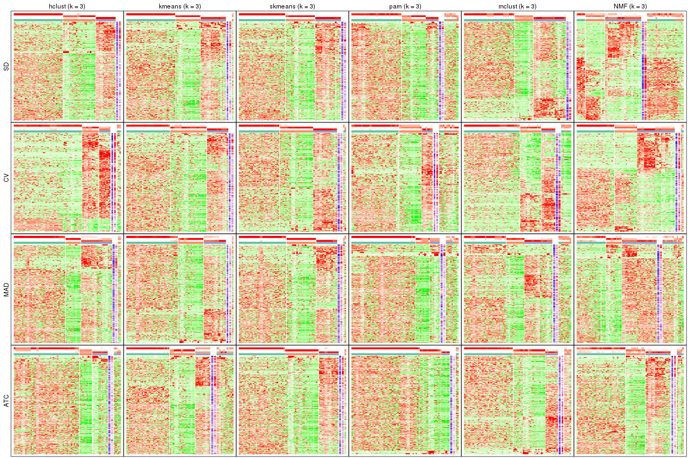
collect_plots(res_list, k = 4, fun = get_signatures, mc.cores = 4)
collect_plots(res_list, k = 5, fun = get_signatures, mc.cores = 4)
collect_plots(res_list, k = 6, fun = get_signatures, mc.cores = 4)
The statistics used for measuring the stability of consensus partitioning. (How are they defined?)
get_stats(res_list, k = 2)
#> k 1-PAC mean_silhouette concordance area_increased Rand Jaccard
#> SD:NMF 2 1.000 0.984 0.994 0.478 0.525 0.525
#> CV:NMF 2 1.000 0.986 0.994 0.476 0.525 0.525
#> MAD:NMF 2 0.999 0.949 0.980 0.480 0.518 0.518
#> ATC:NMF 2 0.451 0.853 0.882 0.472 0.512 0.512
#> SD:skmeans 2 0.672 0.904 0.950 0.488 0.518 0.518
#> CV:skmeans 2 0.452 0.640 0.788 0.483 0.495 0.495
#> MAD:skmeans 2 1.000 0.966 0.986 0.482 0.525 0.525
#> ATC:skmeans 2 1.000 0.979 0.992 0.481 0.518 0.518
#> SD:mclust 2 0.725 0.922 0.955 0.495 0.499 0.499
#> CV:mclust 2 0.836 0.931 0.967 0.460 0.549 0.549
#> MAD:mclust 2 0.850 0.926 0.965 0.502 0.495 0.495
#> ATC:mclust 2 1.000 0.985 0.993 0.507 0.493 0.493
#> SD:kmeans 2 0.677 0.919 0.950 0.446 0.559 0.559
#> CV:kmeans 2 0.379 0.841 0.896 0.396 0.665 0.665
#> MAD:kmeans 2 0.914 0.920 0.967 0.418 0.606 0.606
#> ATC:kmeans 2 1.000 0.978 0.990 0.437 0.570 0.570
#> SD:pam 2 0.687 0.814 0.927 0.494 0.495 0.495
#> CV:pam 2 0.454 0.760 0.887 0.303 0.778 0.778
#> MAD:pam 2 0.861 0.898 0.962 0.446 0.549 0.549
#> ATC:pam 2 1.000 0.961 0.984 0.428 0.581 0.581
#> SD:hclust 2 0.789 0.955 0.966 0.417 0.559 0.559
#> CV:hclust 2 0.839 0.937 0.972 0.409 0.593 0.593
#> MAD:hclust 2 0.752 0.811 0.921 0.353 0.700 0.700
#> ATC:hclust 2 0.712 0.902 0.946 0.400 0.570 0.570
get_stats(res_list, k = 3)
#> k 1-PAC mean_silhouette concordance area_increased Rand Jaccard
#> SD:NMF 3 0.490 0.532 0.699 0.3035 0.784 0.597
#> CV:NMF 3 0.733 0.900 0.877 0.3227 0.797 0.621
#> MAD:NMF 3 0.403 0.613 0.780 0.2978 0.626 0.404
#> ATC:NMF 3 0.461 0.716 0.810 0.3244 0.814 0.651
#> SD:skmeans 3 1.000 0.983 0.992 0.3310 0.731 0.527
#> CV:skmeans 3 0.895 0.926 0.966 0.3634 0.695 0.464
#> MAD:skmeans 3 0.924 0.941 0.975 0.3331 0.779 0.601
#> ATC:skmeans 3 1.000 0.960 0.980 0.3308 0.783 0.603
#> SD:mclust 3 0.760 0.882 0.862 0.2507 0.849 0.705
#> CV:mclust 3 0.651 0.764 0.885 0.2084 0.876 0.781
#> MAD:mclust 3 0.620 0.722 0.871 0.2796 0.799 0.614
#> ATC:mclust 3 0.856 0.867 0.926 0.2091 0.894 0.786
#> SD:kmeans 3 0.994 0.965 0.977 0.4249 0.757 0.581
#> CV:kmeans 3 0.759 0.919 0.931 0.5840 0.685 0.526
#> MAD:kmeans 3 0.731 0.867 0.915 0.4525 0.768 0.618
#> ATC:kmeans 3 0.668 0.642 0.833 0.3767 0.763 0.599
#> SD:pam 3 0.687 0.769 0.884 0.2049 0.906 0.810
#> CV:pam 3 0.423 0.680 0.833 0.7502 0.621 0.523
#> MAD:pam 3 0.838 0.779 0.900 0.1115 0.944 0.898
#> ATC:pam 3 0.950 0.933 0.973 0.0881 0.965 0.939
#> SD:hclust 3 0.912 0.952 0.970 0.5122 0.808 0.657
#> CV:hclust 3 0.723 0.825 0.845 0.2215 0.962 0.937
#> MAD:hclust 3 0.703 0.864 0.916 0.6958 0.682 0.545
#> ATC:hclust 3 0.653 0.746 0.829 0.3875 0.930 0.878
get_stats(res_list, k = 4)
#> k 1-PAC mean_silhouette concordance area_increased Rand Jaccard
#> SD:NMF 4 0.544 0.734 0.819 0.1547 0.816 0.541
#> CV:NMF 4 0.758 0.783 0.832 0.1592 0.896 0.709
#> MAD:NMF 4 0.369 0.515 0.727 0.1149 0.868 0.666
#> ATC:NMF 4 0.605 0.660 0.815 0.0974 0.947 0.863
#> SD:skmeans 4 0.766 0.813 0.855 0.1315 0.877 0.657
#> CV:skmeans 4 0.687 0.733 0.846 0.1333 0.873 0.645
#> MAD:skmeans 4 0.702 0.781 0.876 0.1193 0.933 0.817
#> ATC:skmeans 4 0.823 0.861 0.931 0.1022 0.933 0.817
#> SD:mclust 4 0.744 0.842 0.883 0.1578 0.872 0.668
#> CV:mclust 4 0.645 0.704 0.795 0.2207 0.856 0.696
#> MAD:mclust 4 0.629 0.696 0.823 0.1337 0.886 0.683
#> ATC:mclust 4 0.707 0.746 0.817 0.1104 0.986 0.964
#> SD:kmeans 4 0.815 0.754 0.876 0.1210 0.943 0.842
#> CV:kmeans 4 0.777 0.801 0.861 0.1438 0.899 0.718
#> MAD:kmeans 4 0.782 0.821 0.877 0.1377 0.909 0.761
#> ATC:kmeans 4 0.677 0.838 0.877 0.1367 0.873 0.683
#> SD:pam 4 0.581 0.615 0.831 0.0638 0.955 0.895
#> CV:pam 4 0.692 0.811 0.917 0.2865 0.844 0.654
#> MAD:pam 4 0.828 0.779 0.921 0.0251 0.973 0.946
#> ATC:pam 4 0.922 0.898 0.964 0.0249 0.980 0.964
#> SD:hclust 4 0.914 0.954 0.959 0.0820 0.949 0.862
#> CV:hclust 4 0.511 0.649 0.809 0.1952 0.879 0.788
#> MAD:hclust 4 0.664 0.802 0.874 0.0788 0.977 0.939
#> ATC:hclust 4 0.683 0.803 0.863 0.1340 0.810 0.632
get_stats(res_list, k = 5)
#> k 1-PAC mean_silhouette concordance area_increased Rand Jaccard
#> SD:NMF 5 0.680 0.751 0.818 0.0697 1.000 1.000
#> CV:NMF 5 0.736 0.777 0.857 0.0935 0.883 0.599
#> MAD:NMF 5 0.433 0.452 0.695 0.0710 0.950 0.841
#> ATC:NMF 5 0.554 0.542 0.745 0.0667 0.964 0.899
#> SD:skmeans 5 0.733 0.779 0.852 0.0671 0.941 0.772
#> CV:skmeans 5 0.633 0.609 0.774 0.0656 0.916 0.689
#> MAD:skmeans 5 0.659 0.711 0.814 0.0648 0.977 0.925
#> ATC:skmeans 5 0.737 0.732 0.863 0.0612 0.977 0.922
#> SD:mclust 5 0.802 0.801 0.830 0.0773 0.986 0.950
#> CV:mclust 5 0.621 0.578 0.763 0.1174 0.874 0.648
#> MAD:mclust 5 0.672 0.694 0.760 0.0348 0.921 0.727
#> ATC:mclust 5 0.610 0.486 0.739 0.1092 0.818 0.540
#> SD:kmeans 5 0.757 0.712 0.839 0.0730 0.923 0.757
#> CV:kmeans 5 0.780 0.694 0.794 0.0733 0.968 0.880
#> MAD:kmeans 5 0.812 0.821 0.877 0.0709 0.957 0.858
#> ATC:kmeans 5 0.952 0.921 0.944 0.0849 0.936 0.789
#> SD:pam 5 0.601 0.694 0.814 0.0167 0.941 0.859
#> CV:pam 5 0.705 0.803 0.907 0.0124 1.000 1.000
#> MAD:pam 5 0.836 0.727 0.915 0.0258 0.959 0.916
#> ATC:pam 5 0.931 0.876 0.956 0.0266 1.000 1.000
#> SD:hclust 5 0.874 0.918 0.941 0.0670 0.951 0.847
#> CV:hclust 5 0.511 0.392 0.749 0.1469 0.895 0.783
#> MAD:hclust 5 0.828 0.833 0.881 0.0579 0.944 0.847
#> ATC:hclust 5 0.684 0.804 0.869 0.0813 0.950 0.851
get_stats(res_list, k = 6)
#> k 1-PAC mean_silhouette concordance area_increased Rand Jaccard
#> SD:NMF 6 0.705 0.655 0.796 0.0414 0.939 0.790
#> CV:NMF 6 0.744 0.736 0.801 0.0395 0.990 0.951
#> MAD:NMF 6 0.454 0.369 0.606 0.0434 0.871 0.574
#> ATC:NMF 6 0.576 0.464 0.702 0.0578 0.940 0.823
#> SD:skmeans 6 0.720 0.651 0.811 0.0410 0.982 0.917
#> CV:skmeans 6 0.657 0.568 0.741 0.0387 0.951 0.772
#> MAD:skmeans 6 0.703 0.519 0.766 0.0479 0.966 0.881
#> ATC:skmeans 6 0.710 0.641 0.814 0.0440 0.989 0.962
#> SD:mclust 6 0.791 0.731 0.810 0.0571 0.875 0.556
#> CV:mclust 6 0.642 0.555 0.729 0.0381 0.891 0.621
#> MAD:mclust 6 0.689 0.742 0.789 0.0377 0.971 0.880
#> ATC:mclust 6 0.628 0.533 0.732 0.0455 0.957 0.819
#> SD:kmeans 6 0.736 0.706 0.824 0.0519 0.905 0.637
#> CV:kmeans 6 0.771 0.693 0.797 0.0482 0.900 0.609
#> MAD:kmeans 6 0.751 0.721 0.844 0.0439 0.987 0.953
#> ATC:kmeans 6 0.812 0.787 0.882 0.0431 0.995 0.979
#> SD:pam 6 0.562 0.677 0.811 0.0256 0.978 0.943
#> CV:pam 6 0.672 0.728 0.901 0.0115 0.995 0.984
#> MAD:pam 6 0.835 0.729 0.914 0.0227 0.995 0.989
#> ATC:pam 6 0.911 0.847 0.947 0.0246 1.000 1.000
#> SD:hclust 6 0.861 0.842 0.922 0.0431 0.988 0.956
#> CV:hclust 6 0.577 0.406 0.716 0.0782 0.921 0.804
#> MAD:hclust 6 0.880 0.817 0.886 0.0400 0.968 0.900
#> ATC:hclust 6 0.711 0.782 0.871 0.0264 0.998 0.992
Following heatmap plots the partition for each combination of methods and the lightness correspond to the silhouette scores for samples in each method. On top the consensus subgroup is inferred from all methods by taking the mean silhouette scores as weight.
collect_stats(res_list, k = 2)
collect_stats(res_list, k = 3)
collect_stats(res_list, k = 4)
collect_stats(res_list, k = 5)

collect_stats(res_list, k = 6)
Collect partitions from all methods:
collect_classes(res_list, k = 2)
collect_classes(res_list, k = 3)
collect_classes(res_list, k = 4)
collect_classes(res_list, k = 5)
collect_classes(res_list, k = 6)
Overlap of top rows from different top-row methods:
top_rows_overlap(res_list, top_n = 838, method = "euler")
top_rows_overlap(res_list, top_n = 1676, method = "euler")
top_rows_overlap(res_list, top_n = 2514, method = "euler")
top_rows_overlap(res_list, top_n = 3352, method = "euler")
top_rows_overlap(res_list, top_n = 4190, method = "euler")
Also visualize the correspondance of rankings between different top-row methods:
top_rows_overlap(res_list, top_n = 838, method = "correspondance")
top_rows_overlap(res_list, top_n = 1676, method = "correspondance")
top_rows_overlap(res_list, top_n = 2514, method = "correspondance")
top_rows_overlap(res_list, top_n = 3352, method = "correspondance")
top_rows_overlap(res_list, top_n = 4190, method = "correspondance")
Heatmaps of the top rows:
top_rows_heatmap(res_list, top_n = 838)
top_rows_heatmap(res_list, top_n = 1676)
top_rows_heatmap(res_list, top_n = 2514)
top_rows_heatmap(res_list, top_n = 3352)
top_rows_heatmap(res_list, top_n = 4190)
The object with results only for a single top-value method and a single partition method can be extracted as:
res = res_list["SD", "hclust"]
# you can also extract it by
# res = res_list["SD:hclust"]
A summary of res and all the functions that can be applied to it:
res
#> A 'ConsensusPartition' object with k = 2, 3, 4, 5, 6.
#> On a matrix with 8381 rows and 72 columns.
#> Top rows (838, 1676, 2514, 3352, 4190) are extracted by 'SD' method.
#> Subgroups are detected by 'hclust' method.
#> Performed in total 1250 partitions by row resampling.
#> Best k for subgroups seems to be 4.
#>
#> Following methods can be applied to this 'ConsensusPartition' object:
#> [1] "cola_report" "collect_classes" "collect_plots"
#> [4] "collect_stats" "colnames" "compare_signatures"
#> [7] "consensus_heatmap" "dimension_reduction" "functional_enrichment"
#> [10] "get_anno_col" "get_anno" "get_classes"
#> [13] "get_consensus" "get_matrix" "get_membership"
#> [16] "get_param" "get_signatures" "get_stats"
#> [19] "is_best_k" "is_stable_k" "membership_heatmap"
#> [22] "ncol" "nrow" "plot_ecdf"
#> [25] "rownames" "select_partition_number" "show"
#> [28] "suggest_best_k" "test_to_known_factors"
collect_plots() function collects all the plots made from res for all k (number of partitions)
into one single page to provide an easy and fast comparison between different k.
collect_plots(res)
The plots are:
k and the heatmap of
predicted classes for each k.k.k.k.All the plots in panels can be made by individual functions and they are plotted later in this section.
select_partition_number() produces several plots showing different
statistics for choosing “optimized” k. There are following statistics:
k;k, the area increased is defined as \(A_k - A_{k-1}\).The detailed explanations of these statistics can be found in the cola vignette.
Generally speaking, lower PAC score, higher mean silhouette score or higher
concordance corresponds to better partition. Rand index and Jaccard index
measure how similar the current partition is compared to partition with k-1.
If they are too similar, we won't accept k is better than k-1.
select_partition_number(res)
The numeric values for all these statistics can be obtained by get_stats().
get_stats(res)
#> k 1-PAC mean_silhouette concordance area_increased Rand Jaccard
#> 2 2 0.789 0.955 0.966 0.4167 0.559 0.559
#> 3 3 0.912 0.952 0.970 0.5122 0.808 0.657
#> 4 4 0.914 0.954 0.959 0.0820 0.949 0.862
#> 5 5 0.874 0.918 0.941 0.0670 0.951 0.847
#> 6 6 0.861 0.842 0.922 0.0431 0.988 0.956
suggest_best_k() suggests the best \(k\) based on these statistics. The rules are as follows:
NA.suggest_best_k(res)
#> [1] 4
#> attr(,"optional")
#> [1] 3
There is also optional best \(k\) = 3 that is worth to check.
Following shows the table of the partitions (You need to click the show/hide
code output link to see it). The membership matrix (columns with name p*)
is inferred by
clue::cl_consensus()
function with the SE method. Basically the value in the membership matrix
represents the probability to belong to a certain group. The finall class
label for an item is determined with the group with highest probability it
belongs to.
In get_classes() function, the entropy is calculated from the membership
matrix and the silhouette score is calculated from the consensus matrix.
cbind(get_classes(res, k = 2), get_membership(res, k = 2))
#> class entropy silhouette p1 p2
#> SRR2558111 1 0.0000 0.994 1.000 0.000
#> SRR2558177 2 0.0938 0.904 0.012 0.988
#> SRR2558176 1 0.0000 0.994 1.000 0.000
#> SRR2558175 1 0.0000 0.994 1.000 0.000
#> SRR2558174 1 0.0000 0.994 1.000 0.000
#> SRR2558173 1 0.0000 0.994 1.000 0.000
#> SRR2558172 1 0.0000 0.994 1.000 0.000
#> SRR2558171 1 0.0000 0.994 1.000 0.000
#> SRR2558170 2 0.5737 0.893 0.136 0.864
#> SRR2558169 2 0.5842 0.892 0.140 0.860
#> SRR2558168 1 0.1184 0.986 0.984 0.016
#> SRR2558167 2 0.5842 0.892 0.140 0.860
#> SRR2558166 2 0.5842 0.892 0.140 0.860
#> SRR2558165 2 0.1843 0.904 0.028 0.972
#> SRR2558164 1 0.1184 0.986 0.984 0.016
#> SRR2558163 2 0.7056 0.842 0.192 0.808
#> SRR2558162 1 0.0672 0.988 0.992 0.008
#> SRR2558161 2 0.6531 0.868 0.168 0.832
#> SRR2558160 1 0.0000 0.994 1.000 0.000
#> SRR2558159 2 0.5842 0.892 0.140 0.860
#> SRR2558158 2 0.5842 0.892 0.140 0.860
#> SRR2558157 2 0.5737 0.893 0.136 0.864
#> SRR2558156 2 0.1184 0.905 0.016 0.984
#> SRR2558155 2 0.8763 0.645 0.296 0.704
#> SRR2558154 2 0.0672 0.903 0.008 0.992
#> SRR2558153 1 0.0000 0.994 1.000 0.000
#> SRR2558152 1 0.0000 0.994 1.000 0.000
#> SRR2558151 1 0.0000 0.994 1.000 0.000
#> SRR2558150 1 0.1184 0.986 0.984 0.016
#> SRR2558149 1 0.0000 0.994 1.000 0.000
#> SRR2558148 1 0.0000 0.994 1.000 0.000
#> SRR2558147 1 0.1184 0.986 0.984 0.016
#> SRR2558146 1 0.0000 0.994 1.000 0.000
#> SRR2558145 1 0.0000 0.994 1.000 0.000
#> SRR2558144 1 0.0000 0.994 1.000 0.000
#> SRR2558143 1 0.0000 0.994 1.000 0.000
#> SRR2558142 1 0.0000 0.994 1.000 0.000
#> SRR2558141 2 0.1184 0.905 0.016 0.984
#> SRR2558140 2 0.1184 0.905 0.016 0.984
#> SRR2558139 1 0.1184 0.986 0.984 0.016
#> SRR2558138 1 0.0000 0.994 1.000 0.000
#> SRR2558137 1 0.1184 0.986 0.984 0.016
#> SRR2558136 1 0.0000 0.994 1.000 0.000
#> SRR2558182 1 0.1184 0.986 0.984 0.016
#> SRR2558181 1 0.1184 0.986 0.984 0.016
#> SRR2558180 2 0.1184 0.905 0.016 0.984
#> SRR2558179 1 0.2043 0.964 0.968 0.032
#> SRR2558178 2 0.1414 0.905 0.020 0.980
#> SRR2558134 1 0.1184 0.986 0.984 0.016
#> SRR2558135 1 0.0000 0.994 1.000 0.000
#> SRR2558133 2 0.5737 0.893 0.136 0.864
#> SRR2558132 1 0.1184 0.986 0.984 0.016
#> SRR2558131 1 0.0000 0.994 1.000 0.000
#> SRR2558129 1 0.0000 0.994 1.000 0.000
#> SRR2558127 2 0.1184 0.905 0.016 0.984
#> SRR2558126 1 0.0000 0.994 1.000 0.000
#> SRR2558128 1 0.1184 0.986 0.984 0.016
#> SRR2558125 2 0.1184 0.905 0.016 0.984
#> SRR2558130 1 0.0000 0.994 1.000 0.000
#> SRR2558124 2 0.7376 0.780 0.208 0.792
#> SRR2558123 2 0.1184 0.905 0.016 0.984
#> SRR2558121 1 0.0000 0.994 1.000 0.000
#> SRR2558122 1 0.0000 0.994 1.000 0.000
#> SRR2558120 1 0.1184 0.986 0.984 0.016
#> SRR2558119 1 0.0000 0.994 1.000 0.000
#> SRR2558117 1 0.1184 0.986 0.984 0.016
#> SRR2558118 1 0.0000 0.994 1.000 0.000
#> SRR2558115 1 0.1184 0.986 0.984 0.016
#> SRR2558116 1 0.0000 0.994 1.000 0.000
#> SRR2558114 1 0.0000 0.994 1.000 0.000
#> SRR2558113 1 0.0000 0.994 1.000 0.000
#> SRR2558112 1 0.0000 0.994 1.000 0.000
cbind(get_classes(res, k = 3), get_membership(res, k = 3))
#> class entropy silhouette p1 p2 p3
#> SRR2558111 1 0.0000 0.999 1.000 0.000 0.000
#> SRR2558177 2 0.0237 0.890 0.000 0.996 0.004
#> SRR2558176 1 0.0000 0.999 1.000 0.000 0.000
#> SRR2558175 1 0.0000 0.999 1.000 0.000 0.000
#> SRR2558174 1 0.0000 0.999 1.000 0.000 0.000
#> SRR2558173 1 0.0000 0.999 1.000 0.000 0.000
#> SRR2558172 1 0.0000 0.999 1.000 0.000 0.000
#> SRR2558171 1 0.0000 0.999 1.000 0.000 0.000
#> SRR2558170 2 0.3879 0.867 0.000 0.848 0.152
#> SRR2558169 2 0.3941 0.865 0.000 0.844 0.156
#> SRR2558168 3 0.0000 1.000 0.000 0.000 1.000
#> SRR2558167 2 0.3941 0.865 0.000 0.844 0.156
#> SRR2558166 2 0.3941 0.865 0.000 0.844 0.156
#> SRR2558165 2 0.0592 0.884 0.012 0.988 0.000
#> SRR2558164 3 0.0000 1.000 0.000 0.000 1.000
#> SRR2558163 2 0.4654 0.816 0.000 0.792 0.208
#> SRR2558162 1 0.0424 0.991 0.992 0.008 0.000
#> SRR2558161 2 0.4346 0.842 0.000 0.816 0.184
#> SRR2558160 1 0.0000 0.999 1.000 0.000 0.000
#> SRR2558159 2 0.3941 0.865 0.000 0.844 0.156
#> SRR2558158 2 0.3941 0.865 0.000 0.844 0.156
#> SRR2558157 2 0.3879 0.867 0.000 0.848 0.152
#> SRR2558156 2 0.0000 0.889 0.000 1.000 0.000
#> SRR2558155 2 0.5465 0.573 0.288 0.712 0.000
#> SRR2558154 2 0.0424 0.890 0.000 0.992 0.008
#> SRR2558153 1 0.0000 0.999 1.000 0.000 0.000
#> SRR2558152 1 0.0000 0.999 1.000 0.000 0.000
#> SRR2558151 1 0.0000 0.999 1.000 0.000 0.000
#> SRR2558150 3 0.0000 1.000 0.000 0.000 1.000
#> SRR2558149 1 0.0000 0.999 1.000 0.000 0.000
#> SRR2558148 1 0.0000 0.999 1.000 0.000 0.000
#> SRR2558147 3 0.0000 1.000 0.000 0.000 1.000
#> SRR2558146 1 0.0000 0.999 1.000 0.000 0.000
#> SRR2558145 1 0.0000 0.999 1.000 0.000 0.000
#> SRR2558144 1 0.0000 0.999 1.000 0.000 0.000
#> SRR2558143 1 0.0000 0.999 1.000 0.000 0.000
#> SRR2558142 1 0.0000 0.999 1.000 0.000 0.000
#> SRR2558141 2 0.0000 0.889 0.000 1.000 0.000
#> SRR2558140 2 0.0000 0.889 0.000 1.000 0.000
#> SRR2558139 3 0.0000 1.000 0.000 0.000 1.000
#> SRR2558138 1 0.0000 0.999 1.000 0.000 0.000
#> SRR2558137 3 0.0000 1.000 0.000 0.000 1.000
#> SRR2558136 1 0.0000 0.999 1.000 0.000 0.000
#> SRR2558182 3 0.0000 1.000 0.000 0.000 1.000
#> SRR2558181 3 0.0000 1.000 0.000 0.000 1.000
#> SRR2558180 2 0.0000 0.889 0.000 1.000 0.000
#> SRR2558179 1 0.1289 0.968 0.968 0.032 0.000
#> SRR2558178 2 0.0237 0.888 0.004 0.996 0.000
#> SRR2558134 3 0.0000 1.000 0.000 0.000 1.000
#> SRR2558135 1 0.0000 0.999 1.000 0.000 0.000
#> SRR2558133 2 0.3879 0.867 0.000 0.848 0.152
#> SRR2558132 3 0.0000 1.000 0.000 0.000 1.000
#> SRR2558131 1 0.0000 0.999 1.000 0.000 0.000
#> SRR2558129 1 0.0000 0.999 1.000 0.000 0.000
#> SRR2558127 2 0.0000 0.889 0.000 1.000 0.000
#> SRR2558126 1 0.0000 0.999 1.000 0.000 0.000
#> SRR2558128 3 0.0000 1.000 0.000 0.000 1.000
#> SRR2558125 2 0.0000 0.889 0.000 1.000 0.000
#> SRR2558130 1 0.0000 0.999 1.000 0.000 0.000
#> SRR2558124 2 0.4555 0.692 0.200 0.800 0.000
#> SRR2558123 2 0.0000 0.889 0.000 1.000 0.000
#> SRR2558121 1 0.0000 0.999 1.000 0.000 0.000
#> SRR2558122 1 0.0000 0.999 1.000 0.000 0.000
#> SRR2558120 3 0.0000 1.000 0.000 0.000 1.000
#> SRR2558119 1 0.0000 0.999 1.000 0.000 0.000
#> SRR2558117 3 0.0000 1.000 0.000 0.000 1.000
#> SRR2558118 1 0.0000 0.999 1.000 0.000 0.000
#> SRR2558115 3 0.0000 1.000 0.000 0.000 1.000
#> SRR2558116 1 0.0000 0.999 1.000 0.000 0.000
#> SRR2558114 1 0.0000 0.999 1.000 0.000 0.000
#> SRR2558113 1 0.0000 0.999 1.000 0.000 0.000
#> SRR2558112 1 0.0000 0.999 1.000 0.000 0.000
cbind(get_classes(res, k = 4), get_membership(res, k = 4))
#> class entropy silhouette p1 p2 p3 p4
#> SRR2558111 1 0.0000 0.982 1.000 0.000 0.000 0.000
#> SRR2558177 2 0.1022 0.892 0.000 0.968 0.000 0.032
#> SRR2558176 1 0.2589 0.905 0.884 0.000 0.000 0.116
#> SRR2558175 1 0.0592 0.978 0.984 0.000 0.000 0.016
#> SRR2558174 1 0.0592 0.978 0.984 0.000 0.000 0.016
#> SRR2558173 1 0.2589 0.905 0.884 0.000 0.000 0.116
#> SRR2558172 1 0.0817 0.974 0.976 0.000 0.000 0.024
#> SRR2558171 1 0.0000 0.982 1.000 0.000 0.000 0.000
#> SRR2558170 4 0.3172 0.964 0.000 0.160 0.000 0.840
#> SRR2558169 4 0.2868 0.971 0.000 0.136 0.000 0.864
#> SRR2558168 3 0.0000 1.000 0.000 0.000 1.000 0.000
#> SRR2558167 4 0.2868 0.971 0.000 0.136 0.000 0.864
#> SRR2558166 4 0.2868 0.971 0.000 0.136 0.000 0.864
#> SRR2558165 2 0.0469 0.909 0.000 0.988 0.000 0.012
#> SRR2558164 3 0.0000 1.000 0.000 0.000 1.000 0.000
#> SRR2558163 4 0.4499 0.906 0.000 0.124 0.072 0.804
#> SRR2558162 1 0.3032 0.891 0.868 0.008 0.000 0.124
#> SRR2558161 4 0.4418 0.914 0.000 0.184 0.032 0.784
#> SRR2558160 1 0.0921 0.971 0.972 0.000 0.000 0.028
#> SRR2558159 4 0.2868 0.971 0.000 0.136 0.000 0.864
#> SRR2558158 4 0.2868 0.971 0.000 0.136 0.000 0.864
#> SRR2558157 4 0.3172 0.964 0.000 0.160 0.000 0.840
#> SRR2558156 2 0.0000 0.916 0.000 1.000 0.000 0.000
#> SRR2558155 2 0.5219 0.578 0.244 0.712 0.000 0.044
#> SRR2558154 2 0.3074 0.754 0.000 0.848 0.000 0.152
#> SRR2558153 1 0.0000 0.982 1.000 0.000 0.000 0.000
#> SRR2558152 1 0.0592 0.978 0.984 0.000 0.000 0.016
#> SRR2558151 1 0.0000 0.982 1.000 0.000 0.000 0.000
#> SRR2558150 3 0.0000 1.000 0.000 0.000 1.000 0.000
#> SRR2558149 1 0.0000 0.982 1.000 0.000 0.000 0.000
#> SRR2558148 1 0.0188 0.981 0.996 0.000 0.000 0.004
#> SRR2558147 3 0.0000 1.000 0.000 0.000 1.000 0.000
#> SRR2558146 1 0.0592 0.978 0.984 0.000 0.000 0.016
#> SRR2558145 1 0.0000 0.982 1.000 0.000 0.000 0.000
#> SRR2558144 1 0.0000 0.982 1.000 0.000 0.000 0.000
#> SRR2558143 1 0.0000 0.982 1.000 0.000 0.000 0.000
#> SRR2558142 1 0.0336 0.980 0.992 0.000 0.000 0.008
#> SRR2558141 2 0.0000 0.916 0.000 1.000 0.000 0.000
#> SRR2558140 2 0.0000 0.916 0.000 1.000 0.000 0.000
#> SRR2558139 3 0.0000 1.000 0.000 0.000 1.000 0.000
#> SRR2558138 1 0.0592 0.978 0.984 0.000 0.000 0.016
#> SRR2558137 3 0.0000 1.000 0.000 0.000 1.000 0.000
#> SRR2558136 1 0.0000 0.982 1.000 0.000 0.000 0.000
#> SRR2558182 3 0.0000 1.000 0.000 0.000 1.000 0.000
#> SRR2558181 3 0.0000 1.000 0.000 0.000 1.000 0.000
#> SRR2558180 2 0.0000 0.916 0.000 1.000 0.000 0.000
#> SRR2558179 1 0.3694 0.866 0.844 0.032 0.000 0.124
#> SRR2558178 2 0.0188 0.914 0.004 0.996 0.000 0.000
#> SRR2558134 3 0.0000 1.000 0.000 0.000 1.000 0.000
#> SRR2558135 1 0.0188 0.981 0.996 0.000 0.000 0.004
#> SRR2558133 4 0.3172 0.964 0.000 0.160 0.000 0.840
#> SRR2558132 3 0.0000 1.000 0.000 0.000 1.000 0.000
#> SRR2558131 1 0.0000 0.982 1.000 0.000 0.000 0.000
#> SRR2558129 1 0.0000 0.982 1.000 0.000 0.000 0.000
#> SRR2558127 2 0.0000 0.916 0.000 1.000 0.000 0.000
#> SRR2558126 1 0.0000 0.982 1.000 0.000 0.000 0.000
#> SRR2558128 3 0.0000 1.000 0.000 0.000 1.000 0.000
#> SRR2558125 2 0.0000 0.916 0.000 1.000 0.000 0.000
#> SRR2558130 1 0.0000 0.982 1.000 0.000 0.000 0.000
#> SRR2558124 2 0.4332 0.700 0.160 0.800 0.000 0.040
#> SRR2558123 2 0.0000 0.916 0.000 1.000 0.000 0.000
#> SRR2558121 1 0.0592 0.978 0.984 0.000 0.000 0.016
#> SRR2558122 1 0.0000 0.982 1.000 0.000 0.000 0.000
#> SRR2558120 3 0.0000 1.000 0.000 0.000 1.000 0.000
#> SRR2558119 1 0.0188 0.981 0.996 0.000 0.000 0.004
#> SRR2558117 3 0.0000 1.000 0.000 0.000 1.000 0.000
#> SRR2558118 1 0.0469 0.978 0.988 0.000 0.000 0.012
#> SRR2558115 3 0.0000 1.000 0.000 0.000 1.000 0.000
#> SRR2558116 1 0.0188 0.981 0.996 0.000 0.000 0.004
#> SRR2558114 1 0.0188 0.981 0.996 0.000 0.000 0.004
#> SRR2558113 1 0.0592 0.976 0.984 0.000 0.000 0.016
#> SRR2558112 1 0.0000 0.982 1.000 0.000 0.000 0.000
cbind(get_classes(res, k = 5), get_membership(res, k = 5))
#> class entropy silhouette p1 p2 p3 p4 p5
#> SRR2558111 1 0.0771 0.930 0.976 0.004 0.000 0.000 0.020
#> SRR2558177 2 0.1965 0.913 0.000 0.904 0.000 0.096 0.000
#> SRR2558176 5 0.3876 0.899 0.316 0.000 0.000 0.000 0.684
#> SRR2558175 1 0.2329 0.830 0.876 0.000 0.000 0.000 0.124
#> SRR2558174 1 0.2329 0.830 0.876 0.000 0.000 0.000 0.124
#> SRR2558173 5 0.3913 0.889 0.324 0.000 0.000 0.000 0.676
#> SRR2558172 1 0.2304 0.867 0.908 0.044 0.000 0.000 0.048
#> SRR2558171 1 0.0162 0.935 0.996 0.000 0.000 0.000 0.004
#> SRR2558170 4 0.0794 0.957 0.000 0.028 0.000 0.972 0.000
#> SRR2558169 4 0.0162 0.964 0.000 0.004 0.000 0.996 0.000
#> SRR2558168 3 0.0000 1.000 0.000 0.000 1.000 0.000 0.000
#> SRR2558167 4 0.0162 0.964 0.000 0.004 0.000 0.996 0.000
#> SRR2558166 4 0.0162 0.964 0.000 0.004 0.000 0.996 0.000
#> SRR2558165 2 0.1877 0.929 0.000 0.924 0.000 0.064 0.012
#> SRR2558164 3 0.0000 1.000 0.000 0.000 1.000 0.000 0.000
#> SRR2558163 4 0.1608 0.901 0.000 0.000 0.072 0.928 0.000
#> SRR2558162 5 0.3715 0.910 0.260 0.004 0.000 0.000 0.736
#> SRR2558161 4 0.3399 0.832 0.000 0.020 0.000 0.812 0.168
#> SRR2558160 1 0.4555 0.474 0.720 0.056 0.000 0.000 0.224
#> SRR2558159 4 0.0162 0.964 0.000 0.004 0.000 0.996 0.000
#> SRR2558158 4 0.0162 0.964 0.000 0.004 0.000 0.996 0.000
#> SRR2558157 4 0.0794 0.957 0.000 0.028 0.000 0.972 0.000
#> SRR2558156 2 0.1478 0.934 0.000 0.936 0.000 0.064 0.000
#> SRR2558155 2 0.4177 0.578 0.164 0.772 0.000 0.000 0.064
#> SRR2558154 2 0.3305 0.782 0.000 0.776 0.000 0.224 0.000
#> SRR2558153 1 0.0162 0.935 0.996 0.000 0.000 0.000 0.004
#> SRR2558152 1 0.2329 0.830 0.876 0.000 0.000 0.000 0.124
#> SRR2558151 1 0.0000 0.935 1.000 0.000 0.000 0.000 0.000
#> SRR2558150 3 0.0000 1.000 0.000 0.000 1.000 0.000 0.000
#> SRR2558149 1 0.0000 0.935 1.000 0.000 0.000 0.000 0.000
#> SRR2558148 1 0.0609 0.932 0.980 0.000 0.000 0.000 0.020
#> SRR2558147 3 0.0000 1.000 0.000 0.000 1.000 0.000 0.000
#> SRR2558146 1 0.2329 0.830 0.876 0.000 0.000 0.000 0.124
#> SRR2558145 1 0.0000 0.935 1.000 0.000 0.000 0.000 0.000
#> SRR2558144 1 0.0000 0.935 1.000 0.000 0.000 0.000 0.000
#> SRR2558143 1 0.0000 0.935 1.000 0.000 0.000 0.000 0.000
#> SRR2558142 1 0.1300 0.914 0.956 0.016 0.000 0.000 0.028
#> SRR2558141 2 0.1478 0.934 0.000 0.936 0.000 0.064 0.000
#> SRR2558140 2 0.1478 0.934 0.000 0.936 0.000 0.064 0.000
#> SRR2558139 3 0.0000 1.000 0.000 0.000 1.000 0.000 0.000
#> SRR2558138 1 0.2329 0.830 0.876 0.000 0.000 0.000 0.124
#> SRR2558137 3 0.0000 1.000 0.000 0.000 1.000 0.000 0.000
#> SRR2558136 1 0.0290 0.933 0.992 0.000 0.000 0.000 0.008
#> SRR2558182 3 0.0000 1.000 0.000 0.000 1.000 0.000 0.000
#> SRR2558181 3 0.0000 1.000 0.000 0.000 1.000 0.000 0.000
#> SRR2558180 2 0.1478 0.934 0.000 0.936 0.000 0.064 0.000
#> SRR2558179 5 0.3333 0.860 0.208 0.004 0.000 0.000 0.788
#> SRR2558178 2 0.1798 0.931 0.004 0.928 0.000 0.064 0.004
#> SRR2558134 3 0.0000 1.000 0.000 0.000 1.000 0.000 0.000
#> SRR2558135 1 0.0609 0.932 0.980 0.000 0.000 0.000 0.020
#> SRR2558133 4 0.0794 0.957 0.000 0.028 0.000 0.972 0.000
#> SRR2558132 3 0.0000 1.000 0.000 0.000 1.000 0.000 0.000
#> SRR2558131 1 0.0324 0.934 0.992 0.004 0.000 0.000 0.004
#> SRR2558129 1 0.0000 0.935 1.000 0.000 0.000 0.000 0.000
#> SRR2558127 2 0.1478 0.934 0.000 0.936 0.000 0.064 0.000
#> SRR2558126 1 0.0324 0.934 0.992 0.004 0.000 0.000 0.004
#> SRR2558128 3 0.0000 1.000 0.000 0.000 1.000 0.000 0.000
#> SRR2558125 2 0.1478 0.934 0.000 0.936 0.000 0.064 0.000
#> SRR2558130 1 0.0671 0.931 0.980 0.004 0.000 0.000 0.016
#> SRR2558124 2 0.3673 0.743 0.092 0.836 0.000 0.012 0.060
#> SRR2558123 2 0.1478 0.934 0.000 0.936 0.000 0.064 0.000
#> SRR2558121 1 0.2329 0.830 0.876 0.000 0.000 0.000 0.124
#> SRR2558122 1 0.0162 0.935 0.996 0.000 0.000 0.000 0.004
#> SRR2558120 3 0.0000 1.000 0.000 0.000 1.000 0.000 0.000
#> SRR2558119 1 0.0451 0.934 0.988 0.004 0.000 0.000 0.008
#> SRR2558117 3 0.0000 1.000 0.000 0.000 1.000 0.000 0.000
#> SRR2558118 1 0.1195 0.921 0.960 0.012 0.000 0.000 0.028
#> SRR2558115 3 0.0000 1.000 0.000 0.000 1.000 0.000 0.000
#> SRR2558116 1 0.0609 0.932 0.980 0.000 0.000 0.000 0.020
#> SRR2558114 1 0.0609 0.932 0.980 0.000 0.000 0.000 0.020
#> SRR2558113 1 0.1740 0.895 0.932 0.012 0.000 0.000 0.056
#> SRR2558112 1 0.0000 0.935 1.000 0.000 0.000 0.000 0.000
cbind(get_classes(res, k = 6), get_membership(res, k = 6))
#> class entropy silhouette p1 p2 p3 p4 p5 p6
#> SRR2558111 1 0.2019 0.786 0.900 0.000 0.000 0.000 0.012 0.088
#> SRR2558177 2 0.0790 0.920 0.000 0.968 0.000 0.032 0.000 0.000
#> SRR2558176 5 0.2542 0.914 0.080 0.000 0.000 0.000 0.876 0.044
#> SRR2558175 1 0.3592 0.529 0.740 0.000 0.000 0.000 0.240 0.020
#> SRR2558174 1 0.3592 0.529 0.740 0.000 0.000 0.000 0.240 0.020
#> SRR2558173 5 0.2647 0.905 0.088 0.000 0.000 0.000 0.868 0.044
#> SRR2558172 1 0.2712 0.721 0.864 0.000 0.000 0.000 0.048 0.088
#> SRR2558171 1 0.0790 0.831 0.968 0.000 0.000 0.000 0.000 0.032
#> SRR2558170 4 0.1075 0.917 0.000 0.048 0.000 0.952 0.000 0.000
#> SRR2558169 4 0.0363 0.929 0.000 0.012 0.000 0.988 0.000 0.000
#> SRR2558168 3 0.0000 1.000 0.000 0.000 1.000 0.000 0.000 0.000
#> SRR2558167 4 0.0363 0.929 0.000 0.012 0.000 0.988 0.000 0.000
#> SRR2558166 4 0.0363 0.929 0.000 0.012 0.000 0.988 0.000 0.000
#> SRR2558165 2 0.0363 0.934 0.000 0.988 0.000 0.000 0.012 0.000
#> SRR2558164 3 0.0000 1.000 0.000 0.000 1.000 0.000 0.000 0.000
#> SRR2558163 4 0.1588 0.866 0.000 0.004 0.072 0.924 0.000 0.000
#> SRR2558162 5 0.1779 0.923 0.064 0.000 0.000 0.000 0.920 0.016
#> SRR2558161 4 0.4922 0.480 0.000 0.016 0.000 0.548 0.036 0.400
#> SRR2558160 6 0.5681 0.000 0.420 0.000 0.000 0.000 0.156 0.424
#> SRR2558159 4 0.0363 0.929 0.000 0.012 0.000 0.988 0.000 0.000
#> SRR2558158 4 0.0363 0.929 0.000 0.012 0.000 0.988 0.000 0.000
#> SRR2558157 4 0.1075 0.917 0.000 0.048 0.000 0.952 0.000 0.000
#> SRR2558156 2 0.0000 0.939 0.000 1.000 0.000 0.000 0.000 0.000
#> SRR2558155 2 0.5065 0.658 0.100 0.708 0.000 0.000 0.056 0.136
#> SRR2558154 2 0.2454 0.801 0.000 0.840 0.000 0.160 0.000 0.000
#> SRR2558153 1 0.0632 0.831 0.976 0.000 0.000 0.000 0.000 0.024
#> SRR2558152 1 0.3592 0.529 0.740 0.000 0.000 0.000 0.240 0.020
#> SRR2558151 1 0.0000 0.834 1.000 0.000 0.000 0.000 0.000 0.000
#> SRR2558150 3 0.0000 1.000 0.000 0.000 1.000 0.000 0.000 0.000
#> SRR2558149 1 0.0000 0.834 1.000 0.000 0.000 0.000 0.000 0.000
#> SRR2558148 1 0.1594 0.813 0.932 0.000 0.000 0.000 0.016 0.052
#> SRR2558147 3 0.0000 1.000 0.000 0.000 1.000 0.000 0.000 0.000
#> SRR2558146 1 0.3592 0.529 0.740 0.000 0.000 0.000 0.240 0.020
#> SRR2558145 1 0.0000 0.834 1.000 0.000 0.000 0.000 0.000 0.000
#> SRR2558144 1 0.0547 0.832 0.980 0.000 0.000 0.000 0.000 0.020
#> SRR2558143 1 0.0363 0.834 0.988 0.000 0.000 0.000 0.000 0.012
#> SRR2558142 1 0.1908 0.796 0.916 0.000 0.000 0.000 0.028 0.056
#> SRR2558141 2 0.0000 0.939 0.000 1.000 0.000 0.000 0.000 0.000
#> SRR2558140 2 0.0000 0.939 0.000 1.000 0.000 0.000 0.000 0.000
#> SRR2558139 3 0.0000 1.000 0.000 0.000 1.000 0.000 0.000 0.000
#> SRR2558138 1 0.3592 0.529 0.740 0.000 0.000 0.000 0.240 0.020
#> SRR2558137 3 0.0000 1.000 0.000 0.000 1.000 0.000 0.000 0.000
#> SRR2558136 1 0.0405 0.833 0.988 0.000 0.000 0.000 0.004 0.008
#> SRR2558182 3 0.0000 1.000 0.000 0.000 1.000 0.000 0.000 0.000
#> SRR2558181 3 0.0000 1.000 0.000 0.000 1.000 0.000 0.000 0.000
#> SRR2558180 2 0.0000 0.939 0.000 1.000 0.000 0.000 0.000 0.000
#> SRR2558179 5 0.2448 0.893 0.052 0.000 0.000 0.000 0.884 0.064
#> SRR2558178 2 0.0291 0.936 0.004 0.992 0.000 0.000 0.004 0.000
#> SRR2558134 3 0.0000 1.000 0.000 0.000 1.000 0.000 0.000 0.000
#> SRR2558135 1 0.1594 0.813 0.932 0.000 0.000 0.000 0.016 0.052
#> SRR2558133 4 0.1075 0.917 0.000 0.048 0.000 0.952 0.000 0.000
#> SRR2558132 3 0.0000 1.000 0.000 0.000 1.000 0.000 0.000 0.000
#> SRR2558131 1 0.0692 0.831 0.976 0.000 0.000 0.000 0.004 0.020
#> SRR2558129 1 0.0458 0.833 0.984 0.000 0.000 0.000 0.000 0.016
#> SRR2558127 2 0.0000 0.939 0.000 1.000 0.000 0.000 0.000 0.000
#> SRR2558126 1 0.0692 0.831 0.976 0.000 0.000 0.000 0.004 0.020
#> SRR2558128 3 0.0000 1.000 0.000 0.000 1.000 0.000 0.000 0.000
#> SRR2558125 2 0.0000 0.939 0.000 1.000 0.000 0.000 0.000 0.000
#> SRR2558130 1 0.1858 0.798 0.912 0.000 0.000 0.000 0.012 0.076
#> SRR2558124 2 0.3980 0.784 0.044 0.796 0.000 0.000 0.052 0.108
#> SRR2558123 2 0.0000 0.939 0.000 1.000 0.000 0.000 0.000 0.000
#> SRR2558121 1 0.3592 0.529 0.740 0.000 0.000 0.000 0.240 0.020
#> SRR2558122 1 0.0603 0.832 0.980 0.000 0.000 0.000 0.004 0.016
#> SRR2558120 3 0.0000 1.000 0.000 0.000 1.000 0.000 0.000 0.000
#> SRR2558119 1 0.2212 0.738 0.880 0.000 0.000 0.000 0.008 0.112
#> SRR2558117 3 0.0000 1.000 0.000 0.000 1.000 0.000 0.000 0.000
#> SRR2558118 1 0.2331 0.783 0.888 0.000 0.000 0.000 0.032 0.080
#> SRR2558115 3 0.0000 1.000 0.000 0.000 1.000 0.000 0.000 0.000
#> SRR2558116 1 0.1657 0.812 0.928 0.000 0.000 0.000 0.016 0.056
#> SRR2558114 1 0.1657 0.812 0.928 0.000 0.000 0.000 0.016 0.056
#> SRR2558113 1 0.2846 0.741 0.856 0.000 0.000 0.000 0.060 0.084
#> SRR2558112 1 0.0000 0.834 1.000 0.000 0.000 0.000 0.000 0.000
Heatmaps for the consensus matrix. It visualizes the probability of two samples to be in a same group.
consensus_heatmap(res, k = 2)
consensus_heatmap(res, k = 3)
consensus_heatmap(res, k = 4)
consensus_heatmap(res, k = 5)
consensus_heatmap(res, k = 6)
Heatmaps for the membership of samples in all partitions to see how consistent they are:
membership_heatmap(res, k = 2)
membership_heatmap(res, k = 3)
membership_heatmap(res, k = 4)
membership_heatmap(res, k = 5)
membership_heatmap(res, k = 6)
As soon as we have had the classes for columns, we can look for signatures which are significantly different between classes which can be candidate marks for certain classes. Following are the heatmaps for signatures.
Signature heatmaps where rows are scaled:
get_signatures(res, k = 2)
get_signatures(res, k = 3)
get_signatures(res, k = 4)
get_signatures(res, k = 5)
get_signatures(res, k = 6)

Signature heatmaps where rows are not scaled:
get_signatures(res, k = 2, scale_rows = FALSE)
get_signatures(res, k = 3, scale_rows = FALSE)
get_signatures(res, k = 4, scale_rows = FALSE)
get_signatures(res, k = 5, scale_rows = FALSE)
get_signatures(res, k = 6, scale_rows = FALSE)
Compare the overlap of signatures from different k:
compare_signatures(res)
get_signature() returns a data frame invisibly. TO get the list of signatures, the function
call should be assigned to a variable explicitly. In following code, if plot argument is set
to FALSE, no heatmap is plotted while only the differential analysis is performed.
# code only for demonstration
tb = get_signature(res, k = ..., plot = FALSE)
An example of the output of tb is:
#> which_row fdr mean_1 mean_2 scaled_mean_1 scaled_mean_2 km
#> 1 38 0.042760348 8.373488 9.131774 -0.5533452 0.5164555 1
#> 2 40 0.018707592 7.106213 8.469186 -0.6173731 0.5762149 1
#> 3 55 0.019134737 10.221463 11.207825 -0.6159697 0.5749050 1
#> 4 59 0.006059896 5.921854 7.869574 -0.6899429 0.6439467 1
#> 5 60 0.018055526 8.928898 10.211722 -0.6204761 0.5791110 1
#> 6 98 0.009384629 15.714769 14.887706 0.6635654 -0.6193277 2
...
The columns in tb are:
which_row: row indices corresponding to the input matrix.fdr: FDR for the differential test. mean_x: The mean value in group x.scaled_mean_x: The mean value in group x after rows are scaled.km: Row groups if k-means clustering is applied to rows.UMAP plot which shows how samples are separated.
dimension_reduction(res, k = 2, method = "UMAP")

dimension_reduction(res, k = 3, method = "UMAP")
dimension_reduction(res, k = 4, method = "UMAP")
dimension_reduction(res, k = 5, method = "UMAP")
dimension_reduction(res, k = 6, method = "UMAP")
Following heatmap shows how subgroups are split when increasing k:
collect_classes(res)

If matrix rows can be associated to genes, consider to use GO_Enrichment(res,
...) to perform function enrichment for the signature genes.
The object with results only for a single top-value method and a single partition method can be extracted as:
res = res_list["SD", "kmeans"]
# you can also extract it by
# res = res_list["SD:kmeans"]
A summary of res and all the functions that can be applied to it:
res
#> A 'ConsensusPartition' object with k = 2, 3, 4, 5, 6.
#> On a matrix with 8381 rows and 72 columns.
#> Top rows (838, 1676, 2514, 3352, 4190) are extracted by 'SD' method.
#> Subgroups are detected by 'kmeans' method.
#> Performed in total 1250 partitions by row resampling.
#> Best k for subgroups seems to be 3.
#>
#> Following methods can be applied to this 'ConsensusPartition' object:
#> [1] "cola_report" "collect_classes" "collect_plots"
#> [4] "collect_stats" "colnames" "compare_signatures"
#> [7] "consensus_heatmap" "dimension_reduction" "functional_enrichment"
#> [10] "get_anno_col" "get_anno" "get_classes"
#> [13] "get_consensus" "get_matrix" "get_membership"
#> [16] "get_param" "get_signatures" "get_stats"
#> [19] "is_best_k" "is_stable_k" "membership_heatmap"
#> [22] "ncol" "nrow" "plot_ecdf"
#> [25] "rownames" "select_partition_number" "show"
#> [28] "suggest_best_k" "test_to_known_factors"
collect_plots() function collects all the plots made from res for all k (number of partitions)
into one single page to provide an easy and fast comparison between different k.
collect_plots(res)
The plots are:
k and the heatmap of
predicted classes for each k.k.k.k.All the plots in panels can be made by individual functions and they are plotted later in this section.
select_partition_number() produces several plots showing different
statistics for choosing “optimized” k. There are following statistics:
k;k, the area increased is defined as \(A_k - A_{k-1}\).The detailed explanations of these statistics can be found in the cola vignette.
Generally speaking, lower PAC score, higher mean silhouette score or higher
concordance corresponds to better partition. Rand index and Jaccard index
measure how similar the current partition is compared to partition with k-1.
If they are too similar, we won't accept k is better than k-1.
select_partition_number(res)
The numeric values for all these statistics can be obtained by get_stats().
get_stats(res)
#> k 1-PAC mean_silhouette concordance area_increased Rand Jaccard
#> 2 2 0.677 0.919 0.950 0.4457 0.559 0.559
#> 3 3 0.994 0.965 0.977 0.4249 0.757 0.581
#> 4 4 0.815 0.754 0.876 0.1210 0.943 0.842
#> 5 5 0.757 0.712 0.839 0.0730 0.923 0.757
#> 6 6 0.736 0.706 0.824 0.0519 0.905 0.637
suggest_best_k() suggests the best \(k\) based on these statistics. The rules are as follows:
NA.suggest_best_k(res)
#> [1] 3
Following shows the table of the partitions (You need to click the show/hide
code output link to see it). The membership matrix (columns with name p*)
is inferred by
clue::cl_consensus()
function with the SE method. Basically the value in the membership matrix
represents the probability to belong to a certain group. The finall class
label for an item is determined with the group with highest probability it
belongs to.
In get_classes() function, the entropy is calculated from the membership
matrix and the silhouette score is calculated from the consensus matrix.
cbind(get_classes(res, k = 2), get_membership(res, k = 2))
#> class entropy silhouette p1 p2
#> SRR2558111 1 0.000 0.952 1.000 0.000
#> SRR2558177 2 0.224 0.958 0.036 0.964
#> SRR2558176 1 0.000 0.952 1.000 0.000
#> SRR2558175 1 0.000 0.952 1.000 0.000
#> SRR2558174 1 0.000 0.952 1.000 0.000
#> SRR2558173 1 0.000 0.952 1.000 0.000
#> SRR2558172 1 0.000 0.952 1.000 0.000
#> SRR2558171 1 0.000 0.952 1.000 0.000
#> SRR2558170 2 0.141 0.950 0.020 0.980
#> SRR2558169 2 0.518 0.864 0.116 0.884
#> SRR2558168 1 0.574 0.877 0.864 0.136
#> SRR2558167 2 0.141 0.950 0.020 0.980
#> SRR2558166 2 0.518 0.864 0.116 0.884
#> SRR2558165 2 0.224 0.958 0.036 0.964
#> SRR2558164 1 0.995 0.236 0.540 0.460
#> SRR2558163 2 0.506 0.868 0.112 0.888
#> SRR2558162 1 0.541 0.837 0.876 0.124
#> SRR2558161 2 0.184 0.955 0.028 0.972
#> SRR2558160 1 0.000 0.952 1.000 0.000
#> SRR2558159 2 0.584 0.835 0.140 0.860
#> SRR2558158 2 0.141 0.950 0.020 0.980
#> SRR2558157 2 0.224 0.958 0.036 0.964
#> SRR2558156 2 0.224 0.958 0.036 0.964
#> SRR2558155 2 0.788 0.756 0.236 0.764
#> SRR2558154 2 0.184 0.955 0.028 0.972
#> SRR2558153 1 0.000 0.952 1.000 0.000
#> SRR2558152 1 0.000 0.952 1.000 0.000
#> SRR2558151 1 0.000 0.952 1.000 0.000
#> SRR2558150 1 0.541 0.887 0.876 0.124
#> SRR2558149 1 0.000 0.952 1.000 0.000
#> SRR2558148 1 0.000 0.952 1.000 0.000
#> SRR2558147 1 0.541 0.887 0.876 0.124
#> SRR2558146 1 0.000 0.952 1.000 0.000
#> SRR2558145 1 0.000 0.952 1.000 0.000
#> SRR2558144 1 0.000 0.952 1.000 0.000
#> SRR2558143 1 0.000 0.952 1.000 0.000
#> SRR2558142 1 0.000 0.952 1.000 0.000
#> SRR2558141 2 0.224 0.958 0.036 0.964
#> SRR2558140 2 0.224 0.958 0.036 0.964
#> SRR2558139 1 0.541 0.887 0.876 0.124
#> SRR2558138 1 0.000 0.952 1.000 0.000
#> SRR2558137 1 0.574 0.877 0.864 0.136
#> SRR2558136 1 0.141 0.941 0.980 0.020
#> SRR2558182 1 0.224 0.933 0.964 0.036
#> SRR2558181 1 0.224 0.933 0.964 0.036
#> SRR2558180 2 0.224 0.958 0.036 0.964
#> SRR2558179 1 0.680 0.759 0.820 0.180
#> SRR2558178 2 0.224 0.958 0.036 0.964
#> SRR2558134 1 0.541 0.887 0.876 0.124
#> SRR2558135 1 0.000 0.952 1.000 0.000
#> SRR2558133 2 0.224 0.958 0.036 0.964
#> SRR2558132 1 0.541 0.887 0.876 0.124
#> SRR2558131 1 0.000 0.952 1.000 0.000
#> SRR2558129 1 0.000 0.952 1.000 0.000
#> SRR2558127 2 0.224 0.958 0.036 0.964
#> SRR2558126 1 0.000 0.952 1.000 0.000
#> SRR2558128 1 0.541 0.887 0.876 0.124
#> SRR2558125 2 0.224 0.958 0.036 0.964
#> SRR2558130 1 0.000 0.952 1.000 0.000
#> SRR2558124 2 0.469 0.906 0.100 0.900
#> SRR2558123 2 0.224 0.958 0.036 0.964
#> SRR2558121 1 0.000 0.952 1.000 0.000
#> SRR2558122 1 0.000 0.952 1.000 0.000
#> SRR2558120 1 0.541 0.887 0.876 0.124
#> SRR2558119 1 0.000 0.952 1.000 0.000
#> SRR2558117 1 0.574 0.877 0.864 0.136
#> SRR2558118 1 0.000 0.952 1.000 0.000
#> SRR2558115 1 0.541 0.887 0.876 0.124
#> SRR2558116 1 0.000 0.952 1.000 0.000
#> SRR2558114 1 0.000 0.952 1.000 0.000
#> SRR2558113 1 0.000 0.952 1.000 0.000
#> SRR2558112 1 0.000 0.952 1.000 0.000
cbind(get_classes(res, k = 3), get_membership(res, k = 3))
#> class entropy silhouette p1 p2 p3
#> SRR2558111 1 0.0000 0.993 1.000 0.000 0.000
#> SRR2558177 2 0.0000 0.965 0.000 1.000 0.000
#> SRR2558176 1 0.1411 0.968 0.964 0.000 0.036
#> SRR2558175 1 0.0000 0.993 1.000 0.000 0.000
#> SRR2558174 1 0.0000 0.993 1.000 0.000 0.000
#> SRR2558173 1 0.0892 0.981 0.980 0.000 0.020
#> SRR2558172 1 0.0892 0.981 0.980 0.000 0.020
#> SRR2558171 1 0.0000 0.993 1.000 0.000 0.000
#> SRR2558170 2 0.1031 0.956 0.000 0.976 0.024
#> SRR2558169 3 0.2625 0.895 0.000 0.084 0.916
#> SRR2558168 3 0.1643 0.972 0.044 0.000 0.956
#> SRR2558167 2 0.1031 0.956 0.000 0.976 0.024
#> SRR2558166 3 0.2261 0.910 0.000 0.068 0.932
#> SRR2558165 2 0.0237 0.965 0.000 0.996 0.004
#> SRR2558164 3 0.0237 0.942 0.000 0.004 0.996
#> SRR2558163 3 0.2261 0.910 0.000 0.068 0.932
#> SRR2558162 1 0.1643 0.960 0.956 0.000 0.044
#> SRR2558161 2 0.1529 0.946 0.000 0.960 0.040
#> SRR2558160 1 0.1411 0.968 0.964 0.000 0.036
#> SRR2558159 3 0.2165 0.912 0.000 0.064 0.936
#> SRR2558158 2 0.1289 0.952 0.000 0.968 0.032
#> SRR2558157 2 0.1163 0.954 0.000 0.972 0.028
#> SRR2558156 2 0.0000 0.965 0.000 1.000 0.000
#> SRR2558155 2 0.7328 0.390 0.364 0.596 0.040
#> SRR2558154 2 0.0000 0.965 0.000 1.000 0.000
#> SRR2558153 1 0.0000 0.993 1.000 0.000 0.000
#> SRR2558152 1 0.0000 0.993 1.000 0.000 0.000
#> SRR2558151 1 0.0000 0.993 1.000 0.000 0.000
#> SRR2558150 3 0.1643 0.972 0.044 0.000 0.956
#> SRR2558149 1 0.0000 0.993 1.000 0.000 0.000
#> SRR2558148 1 0.0000 0.993 1.000 0.000 0.000
#> SRR2558147 3 0.1643 0.972 0.044 0.000 0.956
#> SRR2558146 1 0.0000 0.993 1.000 0.000 0.000
#> SRR2558145 1 0.0000 0.993 1.000 0.000 0.000
#> SRR2558144 1 0.0000 0.993 1.000 0.000 0.000
#> SRR2558143 1 0.0000 0.993 1.000 0.000 0.000
#> SRR2558142 1 0.0000 0.993 1.000 0.000 0.000
#> SRR2558141 2 0.0000 0.965 0.000 1.000 0.000
#> SRR2558140 2 0.0237 0.965 0.000 0.996 0.004
#> SRR2558139 3 0.1643 0.972 0.044 0.000 0.956
#> SRR2558138 1 0.0000 0.993 1.000 0.000 0.000
#> SRR2558137 3 0.1643 0.972 0.044 0.000 0.956
#> SRR2558136 1 0.0000 0.993 1.000 0.000 0.000
#> SRR2558182 3 0.1643 0.972 0.044 0.000 0.956
#> SRR2558181 3 0.1643 0.972 0.044 0.000 0.956
#> SRR2558180 2 0.0000 0.965 0.000 1.000 0.000
#> SRR2558179 1 0.1643 0.960 0.956 0.000 0.044
#> SRR2558178 2 0.0237 0.965 0.000 0.996 0.004
#> SRR2558134 3 0.1643 0.972 0.044 0.000 0.956
#> SRR2558135 1 0.0000 0.993 1.000 0.000 0.000
#> SRR2558133 2 0.0237 0.965 0.000 0.996 0.004
#> SRR2558132 3 0.1643 0.972 0.044 0.000 0.956
#> SRR2558131 1 0.0000 0.993 1.000 0.000 0.000
#> SRR2558129 1 0.0000 0.993 1.000 0.000 0.000
#> SRR2558127 2 0.0000 0.965 0.000 1.000 0.000
#> SRR2558126 1 0.0237 0.991 0.996 0.000 0.004
#> SRR2558128 3 0.1643 0.972 0.044 0.000 0.956
#> SRR2558125 2 0.0237 0.965 0.000 0.996 0.004
#> SRR2558130 1 0.0237 0.991 0.996 0.000 0.004
#> SRR2558124 2 0.0237 0.965 0.000 0.996 0.004
#> SRR2558123 2 0.0000 0.965 0.000 1.000 0.000
#> SRR2558121 1 0.0000 0.993 1.000 0.000 0.000
#> SRR2558122 1 0.0000 0.993 1.000 0.000 0.000
#> SRR2558120 3 0.1643 0.972 0.044 0.000 0.956
#> SRR2558119 1 0.0000 0.993 1.000 0.000 0.000
#> SRR2558117 3 0.1643 0.972 0.044 0.000 0.956
#> SRR2558118 1 0.0592 0.986 0.988 0.000 0.012
#> SRR2558115 3 0.1643 0.972 0.044 0.000 0.956
#> SRR2558116 1 0.0000 0.993 1.000 0.000 0.000
#> SRR2558114 1 0.0000 0.993 1.000 0.000 0.000
#> SRR2558113 1 0.0892 0.981 0.980 0.000 0.020
#> SRR2558112 1 0.0000 0.993 1.000 0.000 0.000
cbind(get_classes(res, k = 4), get_membership(res, k = 4))
#> class entropy silhouette p1 p2 p3 p4
#> SRR2558111 1 0.0921 0.819 0.972 0.000 0.000 0.028
#> SRR2558177 2 0.0000 0.900 0.000 1.000 0.000 0.000
#> SRR2558176 4 0.4804 0.788 0.384 0.000 0.000 0.616
#> SRR2558175 1 0.4072 0.503 0.748 0.000 0.000 0.252
#> SRR2558174 1 0.4072 0.503 0.748 0.000 0.000 0.252
#> SRR2558173 4 0.4804 0.788 0.384 0.000 0.000 0.616
#> SRR2558172 1 0.4103 0.357 0.744 0.000 0.000 0.256
#> SRR2558171 1 0.0469 0.828 0.988 0.000 0.000 0.012
#> SRR2558170 2 0.4761 0.676 0.000 0.628 0.372 0.000
#> SRR2558169 3 0.1302 0.664 0.000 0.044 0.956 0.000
#> SRR2558168 3 0.4713 0.890 0.000 0.000 0.640 0.360
#> SRR2558167 2 0.4761 0.676 0.000 0.628 0.372 0.000
#> SRR2558166 3 0.1118 0.674 0.000 0.036 0.964 0.000
#> SRR2558165 2 0.0188 0.900 0.000 0.996 0.000 0.004
#> SRR2558164 3 0.2345 0.762 0.000 0.000 0.900 0.100
#> SRR2558163 3 0.1118 0.674 0.000 0.036 0.964 0.000
#> SRR2558162 4 0.4804 0.788 0.384 0.000 0.000 0.616
#> SRR2558161 2 0.5024 0.680 0.000 0.632 0.360 0.008
#> SRR2558160 1 0.4866 -0.212 0.596 0.000 0.000 0.404
#> SRR2558159 3 0.1022 0.678 0.000 0.032 0.968 0.000
#> SRR2558158 2 0.4761 0.676 0.000 0.628 0.372 0.000
#> SRR2558157 2 0.2011 0.868 0.000 0.920 0.080 0.000
#> SRR2558156 2 0.0000 0.900 0.000 1.000 0.000 0.000
#> SRR2558155 4 0.7414 0.259 0.172 0.368 0.000 0.460
#> SRR2558154 2 0.1211 0.886 0.000 0.960 0.040 0.000
#> SRR2558153 1 0.0469 0.828 0.988 0.000 0.000 0.012
#> SRR2558152 1 0.4072 0.503 0.748 0.000 0.000 0.252
#> SRR2558151 1 0.0000 0.831 1.000 0.000 0.000 0.000
#> SRR2558150 3 0.4761 0.890 0.000 0.000 0.628 0.372
#> SRR2558149 1 0.0000 0.831 1.000 0.000 0.000 0.000
#> SRR2558148 1 0.0336 0.829 0.992 0.000 0.000 0.008
#> SRR2558147 3 0.4761 0.890 0.000 0.000 0.628 0.372
#> SRR2558146 1 0.4072 0.503 0.748 0.000 0.000 0.252
#> SRR2558145 1 0.0000 0.831 1.000 0.000 0.000 0.000
#> SRR2558144 1 0.0000 0.831 1.000 0.000 0.000 0.000
#> SRR2558143 1 0.0000 0.831 1.000 0.000 0.000 0.000
#> SRR2558142 1 0.0469 0.828 0.988 0.000 0.000 0.012
#> SRR2558141 2 0.0000 0.900 0.000 1.000 0.000 0.000
#> SRR2558140 2 0.0188 0.900 0.000 0.996 0.000 0.004
#> SRR2558139 3 0.4761 0.890 0.000 0.000 0.628 0.372
#> SRR2558138 1 0.4072 0.503 0.748 0.000 0.000 0.252
#> SRR2558137 3 0.4605 0.884 0.000 0.000 0.664 0.336
#> SRR2558136 1 0.0000 0.831 1.000 0.000 0.000 0.000
#> SRR2558182 3 0.5298 0.882 0.016 0.000 0.612 0.372
#> SRR2558181 3 0.5673 0.868 0.032 0.000 0.596 0.372
#> SRR2558180 2 0.0000 0.900 0.000 1.000 0.000 0.000
#> SRR2558179 4 0.4804 0.788 0.384 0.000 0.000 0.616
#> SRR2558178 2 0.0188 0.900 0.000 0.996 0.000 0.004
#> SRR2558134 3 0.4761 0.890 0.000 0.000 0.628 0.372
#> SRR2558135 1 0.0336 0.829 0.992 0.000 0.000 0.008
#> SRR2558133 2 0.0188 0.900 0.000 0.996 0.000 0.004
#> SRR2558132 3 0.4761 0.890 0.000 0.000 0.628 0.372
#> SRR2558131 1 0.0469 0.828 0.988 0.000 0.000 0.012
#> SRR2558129 1 0.0000 0.831 1.000 0.000 0.000 0.000
#> SRR2558127 2 0.0000 0.900 0.000 1.000 0.000 0.000
#> SRR2558126 1 0.0707 0.823 0.980 0.000 0.000 0.020
#> SRR2558128 3 0.4713 0.890 0.000 0.000 0.640 0.360
#> SRR2558125 2 0.0188 0.900 0.000 0.996 0.000 0.004
#> SRR2558130 1 0.2081 0.766 0.916 0.000 0.000 0.084
#> SRR2558124 2 0.2345 0.827 0.000 0.900 0.000 0.100
#> SRR2558123 2 0.0000 0.900 0.000 1.000 0.000 0.000
#> SRR2558121 1 0.4072 0.503 0.748 0.000 0.000 0.252
#> SRR2558122 1 0.0000 0.831 1.000 0.000 0.000 0.000
#> SRR2558120 3 0.4761 0.890 0.000 0.000 0.628 0.372
#> SRR2558119 1 0.0188 0.831 0.996 0.000 0.000 0.004
#> SRR2558117 3 0.4605 0.884 0.000 0.000 0.664 0.336
#> SRR2558118 1 0.3801 0.572 0.780 0.000 0.000 0.220
#> SRR2558115 3 0.4761 0.890 0.000 0.000 0.628 0.372
#> SRR2558116 1 0.0469 0.826 0.988 0.000 0.000 0.012
#> SRR2558114 1 0.0336 0.829 0.992 0.000 0.000 0.008
#> SRR2558113 1 0.4967 -0.380 0.548 0.000 0.000 0.452
#> SRR2558112 1 0.0000 0.831 1.000 0.000 0.000 0.000
cbind(get_classes(res, k = 5), get_membership(res, k = 5))
#> class entropy silhouette p1 p2 p3 p4 p5
#> SRR2558111 1 0.2953 0.7384 0.844 0.000 0.000 0.144 0.012
#> SRR2558177 2 0.0290 0.9357 0.000 0.992 0.000 0.008 0.000
#> SRR2558176 5 0.2136 0.7499 0.088 0.000 0.000 0.008 0.904
#> SRR2558175 1 0.5825 0.3474 0.536 0.000 0.000 0.104 0.360
#> SRR2558174 1 0.5825 0.3474 0.536 0.000 0.000 0.104 0.360
#> SRR2558173 5 0.2193 0.7507 0.092 0.000 0.000 0.008 0.900
#> SRR2558172 1 0.5750 0.1881 0.616 0.000 0.000 0.156 0.228
#> SRR2558171 1 0.1124 0.7790 0.960 0.000 0.000 0.036 0.004
#> SRR2558170 4 0.4126 0.5124 0.000 0.380 0.000 0.620 0.000
#> SRR2558169 4 0.4482 0.5454 0.000 0.016 0.348 0.636 0.000
#> SRR2558168 3 0.2046 0.8745 0.000 0.000 0.916 0.068 0.016
#> SRR2558167 4 0.4114 0.5195 0.000 0.376 0.000 0.624 0.000
#> SRR2558166 4 0.4402 0.5410 0.000 0.012 0.352 0.636 0.000
#> SRR2558165 2 0.0162 0.9358 0.000 0.996 0.000 0.000 0.004
#> SRR2558164 3 0.4835 0.0159 0.000 0.000 0.592 0.380 0.028
#> SRR2558163 4 0.4402 0.5410 0.000 0.012 0.352 0.636 0.000
#> SRR2558162 5 0.2813 0.7581 0.084 0.004 0.000 0.032 0.880
#> SRR2558161 4 0.4984 0.5090 0.000 0.308 0.000 0.640 0.052
#> SRR2558160 5 0.6495 0.4697 0.328 0.000 0.000 0.204 0.468
#> SRR2558159 4 0.4402 0.5410 0.000 0.012 0.352 0.636 0.000
#> SRR2558158 4 0.4101 0.5243 0.000 0.372 0.000 0.628 0.000
#> SRR2558157 2 0.3612 0.5274 0.000 0.732 0.000 0.268 0.000
#> SRR2558156 2 0.0290 0.9357 0.000 0.992 0.000 0.008 0.000
#> SRR2558155 5 0.7450 0.5606 0.092 0.168 0.000 0.228 0.512
#> SRR2558154 2 0.1965 0.8453 0.000 0.904 0.000 0.096 0.000
#> SRR2558153 1 0.1282 0.7757 0.952 0.000 0.000 0.044 0.004
#> SRR2558152 1 0.5825 0.3474 0.536 0.000 0.000 0.104 0.360
#> SRR2558151 1 0.0794 0.7872 0.972 0.000 0.000 0.028 0.000
#> SRR2558150 3 0.0000 0.8991 0.000 0.000 1.000 0.000 0.000
#> SRR2558149 1 0.0880 0.7860 0.968 0.000 0.000 0.032 0.000
#> SRR2558148 1 0.2513 0.7625 0.876 0.000 0.000 0.116 0.008
#> SRR2558147 3 0.0000 0.8991 0.000 0.000 1.000 0.000 0.000
#> SRR2558146 1 0.5825 0.3474 0.536 0.000 0.000 0.104 0.360
#> SRR2558145 1 0.0703 0.7873 0.976 0.000 0.000 0.024 0.000
#> SRR2558144 1 0.0290 0.7871 0.992 0.000 0.000 0.008 0.000
#> SRR2558143 1 0.0404 0.7868 0.988 0.000 0.000 0.012 0.000
#> SRR2558142 1 0.1357 0.7745 0.948 0.000 0.000 0.048 0.004
#> SRR2558141 2 0.0000 0.9360 0.000 1.000 0.000 0.000 0.000
#> SRR2558140 2 0.0162 0.9358 0.000 0.996 0.000 0.000 0.004
#> SRR2558139 3 0.0000 0.8991 0.000 0.000 1.000 0.000 0.000
#> SRR2558138 1 0.5825 0.3474 0.536 0.000 0.000 0.104 0.360
#> SRR2558137 3 0.2172 0.8693 0.000 0.000 0.908 0.076 0.016
#> SRR2558136 1 0.0880 0.7864 0.968 0.000 0.000 0.032 0.000
#> SRR2558182 3 0.3356 0.8022 0.068 0.000 0.860 0.056 0.016
#> SRR2558181 3 0.3596 0.7788 0.084 0.000 0.844 0.056 0.016
#> SRR2558180 2 0.0290 0.9357 0.000 0.992 0.000 0.008 0.000
#> SRR2558179 5 0.2813 0.7581 0.084 0.004 0.000 0.032 0.880
#> SRR2558178 2 0.0324 0.9336 0.000 0.992 0.000 0.004 0.004
#> SRR2558134 3 0.0000 0.8991 0.000 0.000 1.000 0.000 0.000
#> SRR2558135 1 0.2513 0.7635 0.876 0.000 0.000 0.116 0.008
#> SRR2558133 2 0.0162 0.9358 0.000 0.996 0.000 0.000 0.004
#> SRR2558132 3 0.0000 0.8991 0.000 0.000 1.000 0.000 0.000
#> SRR2558131 1 0.1124 0.7790 0.960 0.000 0.000 0.036 0.004
#> SRR2558129 1 0.0162 0.7882 0.996 0.000 0.000 0.004 0.000
#> SRR2558127 2 0.0290 0.9357 0.000 0.992 0.000 0.008 0.000
#> SRR2558126 1 0.1697 0.7674 0.932 0.000 0.000 0.060 0.008
#> SRR2558128 3 0.2046 0.8745 0.000 0.000 0.916 0.068 0.016
#> SRR2558125 2 0.0162 0.9358 0.000 0.996 0.000 0.000 0.004
#> SRR2558130 1 0.4237 0.6608 0.752 0.000 0.000 0.200 0.048
#> SRR2558124 2 0.4457 0.6662 0.000 0.756 0.000 0.152 0.092
#> SRR2558123 2 0.0290 0.9357 0.000 0.992 0.000 0.008 0.000
#> SRR2558121 1 0.5825 0.3474 0.536 0.000 0.000 0.104 0.360
#> SRR2558122 1 0.0290 0.7871 0.992 0.000 0.000 0.008 0.000
#> SRR2558120 3 0.0000 0.8991 0.000 0.000 1.000 0.000 0.000
#> SRR2558119 1 0.1041 0.7800 0.964 0.000 0.000 0.032 0.004
#> SRR2558117 3 0.2172 0.8693 0.000 0.000 0.908 0.076 0.016
#> SRR2558118 1 0.5790 0.4496 0.616 0.000 0.000 0.184 0.200
#> SRR2558115 3 0.0000 0.8991 0.000 0.000 1.000 0.000 0.000
#> SRR2558116 1 0.2660 0.7609 0.864 0.000 0.000 0.128 0.008
#> SRR2558114 1 0.2411 0.7658 0.884 0.000 0.000 0.108 0.008
#> SRR2558113 5 0.6445 0.3740 0.360 0.000 0.000 0.184 0.456
#> SRR2558112 1 0.0880 0.7860 0.968 0.000 0.000 0.032 0.000
cbind(get_classes(res, k = 6), get_membership(res, k = 6))
#> class entropy silhouette p1 p2 p3 p4 p5 p6
#> SRR2558111 1 0.4676 0.0673 0.544 0.000 0.000 0.036 0.004 0.416
#> SRR2558177 2 0.0260 0.8989 0.000 0.992 0.000 0.008 0.000 0.000
#> SRR2558176 5 0.1829 0.4480 0.008 0.000 0.000 0.036 0.928 0.028
#> SRR2558175 5 0.4877 0.6508 0.388 0.000 0.000 0.012 0.560 0.040
#> SRR2558174 5 0.4817 0.6502 0.388 0.000 0.000 0.012 0.564 0.036
#> SRR2558173 5 0.0972 0.4593 0.008 0.000 0.000 0.000 0.964 0.028
#> SRR2558172 6 0.5153 0.5081 0.392 0.000 0.000 0.012 0.060 0.536
#> SRR2558171 1 0.2692 0.7434 0.840 0.000 0.000 0.012 0.000 0.148
#> SRR2558170 4 0.3349 0.7102 0.000 0.244 0.000 0.748 0.000 0.008
#> SRR2558169 4 0.3568 0.7507 0.000 0.008 0.212 0.764 0.000 0.016
#> SRR2558168 3 0.2506 0.8370 0.000 0.000 0.880 0.068 0.000 0.052
#> SRR2558167 4 0.3349 0.7102 0.000 0.244 0.000 0.748 0.000 0.008
#> SRR2558166 4 0.3301 0.7480 0.000 0.004 0.216 0.772 0.000 0.008
#> SRR2558165 2 0.0790 0.9008 0.000 0.968 0.000 0.000 0.000 0.032
#> SRR2558164 3 0.4893 -0.1976 0.000 0.000 0.512 0.440 0.012 0.036
#> SRR2558163 4 0.3571 0.7429 0.000 0.004 0.216 0.760 0.000 0.020
#> SRR2558162 5 0.3930 0.3217 0.008 0.000 0.000 0.064 0.772 0.156
#> SRR2558161 4 0.4659 0.6706 0.000 0.132 0.000 0.716 0.012 0.140
#> SRR2558160 6 0.4930 0.6386 0.132 0.000 0.000 0.036 0.120 0.712
#> SRR2558159 4 0.3488 0.7468 0.000 0.004 0.216 0.764 0.000 0.016
#> SRR2558158 4 0.3190 0.7300 0.000 0.220 0.000 0.772 0.000 0.008
#> SRR2558157 2 0.4428 0.1967 0.000 0.580 0.000 0.388 0.000 0.032
#> SRR2558156 2 0.0146 0.9005 0.000 0.996 0.000 0.004 0.000 0.000
#> SRR2558155 6 0.5157 0.4692 0.020 0.060 0.000 0.064 0.132 0.724
#> SRR2558154 2 0.1556 0.8370 0.000 0.920 0.000 0.080 0.000 0.000
#> SRR2558153 1 0.2871 0.6959 0.804 0.000 0.000 0.004 0.000 0.192
#> SRR2558152 5 0.4877 0.6508 0.388 0.000 0.000 0.012 0.560 0.040
#> SRR2558151 1 0.0520 0.8087 0.984 0.000 0.000 0.008 0.008 0.000
#> SRR2558150 3 0.0000 0.8720 0.000 0.000 1.000 0.000 0.000 0.000
#> SRR2558149 1 0.0622 0.8076 0.980 0.000 0.000 0.012 0.008 0.000
#> SRR2558148 1 0.2831 0.7387 0.868 0.000 0.000 0.032 0.016 0.084
#> SRR2558147 3 0.0000 0.8720 0.000 0.000 1.000 0.000 0.000 0.000
#> SRR2558146 5 0.4974 0.6465 0.380 0.000 0.000 0.012 0.560 0.048
#> SRR2558145 1 0.0291 0.8128 0.992 0.000 0.000 0.004 0.000 0.004
#> SRR2558144 1 0.1219 0.8140 0.948 0.000 0.000 0.004 0.000 0.048
#> SRR2558143 1 0.1588 0.8062 0.924 0.000 0.000 0.004 0.000 0.072
#> SRR2558142 1 0.3081 0.6576 0.776 0.000 0.000 0.004 0.000 0.220
#> SRR2558141 2 0.0363 0.9022 0.000 0.988 0.000 0.000 0.000 0.012
#> SRR2558140 2 0.0790 0.9008 0.000 0.968 0.000 0.000 0.000 0.032
#> SRR2558139 3 0.0000 0.8720 0.000 0.000 1.000 0.000 0.000 0.000
#> SRR2558138 5 0.4877 0.6508 0.388 0.000 0.000 0.012 0.560 0.040
#> SRR2558137 3 0.3017 0.8100 0.000 0.000 0.840 0.108 0.000 0.052
#> SRR2558136 1 0.0951 0.8038 0.968 0.000 0.000 0.020 0.008 0.004
#> SRR2558182 3 0.3938 0.7354 0.136 0.000 0.796 0.024 0.012 0.032
#> SRR2558181 3 0.4016 0.7248 0.144 0.000 0.788 0.024 0.012 0.032
#> SRR2558180 2 0.0000 0.9011 0.000 1.000 0.000 0.000 0.000 0.000
#> SRR2558179 5 0.3965 0.3171 0.008 0.000 0.000 0.064 0.768 0.160
#> SRR2558178 2 0.0790 0.9008 0.000 0.968 0.000 0.000 0.000 0.032
#> SRR2558134 3 0.0000 0.8720 0.000 0.000 1.000 0.000 0.000 0.000
#> SRR2558135 1 0.2739 0.7429 0.872 0.000 0.000 0.032 0.012 0.084
#> SRR2558133 2 0.0713 0.9012 0.000 0.972 0.000 0.000 0.000 0.028
#> SRR2558132 3 0.0000 0.8720 0.000 0.000 1.000 0.000 0.000 0.000
#> SRR2558131 1 0.2558 0.7416 0.840 0.000 0.000 0.004 0.000 0.156
#> SRR2558129 1 0.1124 0.8156 0.956 0.000 0.000 0.008 0.000 0.036
#> SRR2558127 2 0.0146 0.9005 0.000 0.996 0.000 0.004 0.000 0.000
#> SRR2558126 1 0.3499 0.5695 0.728 0.000 0.000 0.004 0.004 0.264
#> SRR2558128 3 0.2618 0.8326 0.000 0.000 0.872 0.076 0.000 0.052
#> SRR2558125 2 0.0790 0.9008 0.000 0.968 0.000 0.000 0.000 0.032
#> SRR2558130 6 0.4407 0.5077 0.364 0.000 0.000 0.016 0.012 0.608
#> SRR2558124 2 0.5652 0.2381 0.000 0.476 0.000 0.064 0.036 0.424
#> SRR2558123 2 0.0000 0.9011 0.000 1.000 0.000 0.000 0.000 0.000
#> SRR2558121 5 0.4877 0.6508 0.388 0.000 0.000 0.012 0.560 0.040
#> SRR2558122 1 0.1219 0.8140 0.948 0.000 0.000 0.004 0.000 0.048
#> SRR2558120 3 0.0000 0.8720 0.000 0.000 1.000 0.000 0.000 0.000
#> SRR2558119 1 0.2006 0.7877 0.892 0.000 0.000 0.004 0.000 0.104
#> SRR2558117 3 0.2971 0.8137 0.000 0.000 0.844 0.104 0.000 0.052
#> SRR2558118 6 0.5077 0.5191 0.344 0.000 0.000 0.000 0.092 0.564
#> SRR2558115 3 0.0000 0.8720 0.000 0.000 1.000 0.000 0.000 0.000
#> SRR2558116 1 0.3651 0.6654 0.792 0.000 0.000 0.032 0.016 0.160
#> SRR2558114 1 0.2778 0.7425 0.872 0.000 0.000 0.032 0.016 0.080
#> SRR2558113 6 0.4918 0.6609 0.184 0.000 0.000 0.000 0.160 0.656
#> SRR2558112 1 0.0622 0.8076 0.980 0.000 0.000 0.012 0.008 0.000
Heatmaps for the consensus matrix. It visualizes the probability of two samples to be in a same group.
consensus_heatmap(res, k = 2)
consensus_heatmap(res, k = 3)
consensus_heatmap(res, k = 4)
consensus_heatmap(res, k = 5)
consensus_heatmap(res, k = 6)
Heatmaps for the membership of samples in all partitions to see how consistent they are:
membership_heatmap(res, k = 2)
membership_heatmap(res, k = 3)
membership_heatmap(res, k = 4)

membership_heatmap(res, k = 5)
membership_heatmap(res, k = 6)
As soon as we have had the classes for columns, we can look for signatures which are significantly different between classes which can be candidate marks for certain classes. Following are the heatmaps for signatures.
Signature heatmaps where rows are scaled:
get_signatures(res, k = 2)
get_signatures(res, k = 3)
get_signatures(res, k = 4)
get_signatures(res, k = 5)
get_signatures(res, k = 6)
Signature heatmaps where rows are not scaled:
get_signatures(res, k = 2, scale_rows = FALSE)
get_signatures(res, k = 3, scale_rows = FALSE)
get_signatures(res, k = 4, scale_rows = FALSE)

get_signatures(res, k = 5, scale_rows = FALSE)

get_signatures(res, k = 6, scale_rows = FALSE)
Compare the overlap of signatures from different k:
compare_signatures(res)
get_signature() returns a data frame invisibly. TO get the list of signatures, the function
call should be assigned to a variable explicitly. In following code, if plot argument is set
to FALSE, no heatmap is plotted while only the differential analysis is performed.
# code only for demonstration
tb = get_signature(res, k = ..., plot = FALSE)
An example of the output of tb is:
#> which_row fdr mean_1 mean_2 scaled_mean_1 scaled_mean_2 km
#> 1 38 0.042760348 8.373488 9.131774 -0.5533452 0.5164555 1
#> 2 40 0.018707592 7.106213 8.469186 -0.6173731 0.5762149 1
#> 3 55 0.019134737 10.221463 11.207825 -0.6159697 0.5749050 1
#> 4 59 0.006059896 5.921854 7.869574 -0.6899429 0.6439467 1
#> 5 60 0.018055526 8.928898 10.211722 -0.6204761 0.5791110 1
#> 6 98 0.009384629 15.714769 14.887706 0.6635654 -0.6193277 2
...
The columns in tb are:
which_row: row indices corresponding to the input matrix.fdr: FDR for the differential test. mean_x: The mean value in group x.scaled_mean_x: The mean value in group x after rows are scaled.km: Row groups if k-means clustering is applied to rows.UMAP plot which shows how samples are separated.
dimension_reduction(res, k = 2, method = "UMAP")
dimension_reduction(res, k = 3, method = "UMAP")
dimension_reduction(res, k = 4, method = "UMAP")
dimension_reduction(res, k = 5, method = "UMAP")
dimension_reduction(res, k = 6, method = "UMAP")
Following heatmap shows how subgroups are split when increasing k:
collect_classes(res)
If matrix rows can be associated to genes, consider to use GO_Enrichment(res,
...) to perform function enrichment for the signature genes.
The object with results only for a single top-value method and a single partition method can be extracted as:
res = res_list["SD", "skmeans"]
# you can also extract it by
# res = res_list["SD:skmeans"]
A summary of res and all the functions that can be applied to it:
res
#> A 'ConsensusPartition' object with k = 2, 3, 4, 5, 6.
#> On a matrix with 8381 rows and 72 columns.
#> Top rows (838, 1676, 2514, 3352, 4190) are extracted by 'SD' method.
#> Subgroups are detected by 'skmeans' method.
#> Performed in total 1250 partitions by row resampling.
#> Best k for subgroups seems to be 3.
#>
#> Following methods can be applied to this 'ConsensusPartition' object:
#> [1] "cola_report" "collect_classes" "collect_plots"
#> [4] "collect_stats" "colnames" "compare_signatures"
#> [7] "consensus_heatmap" "dimension_reduction" "functional_enrichment"
#> [10] "get_anno_col" "get_anno" "get_classes"
#> [13] "get_consensus" "get_matrix" "get_membership"
#> [16] "get_param" "get_signatures" "get_stats"
#> [19] "is_best_k" "is_stable_k" "membership_heatmap"
#> [22] "ncol" "nrow" "plot_ecdf"
#> [25] "rownames" "select_partition_number" "show"
#> [28] "suggest_best_k" "test_to_known_factors"
collect_plots() function collects all the plots made from res for all k (number of partitions)
into one single page to provide an easy and fast comparison between different k.
collect_plots(res)
The plots are:
k and the heatmap of
predicted classes for each k.k.k.k.All the plots in panels can be made by individual functions and they are plotted later in this section.
select_partition_number() produces several plots showing different
statistics for choosing “optimized” k. There are following statistics:
k;k, the area increased is defined as \(A_k - A_{k-1}\).The detailed explanations of these statistics can be found in the cola vignette.
Generally speaking, lower PAC score, higher mean silhouette score or higher
concordance corresponds to better partition. Rand index and Jaccard index
measure how similar the current partition is compared to partition with k-1.
If they are too similar, we won't accept k is better than k-1.
select_partition_number(res)
The numeric values for all these statistics can be obtained by get_stats().
get_stats(res)
#> k 1-PAC mean_silhouette concordance area_increased Rand Jaccard
#> 2 2 0.672 0.904 0.950 0.4881 0.518 0.518
#> 3 3 1.000 0.983 0.992 0.3310 0.731 0.527
#> 4 4 0.766 0.813 0.855 0.1315 0.877 0.657
#> 5 5 0.733 0.779 0.852 0.0671 0.941 0.772
#> 6 6 0.720 0.651 0.811 0.0410 0.982 0.917
suggest_best_k() suggests the best \(k\) based on these statistics. The rules are as follows:
NA.suggest_best_k(res)
#> [1] 3
Following shows the table of the partitions (You need to click the show/hide
code output link to see it). The membership matrix (columns with name p*)
is inferred by
clue::cl_consensus()
function with the SE method. Basically the value in the membership matrix
represents the probability to belong to a certain group. The finall class
label for an item is determined with the group with highest probability it
belongs to.
In get_classes() function, the entropy is calculated from the membership
matrix and the silhouette score is calculated from the consensus matrix.
cbind(get_classes(res, k = 2), get_membership(res, k = 2))
#> class entropy silhouette p1 p2
#> SRR2558111 1 0.0000 0.936 1.000 0.000
#> SRR2558177 2 0.0000 0.955 0.000 1.000
#> SRR2558176 2 0.7950 0.730 0.240 0.760
#> SRR2558175 1 0.0000 0.936 1.000 0.000
#> SRR2558174 1 0.0000 0.936 1.000 0.000
#> SRR2558173 1 0.0000 0.936 1.000 0.000
#> SRR2558172 1 0.8207 0.617 0.744 0.256
#> SRR2558171 1 0.0000 0.936 1.000 0.000
#> SRR2558170 2 0.0000 0.955 0.000 1.000
#> SRR2558169 2 0.0000 0.955 0.000 1.000
#> SRR2558168 1 0.7219 0.801 0.800 0.200
#> SRR2558167 2 0.0000 0.955 0.000 1.000
#> SRR2558166 2 0.0000 0.955 0.000 1.000
#> SRR2558165 2 0.0000 0.955 0.000 1.000
#> SRR2558164 2 0.0000 0.955 0.000 1.000
#> SRR2558163 2 0.0000 0.955 0.000 1.000
#> SRR2558162 2 0.7219 0.774 0.200 0.800
#> SRR2558161 2 0.0000 0.955 0.000 1.000
#> SRR2558160 2 0.8081 0.719 0.248 0.752
#> SRR2558159 2 0.0000 0.955 0.000 1.000
#> SRR2558158 2 0.0000 0.955 0.000 1.000
#> SRR2558157 2 0.0000 0.955 0.000 1.000
#> SRR2558156 2 0.0000 0.955 0.000 1.000
#> SRR2558155 2 0.7219 0.774 0.200 0.800
#> SRR2558154 2 0.0000 0.955 0.000 1.000
#> SRR2558153 1 0.0000 0.936 1.000 0.000
#> SRR2558152 1 0.0000 0.936 1.000 0.000
#> SRR2558151 1 0.0000 0.936 1.000 0.000
#> SRR2558150 1 0.7219 0.801 0.800 0.200
#> SRR2558149 1 0.0000 0.936 1.000 0.000
#> SRR2558148 1 0.0000 0.936 1.000 0.000
#> SRR2558147 1 0.7219 0.801 0.800 0.200
#> SRR2558146 1 0.0000 0.936 1.000 0.000
#> SRR2558145 1 0.0000 0.936 1.000 0.000
#> SRR2558144 1 0.0000 0.936 1.000 0.000
#> SRR2558143 1 0.0000 0.936 1.000 0.000
#> SRR2558142 1 0.0000 0.936 1.000 0.000
#> SRR2558141 2 0.0000 0.955 0.000 1.000
#> SRR2558140 2 0.0000 0.955 0.000 1.000
#> SRR2558139 1 0.7219 0.801 0.800 0.200
#> SRR2558138 1 0.0000 0.936 1.000 0.000
#> SRR2558137 1 0.7219 0.801 0.800 0.200
#> SRR2558136 1 0.0000 0.936 1.000 0.000
#> SRR2558182 1 0.0000 0.936 1.000 0.000
#> SRR2558181 1 0.0000 0.936 1.000 0.000
#> SRR2558180 2 0.0000 0.955 0.000 1.000
#> SRR2558179 2 0.7219 0.774 0.200 0.800
#> SRR2558178 2 0.0000 0.955 0.000 1.000
#> SRR2558134 1 0.7219 0.801 0.800 0.200
#> SRR2558135 1 0.0000 0.936 1.000 0.000
#> SRR2558133 2 0.0000 0.955 0.000 1.000
#> SRR2558132 1 0.7219 0.801 0.800 0.200
#> SRR2558131 1 0.0000 0.936 1.000 0.000
#> SRR2558129 1 0.0000 0.936 1.000 0.000
#> SRR2558127 2 0.0000 0.955 0.000 1.000
#> SRR2558126 1 0.0000 0.936 1.000 0.000
#> SRR2558128 1 0.7219 0.801 0.800 0.200
#> SRR2558125 2 0.0000 0.955 0.000 1.000
#> SRR2558130 1 0.0000 0.936 1.000 0.000
#> SRR2558124 2 0.1414 0.940 0.020 0.980
#> SRR2558123 2 0.0000 0.955 0.000 1.000
#> SRR2558121 1 0.0000 0.936 1.000 0.000
#> SRR2558122 1 0.0000 0.936 1.000 0.000
#> SRR2558120 1 0.7219 0.801 0.800 0.200
#> SRR2558119 1 0.0000 0.936 1.000 0.000
#> SRR2558117 1 0.7219 0.801 0.800 0.200
#> SRR2558118 1 0.0000 0.936 1.000 0.000
#> SRR2558115 1 0.7219 0.801 0.800 0.200
#> SRR2558116 1 0.0000 0.936 1.000 0.000
#> SRR2558114 1 0.0000 0.936 1.000 0.000
#> SRR2558113 1 0.0376 0.933 0.996 0.004
#> SRR2558112 1 0.0000 0.936 1.000 0.000
cbind(get_classes(res, k = 3), get_membership(res, k = 3))
#> class entropy silhouette p1 p2 p3
#> SRR2558111 1 0.0000 0.998 1.000 0.000 0.000
#> SRR2558177 2 0.0000 0.976 0.000 1.000 0.000
#> SRR2558176 1 0.0000 0.998 1.000 0.000 0.000
#> SRR2558175 1 0.0000 0.998 1.000 0.000 0.000
#> SRR2558174 1 0.0000 0.998 1.000 0.000 0.000
#> SRR2558173 1 0.0000 0.998 1.000 0.000 0.000
#> SRR2558172 1 0.0000 0.998 1.000 0.000 0.000
#> SRR2558171 1 0.0000 0.998 1.000 0.000 0.000
#> SRR2558170 2 0.0000 0.976 0.000 1.000 0.000
#> SRR2558169 3 0.1643 0.959 0.000 0.044 0.956
#> SRR2558168 3 0.0000 0.994 0.000 0.000 1.000
#> SRR2558167 2 0.0000 0.976 0.000 1.000 0.000
#> SRR2558166 3 0.0747 0.984 0.000 0.016 0.984
#> SRR2558165 2 0.0000 0.976 0.000 1.000 0.000
#> SRR2558164 3 0.0000 0.994 0.000 0.000 1.000
#> SRR2558163 3 0.0592 0.987 0.000 0.012 0.988
#> SRR2558162 2 0.4235 0.787 0.176 0.824 0.000
#> SRR2558161 2 0.0000 0.976 0.000 1.000 0.000
#> SRR2558160 1 0.2261 0.925 0.932 0.068 0.000
#> SRR2558159 3 0.1031 0.978 0.000 0.024 0.976
#> SRR2558158 2 0.0000 0.976 0.000 1.000 0.000
#> SRR2558157 2 0.0000 0.976 0.000 1.000 0.000
#> SRR2558156 2 0.0000 0.976 0.000 1.000 0.000
#> SRR2558155 2 0.0747 0.962 0.016 0.984 0.000
#> SRR2558154 2 0.0000 0.976 0.000 1.000 0.000
#> SRR2558153 1 0.0000 0.998 1.000 0.000 0.000
#> SRR2558152 1 0.0000 0.998 1.000 0.000 0.000
#> SRR2558151 1 0.0000 0.998 1.000 0.000 0.000
#> SRR2558150 3 0.0000 0.994 0.000 0.000 1.000
#> SRR2558149 1 0.0000 0.998 1.000 0.000 0.000
#> SRR2558148 1 0.0000 0.998 1.000 0.000 0.000
#> SRR2558147 3 0.0000 0.994 0.000 0.000 1.000
#> SRR2558146 1 0.0000 0.998 1.000 0.000 0.000
#> SRR2558145 1 0.0000 0.998 1.000 0.000 0.000
#> SRR2558144 1 0.0000 0.998 1.000 0.000 0.000
#> SRR2558143 1 0.0000 0.998 1.000 0.000 0.000
#> SRR2558142 1 0.0000 0.998 1.000 0.000 0.000
#> SRR2558141 2 0.0000 0.976 0.000 1.000 0.000
#> SRR2558140 2 0.0000 0.976 0.000 1.000 0.000
#> SRR2558139 3 0.0000 0.994 0.000 0.000 1.000
#> SRR2558138 1 0.0000 0.998 1.000 0.000 0.000
#> SRR2558137 3 0.0000 0.994 0.000 0.000 1.000
#> SRR2558136 1 0.0000 0.998 1.000 0.000 0.000
#> SRR2558182 3 0.0000 0.994 0.000 0.000 1.000
#> SRR2558181 3 0.0000 0.994 0.000 0.000 1.000
#> SRR2558180 2 0.0000 0.976 0.000 1.000 0.000
#> SRR2558179 2 0.4605 0.752 0.204 0.796 0.000
#> SRR2558178 2 0.0000 0.976 0.000 1.000 0.000
#> SRR2558134 3 0.0000 0.994 0.000 0.000 1.000
#> SRR2558135 1 0.0000 0.998 1.000 0.000 0.000
#> SRR2558133 2 0.0000 0.976 0.000 1.000 0.000
#> SRR2558132 3 0.0000 0.994 0.000 0.000 1.000
#> SRR2558131 1 0.0000 0.998 1.000 0.000 0.000
#> SRR2558129 1 0.0000 0.998 1.000 0.000 0.000
#> SRR2558127 2 0.0000 0.976 0.000 1.000 0.000
#> SRR2558126 1 0.0000 0.998 1.000 0.000 0.000
#> SRR2558128 3 0.0000 0.994 0.000 0.000 1.000
#> SRR2558125 2 0.0000 0.976 0.000 1.000 0.000
#> SRR2558130 1 0.0000 0.998 1.000 0.000 0.000
#> SRR2558124 2 0.0000 0.976 0.000 1.000 0.000
#> SRR2558123 2 0.0000 0.976 0.000 1.000 0.000
#> SRR2558121 1 0.0000 0.998 1.000 0.000 0.000
#> SRR2558122 1 0.0000 0.998 1.000 0.000 0.000
#> SRR2558120 3 0.0000 0.994 0.000 0.000 1.000
#> SRR2558119 1 0.0000 0.998 1.000 0.000 0.000
#> SRR2558117 3 0.0000 0.994 0.000 0.000 1.000
#> SRR2558118 1 0.0000 0.998 1.000 0.000 0.000
#> SRR2558115 3 0.0000 0.994 0.000 0.000 1.000
#> SRR2558116 1 0.0000 0.998 1.000 0.000 0.000
#> SRR2558114 1 0.0000 0.998 1.000 0.000 0.000
#> SRR2558113 1 0.0000 0.998 1.000 0.000 0.000
#> SRR2558112 1 0.0000 0.998 1.000 0.000 0.000
cbind(get_classes(res, k = 4), get_membership(res, k = 4))
#> class entropy silhouette p1 p2 p3 p4
#> SRR2558111 1 0.4585 0.899 0.668 0.000 0.000 0.332
#> SRR2558177 2 0.0000 0.938 0.000 1.000 0.000 0.000
#> SRR2558176 4 0.2111 0.689 0.024 0.044 0.000 0.932
#> SRR2558175 4 0.2704 0.725 0.124 0.000 0.000 0.876
#> SRR2558174 4 0.2408 0.734 0.104 0.000 0.000 0.896
#> SRR2558173 4 0.1022 0.718 0.032 0.000 0.000 0.968
#> SRR2558172 1 0.5125 0.756 0.604 0.008 0.000 0.388
#> SRR2558171 1 0.4304 0.922 0.716 0.000 0.000 0.284
#> SRR2558170 2 0.3907 0.793 0.232 0.768 0.000 0.000
#> SRR2558169 3 0.7480 0.459 0.248 0.248 0.504 0.000
#> SRR2558168 3 0.0188 0.898 0.004 0.000 0.996 0.000
#> SRR2558167 2 0.3873 0.797 0.228 0.772 0.000 0.000
#> SRR2558166 3 0.6690 0.645 0.248 0.144 0.608 0.000
#> SRR2558165 2 0.0000 0.938 0.000 1.000 0.000 0.000
#> SRR2558164 3 0.3311 0.818 0.172 0.000 0.828 0.000
#> SRR2558163 3 0.6560 0.661 0.248 0.132 0.620 0.000
#> SRR2558162 4 0.4477 0.366 0.000 0.312 0.000 0.688
#> SRR2558161 2 0.3649 0.815 0.204 0.796 0.000 0.000
#> SRR2558160 4 0.6568 0.220 0.332 0.096 0.000 0.572
#> SRR2558159 3 0.6560 0.661 0.248 0.132 0.620 0.000
#> SRR2558158 2 0.3975 0.786 0.240 0.760 0.000 0.000
#> SRR2558157 2 0.0336 0.935 0.008 0.992 0.000 0.000
#> SRR2558156 2 0.0000 0.938 0.000 1.000 0.000 0.000
#> SRR2558155 2 0.3710 0.745 0.004 0.804 0.000 0.192
#> SRR2558154 2 0.0469 0.934 0.012 0.988 0.000 0.000
#> SRR2558153 1 0.4431 0.910 0.696 0.000 0.000 0.304
#> SRR2558152 4 0.2530 0.732 0.112 0.000 0.000 0.888
#> SRR2558151 1 0.4193 0.932 0.732 0.000 0.000 0.268
#> SRR2558150 3 0.0000 0.898 0.000 0.000 1.000 0.000
#> SRR2558149 1 0.4134 0.933 0.740 0.000 0.000 0.260
#> SRR2558148 1 0.4746 0.838 0.632 0.000 0.000 0.368
#> SRR2558147 3 0.0000 0.898 0.000 0.000 1.000 0.000
#> SRR2558146 4 0.2345 0.735 0.100 0.000 0.000 0.900
#> SRR2558145 1 0.4134 0.933 0.740 0.000 0.000 0.260
#> SRR2558144 1 0.4134 0.934 0.740 0.000 0.000 0.260
#> SRR2558143 1 0.4134 0.933 0.740 0.000 0.000 0.260
#> SRR2558142 1 0.4250 0.925 0.724 0.000 0.000 0.276
#> SRR2558141 2 0.0000 0.938 0.000 1.000 0.000 0.000
#> SRR2558140 2 0.0000 0.938 0.000 1.000 0.000 0.000
#> SRR2558139 3 0.0000 0.898 0.000 0.000 1.000 0.000
#> SRR2558138 4 0.2760 0.722 0.128 0.000 0.000 0.872
#> SRR2558137 3 0.0469 0.897 0.012 0.000 0.988 0.000
#> SRR2558136 1 0.4164 0.933 0.736 0.000 0.000 0.264
#> SRR2558182 3 0.0927 0.884 0.016 0.000 0.976 0.008
#> SRR2558181 3 0.0927 0.884 0.016 0.000 0.976 0.008
#> SRR2558180 2 0.0000 0.938 0.000 1.000 0.000 0.000
#> SRR2558179 4 0.4761 0.333 0.004 0.332 0.000 0.664
#> SRR2558178 2 0.0000 0.938 0.000 1.000 0.000 0.000
#> SRR2558134 3 0.0000 0.898 0.000 0.000 1.000 0.000
#> SRR2558135 1 0.4643 0.872 0.656 0.000 0.000 0.344
#> SRR2558133 2 0.0000 0.938 0.000 1.000 0.000 0.000
#> SRR2558132 3 0.0000 0.898 0.000 0.000 1.000 0.000
#> SRR2558131 1 0.4134 0.930 0.740 0.000 0.000 0.260
#> SRR2558129 1 0.4134 0.933 0.740 0.000 0.000 0.260
#> SRR2558127 2 0.0000 0.938 0.000 1.000 0.000 0.000
#> SRR2558126 1 0.4500 0.898 0.684 0.000 0.000 0.316
#> SRR2558128 3 0.0188 0.898 0.004 0.000 0.996 0.000
#> SRR2558125 2 0.0000 0.938 0.000 1.000 0.000 0.000
#> SRR2558130 4 0.4967 -0.408 0.452 0.000 0.000 0.548
#> SRR2558124 2 0.0469 0.930 0.000 0.988 0.000 0.012
#> SRR2558123 2 0.0000 0.938 0.000 1.000 0.000 0.000
#> SRR2558121 4 0.2647 0.728 0.120 0.000 0.000 0.880
#> SRR2558122 1 0.4134 0.933 0.740 0.000 0.000 0.260
#> SRR2558120 3 0.0000 0.898 0.000 0.000 1.000 0.000
#> SRR2558119 1 0.4522 0.899 0.680 0.000 0.000 0.320
#> SRR2558117 3 0.0469 0.897 0.012 0.000 0.988 0.000
#> SRR2558118 4 0.3123 0.674 0.156 0.000 0.000 0.844
#> SRR2558115 3 0.0000 0.898 0.000 0.000 1.000 0.000
#> SRR2558116 1 0.4730 0.845 0.636 0.000 0.000 0.364
#> SRR2558114 1 0.4522 0.899 0.680 0.000 0.000 0.320
#> SRR2558113 4 0.2814 0.672 0.132 0.000 0.000 0.868
#> SRR2558112 1 0.4222 0.931 0.728 0.000 0.000 0.272
cbind(get_classes(res, k = 5), get_membership(res, k = 5))
#> class entropy silhouette p1 p2 p3 p4 p5
#> SRR2558111 1 0.4711 0.7405 0.736 0.000 0.000 0.116 0.148
#> SRR2558177 2 0.0000 0.9301 0.000 1.000 0.000 0.000 0.000
#> SRR2558176 5 0.1904 0.7080 0.016 0.028 0.000 0.020 0.936
#> SRR2558175 5 0.3835 0.7305 0.244 0.000 0.000 0.012 0.744
#> SRR2558174 5 0.3266 0.7573 0.200 0.000 0.000 0.004 0.796
#> SRR2558173 5 0.2409 0.7333 0.068 0.000 0.000 0.032 0.900
#> SRR2558172 1 0.5998 0.5950 0.648 0.028 0.000 0.132 0.192
#> SRR2558171 1 0.3043 0.8172 0.864 0.000 0.000 0.056 0.080
#> SRR2558170 4 0.4161 0.5981 0.000 0.392 0.000 0.608 0.000
#> SRR2558169 4 0.4889 0.7581 0.000 0.136 0.144 0.720 0.000
#> SRR2558168 3 0.1608 0.9003 0.000 0.000 0.928 0.072 0.000
#> SRR2558167 4 0.4235 0.5391 0.000 0.424 0.000 0.576 0.000
#> SRR2558166 4 0.4832 0.7412 0.000 0.104 0.176 0.720 0.000
#> SRR2558165 2 0.0000 0.9301 0.000 1.000 0.000 0.000 0.000
#> SRR2558164 3 0.3857 0.5132 0.000 0.000 0.688 0.312 0.000
#> SRR2558163 4 0.4786 0.7276 0.000 0.092 0.188 0.720 0.000
#> SRR2558162 5 0.4252 0.5799 0.000 0.172 0.000 0.064 0.764
#> SRR2558161 2 0.4114 0.0890 0.000 0.624 0.000 0.376 0.000
#> SRR2558160 5 0.7871 0.0396 0.332 0.076 0.000 0.228 0.364
#> SRR2558159 4 0.4676 0.6920 0.000 0.072 0.208 0.720 0.000
#> SRR2558158 4 0.4150 0.6036 0.000 0.388 0.000 0.612 0.000
#> SRR2558157 2 0.1732 0.8524 0.000 0.920 0.000 0.080 0.000
#> SRR2558156 2 0.0000 0.9301 0.000 1.000 0.000 0.000 0.000
#> SRR2558155 2 0.4300 0.6590 0.000 0.772 0.000 0.132 0.096
#> SRR2558154 2 0.1544 0.8658 0.000 0.932 0.000 0.068 0.000
#> SRR2558153 1 0.3359 0.8105 0.844 0.000 0.000 0.084 0.072
#> SRR2558152 5 0.3563 0.7562 0.208 0.000 0.000 0.012 0.780
#> SRR2558151 1 0.1106 0.8484 0.964 0.000 0.000 0.012 0.024
#> SRR2558150 3 0.0000 0.9317 0.000 0.000 1.000 0.000 0.000
#> SRR2558149 1 0.1168 0.8476 0.960 0.000 0.000 0.008 0.032
#> SRR2558148 1 0.4400 0.7014 0.744 0.000 0.000 0.060 0.196
#> SRR2558147 3 0.0000 0.9317 0.000 0.000 1.000 0.000 0.000
#> SRR2558146 5 0.3210 0.7545 0.212 0.000 0.000 0.000 0.788
#> SRR2558145 1 0.0798 0.8485 0.976 0.000 0.000 0.008 0.016
#> SRR2558144 1 0.1018 0.8493 0.968 0.000 0.000 0.016 0.016
#> SRR2558143 1 0.1012 0.8472 0.968 0.000 0.000 0.012 0.020
#> SRR2558142 1 0.3354 0.8221 0.844 0.000 0.000 0.088 0.068
#> SRR2558141 2 0.0000 0.9301 0.000 1.000 0.000 0.000 0.000
#> SRR2558140 2 0.0000 0.9301 0.000 1.000 0.000 0.000 0.000
#> SRR2558139 3 0.0000 0.9317 0.000 0.000 1.000 0.000 0.000
#> SRR2558138 5 0.3690 0.7448 0.224 0.000 0.000 0.012 0.764
#> SRR2558137 3 0.2690 0.8324 0.000 0.000 0.844 0.156 0.000
#> SRR2558136 1 0.1251 0.8465 0.956 0.000 0.000 0.008 0.036
#> SRR2558182 3 0.0451 0.9251 0.004 0.000 0.988 0.000 0.008
#> SRR2558181 3 0.0579 0.9220 0.008 0.000 0.984 0.000 0.008
#> SRR2558180 2 0.0000 0.9301 0.000 1.000 0.000 0.000 0.000
#> SRR2558179 5 0.4693 0.4995 0.000 0.244 0.000 0.056 0.700
#> SRR2558178 2 0.0000 0.9301 0.000 1.000 0.000 0.000 0.000
#> SRR2558134 3 0.0000 0.9317 0.000 0.000 1.000 0.000 0.000
#> SRR2558135 1 0.3840 0.7835 0.808 0.000 0.000 0.076 0.116
#> SRR2558133 2 0.0000 0.9301 0.000 1.000 0.000 0.000 0.000
#> SRR2558132 3 0.0000 0.9317 0.000 0.000 1.000 0.000 0.000
#> SRR2558131 1 0.1830 0.8442 0.932 0.000 0.000 0.040 0.028
#> SRR2558129 1 0.1300 0.8504 0.956 0.000 0.000 0.016 0.028
#> SRR2558127 2 0.0000 0.9301 0.000 1.000 0.000 0.000 0.000
#> SRR2558126 1 0.4450 0.7514 0.760 0.000 0.000 0.108 0.132
#> SRR2558128 3 0.1851 0.8902 0.000 0.000 0.912 0.088 0.000
#> SRR2558125 2 0.0000 0.9301 0.000 1.000 0.000 0.000 0.000
#> SRR2558130 1 0.5987 0.3982 0.556 0.000 0.000 0.140 0.304
#> SRR2558124 2 0.0955 0.9006 0.000 0.968 0.000 0.028 0.004
#> SRR2558123 2 0.0000 0.9301 0.000 1.000 0.000 0.000 0.000
#> SRR2558121 5 0.3852 0.7482 0.220 0.000 0.000 0.020 0.760
#> SRR2558122 1 0.1399 0.8483 0.952 0.000 0.000 0.028 0.020
#> SRR2558120 3 0.0000 0.9317 0.000 0.000 1.000 0.000 0.000
#> SRR2558119 1 0.4272 0.7590 0.780 0.000 0.008 0.060 0.152
#> SRR2558117 3 0.2561 0.8453 0.000 0.000 0.856 0.144 0.000
#> SRR2558118 5 0.5534 0.5910 0.300 0.000 0.000 0.096 0.604
#> SRR2558115 3 0.0000 0.9317 0.000 0.000 1.000 0.000 0.000
#> SRR2558116 1 0.4698 0.7142 0.732 0.000 0.000 0.096 0.172
#> SRR2558114 1 0.3984 0.7975 0.816 0.000 0.016 0.060 0.108
#> SRR2558113 5 0.5405 0.6316 0.204 0.000 0.000 0.136 0.660
#> SRR2558112 1 0.1522 0.8487 0.944 0.000 0.000 0.012 0.044
cbind(get_classes(res, k = 6), get_membership(res, k = 6))
#> class entropy silhouette p1 p2 p3 p4 p5 p6
#> SRR2558111 1 0.5942 0.1516 0.492 0.000 0.000 0.012 0.164 0.332
#> SRR2558177 2 0.0260 0.9069 0.000 0.992 0.000 0.008 0.000 0.000
#> SRR2558176 5 0.3360 0.4186 0.004 0.016 0.000 0.008 0.804 0.168
#> SRR2558175 5 0.3488 0.5485 0.244 0.000 0.000 0.004 0.744 0.008
#> SRR2558174 5 0.3394 0.5954 0.200 0.000 0.000 0.000 0.776 0.024
#> SRR2558173 5 0.3334 0.4538 0.040 0.000 0.000 0.008 0.820 0.132
#> SRR2558172 1 0.6171 0.0265 0.448 0.024 0.000 0.020 0.088 0.420
#> SRR2558171 1 0.4108 0.6222 0.772 0.000 0.000 0.020 0.068 0.140
#> SRR2558170 4 0.3446 0.6851 0.000 0.308 0.000 0.692 0.000 0.000
#> SRR2558169 4 0.1972 0.8137 0.000 0.056 0.024 0.916 0.000 0.004
#> SRR2558168 3 0.3044 0.8421 0.000 0.000 0.836 0.116 0.000 0.048
#> SRR2558167 4 0.3578 0.6311 0.000 0.340 0.000 0.660 0.000 0.000
#> SRR2558166 4 0.1863 0.8099 0.000 0.044 0.036 0.920 0.000 0.000
#> SRR2558165 2 0.0146 0.9093 0.000 0.996 0.000 0.004 0.000 0.000
#> SRR2558164 3 0.4223 0.3932 0.000 0.004 0.612 0.368 0.000 0.016
#> SRR2558163 4 0.1863 0.8101 0.000 0.044 0.036 0.920 0.000 0.000
#> SRR2558162 5 0.5713 0.2550 0.004 0.164 0.000 0.020 0.608 0.204
#> SRR2558161 2 0.4152 -0.0739 0.000 0.548 0.000 0.440 0.000 0.012
#> SRR2558160 6 0.6459 0.4178 0.136 0.056 0.000 0.040 0.160 0.608
#> SRR2558159 4 0.2000 0.8123 0.000 0.048 0.032 0.916 0.000 0.004
#> SRR2558158 4 0.3050 0.7649 0.000 0.236 0.000 0.764 0.000 0.000
#> SRR2558157 2 0.2048 0.8050 0.000 0.880 0.000 0.120 0.000 0.000
#> SRR2558156 2 0.0000 0.9115 0.000 1.000 0.000 0.000 0.000 0.000
#> SRR2558155 2 0.4252 0.5665 0.000 0.676 0.000 0.008 0.028 0.288
#> SRR2558154 2 0.2260 0.7792 0.000 0.860 0.000 0.140 0.000 0.000
#> SRR2558153 1 0.4238 0.5982 0.736 0.000 0.000 0.016 0.048 0.200
#> SRR2558152 5 0.3203 0.5938 0.160 0.000 0.000 0.004 0.812 0.024
#> SRR2558151 1 0.2078 0.7062 0.912 0.000 0.000 0.004 0.040 0.044
#> SRR2558150 3 0.0000 0.8880 0.000 0.000 1.000 0.000 0.000 0.000
#> SRR2558149 1 0.1434 0.7038 0.940 0.000 0.000 0.000 0.048 0.012
#> SRR2558148 1 0.5328 0.4381 0.640 0.000 0.004 0.008 0.180 0.168
#> SRR2558147 3 0.0000 0.8880 0.000 0.000 1.000 0.000 0.000 0.000
#> SRR2558146 5 0.4024 0.5579 0.180 0.000 0.000 0.004 0.752 0.064
#> SRR2558145 1 0.1434 0.7070 0.948 0.000 0.000 0.008 0.020 0.024
#> SRR2558144 1 0.2790 0.6965 0.872 0.000 0.000 0.020 0.028 0.080
#> SRR2558143 1 0.2414 0.7032 0.896 0.000 0.000 0.012 0.036 0.056
#> SRR2558142 1 0.4354 0.6052 0.732 0.000 0.000 0.016 0.060 0.192
#> SRR2558141 2 0.0000 0.9115 0.000 1.000 0.000 0.000 0.000 0.000
#> SRR2558140 2 0.0000 0.9115 0.000 1.000 0.000 0.000 0.000 0.000
#> SRR2558139 3 0.0000 0.8880 0.000 0.000 1.000 0.000 0.000 0.000
#> SRR2558138 5 0.3245 0.5764 0.228 0.000 0.000 0.000 0.764 0.008
#> SRR2558137 3 0.4253 0.7354 0.000 0.000 0.704 0.232 0.000 0.064
#> SRR2558136 1 0.2153 0.6963 0.912 0.000 0.004 0.004 0.040 0.040
#> SRR2558182 3 0.2424 0.8622 0.008 0.000 0.892 0.008 0.012 0.080
#> SRR2558181 3 0.2617 0.8578 0.016 0.000 0.884 0.008 0.012 0.080
#> SRR2558180 2 0.0000 0.9115 0.000 1.000 0.000 0.000 0.000 0.000
#> SRR2558179 5 0.5806 0.1986 0.000 0.200 0.000 0.016 0.568 0.216
#> SRR2558178 2 0.0000 0.9115 0.000 1.000 0.000 0.000 0.000 0.000
#> SRR2558134 3 0.0000 0.8880 0.000 0.000 1.000 0.000 0.000 0.000
#> SRR2558135 1 0.5394 0.4377 0.624 0.000 0.000 0.012 0.168 0.196
#> SRR2558133 2 0.0000 0.9115 0.000 1.000 0.000 0.000 0.000 0.000
#> SRR2558132 3 0.0000 0.8880 0.000 0.000 1.000 0.000 0.000 0.000
#> SRR2558131 1 0.3062 0.6734 0.844 0.000 0.000 0.016 0.024 0.116
#> SRR2558129 1 0.2321 0.7055 0.900 0.000 0.000 0.008 0.040 0.052
#> SRR2558127 2 0.0000 0.9115 0.000 1.000 0.000 0.000 0.000 0.000
#> SRR2558126 1 0.5551 0.3570 0.588 0.000 0.000 0.024 0.104 0.284
#> SRR2558128 3 0.3384 0.8304 0.000 0.000 0.812 0.120 0.000 0.068
#> SRR2558125 2 0.0000 0.9115 0.000 1.000 0.000 0.000 0.000 0.000
#> SRR2558130 6 0.6143 0.3418 0.304 0.000 0.000 0.004 0.268 0.424
#> SRR2558124 2 0.1657 0.8585 0.000 0.928 0.000 0.016 0.000 0.056
#> SRR2558123 2 0.0000 0.9115 0.000 1.000 0.000 0.000 0.000 0.000
#> SRR2558121 5 0.3311 0.5873 0.204 0.000 0.000 0.004 0.780 0.012
#> SRR2558122 1 0.2593 0.6982 0.884 0.000 0.000 0.012 0.036 0.068
#> SRR2558120 3 0.0000 0.8880 0.000 0.000 1.000 0.000 0.000 0.000
#> SRR2558119 1 0.5278 0.5599 0.688 0.000 0.012 0.024 0.128 0.148
#> SRR2558117 3 0.4176 0.7482 0.000 0.000 0.716 0.220 0.000 0.064
#> SRR2558118 5 0.5875 -0.0623 0.216 0.000 0.000 0.008 0.528 0.248
#> SRR2558115 3 0.0000 0.8880 0.000 0.000 1.000 0.000 0.000 0.000
#> SRR2558116 1 0.6010 0.2563 0.528 0.000 0.000 0.016 0.216 0.240
#> SRR2558114 1 0.5346 0.4703 0.644 0.000 0.008 0.008 0.140 0.200
#> SRR2558113 6 0.6064 0.1139 0.144 0.000 0.000 0.020 0.416 0.420
#> SRR2558112 1 0.2255 0.6969 0.892 0.000 0.000 0.000 0.080 0.028
Heatmaps for the consensus matrix. It visualizes the probability of two samples to be in a same group.
consensus_heatmap(res, k = 2)
consensus_heatmap(res, k = 3)
consensus_heatmap(res, k = 4)
consensus_heatmap(res, k = 5)
consensus_heatmap(res, k = 6)
Heatmaps for the membership of samples in all partitions to see how consistent they are:
membership_heatmap(res, k = 2)
membership_heatmap(res, k = 3)
membership_heatmap(res, k = 4)
membership_heatmap(res, k = 5)
membership_heatmap(res, k = 6)
As soon as we have had the classes for columns, we can look for signatures which are significantly different between classes which can be candidate marks for certain classes. Following are the heatmaps for signatures.
Signature heatmaps where rows are scaled:
get_signatures(res, k = 2)
get_signatures(res, k = 3)
get_signatures(res, k = 4)
get_signatures(res, k = 5)
get_signatures(res, k = 6)

Signature heatmaps where rows are not scaled:
get_signatures(res, k = 2, scale_rows = FALSE)
get_signatures(res, k = 3, scale_rows = FALSE)
get_signatures(res, k = 4, scale_rows = FALSE)
get_signatures(res, k = 5, scale_rows = FALSE)
get_signatures(res, k = 6, scale_rows = FALSE)
Compare the overlap of signatures from different k:
compare_signatures(res)
get_signature() returns a data frame invisibly. TO get the list of signatures, the function
call should be assigned to a variable explicitly. In following code, if plot argument is set
to FALSE, no heatmap is plotted while only the differential analysis is performed.
# code only for demonstration
tb = get_signature(res, k = ..., plot = FALSE)
An example of the output of tb is:
#> which_row fdr mean_1 mean_2 scaled_mean_1 scaled_mean_2 km
#> 1 38 0.042760348 8.373488 9.131774 -0.5533452 0.5164555 1
#> 2 40 0.018707592 7.106213 8.469186 -0.6173731 0.5762149 1
#> 3 55 0.019134737 10.221463 11.207825 -0.6159697 0.5749050 1
#> 4 59 0.006059896 5.921854 7.869574 -0.6899429 0.6439467 1
#> 5 60 0.018055526 8.928898 10.211722 -0.6204761 0.5791110 1
#> 6 98 0.009384629 15.714769 14.887706 0.6635654 -0.6193277 2
...
The columns in tb are:
which_row: row indices corresponding to the input matrix.fdr: FDR for the differential test. mean_x: The mean value in group x.scaled_mean_x: The mean value in group x after rows are scaled.km: Row groups if k-means clustering is applied to rows.UMAP plot which shows how samples are separated.
dimension_reduction(res, k = 2, method = "UMAP")
dimension_reduction(res, k = 3, method = "UMAP")
dimension_reduction(res, k = 4, method = "UMAP")
dimension_reduction(res, k = 5, method = "UMAP")
dimension_reduction(res, k = 6, method = "UMAP")
Following heatmap shows how subgroups are split when increasing k:
collect_classes(res)
If matrix rows can be associated to genes, consider to use GO_Enrichment(res,
...) to perform function enrichment for the signature genes.
The object with results only for a single top-value method and a single partition method can be extracted as:
res = res_list["SD", "pam"]
# you can also extract it by
# res = res_list["SD:pam"]
A summary of res and all the functions that can be applied to it:
res
#> A 'ConsensusPartition' object with k = 2, 3, 4, 5, 6.
#> On a matrix with 8381 rows and 72 columns.
#> Top rows (838, 1676, 2514, 3352, 4190) are extracted by 'SD' method.
#> Subgroups are detected by 'pam' method.
#> Performed in total 1250 partitions by row resampling.
#> Best k for subgroups seems to be 2.
#>
#> Following methods can be applied to this 'ConsensusPartition' object:
#> [1] "cola_report" "collect_classes" "collect_plots"
#> [4] "collect_stats" "colnames" "compare_signatures"
#> [7] "consensus_heatmap" "dimension_reduction" "functional_enrichment"
#> [10] "get_anno_col" "get_anno" "get_classes"
#> [13] "get_consensus" "get_matrix" "get_membership"
#> [16] "get_param" "get_signatures" "get_stats"
#> [19] "is_best_k" "is_stable_k" "membership_heatmap"
#> [22] "ncol" "nrow" "plot_ecdf"
#> [25] "rownames" "select_partition_number" "show"
#> [28] "suggest_best_k" "test_to_known_factors"
collect_plots() function collects all the plots made from res for all k (number of partitions)
into one single page to provide an easy and fast comparison between different k.
collect_plots(res)
The plots are:
k and the heatmap of
predicted classes for each k.k.k.k.All the plots in panels can be made by individual functions and they are plotted later in this section.
select_partition_number() produces several plots showing different
statistics for choosing “optimized” k. There are following statistics:
k;k, the area increased is defined as \(A_k - A_{k-1}\).The detailed explanations of these statistics can be found in the cola vignette.
Generally speaking, lower PAC score, higher mean silhouette score or higher
concordance corresponds to better partition. Rand index and Jaccard index
measure how similar the current partition is compared to partition with k-1.
If they are too similar, we won't accept k is better than k-1.
select_partition_number(res)
The numeric values for all these statistics can be obtained by get_stats().
get_stats(res)
#> k 1-PAC mean_silhouette concordance area_increased Rand Jaccard
#> 2 2 0.687 0.814 0.927 0.4938 0.495 0.495
#> 3 3 0.687 0.769 0.884 0.2049 0.906 0.810
#> 4 4 0.581 0.615 0.831 0.0638 0.955 0.895
#> 5 5 0.601 0.694 0.814 0.0167 0.941 0.859
#> 6 6 0.562 0.677 0.811 0.0256 0.978 0.943
suggest_best_k() suggests the best \(k\) based on these statistics. The rules are as follows:
NA.suggest_best_k(res)
#> [1] 2
Following shows the table of the partitions (You need to click the show/hide
code output link to see it). The membership matrix (columns with name p*)
is inferred by
clue::cl_consensus()
function with the SE method. Basically the value in the membership matrix
represents the probability to belong to a certain group. The finall class
label for an item is determined with the group with highest probability it
belongs to.
In get_classes() function, the entropy is calculated from the membership
matrix and the silhouette score is calculated from the consensus matrix.
cbind(get_classes(res, k = 2), get_membership(res, k = 2))
#> class entropy silhouette p1 p2
#> SRR2558111 1 0.7453 0.736 0.788 0.212
#> SRR2558177 2 0.0000 0.894 0.000 1.000
#> SRR2558176 2 0.0000 0.894 0.000 1.000
#> SRR2558175 1 0.0000 0.930 1.000 0.000
#> SRR2558174 1 0.5519 0.833 0.872 0.128
#> SRR2558173 2 0.9850 0.248 0.428 0.572
#> SRR2558172 2 0.9833 0.259 0.424 0.576
#> SRR2558171 1 0.7674 0.717 0.776 0.224
#> SRR2558170 2 0.0000 0.894 0.000 1.000
#> SRR2558169 2 0.0000 0.894 0.000 1.000
#> SRR2558168 1 0.0000 0.930 1.000 0.000
#> SRR2558167 2 0.0000 0.894 0.000 1.000
#> SRR2558166 2 0.0376 0.891 0.004 0.996
#> SRR2558165 2 0.0000 0.894 0.000 1.000
#> SRR2558164 2 0.0000 0.894 0.000 1.000
#> SRR2558163 2 0.0000 0.894 0.000 1.000
#> SRR2558162 2 0.0000 0.894 0.000 1.000
#> SRR2558161 2 0.0000 0.894 0.000 1.000
#> SRR2558160 2 0.0000 0.894 0.000 1.000
#> SRR2558159 2 0.9686 0.339 0.396 0.604
#> SRR2558158 2 0.0000 0.894 0.000 1.000
#> SRR2558157 2 0.0000 0.894 0.000 1.000
#> SRR2558156 2 0.0000 0.894 0.000 1.000
#> SRR2558155 2 0.0000 0.894 0.000 1.000
#> SRR2558154 2 0.0000 0.894 0.000 1.000
#> SRR2558153 2 0.9866 0.237 0.432 0.568
#> SRR2558152 1 0.0000 0.930 1.000 0.000
#> SRR2558151 1 0.0000 0.930 1.000 0.000
#> SRR2558150 1 0.0000 0.930 1.000 0.000
#> SRR2558149 1 0.0000 0.930 1.000 0.000
#> SRR2558148 1 0.0000 0.930 1.000 0.000
#> SRR2558147 1 0.0000 0.930 1.000 0.000
#> SRR2558146 1 0.0938 0.924 0.988 0.012
#> SRR2558145 1 0.0000 0.930 1.000 0.000
#> SRR2558144 1 0.0000 0.930 1.000 0.000
#> SRR2558143 1 0.7219 0.752 0.800 0.200
#> SRR2558142 1 0.5519 0.833 0.872 0.128
#> SRR2558141 2 0.0000 0.894 0.000 1.000
#> SRR2558140 2 0.0000 0.894 0.000 1.000
#> SRR2558139 1 0.0000 0.930 1.000 0.000
#> SRR2558138 1 0.0000 0.930 1.000 0.000
#> SRR2558137 1 0.0000 0.930 1.000 0.000
#> SRR2558136 1 0.0000 0.930 1.000 0.000
#> SRR2558182 1 0.0000 0.930 1.000 0.000
#> SRR2558181 1 0.0000 0.930 1.000 0.000
#> SRR2558180 2 0.0000 0.894 0.000 1.000
#> SRR2558179 2 0.0000 0.894 0.000 1.000
#> SRR2558178 2 0.0000 0.894 0.000 1.000
#> SRR2558134 1 0.0000 0.930 1.000 0.000
#> SRR2558135 1 0.0000 0.930 1.000 0.000
#> SRR2558133 2 0.0000 0.894 0.000 1.000
#> SRR2558132 1 0.2423 0.906 0.960 0.040
#> SRR2558131 1 0.9881 0.214 0.564 0.436
#> SRR2558129 1 0.2423 0.906 0.960 0.040
#> SRR2558127 2 0.0000 0.894 0.000 1.000
#> SRR2558126 2 0.9954 0.145 0.460 0.540
#> SRR2558128 1 0.0000 0.930 1.000 0.000
#> SRR2558125 2 0.0000 0.894 0.000 1.000
#> SRR2558130 1 0.9686 0.341 0.604 0.396
#> SRR2558124 2 0.0000 0.894 0.000 1.000
#> SRR2558123 2 0.0000 0.894 0.000 1.000
#> SRR2558121 1 0.7299 0.747 0.796 0.204
#> SRR2558122 1 0.0000 0.930 1.000 0.000
#> SRR2558120 1 0.0000 0.930 1.000 0.000
#> SRR2558119 1 0.7219 0.752 0.800 0.200
#> SRR2558117 1 0.0000 0.930 1.000 0.000
#> SRR2558118 2 0.9954 0.145 0.460 0.540
#> SRR2558115 1 0.0000 0.930 1.000 0.000
#> SRR2558116 1 0.0000 0.930 1.000 0.000
#> SRR2558114 1 0.0000 0.930 1.000 0.000
#> SRR2558113 2 0.9850 0.248 0.428 0.572
#> SRR2558112 1 0.0000 0.930 1.000 0.000
cbind(get_classes(res, k = 3), get_membership(res, k = 3))
#> class entropy silhouette p1 p2 p3
#> SRR2558111 1 0.4235 0.777 0.824 0.176 0.000
#> SRR2558177 2 0.5465 0.252 0.000 0.712 0.288
#> SRR2558176 2 0.5905 0.529 0.000 0.648 0.352
#> SRR2558175 1 0.0000 0.918 1.000 0.000 0.000
#> SRR2558174 1 0.2711 0.865 0.912 0.088 0.000
#> SRR2558173 2 0.5905 0.492 0.352 0.648 0.000
#> SRR2558172 2 0.6095 0.439 0.392 0.608 0.000
#> SRR2558171 1 0.4178 0.773 0.828 0.172 0.000
#> SRR2558170 3 0.1289 0.946 0.000 0.032 0.968
#> SRR2558169 3 0.1289 0.946 0.000 0.032 0.968
#> SRR2558168 1 0.1860 0.915 0.948 0.000 0.052
#> SRR2558167 3 0.1289 0.946 0.000 0.032 0.968
#> SRR2558166 3 0.1289 0.946 0.000 0.032 0.968
#> SRR2558165 2 0.0000 0.703 0.000 1.000 0.000
#> SRR2558164 3 0.1289 0.946 0.000 0.032 0.968
#> SRR2558163 3 0.1289 0.946 0.000 0.032 0.968
#> SRR2558162 2 0.5905 0.529 0.000 0.648 0.352
#> SRR2558161 3 0.1289 0.946 0.000 0.032 0.968
#> SRR2558160 2 0.5905 0.529 0.000 0.648 0.352
#> SRR2558159 3 0.0000 0.907 0.000 0.000 1.000
#> SRR2558158 3 0.1289 0.946 0.000 0.032 0.968
#> SRR2558157 2 0.5905 0.529 0.000 0.648 0.352
#> SRR2558156 2 0.0237 0.700 0.000 0.996 0.004
#> SRR2558155 2 0.4452 0.633 0.000 0.808 0.192
#> SRR2558154 3 0.6140 0.468 0.000 0.404 0.596
#> SRR2558153 2 0.6180 0.391 0.416 0.584 0.000
#> SRR2558152 1 0.0000 0.918 1.000 0.000 0.000
#> SRR2558151 1 0.0000 0.918 1.000 0.000 0.000
#> SRR2558150 1 0.1860 0.915 0.948 0.000 0.052
#> SRR2558149 1 0.0000 0.918 1.000 0.000 0.000
#> SRR2558148 1 0.0000 0.918 1.000 0.000 0.000
#> SRR2558147 1 0.1860 0.915 0.948 0.000 0.052
#> SRR2558146 1 0.2050 0.915 0.952 0.020 0.028
#> SRR2558145 1 0.0000 0.918 1.000 0.000 0.000
#> SRR2558144 1 0.0000 0.918 1.000 0.000 0.000
#> SRR2558143 1 0.3816 0.803 0.852 0.148 0.000
#> SRR2558142 1 0.2878 0.857 0.904 0.096 0.000
#> SRR2558141 2 0.0747 0.700 0.000 0.984 0.016
#> SRR2558140 2 0.0000 0.703 0.000 1.000 0.000
#> SRR2558139 1 0.1860 0.915 0.948 0.000 0.052
#> SRR2558138 1 0.0000 0.918 1.000 0.000 0.000
#> SRR2558137 1 0.3551 0.868 0.868 0.000 0.132
#> SRR2558136 1 0.0000 0.918 1.000 0.000 0.000
#> SRR2558182 1 0.1860 0.915 0.948 0.000 0.052
#> SRR2558181 1 0.1860 0.915 0.948 0.000 0.052
#> SRR2558180 2 0.0000 0.703 0.000 1.000 0.000
#> SRR2558179 2 0.5905 0.529 0.000 0.648 0.352
#> SRR2558178 2 0.0000 0.703 0.000 1.000 0.000
#> SRR2558134 1 0.1860 0.915 0.948 0.000 0.052
#> SRR2558135 1 0.0000 0.918 1.000 0.000 0.000
#> SRR2558133 2 0.0000 0.703 0.000 1.000 0.000
#> SRR2558132 1 0.3134 0.906 0.916 0.032 0.052
#> SRR2558131 1 0.6095 0.268 0.608 0.392 0.000
#> SRR2558129 1 0.1163 0.907 0.972 0.028 0.000
#> SRR2558127 2 0.0000 0.703 0.000 1.000 0.000
#> SRR2558126 2 0.6095 0.410 0.392 0.608 0.000
#> SRR2558128 1 0.1860 0.915 0.948 0.000 0.052
#> SRR2558125 2 0.0000 0.703 0.000 1.000 0.000
#> SRR2558130 1 0.6111 0.313 0.604 0.396 0.000
#> SRR2558124 2 0.5905 0.529 0.000 0.648 0.352
#> SRR2558123 2 0.0000 0.703 0.000 1.000 0.000
#> SRR2558121 1 0.4346 0.773 0.816 0.184 0.000
#> SRR2558122 1 0.0000 0.918 1.000 0.000 0.000
#> SRR2558120 1 0.1860 0.915 0.948 0.000 0.052
#> SRR2558119 1 0.3879 0.801 0.848 0.152 0.000
#> SRR2558117 1 0.1860 0.915 0.948 0.000 0.052
#> SRR2558118 2 0.6180 0.347 0.416 0.584 0.000
#> SRR2558115 1 0.1860 0.915 0.948 0.000 0.052
#> SRR2558116 1 0.1289 0.917 0.968 0.000 0.032
#> SRR2558114 1 0.1289 0.917 0.968 0.000 0.032
#> SRR2558113 2 0.6126 0.491 0.352 0.644 0.004
#> SRR2558112 1 0.0000 0.918 1.000 0.000 0.000
cbind(get_classes(res, k = 4), get_membership(res, k = 4))
#> class entropy silhouette p1 p2 p3 p4
#> SRR2558111 1 0.2944 0.8055 0.868 0.128 0.004 0.000
#> SRR2558177 3 0.7589 0.0000 0.000 0.400 0.404 0.196
#> SRR2558176 2 0.5527 0.3465 0.000 0.616 0.356 0.028
#> SRR2558175 1 0.0188 0.8691 0.996 0.000 0.004 0.000
#> SRR2558174 1 0.0188 0.8691 0.996 0.000 0.004 0.000
#> SRR2558173 2 0.5085 0.3263 0.376 0.616 0.008 0.000
#> SRR2558172 2 0.4989 0.1579 0.472 0.528 0.000 0.000
#> SRR2558171 1 0.0817 0.8573 0.976 0.024 0.000 0.000
#> SRR2558170 4 0.0000 1.0000 0.000 0.000 0.000 1.000
#> SRR2558169 4 0.0000 1.0000 0.000 0.000 0.000 1.000
#> SRR2558168 1 0.3610 0.8508 0.800 0.000 0.200 0.000
#> SRR2558167 4 0.0000 1.0000 0.000 0.000 0.000 1.000
#> SRR2558166 4 0.0000 1.0000 0.000 0.000 0.000 1.000
#> SRR2558165 2 0.0000 0.3852 0.000 1.000 0.000 0.000
#> SRR2558164 4 0.0000 1.0000 0.000 0.000 0.000 1.000
#> SRR2558163 4 0.0000 1.0000 0.000 0.000 0.000 1.000
#> SRR2558162 2 0.4776 0.3968 0.000 0.624 0.000 0.376
#> SRR2558161 4 0.0000 1.0000 0.000 0.000 0.000 1.000
#> SRR2558160 2 0.4776 0.3968 0.000 0.624 0.000 0.376
#> SRR2558159 4 0.0000 1.0000 0.000 0.000 0.000 1.000
#> SRR2558158 4 0.0000 1.0000 0.000 0.000 0.000 1.000
#> SRR2558157 2 0.4776 0.3968 0.000 0.624 0.000 0.376
#> SRR2558156 2 0.5039 -0.5318 0.000 0.592 0.404 0.004
#> SRR2558155 2 0.3486 0.4100 0.000 0.812 0.000 0.188
#> SRR2558154 2 0.7833 -0.7883 0.000 0.376 0.260 0.364
#> SRR2558153 1 0.4888 0.0858 0.588 0.412 0.000 0.000
#> SRR2558152 1 0.0188 0.8691 0.996 0.000 0.004 0.000
#> SRR2558151 1 0.0000 0.8703 1.000 0.000 0.000 0.000
#> SRR2558150 1 0.3610 0.8508 0.800 0.000 0.200 0.000
#> SRR2558149 1 0.0000 0.8703 1.000 0.000 0.000 0.000
#> SRR2558148 1 0.0336 0.8710 0.992 0.000 0.008 0.000
#> SRR2558147 1 0.3610 0.8508 0.800 0.000 0.200 0.000
#> SRR2558146 1 0.3937 0.8494 0.800 0.012 0.188 0.000
#> SRR2558145 1 0.0000 0.8703 1.000 0.000 0.000 0.000
#> SRR2558144 1 0.0000 0.8703 1.000 0.000 0.000 0.000
#> SRR2558143 1 0.0000 0.8703 1.000 0.000 0.000 0.000
#> SRR2558142 1 0.0000 0.8703 1.000 0.000 0.000 0.000
#> SRR2558141 2 0.0592 0.3891 0.000 0.984 0.000 0.016
#> SRR2558140 2 0.0000 0.3852 0.000 1.000 0.000 0.000
#> SRR2558139 1 0.3610 0.8508 0.800 0.000 0.200 0.000
#> SRR2558138 1 0.0592 0.8713 0.984 0.000 0.016 0.000
#> SRR2558137 1 0.4591 0.8217 0.800 0.000 0.084 0.116
#> SRR2558136 1 0.0000 0.8703 1.000 0.000 0.000 0.000
#> SRR2558182 1 0.3610 0.8508 0.800 0.000 0.200 0.000
#> SRR2558181 1 0.3610 0.8508 0.800 0.000 0.200 0.000
#> SRR2558180 2 0.4866 -0.5206 0.000 0.596 0.404 0.000
#> SRR2558179 2 0.5495 0.3992 0.000 0.624 0.028 0.348
#> SRR2558178 2 0.0000 0.3852 0.000 1.000 0.000 0.000
#> SRR2558134 1 0.3610 0.8508 0.800 0.000 0.200 0.000
#> SRR2558135 1 0.0469 0.8714 0.988 0.000 0.012 0.000
#> SRR2558133 2 0.0000 0.3852 0.000 1.000 0.000 0.000
#> SRR2558132 1 0.4332 0.8432 0.800 0.040 0.160 0.000
#> SRR2558131 1 0.4008 0.5588 0.756 0.244 0.000 0.000
#> SRR2558129 1 0.0000 0.8703 1.000 0.000 0.000 0.000
#> SRR2558127 2 0.4866 -0.5206 0.000 0.596 0.404 0.000
#> SRR2558126 2 0.4866 0.2697 0.404 0.596 0.000 0.000
#> SRR2558128 1 0.3610 0.8508 0.800 0.000 0.200 0.000
#> SRR2558125 2 0.0000 0.3852 0.000 1.000 0.000 0.000
#> SRR2558130 1 0.4843 0.3526 0.604 0.396 0.000 0.000
#> SRR2558124 2 0.4761 0.3992 0.000 0.628 0.000 0.372
#> SRR2558123 2 0.4866 -0.5206 0.000 0.596 0.404 0.000
#> SRR2558121 1 0.3257 0.7881 0.844 0.152 0.004 0.000
#> SRR2558122 1 0.0000 0.8703 1.000 0.000 0.000 0.000
#> SRR2558120 1 0.3610 0.8508 0.800 0.000 0.200 0.000
#> SRR2558119 1 0.0592 0.8680 0.984 0.016 0.000 0.000
#> SRR2558117 1 0.3610 0.8508 0.800 0.000 0.200 0.000
#> SRR2558118 2 0.4907 0.2226 0.420 0.580 0.000 0.000
#> SRR2558115 1 0.3610 0.8508 0.800 0.000 0.200 0.000
#> SRR2558116 1 0.3610 0.8508 0.800 0.000 0.200 0.000
#> SRR2558114 1 0.3610 0.8508 0.800 0.000 0.200 0.000
#> SRR2558113 2 0.4950 0.3295 0.376 0.620 0.000 0.004
#> SRR2558112 1 0.0000 0.8703 1.000 0.000 0.000 0.000
cbind(get_classes(res, k = 5), get_membership(res, k = 5))
#> class entropy silhouette p1 p2 p3 p4 p5
#> SRR2558111 1 0.2723 0.809 0.864 0.000 NA 0.000 0.124
#> SRR2558177 2 0.3427 0.685 0.000 0.796 NA 0.192 0.012
#> SRR2558176 5 0.2127 0.205 0.000 0.000 NA 0.000 0.892
#> SRR2558175 1 0.0794 0.863 0.972 0.000 NA 0.000 0.000
#> SRR2558174 1 0.0404 0.861 0.988 0.000 NA 0.000 0.000
#> SRR2558173 1 0.6707 -0.181 0.388 0.000 NA 0.000 0.368
#> SRR2558172 5 0.4304 0.135 0.484 0.000 NA 0.000 0.516
#> SRR2558171 1 0.1808 0.838 0.936 0.004 NA 0.000 0.020
#> SRR2558170 4 0.0000 0.993 0.000 0.000 NA 1.000 0.000
#> SRR2558169 4 0.0000 0.993 0.000 0.000 NA 1.000 0.000
#> SRR2558168 1 0.4069 0.831 0.800 0.108 NA 0.004 0.000
#> SRR2558167 4 0.0000 0.993 0.000 0.000 NA 1.000 0.000
#> SRR2558166 4 0.0000 0.993 0.000 0.000 NA 1.000 0.000
#> SRR2558165 5 0.4150 0.326 0.000 0.388 NA 0.000 0.612
#> SRR2558164 4 0.1197 0.942 0.000 0.048 NA 0.952 0.000
#> SRR2558163 4 0.0000 0.993 0.000 0.000 NA 1.000 0.000
#> SRR2558162 5 0.4150 0.419 0.000 0.000 NA 0.388 0.612
#> SRR2558161 4 0.0000 0.993 0.000 0.000 NA 1.000 0.000
#> SRR2558160 5 0.4415 0.414 0.000 0.000 NA 0.388 0.604
#> SRR2558159 4 0.0000 0.993 0.000 0.000 NA 1.000 0.000
#> SRR2558158 4 0.0000 0.993 0.000 0.000 NA 1.000 0.000
#> SRR2558157 5 0.4150 0.419 0.000 0.000 NA 0.388 0.612
#> SRR2558156 2 0.3266 0.801 0.000 0.796 NA 0.004 0.200
#> SRR2558155 5 0.5817 0.401 0.000 0.204 NA 0.184 0.612
#> SRR2558154 2 0.4015 0.510 0.000 0.652 NA 0.348 0.000
#> SRR2558153 1 0.4192 0.110 0.596 0.000 NA 0.000 0.404
#> SRR2558152 1 0.0510 0.862 0.984 0.000 NA 0.000 0.000
#> SRR2558151 1 0.0000 0.863 1.000 0.000 NA 0.000 0.000
#> SRR2558150 1 0.3109 0.823 0.800 0.200 NA 0.000 0.000
#> SRR2558149 1 0.0000 0.863 1.000 0.000 NA 0.000 0.000
#> SRR2558148 1 0.0703 0.864 0.976 0.000 NA 0.000 0.000
#> SRR2558147 1 0.3109 0.823 0.800 0.200 NA 0.000 0.000
#> SRR2558146 1 0.3391 0.826 0.800 0.000 NA 0.000 0.012
#> SRR2558145 1 0.0000 0.863 1.000 0.000 NA 0.000 0.000
#> SRR2558144 1 0.0000 0.863 1.000 0.000 NA 0.000 0.000
#> SRR2558143 1 0.0000 0.863 1.000 0.000 NA 0.000 0.000
#> SRR2558142 1 0.0000 0.863 1.000 0.000 NA 0.000 0.000
#> SRR2558141 5 0.4564 0.335 0.000 0.372 NA 0.016 0.612
#> SRR2558140 5 0.4150 0.326 0.000 0.388 NA 0.000 0.612
#> SRR2558139 1 0.3109 0.823 0.800 0.200 NA 0.000 0.000
#> SRR2558138 1 0.1121 0.864 0.956 0.000 NA 0.000 0.000
#> SRR2558137 1 0.3934 0.809 0.800 0.000 NA 0.124 0.000
#> SRR2558136 1 0.0162 0.864 0.996 0.000 NA 0.000 0.000
#> SRR2558182 1 0.3109 0.826 0.800 0.000 NA 0.000 0.000
#> SRR2558181 1 0.3109 0.826 0.800 0.000 NA 0.000 0.000
#> SRR2558180 2 0.3143 0.801 0.000 0.796 NA 0.000 0.204
#> SRR2558179 5 0.4150 0.343 0.000 0.000 NA 0.000 0.612
#> SRR2558178 5 0.4150 0.326 0.000 0.388 NA 0.000 0.612
#> SRR2558134 1 0.3109 0.823 0.800 0.200 NA 0.000 0.000
#> SRR2558135 1 0.0609 0.864 0.980 0.000 NA 0.000 0.000
#> SRR2558133 5 0.4150 0.326 0.000 0.388 NA 0.000 0.612
#> SRR2558132 1 0.3109 0.823 0.800 0.200 NA 0.000 0.000
#> SRR2558131 1 0.3452 0.570 0.756 0.000 NA 0.000 0.244
#> SRR2558129 1 0.0000 0.863 1.000 0.000 NA 0.000 0.000
#> SRR2558127 2 0.3143 0.801 0.000 0.796 NA 0.000 0.204
#> SRR2558126 5 0.4219 0.262 0.416 0.000 NA 0.000 0.584
#> SRR2558128 1 0.3109 0.826 0.800 0.000 NA 0.000 0.000
#> SRR2558125 5 0.4150 0.326 0.000 0.388 NA 0.000 0.612
#> SRR2558130 1 0.4171 0.355 0.604 0.000 NA 0.000 0.396
#> SRR2558124 5 0.4288 0.420 0.000 0.004 NA 0.384 0.612
#> SRR2558123 2 0.3143 0.801 0.000 0.796 NA 0.000 0.204
#> SRR2558121 1 0.3039 0.784 0.836 0.000 NA 0.000 0.152
#> SRR2558122 1 0.0000 0.863 1.000 0.000 NA 0.000 0.000
#> SRR2558120 1 0.3109 0.823 0.800 0.200 NA 0.000 0.000
#> SRR2558119 1 0.0510 0.863 0.984 0.000 NA 0.000 0.016
#> SRR2558117 1 0.3318 0.826 0.800 0.000 NA 0.008 0.000
#> SRR2558118 5 0.4242 0.223 0.428 0.000 NA 0.000 0.572
#> SRR2558115 1 0.3109 0.823 0.800 0.200 NA 0.000 0.000
#> SRR2558116 1 0.3109 0.826 0.800 0.000 NA 0.000 0.000
#> SRR2558114 1 0.3109 0.826 0.800 0.000 NA 0.000 0.000
#> SRR2558113 5 0.4310 0.316 0.392 0.000 NA 0.004 0.604
#> SRR2558112 1 0.0000 0.863 1.000 0.000 NA 0.000 0.000
cbind(get_classes(res, k = 6), get_membership(res, k = 6))
#> class entropy silhouette p1 p2 p3 p4 p5 p6
#> SRR2558111 1 0.2488 0.8181 0.864 0.124 0.000 0.000 0.004 0.008
#> SRR2558177 3 0.2980 0.5729 0.000 0.008 0.800 0.192 0.000 0.000
#> SRR2558176 5 0.3221 0.0000 0.000 0.264 0.000 0.000 0.736 0.000
#> SRR2558175 1 0.2730 0.8416 0.808 0.000 0.000 0.000 0.192 0.000
#> SRR2558174 1 0.2697 0.8422 0.812 0.000 0.000 0.000 0.188 0.000
#> SRR2558173 6 0.3776 0.0000 0.000 0.188 0.000 0.000 0.052 0.760
#> SRR2558172 2 0.3866 0.1546 0.484 0.516 0.000 0.000 0.000 0.000
#> SRR2558171 1 0.2501 0.8072 0.888 0.012 0.000 0.000 0.072 0.028
#> SRR2558170 4 0.0000 0.9924 0.000 0.000 0.000 1.000 0.000 0.000
#> SRR2558169 4 0.0000 0.9924 0.000 0.000 0.000 1.000 0.000 0.000
#> SRR2558168 1 0.3563 0.8518 0.800 0.000 0.092 0.000 0.000 0.108
#> SRR2558167 4 0.0000 0.9924 0.000 0.000 0.000 1.000 0.000 0.000
#> SRR2558166 4 0.0000 0.9924 0.000 0.000 0.000 1.000 0.000 0.000
#> SRR2558165 2 0.3727 0.3237 0.000 0.612 0.388 0.000 0.000 0.000
#> SRR2558164 4 0.1152 0.9373 0.000 0.000 0.044 0.952 0.000 0.004
#> SRR2558163 4 0.0000 0.9924 0.000 0.000 0.000 1.000 0.000 0.000
#> SRR2558162 2 0.3727 0.2660 0.000 0.612 0.000 0.388 0.000 0.000
#> SRR2558161 4 0.0000 0.9924 0.000 0.000 0.000 1.000 0.000 0.000
#> SRR2558160 2 0.4100 0.2516 0.000 0.600 0.000 0.388 0.004 0.008
#> SRR2558159 4 0.0000 0.9924 0.000 0.000 0.000 1.000 0.000 0.000
#> SRR2558158 4 0.0000 0.9924 0.000 0.000 0.000 1.000 0.000 0.000
#> SRR2558157 2 0.3727 0.2660 0.000 0.612 0.000 0.388 0.000 0.000
#> SRR2558156 3 0.2902 0.7666 0.000 0.196 0.800 0.004 0.000 0.000
#> SRR2558155 2 0.5225 0.3464 0.000 0.612 0.204 0.184 0.000 0.000
#> SRR2558154 3 0.3592 0.4237 0.000 0.000 0.656 0.344 0.000 0.000
#> SRR2558153 1 0.3747 0.0971 0.604 0.396 0.000 0.000 0.000 0.000
#> SRR2558152 1 0.2697 0.8422 0.812 0.000 0.000 0.000 0.188 0.000
#> SRR2558151 1 0.0000 0.8652 1.000 0.000 0.000 0.000 0.000 0.000
#> SRR2558150 1 0.2793 0.8429 0.800 0.000 0.200 0.000 0.000 0.000
#> SRR2558149 1 0.0000 0.8652 1.000 0.000 0.000 0.000 0.000 0.000
#> SRR2558148 1 0.0692 0.8678 0.976 0.000 0.000 0.000 0.004 0.020
#> SRR2558147 1 0.2793 0.8429 0.800 0.000 0.200 0.000 0.000 0.000
#> SRR2558146 1 0.2793 0.8452 0.800 0.000 0.000 0.000 0.200 0.000
#> SRR2558145 1 0.0000 0.8652 1.000 0.000 0.000 0.000 0.000 0.000
#> SRR2558144 1 0.0000 0.8652 1.000 0.000 0.000 0.000 0.000 0.000
#> SRR2558143 1 0.0000 0.8652 1.000 0.000 0.000 0.000 0.000 0.000
#> SRR2558142 1 0.0000 0.8652 1.000 0.000 0.000 0.000 0.000 0.000
#> SRR2558141 2 0.4099 0.3331 0.000 0.612 0.372 0.016 0.000 0.000
#> SRR2558140 2 0.3727 0.3237 0.000 0.612 0.388 0.000 0.000 0.000
#> SRR2558139 1 0.2793 0.8429 0.800 0.000 0.200 0.000 0.000 0.000
#> SRR2558138 1 0.2730 0.8416 0.808 0.000 0.000 0.000 0.192 0.000
#> SRR2558137 1 0.3566 0.8345 0.800 0.000 0.000 0.104 0.000 0.096
#> SRR2558136 1 0.0146 0.8657 0.996 0.000 0.000 0.000 0.000 0.004
#> SRR2558182 1 0.3245 0.8448 0.800 0.000 0.000 0.000 0.028 0.172
#> SRR2558181 1 0.3245 0.8448 0.800 0.000 0.000 0.000 0.028 0.172
#> SRR2558180 3 0.2793 0.7673 0.000 0.200 0.800 0.000 0.000 0.000
#> SRR2558179 2 0.0000 -0.0182 0.000 1.000 0.000 0.000 0.000 0.000
#> SRR2558178 2 0.3727 0.3237 0.000 0.612 0.388 0.000 0.000 0.000
#> SRR2558134 1 0.2793 0.8429 0.800 0.000 0.200 0.000 0.000 0.000
#> SRR2558135 1 0.1320 0.8698 0.948 0.000 0.000 0.000 0.036 0.016
#> SRR2558133 2 0.3852 0.3267 0.000 0.612 0.384 0.004 0.000 0.000
#> SRR2558132 1 0.2793 0.8429 0.800 0.000 0.200 0.000 0.000 0.000
#> SRR2558131 1 0.3101 0.5565 0.756 0.244 0.000 0.000 0.000 0.000
#> SRR2558129 1 0.0000 0.8652 1.000 0.000 0.000 0.000 0.000 0.000
#> SRR2558127 3 0.2793 0.7673 0.000 0.200 0.800 0.000 0.000 0.000
#> SRR2558126 2 0.3804 0.2451 0.424 0.576 0.000 0.000 0.000 0.000
#> SRR2558128 1 0.2793 0.8448 0.800 0.000 0.000 0.000 0.000 0.200
#> SRR2558125 2 0.3727 0.3237 0.000 0.612 0.388 0.000 0.000 0.000
#> SRR2558130 1 0.3747 0.3632 0.604 0.396 0.000 0.000 0.000 0.000
#> SRR2558124 2 0.3852 0.2685 0.000 0.612 0.004 0.384 0.000 0.000
#> SRR2558123 3 0.2793 0.7673 0.000 0.200 0.800 0.000 0.000 0.000
#> SRR2558121 1 0.3221 0.8355 0.792 0.020 0.000 0.000 0.188 0.000
#> SRR2558122 1 0.0000 0.8652 1.000 0.000 0.000 0.000 0.000 0.000
#> SRR2558120 1 0.2793 0.8429 0.800 0.000 0.200 0.000 0.000 0.000
#> SRR2558119 1 0.0458 0.8651 0.984 0.016 0.000 0.000 0.000 0.000
#> SRR2558117 1 0.2980 0.8454 0.800 0.000 0.000 0.008 0.000 0.192
#> SRR2558118 2 0.3817 0.2156 0.432 0.568 0.000 0.000 0.000 0.000
#> SRR2558115 1 0.2793 0.8429 0.800 0.000 0.200 0.000 0.000 0.000
#> SRR2558116 1 0.3245 0.8448 0.800 0.000 0.000 0.000 0.028 0.172
#> SRR2558114 1 0.3245 0.8448 0.800 0.000 0.000 0.000 0.028 0.172
#> SRR2558113 2 0.3872 0.2668 0.392 0.604 0.000 0.004 0.000 0.000
#> SRR2558112 1 0.0000 0.8652 1.000 0.000 0.000 0.000 0.000 0.000
Heatmaps for the consensus matrix. It visualizes the probability of two samples to be in a same group.
consensus_heatmap(res, k = 2)
consensus_heatmap(res, k = 3)
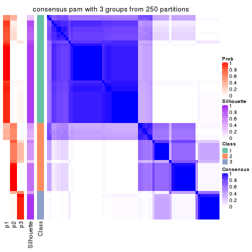
consensus_heatmap(res, k = 4)
consensus_heatmap(res, k = 5)
consensus_heatmap(res, k = 6)
Heatmaps for the membership of samples in all partitions to see how consistent they are:
membership_heatmap(res, k = 2)
membership_heatmap(res, k = 3)

membership_heatmap(res, k = 4)
membership_heatmap(res, k = 5)
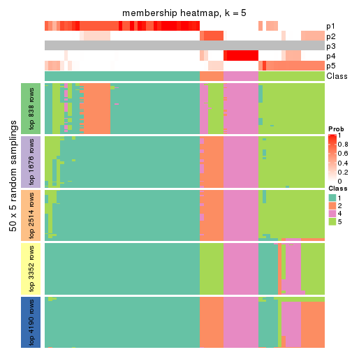
membership_heatmap(res, k = 6)
As soon as we have had the classes for columns, we can look for signatures which are significantly different between classes which can be candidate marks for certain classes. Following are the heatmaps for signatures.
Signature heatmaps where rows are scaled:
get_signatures(res, k = 2)
get_signatures(res, k = 3)
get_signatures(res, k = 4)
get_signatures(res, k = 5)
get_signatures(res, k = 6)
Signature heatmaps where rows are not scaled:
get_signatures(res, k = 2, scale_rows = FALSE)
get_signatures(res, k = 3, scale_rows = FALSE)
get_signatures(res, k = 4, scale_rows = FALSE)
get_signatures(res, k = 5, scale_rows = FALSE)
get_signatures(res, k = 6, scale_rows = FALSE)
Compare the overlap of signatures from different k:
compare_signatures(res)
get_signature() returns a data frame invisibly. TO get the list of signatures, the function
call should be assigned to a variable explicitly. In following code, if plot argument is set
to FALSE, no heatmap is plotted while only the differential analysis is performed.
# code only for demonstration
tb = get_signature(res, k = ..., plot = FALSE)
An example of the output of tb is:
#> which_row fdr mean_1 mean_2 scaled_mean_1 scaled_mean_2 km
#> 1 38 0.042760348 8.373488 9.131774 -0.5533452 0.5164555 1
#> 2 40 0.018707592 7.106213 8.469186 -0.6173731 0.5762149 1
#> 3 55 0.019134737 10.221463 11.207825 -0.6159697 0.5749050 1
#> 4 59 0.006059896 5.921854 7.869574 -0.6899429 0.6439467 1
#> 5 60 0.018055526 8.928898 10.211722 -0.6204761 0.5791110 1
#> 6 98 0.009384629 15.714769 14.887706 0.6635654 -0.6193277 2
...
The columns in tb are:
which_row: row indices corresponding to the input matrix.fdr: FDR for the differential test. mean_x: The mean value in group x.scaled_mean_x: The mean value in group x after rows are scaled.km: Row groups if k-means clustering is applied to rows.UMAP plot which shows how samples are separated.
dimension_reduction(res, k = 2, method = "UMAP")
dimension_reduction(res, k = 3, method = "UMAP")
dimension_reduction(res, k = 4, method = "UMAP")
dimension_reduction(res, k = 5, method = "UMAP")

dimension_reduction(res, k = 6, method = "UMAP")

Following heatmap shows how subgroups are split when increasing k:
collect_classes(res)
If matrix rows can be associated to genes, consider to use GO_Enrichment(res,
...) to perform function enrichment for the signature genes.
The object with results only for a single top-value method and a single partition method can be extracted as:
res = res_list["SD", "mclust"]
# you can also extract it by
# res = res_list["SD:mclust"]
A summary of res and all the functions that can be applied to it:
res
#> A 'ConsensusPartition' object with k = 2, 3, 4, 5, 6.
#> On a matrix with 8381 rows and 72 columns.
#> Top rows (838, 1676, 2514, 3352, 4190) are extracted by 'SD' method.
#> Subgroups are detected by 'mclust' method.
#> Performed in total 1250 partitions by row resampling.
#> Best k for subgroups seems to be 2.
#>
#> Following methods can be applied to this 'ConsensusPartition' object:
#> [1] "cola_report" "collect_classes" "collect_plots"
#> [4] "collect_stats" "colnames" "compare_signatures"
#> [7] "consensus_heatmap" "dimension_reduction" "functional_enrichment"
#> [10] "get_anno_col" "get_anno" "get_classes"
#> [13] "get_consensus" "get_matrix" "get_membership"
#> [16] "get_param" "get_signatures" "get_stats"
#> [19] "is_best_k" "is_stable_k" "membership_heatmap"
#> [22] "ncol" "nrow" "plot_ecdf"
#> [25] "rownames" "select_partition_number" "show"
#> [28] "suggest_best_k" "test_to_known_factors"
collect_plots() function collects all the plots made from res for all k (number of partitions)
into one single page to provide an easy and fast comparison between different k.
collect_plots(res)
The plots are:
k and the heatmap of
predicted classes for each k.k.k.k.All the plots in panels can be made by individual functions and they are plotted later in this section.
select_partition_number() produces several plots showing different
statistics for choosing “optimized” k. There are following statistics:
k;k, the area increased is defined as \(A_k - A_{k-1}\).The detailed explanations of these statistics can be found in the cola vignette.
Generally speaking, lower PAC score, higher mean silhouette score or higher
concordance corresponds to better partition. Rand index and Jaccard index
measure how similar the current partition is compared to partition with k-1.
If they are too similar, we won't accept k is better than k-1.
select_partition_number(res)
The numeric values for all these statistics can be obtained by get_stats().
get_stats(res)
#> k 1-PAC mean_silhouette concordance area_increased Rand Jaccard
#> 2 2 0.725 0.922 0.955 0.4949 0.499 0.499
#> 3 3 0.760 0.882 0.862 0.2507 0.849 0.705
#> 4 4 0.744 0.842 0.883 0.1578 0.872 0.668
#> 5 5 0.802 0.801 0.830 0.0773 0.986 0.950
#> 6 6 0.791 0.731 0.810 0.0571 0.875 0.556
suggest_best_k() suggests the best \(k\) based on these statistics. The rules are as follows:
NA.suggest_best_k(res)
#> [1] 2
Following shows the table of the partitions (You need to click the show/hide
code output link to see it). The membership matrix (columns with name p*)
is inferred by
clue::cl_consensus()
function with the SE method. Basically the value in the membership matrix
represents the probability to belong to a certain group. The finall class
label for an item is determined with the group with highest probability it
belongs to.
In get_classes() function, the entropy is calculated from the membership
matrix and the silhouette score is calculated from the consensus matrix.
cbind(get_classes(res, k = 2), get_membership(res, k = 2))
#> class entropy silhouette p1 p2
#> SRR2558111 1 0.0376 0.922 0.996 0.004
#> SRR2558177 2 0.0938 0.986 0.012 0.988
#> SRR2558176 1 0.5842 0.870 0.860 0.140
#> SRR2558175 1 0.5842 0.870 0.860 0.140
#> SRR2558174 1 0.5842 0.870 0.860 0.140
#> SRR2558173 1 0.5842 0.870 0.860 0.140
#> SRR2558172 1 0.0376 0.922 0.996 0.004
#> SRR2558171 1 0.0000 0.921 1.000 0.000
#> SRR2558170 2 0.0000 0.991 0.000 1.000
#> SRR2558169 2 0.0000 0.991 0.000 1.000
#> SRR2558168 2 0.0000 0.991 0.000 1.000
#> SRR2558167 2 0.0000 0.991 0.000 1.000
#> SRR2558166 2 0.0000 0.991 0.000 1.000
#> SRR2558165 1 0.9608 0.508 0.616 0.384
#> SRR2558164 2 0.0000 0.991 0.000 1.000
#> SRR2558163 2 0.0000 0.991 0.000 1.000
#> SRR2558162 1 0.5842 0.870 0.860 0.140
#> SRR2558161 2 0.0000 0.991 0.000 1.000
#> SRR2558160 1 0.0938 0.921 0.988 0.012
#> SRR2558159 2 0.0000 0.991 0.000 1.000
#> SRR2558158 2 0.0000 0.991 0.000 1.000
#> SRR2558157 2 0.0938 0.986 0.012 0.988
#> SRR2558156 2 0.0938 0.986 0.012 0.988
#> SRR2558155 1 0.5294 0.881 0.880 0.120
#> SRR2558154 2 0.0000 0.991 0.000 1.000
#> SRR2558153 1 0.0000 0.921 1.000 0.000
#> SRR2558152 1 0.5842 0.870 0.860 0.140
#> SRR2558151 1 0.0000 0.921 1.000 0.000
#> SRR2558150 2 0.0000 0.991 0.000 1.000
#> SRR2558149 1 0.0000 0.921 1.000 0.000
#> SRR2558148 1 0.0376 0.922 0.996 0.004
#> SRR2558147 2 0.0000 0.991 0.000 1.000
#> SRR2558146 1 0.4298 0.895 0.912 0.088
#> SRR2558145 1 0.0000 0.921 1.000 0.000
#> SRR2558144 1 0.0000 0.921 1.000 0.000
#> SRR2558143 1 0.0000 0.921 1.000 0.000
#> SRR2558142 1 0.0000 0.921 1.000 0.000
#> SRR2558141 2 0.0938 0.986 0.012 0.988
#> SRR2558140 2 0.5842 0.819 0.140 0.860
#> SRR2558139 2 0.0000 0.991 0.000 1.000
#> SRR2558138 1 0.5842 0.870 0.860 0.140
#> SRR2558137 2 0.0000 0.991 0.000 1.000
#> SRR2558136 1 0.0672 0.921 0.992 0.008
#> SRR2558182 2 0.0938 0.986 0.012 0.988
#> SRR2558181 2 0.0938 0.986 0.012 0.988
#> SRR2558180 2 0.0938 0.986 0.012 0.988
#> SRR2558179 1 0.5842 0.870 0.860 0.140
#> SRR2558178 1 0.9087 0.629 0.676 0.324
#> SRR2558134 2 0.0000 0.991 0.000 1.000
#> SRR2558135 1 0.0376 0.922 0.996 0.004
#> SRR2558133 2 0.0938 0.986 0.012 0.988
#> SRR2558132 2 0.0000 0.991 0.000 1.000
#> SRR2558131 1 0.0000 0.921 1.000 0.000
#> SRR2558129 1 0.0000 0.921 1.000 0.000
#> SRR2558127 2 0.0938 0.986 0.012 0.988
#> SRR2558126 1 0.0376 0.922 0.996 0.004
#> SRR2558128 2 0.0000 0.991 0.000 1.000
#> SRR2558125 1 0.9795 0.431 0.584 0.416
#> SRR2558130 1 0.0376 0.922 0.996 0.004
#> SRR2558124 1 0.8661 0.689 0.712 0.288
#> SRR2558123 2 0.0938 0.986 0.012 0.988
#> SRR2558121 1 0.5842 0.870 0.860 0.140
#> SRR2558122 1 0.0000 0.921 1.000 0.000
#> SRR2558120 2 0.0000 0.991 0.000 1.000
#> SRR2558119 1 0.0376 0.922 0.996 0.004
#> SRR2558117 2 0.0000 0.991 0.000 1.000
#> SRR2558118 1 0.1633 0.918 0.976 0.024
#> SRR2558115 2 0.0000 0.991 0.000 1.000
#> SRR2558116 1 0.0376 0.922 0.996 0.004
#> SRR2558114 1 0.0376 0.922 0.996 0.004
#> SRR2558113 1 0.2603 0.912 0.956 0.044
#> SRR2558112 1 0.0000 0.921 1.000 0.000
cbind(get_classes(res, k = 3), get_membership(res, k = 3))
#> class entropy silhouette p1 p2 p3
#> SRR2558111 1 0.0592 0.913 0.988 0.012 0.000
#> SRR2558177 2 0.6168 0.871 0.000 0.588 0.412
#> SRR2558176 1 0.5928 0.772 0.696 0.296 0.008
#> SRR2558175 1 0.5591 0.774 0.696 0.304 0.000
#> SRR2558174 1 0.5591 0.774 0.696 0.304 0.000
#> SRR2558173 1 0.5928 0.772 0.696 0.296 0.008
#> SRR2558172 1 0.0592 0.913 0.988 0.012 0.000
#> SRR2558171 1 0.0747 0.912 0.984 0.016 0.000
#> SRR2558170 3 0.0747 0.923 0.000 0.016 0.984
#> SRR2558169 3 0.0000 0.934 0.000 0.000 1.000
#> SRR2558168 3 0.0000 0.934 0.000 0.000 1.000
#> SRR2558167 3 0.0747 0.923 0.000 0.016 0.984
#> SRR2558166 3 0.0000 0.934 0.000 0.000 1.000
#> SRR2558165 2 0.6823 0.881 0.036 0.668 0.296
#> SRR2558164 3 0.2066 0.919 0.000 0.060 0.940
#> SRR2558163 3 0.0000 0.934 0.000 0.000 1.000
#> SRR2558162 1 0.5928 0.772 0.696 0.296 0.008
#> SRR2558161 3 0.4002 0.697 0.000 0.160 0.840
#> SRR2558160 1 0.0892 0.910 0.980 0.020 0.000
#> SRR2558159 3 0.0000 0.934 0.000 0.000 1.000
#> SRR2558158 3 0.0237 0.932 0.000 0.004 0.996
#> SRR2558157 2 0.6244 0.836 0.000 0.560 0.440
#> SRR2558156 2 0.6126 0.882 0.000 0.600 0.400
#> SRR2558155 1 0.2947 0.878 0.920 0.060 0.020
#> SRR2558154 3 0.4452 0.561 0.000 0.192 0.808
#> SRR2558153 1 0.0747 0.912 0.984 0.016 0.000
#> SRR2558152 1 0.5591 0.774 0.696 0.304 0.000
#> SRR2558151 1 0.0747 0.912 0.984 0.016 0.000
#> SRR2558150 3 0.2066 0.919 0.000 0.060 0.940
#> SRR2558149 1 0.0747 0.912 0.984 0.016 0.000
#> SRR2558148 1 0.0424 0.912 0.992 0.008 0.000
#> SRR2558147 3 0.2066 0.919 0.000 0.060 0.940
#> SRR2558146 1 0.5502 0.800 0.744 0.248 0.008
#> SRR2558145 1 0.0747 0.912 0.984 0.016 0.000
#> SRR2558144 1 0.0747 0.912 0.984 0.016 0.000
#> SRR2558143 1 0.0747 0.912 0.984 0.016 0.000
#> SRR2558142 1 0.0747 0.912 0.984 0.016 0.000
#> SRR2558141 2 0.6079 0.888 0.000 0.612 0.388
#> SRR2558140 2 0.6998 0.876 0.044 0.664 0.292
#> SRR2558139 3 0.2066 0.919 0.000 0.060 0.940
#> SRR2558138 1 0.5591 0.774 0.696 0.304 0.000
#> SRR2558137 3 0.0000 0.934 0.000 0.000 1.000
#> SRR2558136 1 0.0661 0.913 0.988 0.008 0.004
#> SRR2558182 3 0.1919 0.905 0.020 0.024 0.956
#> SRR2558181 3 0.1919 0.905 0.020 0.024 0.956
#> SRR2558180 2 0.6600 0.894 0.012 0.604 0.384
#> SRR2558179 1 0.5928 0.772 0.696 0.296 0.008
#> SRR2558178 2 0.6998 0.876 0.044 0.664 0.292
#> SRR2558134 3 0.2066 0.919 0.000 0.060 0.940
#> SRR2558135 1 0.0424 0.912 0.992 0.008 0.000
#> SRR2558133 2 0.5810 0.892 0.000 0.664 0.336
#> SRR2558132 3 0.2066 0.919 0.000 0.060 0.940
#> SRR2558131 1 0.0747 0.912 0.984 0.016 0.000
#> SRR2558129 1 0.0424 0.913 0.992 0.008 0.000
#> SRR2558127 2 0.6192 0.860 0.000 0.580 0.420
#> SRR2558126 1 0.0592 0.913 0.988 0.012 0.000
#> SRR2558128 3 0.0000 0.934 0.000 0.000 1.000
#> SRR2558125 2 0.6927 0.880 0.040 0.664 0.296
#> SRR2558130 1 0.0424 0.912 0.992 0.008 0.000
#> SRR2558124 2 0.7267 0.839 0.064 0.668 0.268
#> SRR2558123 2 0.5988 0.896 0.000 0.632 0.368
#> SRR2558121 1 0.5591 0.774 0.696 0.304 0.000
#> SRR2558122 1 0.0747 0.912 0.984 0.016 0.000
#> SRR2558120 3 0.2066 0.919 0.000 0.060 0.940
#> SRR2558119 1 0.0424 0.912 0.992 0.008 0.000
#> SRR2558117 3 0.0000 0.934 0.000 0.000 1.000
#> SRR2558118 1 0.1411 0.904 0.964 0.036 0.000
#> SRR2558115 3 0.2066 0.919 0.000 0.060 0.940
#> SRR2558116 1 0.0000 0.913 1.000 0.000 0.000
#> SRR2558114 1 0.0424 0.912 0.992 0.008 0.000
#> SRR2558113 1 0.1163 0.907 0.972 0.028 0.000
#> SRR2558112 1 0.0747 0.912 0.984 0.016 0.000
cbind(get_classes(res, k = 4), get_membership(res, k = 4))
#> class entropy silhouette p1 p2 p3 p4
#> SRR2558111 1 0.1118 0.961 0.964 0.000 0.000 0.036
#> SRR2558177 2 0.2011 0.779 0.000 0.920 0.080 0.000
#> SRR2558176 4 0.3249 0.993 0.140 0.008 0.000 0.852
#> SRR2558175 4 0.3249 0.993 0.140 0.008 0.000 0.852
#> SRR2558174 4 0.3249 0.993 0.140 0.008 0.000 0.852
#> SRR2558173 4 0.3249 0.993 0.140 0.008 0.000 0.852
#> SRR2558172 1 0.0188 0.970 0.996 0.000 0.000 0.004
#> SRR2558171 1 0.0000 0.970 1.000 0.000 0.000 0.000
#> SRR2558170 3 0.4331 0.657 0.000 0.288 0.712 0.000
#> SRR2558169 3 0.3942 0.727 0.000 0.236 0.764 0.000
#> SRR2558168 3 0.1716 0.830 0.000 0.064 0.936 0.000
#> SRR2558167 3 0.4605 0.575 0.000 0.336 0.664 0.000
#> SRR2558166 3 0.2704 0.814 0.000 0.124 0.876 0.000
#> SRR2558165 2 0.3172 0.705 0.000 0.840 0.000 0.160
#> SRR2558164 3 0.4525 0.810 0.000 0.080 0.804 0.116
#> SRR2558163 3 0.2760 0.812 0.000 0.128 0.872 0.000
#> SRR2558162 4 0.3377 0.989 0.140 0.012 0.000 0.848
#> SRR2558161 2 0.4999 -0.208 0.000 0.508 0.492 0.000
#> SRR2558160 1 0.1489 0.956 0.952 0.004 0.000 0.044
#> SRR2558159 3 0.3123 0.796 0.000 0.156 0.844 0.000
#> SRR2558158 3 0.4164 0.692 0.000 0.264 0.736 0.000
#> SRR2558157 2 0.1557 0.796 0.000 0.944 0.056 0.000
#> SRR2558156 2 0.1022 0.807 0.000 0.968 0.032 0.000
#> SRR2558155 1 0.4322 0.764 0.804 0.152 0.000 0.044
#> SRR2558154 2 0.4730 0.314 0.000 0.636 0.364 0.000
#> SRR2558153 1 0.0000 0.970 1.000 0.000 0.000 0.000
#> SRR2558152 4 0.3249 0.993 0.140 0.008 0.000 0.852
#> SRR2558151 1 0.0000 0.970 1.000 0.000 0.000 0.000
#> SRR2558150 3 0.2589 0.808 0.000 0.000 0.884 0.116
#> SRR2558149 1 0.0000 0.970 1.000 0.000 0.000 0.000
#> SRR2558148 1 0.1211 0.959 0.960 0.000 0.000 0.040
#> SRR2558147 3 0.2589 0.808 0.000 0.000 0.884 0.116
#> SRR2558146 4 0.3990 0.945 0.176 0.012 0.004 0.808
#> SRR2558145 1 0.0000 0.970 1.000 0.000 0.000 0.000
#> SRR2558144 1 0.0000 0.970 1.000 0.000 0.000 0.000
#> SRR2558143 1 0.0000 0.970 1.000 0.000 0.000 0.000
#> SRR2558142 1 0.0000 0.970 1.000 0.000 0.000 0.000
#> SRR2558141 2 0.0188 0.814 0.000 0.996 0.000 0.004
#> SRR2558140 2 0.1297 0.806 0.016 0.964 0.000 0.020
#> SRR2558139 3 0.2589 0.808 0.000 0.000 0.884 0.116
#> SRR2558138 4 0.3249 0.993 0.140 0.008 0.000 0.852
#> SRR2558137 3 0.1824 0.830 0.000 0.060 0.936 0.004
#> SRR2558136 1 0.1975 0.937 0.936 0.016 0.000 0.048
#> SRR2558182 3 0.5137 0.710 0.008 0.216 0.740 0.036
#> SRR2558181 3 0.5137 0.710 0.008 0.216 0.740 0.036
#> SRR2558180 2 0.0188 0.814 0.000 0.996 0.000 0.004
#> SRR2558179 4 0.3249 0.993 0.140 0.008 0.000 0.852
#> SRR2558178 2 0.5213 0.480 0.328 0.652 0.000 0.020
#> SRR2558134 3 0.2589 0.808 0.000 0.000 0.884 0.116
#> SRR2558135 1 0.1302 0.957 0.956 0.000 0.000 0.044
#> SRR2558133 2 0.0188 0.814 0.000 0.996 0.000 0.004
#> SRR2558132 3 0.2773 0.809 0.000 0.004 0.880 0.116
#> SRR2558131 1 0.0000 0.970 1.000 0.000 0.000 0.000
#> SRR2558129 1 0.0188 0.970 0.996 0.000 0.000 0.004
#> SRR2558127 2 0.1022 0.807 0.000 0.968 0.032 0.000
#> SRR2558126 1 0.0188 0.970 0.996 0.000 0.000 0.004
#> SRR2558128 3 0.1890 0.829 0.000 0.056 0.936 0.008
#> SRR2558125 2 0.1388 0.805 0.012 0.960 0.000 0.028
#> SRR2558130 1 0.1211 0.960 0.960 0.000 0.000 0.040
#> SRR2558124 2 0.5543 0.248 0.424 0.556 0.000 0.020
#> SRR2558123 2 0.0188 0.814 0.000 0.996 0.000 0.004
#> SRR2558121 4 0.3249 0.993 0.140 0.008 0.000 0.852
#> SRR2558122 1 0.0000 0.970 1.000 0.000 0.000 0.000
#> SRR2558120 3 0.2589 0.808 0.000 0.000 0.884 0.116
#> SRR2558119 1 0.1022 0.963 0.968 0.000 0.000 0.032
#> SRR2558117 3 0.1824 0.830 0.000 0.060 0.936 0.004
#> SRR2558118 1 0.1722 0.949 0.944 0.008 0.000 0.048
#> SRR2558115 3 0.2589 0.808 0.000 0.000 0.884 0.116
#> SRR2558116 1 0.0592 0.968 0.984 0.000 0.000 0.016
#> SRR2558114 1 0.1576 0.956 0.948 0.004 0.000 0.048
#> SRR2558113 1 0.1722 0.949 0.944 0.008 0.000 0.048
#> SRR2558112 1 0.0000 0.970 1.000 0.000 0.000 0.000
cbind(get_classes(res, k = 5), get_membership(res, k = 5))
#> class entropy silhouette p1 p2 p3 p4 p5
#> SRR2558111 1 0.2036 0.921 0.920 0.000 0.000 NA 0.056
#> SRR2558177 2 0.2563 0.824 0.000 0.872 0.120 NA 0.000
#> SRR2558176 5 0.0404 0.967 0.012 0.000 0.000 NA 0.988
#> SRR2558175 5 0.0794 0.974 0.028 0.000 0.000 NA 0.972
#> SRR2558174 5 0.0794 0.974 0.028 0.000 0.000 NA 0.972
#> SRR2558173 5 0.0703 0.972 0.024 0.000 0.000 NA 0.976
#> SRR2558172 1 0.0992 0.928 0.968 0.000 0.000 NA 0.024
#> SRR2558171 1 0.0324 0.931 0.992 0.000 0.000 NA 0.004
#> SRR2558170 3 0.5133 0.573 0.000 0.044 0.568 NA 0.000
#> SRR2558169 3 0.5077 0.574 0.000 0.040 0.568 NA 0.000
#> SRR2558168 3 0.1571 0.671 0.000 0.004 0.936 NA 0.000
#> SRR2558167 3 0.5322 0.560 0.000 0.056 0.552 NA 0.000
#> SRR2558166 3 0.4298 0.610 0.000 0.008 0.640 NA 0.000
#> SRR2558165 2 0.1644 0.893 0.008 0.940 0.000 NA 0.004
#> SRR2558164 3 0.4252 0.657 0.000 0.008 0.652 NA 0.000
#> SRR2558163 3 0.4201 0.618 0.000 0.008 0.664 NA 0.000
#> SRR2558162 5 0.0510 0.967 0.016 0.000 0.000 NA 0.984
#> SRR2558161 2 0.6361 0.239 0.000 0.508 0.196 NA 0.000
#> SRR2558160 1 0.3806 0.887 0.820 0.000 0.004 NA 0.088
#> SRR2558159 3 0.4313 0.609 0.000 0.008 0.636 NA 0.000
#> SRR2558158 3 0.5176 0.574 0.000 0.048 0.572 NA 0.000
#> SRR2558157 2 0.2017 0.860 0.000 0.912 0.080 NA 0.000
#> SRR2558156 2 0.1082 0.894 0.000 0.964 0.028 NA 0.000
#> SRR2558155 1 0.5076 0.836 0.756 0.056 0.000 NA 0.100
#> SRR2558154 3 0.6060 0.498 0.000 0.124 0.492 NA 0.000
#> SRR2558153 1 0.0324 0.931 0.992 0.000 0.000 NA 0.004
#> SRR2558152 5 0.0794 0.974 0.028 0.000 0.000 NA 0.972
#> SRR2558151 1 0.0324 0.931 0.992 0.000 0.000 NA 0.004
#> SRR2558150 3 0.3999 0.613 0.000 0.000 0.656 NA 0.000
#> SRR2558149 1 0.0162 0.930 0.996 0.000 0.000 NA 0.004
#> SRR2558148 1 0.3354 0.893 0.844 0.000 0.000 NA 0.068
#> SRR2558147 3 0.4192 0.592 0.000 0.000 0.596 NA 0.000
#> SRR2558146 5 0.3124 0.849 0.136 0.016 0.000 NA 0.844
#> SRR2558145 1 0.0162 0.929 0.996 0.000 0.000 NA 0.000
#> SRR2558144 1 0.0324 0.931 0.992 0.000 0.000 NA 0.004
#> SRR2558143 1 0.0324 0.931 0.992 0.000 0.000 NA 0.004
#> SRR2558142 1 0.0324 0.931 0.992 0.000 0.000 NA 0.004
#> SRR2558141 2 0.0162 0.901 0.000 0.996 0.000 NA 0.000
#> SRR2558140 2 0.1331 0.895 0.008 0.952 0.000 NA 0.000
#> SRR2558139 3 0.4074 0.611 0.000 0.000 0.636 NA 0.000
#> SRR2558138 5 0.0794 0.974 0.028 0.000 0.000 NA 0.972
#> SRR2558137 3 0.0324 0.671 0.000 0.004 0.992 NA 0.000
#> SRR2558136 1 0.1356 0.928 0.956 0.012 0.000 NA 0.028
#> SRR2558182 3 0.6845 0.293 0.012 0.288 0.512 NA 0.008
#> SRR2558181 3 0.6934 0.289 0.016 0.288 0.508 NA 0.008
#> SRR2558180 2 0.0290 0.901 0.000 0.992 0.000 NA 0.000
#> SRR2558179 5 0.0404 0.967 0.012 0.000 0.000 NA 0.988
#> SRR2558178 2 0.1981 0.884 0.028 0.924 0.000 NA 0.000
#> SRR2558134 3 0.4227 0.585 0.000 0.000 0.580 NA 0.000
#> SRR2558135 1 0.3810 0.877 0.812 0.000 0.000 NA 0.100
#> SRR2558133 2 0.0290 0.902 0.000 0.992 0.000 NA 0.000
#> SRR2558132 3 0.3561 0.635 0.000 0.000 0.740 NA 0.000
#> SRR2558131 1 0.0324 0.931 0.992 0.000 0.000 NA 0.004
#> SRR2558129 1 0.0854 0.930 0.976 0.008 0.000 NA 0.012
#> SRR2558127 2 0.1168 0.893 0.000 0.960 0.032 NA 0.000
#> SRR2558126 1 0.0912 0.930 0.972 0.000 0.000 NA 0.016
#> SRR2558128 3 0.1518 0.669 0.000 0.004 0.944 NA 0.004
#> SRR2558125 2 0.1644 0.893 0.008 0.940 0.000 NA 0.004
#> SRR2558130 1 0.4018 0.878 0.804 0.004 0.000 NA 0.104
#> SRR2558124 2 0.4462 0.737 0.124 0.788 0.000 NA 0.032
#> SRR2558123 2 0.0162 0.902 0.000 0.996 0.000 NA 0.000
#> SRR2558121 5 0.0794 0.974 0.028 0.000 0.000 NA 0.972
#> SRR2558122 1 0.0162 0.931 0.996 0.000 0.000 NA 0.004
#> SRR2558120 3 0.4227 0.585 0.000 0.000 0.580 NA 0.000
#> SRR2558119 1 0.2992 0.907 0.868 0.000 0.000 NA 0.064
#> SRR2558117 3 0.0451 0.671 0.000 0.004 0.988 NA 0.000
#> SRR2558118 1 0.3862 0.877 0.808 0.000 0.000 NA 0.104
#> SRR2558115 3 0.4235 0.582 0.000 0.000 0.576 NA 0.000
#> SRR2558116 1 0.2570 0.911 0.888 0.000 0.000 NA 0.028
#> SRR2558114 1 0.3590 0.886 0.828 0.000 0.000 NA 0.080
#> SRR2558113 1 0.4104 0.863 0.788 0.000 0.000 NA 0.124
#> SRR2558112 1 0.0162 0.930 0.996 0.000 0.000 NA 0.004
cbind(get_classes(res, k = 6), get_membership(res, k = 6))
#> class entropy silhouette p1 p2 p3 p4 p5 p6
#> SRR2558111 1 0.3279 0.645 0.796 0.000 0.000 0.000 0.028 0.176
#> SRR2558177 2 0.2340 0.805 0.000 0.896 0.000 0.056 0.004 0.044
#> SRR2558176 5 0.0508 0.960 0.004 0.000 0.000 0.000 0.984 0.012
#> SRR2558175 5 0.0806 0.970 0.020 0.000 0.000 0.000 0.972 0.008
#> SRR2558174 5 0.0806 0.970 0.020 0.000 0.000 0.000 0.972 0.008
#> SRR2558173 5 0.0622 0.964 0.012 0.000 0.000 0.000 0.980 0.008
#> SRR2558172 1 0.1528 0.826 0.936 0.000 0.000 0.000 0.016 0.048
#> SRR2558171 1 0.0260 0.837 0.992 0.000 0.000 0.000 0.008 0.000
#> SRR2558170 4 0.1296 0.789 0.000 0.004 0.012 0.952 0.000 0.032
#> SRR2558169 4 0.1265 0.790 0.000 0.000 0.044 0.948 0.000 0.008
#> SRR2558168 4 0.5115 -0.310 0.000 0.000 0.460 0.460 0.000 0.080
#> SRR2558167 4 0.0665 0.781 0.000 0.008 0.004 0.980 0.000 0.008
#> SRR2558166 4 0.1957 0.757 0.000 0.000 0.112 0.888 0.000 0.000
#> SRR2558165 2 0.2288 0.806 0.000 0.876 0.004 0.000 0.004 0.116
#> SRR2558164 3 0.3955 0.315 0.000 0.004 0.560 0.436 0.000 0.000
#> SRR2558163 4 0.3370 0.705 0.000 0.000 0.148 0.804 0.000 0.048
#> SRR2558162 5 0.0909 0.956 0.020 0.000 0.000 0.000 0.968 0.012
#> SRR2558161 2 0.5467 0.401 0.000 0.560 0.024 0.348 0.004 0.064
#> SRR2558160 6 0.4326 0.886 0.300 0.000 0.000 0.000 0.044 0.656
#> SRR2558159 4 0.3641 0.688 0.000 0.000 0.140 0.788 0.000 0.072
#> SRR2558158 4 0.0862 0.786 0.000 0.004 0.016 0.972 0.000 0.008
#> SRR2558157 2 0.1938 0.817 0.000 0.920 0.000 0.036 0.004 0.040
#> SRR2558156 2 0.1777 0.818 0.000 0.928 0.000 0.024 0.004 0.044
#> SRR2558155 6 0.5371 0.793 0.268 0.056 0.000 0.000 0.052 0.624
#> SRR2558154 4 0.2358 0.693 0.000 0.108 0.000 0.876 0.000 0.016
#> SRR2558153 1 0.0260 0.837 0.992 0.000 0.000 0.000 0.008 0.000
#> SRR2558152 5 0.0806 0.970 0.020 0.000 0.000 0.000 0.972 0.008
#> SRR2558151 1 0.0603 0.838 0.980 0.000 0.000 0.000 0.004 0.016
#> SRR2558150 3 0.1663 0.759 0.000 0.000 0.912 0.088 0.000 0.000
#> SRR2558149 1 0.2706 0.735 0.832 0.000 0.000 0.000 0.008 0.160
#> SRR2558148 6 0.4385 0.885 0.328 0.000 0.004 0.000 0.032 0.636
#> SRR2558147 3 0.1387 0.754 0.000 0.000 0.932 0.068 0.000 0.000
#> SRR2558146 5 0.3364 0.838 0.068 0.008 0.000 0.000 0.828 0.096
#> SRR2558145 1 0.0508 0.838 0.984 0.000 0.000 0.000 0.004 0.012
#> SRR2558144 1 0.0291 0.838 0.992 0.000 0.000 0.000 0.004 0.004
#> SRR2558143 1 0.0717 0.840 0.976 0.000 0.000 0.000 0.008 0.016
#> SRR2558142 1 0.0622 0.838 0.980 0.000 0.000 0.000 0.012 0.008
#> SRR2558141 2 0.0405 0.825 0.000 0.988 0.000 0.008 0.000 0.004
#> SRR2558140 2 0.2243 0.807 0.000 0.880 0.004 0.000 0.004 0.112
#> SRR2558139 3 0.1910 0.752 0.000 0.000 0.892 0.108 0.000 0.000
#> SRR2558138 5 0.0806 0.970 0.020 0.000 0.000 0.000 0.972 0.008
#> SRR2558137 3 0.5025 0.280 0.000 0.000 0.492 0.436 0.000 0.072
#> SRR2558136 1 0.4632 0.652 0.752 0.060 0.020 0.000 0.024 0.144
#> SRR2558182 2 0.7076 0.240 0.000 0.376 0.312 0.076 0.000 0.236
#> SRR2558181 2 0.7082 0.245 0.000 0.376 0.308 0.076 0.000 0.240
#> SRR2558180 2 0.0820 0.825 0.000 0.972 0.000 0.012 0.000 0.016
#> SRR2558179 5 0.0622 0.958 0.008 0.000 0.000 0.000 0.980 0.012
#> SRR2558178 2 0.3618 0.775 0.056 0.804 0.004 0.000 0.004 0.132
#> SRR2558134 3 0.1267 0.749 0.000 0.000 0.940 0.060 0.000 0.000
#> SRR2558135 6 0.4652 0.893 0.312 0.000 0.000 0.000 0.064 0.624
#> SRR2558133 2 0.0837 0.824 0.000 0.972 0.004 0.004 0.000 0.020
#> SRR2558132 3 0.2527 0.732 0.000 0.000 0.832 0.168 0.000 0.000
#> SRR2558131 1 0.0146 0.837 0.996 0.000 0.000 0.000 0.004 0.000
#> SRR2558129 1 0.2443 0.796 0.880 0.020 0.000 0.000 0.004 0.096
#> SRR2558127 2 0.1708 0.819 0.000 0.932 0.000 0.024 0.004 0.040
#> SRR2558126 1 0.2790 0.752 0.840 0.000 0.000 0.000 0.020 0.140
#> SRR2558128 3 0.4985 0.358 0.000 0.000 0.528 0.400 0.000 0.072
#> SRR2558125 2 0.2288 0.806 0.000 0.876 0.004 0.000 0.004 0.116
#> SRR2558130 6 0.4799 0.876 0.340 0.000 0.000 0.000 0.068 0.592
#> SRR2558124 2 0.5242 0.547 0.088 0.624 0.000 0.000 0.020 0.268
#> SRR2558123 2 0.0891 0.825 0.000 0.968 0.000 0.008 0.000 0.024
#> SRR2558121 5 0.0806 0.970 0.020 0.000 0.000 0.000 0.972 0.008
#> SRR2558122 1 0.1471 0.823 0.932 0.000 0.000 0.000 0.004 0.064
#> SRR2558120 3 0.1714 0.758 0.000 0.000 0.908 0.092 0.000 0.000
#> SRR2558119 1 0.4763 -0.395 0.536 0.000 0.000 0.000 0.052 0.412
#> SRR2558117 3 0.5027 0.268 0.000 0.000 0.488 0.440 0.000 0.072
#> SRR2558118 6 0.4460 0.895 0.304 0.000 0.000 0.000 0.052 0.644
#> SRR2558115 3 0.1444 0.755 0.000 0.000 0.928 0.072 0.000 0.000
#> SRR2558116 6 0.4214 0.629 0.460 0.004 0.000 0.000 0.008 0.528
#> SRR2558114 6 0.4891 0.887 0.304 0.008 0.004 0.000 0.056 0.628
#> SRR2558113 6 0.4645 0.883 0.276 0.000 0.000 0.000 0.076 0.648
#> SRR2558112 1 0.3217 0.605 0.768 0.000 0.000 0.000 0.008 0.224
Heatmaps for the consensus matrix. It visualizes the probability of two samples to be in a same group.
consensus_heatmap(res, k = 2)

consensus_heatmap(res, k = 3)
consensus_heatmap(res, k = 4)
consensus_heatmap(res, k = 5)
consensus_heatmap(res, k = 6)
Heatmaps for the membership of samples in all partitions to see how consistent they are:
membership_heatmap(res, k = 2)
membership_heatmap(res, k = 3)
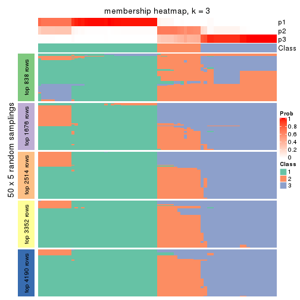
membership_heatmap(res, k = 4)
membership_heatmap(res, k = 5)
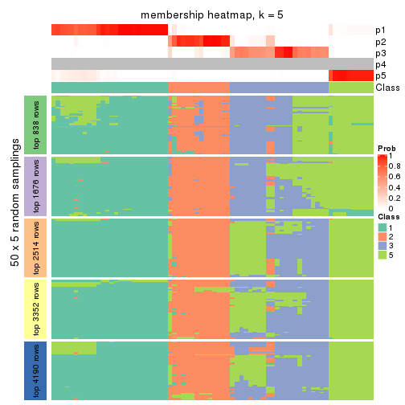
membership_heatmap(res, k = 6)
As soon as we have had the classes for columns, we can look for signatures which are significantly different between classes which can be candidate marks for certain classes. Following are the heatmaps for signatures.
Signature heatmaps where rows are scaled:
get_signatures(res, k = 2)
get_signatures(res, k = 3)
get_signatures(res, k = 4)
get_signatures(res, k = 5)
get_signatures(res, k = 6)
Signature heatmaps where rows are not scaled:
get_signatures(res, k = 2, scale_rows = FALSE)
get_signatures(res, k = 3, scale_rows = FALSE)
get_signatures(res, k = 4, scale_rows = FALSE)
get_signatures(res, k = 5, scale_rows = FALSE)
get_signatures(res, k = 6, scale_rows = FALSE)

Compare the overlap of signatures from different k:
compare_signatures(res)
get_signature() returns a data frame invisibly. TO get the list of signatures, the function
call should be assigned to a variable explicitly. In following code, if plot argument is set
to FALSE, no heatmap is plotted while only the differential analysis is performed.
# code only for demonstration
tb = get_signature(res, k = ..., plot = FALSE)
An example of the output of tb is:
#> which_row fdr mean_1 mean_2 scaled_mean_1 scaled_mean_2 km
#> 1 38 0.042760348 8.373488 9.131774 -0.5533452 0.5164555 1
#> 2 40 0.018707592 7.106213 8.469186 -0.6173731 0.5762149 1
#> 3 55 0.019134737 10.221463 11.207825 -0.6159697 0.5749050 1
#> 4 59 0.006059896 5.921854 7.869574 -0.6899429 0.6439467 1
#> 5 60 0.018055526 8.928898 10.211722 -0.6204761 0.5791110 1
#> 6 98 0.009384629 15.714769 14.887706 0.6635654 -0.6193277 2
...
The columns in tb are:
which_row: row indices corresponding to the input matrix.fdr: FDR for the differential test. mean_x: The mean value in group x.scaled_mean_x: The mean value in group x after rows are scaled.km: Row groups if k-means clustering is applied to rows.UMAP plot which shows how samples are separated.
dimension_reduction(res, k = 2, method = "UMAP")
dimension_reduction(res, k = 3, method = "UMAP")
dimension_reduction(res, k = 4, method = "UMAP")
dimension_reduction(res, k = 5, method = "UMAP")
dimension_reduction(res, k = 6, method = "UMAP")
Following heatmap shows how subgroups are split when increasing k:
collect_classes(res)
If matrix rows can be associated to genes, consider to use GO_Enrichment(res,
...) to perform function enrichment for the signature genes.
The object with results only for a single top-value method and a single partition method can be extracted as:
res = res_list["SD", "NMF"]
# you can also extract it by
# res = res_list["SD:NMF"]
A summary of res and all the functions that can be applied to it:
res
#> A 'ConsensusPartition' object with k = 2, 3, 4, 5, 6.
#> On a matrix with 8381 rows and 72 columns.
#> Top rows (838, 1676, 2514, 3352, 4190) are extracted by 'SD' method.
#> Subgroups are detected by 'NMF' method.
#> Performed in total 1250 partitions by row resampling.
#> Best k for subgroups seems to be 2.
#>
#> Following methods can be applied to this 'ConsensusPartition' object:
#> [1] "cola_report" "collect_classes" "collect_plots"
#> [4] "collect_stats" "colnames" "compare_signatures"
#> [7] "consensus_heatmap" "dimension_reduction" "functional_enrichment"
#> [10] "get_anno_col" "get_anno" "get_classes"
#> [13] "get_consensus" "get_matrix" "get_membership"
#> [16] "get_param" "get_signatures" "get_stats"
#> [19] "is_best_k" "is_stable_k" "membership_heatmap"
#> [22] "ncol" "nrow" "plot_ecdf"
#> [25] "rownames" "select_partition_number" "show"
#> [28] "suggest_best_k" "test_to_known_factors"
collect_plots() function collects all the plots made from res for all k (number of partitions)
into one single page to provide an easy and fast comparison between different k.
collect_plots(res)
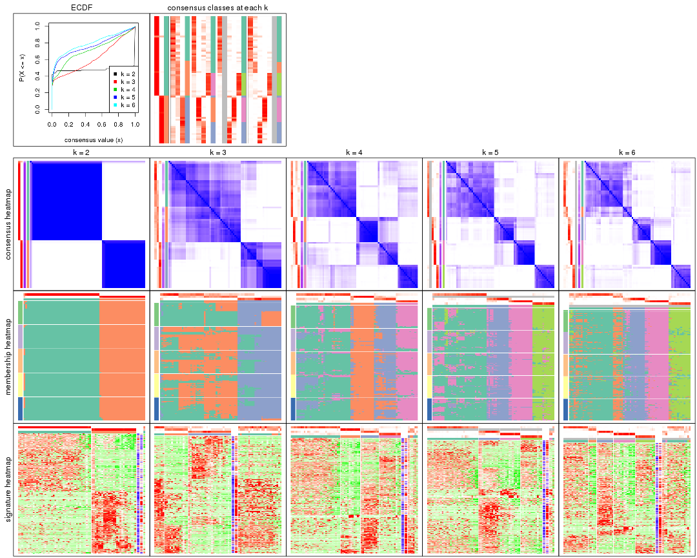
The plots are:
k and the heatmap of
predicted classes for each k.k.k.k.All the plots in panels can be made by individual functions and they are plotted later in this section.
select_partition_number() produces several plots showing different
statistics for choosing “optimized” k. There are following statistics:
k;k, the area increased is defined as \(A_k - A_{k-1}\).The detailed explanations of these statistics can be found in the cola vignette.
Generally speaking, lower PAC score, higher mean silhouette score or higher
concordance corresponds to better partition. Rand index and Jaccard index
measure how similar the current partition is compared to partition with k-1.
If they are too similar, we won't accept k is better than k-1.
select_partition_number(res)
The numeric values for all these statistics can be obtained by get_stats().
get_stats(res)
#> k 1-PAC mean_silhouette concordance area_increased Rand Jaccard
#> 2 2 1.000 0.984 0.994 0.4781 0.525 0.525
#> 3 3 0.490 0.532 0.699 0.3035 0.784 0.597
#> 4 4 0.544 0.734 0.819 0.1547 0.816 0.541
#> 5 5 0.680 0.751 0.818 0.0697 1.000 1.000
#> 6 6 0.705 0.655 0.796 0.0414 0.939 0.790
suggest_best_k() suggests the best \(k\) based on these statistics. The rules are as follows:
NA.suggest_best_k(res)
#> [1] 2
Following shows the table of the partitions (You need to click the show/hide
code output link to see it). The membership matrix (columns with name p*)
is inferred by
clue::cl_consensus()
function with the SE method. Basically the value in the membership matrix
represents the probability to belong to a certain group. The finall class
label for an item is determined with the group with highest probability it
belongs to.
In get_classes() function, the entropy is calculated from the membership
matrix and the silhouette score is calculated from the consensus matrix.
cbind(get_classes(res, k = 2), get_membership(res, k = 2))
#> class entropy silhouette p1 p2
#> SRR2558111 1 0.000 0.991 1.000 0.000
#> SRR2558177 2 0.000 0.998 0.000 1.000
#> SRR2558176 1 0.000 0.991 1.000 0.000
#> SRR2558175 1 0.000 0.991 1.000 0.000
#> SRR2558174 1 0.000 0.991 1.000 0.000
#> SRR2558173 1 0.000 0.991 1.000 0.000
#> SRR2558172 1 0.000 0.991 1.000 0.000
#> SRR2558171 1 0.000 0.991 1.000 0.000
#> SRR2558170 2 0.000 0.998 0.000 1.000
#> SRR2558169 2 0.000 0.998 0.000 1.000
#> SRR2558168 2 0.000 0.998 0.000 1.000
#> SRR2558167 2 0.000 0.998 0.000 1.000
#> SRR2558166 2 0.000 0.998 0.000 1.000
#> SRR2558165 1 0.000 0.991 1.000 0.000
#> SRR2558164 2 0.000 0.998 0.000 1.000
#> SRR2558163 2 0.000 0.998 0.000 1.000
#> SRR2558162 1 0.000 0.991 1.000 0.000
#> SRR2558161 2 0.000 0.998 0.000 1.000
#> SRR2558160 1 0.000 0.991 1.000 0.000
#> SRR2558159 2 0.000 0.998 0.000 1.000
#> SRR2558158 2 0.000 0.998 0.000 1.000
#> SRR2558157 2 0.141 0.979 0.020 0.980
#> SRR2558156 2 0.000 0.998 0.000 1.000
#> SRR2558155 1 0.000 0.991 1.000 0.000
#> SRR2558154 2 0.000 0.998 0.000 1.000
#> SRR2558153 1 0.000 0.991 1.000 0.000
#> SRR2558152 1 0.000 0.991 1.000 0.000
#> SRR2558151 1 0.000 0.991 1.000 0.000
#> SRR2558150 2 0.000 0.998 0.000 1.000
#> SRR2558149 1 0.000 0.991 1.000 0.000
#> SRR2558148 1 0.000 0.991 1.000 0.000
#> SRR2558147 2 0.000 0.998 0.000 1.000
#> SRR2558146 1 0.000 0.991 1.000 0.000
#> SRR2558145 1 0.000 0.991 1.000 0.000
#> SRR2558144 1 0.000 0.991 1.000 0.000
#> SRR2558143 1 0.000 0.991 1.000 0.000
#> SRR2558142 1 0.000 0.991 1.000 0.000
#> SRR2558141 1 0.936 0.456 0.648 0.352
#> SRR2558140 1 0.000 0.991 1.000 0.000
#> SRR2558139 2 0.000 0.998 0.000 1.000
#> SRR2558138 1 0.000 0.991 1.000 0.000
#> SRR2558137 2 0.000 0.998 0.000 1.000
#> SRR2558136 1 0.000 0.991 1.000 0.000
#> SRR2558182 2 0.000 0.998 0.000 1.000
#> SRR2558181 2 0.260 0.954 0.044 0.956
#> SRR2558180 1 0.000 0.991 1.000 0.000
#> SRR2558179 1 0.000 0.991 1.000 0.000
#> SRR2558178 1 0.000 0.991 1.000 0.000
#> SRR2558134 2 0.000 0.998 0.000 1.000
#> SRR2558135 1 0.000 0.991 1.000 0.000
#> SRR2558133 1 0.000 0.991 1.000 0.000
#> SRR2558132 2 0.000 0.998 0.000 1.000
#> SRR2558131 1 0.000 0.991 1.000 0.000
#> SRR2558129 1 0.000 0.991 1.000 0.000
#> SRR2558127 2 0.000 0.998 0.000 1.000
#> SRR2558126 1 0.000 0.991 1.000 0.000
#> SRR2558128 2 0.000 0.998 0.000 1.000
#> SRR2558125 1 0.000 0.991 1.000 0.000
#> SRR2558130 1 0.000 0.991 1.000 0.000
#> SRR2558124 1 0.000 0.991 1.000 0.000
#> SRR2558123 1 0.295 0.939 0.948 0.052
#> SRR2558121 1 0.000 0.991 1.000 0.000
#> SRR2558122 1 0.000 0.991 1.000 0.000
#> SRR2558120 2 0.000 0.998 0.000 1.000
#> SRR2558119 1 0.000 0.991 1.000 0.000
#> SRR2558117 2 0.000 0.998 0.000 1.000
#> SRR2558118 1 0.000 0.991 1.000 0.000
#> SRR2558115 2 0.000 0.998 0.000 1.000
#> SRR2558116 1 0.000 0.991 1.000 0.000
#> SRR2558114 1 0.000 0.991 1.000 0.000
#> SRR2558113 1 0.000 0.991 1.000 0.000
#> SRR2558112 1 0.000 0.991 1.000 0.000
cbind(get_classes(res, k = 3), get_membership(res, k = 3))
#> class entropy silhouette p1 p2 p3
#> SRR2558111 1 0.6286 -0.1824 0.536 0.464 0.000
#> SRR2558177 3 0.4887 0.8015 0.000 0.228 0.772
#> SRR2558176 2 0.5327 0.7247 0.272 0.728 0.000
#> SRR2558175 2 0.6307 0.3940 0.488 0.512 0.000
#> SRR2558174 2 0.5760 0.7033 0.328 0.672 0.000
#> SRR2558173 2 0.5591 0.7158 0.304 0.696 0.000
#> SRR2558172 1 0.6180 -0.0111 0.584 0.416 0.000
#> SRR2558171 1 0.4974 0.4458 0.764 0.236 0.000
#> SRR2558170 3 0.4555 0.8155 0.000 0.200 0.800
#> SRR2558169 3 0.4555 0.8155 0.000 0.200 0.800
#> SRR2558168 3 0.0475 0.8059 0.004 0.004 0.992
#> SRR2558167 3 0.4555 0.8155 0.000 0.200 0.800
#> SRR2558166 3 0.4504 0.8158 0.000 0.196 0.804
#> SRR2558165 2 0.4887 0.7059 0.228 0.772 0.000
#> SRR2558164 3 0.1267 0.8033 0.024 0.004 0.972
#> SRR2558163 3 0.4346 0.8165 0.000 0.184 0.816
#> SRR2558162 2 0.5138 0.7203 0.252 0.748 0.000
#> SRR2558161 3 0.5156 0.7474 0.216 0.008 0.776
#> SRR2558160 2 0.6308 0.3391 0.492 0.508 0.000
#> SRR2558159 3 0.4555 0.8155 0.000 0.200 0.800
#> SRR2558158 3 0.4555 0.8155 0.000 0.200 0.800
#> SRR2558157 3 0.4733 0.8145 0.004 0.196 0.800
#> SRR2558156 3 0.4555 0.8155 0.000 0.200 0.800
#> SRR2558155 2 0.6235 0.4619 0.436 0.564 0.000
#> SRR2558154 3 0.4555 0.8155 0.000 0.200 0.800
#> SRR2558153 1 0.5835 0.2257 0.660 0.340 0.000
#> SRR2558152 2 0.5431 0.7247 0.284 0.716 0.000
#> SRR2558151 1 0.1643 0.5155 0.956 0.044 0.000
#> SRR2558150 3 0.6129 0.6780 0.324 0.008 0.668
#> SRR2558149 1 0.3482 0.5117 0.872 0.128 0.000
#> SRR2558148 1 0.2165 0.5139 0.936 0.064 0.000
#> SRR2558147 3 0.6075 0.6858 0.316 0.008 0.676
#> SRR2558146 2 0.6192 0.5190 0.420 0.580 0.000
#> SRR2558145 1 0.0892 0.5051 0.980 0.020 0.000
#> SRR2558144 1 0.3038 0.5165 0.896 0.104 0.000
#> SRR2558143 1 0.5397 0.3768 0.720 0.280 0.000
#> SRR2558142 1 0.6244 -0.0929 0.560 0.440 0.000
#> SRR2558141 1 0.7495 0.2784 0.668 0.084 0.248
#> SRR2558140 2 0.5859 0.6186 0.344 0.656 0.000
#> SRR2558139 3 0.6398 0.6326 0.372 0.008 0.620
#> SRR2558138 2 0.6079 0.6253 0.388 0.612 0.000
#> SRR2558137 3 0.1999 0.8109 0.012 0.036 0.952
#> SRR2558136 1 0.0475 0.4846 0.992 0.004 0.004
#> SRR2558182 3 0.5536 0.7389 0.236 0.012 0.752
#> SRR2558181 1 0.6498 -0.2433 0.596 0.008 0.396
#> SRR2558180 2 0.5835 0.6211 0.340 0.660 0.000
#> SRR2558179 2 0.5178 0.7225 0.256 0.744 0.000
#> SRR2558178 2 0.6309 0.2365 0.496 0.504 0.000
#> SRR2558134 3 0.6102 0.6816 0.320 0.008 0.672
#> SRR2558135 1 0.5497 0.3617 0.708 0.292 0.000
#> SRR2558133 2 0.7248 0.6716 0.256 0.676 0.068
#> SRR2558132 3 0.5541 0.7265 0.252 0.008 0.740
#> SRR2558131 1 0.5016 0.4409 0.760 0.240 0.000
#> SRR2558129 1 0.0592 0.4884 0.988 0.012 0.000
#> SRR2558127 3 0.4555 0.8155 0.000 0.200 0.800
#> SRR2558126 1 0.6192 -0.0468 0.580 0.420 0.000
#> SRR2558128 3 0.4233 0.7691 0.160 0.004 0.836
#> SRR2558125 2 0.5058 0.7176 0.244 0.756 0.000
#> SRR2558130 1 0.6192 -0.0400 0.580 0.420 0.000
#> SRR2558124 2 0.6204 0.4585 0.424 0.576 0.000
#> SRR2558123 2 0.5461 0.3579 0.244 0.748 0.008
#> SRR2558121 2 0.5882 0.6822 0.348 0.652 0.000
#> SRR2558122 1 0.4931 0.4516 0.768 0.232 0.000
#> SRR2558120 3 0.6180 0.6712 0.332 0.008 0.660
#> SRR2558119 1 0.0424 0.4893 0.992 0.008 0.000
#> SRR2558117 3 0.0000 0.8066 0.000 0.000 1.000
#> SRR2558118 1 0.6305 -0.3040 0.516 0.484 0.000
#> SRR2558115 3 0.6398 0.6328 0.372 0.008 0.620
#> SRR2558116 1 0.5988 0.1513 0.632 0.368 0.000
#> SRR2558114 1 0.1964 0.5107 0.944 0.056 0.000
#> SRR2558113 1 0.6280 -0.2133 0.540 0.460 0.000
#> SRR2558112 1 0.4702 0.4698 0.788 0.212 0.000
cbind(get_classes(res, k = 4), get_membership(res, k = 4))
#> class entropy silhouette p1 p2 p3 p4
#> SRR2558111 1 0.2480 0.760 0.904 0.000 0.008 0.088
#> SRR2558177 2 0.0921 0.857 0.000 0.972 0.028 0.000
#> SRR2558176 4 0.1637 0.925 0.060 0.000 0.000 0.940
#> SRR2558175 4 0.3725 0.852 0.180 0.000 0.008 0.812
#> SRR2558174 4 0.2216 0.935 0.092 0.000 0.000 0.908
#> SRR2558173 4 0.2011 0.936 0.080 0.000 0.000 0.920
#> SRR2558172 1 0.2271 0.761 0.916 0.000 0.008 0.076
#> SRR2558171 1 0.4524 0.735 0.768 0.000 0.204 0.028
#> SRR2558170 2 0.0188 0.883 0.000 0.996 0.004 0.000
#> SRR2558169 2 0.0188 0.883 0.000 0.996 0.004 0.000
#> SRR2558168 3 0.5203 0.498 0.008 0.416 0.576 0.000
#> SRR2558167 2 0.0336 0.882 0.000 0.992 0.008 0.000
#> SRR2558166 2 0.0469 0.879 0.000 0.988 0.012 0.000
#> SRR2558165 4 0.2408 0.922 0.060 0.004 0.016 0.920
#> SRR2558164 3 0.4855 0.524 0.000 0.400 0.600 0.000
#> SRR2558163 2 0.1557 0.835 0.000 0.944 0.056 0.000
#> SRR2558162 4 0.1902 0.932 0.064 0.000 0.004 0.932
#> SRR2558161 3 0.5313 0.728 0.012 0.244 0.716 0.028
#> SRR2558160 1 0.4927 0.618 0.712 0.000 0.024 0.264
#> SRR2558159 2 0.0469 0.879 0.000 0.988 0.012 0.000
#> SRR2558158 2 0.0188 0.883 0.000 0.996 0.004 0.000
#> SRR2558157 2 0.0592 0.868 0.016 0.984 0.000 0.000
#> SRR2558156 2 0.0336 0.875 0.000 0.992 0.008 0.000
#> SRR2558155 1 0.4238 0.702 0.796 0.000 0.028 0.176
#> SRR2558154 2 0.0188 0.883 0.000 0.996 0.004 0.000
#> SRR2558153 1 0.2363 0.773 0.920 0.000 0.024 0.056
#> SRR2558152 4 0.2345 0.931 0.100 0.000 0.000 0.900
#> SRR2558151 1 0.4501 0.731 0.764 0.000 0.212 0.024
#> SRR2558150 3 0.2760 0.804 0.000 0.128 0.872 0.000
#> SRR2558149 1 0.4535 0.720 0.744 0.000 0.240 0.016
#> SRR2558148 1 0.5954 0.634 0.604 0.000 0.344 0.052
#> SRR2558147 3 0.3172 0.803 0.000 0.160 0.840 0.000
#> SRR2558146 4 0.2081 0.928 0.084 0.000 0.000 0.916
#> SRR2558145 1 0.4204 0.741 0.788 0.000 0.192 0.020
#> SRR2558144 1 0.3718 0.755 0.820 0.000 0.168 0.012
#> SRR2558143 1 0.2408 0.775 0.920 0.000 0.044 0.036
#> SRR2558142 1 0.2271 0.760 0.916 0.000 0.008 0.076
#> SRR2558141 1 0.7375 0.406 0.520 0.048 0.372 0.060
#> SRR2558140 1 0.4190 0.717 0.816 0.004 0.032 0.148
#> SRR2558139 3 0.2888 0.803 0.000 0.124 0.872 0.004
#> SRR2558138 4 0.2281 0.934 0.096 0.000 0.000 0.904
#> SRR2558137 2 0.4972 -0.235 0.000 0.544 0.456 0.000
#> SRR2558136 1 0.5980 0.519 0.560 0.000 0.396 0.044
#> SRR2558182 3 0.6548 0.666 0.072 0.308 0.608 0.012
#> SRR2558181 3 0.7443 0.480 0.176 0.196 0.600 0.028
#> SRR2558180 1 0.4233 0.723 0.820 0.008 0.032 0.140
#> SRR2558179 4 0.1940 0.933 0.076 0.000 0.000 0.924
#> SRR2558178 1 0.3328 0.747 0.872 0.004 0.024 0.100
#> SRR2558134 3 0.2921 0.806 0.000 0.140 0.860 0.000
#> SRR2558135 1 0.6083 0.732 0.672 0.000 0.216 0.112
#> SRR2558133 4 0.6502 0.625 0.248 0.072 0.024 0.656
#> SRR2558132 3 0.4018 0.770 0.000 0.224 0.772 0.004
#> SRR2558131 1 0.1042 0.772 0.972 0.000 0.020 0.008
#> SRR2558129 1 0.5882 0.599 0.608 0.000 0.344 0.048
#> SRR2558127 2 0.0000 0.881 0.000 1.000 0.000 0.000
#> SRR2558126 1 0.2412 0.758 0.908 0.000 0.008 0.084
#> SRR2558128 3 0.5857 0.654 0.032 0.340 0.620 0.008
#> SRR2558125 4 0.2412 0.931 0.084 0.000 0.008 0.908
#> SRR2558130 1 0.2987 0.756 0.880 0.000 0.016 0.104
#> SRR2558124 1 0.3856 0.730 0.832 0.000 0.032 0.136
#> SRR2558123 1 0.6776 0.552 0.664 0.200 0.032 0.104
#> SRR2558121 4 0.2814 0.909 0.132 0.000 0.000 0.868
#> SRR2558122 1 0.3862 0.761 0.824 0.000 0.152 0.024
#> SRR2558120 3 0.2401 0.781 0.004 0.092 0.904 0.000
#> SRR2558119 1 0.6201 0.546 0.564 0.000 0.376 0.060
#> SRR2558117 2 0.4994 -0.307 0.000 0.520 0.480 0.000
#> SRR2558118 1 0.5306 0.435 0.632 0.000 0.020 0.348
#> SRR2558115 3 0.3016 0.800 0.004 0.120 0.872 0.004
#> SRR2558116 1 0.2376 0.770 0.916 0.000 0.016 0.068
#> SRR2558114 1 0.5937 0.634 0.608 0.000 0.340 0.052
#> SRR2558113 1 0.3751 0.690 0.800 0.000 0.004 0.196
#> SRR2558112 1 0.3856 0.765 0.832 0.000 0.136 0.032
cbind(get_classes(res, k = 5), get_membership(res, k = 5))
#> class entropy silhouette p1 p2 p3 p4 p5
#> SRR2558111 1 0.3109 0.758 0.800 NA 0.000 0.000 0.000
#> SRR2558177 4 0.2783 0.802 0.012 NA 0.004 0.868 0.000
#> SRR2558176 5 0.0912 0.909 0.016 NA 0.000 0.000 0.972
#> SRR2558175 5 0.3128 0.800 0.168 NA 0.004 0.000 0.824
#> SRR2558174 5 0.1484 0.910 0.048 NA 0.000 0.000 0.944
#> SRR2558173 5 0.1750 0.912 0.036 NA 0.000 0.000 0.936
#> SRR2558172 1 0.2280 0.763 0.880 NA 0.000 0.000 0.000
#> SRR2558171 1 0.3880 0.749 0.824 NA 0.036 0.000 0.028
#> SRR2558170 4 0.0404 0.911 0.000 NA 0.012 0.988 0.000
#> SRR2558169 4 0.0404 0.911 0.000 NA 0.012 0.988 0.000
#> SRR2558168 3 0.3807 0.697 0.000 NA 0.748 0.240 0.000
#> SRR2558167 4 0.0566 0.910 0.000 NA 0.012 0.984 0.000
#> SRR2558166 4 0.0404 0.911 0.000 NA 0.012 0.988 0.000
#> SRR2558165 5 0.2570 0.874 0.008 NA 0.000 0.004 0.880
#> SRR2558164 3 0.3010 0.756 0.000 NA 0.824 0.172 0.000
#> SRR2558163 4 0.0794 0.901 0.000 NA 0.028 0.972 0.000
#> SRR2558162 5 0.1270 0.896 0.000 NA 0.000 0.000 0.948
#> SRR2558161 3 0.6215 0.620 0.020 NA 0.624 0.144 0.004
#> SRR2558160 1 0.5076 0.689 0.712 NA 0.004 0.000 0.156
#> SRR2558159 4 0.0404 0.911 0.000 NA 0.012 0.988 0.000
#> SRR2558158 4 0.0566 0.910 0.000 NA 0.012 0.984 0.000
#> SRR2558157 4 0.0867 0.904 0.008 NA 0.008 0.976 0.000
#> SRR2558156 4 0.0609 0.896 0.000 NA 0.000 0.980 0.000
#> SRR2558155 1 0.5148 0.589 0.528 NA 0.000 0.000 0.040
#> SRR2558154 4 0.0290 0.910 0.000 NA 0.008 0.992 0.000
#> SRR2558153 1 0.1774 0.771 0.932 NA 0.000 0.000 0.016
#> SRR2558152 5 0.1018 0.906 0.016 NA 0.000 0.000 0.968
#> SRR2558151 1 0.2790 0.764 0.880 NA 0.068 0.000 0.000
#> SRR2558150 3 0.0833 0.840 0.004 NA 0.976 0.016 0.000
#> SRR2558149 1 0.3732 0.754 0.840 NA 0.060 0.000 0.024
#> SRR2558148 1 0.6099 0.625 0.600 NA 0.100 0.000 0.024
#> SRR2558147 3 0.0510 0.840 0.000 NA 0.984 0.016 0.000
#> SRR2558146 5 0.1522 0.911 0.044 NA 0.000 0.000 0.944
#> SRR2558145 1 0.3073 0.763 0.872 NA 0.052 0.000 0.008
#> SRR2558144 1 0.2297 0.775 0.912 NA 0.020 0.000 0.008
#> SRR2558143 1 0.1483 0.773 0.952 NA 0.012 0.000 0.008
#> SRR2558142 1 0.2068 0.769 0.904 NA 0.004 0.000 0.000
#> SRR2558141 1 0.7275 0.179 0.388 NA 0.336 0.016 0.004
#> SRR2558140 1 0.5061 0.575 0.540 NA 0.000 0.012 0.016
#> SRR2558139 3 0.0727 0.839 0.004 NA 0.980 0.012 0.000
#> SRR2558138 5 0.1597 0.910 0.048 NA 0.000 0.000 0.940
#> SRR2558137 4 0.4088 0.475 0.000 NA 0.304 0.688 0.000
#> SRR2558136 1 0.5506 0.618 0.648 NA 0.108 0.000 0.004
#> SRR2558182 3 0.5951 0.689 0.028 NA 0.656 0.176 0.000
#> SRR2558181 3 0.7221 0.546 0.068 NA 0.532 0.204 0.000
#> SRR2558180 1 0.5094 0.542 0.504 NA 0.000 0.012 0.016
#> SRR2558179 5 0.2193 0.896 0.028 NA 0.000 0.000 0.912
#> SRR2558178 1 0.4567 0.634 0.628 NA 0.000 0.012 0.004
#> SRR2558134 3 0.0865 0.841 0.000 NA 0.972 0.024 0.000
#> SRR2558135 1 0.3654 0.770 0.836 NA 0.036 0.000 0.020
#> SRR2558133 5 0.6830 0.652 0.072 NA 0.088 0.024 0.628
#> SRR2558132 3 0.1270 0.832 0.000 NA 0.948 0.052 0.000
#> SRR2558131 1 0.1569 0.773 0.944 NA 0.008 0.000 0.004
#> SRR2558129 1 0.5690 0.640 0.660 NA 0.100 0.000 0.020
#> SRR2558127 4 0.0404 0.901 0.000 NA 0.000 0.988 0.000
#> SRR2558126 1 0.1410 0.770 0.940 NA 0.000 0.000 0.000
#> SRR2558128 3 0.6264 0.594 0.008 NA 0.572 0.244 0.000
#> SRR2558125 5 0.3635 0.851 0.036 NA 0.000 0.008 0.824
#> SRR2558130 1 0.3809 0.732 0.736 NA 0.000 0.000 0.008
#> SRR2558124 1 0.4744 0.577 0.508 NA 0.000 0.000 0.016
#> SRR2558123 1 0.4900 0.573 0.512 NA 0.000 0.024 0.000
#> SRR2558121 5 0.2189 0.885 0.084 NA 0.000 0.000 0.904
#> SRR2558122 1 0.2351 0.770 0.916 NA 0.036 0.000 0.020
#> SRR2558120 3 0.1673 0.833 0.008 NA 0.944 0.016 0.000
#> SRR2558119 1 0.6230 0.537 0.568 NA 0.156 0.000 0.008
#> SRR2558117 4 0.4359 0.142 0.000 NA 0.412 0.584 0.000
#> SRR2558118 1 0.5563 0.505 0.628 NA 0.008 0.000 0.280
#> SRR2558115 3 0.0671 0.841 0.000 NA 0.980 0.016 0.000
#> SRR2558116 1 0.3010 0.762 0.824 NA 0.004 0.000 0.000
#> SRR2558114 1 0.5481 0.664 0.660 NA 0.100 0.000 0.008
#> SRR2558113 1 0.4827 0.676 0.724 NA 0.000 0.000 0.160
#> SRR2558112 1 0.2597 0.769 0.904 NA 0.040 0.000 0.020
cbind(get_classes(res, k = 6), get_membership(res, k = 6))
#> class entropy silhouette p1 p2 p3 p4 p5 p6
#> SRR2558111 1 0.4696 0.238 0.588 0.356 0.000 0.000 0.000 NA
#> SRR2558177 4 0.3446 0.800 0.008 0.132 0.008 0.820 0.000 NA
#> SRR2558176 5 0.2484 0.867 0.044 0.024 0.000 0.000 0.896 NA
#> SRR2558175 5 0.3894 0.781 0.140 0.020 0.004 0.000 0.792 NA
#> SRR2558174 5 0.1952 0.872 0.052 0.016 0.000 0.000 0.920 NA
#> SRR2558173 5 0.2685 0.868 0.052 0.024 0.000 0.000 0.884 NA
#> SRR2558172 1 0.3065 0.522 0.820 0.152 0.000 0.000 0.000 NA
#> SRR2558171 1 0.2547 0.633 0.880 0.036 0.000 0.000 0.004 NA
#> SRR2558170 4 0.0000 0.926 0.000 0.000 0.000 1.000 0.000 NA
#> SRR2558169 4 0.0000 0.926 0.000 0.000 0.000 1.000 0.000 NA
#> SRR2558168 3 0.3917 0.744 0.008 0.000 0.780 0.132 0.000 NA
#> SRR2558167 4 0.1138 0.915 0.000 0.012 0.004 0.960 0.000 NA
#> SRR2558166 4 0.0146 0.926 0.000 0.000 0.004 0.996 0.000 NA
#> SRR2558165 5 0.3362 0.813 0.000 0.096 0.004 0.000 0.824 NA
#> SRR2558164 3 0.2136 0.782 0.000 0.012 0.908 0.064 0.000 NA
#> SRR2558163 4 0.0951 0.915 0.000 0.004 0.020 0.968 0.000 NA
#> SRR2558162 5 0.2402 0.855 0.012 0.032 0.000 0.000 0.896 NA
#> SRR2558161 3 0.6948 0.356 0.012 0.116 0.400 0.084 0.000 NA
#> SRR2558160 1 0.6169 0.300 0.552 0.272 0.000 0.000 0.068 NA
#> SRR2558159 4 0.0291 0.926 0.000 0.004 0.004 0.992 0.000 NA
#> SRR2558158 4 0.0291 0.925 0.000 0.000 0.004 0.992 0.000 NA
#> SRR2558157 4 0.0000 0.926 0.000 0.000 0.000 1.000 0.000 NA
#> SRR2558156 4 0.0603 0.922 0.000 0.016 0.000 0.980 0.000 NA
#> SRR2558155 2 0.4963 0.646 0.268 0.652 0.000 0.000 0.040 NA
#> SRR2558154 4 0.0000 0.926 0.000 0.000 0.000 1.000 0.000 NA
#> SRR2558153 1 0.2030 0.614 0.908 0.064 0.000 0.000 0.000 NA
#> SRR2558152 5 0.1511 0.871 0.032 0.012 0.000 0.000 0.944 NA
#> SRR2558151 1 0.2169 0.644 0.900 0.012 0.008 0.000 0.000 NA
#> SRR2558150 3 0.0862 0.807 0.016 0.000 0.972 0.004 0.000 NA
#> SRR2558149 1 0.2113 0.639 0.896 0.000 0.008 0.000 0.004 NA
#> SRR2558148 1 0.6138 0.392 0.548 0.184 0.036 0.000 0.000 NA
#> SRR2558147 3 0.0551 0.804 0.008 0.004 0.984 0.000 0.000 NA
#> SRR2558146 5 0.2278 0.871 0.052 0.008 0.008 0.000 0.908 NA
#> SRR2558145 1 0.1845 0.644 0.916 0.004 0.008 0.000 0.000 NA
#> SRR2558144 1 0.1644 0.633 0.932 0.040 0.000 0.000 0.000 NA
#> SRR2558143 1 0.1500 0.623 0.936 0.052 0.000 0.000 0.000 NA
#> SRR2558142 1 0.2695 0.558 0.844 0.144 0.004 0.000 0.000 NA
#> SRR2558141 1 0.7870 -0.306 0.284 0.280 0.236 0.000 0.008 NA
#> SRR2558140 2 0.5057 0.710 0.320 0.608 0.000 0.000 0.040 NA
#> SRR2558139 3 0.0405 0.804 0.008 0.000 0.988 0.000 0.000 NA
#> SRR2558138 5 0.1950 0.873 0.044 0.008 0.004 0.000 0.924 NA
#> SRR2558137 4 0.3934 0.679 0.012 0.000 0.180 0.764 0.000 NA
#> SRR2558136 1 0.3559 0.565 0.744 0.004 0.012 0.000 0.000 NA
#> SRR2558182 3 0.6056 0.596 0.032 0.000 0.552 0.172 0.000 NA
#> SRR2558181 3 0.6810 0.465 0.068 0.000 0.396 0.172 0.000 NA
#> SRR2558180 2 0.4852 0.701 0.276 0.652 0.000 0.000 0.024 NA
#> SRR2558179 5 0.3296 0.837 0.016 0.080 0.000 0.000 0.840 NA
#> SRR2558178 2 0.4834 0.465 0.472 0.480 0.004 0.000 0.000 NA
#> SRR2558134 3 0.1194 0.806 0.004 0.000 0.956 0.008 0.000 NA
#> SRR2558135 1 0.4380 0.490 0.700 0.220 0.000 0.000 0.000 NA
#> SRR2558133 5 0.6881 0.500 0.052 0.160 0.192 0.020 0.560 NA
#> SRR2558132 3 0.0665 0.803 0.000 0.004 0.980 0.008 0.000 NA
#> SRR2558131 1 0.1700 0.629 0.928 0.048 0.000 0.000 0.000 NA
#> SRR2558129 1 0.3420 0.580 0.776 0.008 0.012 0.000 0.000 NA
#> SRR2558127 4 0.0870 0.918 0.000 0.012 0.004 0.972 0.000 NA
#> SRR2558126 1 0.2402 0.574 0.868 0.120 0.000 0.000 0.000 NA
#> SRR2558128 3 0.6591 0.441 0.032 0.000 0.412 0.236 0.000 NA
#> SRR2558125 5 0.5295 0.690 0.056 0.180 0.000 0.000 0.676 NA
#> SRR2558130 1 0.5344 -0.174 0.468 0.448 0.000 0.000 0.012 NA
#> SRR2558124 2 0.4545 0.670 0.200 0.720 0.000 0.000 0.032 NA
#> SRR2558123 2 0.4020 0.727 0.252 0.716 0.000 0.004 0.004 NA
#> SRR2558121 5 0.2169 0.862 0.080 0.008 0.000 0.000 0.900 NA
#> SRR2558122 1 0.1599 0.642 0.940 0.024 0.008 0.000 0.000 NA
#> SRR2558120 3 0.1838 0.795 0.016 0.000 0.916 0.000 0.000 NA
#> SRR2558119 1 0.5615 0.331 0.532 0.032 0.052 0.000 0.008 NA
#> SRR2558117 4 0.4470 0.439 0.012 0.000 0.300 0.656 0.000 NA
#> SRR2558118 1 0.5990 0.349 0.592 0.176 0.000 0.000 0.184 NA
#> SRR2558115 3 0.0622 0.806 0.012 0.000 0.980 0.000 0.000 NA
#> SRR2558116 1 0.4619 0.162 0.564 0.392 0.000 0.000 0.000 NA
#> SRR2558114 1 0.5724 0.468 0.604 0.116 0.040 0.000 0.000 NA
#> SRR2558113 1 0.6756 0.174 0.496 0.292 0.008 0.000 0.112 NA
#> SRR2558112 1 0.1793 0.646 0.932 0.016 0.008 0.000 0.004 NA
Heatmaps for the consensus matrix. It visualizes the probability of two samples to be in a same group.
consensus_heatmap(res, k = 2)
consensus_heatmap(res, k = 3)
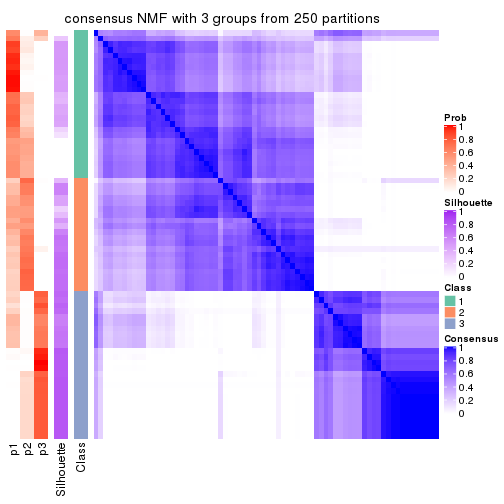
consensus_heatmap(res, k = 4)
consensus_heatmap(res, k = 5)
consensus_heatmap(res, k = 6)
Heatmaps for the membership of samples in all partitions to see how consistent they are:
membership_heatmap(res, k = 2)
membership_heatmap(res, k = 3)
membership_heatmap(res, k = 4)
membership_heatmap(res, k = 5)
membership_heatmap(res, k = 6)
As soon as we have had the classes for columns, we can look for signatures which are significantly different between classes which can be candidate marks for certain classes. Following are the heatmaps for signatures.
Signature heatmaps where rows are scaled:
get_signatures(res, k = 2)
get_signatures(res, k = 3)
get_signatures(res, k = 4)

get_signatures(res, k = 5)

get_signatures(res, k = 6)

Signature heatmaps where rows are not scaled:
get_signatures(res, k = 2, scale_rows = FALSE)
get_signatures(res, k = 3, scale_rows = FALSE)
get_signatures(res, k = 4, scale_rows = FALSE)
get_signatures(res, k = 5, scale_rows = FALSE)
get_signatures(res, k = 6, scale_rows = FALSE)
Compare the overlap of signatures from different k:
compare_signatures(res)
get_signature() returns a data frame invisibly. TO get the list of signatures, the function
call should be assigned to a variable explicitly. In following code, if plot argument is set
to FALSE, no heatmap is plotted while only the differential analysis is performed.
# code only for demonstration
tb = get_signature(res, k = ..., plot = FALSE)
An example of the output of tb is:
#> which_row fdr mean_1 mean_2 scaled_mean_1 scaled_mean_2 km
#> 1 38 0.042760348 8.373488 9.131774 -0.5533452 0.5164555 1
#> 2 40 0.018707592 7.106213 8.469186 -0.6173731 0.5762149 1
#> 3 55 0.019134737 10.221463 11.207825 -0.6159697 0.5749050 1
#> 4 59 0.006059896 5.921854 7.869574 -0.6899429 0.6439467 1
#> 5 60 0.018055526 8.928898 10.211722 -0.6204761 0.5791110 1
#> 6 98 0.009384629 15.714769 14.887706 0.6635654 -0.6193277 2
...
The columns in tb are:
which_row: row indices corresponding to the input matrix.fdr: FDR for the differential test. mean_x: The mean value in group x.scaled_mean_x: The mean value in group x after rows are scaled.km: Row groups if k-means clustering is applied to rows.UMAP plot which shows how samples are separated.
dimension_reduction(res, k = 2, method = "UMAP")
dimension_reduction(res, k = 3, method = "UMAP")
dimension_reduction(res, k = 4, method = "UMAP")
dimension_reduction(res, k = 5, method = "UMAP")
dimension_reduction(res, k = 6, method = "UMAP")
Following heatmap shows how subgroups are split when increasing k:
collect_classes(res)
If matrix rows can be associated to genes, consider to use GO_Enrichment(res,
...) to perform function enrichment for the signature genes.
The object with results only for a single top-value method and a single partition method can be extracted as:
res = res_list["CV", "hclust"]
# you can also extract it by
# res = res_list["CV:hclust"]
A summary of res and all the functions that can be applied to it:
res
#> A 'ConsensusPartition' object with k = 2, 3, 4, 5, 6.
#> On a matrix with 8381 rows and 72 columns.
#> Top rows (838, 1676, 2514, 3352, 4190) are extracted by 'CV' method.
#> Subgroups are detected by 'hclust' method.
#> Performed in total 1250 partitions by row resampling.
#> Best k for subgroups seems to be 2.
#>
#> Following methods can be applied to this 'ConsensusPartition' object:
#> [1] "cola_report" "collect_classes" "collect_plots"
#> [4] "collect_stats" "colnames" "compare_signatures"
#> [7] "consensus_heatmap" "dimension_reduction" "functional_enrichment"
#> [10] "get_anno_col" "get_anno" "get_classes"
#> [13] "get_consensus" "get_matrix" "get_membership"
#> [16] "get_param" "get_signatures" "get_stats"
#> [19] "is_best_k" "is_stable_k" "membership_heatmap"
#> [22] "ncol" "nrow" "plot_ecdf"
#> [25] "rownames" "select_partition_number" "show"
#> [28] "suggest_best_k" "test_to_known_factors"
collect_plots() function collects all the plots made from res for all k (number of partitions)
into one single page to provide an easy and fast comparison between different k.
collect_plots(res)
The plots are:
k and the heatmap of
predicted classes for each k.k.k.k.All the plots in panels can be made by individual functions and they are plotted later in this section.
select_partition_number() produces several plots showing different
statistics for choosing “optimized” k. There are following statistics:
k;k, the area increased is defined as \(A_k - A_{k-1}\).The detailed explanations of these statistics can be found in the cola vignette.
Generally speaking, lower PAC score, higher mean silhouette score or higher
concordance corresponds to better partition. Rand index and Jaccard index
measure how similar the current partition is compared to partition with k-1.
If they are too similar, we won't accept k is better than k-1.
select_partition_number(res)
The numeric values for all these statistics can be obtained by get_stats().
get_stats(res)
#> k 1-PAC mean_silhouette concordance area_increased Rand Jaccard
#> 2 2 0.839 0.937 0.972 0.4088 0.593 0.593
#> 3 3 0.723 0.825 0.845 0.2215 0.962 0.937
#> 4 4 0.511 0.649 0.809 0.1952 0.879 0.788
#> 5 5 0.511 0.392 0.749 0.1469 0.895 0.783
#> 6 6 0.577 0.406 0.716 0.0782 0.921 0.804
suggest_best_k() suggests the best \(k\) based on these statistics. The rules are as follows:
NA.suggest_best_k(res)
#> [1] 2
Following shows the table of the partitions (You need to click the show/hide
code output link to see it). The membership matrix (columns with name p*)
is inferred by
clue::cl_consensus()
function with the SE method. Basically the value in the membership matrix
represents the probability to belong to a certain group. The finall class
label for an item is determined with the group with highest probability it
belongs to.
In get_classes() function, the entropy is calculated from the membership
matrix and the silhouette score is calculated from the consensus matrix.
cbind(get_classes(res, k = 2), get_membership(res, k = 2))
#> class entropy silhouette p1 p2
#> SRR2558111 1 0.0000 0.975 1.000 0.000
#> SRR2558177 1 0.0672 0.969 0.992 0.008
#> SRR2558176 1 0.0000 0.975 1.000 0.000
#> SRR2558175 1 0.0000 0.975 1.000 0.000
#> SRR2558174 1 0.0000 0.975 1.000 0.000
#> SRR2558173 1 0.0000 0.975 1.000 0.000
#> SRR2558172 1 0.0000 0.975 1.000 0.000
#> SRR2558171 1 0.0000 0.975 1.000 0.000
#> SRR2558170 1 0.9427 0.412 0.640 0.360
#> SRR2558169 2 0.5842 0.874 0.140 0.860
#> SRR2558168 2 0.0000 0.953 0.000 1.000
#> SRR2558167 1 0.9686 0.306 0.604 0.396
#> SRR2558166 2 0.5842 0.874 0.140 0.860
#> SRR2558165 1 0.0000 0.975 1.000 0.000
#> SRR2558164 2 0.0000 0.953 0.000 1.000
#> SRR2558163 2 0.5737 0.877 0.136 0.864
#> SRR2558162 1 0.0000 0.975 1.000 0.000
#> SRR2558161 1 0.9248 0.458 0.660 0.340
#> SRR2558160 1 0.0000 0.975 1.000 0.000
#> SRR2558159 2 0.5842 0.874 0.140 0.860
#> SRR2558158 2 0.5842 0.874 0.140 0.860
#> SRR2558157 2 0.5842 0.874 0.140 0.860
#> SRR2558156 1 0.2043 0.947 0.968 0.032
#> SRR2558155 1 0.0000 0.975 1.000 0.000
#> SRR2558154 1 0.0672 0.969 0.992 0.008
#> SRR2558153 1 0.0000 0.975 1.000 0.000
#> SRR2558152 1 0.0000 0.975 1.000 0.000
#> SRR2558151 1 0.0000 0.975 1.000 0.000
#> SRR2558150 2 0.0000 0.953 0.000 1.000
#> SRR2558149 1 0.0000 0.975 1.000 0.000
#> SRR2558148 1 0.0000 0.975 1.000 0.000
#> SRR2558147 2 0.0000 0.953 0.000 1.000
#> SRR2558146 1 0.0000 0.975 1.000 0.000
#> SRR2558145 1 0.0000 0.975 1.000 0.000
#> SRR2558144 1 0.0000 0.975 1.000 0.000
#> SRR2558143 1 0.0000 0.975 1.000 0.000
#> SRR2558142 1 0.0000 0.975 1.000 0.000
#> SRR2558141 1 0.0000 0.975 1.000 0.000
#> SRR2558140 1 0.0376 0.972 0.996 0.004
#> SRR2558139 2 0.0000 0.953 0.000 1.000
#> SRR2558138 1 0.0000 0.975 1.000 0.000
#> SRR2558137 2 0.0000 0.953 0.000 1.000
#> SRR2558136 1 0.0000 0.975 1.000 0.000
#> SRR2558182 2 0.0000 0.953 0.000 1.000
#> SRR2558181 2 0.0000 0.953 0.000 1.000
#> SRR2558180 1 0.0376 0.972 0.996 0.004
#> SRR2558179 1 0.0000 0.975 1.000 0.000
#> SRR2558178 1 0.0000 0.975 1.000 0.000
#> SRR2558134 2 0.0000 0.953 0.000 1.000
#> SRR2558135 1 0.0000 0.975 1.000 0.000
#> SRR2558133 1 0.2236 0.943 0.964 0.036
#> SRR2558132 2 0.0000 0.953 0.000 1.000
#> SRR2558131 1 0.0000 0.975 1.000 0.000
#> SRR2558129 1 0.0000 0.975 1.000 0.000
#> SRR2558127 1 0.0376 0.972 0.996 0.004
#> SRR2558126 1 0.0000 0.975 1.000 0.000
#> SRR2558128 2 0.0000 0.953 0.000 1.000
#> SRR2558125 1 0.0000 0.975 1.000 0.000
#> SRR2558130 1 0.0000 0.975 1.000 0.000
#> SRR2558124 1 0.0000 0.975 1.000 0.000
#> SRR2558123 1 0.0376 0.972 0.996 0.004
#> SRR2558121 1 0.0000 0.975 1.000 0.000
#> SRR2558122 1 0.0000 0.975 1.000 0.000
#> SRR2558120 2 0.0000 0.953 0.000 1.000
#> SRR2558119 1 0.0000 0.975 1.000 0.000
#> SRR2558117 2 0.0000 0.953 0.000 1.000
#> SRR2558118 1 0.0000 0.975 1.000 0.000
#> SRR2558115 2 0.0000 0.953 0.000 1.000
#> SRR2558116 1 0.0000 0.975 1.000 0.000
#> SRR2558114 1 0.0000 0.975 1.000 0.000
#> SRR2558113 1 0.0000 0.975 1.000 0.000
#> SRR2558112 1 0.0000 0.975 1.000 0.000
cbind(get_classes(res, k = 3), get_membership(res, k = 3))
#> class entropy silhouette p1 p2 p3
#> SRR2558111 1 0.1529 0.920 0.960 0.000 0.040
#> SRR2558177 1 0.1832 0.917 0.956 0.036 0.008
#> SRR2558176 1 0.2926 0.912 0.924 0.036 0.040
#> SRR2558175 1 0.5335 0.795 0.760 0.008 0.232
#> SRR2558174 1 0.5012 0.819 0.788 0.008 0.204
#> SRR2558173 1 0.2926 0.912 0.924 0.036 0.040
#> SRR2558172 1 0.1482 0.921 0.968 0.012 0.020
#> SRR2558171 1 0.1015 0.921 0.980 0.008 0.012
#> SRR2558170 1 0.6633 0.292 0.548 0.444 0.008
#> SRR2558169 2 0.1163 0.687 0.028 0.972 0.000
#> SRR2558168 2 0.5397 0.531 0.000 0.720 0.280
#> SRR2558167 1 0.6302 0.187 0.520 0.480 0.000
#> SRR2558166 2 0.1163 0.687 0.028 0.972 0.000
#> SRR2558165 1 0.1585 0.917 0.964 0.028 0.008
#> SRR2558164 3 0.6309 0.589 0.000 0.496 0.504
#> SRR2558163 2 0.1031 0.685 0.024 0.976 0.000
#> SRR2558162 1 0.3042 0.912 0.920 0.040 0.040
#> SRR2558161 1 0.7049 0.297 0.528 0.452 0.020
#> SRR2558160 1 0.3028 0.911 0.920 0.048 0.032
#> SRR2558159 2 0.1163 0.687 0.028 0.972 0.000
#> SRR2558158 2 0.1163 0.687 0.028 0.972 0.000
#> SRR2558157 2 0.1163 0.687 0.028 0.972 0.000
#> SRR2558156 1 0.2486 0.910 0.932 0.060 0.008
#> SRR2558155 1 0.1482 0.921 0.968 0.020 0.012
#> SRR2558154 1 0.1832 0.917 0.956 0.036 0.008
#> SRR2558153 1 0.0424 0.921 0.992 0.000 0.008
#> SRR2558152 1 0.5292 0.799 0.764 0.008 0.228
#> SRR2558151 1 0.2537 0.910 0.920 0.000 0.080
#> SRR2558150 3 0.5650 0.952 0.000 0.312 0.688
#> SRR2558149 1 0.1860 0.915 0.948 0.000 0.052
#> SRR2558148 1 0.3690 0.892 0.884 0.016 0.100
#> SRR2558147 3 0.5650 0.952 0.000 0.312 0.688
#> SRR2558146 1 0.4865 0.875 0.832 0.032 0.136
#> SRR2558145 1 0.1529 0.917 0.960 0.000 0.040
#> SRR2558144 1 0.1482 0.921 0.968 0.012 0.020
#> SRR2558143 1 0.1765 0.916 0.956 0.004 0.040
#> SRR2558142 1 0.1877 0.920 0.956 0.012 0.032
#> SRR2558141 1 0.1585 0.917 0.964 0.028 0.008
#> SRR2558140 1 0.1711 0.917 0.960 0.032 0.008
#> SRR2558139 3 0.5650 0.952 0.000 0.312 0.688
#> SRR2558138 1 0.5335 0.795 0.760 0.008 0.232
#> SRR2558137 2 0.5621 0.508 0.000 0.692 0.308
#> SRR2558136 1 0.1964 0.915 0.944 0.000 0.056
#> SRR2558182 2 0.5621 0.508 0.000 0.692 0.308
#> SRR2558181 2 0.5621 0.508 0.000 0.692 0.308
#> SRR2558180 1 0.1711 0.917 0.960 0.032 0.008
#> SRR2558179 1 0.2926 0.912 0.924 0.036 0.040
#> SRR2558178 1 0.1585 0.917 0.964 0.028 0.008
#> SRR2558134 3 0.5650 0.952 0.000 0.312 0.688
#> SRR2558135 1 0.2845 0.908 0.920 0.012 0.068
#> SRR2558133 1 0.2584 0.908 0.928 0.064 0.008
#> SRR2558132 3 0.5650 0.952 0.000 0.312 0.688
#> SRR2558131 1 0.1267 0.919 0.972 0.004 0.024
#> SRR2558129 1 0.2599 0.918 0.932 0.016 0.052
#> SRR2558127 1 0.1711 0.917 0.960 0.032 0.008
#> SRR2558126 1 0.1525 0.918 0.964 0.004 0.032
#> SRR2558128 2 0.5621 0.508 0.000 0.692 0.308
#> SRR2558125 1 0.1585 0.917 0.964 0.028 0.008
#> SRR2558130 1 0.2998 0.906 0.916 0.016 0.068
#> SRR2558124 1 0.1453 0.919 0.968 0.024 0.008
#> SRR2558123 1 0.1711 0.917 0.960 0.032 0.008
#> SRR2558121 1 0.5335 0.795 0.760 0.008 0.232
#> SRR2558122 1 0.1399 0.918 0.968 0.004 0.028
#> SRR2558120 3 0.5650 0.952 0.000 0.312 0.688
#> SRR2558119 1 0.4289 0.886 0.868 0.040 0.092
#> SRR2558117 2 0.5621 0.508 0.000 0.692 0.308
#> SRR2558118 1 0.1774 0.920 0.960 0.024 0.016
#> SRR2558115 3 0.5650 0.952 0.000 0.312 0.688
#> SRR2558116 1 0.2165 0.910 0.936 0.000 0.064
#> SRR2558114 1 0.2682 0.907 0.920 0.004 0.076
#> SRR2558113 1 0.2564 0.916 0.936 0.036 0.028
#> SRR2558112 1 0.1860 0.915 0.948 0.000 0.052
cbind(get_classes(res, k = 4), get_membership(res, k = 4))
#> class entropy silhouette p1 p2 p3 p4
#> SRR2558111 1 0.366 0.7455 0.836 0.020 0.000 0.144
#> SRR2558177 1 0.130 0.7648 0.964 0.020 0.000 0.016
#> SRR2558176 1 0.493 0.5217 0.728 0.032 0.000 0.240
#> SRR2558175 4 0.448 0.9643 0.312 0.000 0.000 0.688
#> SRR2558174 4 0.475 0.8915 0.368 0.000 0.000 0.632
#> SRR2558173 1 0.503 0.5263 0.716 0.032 0.000 0.252
#> SRR2558172 1 0.227 0.7695 0.912 0.004 0.000 0.084
#> SRR2558171 1 0.254 0.7757 0.904 0.012 0.000 0.084
#> SRR2558170 1 0.585 0.0737 0.544 0.428 0.008 0.020
#> SRR2558169 2 0.261 0.8850 0.024 0.916 0.052 0.008
#> SRR2558168 2 0.697 -0.2243 0.000 0.488 0.396 0.116
#> SRR2558167 1 0.567 -0.0048 0.516 0.464 0.004 0.016
#> SRR2558166 2 0.261 0.8850 0.024 0.916 0.052 0.008
#> SRR2558165 1 0.106 0.7660 0.972 0.012 0.000 0.016
#> SRR2558164 3 0.466 0.2981 0.000 0.348 0.652 0.000
#> SRR2558163 2 0.251 0.8783 0.020 0.920 0.052 0.008
#> SRR2558162 1 0.517 0.5365 0.712 0.040 0.000 0.248
#> SRR2558161 1 0.728 -0.0490 0.472 0.424 0.024 0.080
#> SRR2558160 1 0.444 0.7186 0.800 0.052 0.000 0.148
#> SRR2558159 2 0.261 0.8850 0.024 0.916 0.052 0.008
#> SRR2558158 2 0.261 0.8850 0.024 0.916 0.052 0.008
#> SRR2558157 2 0.261 0.8850 0.024 0.916 0.052 0.008
#> SRR2558156 1 0.204 0.7571 0.940 0.036 0.008 0.016
#> SRR2558155 1 0.131 0.7748 0.960 0.004 0.000 0.036
#> SRR2558154 1 0.130 0.7648 0.964 0.020 0.000 0.016
#> SRR2558153 1 0.280 0.7711 0.884 0.008 0.000 0.108
#> SRR2558152 4 0.450 0.9668 0.316 0.000 0.000 0.684
#> SRR2558151 1 0.463 0.6771 0.768 0.036 0.000 0.196
#> SRR2558150 3 0.000 0.6798 0.000 0.000 1.000 0.000
#> SRR2558149 1 0.390 0.7325 0.816 0.020 0.000 0.164
#> SRR2558148 1 0.516 0.5877 0.720 0.044 0.000 0.236
#> SRR2558147 3 0.000 0.6798 0.000 0.000 1.000 0.000
#> SRR2558146 1 0.552 -0.0849 0.568 0.020 0.000 0.412
#> SRR2558145 1 0.344 0.7522 0.848 0.016 0.000 0.136
#> SRR2558144 1 0.334 0.7668 0.856 0.016 0.000 0.128
#> SRR2558143 1 0.355 0.7503 0.840 0.016 0.000 0.144
#> SRR2558142 1 0.293 0.7628 0.880 0.012 0.000 0.108
#> SRR2558141 1 0.117 0.7660 0.968 0.012 0.000 0.020
#> SRR2558140 1 0.118 0.7654 0.968 0.016 0.000 0.016
#> SRR2558139 3 0.000 0.6798 0.000 0.000 1.000 0.000
#> SRR2558138 4 0.450 0.9664 0.316 0.000 0.000 0.684
#> SRR2558137 3 0.701 0.1916 0.000 0.440 0.444 0.116
#> SRR2558136 1 0.396 0.7359 0.816 0.024 0.000 0.160
#> SRR2558182 3 0.701 0.1916 0.000 0.440 0.444 0.116
#> SRR2558181 3 0.701 0.1916 0.000 0.440 0.444 0.116
#> SRR2558180 1 0.118 0.7654 0.968 0.016 0.000 0.016
#> SRR2558179 1 0.496 0.5377 0.724 0.032 0.000 0.244
#> SRR2558178 1 0.117 0.7660 0.968 0.012 0.000 0.020
#> SRR2558134 3 0.000 0.6798 0.000 0.000 1.000 0.000
#> SRR2558135 1 0.446 0.6838 0.780 0.032 0.000 0.188
#> SRR2558133 1 0.222 0.7527 0.932 0.044 0.008 0.016
#> SRR2558132 3 0.000 0.6798 0.000 0.000 1.000 0.000
#> SRR2558131 1 0.314 0.7560 0.860 0.008 0.000 0.132
#> SRR2558129 1 0.420 0.7360 0.804 0.032 0.000 0.164
#> SRR2558127 1 0.118 0.7654 0.968 0.016 0.000 0.016
#> SRR2558126 1 0.298 0.7614 0.872 0.008 0.000 0.120
#> SRR2558128 3 0.701 0.1916 0.000 0.440 0.444 0.116
#> SRR2558125 1 0.106 0.7660 0.972 0.012 0.000 0.016
#> SRR2558130 1 0.472 0.6607 0.764 0.040 0.000 0.196
#> SRR2558124 1 0.158 0.7717 0.952 0.012 0.000 0.036
#> SRR2558123 1 0.118 0.7654 0.968 0.016 0.000 0.016
#> SRR2558121 4 0.454 0.9625 0.324 0.000 0.000 0.676
#> SRR2558122 1 0.332 0.7530 0.852 0.012 0.000 0.136
#> SRR2558120 3 0.000 0.6798 0.000 0.000 1.000 0.000
#> SRR2558119 1 0.536 0.5713 0.724 0.068 0.000 0.208
#> SRR2558117 3 0.701 0.1916 0.000 0.440 0.444 0.116
#> SRR2558118 1 0.328 0.7487 0.864 0.020 0.000 0.116
#> SRR2558115 3 0.000 0.6798 0.000 0.000 1.000 0.000
#> SRR2558116 1 0.404 0.7104 0.804 0.020 0.000 0.176
#> SRR2558114 1 0.404 0.7082 0.804 0.020 0.000 0.176
#> SRR2558113 1 0.391 0.7076 0.828 0.032 0.000 0.140
#> SRR2558112 1 0.385 0.7362 0.820 0.020 0.000 0.160
cbind(get_classes(res, k = 5), get_membership(res, k = 5))
#> class entropy silhouette p1 p2 p3 p4 p5
#> SRR2558111 1 0.5265 0.214782 0.656 0.248 0.000 0.000 0.096
#> SRR2558177 1 0.0290 0.520107 0.992 0.000 0.000 0.008 0.000
#> SRR2558176 1 0.5922 0.186144 0.604 0.096 0.000 0.016 0.284
#> SRR2558175 5 0.3053 0.861912 0.164 0.008 0.000 0.000 0.828
#> SRR2558174 5 0.3821 0.820497 0.216 0.020 0.000 0.000 0.764
#> SRR2558173 1 0.5959 0.177663 0.596 0.096 0.000 0.016 0.292
#> SRR2558172 1 0.3582 0.341354 0.768 0.224 0.000 0.000 0.008
#> SRR2558171 1 0.4237 0.386099 0.752 0.200 0.000 0.000 0.048
#> SRR2558170 1 0.4390 0.000785 0.568 0.000 0.004 0.428 0.000
#> SRR2558169 4 0.1251 0.620311 0.036 0.000 0.008 0.956 0.000
#> SRR2558168 4 0.7233 0.469528 0.000 0.140 0.292 0.500 0.068
#> SRR2558167 1 0.4291 -0.042425 0.536 0.000 0.000 0.464 0.000
#> SRR2558166 4 0.1251 0.620311 0.036 0.000 0.008 0.956 0.000
#> SRR2558165 1 0.0162 0.520865 0.996 0.000 0.000 0.000 0.004
#> SRR2558164 3 0.4114 0.401485 0.000 0.000 0.624 0.376 0.000
#> SRR2558163 4 0.1168 0.618414 0.032 0.000 0.008 0.960 0.000
#> SRR2558162 1 0.6145 0.171037 0.584 0.096 0.000 0.024 0.296
#> SRR2558161 4 0.6677 -0.214132 0.408 0.124 0.000 0.444 0.024
#> SRR2558160 1 0.5728 0.295934 0.676 0.192 0.000 0.032 0.100
#> SRR2558159 4 0.1251 0.620311 0.036 0.000 0.008 0.956 0.000
#> SRR2558158 4 0.1251 0.620311 0.036 0.000 0.008 0.956 0.000
#> SRR2558157 4 0.1251 0.620311 0.036 0.000 0.008 0.956 0.000
#> SRR2558156 1 0.0955 0.507469 0.968 0.000 0.004 0.028 0.000
#> SRR2558155 1 0.1991 0.490190 0.916 0.076 0.000 0.004 0.004
#> SRR2558154 1 0.0290 0.520107 0.992 0.000 0.000 0.008 0.000
#> SRR2558153 1 0.4254 0.352981 0.740 0.220 0.000 0.000 0.040
#> SRR2558152 5 0.2970 0.865574 0.168 0.004 0.000 0.000 0.828
#> SRR2558151 2 0.5111 0.446638 0.464 0.500 0.000 0.000 0.036
#> SRR2558150 3 0.0000 0.934059 0.000 0.000 1.000 0.000 0.000
#> SRR2558149 1 0.5294 -0.170268 0.564 0.380 0.000 0.000 0.056
#> SRR2558148 2 0.6009 0.523659 0.384 0.516 0.000 0.008 0.092
#> SRR2558147 3 0.0000 0.934059 0.000 0.000 1.000 0.000 0.000
#> SRR2558146 5 0.5899 0.301222 0.444 0.076 0.000 0.008 0.472
#> SRR2558145 1 0.4770 0.105145 0.644 0.320 0.000 0.000 0.036
#> SRR2558144 1 0.4865 0.291074 0.680 0.268 0.000 0.004 0.048
#> SRR2558143 1 0.4777 0.200446 0.664 0.292 0.000 0.000 0.044
#> SRR2558142 1 0.4132 0.263282 0.720 0.260 0.000 0.000 0.020
#> SRR2558141 1 0.0162 0.521145 0.996 0.000 0.000 0.000 0.004
#> SRR2558140 1 0.0162 0.520906 0.996 0.000 0.000 0.004 0.000
#> SRR2558139 3 0.0000 0.934059 0.000 0.000 1.000 0.000 0.000
#> SRR2558138 5 0.2970 0.864892 0.168 0.004 0.000 0.000 0.828
#> SRR2558137 4 0.7362 0.442501 0.000 0.140 0.344 0.448 0.068
#> SRR2558136 1 0.5056 -0.070464 0.596 0.360 0.000 0.000 0.044
#> SRR2558182 4 0.7362 0.442501 0.000 0.140 0.344 0.448 0.068
#> SRR2558181 4 0.7362 0.442501 0.000 0.140 0.344 0.448 0.068
#> SRR2558180 1 0.0162 0.520906 0.996 0.000 0.000 0.004 0.000
#> SRR2558179 1 0.5941 0.188088 0.600 0.096 0.000 0.016 0.288
#> SRR2558178 1 0.0162 0.521145 0.996 0.000 0.000 0.000 0.004
#> SRR2558134 3 0.0000 0.934059 0.000 0.000 1.000 0.000 0.000
#> SRR2558135 1 0.5960 -0.417072 0.504 0.396 0.000 0.004 0.096
#> SRR2558133 1 0.1124 0.501334 0.960 0.000 0.004 0.036 0.000
#> SRR2558132 3 0.0000 0.934059 0.000 0.000 1.000 0.000 0.000
#> SRR2558131 1 0.4622 0.224043 0.684 0.276 0.000 0.000 0.040
#> SRR2558129 1 0.5304 -0.062356 0.592 0.352 0.000 0.004 0.052
#> SRR2558127 1 0.0162 0.520906 0.996 0.000 0.000 0.004 0.000
#> SRR2558126 1 0.4374 0.244561 0.700 0.272 0.000 0.000 0.028
#> SRR2558128 4 0.7362 0.442501 0.000 0.140 0.344 0.448 0.068
#> SRR2558125 1 0.0000 0.520654 1.000 0.000 0.000 0.000 0.000
#> SRR2558130 1 0.6126 -0.486424 0.484 0.408 0.000 0.008 0.100
#> SRR2558124 1 0.1211 0.514870 0.960 0.024 0.000 0.000 0.016
#> SRR2558123 1 0.0162 0.520906 0.996 0.000 0.000 0.004 0.000
#> SRR2558121 5 0.3171 0.860924 0.176 0.008 0.000 0.000 0.816
#> SRR2558122 1 0.4666 0.207550 0.676 0.284 0.000 0.000 0.040
#> SRR2558120 3 0.0000 0.934059 0.000 0.000 1.000 0.000 0.000
#> SRR2558119 1 0.6376 -0.191873 0.520 0.364 0.000 0.032 0.084
#> SRR2558117 4 0.7362 0.442501 0.000 0.140 0.344 0.448 0.068
#> SRR2558118 1 0.4489 0.405609 0.760 0.156 0.000 0.004 0.080
#> SRR2558115 3 0.0000 0.934059 0.000 0.000 1.000 0.000 0.000
#> SRR2558116 1 0.5589 -0.299217 0.548 0.372 0.000 0.000 0.080
#> SRR2558114 1 0.5490 -0.318135 0.556 0.372 0.000 0.000 0.072
#> SRR2558113 1 0.5325 0.339389 0.708 0.144 0.000 0.016 0.132
#> SRR2558112 1 0.5418 -0.175223 0.568 0.364 0.000 0.000 0.068
cbind(get_classes(res, k = 6), get_membership(res, k = 6))
#> class entropy silhouette p1 p2 p3 p4 p5 p6
#> SRR2558111 2 0.5424 0.0422 0.020 0.560 0.000 0.000 0.080 0.340
#> SRR2558177 2 0.0260 0.5084 0.000 0.992 0.000 0.008 0.000 0.000
#> SRR2558176 2 0.6888 0.0134 0.268 0.512 0.000 0.020 0.096 0.104
#> SRR2558175 1 0.2367 0.8512 0.888 0.088 0.000 0.000 0.016 0.008
#> SRR2558174 1 0.3161 0.8091 0.828 0.136 0.000 0.000 0.008 0.028
#> SRR2558173 2 0.6903 0.0122 0.272 0.508 0.000 0.020 0.096 0.104
#> SRR2558172 2 0.4299 0.3282 0.000 0.720 0.000 0.000 0.092 0.188
#> SRR2558171 2 0.4911 0.3518 0.012 0.680 0.000 0.000 0.112 0.196
#> SRR2558170 2 0.3961 -0.0854 0.000 0.556 0.004 0.440 0.000 0.000
#> SRR2558169 4 0.0806 0.6136 0.000 0.020 0.008 0.972 0.000 0.000
#> SRR2558168 4 0.6185 0.4625 0.008 0.000 0.264 0.444 0.284 0.000
#> SRR2558167 2 0.3860 -0.1263 0.000 0.528 0.000 0.472 0.000 0.000
#> SRR2558166 4 0.0806 0.6136 0.000 0.020 0.008 0.972 0.000 0.000
#> SRR2558165 2 0.0146 0.5096 0.000 0.996 0.000 0.000 0.000 0.004
#> SRR2558164 3 0.4069 0.3919 0.004 0.000 0.612 0.376 0.008 0.000
#> SRR2558163 4 0.0717 0.6119 0.000 0.016 0.008 0.976 0.000 0.000
#> SRR2558162 2 0.7058 -0.0187 0.288 0.484 0.000 0.024 0.096 0.108
#> SRR2558161 4 0.6845 -0.2525 0.016 0.340 0.000 0.460 0.076 0.108
#> SRR2558160 2 0.6350 0.1716 0.040 0.576 0.000 0.032 0.104 0.248
#> SRR2558159 4 0.0806 0.6136 0.000 0.020 0.008 0.972 0.000 0.000
#> SRR2558158 4 0.0806 0.6136 0.000 0.020 0.008 0.972 0.000 0.000
#> SRR2558157 4 0.0806 0.6136 0.000 0.020 0.008 0.972 0.000 0.000
#> SRR2558156 2 0.0858 0.4946 0.000 0.968 0.004 0.028 0.000 0.000
#> SRR2558155 2 0.2094 0.4815 0.000 0.908 0.000 0.004 0.024 0.064
#> SRR2558154 2 0.0260 0.5084 0.000 0.992 0.000 0.008 0.000 0.000
#> SRR2558153 2 0.4831 0.3294 0.008 0.680 0.000 0.000 0.108 0.204
#> SRR2558152 1 0.2274 0.8553 0.892 0.088 0.000 0.000 0.008 0.012
#> SRR2558151 6 0.6190 -0.1372 0.024 0.248 0.000 0.000 0.216 0.512
#> SRR2558150 3 0.0146 0.9294 0.000 0.000 0.996 0.000 0.004 0.000
#> SRR2558149 2 0.6346 -0.1267 0.028 0.428 0.000 0.000 0.176 0.368
#> SRR2558148 6 0.4994 0.3275 0.036 0.148 0.000 0.000 0.112 0.704
#> SRR2558147 3 0.0146 0.9294 0.000 0.000 0.996 0.000 0.004 0.000
#> SRR2558146 1 0.6478 0.2644 0.504 0.328 0.000 0.012 0.068 0.088
#> SRR2558145 2 0.5925 0.0851 0.016 0.524 0.000 0.000 0.164 0.296
#> SRR2558144 2 0.5958 0.1483 0.024 0.584 0.000 0.008 0.152 0.232
#> SRR2558143 2 0.5959 0.1600 0.028 0.548 0.000 0.000 0.148 0.276
#> SRR2558142 2 0.5027 0.2486 0.012 0.660 0.000 0.000 0.108 0.220
#> SRR2558141 2 0.0146 0.5092 0.000 0.996 0.000 0.000 0.004 0.000
#> SRR2558140 2 0.0146 0.5097 0.000 0.996 0.000 0.004 0.000 0.000
#> SRR2558139 3 0.0405 0.9263 0.004 0.000 0.988 0.000 0.008 0.000
#> SRR2558138 1 0.2255 0.8532 0.892 0.088 0.000 0.000 0.016 0.004
#> SRR2558137 4 0.6259 0.4357 0.008 0.000 0.332 0.400 0.260 0.000
#> SRR2558136 2 0.6169 -0.0646 0.024 0.468 0.000 0.000 0.160 0.348
#> SRR2558182 4 0.6259 0.4357 0.008 0.000 0.332 0.400 0.260 0.000
#> SRR2558181 4 0.6259 0.4357 0.008 0.000 0.332 0.400 0.260 0.000
#> SRR2558180 2 0.0146 0.5097 0.000 0.996 0.000 0.004 0.000 0.000
#> SRR2558179 2 0.6938 0.0119 0.272 0.504 0.000 0.020 0.096 0.108
#> SRR2558178 2 0.0146 0.5092 0.000 0.996 0.000 0.000 0.004 0.000
#> SRR2558134 3 0.0000 0.9296 0.000 0.000 1.000 0.000 0.000 0.000
#> SRR2558135 6 0.5150 0.5845 0.028 0.352 0.000 0.000 0.044 0.576
#> SRR2558133 2 0.1010 0.4883 0.000 0.960 0.004 0.036 0.000 0.000
#> SRR2558132 3 0.0000 0.9296 0.000 0.000 1.000 0.000 0.000 0.000
#> SRR2558131 2 0.5476 0.2052 0.008 0.592 0.000 0.000 0.152 0.248
#> SRR2558129 2 0.6497 -0.2342 0.024 0.460 0.000 0.008 0.188 0.320
#> SRR2558127 2 0.0146 0.5097 0.000 0.996 0.000 0.004 0.000 0.000
#> SRR2558126 2 0.5359 0.2290 0.012 0.608 0.000 0.000 0.120 0.260
#> SRR2558128 4 0.6259 0.4357 0.008 0.000 0.332 0.400 0.260 0.000
#> SRR2558125 2 0.0000 0.5094 0.000 1.000 0.000 0.000 0.000 0.000
#> SRR2558130 6 0.5031 0.5818 0.028 0.332 0.000 0.000 0.040 0.600
#> SRR2558124 2 0.1230 0.5024 0.008 0.956 0.000 0.000 0.008 0.028
#> SRR2558123 2 0.0146 0.5097 0.000 0.996 0.000 0.004 0.000 0.000
#> SRR2558121 1 0.2661 0.8492 0.872 0.096 0.000 0.000 0.016 0.016
#> SRR2558122 2 0.5519 0.1964 0.008 0.580 0.000 0.000 0.148 0.264
#> SRR2558120 3 0.0000 0.9296 0.000 0.000 1.000 0.000 0.000 0.000
#> SRR2558119 5 0.6743 0.0000 0.028 0.376 0.000 0.024 0.420 0.152
#> SRR2558117 4 0.6259 0.4357 0.008 0.000 0.332 0.400 0.260 0.000
#> SRR2558118 2 0.5356 0.3247 0.032 0.668 0.000 0.008 0.092 0.200
#> SRR2558115 3 0.0146 0.9289 0.000 0.000 0.996 0.000 0.004 0.000
#> SRR2558116 6 0.4954 0.5592 0.028 0.372 0.000 0.000 0.028 0.572
#> SRR2558114 6 0.4828 0.5269 0.016 0.384 0.000 0.000 0.032 0.568
#> SRR2558113 2 0.6154 0.2327 0.084 0.616 0.000 0.016 0.084 0.200
#> SRR2558112 2 0.6527 -0.1457 0.044 0.436 0.000 0.000 0.172 0.348
Heatmaps for the consensus matrix. It visualizes the probability of two samples to be in a same group.
consensus_heatmap(res, k = 2)
consensus_heatmap(res, k = 3)

consensus_heatmap(res, k = 4)
consensus_heatmap(res, k = 5)
consensus_heatmap(res, k = 6)
Heatmaps for the membership of samples in all partitions to see how consistent they are:
membership_heatmap(res, k = 2)
membership_heatmap(res, k = 3)
membership_heatmap(res, k = 4)
membership_heatmap(res, k = 5)
membership_heatmap(res, k = 6)
As soon as we have had the classes for columns, we can look for signatures which are significantly different between classes which can be candidate marks for certain classes. Following are the heatmaps for signatures.
Signature heatmaps where rows are scaled:
get_signatures(res, k = 2)
get_signatures(res, k = 3)
get_signatures(res, k = 4)
get_signatures(res, k = 5)
get_signatures(res, k = 6)
Signature heatmaps where rows are not scaled:
get_signatures(res, k = 2, scale_rows = FALSE)
get_signatures(res, k = 3, scale_rows = FALSE)
get_signatures(res, k = 4, scale_rows = FALSE)
get_signatures(res, k = 5, scale_rows = FALSE)
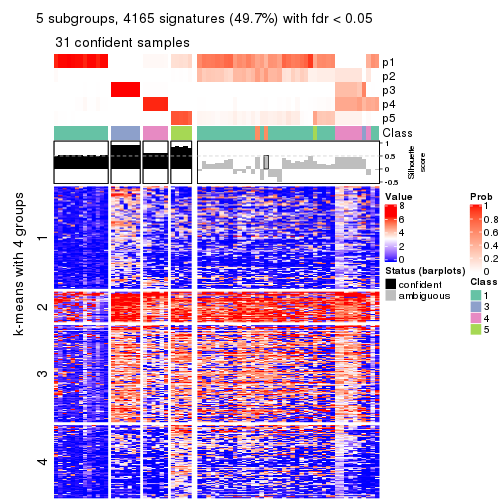
get_signatures(res, k = 6, scale_rows = FALSE)
Compare the overlap of signatures from different k:
compare_signatures(res)
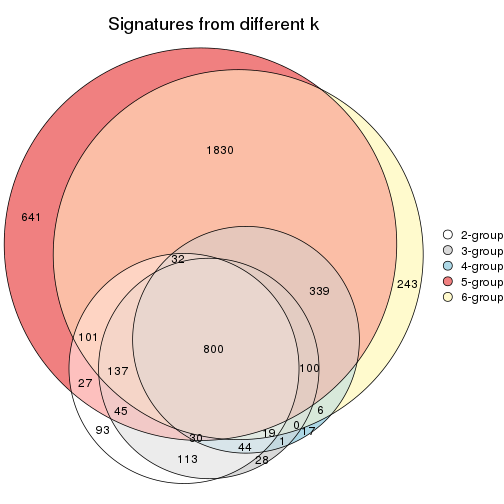
get_signature() returns a data frame invisibly. TO get the list of signatures, the function
call should be assigned to a variable explicitly. In following code, if plot argument is set
to FALSE, no heatmap is plotted while only the differential analysis is performed.
# code only for demonstration
tb = get_signature(res, k = ..., plot = FALSE)
An example of the output of tb is:
#> which_row fdr mean_1 mean_2 scaled_mean_1 scaled_mean_2 km
#> 1 38 0.042760348 8.373488 9.131774 -0.5533452 0.5164555 1
#> 2 40 0.018707592 7.106213 8.469186 -0.6173731 0.5762149 1
#> 3 55 0.019134737 10.221463 11.207825 -0.6159697 0.5749050 1
#> 4 59 0.006059896 5.921854 7.869574 -0.6899429 0.6439467 1
#> 5 60 0.018055526 8.928898 10.211722 -0.6204761 0.5791110 1
#> 6 98 0.009384629 15.714769 14.887706 0.6635654 -0.6193277 2
...
The columns in tb are:
which_row: row indices corresponding to the input matrix.fdr: FDR for the differential test. mean_x: The mean value in group x.scaled_mean_x: The mean value in group x after rows are scaled.km: Row groups if k-means clustering is applied to rows.UMAP plot which shows how samples are separated.
dimension_reduction(res, k = 2, method = "UMAP")
dimension_reduction(res, k = 3, method = "UMAP")
dimension_reduction(res, k = 4, method = "UMAP")
dimension_reduction(res, k = 5, method = "UMAP")

dimension_reduction(res, k = 6, method = "UMAP")

Following heatmap shows how subgroups are split when increasing k:
collect_classes(res)
If matrix rows can be associated to genes, consider to use GO_Enrichment(res,
...) to perform function enrichment for the signature genes.
The object with results only for a single top-value method and a single partition method can be extracted as:
res = res_list["CV", "kmeans"]
# you can also extract it by
# res = res_list["CV:kmeans"]
A summary of res and all the functions that can be applied to it:
res
#> A 'ConsensusPartition' object with k = 2, 3, 4, 5, 6.
#> On a matrix with 8381 rows and 72 columns.
#> Top rows (838, 1676, 2514, 3352, 4190) are extracted by 'CV' method.
#> Subgroups are detected by 'kmeans' method.
#> Performed in total 1250 partitions by row resampling.
#> Best k for subgroups seems to be 3.
#>
#> Following methods can be applied to this 'ConsensusPartition' object:
#> [1] "cola_report" "collect_classes" "collect_plots"
#> [4] "collect_stats" "colnames" "compare_signatures"
#> [7] "consensus_heatmap" "dimension_reduction" "functional_enrichment"
#> [10] "get_anno_col" "get_anno" "get_classes"
#> [13] "get_consensus" "get_matrix" "get_membership"
#> [16] "get_param" "get_signatures" "get_stats"
#> [19] "is_best_k" "is_stable_k" "membership_heatmap"
#> [22] "ncol" "nrow" "plot_ecdf"
#> [25] "rownames" "select_partition_number" "show"
#> [28] "suggest_best_k" "test_to_known_factors"
collect_plots() function collects all the plots made from res for all k (number of partitions)
into one single page to provide an easy and fast comparison between different k.
collect_plots(res)
The plots are:
k and the heatmap of
predicted classes for each k.k.k.k.All the plots in panels can be made by individual functions and they are plotted later in this section.
select_partition_number() produces several plots showing different
statistics for choosing “optimized” k. There are following statistics:
k;k, the area increased is defined as \(A_k - A_{k-1}\).The detailed explanations of these statistics can be found in the cola vignette.
Generally speaking, lower PAC score, higher mean silhouette score or higher
concordance corresponds to better partition. Rand index and Jaccard index
measure how similar the current partition is compared to partition with k-1.
If they are too similar, we won't accept k is better than k-1.
select_partition_number(res)
The numeric values for all these statistics can be obtained by get_stats().
get_stats(res)
#> k 1-PAC mean_silhouette concordance area_increased Rand Jaccard
#> 2 2 0.379 0.841 0.896 0.3957 0.665 0.665
#> 3 3 0.759 0.919 0.931 0.5840 0.685 0.526
#> 4 4 0.777 0.801 0.861 0.1438 0.899 0.718
#> 5 5 0.780 0.694 0.794 0.0733 0.968 0.880
#> 6 6 0.771 0.693 0.797 0.0482 0.900 0.609
suggest_best_k() suggests the best \(k\) based on these statistics. The rules are as follows:
NA.suggest_best_k(res)
#> [1] 3
Following shows the table of the partitions (You need to click the show/hide
code output link to see it). The membership matrix (columns with name p*)
is inferred by
clue::cl_consensus()
function with the SE method. Basically the value in the membership matrix
represents the probability to belong to a certain group. The finall class
label for an item is determined with the group with highest probability it
belongs to.
In get_classes() function, the entropy is calculated from the membership
matrix and the silhouette score is calculated from the consensus matrix.
cbind(get_classes(res, k = 2), get_membership(res, k = 2))
#> class entropy silhouette p1 p2
#> SRR2558111 1 0.0376 0.856 0.996 0.004
#> SRR2558177 1 0.5737 0.819 0.864 0.136
#> SRR2558176 1 0.0672 0.855 0.992 0.008
#> SRR2558175 1 0.6247 0.832 0.844 0.156
#> SRR2558174 1 0.5629 0.845 0.868 0.132
#> SRR2558173 1 0.0376 0.855 0.996 0.004
#> SRR2558172 1 0.0376 0.856 0.996 0.004
#> SRR2558171 1 0.0376 0.856 0.996 0.004
#> SRR2558170 1 0.7674 0.733 0.776 0.224
#> SRR2558169 1 0.9815 0.338 0.580 0.420
#> SRR2558168 2 0.0000 0.961 0.000 1.000
#> SRR2558167 1 0.5842 0.817 0.860 0.140
#> SRR2558166 1 0.8327 0.677 0.736 0.264
#> SRR2558165 1 0.5737 0.819 0.864 0.136
#> SRR2558164 2 0.4161 0.873 0.084 0.916
#> SRR2558163 1 0.9608 0.437 0.616 0.384
#> SRR2558162 1 0.0672 0.855 0.992 0.008
#> SRR2558161 1 0.5737 0.819 0.864 0.136
#> SRR2558160 1 0.0376 0.856 0.996 0.004
#> SRR2558159 2 0.2603 0.919 0.044 0.956
#> SRR2558158 1 0.6531 0.794 0.832 0.168
#> SRR2558157 1 0.5737 0.819 0.864 0.136
#> SRR2558156 1 0.5737 0.819 0.864 0.136
#> SRR2558155 1 0.0376 0.855 0.996 0.004
#> SRR2558154 1 0.5737 0.819 0.864 0.136
#> SRR2558153 1 0.0376 0.856 0.996 0.004
#> SRR2558152 1 0.6148 0.835 0.848 0.152
#> SRR2558151 1 0.6247 0.832 0.844 0.156
#> SRR2558150 2 0.0376 0.962 0.004 0.996
#> SRR2558149 1 0.6247 0.832 0.844 0.156
#> SRR2558148 1 0.6247 0.832 0.844 0.156
#> SRR2558147 2 0.0376 0.962 0.004 0.996
#> SRR2558146 1 0.5629 0.845 0.868 0.132
#> SRR2558145 1 0.6247 0.832 0.844 0.156
#> SRR2558144 1 0.5294 0.848 0.880 0.120
#> SRR2558143 1 0.5629 0.845 0.868 0.132
#> SRR2558142 1 0.5519 0.846 0.872 0.128
#> SRR2558141 1 0.5737 0.819 0.864 0.136
#> SRR2558140 1 0.5737 0.819 0.864 0.136
#> SRR2558139 2 0.0376 0.962 0.004 0.996
#> SRR2558138 1 0.6247 0.832 0.844 0.156
#> SRR2558137 2 0.0000 0.961 0.000 1.000
#> SRR2558136 1 0.6247 0.832 0.844 0.156
#> SRR2558182 2 0.5737 0.821 0.136 0.864
#> SRR2558181 2 0.5737 0.821 0.136 0.864
#> SRR2558180 1 0.5737 0.819 0.864 0.136
#> SRR2558179 1 0.0672 0.855 0.992 0.008
#> SRR2558178 1 0.5294 0.826 0.880 0.120
#> SRR2558134 2 0.0376 0.962 0.004 0.996
#> SRR2558135 1 0.6148 0.835 0.848 0.152
#> SRR2558133 1 0.5737 0.819 0.864 0.136
#> SRR2558132 2 0.0376 0.962 0.004 0.996
#> SRR2558131 1 0.4161 0.855 0.916 0.084
#> SRR2558129 1 0.5519 0.846 0.872 0.128
#> SRR2558127 1 0.5737 0.819 0.864 0.136
#> SRR2558126 1 0.5629 0.845 0.868 0.132
#> SRR2558128 2 0.0000 0.961 0.000 1.000
#> SRR2558125 1 0.5737 0.819 0.864 0.136
#> SRR2558130 1 0.3733 0.856 0.928 0.072
#> SRR2558124 1 0.2603 0.850 0.956 0.044
#> SRR2558123 1 0.5737 0.819 0.864 0.136
#> SRR2558121 1 0.6148 0.835 0.848 0.152
#> SRR2558122 1 0.5629 0.845 0.868 0.132
#> SRR2558120 2 0.0376 0.962 0.004 0.996
#> SRR2558119 1 0.5629 0.845 0.868 0.132
#> SRR2558117 2 0.0000 0.961 0.000 1.000
#> SRR2558118 1 0.3114 0.857 0.944 0.056
#> SRR2558115 2 0.0376 0.962 0.004 0.996
#> SRR2558116 1 0.5629 0.845 0.868 0.132
#> SRR2558114 1 0.6247 0.832 0.844 0.156
#> SRR2558113 1 0.0376 0.856 0.996 0.004
#> SRR2558112 1 0.6247 0.832 0.844 0.156
cbind(get_classes(res, k = 3), get_membership(res, k = 3))
#> class entropy silhouette p1 p2 p3
#> SRR2558111 1 0.1289 0.980 0.968 0.032 0.000
#> SRR2558177 2 0.2448 0.895 0.076 0.924 0.000
#> SRR2558176 2 0.5815 0.734 0.304 0.692 0.004
#> SRR2558175 1 0.0661 0.952 0.988 0.008 0.004
#> SRR2558174 1 0.0661 0.952 0.988 0.008 0.004
#> SRR2558173 1 0.4931 0.663 0.784 0.212 0.004
#> SRR2558172 1 0.1289 0.980 0.968 0.032 0.000
#> SRR2558171 1 0.1289 0.980 0.968 0.032 0.000
#> SRR2558170 2 0.0424 0.851 0.000 0.992 0.008
#> SRR2558169 2 0.0592 0.848 0.000 0.988 0.012
#> SRR2558168 3 0.2959 0.937 0.000 0.100 0.900
#> SRR2558167 2 0.0592 0.861 0.012 0.988 0.000
#> SRR2558166 2 0.0424 0.851 0.000 0.992 0.008
#> SRR2558165 2 0.3192 0.900 0.112 0.888 0.000
#> SRR2558164 3 0.1289 0.959 0.000 0.032 0.968
#> SRR2558163 2 0.0747 0.844 0.000 0.984 0.016
#> SRR2558162 2 0.5588 0.772 0.276 0.720 0.004
#> SRR2558161 2 0.2878 0.902 0.096 0.904 0.000
#> SRR2558160 2 0.6057 0.636 0.340 0.656 0.004
#> SRR2558159 3 0.3340 0.927 0.000 0.120 0.880
#> SRR2558158 2 0.0424 0.857 0.008 0.992 0.000
#> SRR2558157 2 0.1411 0.876 0.036 0.964 0.000
#> SRR2558156 2 0.3038 0.904 0.104 0.896 0.000
#> SRR2558155 2 0.5948 0.602 0.360 0.640 0.000
#> SRR2558154 2 0.0592 0.861 0.012 0.988 0.000
#> SRR2558153 1 0.1289 0.980 0.968 0.032 0.000
#> SRR2558152 1 0.0661 0.952 0.988 0.008 0.004
#> SRR2558151 1 0.1289 0.980 0.968 0.032 0.000
#> SRR2558150 3 0.0237 0.964 0.000 0.004 0.996
#> SRR2558149 1 0.1163 0.978 0.972 0.028 0.000
#> SRR2558148 1 0.1289 0.980 0.968 0.032 0.000
#> SRR2558147 3 0.0237 0.964 0.000 0.004 0.996
#> SRR2558146 1 0.0661 0.952 0.988 0.008 0.004
#> SRR2558145 1 0.1289 0.980 0.968 0.032 0.000
#> SRR2558144 1 0.1289 0.980 0.968 0.032 0.000
#> SRR2558143 1 0.1289 0.980 0.968 0.032 0.000
#> SRR2558142 1 0.1289 0.980 0.968 0.032 0.000
#> SRR2558141 2 0.3038 0.904 0.104 0.896 0.000
#> SRR2558140 2 0.3038 0.904 0.104 0.896 0.000
#> SRR2558139 3 0.0237 0.964 0.000 0.004 0.996
#> SRR2558138 1 0.0661 0.952 0.988 0.008 0.004
#> SRR2558137 3 0.3879 0.902 0.000 0.152 0.848
#> SRR2558136 1 0.1289 0.980 0.968 0.032 0.000
#> SRR2558182 3 0.0475 0.962 0.004 0.004 0.992
#> SRR2558181 3 0.0475 0.962 0.004 0.004 0.992
#> SRR2558180 2 0.3038 0.904 0.104 0.896 0.000
#> SRR2558179 2 0.5623 0.767 0.280 0.716 0.004
#> SRR2558178 2 0.3116 0.902 0.108 0.892 0.000
#> SRR2558134 3 0.0237 0.964 0.000 0.004 0.996
#> SRR2558135 1 0.1289 0.980 0.968 0.032 0.000
#> SRR2558133 2 0.3038 0.904 0.104 0.896 0.000
#> SRR2558132 3 0.0237 0.964 0.000 0.004 0.996
#> SRR2558131 1 0.1289 0.980 0.968 0.032 0.000
#> SRR2558129 1 0.1289 0.980 0.968 0.032 0.000
#> SRR2558127 2 0.3038 0.904 0.104 0.896 0.000
#> SRR2558126 1 0.1289 0.980 0.968 0.032 0.000
#> SRR2558128 3 0.2959 0.937 0.000 0.100 0.900
#> SRR2558125 2 0.3038 0.904 0.104 0.896 0.000
#> SRR2558130 1 0.1289 0.980 0.968 0.032 0.000
#> SRR2558124 2 0.4291 0.853 0.180 0.820 0.000
#> SRR2558123 2 0.3038 0.904 0.104 0.896 0.000
#> SRR2558121 1 0.0661 0.952 0.988 0.008 0.004
#> SRR2558122 1 0.1289 0.980 0.968 0.032 0.000
#> SRR2558120 3 0.0237 0.964 0.000 0.004 0.996
#> SRR2558119 1 0.1289 0.980 0.968 0.032 0.000
#> SRR2558117 3 0.3816 0.906 0.000 0.148 0.852
#> SRR2558118 1 0.1525 0.978 0.964 0.032 0.004
#> SRR2558115 3 0.0237 0.964 0.000 0.004 0.996
#> SRR2558116 1 0.1289 0.980 0.968 0.032 0.000
#> SRR2558114 1 0.1289 0.980 0.968 0.032 0.000
#> SRR2558113 1 0.1647 0.975 0.960 0.036 0.004
#> SRR2558112 1 0.0747 0.965 0.984 0.016 0.000
cbind(get_classes(res, k = 4), get_membership(res, k = 4))
#> class entropy silhouette p1 p2 p3 p4
#> SRR2558111 1 0.0592 0.949 0.984 0.000 0.000 0.016
#> SRR2558177 2 0.1389 0.836 0.048 0.952 0.000 0.000
#> SRR2558176 4 0.6315 0.393 0.060 0.432 0.000 0.508
#> SRR2558175 4 0.4988 0.696 0.288 0.020 0.000 0.692
#> SRR2558174 4 0.5157 0.708 0.284 0.028 0.000 0.688
#> SRR2558173 4 0.7330 0.579 0.180 0.312 0.000 0.508
#> SRR2558172 1 0.0376 0.950 0.992 0.004 0.000 0.004
#> SRR2558171 1 0.0188 0.951 0.996 0.000 0.000 0.004
#> SRR2558170 2 0.3569 0.706 0.000 0.804 0.000 0.196
#> SRR2558169 2 0.4356 0.624 0.000 0.708 0.000 0.292
#> SRR2558168 3 0.5565 0.782 0.000 0.056 0.684 0.260
#> SRR2558167 2 0.1792 0.788 0.000 0.932 0.000 0.068
#> SRR2558166 2 0.4277 0.635 0.000 0.720 0.000 0.280
#> SRR2558165 2 0.2363 0.820 0.056 0.920 0.000 0.024
#> SRR2558164 3 0.2999 0.841 0.000 0.004 0.864 0.132
#> SRR2558163 2 0.4356 0.624 0.000 0.708 0.000 0.292
#> SRR2558162 4 0.6537 0.418 0.076 0.424 0.000 0.500
#> SRR2558161 2 0.1661 0.837 0.052 0.944 0.000 0.004
#> SRR2558160 2 0.5558 0.366 0.324 0.640 0.000 0.036
#> SRR2558159 3 0.6274 0.746 0.000 0.088 0.620 0.292
#> SRR2558158 2 0.3907 0.678 0.000 0.768 0.000 0.232
#> SRR2558157 2 0.2222 0.804 0.016 0.924 0.000 0.060
#> SRR2558156 2 0.1474 0.837 0.052 0.948 0.000 0.000
#> SRR2558155 2 0.5716 0.175 0.420 0.552 0.000 0.028
#> SRR2558154 2 0.1022 0.802 0.000 0.968 0.000 0.032
#> SRR2558153 1 0.0188 0.951 0.996 0.000 0.000 0.004
#> SRR2558152 4 0.5195 0.711 0.276 0.032 0.000 0.692
#> SRR2558151 1 0.1302 0.942 0.956 0.000 0.000 0.044
#> SRR2558150 3 0.0188 0.865 0.000 0.000 0.996 0.004
#> SRR2558149 1 0.1474 0.936 0.948 0.000 0.000 0.052
#> SRR2558148 1 0.2408 0.906 0.896 0.000 0.000 0.104
#> SRR2558147 3 0.0000 0.866 0.000 0.000 1.000 0.000
#> SRR2558146 4 0.5599 0.673 0.316 0.040 0.000 0.644
#> SRR2558145 1 0.1022 0.946 0.968 0.000 0.000 0.032
#> SRR2558144 1 0.0188 0.951 0.996 0.000 0.000 0.004
#> SRR2558143 1 0.0188 0.952 0.996 0.000 0.000 0.004
#> SRR2558142 1 0.0000 0.952 1.000 0.000 0.000 0.000
#> SRR2558141 2 0.1557 0.836 0.056 0.944 0.000 0.000
#> SRR2558140 2 0.1557 0.836 0.056 0.944 0.000 0.000
#> SRR2558139 3 0.0000 0.866 0.000 0.000 1.000 0.000
#> SRR2558138 4 0.5195 0.711 0.276 0.032 0.000 0.692
#> SRR2558137 3 0.6476 0.739 0.000 0.112 0.616 0.272
#> SRR2558136 1 0.1302 0.942 0.956 0.000 0.000 0.044
#> SRR2558182 3 0.2345 0.851 0.000 0.000 0.900 0.100
#> SRR2558181 3 0.2345 0.851 0.000 0.000 0.900 0.100
#> SRR2558180 2 0.1474 0.837 0.052 0.948 0.000 0.000
#> SRR2558179 4 0.6537 0.418 0.076 0.424 0.000 0.500
#> SRR2558178 2 0.1867 0.824 0.072 0.928 0.000 0.000
#> SRR2558134 3 0.0188 0.865 0.000 0.000 0.996 0.004
#> SRR2558135 1 0.2197 0.926 0.916 0.004 0.000 0.080
#> SRR2558133 2 0.1557 0.836 0.056 0.944 0.000 0.000
#> SRR2558132 3 0.0000 0.866 0.000 0.000 1.000 0.000
#> SRR2558131 1 0.0000 0.952 1.000 0.000 0.000 0.000
#> SRR2558129 1 0.0469 0.951 0.988 0.000 0.000 0.012
#> SRR2558127 2 0.1474 0.837 0.052 0.948 0.000 0.000
#> SRR2558126 1 0.0592 0.951 0.984 0.000 0.000 0.016
#> SRR2558128 3 0.5772 0.776 0.000 0.068 0.672 0.260
#> SRR2558125 2 0.1743 0.834 0.056 0.940 0.000 0.004
#> SRR2558130 1 0.1661 0.934 0.944 0.004 0.000 0.052
#> SRR2558124 2 0.2984 0.789 0.084 0.888 0.000 0.028
#> SRR2558123 2 0.1474 0.837 0.052 0.948 0.000 0.000
#> SRR2558121 4 0.5157 0.708 0.284 0.028 0.000 0.688
#> SRR2558122 1 0.0000 0.952 1.000 0.000 0.000 0.000
#> SRR2558120 3 0.0000 0.866 0.000 0.000 1.000 0.000
#> SRR2558119 1 0.0188 0.951 0.996 0.000 0.000 0.004
#> SRR2558117 3 0.6476 0.739 0.000 0.112 0.616 0.272
#> SRR2558118 1 0.1888 0.916 0.940 0.016 0.000 0.044
#> SRR2558115 3 0.0000 0.866 0.000 0.000 1.000 0.000
#> SRR2558116 1 0.2329 0.922 0.916 0.012 0.000 0.072
#> SRR2558114 1 0.1867 0.930 0.928 0.000 0.000 0.072
#> SRR2558113 1 0.4711 0.660 0.784 0.064 0.000 0.152
#> SRR2558112 1 0.1637 0.932 0.940 0.000 0.000 0.060
cbind(get_classes(res, k = 5), get_membership(res, k = 5))
#> class entropy silhouette p1 p2 p3 p4 p5
#> SRR2558111 1 0.4288 0.64951 0.664 0.000 0.000 0.012 0.324
#> SRR2558177 2 0.0404 0.78530 0.012 0.988 0.000 0.000 0.000
#> SRR2558176 5 0.6778 0.45791 0.032 0.352 0.000 0.128 0.488
#> SRR2558175 5 0.5870 0.64877 0.076 0.012 0.000 0.360 0.552
#> SRR2558174 5 0.5826 0.65441 0.072 0.016 0.000 0.332 0.580
#> SRR2558173 5 0.7183 0.52208 0.072 0.292 0.000 0.128 0.508
#> SRR2558172 1 0.0609 0.85348 0.980 0.000 0.000 0.000 0.020
#> SRR2558171 1 0.0703 0.85215 0.976 0.000 0.000 0.000 0.024
#> SRR2558170 2 0.4074 0.45706 0.000 0.636 0.000 0.364 0.000
#> SRR2558169 2 0.4307 0.19427 0.000 0.504 0.000 0.496 0.000
#> SRR2558168 4 0.5340 0.89288 0.000 0.024 0.460 0.500 0.016
#> SRR2558167 2 0.1908 0.73644 0.000 0.908 0.000 0.092 0.000
#> SRR2558166 2 0.4287 0.28080 0.000 0.540 0.000 0.460 0.000
#> SRR2558165 2 0.1518 0.77166 0.016 0.952 0.000 0.012 0.020
#> SRR2558164 3 0.3107 0.63608 0.000 0.008 0.852 0.124 0.016
#> SRR2558163 2 0.4302 0.24324 0.000 0.520 0.000 0.480 0.000
#> SRR2558162 5 0.6927 0.40220 0.036 0.388 0.000 0.132 0.444
#> SRR2558161 2 0.0566 0.78495 0.012 0.984 0.000 0.004 0.000
#> SRR2558160 2 0.6645 -0.00316 0.160 0.468 0.000 0.012 0.360
#> SRR2558159 4 0.5359 0.89981 0.000 0.056 0.412 0.532 0.000
#> SRR2558158 2 0.4219 0.36906 0.000 0.584 0.000 0.416 0.000
#> SRR2558157 2 0.1571 0.75963 0.004 0.936 0.000 0.060 0.000
#> SRR2558156 2 0.0771 0.78736 0.020 0.976 0.000 0.000 0.004
#> SRR2558155 2 0.6387 0.03826 0.140 0.500 0.000 0.008 0.352
#> SRR2558154 2 0.0609 0.77358 0.000 0.980 0.000 0.020 0.000
#> SRR2558153 1 0.0703 0.85215 0.976 0.000 0.000 0.000 0.024
#> SRR2558152 5 0.5911 0.65211 0.072 0.016 0.000 0.360 0.552
#> SRR2558151 1 0.2124 0.84140 0.916 0.000 0.000 0.056 0.028
#> SRR2558150 3 0.0703 0.86176 0.000 0.000 0.976 0.000 0.024
#> SRR2558149 1 0.2193 0.83792 0.912 0.000 0.000 0.060 0.028
#> SRR2558148 1 0.5382 0.69153 0.644 0.000 0.000 0.104 0.252
#> SRR2558147 3 0.0162 0.86391 0.000 0.000 0.996 0.004 0.000
#> SRR2558146 5 0.6033 0.63805 0.116 0.028 0.000 0.220 0.636
#> SRR2558145 1 0.1872 0.84337 0.928 0.000 0.000 0.052 0.020
#> SRR2558144 1 0.0566 0.85575 0.984 0.000 0.000 0.004 0.012
#> SRR2558143 1 0.0451 0.85736 0.988 0.000 0.000 0.004 0.008
#> SRR2558142 1 0.0162 0.85669 0.996 0.000 0.000 0.000 0.004
#> SRR2558141 2 0.0898 0.78711 0.020 0.972 0.000 0.000 0.008
#> SRR2558140 2 0.0898 0.78711 0.020 0.972 0.000 0.000 0.008
#> SRR2558139 3 0.0324 0.86272 0.000 0.000 0.992 0.004 0.004
#> SRR2558138 5 0.5911 0.65211 0.072 0.016 0.000 0.360 0.552
#> SRR2558137 4 0.5402 0.92440 0.000 0.048 0.420 0.528 0.004
#> SRR2558136 1 0.2209 0.84174 0.912 0.000 0.000 0.056 0.032
#> SRR2558182 3 0.4787 0.52722 0.000 0.000 0.712 0.208 0.080
#> SRR2558181 3 0.4787 0.52722 0.000 0.000 0.712 0.208 0.080
#> SRR2558180 2 0.0898 0.78711 0.020 0.972 0.000 0.000 0.008
#> SRR2558179 5 0.6899 0.39751 0.036 0.392 0.000 0.128 0.444
#> SRR2558178 2 0.1082 0.78223 0.028 0.964 0.000 0.000 0.008
#> SRR2558134 3 0.0703 0.86176 0.000 0.000 0.976 0.000 0.024
#> SRR2558135 1 0.5002 0.61684 0.596 0.000 0.000 0.040 0.364
#> SRR2558133 2 0.0898 0.78711 0.020 0.972 0.000 0.000 0.008
#> SRR2558132 3 0.0451 0.86168 0.000 0.000 0.988 0.004 0.008
#> SRR2558131 1 0.0324 0.85740 0.992 0.000 0.000 0.004 0.004
#> SRR2558129 1 0.1522 0.85124 0.944 0.000 0.000 0.044 0.012
#> SRR2558127 2 0.0771 0.78736 0.020 0.976 0.000 0.000 0.004
#> SRR2558126 1 0.0290 0.85691 0.992 0.000 0.000 0.000 0.008
#> SRR2558128 4 0.5157 0.89294 0.000 0.024 0.468 0.500 0.008
#> SRR2558125 2 0.0898 0.78711 0.020 0.972 0.000 0.000 0.008
#> SRR2558130 1 0.4866 0.61509 0.620 0.000 0.000 0.036 0.344
#> SRR2558124 2 0.2124 0.75263 0.020 0.924 0.000 0.012 0.044
#> SRR2558123 2 0.0898 0.78711 0.020 0.972 0.000 0.000 0.008
#> SRR2558121 5 0.5911 0.65211 0.072 0.016 0.000 0.360 0.552
#> SRR2558122 1 0.0324 0.85740 0.992 0.000 0.000 0.004 0.004
#> SRR2558120 3 0.0000 0.86446 0.000 0.000 1.000 0.000 0.000
#> SRR2558119 1 0.0798 0.85460 0.976 0.000 0.000 0.008 0.016
#> SRR2558117 4 0.5347 0.92705 0.000 0.044 0.424 0.528 0.004
#> SRR2558118 1 0.4804 0.56032 0.612 0.016 0.000 0.008 0.364
#> SRR2558115 3 0.0510 0.86368 0.000 0.000 0.984 0.000 0.016
#> SRR2558116 1 0.5015 0.67846 0.652 0.004 0.000 0.048 0.296
#> SRR2558114 1 0.5013 0.72132 0.684 0.000 0.000 0.084 0.232
#> SRR2558113 5 0.6344 -0.12777 0.400 0.160 0.000 0.000 0.440
#> SRR2558112 1 0.2438 0.83077 0.900 0.000 0.000 0.060 0.040
cbind(get_classes(res, k = 6), get_membership(res, k = 6))
#> class entropy silhouette p1 p2 p3 p4 p5 p6
#> SRR2558111 6 0.3797 0.5518 0.420 0.000 0.000 0.000 0.000 0.580
#> SRR2558177 2 0.0146 0.9099 0.000 0.996 0.000 0.004 0.000 0.000
#> SRR2558176 5 0.7582 0.5014 0.008 0.248 0.000 0.124 0.368 0.252
#> SRR2558175 5 0.0767 0.6568 0.012 0.004 0.000 0.000 0.976 0.008
#> SRR2558174 5 0.2364 0.6600 0.012 0.004 0.000 0.036 0.904 0.044
#> SRR2558173 5 0.7739 0.5065 0.020 0.212 0.000 0.128 0.384 0.256
#> SRR2558172 1 0.1624 0.8523 0.936 0.008 0.000 0.012 0.000 0.044
#> SRR2558171 1 0.1523 0.8550 0.940 0.008 0.000 0.008 0.000 0.044
#> SRR2558170 2 0.3756 0.2179 0.000 0.600 0.000 0.400 0.000 0.000
#> SRR2558169 4 0.3659 0.4026 0.000 0.364 0.000 0.636 0.000 0.000
#> SRR2558168 4 0.5052 0.4607 0.000 0.000 0.320 0.592 0.004 0.084
#> SRR2558167 2 0.2092 0.7971 0.000 0.876 0.000 0.124 0.000 0.000
#> SRR2558166 4 0.3851 0.1616 0.000 0.460 0.000 0.540 0.000 0.000
#> SRR2558165 2 0.0806 0.8921 0.000 0.972 0.000 0.020 0.000 0.008
#> SRR2558164 3 0.3578 0.6677 0.000 0.000 0.784 0.164 0.000 0.052
#> SRR2558163 4 0.3747 0.3408 0.000 0.396 0.000 0.604 0.000 0.000
#> SRR2558162 5 0.7639 0.4847 0.008 0.260 0.000 0.136 0.360 0.236
#> SRR2558161 2 0.0363 0.9066 0.000 0.988 0.000 0.012 0.000 0.000
#> SRR2558160 6 0.6429 0.2040 0.068 0.364 0.000 0.076 0.012 0.480
#> SRR2558159 4 0.3512 0.5330 0.000 0.008 0.272 0.720 0.000 0.000
#> SRR2558158 2 0.3847 0.0105 0.000 0.544 0.000 0.456 0.000 0.000
#> SRR2558157 2 0.1663 0.8428 0.000 0.912 0.000 0.088 0.000 0.000
#> SRR2558156 2 0.0000 0.9119 0.000 1.000 0.000 0.000 0.000 0.000
#> SRR2558155 6 0.6047 0.2195 0.076 0.380 0.000 0.060 0.000 0.484
#> SRR2558154 2 0.0458 0.9032 0.000 0.984 0.000 0.016 0.000 0.000
#> SRR2558153 1 0.1692 0.8487 0.932 0.008 0.000 0.012 0.000 0.048
#> SRR2558152 5 0.0508 0.6605 0.012 0.004 0.000 0.000 0.984 0.000
#> SRR2558151 1 0.3513 0.8255 0.812 0.000 0.000 0.100 0.004 0.084
#> SRR2558150 3 0.0790 0.8553 0.000 0.000 0.968 0.000 0.000 0.032
#> SRR2558149 1 0.3418 0.8251 0.820 0.000 0.000 0.092 0.004 0.084
#> SRR2558148 6 0.6058 0.5261 0.336 0.000 0.000 0.072 0.072 0.520
#> SRR2558147 3 0.0508 0.8559 0.000 0.000 0.984 0.000 0.004 0.012
#> SRR2558146 5 0.5476 0.5803 0.024 0.008 0.000 0.112 0.648 0.208
#> SRR2558145 1 0.2801 0.8515 0.860 0.000 0.000 0.072 0.000 0.068
#> SRR2558144 1 0.1092 0.8788 0.960 0.000 0.000 0.020 0.000 0.020
#> SRR2558143 1 0.1320 0.8818 0.948 0.000 0.000 0.036 0.000 0.016
#> SRR2558142 1 0.0984 0.8718 0.968 0.008 0.000 0.012 0.000 0.012
#> SRR2558141 2 0.0000 0.9119 0.000 1.000 0.000 0.000 0.000 0.000
#> SRR2558140 2 0.0000 0.9119 0.000 1.000 0.000 0.000 0.000 0.000
#> SRR2558139 3 0.0790 0.8510 0.000 0.000 0.968 0.000 0.000 0.032
#> SRR2558138 5 0.0508 0.6605 0.012 0.004 0.000 0.000 0.984 0.000
#> SRR2558137 4 0.4790 0.5438 0.000 0.016 0.272 0.656 0.000 0.056
#> SRR2558136 1 0.3565 0.8129 0.808 0.000 0.000 0.096 0.004 0.092
#> SRR2558182 3 0.5880 0.4811 0.000 0.000 0.584 0.260 0.052 0.104
#> SRR2558181 3 0.5880 0.4811 0.000 0.000 0.584 0.260 0.052 0.104
#> SRR2558180 2 0.0000 0.9119 0.000 1.000 0.000 0.000 0.000 0.000
#> SRR2558179 5 0.7624 0.4762 0.008 0.272 0.000 0.124 0.344 0.252
#> SRR2558178 2 0.0000 0.9119 0.000 1.000 0.000 0.000 0.000 0.000
#> SRR2558134 3 0.0790 0.8553 0.000 0.000 0.968 0.000 0.000 0.032
#> SRR2558135 6 0.5057 0.6261 0.320 0.000 0.000 0.032 0.040 0.608
#> SRR2558133 2 0.0000 0.9119 0.000 1.000 0.000 0.000 0.000 0.000
#> SRR2558132 3 0.0935 0.8523 0.000 0.000 0.964 0.000 0.004 0.032
#> SRR2558131 1 0.1049 0.8820 0.960 0.000 0.000 0.032 0.000 0.008
#> SRR2558129 1 0.2965 0.8483 0.848 0.000 0.000 0.080 0.000 0.072
#> SRR2558127 2 0.0000 0.9119 0.000 1.000 0.000 0.000 0.000 0.000
#> SRR2558126 1 0.0717 0.8764 0.976 0.000 0.000 0.008 0.000 0.016
#> SRR2558128 4 0.4747 0.4607 0.000 0.000 0.324 0.608 0.000 0.068
#> SRR2558125 2 0.0000 0.9119 0.000 1.000 0.000 0.000 0.000 0.000
#> SRR2558130 6 0.4835 0.6282 0.340 0.000 0.000 0.016 0.040 0.604
#> SRR2558124 2 0.1700 0.8495 0.000 0.928 0.000 0.024 0.000 0.048
#> SRR2558123 2 0.0000 0.9119 0.000 1.000 0.000 0.000 0.000 0.000
#> SRR2558121 5 0.0870 0.6600 0.012 0.004 0.000 0.000 0.972 0.012
#> SRR2558122 1 0.1151 0.8818 0.956 0.000 0.000 0.032 0.000 0.012
#> SRR2558120 3 0.0405 0.8566 0.000 0.000 0.988 0.000 0.008 0.004
#> SRR2558119 1 0.1914 0.8457 0.920 0.008 0.000 0.016 0.000 0.056
#> SRR2558117 4 0.4790 0.5438 0.000 0.016 0.272 0.656 0.000 0.056
#> SRR2558118 6 0.5808 0.5760 0.336 0.024 0.000 0.060 0.024 0.556
#> SRR2558115 3 0.1010 0.8556 0.000 0.000 0.960 0.000 0.004 0.036
#> SRR2558116 6 0.5404 0.5949 0.356 0.004 0.000 0.028 0.052 0.560
#> SRR2558114 6 0.5319 0.4771 0.408 0.000 0.000 0.048 0.028 0.516
#> SRR2558113 6 0.7372 0.3736 0.192 0.096 0.000 0.128 0.064 0.520
#> SRR2558112 1 0.3047 0.8382 0.852 0.000 0.000 0.060 0.008 0.080
Heatmaps for the consensus matrix. It visualizes the probability of two samples to be in a same group.
consensus_heatmap(res, k = 2)
consensus_heatmap(res, k = 3)
consensus_heatmap(res, k = 4)
consensus_heatmap(res, k = 5)
consensus_heatmap(res, k = 6)
Heatmaps for the membership of samples in all partitions to see how consistent they are:
membership_heatmap(res, k = 2)
membership_heatmap(res, k = 3)
membership_heatmap(res, k = 4)
membership_heatmap(res, k = 5)
membership_heatmap(res, k = 6)
As soon as we have had the classes for columns, we can look for signatures which are significantly different between classes which can be candidate marks for certain classes. Following are the heatmaps for signatures.
Signature heatmaps where rows are scaled:
get_signatures(res, k = 2)
get_signatures(res, k = 3)
get_signatures(res, k = 4)

get_signatures(res, k = 5)
get_signatures(res, k = 6)
Signature heatmaps where rows are not scaled:
get_signatures(res, k = 2, scale_rows = FALSE)
get_signatures(res, k = 3, scale_rows = FALSE)

get_signatures(res, k = 4, scale_rows = FALSE)
get_signatures(res, k = 5, scale_rows = FALSE)
get_signatures(res, k = 6, scale_rows = FALSE)
Compare the overlap of signatures from different k:
compare_signatures(res)
get_signature() returns a data frame invisibly. TO get the list of signatures, the function
call should be assigned to a variable explicitly. In following code, if plot argument is set
to FALSE, no heatmap is plotted while only the differential analysis is performed.
# code only for demonstration
tb = get_signature(res, k = ..., plot = FALSE)
An example of the output of tb is:
#> which_row fdr mean_1 mean_2 scaled_mean_1 scaled_mean_2 km
#> 1 38 0.042760348 8.373488 9.131774 -0.5533452 0.5164555 1
#> 2 40 0.018707592 7.106213 8.469186 -0.6173731 0.5762149 1
#> 3 55 0.019134737 10.221463 11.207825 -0.6159697 0.5749050 1
#> 4 59 0.006059896 5.921854 7.869574 -0.6899429 0.6439467 1
#> 5 60 0.018055526 8.928898 10.211722 -0.6204761 0.5791110 1
#> 6 98 0.009384629 15.714769 14.887706 0.6635654 -0.6193277 2
...
The columns in tb are:
which_row: row indices corresponding to the input matrix.fdr: FDR for the differential test. mean_x: The mean value in group x.scaled_mean_x: The mean value in group x after rows are scaled.km: Row groups if k-means clustering is applied to rows.UMAP plot which shows how samples are separated.
dimension_reduction(res, k = 2, method = "UMAP")
dimension_reduction(res, k = 3, method = "UMAP")
dimension_reduction(res, k = 4, method = "UMAP")

dimension_reduction(res, k = 5, method = "UMAP")
dimension_reduction(res, k = 6, method = "UMAP")
Following heatmap shows how subgroups are split when increasing k:
collect_classes(res)
If matrix rows can be associated to genes, consider to use GO_Enrichment(res,
...) to perform function enrichment for the signature genes.
The object with results only for a single top-value method and a single partition method can be extracted as:
res = res_list["CV", "skmeans"]
# you can also extract it by
# res = res_list["CV:skmeans"]
A summary of res and all the functions that can be applied to it:
res
#> A 'ConsensusPartition' object with k = 2, 3, 4, 5, 6.
#> On a matrix with 8381 rows and 72 columns.
#> Top rows (838, 1676, 2514, 3352, 4190) are extracted by 'CV' method.
#> Subgroups are detected by 'skmeans' method.
#> Performed in total 1250 partitions by row resampling.
#> Best k for subgroups seems to be 3.
#>
#> Following methods can be applied to this 'ConsensusPartition' object:
#> [1] "cola_report" "collect_classes" "collect_plots"
#> [4] "collect_stats" "colnames" "compare_signatures"
#> [7] "consensus_heatmap" "dimension_reduction" "functional_enrichment"
#> [10] "get_anno_col" "get_anno" "get_classes"
#> [13] "get_consensus" "get_matrix" "get_membership"
#> [16] "get_param" "get_signatures" "get_stats"
#> [19] "is_best_k" "is_stable_k" "membership_heatmap"
#> [22] "ncol" "nrow" "plot_ecdf"
#> [25] "rownames" "select_partition_number" "show"
#> [28] "suggest_best_k" "test_to_known_factors"
collect_plots() function collects all the plots made from res for all k (number of partitions)
into one single page to provide an easy and fast comparison between different k.
collect_plots(res)
The plots are:
k and the heatmap of
predicted classes for each k.k.k.k.All the plots in panels can be made by individual functions and they are plotted later in this section.
select_partition_number() produces several plots showing different
statistics for choosing “optimized” k. There are following statistics:
k;k, the area increased is defined as \(A_k - A_{k-1}\).The detailed explanations of these statistics can be found in the cola vignette.
Generally speaking, lower PAC score, higher mean silhouette score or higher
concordance corresponds to better partition. Rand index and Jaccard index
measure how similar the current partition is compared to partition with k-1.
If they are too similar, we won't accept k is better than k-1.
select_partition_number(res)
The numeric values for all these statistics can be obtained by get_stats().
get_stats(res)
#> k 1-PAC mean_silhouette concordance area_increased Rand Jaccard
#> 2 2 0.452 0.640 0.788 0.4831 0.495 0.495
#> 3 3 0.895 0.926 0.966 0.3634 0.695 0.464
#> 4 4 0.687 0.733 0.846 0.1333 0.873 0.645
#> 5 5 0.633 0.609 0.774 0.0656 0.916 0.689
#> 6 6 0.657 0.568 0.741 0.0387 0.951 0.772
suggest_best_k() suggests the best \(k\) based on these statistics. The rules are as follows:
NA.suggest_best_k(res)
#> [1] 3
Following shows the table of the partitions (You need to click the show/hide
code output link to see it). The membership matrix (columns with name p*)
is inferred by
clue::cl_consensus()
function with the SE method. Basically the value in the membership matrix
represents the probability to belong to a certain group. The finall class
label for an item is determined with the group with highest probability it
belongs to.
In get_classes() function, the entropy is calculated from the membership
matrix and the silhouette score is calculated from the consensus matrix.
cbind(get_classes(res, k = 2), get_membership(res, k = 2))
#> class entropy silhouette p1 p2
#> SRR2558111 2 0.9661 0.7813 0.392 0.608
#> SRR2558177 2 0.9580 0.7965 0.380 0.620
#> SRR2558176 2 0.9580 0.7965 0.380 0.620
#> SRR2558175 1 0.0672 0.7189 0.992 0.008
#> SRR2558174 1 0.0672 0.7136 0.992 0.008
#> SRR2558173 2 0.9580 0.7965 0.380 0.620
#> SRR2558172 2 0.9635 0.7869 0.388 0.612
#> SRR2558171 2 0.9580 0.7965 0.380 0.620
#> SRR2558170 2 0.0000 0.5318 0.000 1.000
#> SRR2558169 2 0.0376 0.5281 0.004 0.996
#> SRR2558168 1 0.9580 0.6055 0.620 0.380
#> SRR2558167 2 0.0938 0.5415 0.012 0.988
#> SRR2558166 2 0.0376 0.5281 0.004 0.996
#> SRR2558165 2 0.9580 0.7965 0.380 0.620
#> SRR2558164 2 0.6887 0.2381 0.184 0.816
#> SRR2558163 2 0.0376 0.5281 0.004 0.996
#> SRR2558162 2 0.9580 0.7965 0.380 0.620
#> SRR2558161 2 0.4298 0.5947 0.088 0.912
#> SRR2558160 2 0.9580 0.7965 0.380 0.620
#> SRR2558159 2 0.9552 -0.2699 0.376 0.624
#> SRR2558158 2 0.0000 0.5318 0.000 1.000
#> SRR2558157 2 0.0938 0.5414 0.012 0.988
#> SRR2558156 2 0.9580 0.7965 0.380 0.620
#> SRR2558155 2 0.9580 0.7965 0.380 0.620
#> SRR2558154 2 0.7528 0.6839 0.216 0.784
#> SRR2558153 2 0.9580 0.7965 0.380 0.620
#> SRR2558152 1 0.0376 0.7154 0.996 0.004
#> SRR2558151 1 0.0000 0.7171 1.000 0.000
#> SRR2558150 1 0.9580 0.6055 0.620 0.380
#> SRR2558149 1 0.0938 0.7192 0.988 0.012
#> SRR2558148 1 0.1414 0.7182 0.980 0.020
#> SRR2558147 1 0.9580 0.6055 0.620 0.380
#> SRR2558146 1 0.3114 0.6608 0.944 0.056
#> SRR2558145 1 0.0376 0.7154 0.996 0.004
#> SRR2558144 1 0.5946 0.5047 0.856 0.144
#> SRR2558143 1 0.1414 0.7043 0.980 0.020
#> SRR2558142 1 0.2423 0.6822 0.960 0.040
#> SRR2558141 2 0.9580 0.7965 0.380 0.620
#> SRR2558140 2 0.9580 0.7965 0.380 0.620
#> SRR2558139 1 0.9580 0.6055 0.620 0.380
#> SRR2558138 1 0.0672 0.7194 0.992 0.008
#> SRR2558137 1 0.9580 0.6055 0.620 0.380
#> SRR2558136 1 0.0938 0.7192 0.988 0.012
#> SRR2558182 1 0.9580 0.6055 0.620 0.380
#> SRR2558181 1 0.9580 0.6055 0.620 0.380
#> SRR2558180 2 0.9580 0.7965 0.380 0.620
#> SRR2558179 2 0.9580 0.7965 0.380 0.620
#> SRR2558178 2 0.9580 0.7965 0.380 0.620
#> SRR2558134 1 0.9580 0.6055 0.620 0.380
#> SRR2558135 1 0.0376 0.7186 0.996 0.004
#> SRR2558133 2 0.9580 0.7965 0.380 0.620
#> SRR2558132 1 0.9580 0.6055 0.620 0.380
#> SRR2558131 1 0.8909 -0.0219 0.692 0.308
#> SRR2558129 1 0.1633 0.7010 0.976 0.024
#> SRR2558127 2 0.9580 0.7965 0.380 0.620
#> SRR2558126 1 0.0938 0.7107 0.988 0.012
#> SRR2558128 1 0.9580 0.6055 0.620 0.380
#> SRR2558125 2 0.9580 0.7965 0.380 0.620
#> SRR2558130 1 0.8813 0.0120 0.700 0.300
#> SRR2558124 2 0.9580 0.7965 0.380 0.620
#> SRR2558123 2 0.9580 0.7965 0.380 0.620
#> SRR2558121 1 0.0376 0.7154 0.996 0.004
#> SRR2558122 1 0.1414 0.7046 0.980 0.020
#> SRR2558120 1 0.9580 0.6055 0.620 0.380
#> SRR2558119 1 0.1633 0.7010 0.976 0.024
#> SRR2558117 1 0.9580 0.6055 0.620 0.380
#> SRR2558118 1 0.9866 -0.4503 0.568 0.432
#> SRR2558115 1 0.9580 0.6055 0.620 0.380
#> SRR2558116 1 0.0672 0.7176 0.992 0.008
#> SRR2558114 1 0.1414 0.7182 0.980 0.020
#> SRR2558113 2 0.9580 0.7965 0.380 0.620
#> SRR2558112 1 0.0000 0.7171 1.000 0.000
cbind(get_classes(res, k = 3), get_membership(res, k = 3))
#> class entropy silhouette p1 p2 p3
#> SRR2558111 1 0.3116 0.873 0.892 0.108 0.000
#> SRR2558177 2 0.0000 0.942 0.000 1.000 0.000
#> SRR2558176 2 0.3192 0.872 0.112 0.888 0.000
#> SRR2558175 1 0.0000 0.974 1.000 0.000 0.000
#> SRR2558174 1 0.0000 0.974 1.000 0.000 0.000
#> SRR2558173 2 0.5650 0.585 0.312 0.688 0.000
#> SRR2558172 1 0.1411 0.949 0.964 0.036 0.000
#> SRR2558171 1 0.2261 0.919 0.932 0.068 0.000
#> SRR2558170 2 0.2796 0.870 0.000 0.908 0.092
#> SRR2558169 3 0.2261 0.912 0.000 0.068 0.932
#> SRR2558168 3 0.0000 0.966 0.000 0.000 1.000
#> SRR2558167 2 0.0000 0.942 0.000 1.000 0.000
#> SRR2558166 3 0.6111 0.371 0.000 0.396 0.604
#> SRR2558165 2 0.0000 0.942 0.000 1.000 0.000
#> SRR2558164 3 0.0000 0.966 0.000 0.000 1.000
#> SRR2558163 3 0.3267 0.859 0.000 0.116 0.884
#> SRR2558162 2 0.3752 0.841 0.144 0.856 0.000
#> SRR2558161 2 0.0424 0.939 0.000 0.992 0.008
#> SRR2558160 2 0.4750 0.756 0.216 0.784 0.000
#> SRR2558159 3 0.0000 0.966 0.000 0.000 1.000
#> SRR2558158 2 0.1529 0.916 0.000 0.960 0.040
#> SRR2558157 2 0.0424 0.938 0.000 0.992 0.008
#> SRR2558156 2 0.0000 0.942 0.000 1.000 0.000
#> SRR2558155 2 0.2537 0.896 0.080 0.920 0.000
#> SRR2558154 2 0.0000 0.942 0.000 1.000 0.000
#> SRR2558153 1 0.2448 0.910 0.924 0.076 0.000
#> SRR2558152 1 0.0000 0.974 1.000 0.000 0.000
#> SRR2558151 1 0.0000 0.974 1.000 0.000 0.000
#> SRR2558150 3 0.0000 0.966 0.000 0.000 1.000
#> SRR2558149 1 0.0000 0.974 1.000 0.000 0.000
#> SRR2558148 1 0.0000 0.974 1.000 0.000 0.000
#> SRR2558147 3 0.0000 0.966 0.000 0.000 1.000
#> SRR2558146 1 0.1453 0.954 0.968 0.024 0.008
#> SRR2558145 1 0.0000 0.974 1.000 0.000 0.000
#> SRR2558144 1 0.0000 0.974 1.000 0.000 0.000
#> SRR2558143 1 0.0000 0.974 1.000 0.000 0.000
#> SRR2558142 1 0.0000 0.974 1.000 0.000 0.000
#> SRR2558141 2 0.0000 0.942 0.000 1.000 0.000
#> SRR2558140 2 0.0000 0.942 0.000 1.000 0.000
#> SRR2558139 3 0.0000 0.966 0.000 0.000 1.000
#> SRR2558138 1 0.0000 0.974 1.000 0.000 0.000
#> SRR2558137 3 0.0000 0.966 0.000 0.000 1.000
#> SRR2558136 1 0.0000 0.974 1.000 0.000 0.000
#> SRR2558182 3 0.0000 0.966 0.000 0.000 1.000
#> SRR2558181 3 0.0000 0.966 0.000 0.000 1.000
#> SRR2558180 2 0.0000 0.942 0.000 1.000 0.000
#> SRR2558179 2 0.3412 0.859 0.124 0.876 0.000
#> SRR2558178 2 0.0000 0.942 0.000 1.000 0.000
#> SRR2558134 3 0.0000 0.966 0.000 0.000 1.000
#> SRR2558135 1 0.0000 0.974 1.000 0.000 0.000
#> SRR2558133 2 0.0000 0.942 0.000 1.000 0.000
#> SRR2558132 3 0.0000 0.966 0.000 0.000 1.000
#> SRR2558131 1 0.0000 0.974 1.000 0.000 0.000
#> SRR2558129 1 0.0000 0.974 1.000 0.000 0.000
#> SRR2558127 2 0.0000 0.942 0.000 1.000 0.000
#> SRR2558126 1 0.0000 0.974 1.000 0.000 0.000
#> SRR2558128 3 0.0000 0.966 0.000 0.000 1.000
#> SRR2558125 2 0.0000 0.942 0.000 1.000 0.000
#> SRR2558130 1 0.0592 0.967 0.988 0.012 0.000
#> SRR2558124 2 0.0592 0.937 0.012 0.988 0.000
#> SRR2558123 2 0.0000 0.942 0.000 1.000 0.000
#> SRR2558121 1 0.0000 0.974 1.000 0.000 0.000
#> SRR2558122 1 0.0000 0.974 1.000 0.000 0.000
#> SRR2558120 3 0.0000 0.966 0.000 0.000 1.000
#> SRR2558119 1 0.0000 0.974 1.000 0.000 0.000
#> SRR2558117 3 0.0000 0.966 0.000 0.000 1.000
#> SRR2558118 1 0.0424 0.970 0.992 0.008 0.000
#> SRR2558115 3 0.0000 0.966 0.000 0.000 1.000
#> SRR2558116 1 0.0000 0.974 1.000 0.000 0.000
#> SRR2558114 1 0.0237 0.972 0.996 0.000 0.004
#> SRR2558113 1 0.5926 0.413 0.644 0.356 0.000
#> SRR2558112 1 0.0000 0.974 1.000 0.000 0.000
cbind(get_classes(res, k = 4), get_membership(res, k = 4))
#> class entropy silhouette p1 p2 p3 p4
#> SRR2558111 1 0.5569 0.6541 0.724 0.104 0.000 0.172
#> SRR2558177 2 0.0000 0.8804 0.000 1.000 0.000 0.000
#> SRR2558176 4 0.5371 0.4777 0.020 0.364 0.000 0.616
#> SRR2558175 4 0.3975 0.5745 0.240 0.000 0.000 0.760
#> SRR2558174 4 0.3668 0.6286 0.188 0.004 0.000 0.808
#> SRR2558173 4 0.5716 0.6046 0.060 0.272 0.000 0.668
#> SRR2558172 1 0.3850 0.7708 0.840 0.044 0.000 0.116
#> SRR2558171 1 0.3081 0.7789 0.888 0.048 0.000 0.064
#> SRR2558170 2 0.3390 0.8054 0.000 0.852 0.016 0.132
#> SRR2558169 3 0.6904 0.4114 0.000 0.312 0.556 0.132
#> SRR2558168 3 0.1118 0.9090 0.000 0.000 0.964 0.036
#> SRR2558167 2 0.2149 0.8456 0.000 0.912 0.000 0.088
#> SRR2558166 2 0.6420 0.5254 0.000 0.640 0.228 0.132
#> SRR2558165 2 0.1940 0.8216 0.000 0.924 0.000 0.076
#> SRR2558164 3 0.0469 0.9145 0.000 0.000 0.988 0.012
#> SRR2558163 3 0.7053 0.2809 0.000 0.356 0.512 0.132
#> SRR2558162 4 0.5548 0.4313 0.024 0.388 0.000 0.588
#> SRR2558161 2 0.1798 0.8645 0.000 0.944 0.016 0.040
#> SRR2558160 2 0.6945 0.0877 0.136 0.552 0.000 0.312
#> SRR2558159 3 0.2760 0.8619 0.000 0.000 0.872 0.128
#> SRR2558158 2 0.3217 0.8116 0.000 0.860 0.012 0.128
#> SRR2558157 2 0.3032 0.8179 0.000 0.868 0.008 0.124
#> SRR2558156 2 0.0000 0.8804 0.000 1.000 0.000 0.000
#> SRR2558155 2 0.6776 0.2955 0.216 0.608 0.000 0.176
#> SRR2558154 2 0.1211 0.8687 0.000 0.960 0.000 0.040
#> SRR2558153 1 0.3978 0.7549 0.836 0.056 0.000 0.108
#> SRR2558152 4 0.4098 0.6285 0.204 0.012 0.000 0.784
#> SRR2558151 1 0.2081 0.8164 0.916 0.000 0.000 0.084
#> SRR2558150 3 0.0000 0.9171 0.000 0.000 1.000 0.000
#> SRR2558149 1 0.2281 0.8175 0.904 0.000 0.000 0.096
#> SRR2558148 1 0.4964 0.5254 0.616 0.000 0.004 0.380
#> SRR2558147 3 0.0000 0.9171 0.000 0.000 1.000 0.000
#> SRR2558146 4 0.4627 0.6294 0.196 0.028 0.004 0.772
#> SRR2558145 1 0.1557 0.8123 0.944 0.000 0.000 0.056
#> SRR2558144 1 0.2530 0.8077 0.888 0.000 0.000 0.112
#> SRR2558143 1 0.1302 0.8127 0.956 0.000 0.000 0.044
#> SRR2558142 1 0.2216 0.8102 0.908 0.000 0.000 0.092
#> SRR2558141 2 0.0000 0.8804 0.000 1.000 0.000 0.000
#> SRR2558140 2 0.0000 0.8804 0.000 1.000 0.000 0.000
#> SRR2558139 3 0.0000 0.9171 0.000 0.000 1.000 0.000
#> SRR2558138 4 0.3710 0.6210 0.192 0.004 0.000 0.804
#> SRR2558137 3 0.2149 0.8871 0.000 0.000 0.912 0.088
#> SRR2558136 1 0.2867 0.8133 0.884 0.000 0.012 0.104
#> SRR2558182 3 0.0188 0.9156 0.000 0.000 0.996 0.004
#> SRR2558181 3 0.0188 0.9156 0.000 0.000 0.996 0.004
#> SRR2558180 2 0.0000 0.8804 0.000 1.000 0.000 0.000
#> SRR2558179 4 0.5738 0.3250 0.028 0.432 0.000 0.540
#> SRR2558178 2 0.0188 0.8787 0.000 0.996 0.000 0.004
#> SRR2558134 3 0.0000 0.9171 0.000 0.000 1.000 0.000
#> SRR2558135 1 0.4866 0.4805 0.596 0.000 0.000 0.404
#> SRR2558133 2 0.0000 0.8804 0.000 1.000 0.000 0.000
#> SRR2558132 3 0.0000 0.9171 0.000 0.000 1.000 0.000
#> SRR2558131 1 0.1389 0.8117 0.952 0.000 0.000 0.048
#> SRR2558129 1 0.2888 0.8084 0.872 0.004 0.000 0.124
#> SRR2558127 2 0.0000 0.8804 0.000 1.000 0.000 0.000
#> SRR2558126 1 0.2081 0.8198 0.916 0.000 0.000 0.084
#> SRR2558128 3 0.1557 0.9019 0.000 0.000 0.944 0.056
#> SRR2558125 2 0.0000 0.8804 0.000 1.000 0.000 0.000
#> SRR2558130 1 0.5279 0.4600 0.588 0.012 0.000 0.400
#> SRR2558124 2 0.2888 0.7668 0.004 0.872 0.000 0.124
#> SRR2558123 2 0.0000 0.8804 0.000 1.000 0.000 0.000
#> SRR2558121 4 0.3870 0.6155 0.208 0.004 0.000 0.788
#> SRR2558122 1 0.1389 0.8161 0.952 0.000 0.000 0.048
#> SRR2558120 3 0.0000 0.9171 0.000 0.000 1.000 0.000
#> SRR2558119 1 0.3668 0.7685 0.808 0.000 0.004 0.188
#> SRR2558117 3 0.2011 0.8913 0.000 0.000 0.920 0.080
#> SRR2558118 4 0.5716 0.0645 0.420 0.028 0.000 0.552
#> SRR2558115 3 0.0000 0.9171 0.000 0.000 1.000 0.000
#> SRR2558116 1 0.4972 0.3181 0.544 0.000 0.000 0.456
#> SRR2558114 1 0.4868 0.7000 0.720 0.000 0.024 0.256
#> SRR2558113 4 0.6879 0.5682 0.188 0.216 0.000 0.596
#> SRR2558112 1 0.2921 0.8003 0.860 0.000 0.000 0.140
cbind(get_classes(res, k = 5), get_membership(res, k = 5))
#> class entropy silhouette p1 p2 p3 p4 p5
#> SRR2558111 1 0.7130 0.4897 0.556 0.096 0.000 0.220 0.128
#> SRR2558177 2 0.0000 0.8437 0.000 1.000 0.000 0.000 0.000
#> SRR2558176 5 0.5865 0.4090 0.028 0.336 0.000 0.056 0.580
#> SRR2558175 5 0.2735 0.5410 0.084 0.000 0.000 0.036 0.880
#> SRR2558174 5 0.0955 0.5718 0.028 0.000 0.000 0.004 0.968
#> SRR2558173 5 0.6347 0.4909 0.044 0.272 0.000 0.092 0.592
#> SRR2558172 1 0.5793 0.6239 0.700 0.092 0.000 0.076 0.132
#> SRR2558171 1 0.5416 0.6570 0.732 0.100 0.000 0.068 0.100
#> SRR2558170 4 0.4118 0.6917 0.000 0.336 0.004 0.660 0.000
#> SRR2558169 4 0.5312 0.6496 0.000 0.116 0.220 0.664 0.000
#> SRR2558168 3 0.2929 0.7348 0.000 0.000 0.820 0.180 0.000
#> SRR2558167 2 0.4249 -0.1877 0.000 0.568 0.000 0.432 0.000
#> SRR2558166 4 0.5167 0.7527 0.000 0.248 0.088 0.664 0.000
#> SRR2558165 2 0.0865 0.8292 0.000 0.972 0.000 0.004 0.024
#> SRR2558164 3 0.2074 0.7945 0.000 0.000 0.896 0.104 0.000
#> SRR2558163 4 0.5447 0.7197 0.000 0.168 0.172 0.660 0.000
#> SRR2558162 5 0.6029 0.3184 0.004 0.368 0.000 0.108 0.520
#> SRR2558161 2 0.3320 0.6447 0.000 0.820 0.012 0.164 0.004
#> SRR2558160 2 0.8090 -0.2119 0.128 0.392 0.000 0.184 0.296
#> SRR2558159 4 0.4138 0.2361 0.000 0.000 0.384 0.616 0.000
#> SRR2558158 4 0.4339 0.6964 0.000 0.336 0.012 0.652 0.000
#> SRR2558157 4 0.4489 0.5456 0.000 0.420 0.008 0.572 0.000
#> SRR2558156 2 0.0000 0.8437 0.000 1.000 0.000 0.000 0.000
#> SRR2558155 2 0.6940 0.3493 0.120 0.596 0.000 0.148 0.136
#> SRR2558154 2 0.2471 0.7040 0.000 0.864 0.000 0.136 0.000
#> SRR2558153 1 0.6375 0.5519 0.652 0.136 0.000 0.104 0.108
#> SRR2558152 5 0.1809 0.5679 0.060 0.000 0.000 0.012 0.928
#> SRR2558151 1 0.4069 0.7471 0.788 0.000 0.000 0.076 0.136
#> SRR2558150 3 0.0000 0.8664 0.000 0.000 1.000 0.000 0.000
#> SRR2558149 1 0.3327 0.7515 0.828 0.000 0.000 0.028 0.144
#> SRR2558148 1 0.6489 0.2857 0.460 0.000 0.012 0.132 0.396
#> SRR2558147 3 0.0000 0.8664 0.000 0.000 1.000 0.000 0.000
#> SRR2558146 5 0.4451 0.5452 0.112 0.020 0.012 0.056 0.800
#> SRR2558145 1 0.2983 0.7541 0.864 0.000 0.000 0.040 0.096
#> SRR2558144 1 0.4013 0.7474 0.804 0.004 0.000 0.084 0.108
#> SRR2558143 1 0.3075 0.7579 0.860 0.000 0.000 0.048 0.092
#> SRR2558142 1 0.4035 0.7408 0.784 0.000 0.000 0.060 0.156
#> SRR2558141 2 0.0609 0.8371 0.000 0.980 0.000 0.020 0.000
#> SRR2558140 2 0.0000 0.8437 0.000 1.000 0.000 0.000 0.000
#> SRR2558139 3 0.0000 0.8664 0.000 0.000 1.000 0.000 0.000
#> SRR2558138 5 0.1774 0.5664 0.052 0.000 0.000 0.016 0.932
#> SRR2558137 3 0.4192 0.3463 0.000 0.000 0.596 0.404 0.000
#> SRR2558136 1 0.5130 0.7214 0.732 0.000 0.040 0.060 0.168
#> SRR2558182 3 0.1365 0.8367 0.004 0.000 0.952 0.004 0.040
#> SRR2558181 3 0.1365 0.8367 0.004 0.000 0.952 0.004 0.040
#> SRR2558180 2 0.0000 0.8437 0.000 1.000 0.000 0.000 0.000
#> SRR2558179 5 0.6328 0.2513 0.028 0.404 0.000 0.080 0.488
#> SRR2558178 2 0.0404 0.8395 0.000 0.988 0.000 0.012 0.000
#> SRR2558134 3 0.0000 0.8664 0.000 0.000 1.000 0.000 0.000
#> SRR2558135 5 0.6729 -0.1780 0.392 0.000 0.012 0.168 0.428
#> SRR2558133 2 0.0162 0.8417 0.000 0.996 0.000 0.004 0.000
#> SRR2558132 3 0.0000 0.8664 0.000 0.000 1.000 0.000 0.000
#> SRR2558131 1 0.3002 0.7452 0.872 0.004 0.000 0.048 0.076
#> SRR2558129 1 0.4744 0.7332 0.748 0.008 0.000 0.096 0.148
#> SRR2558127 2 0.0000 0.8437 0.000 1.000 0.000 0.000 0.000
#> SRR2558126 1 0.4078 0.7519 0.784 0.000 0.000 0.068 0.148
#> SRR2558128 3 0.3534 0.6390 0.000 0.000 0.744 0.256 0.000
#> SRR2558125 2 0.0000 0.8437 0.000 1.000 0.000 0.000 0.000
#> SRR2558130 5 0.7626 -0.0651 0.340 0.052 0.000 0.232 0.376
#> SRR2558124 2 0.2729 0.7674 0.000 0.884 0.000 0.060 0.056
#> SRR2558123 2 0.0000 0.8437 0.000 1.000 0.000 0.000 0.000
#> SRR2558121 5 0.1836 0.5677 0.032 0.000 0.000 0.036 0.932
#> SRR2558122 1 0.3090 0.7558 0.860 0.000 0.000 0.052 0.088
#> SRR2558120 3 0.0000 0.8664 0.000 0.000 1.000 0.000 0.000
#> SRR2558119 1 0.5211 0.6458 0.688 0.004 0.004 0.080 0.224
#> SRR2558117 3 0.4088 0.4351 0.000 0.000 0.632 0.368 0.000
#> SRR2558118 5 0.7270 0.0796 0.364 0.048 0.000 0.160 0.428
#> SRR2558115 3 0.0000 0.8664 0.000 0.000 1.000 0.000 0.000
#> SRR2558116 5 0.6649 -0.1605 0.396 0.004 0.004 0.164 0.432
#> SRR2558114 1 0.6611 0.5025 0.548 0.000 0.036 0.120 0.296
#> SRR2558113 5 0.8195 0.3700 0.196 0.212 0.000 0.176 0.416
#> SRR2558112 1 0.4719 0.6769 0.696 0.000 0.000 0.056 0.248
cbind(get_classes(res, k = 6), get_membership(res, k = 6))
#> class entropy silhouette p1 p2 p3 p4 p5 p6
#> SRR2558111 6 0.6921 0.20916 0.320 0.100 0.000 0.032 0.068 0.480
#> SRR2558177 2 0.0260 0.84541 0.000 0.992 0.000 0.008 0.000 0.000
#> SRR2558176 5 0.6058 0.39859 0.004 0.356 0.000 0.020 0.488 0.132
#> SRR2558175 5 0.3462 0.41513 0.096 0.000 0.000 0.012 0.824 0.068
#> SRR2558174 5 0.2691 0.47007 0.032 0.000 0.000 0.008 0.872 0.088
#> SRR2558173 5 0.6577 0.44123 0.044 0.188 0.000 0.044 0.584 0.140
#> SRR2558172 1 0.7352 0.31604 0.504 0.120 0.000 0.076 0.068 0.232
#> SRR2558171 1 0.6126 0.42913 0.616 0.076 0.000 0.024 0.068 0.216
#> SRR2558170 4 0.3011 0.72769 0.000 0.192 0.004 0.800 0.000 0.004
#> SRR2558169 4 0.3108 0.72278 0.000 0.044 0.128 0.828 0.000 0.000
#> SRR2558168 3 0.3989 0.61062 0.000 0.000 0.720 0.236 0.000 0.044
#> SRR2558167 2 0.3797 0.13648 0.000 0.580 0.000 0.420 0.000 0.000
#> SRR2558166 4 0.3265 0.75785 0.000 0.112 0.056 0.828 0.000 0.004
#> SRR2558165 2 0.1167 0.83127 0.000 0.960 0.000 0.008 0.020 0.012
#> SRR2558164 3 0.2615 0.74398 0.000 0.000 0.852 0.136 0.004 0.008
#> SRR2558163 4 0.3723 0.75508 0.000 0.096 0.096 0.800 0.000 0.008
#> SRR2558162 5 0.6762 0.38471 0.008 0.320 0.000 0.052 0.456 0.164
#> SRR2558161 2 0.4674 0.60060 0.004 0.724 0.024 0.204 0.020 0.024
#> SRR2558160 2 0.7525 0.00851 0.072 0.424 0.000 0.064 0.120 0.320
#> SRR2558159 4 0.3023 0.60220 0.000 0.000 0.232 0.768 0.000 0.000
#> SRR2558158 4 0.3302 0.69848 0.000 0.232 0.004 0.760 0.000 0.004
#> SRR2558157 4 0.4046 0.44918 0.000 0.368 0.004 0.620 0.000 0.008
#> SRR2558156 2 0.0146 0.84598 0.000 0.996 0.000 0.004 0.000 0.000
#> SRR2558155 2 0.7036 0.22613 0.060 0.516 0.000 0.072 0.084 0.268
#> SRR2558154 2 0.1714 0.79392 0.000 0.908 0.000 0.092 0.000 0.000
#> SRR2558153 1 0.6936 0.38555 0.560 0.120 0.000 0.068 0.056 0.196
#> SRR2558152 5 0.3150 0.46299 0.088 0.000 0.000 0.008 0.844 0.060
#> SRR2558151 1 0.4992 0.51907 0.696 0.000 0.000 0.036 0.088 0.180
#> SRR2558150 3 0.0000 0.86219 0.000 0.000 1.000 0.000 0.000 0.000
#> SRR2558149 1 0.3920 0.53979 0.768 0.000 0.000 0.008 0.168 0.056
#> SRR2558148 6 0.6482 0.48191 0.260 0.000 0.012 0.008 0.284 0.436
#> SRR2558147 3 0.0405 0.86245 0.000 0.000 0.988 0.004 0.000 0.008
#> SRR2558146 5 0.5265 0.42416 0.092 0.032 0.012 0.032 0.736 0.096
#> SRR2558145 1 0.3649 0.58531 0.816 0.000 0.000 0.020 0.088 0.076
#> SRR2558144 1 0.5234 0.54131 0.700 0.008 0.000 0.048 0.088 0.156
#> SRR2558143 1 0.4537 0.56470 0.736 0.000 0.000 0.024 0.084 0.156
#> SRR2558142 1 0.5649 0.50286 0.644 0.008 0.000 0.032 0.136 0.180
#> SRR2558141 2 0.1492 0.82804 0.000 0.940 0.000 0.036 0.000 0.024
#> SRR2558140 2 0.0000 0.84566 0.000 1.000 0.000 0.000 0.000 0.000
#> SRR2558139 3 0.0291 0.86184 0.000 0.000 0.992 0.004 0.000 0.004
#> SRR2558138 5 0.3169 0.44773 0.084 0.000 0.000 0.016 0.848 0.052
#> SRR2558137 4 0.4753 -0.05425 0.000 0.000 0.456 0.496 0.000 0.048
#> SRR2558136 1 0.5722 0.42770 0.664 0.000 0.032 0.028 0.116 0.160
#> SRR2558182 3 0.1768 0.84074 0.008 0.000 0.932 0.004 0.012 0.044
#> SRR2558181 3 0.1768 0.84074 0.008 0.000 0.932 0.004 0.012 0.044
#> SRR2558180 2 0.0000 0.84566 0.000 1.000 0.000 0.000 0.000 0.000
#> SRR2558179 5 0.6381 0.30472 0.004 0.404 0.000 0.044 0.428 0.120
#> SRR2558178 2 0.0767 0.83911 0.004 0.976 0.000 0.008 0.000 0.012
#> SRR2558134 3 0.0146 0.86224 0.000 0.000 0.996 0.000 0.000 0.004
#> SRR2558135 6 0.6483 0.51121 0.240 0.000 0.008 0.020 0.256 0.476
#> SRR2558133 2 0.0458 0.84281 0.000 0.984 0.000 0.016 0.000 0.000
#> SRR2558132 3 0.0436 0.86080 0.000 0.000 0.988 0.004 0.004 0.004
#> SRR2558131 1 0.4506 0.57871 0.760 0.008 0.000 0.032 0.068 0.132
#> SRR2558129 1 0.5558 0.41945 0.632 0.000 0.000 0.044 0.104 0.220
#> SRR2558127 2 0.0146 0.84598 0.000 0.996 0.000 0.004 0.000 0.000
#> SRR2558126 1 0.4821 0.54589 0.720 0.000 0.000 0.032 0.116 0.132
#> SRR2558128 3 0.4408 0.50074 0.000 0.000 0.656 0.292 0.000 0.052
#> SRR2558125 2 0.0000 0.84566 0.000 1.000 0.000 0.000 0.000 0.000
#> SRR2558130 6 0.6300 0.50525 0.216 0.032 0.000 0.008 0.196 0.548
#> SRR2558124 2 0.3861 0.71208 0.004 0.812 0.000 0.036 0.056 0.092
#> SRR2558123 2 0.0146 0.84598 0.000 0.996 0.000 0.004 0.000 0.000
#> SRR2558121 5 0.2614 0.46826 0.056 0.004 0.000 0.004 0.884 0.052
#> SRR2558122 1 0.4471 0.55451 0.740 0.000 0.004 0.032 0.044 0.180
#> SRR2558120 3 0.0291 0.86154 0.000 0.000 0.992 0.004 0.004 0.000
#> SRR2558119 1 0.6321 0.46605 0.604 0.008 0.012 0.052 0.128 0.196
#> SRR2558117 3 0.4751 0.03159 0.000 0.000 0.500 0.452 0.000 0.048
#> SRR2558118 6 0.7327 0.30433 0.196 0.048 0.000 0.036 0.308 0.412
#> SRR2558115 3 0.0146 0.86185 0.000 0.000 0.996 0.000 0.000 0.004
#> SRR2558116 6 0.6377 0.48321 0.236 0.004 0.000 0.012 0.316 0.432
#> SRR2558114 6 0.7016 0.29065 0.352 0.000 0.036 0.020 0.204 0.388
#> SRR2558113 5 0.8010 0.07404 0.088 0.200 0.000 0.060 0.332 0.320
#> SRR2558112 1 0.5230 0.43824 0.652 0.000 0.000 0.016 0.192 0.140
Heatmaps for the consensus matrix. It visualizes the probability of two samples to be in a same group.
consensus_heatmap(res, k = 2)
consensus_heatmap(res, k = 3)
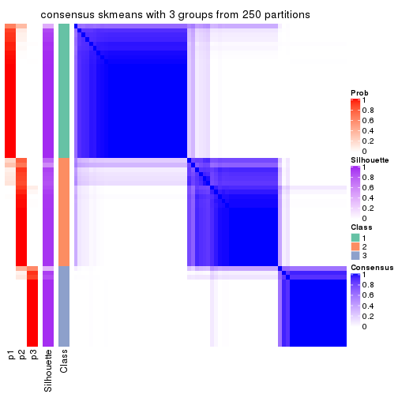
consensus_heatmap(res, k = 4)
consensus_heatmap(res, k = 5)
consensus_heatmap(res, k = 6)
Heatmaps for the membership of samples in all partitions to see how consistent they are:
membership_heatmap(res, k = 2)
membership_heatmap(res, k = 3)
membership_heatmap(res, k = 4)
membership_heatmap(res, k = 5)
membership_heatmap(res, k = 6)
As soon as we have had the classes for columns, we can look for signatures which are significantly different between classes which can be candidate marks for certain classes. Following are the heatmaps for signatures.
Signature heatmaps where rows are scaled:
get_signatures(res, k = 2)
get_signatures(res, k = 3)
get_signatures(res, k = 4)
get_signatures(res, k = 5)
get_signatures(res, k = 6)
Signature heatmaps where rows are not scaled:
get_signatures(res, k = 2, scale_rows = FALSE)
get_signatures(res, k = 3, scale_rows = FALSE)
get_signatures(res, k = 4, scale_rows = FALSE)
get_signatures(res, k = 5, scale_rows = FALSE)
get_signatures(res, k = 6, scale_rows = FALSE)
Compare the overlap of signatures from different k:
compare_signatures(res)
get_signature() returns a data frame invisibly. TO get the list of signatures, the function
call should be assigned to a variable explicitly. In following code, if plot argument is set
to FALSE, no heatmap is plotted while only the differential analysis is performed.
# code only for demonstration
tb = get_signature(res, k = ..., plot = FALSE)
An example of the output of tb is:
#> which_row fdr mean_1 mean_2 scaled_mean_1 scaled_mean_2 km
#> 1 38 0.042760348 8.373488 9.131774 -0.5533452 0.5164555 1
#> 2 40 0.018707592 7.106213 8.469186 -0.6173731 0.5762149 1
#> 3 55 0.019134737 10.221463 11.207825 -0.6159697 0.5749050 1
#> 4 59 0.006059896 5.921854 7.869574 -0.6899429 0.6439467 1
#> 5 60 0.018055526 8.928898 10.211722 -0.6204761 0.5791110 1
#> 6 98 0.009384629 15.714769 14.887706 0.6635654 -0.6193277 2
...
The columns in tb are:
which_row: row indices corresponding to the input matrix.fdr: FDR for the differential test. mean_x: The mean value in group x.scaled_mean_x: The mean value in group x after rows are scaled.km: Row groups if k-means clustering is applied to rows.UMAP plot which shows how samples are separated.
dimension_reduction(res, k = 2, method = "UMAP")
dimension_reduction(res, k = 3, method = "UMAP")
dimension_reduction(res, k = 4, method = "UMAP")
dimension_reduction(res, k = 5, method = "UMAP")

dimension_reduction(res, k = 6, method = "UMAP")
Following heatmap shows how subgroups are split when increasing k:
collect_classes(res)
If matrix rows can be associated to genes, consider to use GO_Enrichment(res,
...) to perform function enrichment for the signature genes.
The object with results only for a single top-value method and a single partition method can be extracted as:
res = res_list["CV", "pam"]
# you can also extract it by
# res = res_list["CV:pam"]
A summary of res and all the functions that can be applied to it:
res
#> A 'ConsensusPartition' object with k = 2, 3, 4, 5, 6.
#> On a matrix with 8381 rows and 72 columns.
#> Top rows (838, 1676, 2514, 3352, 4190) are extracted by 'CV' method.
#> Subgroups are detected by 'pam' method.
#> Performed in total 1250 partitions by row resampling.
#> Best k for subgroups seems to be 3.
#>
#> Following methods can be applied to this 'ConsensusPartition' object:
#> [1] "cola_report" "collect_classes" "collect_plots"
#> [4] "collect_stats" "colnames" "compare_signatures"
#> [7] "consensus_heatmap" "dimension_reduction" "functional_enrichment"
#> [10] "get_anno_col" "get_anno" "get_classes"
#> [13] "get_consensus" "get_matrix" "get_membership"
#> [16] "get_param" "get_signatures" "get_stats"
#> [19] "is_best_k" "is_stable_k" "membership_heatmap"
#> [22] "ncol" "nrow" "plot_ecdf"
#> [25] "rownames" "select_partition_number" "show"
#> [28] "suggest_best_k" "test_to_known_factors"
collect_plots() function collects all the plots made from res for all k (number of partitions)
into one single page to provide an easy and fast comparison between different k.
collect_plots(res)
The plots are:
k and the heatmap of
predicted classes for each k.k.k.k.All the plots in panels can be made by individual functions and they are plotted later in this section.
select_partition_number() produces several plots showing different
statistics for choosing “optimized” k. There are following statistics:
k;k, the area increased is defined as \(A_k - A_{k-1}\).The detailed explanations of these statistics can be found in the cola vignette.
Generally speaking, lower PAC score, higher mean silhouette score or higher
concordance corresponds to better partition. Rand index and Jaccard index
measure how similar the current partition is compared to partition with k-1.
If they are too similar, we won't accept k is better than k-1.
select_partition_number(res)
The numeric values for all these statistics can be obtained by get_stats().
get_stats(res)
#> k 1-PAC mean_silhouette concordance area_increased Rand Jaccard
#> 2 2 0.454 0.760 0.887 0.3028 0.778 0.778
#> 3 3 0.423 0.680 0.833 0.7502 0.621 0.523
#> 4 4 0.692 0.811 0.917 0.2865 0.844 0.654
#> 5 5 0.705 0.803 0.907 0.0124 1.000 1.000
#> 6 6 0.672 0.728 0.901 0.0115 0.995 0.984
suggest_best_k() suggests the best \(k\) based on these statistics. The rules are as follows:
NA.suggest_best_k(res)
#> [1] 3
Following shows the table of the partitions (You need to click the show/hide
code output link to see it). The membership matrix (columns with name p*)
is inferred by
clue::cl_consensus()
function with the SE method. Basically the value in the membership matrix
represents the probability to belong to a certain group. The finall class
label for an item is determined with the group with highest probability it
belongs to.
In get_classes() function, the entropy is calculated from the membership
matrix and the silhouette score is calculated from the consensus matrix.
cbind(get_classes(res, k = 2), get_membership(res, k = 2))
#> class entropy silhouette p1 p2
#> SRR2558111 1 0.0000 0.864 1.000 0.000
#> SRR2558177 1 0.1843 0.856 0.972 0.028
#> SRR2558176 1 0.0938 0.863 0.988 0.012
#> SRR2558175 1 0.8443 0.533 0.728 0.272
#> SRR2558174 1 0.0000 0.864 1.000 0.000
#> SRR2558173 1 0.0000 0.864 1.000 0.000
#> SRR2558172 1 0.0376 0.863 0.996 0.004
#> SRR2558171 1 0.0938 0.863 0.988 0.012
#> SRR2558170 1 0.8909 0.581 0.692 0.308
#> SRR2558169 1 0.8909 0.581 0.692 0.308
#> SRR2558168 2 0.9580 0.227 0.380 0.620
#> SRR2558167 1 0.8909 0.581 0.692 0.308
#> SRR2558166 1 0.8909 0.581 0.692 0.308
#> SRR2558165 1 0.0938 0.863 0.988 0.012
#> SRR2558164 1 0.8443 0.616 0.728 0.272
#> SRR2558163 1 0.8763 0.583 0.704 0.296
#> SRR2558162 1 0.0938 0.863 0.988 0.012
#> SRR2558161 1 0.8909 0.581 0.692 0.308
#> SRR2558160 1 0.0672 0.863 0.992 0.008
#> SRR2558159 1 0.8861 0.577 0.696 0.304
#> SRR2558158 1 0.8813 0.592 0.700 0.300
#> SRR2558157 1 0.8081 0.643 0.752 0.248
#> SRR2558156 1 0.0938 0.863 0.988 0.012
#> SRR2558155 1 0.0938 0.863 0.988 0.012
#> SRR2558154 1 0.8207 0.644 0.744 0.256
#> SRR2558153 1 0.0938 0.863 0.988 0.012
#> SRR2558152 1 0.4022 0.812 0.920 0.080
#> SRR2558151 1 0.4161 0.809 0.916 0.084
#> SRR2558150 2 0.7745 0.795 0.228 0.772
#> SRR2558149 1 0.7453 0.652 0.788 0.212
#> SRR2558148 1 0.6148 0.738 0.848 0.152
#> SRR2558147 2 0.6623 0.804 0.172 0.828
#> SRR2558146 1 0.0000 0.864 1.000 0.000
#> SRR2558145 1 0.2423 0.842 0.960 0.040
#> SRR2558144 1 0.0000 0.864 1.000 0.000
#> SRR2558143 1 0.0000 0.864 1.000 0.000
#> SRR2558142 1 0.0000 0.864 1.000 0.000
#> SRR2558141 1 0.0938 0.863 0.988 0.012
#> SRR2558140 1 0.0938 0.863 0.988 0.012
#> SRR2558139 1 0.8608 0.567 0.716 0.284
#> SRR2558138 1 0.7219 0.671 0.800 0.200
#> SRR2558137 1 0.9580 0.476 0.620 0.380
#> SRR2558136 1 0.4690 0.795 0.900 0.100
#> SRR2558182 2 0.0938 0.753 0.012 0.988
#> SRR2558181 2 0.2236 0.769 0.036 0.964
#> SRR2558180 1 0.0938 0.863 0.988 0.012
#> SRR2558179 1 0.0672 0.863 0.992 0.008
#> SRR2558178 1 0.0938 0.863 0.988 0.012
#> SRR2558134 2 0.8207 0.769 0.256 0.744
#> SRR2558135 1 0.0000 0.864 1.000 0.000
#> SRR2558133 1 0.0000 0.864 1.000 0.000
#> SRR2558132 1 0.9000 0.478 0.684 0.316
#> SRR2558131 1 0.0000 0.864 1.000 0.000
#> SRR2558129 1 0.0000 0.864 1.000 0.000
#> SRR2558127 1 0.0938 0.863 0.988 0.012
#> SRR2558126 1 0.3114 0.831 0.944 0.056
#> SRR2558128 2 0.3431 0.756 0.064 0.936
#> SRR2558125 1 0.0938 0.863 0.988 0.012
#> SRR2558130 1 0.0000 0.864 1.000 0.000
#> SRR2558124 1 0.0938 0.863 0.988 0.012
#> SRR2558123 1 0.0938 0.863 0.988 0.012
#> SRR2558121 1 0.4815 0.791 0.896 0.104
#> SRR2558122 1 0.0000 0.864 1.000 0.000
#> SRR2558120 2 0.7815 0.794 0.232 0.768
#> SRR2558119 1 0.0000 0.864 1.000 0.000
#> SRR2558117 1 0.9998 0.185 0.508 0.492
#> SRR2558118 1 0.0000 0.864 1.000 0.000
#> SRR2558115 2 0.8144 0.774 0.252 0.748
#> SRR2558116 1 0.0000 0.864 1.000 0.000
#> SRR2558114 1 0.6048 0.745 0.852 0.148
#> SRR2558113 1 0.0000 0.864 1.000 0.000
#> SRR2558112 1 0.5946 0.748 0.856 0.144
cbind(get_classes(res, k = 3), get_membership(res, k = 3))
#> class entropy silhouette p1 p2 p3
#> SRR2558111 1 0.0000 0.84556 1.000 0.000 0.000
#> SRR2558177 2 0.5968 0.73685 0.364 0.636 0.000
#> SRR2558176 1 0.6267 -0.42740 0.548 0.452 0.000
#> SRR2558175 1 0.4399 0.64640 0.812 0.000 0.188
#> SRR2558174 1 0.0000 0.84556 1.000 0.000 0.000
#> SRR2558173 1 0.3340 0.69119 0.880 0.120 0.000
#> SRR2558172 1 0.0892 0.82771 0.980 0.020 0.000
#> SRR2558171 1 0.3192 0.70376 0.888 0.112 0.000
#> SRR2558170 2 0.6126 0.02732 0.400 0.600 0.000
#> SRR2558169 2 0.3551 0.35017 0.132 0.868 0.000
#> SRR2558168 1 0.9616 0.00781 0.420 0.376 0.204
#> SRR2558167 2 0.0000 0.38833 0.000 1.000 0.000
#> SRR2558166 2 0.0000 0.38833 0.000 1.000 0.000
#> SRR2558165 2 0.6026 0.74018 0.376 0.624 0.000
#> SRR2558164 1 0.5988 0.42661 0.632 0.368 0.000
#> SRR2558163 2 0.6079 0.03975 0.388 0.612 0.000
#> SRR2558162 2 0.6062 0.73193 0.384 0.616 0.000
#> SRR2558161 2 0.0237 0.39486 0.004 0.996 0.000
#> SRR2558160 2 0.6307 0.55929 0.488 0.512 0.000
#> SRR2558159 1 0.6026 0.41624 0.624 0.376 0.000
#> SRR2558158 2 0.0592 0.40622 0.012 0.988 0.000
#> SRR2558157 1 0.4605 0.62478 0.796 0.204 0.000
#> SRR2558156 2 0.6026 0.74018 0.376 0.624 0.000
#> SRR2558155 2 0.6204 0.67998 0.424 0.576 0.000
#> SRR2558154 2 0.4235 0.59943 0.176 0.824 0.000
#> SRR2558153 2 0.6302 0.57632 0.480 0.520 0.000
#> SRR2558152 1 0.0000 0.84556 1.000 0.000 0.000
#> SRR2558151 1 0.0000 0.84556 1.000 0.000 0.000
#> SRR2558150 3 0.0000 0.85934 0.000 0.000 1.000
#> SRR2558149 1 0.3412 0.73257 0.876 0.000 0.124
#> SRR2558148 1 0.0000 0.84556 1.000 0.000 0.000
#> SRR2558147 3 0.7202 0.75927 0.124 0.160 0.716
#> SRR2558146 1 0.0000 0.84556 1.000 0.000 0.000
#> SRR2558145 1 0.0000 0.84556 1.000 0.000 0.000
#> SRR2558144 1 0.0000 0.84556 1.000 0.000 0.000
#> SRR2558143 1 0.0000 0.84556 1.000 0.000 0.000
#> SRR2558142 1 0.0000 0.84556 1.000 0.000 0.000
#> SRR2558141 2 0.6026 0.74018 0.376 0.624 0.000
#> SRR2558140 2 0.6026 0.74018 0.376 0.624 0.000
#> SRR2558139 1 0.5334 0.67839 0.820 0.120 0.060
#> SRR2558138 1 0.2356 0.78874 0.928 0.000 0.072
#> SRR2558137 1 0.6026 0.41624 0.624 0.376 0.000
#> SRR2558136 1 0.0000 0.84556 1.000 0.000 0.000
#> SRR2558182 3 0.0000 0.85934 0.000 0.000 1.000
#> SRR2558181 3 0.0000 0.85934 0.000 0.000 1.000
#> SRR2558180 2 0.6026 0.74018 0.376 0.624 0.000
#> SRR2558179 1 0.4654 0.49668 0.792 0.208 0.000
#> SRR2558178 2 0.6026 0.74018 0.376 0.624 0.000
#> SRR2558134 3 0.1643 0.85595 0.044 0.000 0.956
#> SRR2558135 1 0.0000 0.84556 1.000 0.000 0.000
#> SRR2558133 1 0.0000 0.84556 1.000 0.000 0.000
#> SRR2558132 1 0.4575 0.65859 0.812 0.184 0.004
#> SRR2558131 1 0.0000 0.84556 1.000 0.000 0.000
#> SRR2558129 1 0.0000 0.84556 1.000 0.000 0.000
#> SRR2558127 2 0.6026 0.74018 0.376 0.624 0.000
#> SRR2558126 1 0.0000 0.84556 1.000 0.000 0.000
#> SRR2558128 3 0.6247 0.66713 0.004 0.376 0.620
#> SRR2558125 2 0.6026 0.74018 0.376 0.624 0.000
#> SRR2558130 1 0.0000 0.84556 1.000 0.000 0.000
#> SRR2558124 2 0.6026 0.74018 0.376 0.624 0.000
#> SRR2558123 2 0.6026 0.74018 0.376 0.624 0.000
#> SRR2558121 1 0.0000 0.84556 1.000 0.000 0.000
#> SRR2558122 1 0.0000 0.84556 1.000 0.000 0.000
#> SRR2558120 3 0.5028 0.78603 0.132 0.040 0.828
#> SRR2558119 1 0.0000 0.84556 1.000 0.000 0.000
#> SRR2558117 1 0.6026 0.41624 0.624 0.376 0.000
#> SRR2558118 1 0.0000 0.84556 1.000 0.000 0.000
#> SRR2558115 3 0.5357 0.83280 0.064 0.116 0.820
#> SRR2558116 1 0.0000 0.84556 1.000 0.000 0.000
#> SRR2558114 1 0.1289 0.82169 0.968 0.032 0.000
#> SRR2558113 1 0.0000 0.84556 1.000 0.000 0.000
#> SRR2558112 1 0.0000 0.84556 1.000 0.000 0.000
cbind(get_classes(res, k = 4), get_membership(res, k = 4))
#> class entropy silhouette p1 p2 p3 p4
#> SRR2558111 1 0.0000 0.903 1.000 0.000 0.000 0.000
#> SRR2558177 2 0.0000 0.900 0.000 1.000 0.000 0.000
#> SRR2558176 2 0.4790 0.390 0.380 0.620 0.000 0.000
#> SRR2558175 1 0.3486 0.720 0.812 0.000 0.188 0.000
#> SRR2558174 1 0.0000 0.903 1.000 0.000 0.000 0.000
#> SRR2558173 1 0.3837 0.728 0.776 0.224 0.000 0.000
#> SRR2558172 1 0.4008 0.704 0.756 0.244 0.000 0.000
#> SRR2558171 1 0.4855 0.387 0.600 0.400 0.000 0.000
#> SRR2558170 4 0.0000 0.907 0.000 0.000 0.000 1.000
#> SRR2558169 4 0.0000 0.907 0.000 0.000 0.000 1.000
#> SRR2558168 4 0.0000 0.907 0.000 0.000 0.000 1.000
#> SRR2558167 2 0.4877 0.250 0.000 0.592 0.000 0.408
#> SRR2558166 4 0.0000 0.907 0.000 0.000 0.000 1.000
#> SRR2558165 2 0.0000 0.900 0.000 1.000 0.000 0.000
#> SRR2558164 4 0.1211 0.862 0.040 0.000 0.000 0.960
#> SRR2558163 4 0.0000 0.907 0.000 0.000 0.000 1.000
#> SRR2558162 2 0.1867 0.852 0.072 0.928 0.000 0.000
#> SRR2558161 4 0.0817 0.887 0.000 0.024 0.000 0.976
#> SRR2558160 2 0.3219 0.740 0.164 0.836 0.000 0.000
#> SRR2558159 4 0.0000 0.907 0.000 0.000 0.000 1.000
#> SRR2558158 4 0.3801 0.641 0.000 0.220 0.000 0.780
#> SRR2558157 4 0.6876 0.309 0.280 0.144 0.000 0.576
#> SRR2558156 2 0.0000 0.900 0.000 1.000 0.000 0.000
#> SRR2558155 2 0.1389 0.871 0.048 0.952 0.000 0.000
#> SRR2558154 2 0.0188 0.898 0.000 0.996 0.000 0.004
#> SRR2558153 2 0.2589 0.802 0.116 0.884 0.000 0.000
#> SRR2558152 1 0.0188 0.903 0.996 0.004 0.000 0.000
#> SRR2558151 1 0.2760 0.827 0.872 0.128 0.000 0.000
#> SRR2558150 3 0.0000 0.774 0.000 0.000 1.000 0.000
#> SRR2558149 1 0.2704 0.804 0.876 0.000 0.124 0.000
#> SRR2558148 1 0.0000 0.903 1.000 0.000 0.000 0.000
#> SRR2558147 3 0.6448 0.637 0.252 0.000 0.628 0.120
#> SRR2558146 1 0.0592 0.899 0.984 0.016 0.000 0.000
#> SRR2558145 1 0.0188 0.903 0.996 0.004 0.000 0.000
#> SRR2558144 1 0.2760 0.827 0.872 0.128 0.000 0.000
#> SRR2558143 1 0.0469 0.901 0.988 0.012 0.000 0.000
#> SRR2558142 1 0.3123 0.802 0.844 0.156 0.000 0.000
#> SRR2558141 2 0.0000 0.900 0.000 1.000 0.000 0.000
#> SRR2558140 2 0.0000 0.900 0.000 1.000 0.000 0.000
#> SRR2558139 1 0.4624 0.463 0.660 0.000 0.000 0.340
#> SRR2558138 1 0.2965 0.850 0.892 0.036 0.072 0.000
#> SRR2558137 4 0.0000 0.907 0.000 0.000 0.000 1.000
#> SRR2558136 1 0.0000 0.903 1.000 0.000 0.000 0.000
#> SRR2558182 3 0.0000 0.774 0.000 0.000 1.000 0.000
#> SRR2558181 3 0.0000 0.774 0.000 0.000 1.000 0.000
#> SRR2558180 2 0.0000 0.900 0.000 1.000 0.000 0.000
#> SRR2558179 1 0.4193 0.630 0.732 0.268 0.000 0.000
#> SRR2558178 2 0.0000 0.900 0.000 1.000 0.000 0.000
#> SRR2558134 3 0.1792 0.782 0.068 0.000 0.932 0.000
#> SRR2558135 1 0.0592 0.899 0.984 0.016 0.000 0.000
#> SRR2558133 1 0.0000 0.903 1.000 0.000 0.000 0.000
#> SRR2558132 1 0.0657 0.896 0.984 0.000 0.004 0.012
#> SRR2558131 1 0.0000 0.903 1.000 0.000 0.000 0.000
#> SRR2558129 1 0.3528 0.763 0.808 0.192 0.000 0.000
#> SRR2558127 2 0.0000 0.900 0.000 1.000 0.000 0.000
#> SRR2558126 1 0.0000 0.903 1.000 0.000 0.000 0.000
#> SRR2558128 3 0.4898 0.292 0.000 0.000 0.584 0.416
#> SRR2558125 2 0.1867 0.843 0.072 0.928 0.000 0.000
#> SRR2558130 1 0.0000 0.903 1.000 0.000 0.000 0.000
#> SRR2558124 2 0.0000 0.900 0.000 1.000 0.000 0.000
#> SRR2558123 2 0.0000 0.900 0.000 1.000 0.000 0.000
#> SRR2558121 1 0.0000 0.903 1.000 0.000 0.000 0.000
#> SRR2558122 1 0.0000 0.903 1.000 0.000 0.000 0.000
#> SRR2558120 3 0.4661 0.689 0.256 0.000 0.728 0.016
#> SRR2558119 1 0.0000 0.903 1.000 0.000 0.000 0.000
#> SRR2558117 4 0.0000 0.907 0.000 0.000 0.000 1.000
#> SRR2558118 1 0.1637 0.876 0.940 0.060 0.000 0.000
#> SRR2558115 3 0.4054 0.744 0.188 0.000 0.796 0.016
#> SRR2558116 1 0.0000 0.903 1.000 0.000 0.000 0.000
#> SRR2558114 1 0.0000 0.903 1.000 0.000 0.000 0.000
#> SRR2558113 1 0.0000 0.903 1.000 0.000 0.000 0.000
#> SRR2558112 1 0.0469 0.901 0.988 0.012 0.000 0.000
cbind(get_classes(res, k = 5), get_membership(res, k = 5))
#> class entropy silhouette p1 p2 p3 p4 p5
#> SRR2558111 1 0.0000 0.895 1.000 0.000 0.000 0.000 NA
#> SRR2558177 2 0.0000 0.898 0.000 1.000 0.000 0.000 NA
#> SRR2558176 2 0.4126 0.382 0.380 0.620 0.000 0.000 NA
#> SRR2558175 1 0.3003 0.732 0.812 0.000 0.188 0.000 NA
#> SRR2558174 1 0.0000 0.895 1.000 0.000 0.000 0.000 NA
#> SRR2558173 1 0.3305 0.733 0.776 0.224 0.000 0.000 NA
#> SRR2558172 1 0.3452 0.709 0.756 0.244 0.000 0.000 NA
#> SRR2558171 1 0.4182 0.393 0.600 0.400 0.000 0.000 NA
#> SRR2558170 4 0.0000 0.905 0.000 0.000 0.000 1.000 NA
#> SRR2558169 4 0.0000 0.905 0.000 0.000 0.000 1.000 NA
#> SRR2558168 4 0.0000 0.905 0.000 0.000 0.000 1.000 NA
#> SRR2558167 2 0.4201 0.250 0.000 0.592 0.000 0.408 NA
#> SRR2558166 4 0.0000 0.905 0.000 0.000 0.000 1.000 NA
#> SRR2558165 2 0.0000 0.898 0.000 1.000 0.000 0.000 NA
#> SRR2558164 4 0.1043 0.859 0.040 0.000 0.000 0.960 NA
#> SRR2558163 4 0.0000 0.905 0.000 0.000 0.000 1.000 NA
#> SRR2558162 2 0.1608 0.849 0.072 0.928 0.000 0.000 NA
#> SRR2558161 4 0.0703 0.884 0.000 0.024 0.000 0.976 NA
#> SRR2558160 2 0.2773 0.737 0.164 0.836 0.000 0.000 NA
#> SRR2558159 4 0.0000 0.905 0.000 0.000 0.000 1.000 NA
#> SRR2558158 4 0.3274 0.629 0.000 0.220 0.000 0.780 NA
#> SRR2558157 4 0.5923 0.297 0.280 0.144 0.000 0.576 NA
#> SRR2558156 2 0.0000 0.898 0.000 1.000 0.000 0.000 NA
#> SRR2558155 2 0.1197 0.869 0.048 0.952 0.000 0.000 NA
#> SRR2558154 2 0.0162 0.896 0.000 0.996 0.000 0.004 NA
#> SRR2558153 2 0.2230 0.799 0.116 0.884 0.000 0.000 NA
#> SRR2558152 1 0.0162 0.894 0.996 0.004 0.000 0.000 NA
#> SRR2558151 1 0.5136 0.673 0.692 0.128 0.000 0.000 NA
#> SRR2558150 3 0.0000 0.783 0.000 0.000 1.000 0.000 NA
#> SRR2558149 1 0.2329 0.806 0.876 0.000 0.124 0.000 NA
#> SRR2558148 1 0.1270 0.873 0.948 0.000 0.000 0.000 NA
#> SRR2558147 3 0.8045 0.526 0.208 0.000 0.400 0.112 NA
#> SRR2558146 1 0.0510 0.892 0.984 0.016 0.000 0.000 NA
#> SRR2558145 1 0.0162 0.894 0.996 0.004 0.000 0.000 NA
#> SRR2558144 1 0.2377 0.822 0.872 0.128 0.000 0.000 NA
#> SRR2558143 1 0.0404 0.893 0.988 0.012 0.000 0.000 NA
#> SRR2558142 1 0.2690 0.799 0.844 0.156 0.000 0.000 NA
#> SRR2558141 2 0.0000 0.898 0.000 1.000 0.000 0.000 NA
#> SRR2558140 2 0.0000 0.898 0.000 1.000 0.000 0.000 NA
#> SRR2558139 1 0.4779 0.437 0.628 0.000 0.000 0.340 NA
#> SRR2558138 1 0.4605 0.747 0.780 0.036 0.060 0.000 NA
#> SRR2558137 4 0.0000 0.905 0.000 0.000 0.000 1.000 NA
#> SRR2558136 1 0.0000 0.895 1.000 0.000 0.000 0.000 NA
#> SRR2558182 3 0.0000 0.783 0.000 0.000 1.000 0.000 NA
#> SRR2558181 3 0.0000 0.783 0.000 0.000 1.000 0.000 NA
#> SRR2558180 2 0.0000 0.898 0.000 1.000 0.000 0.000 NA
#> SRR2558179 1 0.3612 0.642 0.732 0.268 0.000 0.000 NA
#> SRR2558178 2 0.0000 0.898 0.000 1.000 0.000 0.000 NA
#> SRR2558134 3 0.1544 0.782 0.068 0.000 0.932 0.000 NA
#> SRR2558135 1 0.0510 0.892 0.984 0.016 0.000 0.000 NA
#> SRR2558133 1 0.0000 0.895 1.000 0.000 0.000 0.000 NA
#> SRR2558132 1 0.0727 0.888 0.980 0.000 0.004 0.012 NA
#> SRR2558131 1 0.0000 0.895 1.000 0.000 0.000 0.000 NA
#> SRR2558129 1 0.3039 0.764 0.808 0.192 0.000 0.000 NA
#> SRR2558127 2 0.0000 0.898 0.000 1.000 0.000 0.000 NA
#> SRR2558126 1 0.0000 0.895 1.000 0.000 0.000 0.000 NA
#> SRR2558128 3 0.4219 0.309 0.000 0.000 0.584 0.416 NA
#> SRR2558125 2 0.1608 0.841 0.072 0.928 0.000 0.000 NA
#> SRR2558130 1 0.0000 0.895 1.000 0.000 0.000 0.000 NA
#> SRR2558124 2 0.0000 0.898 0.000 1.000 0.000 0.000 NA
#> SRR2558123 2 0.0000 0.898 0.000 1.000 0.000 0.000 NA
#> SRR2558121 1 0.0000 0.895 1.000 0.000 0.000 0.000 NA
#> SRR2558122 1 0.0000 0.895 1.000 0.000 0.000 0.000 NA
#> SRR2558120 3 0.5615 0.704 0.096 0.000 0.584 0.000 NA
#> SRR2558119 1 0.0000 0.895 1.000 0.000 0.000 0.000 NA
#> SRR2558117 4 0.0000 0.905 0.000 0.000 0.000 1.000 NA
#> SRR2558118 1 0.1410 0.870 0.940 0.060 0.000 0.000 NA
#> SRR2558115 3 0.3907 0.719 0.180 0.000 0.788 0.016 NA
#> SRR2558116 1 0.0000 0.895 1.000 0.000 0.000 0.000 NA
#> SRR2558114 1 0.0000 0.895 1.000 0.000 0.000 0.000 NA
#> SRR2558113 1 0.0000 0.895 1.000 0.000 0.000 0.000 NA
#> SRR2558112 1 0.0404 0.893 0.988 0.012 0.000 0.000 NA
cbind(get_classes(res, k = 6), get_membership(res, k = 6))
#> class entropy silhouette p1 p2 p3 p4 p5 p6
#> SRR2558111 1 0.0000 0.87291 1.000 0.000 0.000 0.000 0.000 0.000
#> SRR2558177 2 0.0000 0.89052 0.000 1.000 0.000 0.000 0.000 0.000
#> SRR2558176 2 0.3706 0.31385 0.380 0.620 0.000 0.000 0.000 0.000
#> SRR2558175 1 0.3136 0.67857 0.796 0.000 0.188 0.000 0.016 0.000
#> SRR2558174 1 0.0000 0.87291 1.000 0.000 0.000 0.000 0.000 0.000
#> SRR2558173 1 0.2969 0.69443 0.776 0.224 0.000 0.000 0.000 0.000
#> SRR2558172 1 0.3101 0.66655 0.756 0.244 0.000 0.000 0.000 0.000
#> SRR2558171 1 0.3756 0.38374 0.600 0.400 0.000 0.000 0.000 0.000
#> SRR2558170 4 0.0000 0.89678 0.000 0.000 0.000 1.000 0.000 0.000
#> SRR2558169 4 0.0000 0.89678 0.000 0.000 0.000 1.000 0.000 0.000
#> SRR2558168 4 0.0000 0.89678 0.000 0.000 0.000 1.000 0.000 0.000
#> SRR2558167 2 0.3774 0.25087 0.000 0.592 0.000 0.408 0.000 0.000
#> SRR2558166 4 0.0000 0.89678 0.000 0.000 0.000 1.000 0.000 0.000
#> SRR2558165 2 0.0000 0.89052 0.000 1.000 0.000 0.000 0.000 0.000
#> SRR2558164 4 0.0937 0.84581 0.040 0.000 0.000 0.960 0.000 0.000
#> SRR2558163 4 0.0000 0.89678 0.000 0.000 0.000 1.000 0.000 0.000
#> SRR2558162 2 0.1444 0.83496 0.072 0.928 0.000 0.000 0.000 0.000
#> SRR2558161 4 0.0632 0.87400 0.000 0.024 0.000 0.976 0.000 0.000
#> SRR2558160 2 0.2491 0.70737 0.164 0.836 0.000 0.000 0.000 0.000
#> SRR2558159 4 0.0000 0.89678 0.000 0.000 0.000 1.000 0.000 0.000
#> SRR2558158 4 0.2941 0.58478 0.000 0.220 0.000 0.780 0.000 0.000
#> SRR2558157 4 0.5320 0.15566 0.280 0.144 0.000 0.576 0.000 0.000
#> SRR2558156 2 0.0000 0.89052 0.000 1.000 0.000 0.000 0.000 0.000
#> SRR2558155 2 0.1075 0.85752 0.048 0.952 0.000 0.000 0.000 0.000
#> SRR2558154 2 0.0146 0.88795 0.000 0.996 0.000 0.004 0.000 0.000
#> SRR2558153 2 0.2003 0.77859 0.116 0.884 0.000 0.000 0.000 0.000
#> SRR2558152 1 0.0146 0.87258 0.996 0.004 0.000 0.000 0.000 0.000
#> SRR2558151 1 0.6488 0.36521 0.560 0.128 0.000 0.000 0.184 0.128
#> SRR2558150 3 0.0000 0.53321 0.000 0.000 1.000 0.000 0.000 0.000
#> SRR2558149 1 0.2092 0.77883 0.876 0.000 0.124 0.000 0.000 0.000
#> SRR2558148 1 0.2300 0.78021 0.856 0.000 0.000 0.000 0.144 0.000
#> SRR2558147 6 0.6058 0.00000 0.112 0.000 0.272 0.056 0.000 0.560
#> SRR2558146 1 0.0458 0.86986 0.984 0.016 0.000 0.000 0.000 0.000
#> SRR2558145 1 0.0146 0.87261 0.996 0.004 0.000 0.000 0.000 0.000
#> SRR2558144 1 0.2135 0.79333 0.872 0.128 0.000 0.000 0.000 0.000
#> SRR2558143 1 0.0363 0.87098 0.988 0.012 0.000 0.000 0.000 0.000
#> SRR2558142 1 0.2416 0.76852 0.844 0.156 0.000 0.000 0.000 0.000
#> SRR2558141 2 0.0000 0.89052 0.000 1.000 0.000 0.000 0.000 0.000
#> SRR2558140 2 0.0000 0.89052 0.000 1.000 0.000 0.000 0.000 0.000
#> SRR2558139 1 0.4995 0.28439 0.596 0.000 0.000 0.340 0.036 0.028
#> SRR2558138 1 0.5448 0.58597 0.700 0.036 0.036 0.000 0.084 0.144
#> SRR2558137 4 0.0000 0.89678 0.000 0.000 0.000 1.000 0.000 0.000
#> SRR2558136 1 0.0000 0.87291 1.000 0.000 0.000 0.000 0.000 0.000
#> SRR2558182 3 0.0000 0.53321 0.000 0.000 1.000 0.000 0.000 0.000
#> SRR2558181 3 0.0000 0.53321 0.000 0.000 1.000 0.000 0.000 0.000
#> SRR2558180 2 0.0000 0.89052 0.000 1.000 0.000 0.000 0.000 0.000
#> SRR2558179 1 0.3244 0.59279 0.732 0.268 0.000 0.000 0.000 0.000
#> SRR2558178 2 0.0000 0.89052 0.000 1.000 0.000 0.000 0.000 0.000
#> SRR2558134 3 0.1387 0.41782 0.068 0.000 0.932 0.000 0.000 0.000
#> SRR2558135 1 0.0458 0.86943 0.984 0.016 0.000 0.000 0.000 0.000
#> SRR2558133 1 0.0000 0.87291 1.000 0.000 0.000 0.000 0.000 0.000
#> SRR2558132 1 0.0870 0.86261 0.972 0.000 0.004 0.012 0.000 0.012
#> SRR2558131 1 0.0000 0.87291 1.000 0.000 0.000 0.000 0.000 0.000
#> SRR2558129 1 0.2730 0.72984 0.808 0.192 0.000 0.000 0.000 0.000
#> SRR2558127 2 0.0000 0.89052 0.000 1.000 0.000 0.000 0.000 0.000
#> SRR2558126 1 0.0000 0.87291 1.000 0.000 0.000 0.000 0.000 0.000
#> SRR2558128 3 0.3789 0.00495 0.000 0.000 0.584 0.416 0.000 0.000
#> SRR2558125 2 0.1444 0.82697 0.072 0.928 0.000 0.000 0.000 0.000
#> SRR2558130 1 0.0000 0.87291 1.000 0.000 0.000 0.000 0.000 0.000
#> SRR2558124 2 0.0000 0.89052 0.000 1.000 0.000 0.000 0.000 0.000
#> SRR2558123 2 0.0000 0.89052 0.000 1.000 0.000 0.000 0.000 0.000
#> SRR2558121 1 0.0000 0.87291 1.000 0.000 0.000 0.000 0.000 0.000
#> SRR2558122 1 0.0000 0.87291 1.000 0.000 0.000 0.000 0.000 0.000
#> SRR2558120 5 0.4791 0.00000 0.052 0.000 0.436 0.000 0.512 0.000
#> SRR2558119 1 0.0000 0.87291 1.000 0.000 0.000 0.000 0.000 0.000
#> SRR2558117 4 0.0000 0.89678 0.000 0.000 0.000 1.000 0.000 0.000
#> SRR2558118 1 0.1267 0.84564 0.940 0.060 0.000 0.000 0.000 0.000
#> SRR2558115 3 0.5260 0.02659 0.128 0.000 0.696 0.016 0.024 0.136
#> SRR2558116 1 0.0000 0.87291 1.000 0.000 0.000 0.000 0.000 0.000
#> SRR2558114 1 0.0000 0.87291 1.000 0.000 0.000 0.000 0.000 0.000
#> SRR2558113 1 0.0000 0.87291 1.000 0.000 0.000 0.000 0.000 0.000
#> SRR2558112 1 0.0363 0.87098 0.988 0.012 0.000 0.000 0.000 0.000
Heatmaps for the consensus matrix. It visualizes the probability of two samples to be in a same group.
consensus_heatmap(res, k = 2)
consensus_heatmap(res, k = 3)
consensus_heatmap(res, k = 4)
consensus_heatmap(res, k = 5)
consensus_heatmap(res, k = 6)
Heatmaps for the membership of samples in all partitions to see how consistent they are:
membership_heatmap(res, k = 2)
membership_heatmap(res, k = 3)
membership_heatmap(res, k = 4)
membership_heatmap(res, k = 5)
membership_heatmap(res, k = 6)
As soon as we have had the classes for columns, we can look for signatures which are significantly different between classes which can be candidate marks for certain classes. Following are the heatmaps for signatures.
Signature heatmaps where rows are scaled:
get_signatures(res, k = 2)
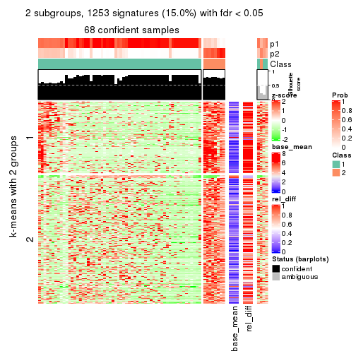
get_signatures(res, k = 3)
get_signatures(res, k = 4)
get_signatures(res, k = 5)
get_signatures(res, k = 6)
Signature heatmaps where rows are not scaled:
get_signatures(res, k = 2, scale_rows = FALSE)
get_signatures(res, k = 3, scale_rows = FALSE)
get_signatures(res, k = 4, scale_rows = FALSE)
get_signatures(res, k = 5, scale_rows = FALSE)
get_signatures(res, k = 6, scale_rows = FALSE)
Compare the overlap of signatures from different k:
compare_signatures(res)
get_signature() returns a data frame invisibly. TO get the list of signatures, the function
call should be assigned to a variable explicitly. In following code, if plot argument is set
to FALSE, no heatmap is plotted while only the differential analysis is performed.
# code only for demonstration
tb = get_signature(res, k = ..., plot = FALSE)
An example of the output of tb is:
#> which_row fdr mean_1 mean_2 scaled_mean_1 scaled_mean_2 km
#> 1 38 0.042760348 8.373488 9.131774 -0.5533452 0.5164555 1
#> 2 40 0.018707592 7.106213 8.469186 -0.6173731 0.5762149 1
#> 3 55 0.019134737 10.221463 11.207825 -0.6159697 0.5749050 1
#> 4 59 0.006059896 5.921854 7.869574 -0.6899429 0.6439467 1
#> 5 60 0.018055526 8.928898 10.211722 -0.6204761 0.5791110 1
#> 6 98 0.009384629 15.714769 14.887706 0.6635654 -0.6193277 2
...
The columns in tb are:
which_row: row indices corresponding to the input matrix.fdr: FDR for the differential test. mean_x: The mean value in group x.scaled_mean_x: The mean value in group x after rows are scaled.km: Row groups if k-means clustering is applied to rows.UMAP plot which shows how samples are separated.
dimension_reduction(res, k = 2, method = "UMAP")
dimension_reduction(res, k = 3, method = "UMAP")
dimension_reduction(res, k = 4, method = "UMAP")
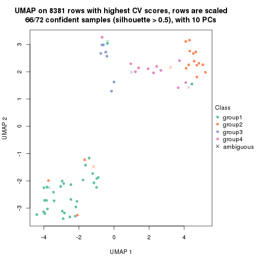
dimension_reduction(res, k = 5, method = "UMAP")
dimension_reduction(res, k = 6, method = "UMAP")
Following heatmap shows how subgroups are split when increasing k:
collect_classes(res)

If matrix rows can be associated to genes, consider to use GO_Enrichment(res,
...) to perform function enrichment for the signature genes.
The object with results only for a single top-value method and a single partition method can be extracted as:
res = res_list["CV", "mclust"]
# you can also extract it by
# res = res_list["CV:mclust"]
A summary of res and all the functions that can be applied to it:
res
#> A 'ConsensusPartition' object with k = 2, 3, 4, 5, 6.
#> On a matrix with 8381 rows and 72 columns.
#> Top rows (838, 1676, 2514, 3352, 4190) are extracted by 'CV' method.
#> Subgroups are detected by 'mclust' method.
#> Performed in total 1250 partitions by row resampling.
#> Best k for subgroups seems to be 2.
#>
#> Following methods can be applied to this 'ConsensusPartition' object:
#> [1] "cola_report" "collect_classes" "collect_plots"
#> [4] "collect_stats" "colnames" "compare_signatures"
#> [7] "consensus_heatmap" "dimension_reduction" "functional_enrichment"
#> [10] "get_anno_col" "get_anno" "get_classes"
#> [13] "get_consensus" "get_matrix" "get_membership"
#> [16] "get_param" "get_signatures" "get_stats"
#> [19] "is_best_k" "is_stable_k" "membership_heatmap"
#> [22] "ncol" "nrow" "plot_ecdf"
#> [25] "rownames" "select_partition_number" "show"
#> [28] "suggest_best_k" "test_to_known_factors"
collect_plots() function collects all the plots made from res for all k (number of partitions)
into one single page to provide an easy and fast comparison between different k.
collect_plots(res)
The plots are:
k and the heatmap of
predicted classes for each k.k.k.k.All the plots in panels can be made by individual functions and they are plotted later in this section.
select_partition_number() produces several plots showing different
statistics for choosing “optimized” k. There are following statistics:
k;k, the area increased is defined as \(A_k - A_{k-1}\).The detailed explanations of these statistics can be found in the cola vignette.
Generally speaking, lower PAC score, higher mean silhouette score or higher
concordance corresponds to better partition. Rand index and Jaccard index
measure how similar the current partition is compared to partition with k-1.
If they are too similar, we won't accept k is better than k-1.
select_partition_number(res)

The numeric values for all these statistics can be obtained by get_stats().
get_stats(res)
#> k 1-PAC mean_silhouette concordance area_increased Rand Jaccard
#> 2 2 0.836 0.931 0.967 0.4599 0.549 0.549
#> 3 3 0.651 0.764 0.885 0.2084 0.876 0.781
#> 4 4 0.645 0.704 0.795 0.2207 0.856 0.696
#> 5 5 0.621 0.578 0.763 0.1174 0.874 0.648
#> 6 6 0.642 0.555 0.729 0.0381 0.891 0.621
suggest_best_k() suggests the best \(k\) based on these statistics. The rules are as follows:
NA.suggest_best_k(res)
#> [1] 2
Following shows the table of the partitions (You need to click the show/hide
code output link to see it). The membership matrix (columns with name p*)
is inferred by
clue::cl_consensus()
function with the SE method. Basically the value in the membership matrix
represents the probability to belong to a certain group. The finall class
label for an item is determined with the group with highest probability it
belongs to.
In get_classes() function, the entropy is calculated from the membership
matrix and the silhouette score is calculated from the consensus matrix.
cbind(get_classes(res, k = 2), get_membership(res, k = 2))
#> class entropy silhouette p1 p2
#> SRR2558111 1 0.0000 0.957 1.000 0.000
#> SRR2558177 1 0.9635 0.416 0.612 0.388
#> SRR2558176 1 0.0672 0.956 0.992 0.008
#> SRR2558175 1 0.0672 0.956 0.992 0.008
#> SRR2558174 1 0.0672 0.956 0.992 0.008
#> SRR2558173 1 0.0376 0.957 0.996 0.004
#> SRR2558172 1 0.0000 0.957 1.000 0.000
#> SRR2558171 1 0.0000 0.957 1.000 0.000
#> SRR2558170 2 0.0000 0.981 0.000 1.000
#> SRR2558169 2 0.0000 0.981 0.000 1.000
#> SRR2558168 2 0.0000 0.981 0.000 1.000
#> SRR2558167 2 0.4022 0.914 0.080 0.920
#> SRR2558166 2 0.0000 0.981 0.000 1.000
#> SRR2558165 1 0.1184 0.951 0.984 0.016
#> SRR2558164 2 0.0000 0.981 0.000 1.000
#> SRR2558163 2 0.0000 0.981 0.000 1.000
#> SRR2558162 1 0.0672 0.956 0.992 0.008
#> SRR2558161 2 0.4690 0.894 0.100 0.900
#> SRR2558160 1 0.0000 0.957 1.000 0.000
#> SRR2558159 2 0.0000 0.981 0.000 1.000
#> SRR2558158 2 0.0000 0.981 0.000 1.000
#> SRR2558157 2 0.4939 0.884 0.108 0.892
#> SRR2558156 1 0.6973 0.788 0.812 0.188
#> SRR2558155 1 0.0000 0.957 1.000 0.000
#> SRR2558154 2 0.4690 0.894 0.100 0.900
#> SRR2558153 1 0.0000 0.957 1.000 0.000
#> SRR2558152 1 0.0672 0.956 0.992 0.008
#> SRR2558151 1 0.0000 0.957 1.000 0.000
#> SRR2558150 2 0.0000 0.981 0.000 1.000
#> SRR2558149 1 0.0000 0.957 1.000 0.000
#> SRR2558148 1 0.0000 0.957 1.000 0.000
#> SRR2558147 2 0.0000 0.981 0.000 1.000
#> SRR2558146 1 0.0672 0.956 0.992 0.008
#> SRR2558145 1 0.0000 0.957 1.000 0.000
#> SRR2558144 1 0.0000 0.957 1.000 0.000
#> SRR2558143 1 0.0000 0.957 1.000 0.000
#> SRR2558142 1 0.0000 0.957 1.000 0.000
#> SRR2558141 1 0.6438 0.818 0.836 0.164
#> SRR2558140 1 0.4161 0.898 0.916 0.084
#> SRR2558139 2 0.0000 0.981 0.000 1.000
#> SRR2558138 1 0.0672 0.956 0.992 0.008
#> SRR2558137 2 0.0000 0.981 0.000 1.000
#> SRR2558136 1 0.0672 0.955 0.992 0.008
#> SRR2558182 2 0.0376 0.979 0.004 0.996
#> SRR2558181 2 0.0376 0.979 0.004 0.996
#> SRR2558180 1 0.5946 0.840 0.856 0.144
#> SRR2558179 1 0.0672 0.956 0.992 0.008
#> SRR2558178 1 0.0376 0.957 0.996 0.004
#> SRR2558134 2 0.0000 0.981 0.000 1.000
#> SRR2558135 1 0.2423 0.931 0.960 0.040
#> SRR2558133 1 0.9922 0.246 0.552 0.448
#> SRR2558132 2 0.0000 0.981 0.000 1.000
#> SRR2558131 1 0.0000 0.957 1.000 0.000
#> SRR2558129 1 0.0000 0.957 1.000 0.000
#> SRR2558127 1 0.6623 0.808 0.828 0.172
#> SRR2558126 1 0.0000 0.957 1.000 0.000
#> SRR2558128 2 0.0000 0.981 0.000 1.000
#> SRR2558125 1 0.3584 0.912 0.932 0.068
#> SRR2558130 1 0.0000 0.957 1.000 0.000
#> SRR2558124 1 0.0376 0.957 0.996 0.004
#> SRR2558123 1 0.5842 0.844 0.860 0.140
#> SRR2558121 1 0.0672 0.956 0.992 0.008
#> SRR2558122 1 0.0000 0.957 1.000 0.000
#> SRR2558120 2 0.0000 0.981 0.000 1.000
#> SRR2558119 1 0.0000 0.957 1.000 0.000
#> SRR2558117 2 0.0000 0.981 0.000 1.000
#> SRR2558118 1 0.0000 0.957 1.000 0.000
#> SRR2558115 2 0.0000 0.981 0.000 1.000
#> SRR2558116 1 0.0000 0.957 1.000 0.000
#> SRR2558114 1 0.0672 0.955 0.992 0.008
#> SRR2558113 1 0.0000 0.957 1.000 0.000
#> SRR2558112 1 0.0000 0.957 1.000 0.000
cbind(get_classes(res, k = 3), get_membership(res, k = 3))
#> class entropy silhouette p1 p2 p3
#> SRR2558111 1 0.0000 0.8933 1.000 0.000 0.000
#> SRR2558177 2 0.5178 0.5521 0.256 0.744 0.000
#> SRR2558176 1 0.1411 0.8871 0.964 0.036 0.000
#> SRR2558175 1 0.4413 0.8332 0.860 0.036 0.104
#> SRR2558174 1 0.4335 0.8360 0.864 0.036 0.100
#> SRR2558173 1 0.1289 0.8885 0.968 0.032 0.000
#> SRR2558172 1 0.0000 0.8933 1.000 0.000 0.000
#> SRR2558171 1 0.0747 0.8907 0.984 0.000 0.016
#> SRR2558170 2 0.1832 0.7031 0.008 0.956 0.036
#> SRR2558169 2 0.2261 0.7008 0.000 0.932 0.068
#> SRR2558168 2 0.5363 0.5085 0.000 0.724 0.276
#> SRR2558167 2 0.1315 0.7006 0.008 0.972 0.020
#> SRR2558166 2 0.2261 0.7008 0.000 0.932 0.068
#> SRR2558165 1 0.5397 0.6322 0.720 0.280 0.000
#> SRR2558164 3 0.2537 0.9530 0.000 0.080 0.920
#> SRR2558163 2 0.2537 0.6972 0.000 0.920 0.080
#> SRR2558162 1 0.1647 0.8866 0.960 0.036 0.004
#> SRR2558161 2 0.6465 0.5696 0.232 0.724 0.044
#> SRR2558160 1 0.1411 0.8880 0.964 0.036 0.000
#> SRR2558159 2 0.5397 0.5004 0.000 0.720 0.280
#> SRR2558158 2 0.2261 0.7008 0.000 0.932 0.068
#> SRR2558157 2 0.5414 0.5941 0.212 0.772 0.016
#> SRR2558156 2 0.6291 -0.0444 0.468 0.532 0.000
#> SRR2558155 1 0.1163 0.8896 0.972 0.028 0.000
#> SRR2558154 2 0.2050 0.6967 0.028 0.952 0.020
#> SRR2558153 1 0.0237 0.8934 0.996 0.000 0.004
#> SRR2558152 1 0.4413 0.8332 0.860 0.036 0.104
#> SRR2558151 1 0.0237 0.8933 0.996 0.000 0.004
#> SRR2558150 3 0.2261 0.9675 0.000 0.068 0.932
#> SRR2558149 1 0.0892 0.8890 0.980 0.000 0.020
#> SRR2558148 1 0.0237 0.8932 0.996 0.004 0.000
#> SRR2558147 3 0.2261 0.9675 0.000 0.068 0.932
#> SRR2558146 1 0.2926 0.8733 0.924 0.040 0.036
#> SRR2558145 1 0.0892 0.8890 0.980 0.000 0.020
#> SRR2558144 1 0.0747 0.8907 0.984 0.000 0.016
#> SRR2558143 1 0.0747 0.8907 0.984 0.000 0.016
#> SRR2558142 1 0.0592 0.8919 0.988 0.000 0.012
#> SRR2558141 1 0.6244 0.3018 0.560 0.440 0.000
#> SRR2558140 1 0.5948 0.4969 0.640 0.360 0.000
#> SRR2558139 3 0.2165 0.9662 0.000 0.064 0.936
#> SRR2558138 1 0.4335 0.8360 0.864 0.036 0.100
#> SRR2558137 2 0.4555 0.6190 0.000 0.800 0.200
#> SRR2558136 1 0.0892 0.8890 0.980 0.000 0.020
#> SRR2558182 3 0.2414 0.8943 0.020 0.040 0.940
#> SRR2558181 3 0.2414 0.8943 0.020 0.040 0.940
#> SRR2558180 1 0.6225 0.3232 0.568 0.432 0.000
#> SRR2558179 1 0.1411 0.8871 0.964 0.036 0.000
#> SRR2558178 1 0.3267 0.8404 0.884 0.116 0.000
#> SRR2558134 3 0.2261 0.9675 0.000 0.068 0.932
#> SRR2558135 1 0.1031 0.8911 0.976 0.024 0.000
#> SRR2558133 2 0.6291 -0.0444 0.468 0.532 0.000
#> SRR2558132 3 0.2066 0.9640 0.000 0.060 0.940
#> SRR2558131 1 0.0747 0.8907 0.984 0.000 0.016
#> SRR2558129 1 0.0592 0.8919 0.988 0.000 0.012
#> SRR2558127 1 0.6309 0.1101 0.504 0.496 0.000
#> SRR2558126 1 0.0424 0.8928 0.992 0.000 0.008
#> SRR2558128 2 0.4654 0.6090 0.000 0.792 0.208
#> SRR2558125 1 0.5859 0.5241 0.656 0.344 0.000
#> SRR2558130 1 0.0424 0.8929 0.992 0.008 0.000
#> SRR2558124 1 0.4121 0.7824 0.832 0.168 0.000
#> SRR2558123 1 0.6204 0.3458 0.576 0.424 0.000
#> SRR2558121 1 0.4413 0.8332 0.860 0.036 0.104
#> SRR2558122 1 0.0592 0.8919 0.988 0.000 0.012
#> SRR2558120 3 0.2448 0.9610 0.000 0.076 0.924
#> SRR2558119 1 0.0424 0.8930 0.992 0.000 0.008
#> SRR2558117 2 0.4555 0.6190 0.000 0.800 0.200
#> SRR2558118 1 0.0747 0.8919 0.984 0.016 0.000
#> SRR2558115 3 0.2261 0.9675 0.000 0.068 0.932
#> SRR2558116 1 0.0424 0.8928 0.992 0.000 0.008
#> SRR2558114 1 0.0237 0.8936 0.996 0.000 0.004
#> SRR2558113 1 0.1031 0.8906 0.976 0.024 0.000
#> SRR2558112 1 0.0892 0.8890 0.980 0.000 0.020
cbind(get_classes(res, k = 4), get_membership(res, k = 4))
#> class entropy silhouette p1 p2 p3 p4
#> SRR2558111 1 0.1398 0.845 0.956 0.040 0.004 0.000
#> SRR2558177 4 0.5576 -0.475 0.020 0.444 0.000 0.536
#> SRR2558176 1 0.5050 0.603 0.588 0.408 0.004 0.000
#> SRR2558175 1 0.4978 0.626 0.612 0.384 0.004 0.000
#> SRR2558174 1 0.4991 0.624 0.608 0.388 0.004 0.000
#> SRR2558173 1 0.5047 0.654 0.636 0.356 0.004 0.004
#> SRR2558172 1 0.1398 0.845 0.956 0.040 0.004 0.000
#> SRR2558171 1 0.0779 0.847 0.980 0.016 0.004 0.000
#> SRR2558170 4 0.0000 0.676 0.000 0.000 0.000 1.000
#> SRR2558169 4 0.0592 0.684 0.000 0.000 0.016 0.984
#> SRR2558168 4 0.6065 0.541 0.000 0.080 0.276 0.644
#> SRR2558167 4 0.0188 0.674 0.000 0.004 0.000 0.996
#> SRR2558166 4 0.0592 0.684 0.000 0.000 0.016 0.984
#> SRR2558165 2 0.6534 0.642 0.244 0.624 0.000 0.132
#> SRR2558164 3 0.1302 0.954 0.000 0.000 0.956 0.044
#> SRR2558163 4 0.0592 0.684 0.000 0.000 0.016 0.984
#> SRR2558162 1 0.4978 0.630 0.612 0.384 0.004 0.000
#> SRR2558161 4 0.3677 0.493 0.008 0.148 0.008 0.836
#> SRR2558160 1 0.3855 0.778 0.820 0.164 0.004 0.012
#> SRR2558159 4 0.6004 0.544 0.000 0.076 0.276 0.648
#> SRR2558158 4 0.0469 0.683 0.000 0.000 0.012 0.988
#> SRR2558157 4 0.2867 0.547 0.012 0.104 0.000 0.884
#> SRR2558156 2 0.5636 0.649 0.024 0.552 0.000 0.424
#> SRR2558155 1 0.3855 0.777 0.820 0.164 0.004 0.012
#> SRR2558154 4 0.0707 0.663 0.000 0.020 0.000 0.980
#> SRR2558153 1 0.1398 0.845 0.956 0.040 0.004 0.000
#> SRR2558152 1 0.4978 0.626 0.612 0.384 0.004 0.000
#> SRR2558151 1 0.0376 0.848 0.992 0.004 0.004 0.000
#> SRR2558150 3 0.0707 0.987 0.000 0.000 0.980 0.020
#> SRR2558149 1 0.0188 0.846 0.996 0.000 0.004 0.000
#> SRR2558148 1 0.1022 0.847 0.968 0.032 0.000 0.000
#> SRR2558147 3 0.0817 0.988 0.000 0.000 0.976 0.024
#> SRR2558146 1 0.4599 0.730 0.736 0.248 0.000 0.016
#> SRR2558145 1 0.0188 0.846 0.996 0.000 0.004 0.000
#> SRR2558144 1 0.0336 0.847 0.992 0.000 0.008 0.000
#> SRR2558143 1 0.0188 0.846 0.996 0.000 0.004 0.000
#> SRR2558142 1 0.0188 0.846 0.996 0.000 0.004 0.000
#> SRR2558141 2 0.6212 0.717 0.060 0.560 0.000 0.380
#> SRR2558140 2 0.6690 0.725 0.144 0.608 0.000 0.248
#> SRR2558139 3 0.0707 0.987 0.000 0.000 0.980 0.020
#> SRR2558138 1 0.4991 0.623 0.608 0.388 0.004 0.000
#> SRR2558137 4 0.5620 0.613 0.000 0.084 0.208 0.708
#> SRR2558136 1 0.1004 0.836 0.972 0.024 0.004 0.000
#> SRR2558182 4 0.7944 0.333 0.024 0.164 0.324 0.488
#> SRR2558181 4 0.7944 0.333 0.024 0.164 0.324 0.488
#> SRR2558180 2 0.5807 0.724 0.040 0.596 0.000 0.364
#> SRR2558179 1 0.5070 0.590 0.580 0.416 0.004 0.000
#> SRR2558178 2 0.6182 0.244 0.428 0.520 0.000 0.052
#> SRR2558134 3 0.0817 0.988 0.000 0.000 0.976 0.024
#> SRR2558135 1 0.2530 0.827 0.896 0.100 0.000 0.004
#> SRR2558133 4 0.5417 -0.345 0.016 0.412 0.000 0.572
#> SRR2558132 3 0.0469 0.979 0.000 0.000 0.988 0.012
#> SRR2558131 1 0.0672 0.846 0.984 0.008 0.008 0.000
#> SRR2558129 1 0.0376 0.845 0.992 0.004 0.004 0.000
#> SRR2558127 2 0.5708 0.664 0.028 0.556 0.000 0.416
#> SRR2558126 1 0.0657 0.848 0.984 0.012 0.004 0.000
#> SRR2558128 4 0.5756 0.598 0.000 0.084 0.224 0.692
#> SRR2558125 2 0.6731 0.724 0.156 0.608 0.000 0.236
#> SRR2558130 1 0.1576 0.843 0.948 0.048 0.004 0.000
#> SRR2558124 1 0.5699 0.361 0.588 0.380 0.000 0.032
#> SRR2558123 2 0.5778 0.727 0.040 0.604 0.000 0.356
#> SRR2558121 1 0.4978 0.626 0.612 0.384 0.004 0.000
#> SRR2558122 1 0.0376 0.845 0.992 0.004 0.004 0.000
#> SRR2558120 3 0.0921 0.986 0.000 0.000 0.972 0.028
#> SRR2558119 1 0.0657 0.846 0.984 0.012 0.004 0.000
#> SRR2558117 4 0.5690 0.607 0.000 0.084 0.216 0.700
#> SRR2558118 1 0.2311 0.833 0.916 0.076 0.004 0.004
#> SRR2558115 3 0.0921 0.986 0.000 0.000 0.972 0.028
#> SRR2558116 1 0.0657 0.848 0.984 0.012 0.004 0.000
#> SRR2558114 1 0.1211 0.842 0.960 0.040 0.000 0.000
#> SRR2558113 1 0.2731 0.826 0.896 0.092 0.004 0.008
#> SRR2558112 1 0.0188 0.846 0.996 0.000 0.004 0.000
cbind(get_classes(res, k = 5), get_membership(res, k = 5))
#> class entropy silhouette p1 p2 p3 p4 p5
#> SRR2558111 1 0.4865 0.2038 0.672 0.044 0.004 0.000 0.280
#> SRR2558177 2 0.4039 0.6399 0.004 0.720 0.000 0.268 0.008
#> SRR2558176 5 0.5076 0.6285 0.200 0.108 0.000 0.000 0.692
#> SRR2558175 1 0.6034 -0.0706 0.472 0.072 0.000 0.016 0.440
#> SRR2558174 5 0.6074 0.1479 0.428 0.076 0.000 0.016 0.480
#> SRR2558173 5 0.5342 0.6611 0.312 0.076 0.000 0.000 0.612
#> SRR2558172 1 0.4227 0.2446 0.692 0.016 0.000 0.000 0.292
#> SRR2558171 1 0.2719 0.5323 0.852 0.004 0.000 0.000 0.144
#> SRR2558170 4 0.1965 0.7921 0.000 0.096 0.000 0.904 0.000
#> SRR2558169 4 0.1608 0.7968 0.000 0.072 0.000 0.928 0.000
#> SRR2558168 4 0.3757 0.7397 0.000 0.012 0.156 0.808 0.024
#> SRR2558167 4 0.2329 0.7744 0.000 0.124 0.000 0.876 0.000
#> SRR2558166 4 0.1608 0.7968 0.000 0.072 0.000 0.928 0.000
#> SRR2558165 2 0.3756 0.6752 0.120 0.824 0.000 0.012 0.044
#> SRR2558164 3 0.1341 0.9490 0.000 0.000 0.944 0.056 0.000
#> SRR2558163 4 0.1608 0.7968 0.000 0.072 0.000 0.928 0.000
#> SRR2558162 5 0.4907 0.6472 0.292 0.052 0.000 0.000 0.656
#> SRR2558161 4 0.4786 0.4124 0.012 0.356 0.000 0.620 0.012
#> SRR2558160 5 0.6403 0.5419 0.396 0.148 0.004 0.000 0.452
#> SRR2558159 4 0.3685 0.7484 0.000 0.016 0.148 0.816 0.020
#> SRR2558158 4 0.1732 0.7951 0.000 0.080 0.000 0.920 0.000
#> SRR2558157 4 0.4190 0.6256 0.008 0.256 0.000 0.724 0.012
#> SRR2558156 2 0.3250 0.7529 0.004 0.820 0.000 0.168 0.008
#> SRR2558155 5 0.6238 0.5659 0.384 0.128 0.004 0.000 0.484
#> SRR2558154 4 0.3366 0.6970 0.000 0.212 0.000 0.784 0.004
#> SRR2558153 1 0.3967 0.3092 0.724 0.012 0.000 0.000 0.264
#> SRR2558152 1 0.6034 -0.0842 0.472 0.072 0.000 0.016 0.440
#> SRR2558151 1 0.1341 0.6098 0.944 0.000 0.000 0.000 0.056
#> SRR2558150 3 0.0451 0.9811 0.000 0.004 0.988 0.008 0.000
#> SRR2558149 1 0.1792 0.5921 0.916 0.000 0.000 0.000 0.084
#> SRR2558148 1 0.3948 0.5350 0.808 0.076 0.004 0.000 0.112
#> SRR2558147 3 0.0290 0.9811 0.000 0.000 0.992 0.008 0.000
#> SRR2558146 1 0.5738 0.1602 0.604 0.132 0.000 0.000 0.264
#> SRR2558145 1 0.1197 0.6146 0.952 0.000 0.000 0.000 0.048
#> SRR2558144 1 0.0794 0.6293 0.972 0.000 0.000 0.000 0.028
#> SRR2558143 1 0.0609 0.6302 0.980 0.000 0.000 0.000 0.020
#> SRR2558142 1 0.0609 0.6295 0.980 0.000 0.000 0.000 0.020
#> SRR2558141 2 0.3733 0.7640 0.028 0.808 0.000 0.156 0.008
#> SRR2558140 2 0.3681 0.7596 0.052 0.848 0.000 0.056 0.044
#> SRR2558139 3 0.0404 0.9808 0.000 0.000 0.988 0.012 0.000
#> SRR2558138 1 0.6036 -0.0845 0.468 0.072 0.000 0.016 0.444
#> SRR2558137 4 0.3344 0.7776 0.000 0.012 0.112 0.848 0.028
#> SRR2558136 1 0.1357 0.6244 0.948 0.004 0.000 0.000 0.048
#> SRR2558182 4 0.6438 0.5581 0.004 0.024 0.264 0.584 0.124
#> SRR2558181 4 0.6438 0.5581 0.004 0.024 0.264 0.584 0.124
#> SRR2558180 2 0.3431 0.7697 0.008 0.828 0.000 0.144 0.020
#> SRR2558179 5 0.4815 0.6686 0.244 0.064 0.000 0.000 0.692
#> SRR2558178 2 0.5243 0.4386 0.208 0.684 0.000 0.004 0.104
#> SRR2558134 3 0.0451 0.9804 0.000 0.004 0.988 0.008 0.000
#> SRR2558135 1 0.6101 0.1929 0.620 0.140 0.004 0.012 0.224
#> SRR2558133 2 0.4748 0.6120 0.020 0.692 0.000 0.268 0.020
#> SRR2558132 3 0.0404 0.9808 0.000 0.000 0.988 0.012 0.000
#> SRR2558131 1 0.2280 0.5690 0.880 0.000 0.000 0.000 0.120
#> SRR2558129 1 0.2946 0.6089 0.868 0.044 0.000 0.000 0.088
#> SRR2558127 2 0.3239 0.7598 0.004 0.828 0.000 0.156 0.012
#> SRR2558126 1 0.0566 0.6295 0.984 0.004 0.000 0.000 0.012
#> SRR2558128 4 0.3711 0.7641 0.000 0.012 0.136 0.820 0.032
#> SRR2558125 2 0.2965 0.7385 0.068 0.880 0.000 0.012 0.040
#> SRR2558130 1 0.5607 0.0371 0.604 0.088 0.004 0.000 0.304
#> SRR2558124 2 0.6695 -0.2033 0.248 0.472 0.000 0.004 0.276
#> SRR2558123 2 0.3297 0.7717 0.008 0.840 0.000 0.132 0.020
#> SRR2558121 1 0.6036 -0.0819 0.468 0.072 0.000 0.016 0.444
#> SRR2558122 1 0.1768 0.6265 0.924 0.004 0.000 0.000 0.072
#> SRR2558120 3 0.1331 0.9618 0.000 0.008 0.952 0.040 0.000
#> SRR2558119 1 0.2325 0.6219 0.904 0.028 0.000 0.000 0.068
#> SRR2558117 4 0.3394 0.7764 0.000 0.012 0.116 0.844 0.028
#> SRR2558118 1 0.6092 -0.3847 0.480 0.108 0.004 0.000 0.408
#> SRR2558115 3 0.0671 0.9784 0.000 0.004 0.980 0.016 0.000
#> SRR2558116 1 0.3504 0.5802 0.840 0.064 0.004 0.000 0.092
#> SRR2558114 1 0.3767 0.5518 0.812 0.068 0.000 0.000 0.120
#> SRR2558113 5 0.6088 0.4893 0.404 0.108 0.004 0.000 0.484
#> SRR2558112 1 0.1792 0.5921 0.916 0.000 0.000 0.000 0.084
cbind(get_classes(res, k = 6), get_membership(res, k = 6))
#> class entropy silhouette p1 p2 p3 p4 p5 p6
#> SRR2558111 1 0.4391 0.4819 0.728 0.004 0.000 0.000 0.160 0.108
#> SRR2558177 2 0.2039 0.7549 0.000 0.904 0.000 0.076 0.020 0.000
#> SRR2558176 5 0.7487 0.3597 0.220 0.160 0.000 0.000 0.368 0.252
#> SRR2558175 5 0.3844 0.4898 0.312 0.008 0.000 0.000 0.676 0.004
#> SRR2558174 5 0.3945 0.4694 0.380 0.008 0.000 0.000 0.612 0.000
#> SRR2558173 5 0.6558 0.2426 0.324 0.024 0.000 0.000 0.384 0.268
#> SRR2558172 1 0.3748 0.4893 0.760 0.008 0.000 0.000 0.204 0.028
#> SRR2558171 1 0.2581 0.5672 0.860 0.000 0.000 0.000 0.120 0.020
#> SRR2558170 4 0.3193 0.6467 0.000 0.128 0.012 0.836 0.012 0.012
#> SRR2558169 4 0.2199 0.6750 0.000 0.088 0.020 0.892 0.000 0.000
#> SRR2558168 4 0.5731 0.4509 0.000 0.004 0.160 0.604 0.020 0.212
#> SRR2558167 4 0.3968 0.5986 0.000 0.208 0.008 0.752 0.020 0.012
#> SRR2558166 4 0.2199 0.6757 0.000 0.088 0.020 0.892 0.000 0.000
#> SRR2558165 2 0.4017 0.7079 0.072 0.800 0.000 0.000 0.064 0.064
#> SRR2558164 3 0.1914 0.9036 0.000 0.016 0.920 0.056 0.000 0.008
#> SRR2558163 4 0.2627 0.6744 0.000 0.084 0.024 0.880 0.004 0.008
#> SRR2558162 5 0.6759 0.3565 0.280 0.052 0.000 0.000 0.436 0.232
#> SRR2558161 2 0.5002 0.5164 0.004 0.692 0.004 0.216 0.044 0.040
#> SRR2558160 1 0.7098 -0.0914 0.400 0.084 0.000 0.000 0.280 0.236
#> SRR2558159 4 0.5607 0.4701 0.000 0.004 0.144 0.620 0.020 0.212
#> SRR2558158 4 0.2586 0.6733 0.000 0.096 0.020 0.876 0.004 0.004
#> SRR2558157 2 0.4867 0.2244 0.004 0.604 0.000 0.344 0.028 0.020
#> SRR2558156 2 0.1218 0.7804 0.004 0.956 0.000 0.028 0.012 0.000
#> SRR2558155 1 0.7393 -0.1666 0.340 0.116 0.000 0.000 0.264 0.280
#> SRR2558154 4 0.4649 0.1689 0.000 0.464 0.000 0.504 0.020 0.012
#> SRR2558153 1 0.3485 0.5001 0.772 0.004 0.000 0.000 0.204 0.020
#> SRR2558152 5 0.3887 0.5081 0.360 0.008 0.000 0.000 0.632 0.000
#> SRR2558151 1 0.2668 0.5075 0.828 0.000 0.000 0.000 0.168 0.004
#> SRR2558150 3 0.0260 0.9664 0.000 0.000 0.992 0.008 0.000 0.000
#> SRR2558149 1 0.2964 0.4562 0.792 0.000 0.000 0.000 0.204 0.004
#> SRR2558148 1 0.4911 0.4748 0.684 0.004 0.000 0.004 0.148 0.160
#> SRR2558147 3 0.0458 0.9666 0.000 0.000 0.984 0.016 0.000 0.000
#> SRR2558146 1 0.6277 0.0550 0.532 0.044 0.000 0.000 0.176 0.248
#> SRR2558145 1 0.2302 0.5466 0.872 0.000 0.000 0.000 0.120 0.008
#> SRR2558144 1 0.0291 0.6051 0.992 0.000 0.000 0.000 0.004 0.004
#> SRR2558143 1 0.0603 0.6011 0.980 0.000 0.000 0.000 0.016 0.004
#> SRR2558142 1 0.0692 0.5992 0.976 0.000 0.000 0.000 0.020 0.004
#> SRR2558141 2 0.1659 0.7858 0.008 0.940 0.000 0.020 0.028 0.004
#> SRR2558140 2 0.2453 0.7722 0.044 0.896 0.000 0.000 0.044 0.016
#> SRR2558139 3 0.0603 0.9644 0.000 0.000 0.980 0.016 0.000 0.004
#> SRR2558138 5 0.3804 0.5067 0.336 0.008 0.000 0.000 0.656 0.000
#> SRR2558137 4 0.5584 0.4794 0.000 0.004 0.164 0.628 0.020 0.184
#> SRR2558136 1 0.2706 0.5875 0.860 0.000 0.000 0.000 0.036 0.104
#> SRR2558182 6 0.5363 1.0000 0.004 0.000 0.172 0.168 0.012 0.644
#> SRR2558181 6 0.5363 1.0000 0.004 0.000 0.172 0.168 0.012 0.644
#> SRR2558180 2 0.1294 0.7872 0.008 0.956 0.000 0.008 0.024 0.004
#> SRR2558179 5 0.7325 0.3675 0.236 0.124 0.000 0.000 0.392 0.248
#> SRR2558178 2 0.5618 0.5078 0.200 0.640 0.000 0.000 0.100 0.060
#> SRR2558134 3 0.0260 0.9637 0.000 0.000 0.992 0.008 0.000 0.000
#> SRR2558135 1 0.6534 0.2278 0.528 0.056 0.000 0.004 0.192 0.220
#> SRR2558133 2 0.2696 0.7522 0.004 0.884 0.000 0.056 0.044 0.012
#> SRR2558132 3 0.0692 0.9634 0.000 0.000 0.976 0.020 0.000 0.004
#> SRR2558131 1 0.1812 0.5935 0.912 0.000 0.000 0.000 0.080 0.008
#> SRR2558129 1 0.2613 0.5881 0.848 0.000 0.000 0.000 0.012 0.140
#> SRR2558127 2 0.0777 0.7835 0.000 0.972 0.000 0.024 0.004 0.000
#> SRR2558126 1 0.1411 0.5842 0.936 0.000 0.000 0.000 0.060 0.004
#> SRR2558128 4 0.5910 0.4215 0.000 0.004 0.176 0.576 0.020 0.224
#> SRR2558125 2 0.3052 0.7547 0.048 0.864 0.000 0.000 0.044 0.044
#> SRR2558130 1 0.5364 0.3589 0.624 0.012 0.000 0.000 0.148 0.216
#> SRR2558124 2 0.7166 0.0294 0.240 0.444 0.000 0.000 0.176 0.140
#> SRR2558123 2 0.1261 0.7868 0.008 0.956 0.000 0.004 0.028 0.004
#> SRR2558121 5 0.3847 0.5090 0.348 0.008 0.000 0.000 0.644 0.000
#> SRR2558122 1 0.2365 0.6025 0.888 0.000 0.000 0.000 0.040 0.072
#> SRR2558120 3 0.1398 0.9213 0.000 0.000 0.940 0.052 0.000 0.008
#> SRR2558119 1 0.2445 0.5929 0.868 0.004 0.000 0.000 0.008 0.120
#> SRR2558117 4 0.5713 0.4611 0.000 0.004 0.164 0.608 0.020 0.204
#> SRR2558118 1 0.6466 0.0363 0.436 0.024 0.000 0.000 0.268 0.272
#> SRR2558115 3 0.0260 0.9664 0.000 0.000 0.992 0.008 0.000 0.000
#> SRR2558116 1 0.3804 0.5436 0.768 0.008 0.000 0.000 0.040 0.184
#> SRR2558114 1 0.4747 0.4975 0.692 0.008 0.000 0.000 0.108 0.192
#> SRR2558113 1 0.6699 -0.0999 0.368 0.032 0.000 0.000 0.296 0.304
#> SRR2558112 1 0.2933 0.4593 0.796 0.000 0.000 0.000 0.200 0.004
Heatmaps for the consensus matrix. It visualizes the probability of two samples to be in a same group.
consensus_heatmap(res, k = 2)
consensus_heatmap(res, k = 3)
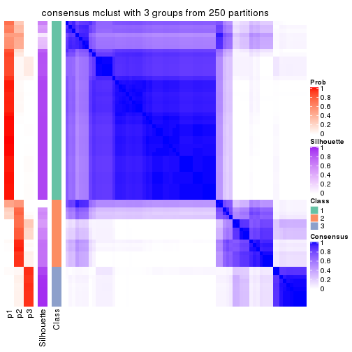
consensus_heatmap(res, k = 4)
consensus_heatmap(res, k = 5)
consensus_heatmap(res, k = 6)
Heatmaps for the membership of samples in all partitions to see how consistent they are:
membership_heatmap(res, k = 2)

membership_heatmap(res, k = 3)
membership_heatmap(res, k = 4)
membership_heatmap(res, k = 5)
membership_heatmap(res, k = 6)
As soon as we have had the classes for columns, we can look for signatures which are significantly different between classes which can be candidate marks for certain classes. Following are the heatmaps for signatures.
Signature heatmaps where rows are scaled:
get_signatures(res, k = 2)

get_signatures(res, k = 3)
get_signatures(res, k = 4)
get_signatures(res, k = 5)
get_signatures(res, k = 6)

Signature heatmaps where rows are not scaled:
get_signatures(res, k = 2, scale_rows = FALSE)
get_signatures(res, k = 3, scale_rows = FALSE)
get_signatures(res, k = 4, scale_rows = FALSE)
get_signatures(res, k = 5, scale_rows = FALSE)
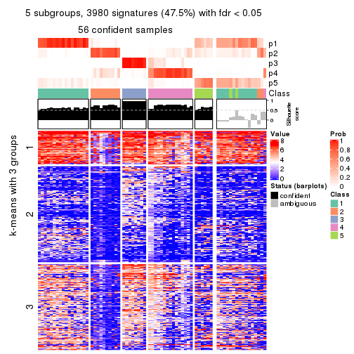
get_signatures(res, k = 6, scale_rows = FALSE)
Compare the overlap of signatures from different k:
compare_signatures(res)
get_signature() returns a data frame invisibly. TO get the list of signatures, the function
call should be assigned to a variable explicitly. In following code, if plot argument is set
to FALSE, no heatmap is plotted while only the differential analysis is performed.
# code only for demonstration
tb = get_signature(res, k = ..., plot = FALSE)
An example of the output of tb is:
#> which_row fdr mean_1 mean_2 scaled_mean_1 scaled_mean_2 km
#> 1 38 0.042760348 8.373488 9.131774 -0.5533452 0.5164555 1
#> 2 40 0.018707592 7.106213 8.469186 -0.6173731 0.5762149 1
#> 3 55 0.019134737 10.221463 11.207825 -0.6159697 0.5749050 1
#> 4 59 0.006059896 5.921854 7.869574 -0.6899429 0.6439467 1
#> 5 60 0.018055526 8.928898 10.211722 -0.6204761 0.5791110 1
#> 6 98 0.009384629 15.714769 14.887706 0.6635654 -0.6193277 2
...
The columns in tb are:
which_row: row indices corresponding to the input matrix.fdr: FDR for the differential test. mean_x: The mean value in group x.scaled_mean_x: The mean value in group x after rows are scaled.km: Row groups if k-means clustering is applied to rows.UMAP plot which shows how samples are separated.
dimension_reduction(res, k = 2, method = "UMAP")
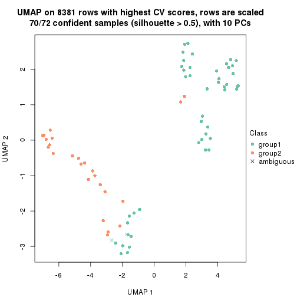
dimension_reduction(res, k = 3, method = "UMAP")
dimension_reduction(res, k = 4, method = "UMAP")
dimension_reduction(res, k = 5, method = "UMAP")
dimension_reduction(res, k = 6, method = "UMAP")
Following heatmap shows how subgroups are split when increasing k:
collect_classes(res)
If matrix rows can be associated to genes, consider to use GO_Enrichment(res,
...) to perform function enrichment for the signature genes.
The object with results only for a single top-value method and a single partition method can be extracted as:
res = res_list["CV", "NMF"]
# you can also extract it by
# res = res_list["CV:NMF"]
A summary of res and all the functions that can be applied to it:
res
#> A 'ConsensusPartition' object with k = 2, 3, 4, 5, 6.
#> On a matrix with 8381 rows and 72 columns.
#> Top rows (838, 1676, 2514, 3352, 4190) are extracted by 'CV' method.
#> Subgroups are detected by 'NMF' method.
#> Performed in total 1250 partitions by row resampling.
#> Best k for subgroups seems to be 2.
#>
#> Following methods can be applied to this 'ConsensusPartition' object:
#> [1] "cola_report" "collect_classes" "collect_plots"
#> [4] "collect_stats" "colnames" "compare_signatures"
#> [7] "consensus_heatmap" "dimension_reduction" "functional_enrichment"
#> [10] "get_anno_col" "get_anno" "get_classes"
#> [13] "get_consensus" "get_matrix" "get_membership"
#> [16] "get_param" "get_signatures" "get_stats"
#> [19] "is_best_k" "is_stable_k" "membership_heatmap"
#> [22] "ncol" "nrow" "plot_ecdf"
#> [25] "rownames" "select_partition_number" "show"
#> [28] "suggest_best_k" "test_to_known_factors"
collect_plots() function collects all the plots made from res for all k (number of partitions)
into one single page to provide an easy and fast comparison between different k.
collect_plots(res)
The plots are:
k and the heatmap of
predicted classes for each k.k.k.k.All the plots in panels can be made by individual functions and they are plotted later in this section.
select_partition_number() produces several plots showing different
statistics for choosing “optimized” k. There are following statistics:
k;k, the area increased is defined as \(A_k - A_{k-1}\).The detailed explanations of these statistics can be found in the cola vignette.
Generally speaking, lower PAC score, higher mean silhouette score or higher
concordance corresponds to better partition. Rand index and Jaccard index
measure how similar the current partition is compared to partition with k-1.
If they are too similar, we won't accept k is better than k-1.
select_partition_number(res)
The numeric values for all these statistics can be obtained by get_stats().
get_stats(res)
#> k 1-PAC mean_silhouette concordance area_increased Rand Jaccard
#> 2 2 1.000 0.986 0.994 0.4756 0.525 0.525
#> 3 3 0.733 0.900 0.877 0.3227 0.797 0.621
#> 4 4 0.758 0.783 0.832 0.1592 0.896 0.709
#> 5 5 0.736 0.777 0.857 0.0935 0.883 0.599
#> 6 6 0.744 0.736 0.801 0.0395 0.990 0.951
suggest_best_k() suggests the best \(k\) based on these statistics. The rules are as follows:
NA.suggest_best_k(res)
#> [1] 2
Following shows the table of the partitions (You need to click the show/hide
code output link to see it). The membership matrix (columns with name p*)
is inferred by
clue::cl_consensus()
function with the SE method. Basically the value in the membership matrix
represents the probability to belong to a certain group. The finall class
label for an item is determined with the group with highest probability it
belongs to.
In get_classes() function, the entropy is calculated from the membership
matrix and the silhouette score is calculated from the consensus matrix.
cbind(get_classes(res, k = 2), get_membership(res, k = 2))
#> class entropy silhouette p1 p2
#> SRR2558111 1 0.0000 0.995 1.000 0.000
#> SRR2558177 2 0.0000 0.991 0.000 1.000
#> SRR2558176 1 0.0000 0.995 1.000 0.000
#> SRR2558175 1 0.0000 0.995 1.000 0.000
#> SRR2558174 1 0.0000 0.995 1.000 0.000
#> SRR2558173 1 0.0000 0.995 1.000 0.000
#> SRR2558172 1 0.0000 0.995 1.000 0.000
#> SRR2558171 1 0.0000 0.995 1.000 0.000
#> SRR2558170 2 0.0000 0.991 0.000 1.000
#> SRR2558169 2 0.0000 0.991 0.000 1.000
#> SRR2558168 2 0.0000 0.991 0.000 1.000
#> SRR2558167 2 0.0000 0.991 0.000 1.000
#> SRR2558166 2 0.0000 0.991 0.000 1.000
#> SRR2558165 1 0.0000 0.995 1.000 0.000
#> SRR2558164 2 0.0000 0.991 0.000 1.000
#> SRR2558163 2 0.0000 0.991 0.000 1.000
#> SRR2558162 1 0.0000 0.995 1.000 0.000
#> SRR2558161 2 0.0000 0.991 0.000 1.000
#> SRR2558160 1 0.0000 0.995 1.000 0.000
#> SRR2558159 2 0.0000 0.991 0.000 1.000
#> SRR2558158 2 0.0000 0.991 0.000 1.000
#> SRR2558157 2 0.0000 0.991 0.000 1.000
#> SRR2558156 2 0.0000 0.991 0.000 1.000
#> SRR2558155 1 0.0000 0.995 1.000 0.000
#> SRR2558154 2 0.0000 0.991 0.000 1.000
#> SRR2558153 1 0.0000 0.995 1.000 0.000
#> SRR2558152 1 0.0000 0.995 1.000 0.000
#> SRR2558151 1 0.0000 0.995 1.000 0.000
#> SRR2558150 2 0.0000 0.991 0.000 1.000
#> SRR2558149 1 0.0000 0.995 1.000 0.000
#> SRR2558148 1 0.0000 0.995 1.000 0.000
#> SRR2558147 2 0.0000 0.991 0.000 1.000
#> SRR2558146 1 0.0000 0.995 1.000 0.000
#> SRR2558145 1 0.0000 0.995 1.000 0.000
#> SRR2558144 1 0.0000 0.995 1.000 0.000
#> SRR2558143 1 0.0000 0.995 1.000 0.000
#> SRR2558142 1 0.0000 0.995 1.000 0.000
#> SRR2558141 1 0.0000 0.995 1.000 0.000
#> SRR2558140 1 0.0000 0.995 1.000 0.000
#> SRR2558139 2 0.0000 0.991 0.000 1.000
#> SRR2558138 1 0.0000 0.995 1.000 0.000
#> SRR2558137 2 0.0000 0.991 0.000 1.000
#> SRR2558136 1 0.0000 0.995 1.000 0.000
#> SRR2558182 2 0.0938 0.980 0.012 0.988
#> SRR2558181 1 0.7528 0.720 0.784 0.216
#> SRR2558180 1 0.0000 0.995 1.000 0.000
#> SRR2558179 1 0.0000 0.995 1.000 0.000
#> SRR2558178 1 0.0000 0.995 1.000 0.000
#> SRR2558134 2 0.0000 0.991 0.000 1.000
#> SRR2558135 1 0.0000 0.995 1.000 0.000
#> SRR2558133 2 0.7674 0.709 0.224 0.776
#> SRR2558132 2 0.0000 0.991 0.000 1.000
#> SRR2558131 1 0.0000 0.995 1.000 0.000
#> SRR2558129 1 0.0000 0.995 1.000 0.000
#> SRR2558127 2 0.0000 0.991 0.000 1.000
#> SRR2558126 1 0.0000 0.995 1.000 0.000
#> SRR2558128 2 0.0000 0.991 0.000 1.000
#> SRR2558125 1 0.0000 0.995 1.000 0.000
#> SRR2558130 1 0.0000 0.995 1.000 0.000
#> SRR2558124 1 0.0000 0.995 1.000 0.000
#> SRR2558123 1 0.0000 0.995 1.000 0.000
#> SRR2558121 1 0.0000 0.995 1.000 0.000
#> SRR2558122 1 0.0000 0.995 1.000 0.000
#> SRR2558120 2 0.0000 0.991 0.000 1.000
#> SRR2558119 1 0.0000 0.995 1.000 0.000
#> SRR2558117 2 0.0000 0.991 0.000 1.000
#> SRR2558118 1 0.0000 0.995 1.000 0.000
#> SRR2558115 2 0.0000 0.991 0.000 1.000
#> SRR2558116 1 0.0000 0.995 1.000 0.000
#> SRR2558114 1 0.0000 0.995 1.000 0.000
#> SRR2558113 1 0.0000 0.995 1.000 0.000
#> SRR2558112 1 0.0000 0.995 1.000 0.000
cbind(get_classes(res, k = 3), get_membership(res, k = 3))
#> class entropy silhouette p1 p2 p3
#> SRR2558111 1 0.0000 0.9650 1.000 0.000 0.000
#> SRR2558177 3 0.5291 0.8898 0.000 0.268 0.732
#> SRR2558176 2 0.5291 0.9708 0.268 0.732 0.000
#> SRR2558175 2 0.5497 0.9518 0.292 0.708 0.000
#> SRR2558174 2 0.5291 0.9708 0.268 0.732 0.000
#> SRR2558173 2 0.5291 0.9708 0.268 0.732 0.000
#> SRR2558172 1 0.0000 0.9650 1.000 0.000 0.000
#> SRR2558171 1 0.0000 0.9650 1.000 0.000 0.000
#> SRR2558170 3 0.5291 0.8898 0.000 0.268 0.732
#> SRR2558169 3 0.5291 0.8898 0.000 0.268 0.732
#> SRR2558168 3 0.3551 0.8803 0.000 0.132 0.868
#> SRR2558167 3 0.5291 0.8898 0.000 0.268 0.732
#> SRR2558166 3 0.5291 0.8898 0.000 0.268 0.732
#> SRR2558165 2 0.5291 0.9708 0.268 0.732 0.000
#> SRR2558164 3 0.0000 0.8539 0.000 0.000 1.000
#> SRR2558163 3 0.5291 0.8898 0.000 0.268 0.732
#> SRR2558162 2 0.5291 0.9708 0.268 0.732 0.000
#> SRR2558161 3 0.3267 0.8756 0.000 0.116 0.884
#> SRR2558160 2 0.5497 0.9515 0.292 0.708 0.000
#> SRR2558159 3 0.5291 0.8898 0.000 0.268 0.732
#> SRR2558158 3 0.5291 0.8898 0.000 0.268 0.732
#> SRR2558157 3 0.5291 0.8898 0.000 0.268 0.732
#> SRR2558156 3 0.5291 0.8898 0.000 0.268 0.732
#> SRR2558155 1 0.2448 0.8823 0.924 0.076 0.000
#> SRR2558154 3 0.5291 0.8898 0.000 0.268 0.732
#> SRR2558153 1 0.0000 0.9650 1.000 0.000 0.000
#> SRR2558152 2 0.5291 0.9708 0.268 0.732 0.000
#> SRR2558151 1 0.0000 0.9650 1.000 0.000 0.000
#> SRR2558150 3 0.0000 0.8539 0.000 0.000 1.000
#> SRR2558149 1 0.0000 0.9650 1.000 0.000 0.000
#> SRR2558148 1 0.0000 0.9650 1.000 0.000 0.000
#> SRR2558147 3 0.0000 0.8539 0.000 0.000 1.000
#> SRR2558146 2 0.5560 0.9428 0.300 0.700 0.000
#> SRR2558145 1 0.0000 0.9650 1.000 0.000 0.000
#> SRR2558144 1 0.0000 0.9650 1.000 0.000 0.000
#> SRR2558143 1 0.0000 0.9650 1.000 0.000 0.000
#> SRR2558142 1 0.0000 0.9650 1.000 0.000 0.000
#> SRR2558141 1 0.1636 0.9357 0.964 0.016 0.020
#> SRR2558140 2 0.5810 0.8894 0.336 0.664 0.000
#> SRR2558139 3 0.0000 0.8539 0.000 0.000 1.000
#> SRR2558138 2 0.5291 0.9708 0.268 0.732 0.000
#> SRR2558137 3 0.5254 0.8899 0.000 0.264 0.736
#> SRR2558136 1 0.0000 0.9650 1.000 0.000 0.000
#> SRR2558182 3 0.2625 0.8152 0.084 0.000 0.916
#> SRR2558181 3 0.6168 0.3308 0.412 0.000 0.588
#> SRR2558180 2 0.4291 0.7892 0.180 0.820 0.000
#> SRR2558179 2 0.5291 0.9708 0.268 0.732 0.000
#> SRR2558178 1 0.0000 0.9650 1.000 0.000 0.000
#> SRR2558134 3 0.0000 0.8539 0.000 0.000 1.000
#> SRR2558135 1 0.0747 0.9536 0.984 0.016 0.000
#> SRR2558133 3 0.6239 0.7078 0.072 0.160 0.768
#> SRR2558132 3 0.0000 0.8539 0.000 0.000 1.000
#> SRR2558131 1 0.0000 0.9650 1.000 0.000 0.000
#> SRR2558129 1 0.0000 0.9650 1.000 0.000 0.000
#> SRR2558127 3 0.5216 0.8900 0.000 0.260 0.740
#> SRR2558126 1 0.0000 0.9650 1.000 0.000 0.000
#> SRR2558128 3 0.3619 0.8810 0.000 0.136 0.864
#> SRR2558125 2 0.5291 0.9708 0.268 0.732 0.000
#> SRR2558130 1 0.1289 0.9396 0.968 0.032 0.000
#> SRR2558124 2 0.5363 0.9659 0.276 0.724 0.000
#> SRR2558123 1 0.1643 0.9256 0.956 0.044 0.000
#> SRR2558121 2 0.5291 0.9708 0.268 0.732 0.000
#> SRR2558122 1 0.0000 0.9650 1.000 0.000 0.000
#> SRR2558120 3 0.0000 0.8539 0.000 0.000 1.000
#> SRR2558119 1 0.0000 0.9650 1.000 0.000 0.000
#> SRR2558117 3 0.4452 0.8867 0.000 0.192 0.808
#> SRR2558118 1 0.2796 0.8529 0.908 0.092 0.000
#> SRR2558115 3 0.0000 0.8539 0.000 0.000 1.000
#> SRR2558116 1 0.1163 0.9423 0.972 0.028 0.000
#> SRR2558114 1 0.0000 0.9650 1.000 0.000 0.000
#> SRR2558113 1 0.5905 0.0904 0.648 0.352 0.000
#> SRR2558112 1 0.0424 0.9597 0.992 0.008 0.000
cbind(get_classes(res, k = 4), get_membership(res, k = 4))
#> class entropy silhouette p1 p2 p3 p4
#> SRR2558111 1 0.4053 0.8192 0.768 0.000 0.228 0.004
#> SRR2558177 2 0.0188 0.8530 0.000 0.996 0.000 0.004
#> SRR2558176 4 0.0779 0.8883 0.004 0.000 0.016 0.980
#> SRR2558175 4 0.1182 0.8896 0.016 0.000 0.016 0.968
#> SRR2558174 4 0.0779 0.8898 0.004 0.000 0.016 0.980
#> SRR2558173 4 0.0336 0.8879 0.008 0.000 0.000 0.992
#> SRR2558172 1 0.2149 0.8711 0.912 0.000 0.088 0.000
#> SRR2558171 1 0.0779 0.8744 0.980 0.000 0.016 0.004
#> SRR2558170 2 0.0188 0.8530 0.000 0.996 0.000 0.004
#> SRR2558169 2 0.0000 0.8523 0.000 1.000 0.000 0.000
#> SRR2558168 2 0.4907 -0.4044 0.000 0.580 0.420 0.000
#> SRR2558167 2 0.0188 0.8530 0.000 0.996 0.000 0.004
#> SRR2558166 2 0.0188 0.8530 0.000 0.996 0.000 0.004
#> SRR2558165 4 0.1389 0.8823 0.000 0.000 0.048 0.952
#> SRR2558164 3 0.4877 0.8868 0.000 0.408 0.592 0.000
#> SRR2558163 2 0.0000 0.8523 0.000 1.000 0.000 0.000
#> SRR2558162 4 0.1576 0.8831 0.004 0.000 0.048 0.948
#> SRR2558161 2 0.4872 -0.0836 0.000 0.640 0.356 0.004
#> SRR2558160 4 0.5519 0.7325 0.052 0.000 0.264 0.684
#> SRR2558159 2 0.0188 0.8530 0.000 0.996 0.000 0.004
#> SRR2558158 2 0.0000 0.8523 0.000 1.000 0.000 0.000
#> SRR2558157 2 0.1109 0.8183 0.004 0.968 0.028 0.000
#> SRR2558156 2 0.1256 0.8191 0.000 0.964 0.028 0.008
#> SRR2558155 1 0.5291 0.7550 0.652 0.000 0.324 0.024
#> SRR2558154 2 0.0188 0.8530 0.000 0.996 0.000 0.004
#> SRR2558153 1 0.0336 0.8738 0.992 0.000 0.008 0.000
#> SRR2558152 4 0.0895 0.8901 0.004 0.000 0.020 0.976
#> SRR2558151 1 0.0817 0.8770 0.976 0.000 0.024 0.000
#> SRR2558150 3 0.4746 0.9435 0.000 0.368 0.632 0.000
#> SRR2558149 1 0.0336 0.8736 0.992 0.000 0.008 0.000
#> SRR2558148 1 0.4452 0.8011 0.732 0.000 0.260 0.008
#> SRR2558147 3 0.4746 0.9435 0.000 0.368 0.632 0.000
#> SRR2558146 4 0.0937 0.8880 0.012 0.000 0.012 0.976
#> SRR2558145 1 0.0188 0.8733 0.996 0.000 0.004 0.000
#> SRR2558144 1 0.0707 0.8744 0.980 0.000 0.020 0.000
#> SRR2558143 1 0.1557 0.8763 0.944 0.000 0.056 0.000
#> SRR2558142 1 0.1022 0.8750 0.968 0.000 0.032 0.000
#> SRR2558141 1 0.3159 0.8564 0.892 0.012 0.068 0.028
#> SRR2558140 4 0.4957 0.6993 0.204 0.000 0.048 0.748
#> SRR2558139 3 0.4746 0.9435 0.000 0.368 0.632 0.000
#> SRR2558138 4 0.0376 0.8887 0.004 0.000 0.004 0.992
#> SRR2558137 2 0.0188 0.8502 0.000 0.996 0.004 0.000
#> SRR2558136 1 0.1557 0.8752 0.944 0.000 0.056 0.000
#> SRR2558182 3 0.4936 0.9304 0.004 0.372 0.624 0.000
#> SRR2558181 1 0.7006 0.1766 0.528 0.340 0.132 0.000
#> SRR2558180 4 0.7426 0.5864 0.060 0.244 0.088 0.608
#> SRR2558179 4 0.0779 0.8893 0.004 0.000 0.016 0.980
#> SRR2558178 1 0.0817 0.8739 0.976 0.000 0.024 0.000
#> SRR2558134 3 0.4746 0.9435 0.000 0.368 0.632 0.000
#> SRR2558135 1 0.5062 0.7787 0.692 0.000 0.284 0.024
#> SRR2558133 3 0.7116 0.5194 0.008 0.412 0.480 0.100
#> SRR2558132 3 0.4746 0.9435 0.000 0.368 0.632 0.000
#> SRR2558131 1 0.0592 0.8734 0.984 0.000 0.016 0.000
#> SRR2558129 1 0.1109 0.8762 0.968 0.000 0.028 0.004
#> SRR2558127 2 0.0921 0.8290 0.000 0.972 0.028 0.000
#> SRR2558126 1 0.1792 0.8749 0.932 0.000 0.068 0.000
#> SRR2558128 2 0.4679 -0.1014 0.000 0.648 0.352 0.000
#> SRR2558125 4 0.1576 0.8842 0.004 0.000 0.048 0.948
#> SRR2558130 1 0.5343 0.7602 0.656 0.000 0.316 0.028
#> SRR2558124 4 0.4755 0.8008 0.040 0.000 0.200 0.760
#> SRR2558123 1 0.5438 0.7648 0.664 0.012 0.308 0.016
#> SRR2558121 4 0.1398 0.8858 0.004 0.000 0.040 0.956
#> SRR2558122 1 0.0336 0.8748 0.992 0.000 0.008 0.000
#> SRR2558120 3 0.4746 0.9435 0.000 0.368 0.632 0.000
#> SRR2558119 1 0.1474 0.8754 0.948 0.000 0.052 0.000
#> SRR2558117 2 0.3219 0.6013 0.000 0.836 0.164 0.000
#> SRR2558118 1 0.7066 0.5952 0.544 0.000 0.304 0.152
#> SRR2558115 3 0.4746 0.9435 0.000 0.368 0.632 0.000
#> SRR2558116 1 0.5546 0.7612 0.664 0.000 0.292 0.044
#> SRR2558114 1 0.4328 0.8105 0.748 0.000 0.244 0.008
#> SRR2558113 4 0.7352 0.2451 0.328 0.000 0.176 0.496
#> SRR2558112 1 0.1042 0.8701 0.972 0.000 0.008 0.020
cbind(get_classes(res, k = 5), get_membership(res, k = 5))
#> class entropy silhouette p1 p2 p3 p4 p5
#> SRR2558111 2 0.4220 0.6579 0.300 0.688 0.008 0.000 0.004
#> SRR2558177 4 0.0451 0.9241 0.000 0.008 0.004 0.988 0.000
#> SRR2558176 5 0.0963 0.8569 0.000 0.036 0.000 0.000 0.964
#> SRR2558175 5 0.0609 0.8593 0.000 0.020 0.000 0.000 0.980
#> SRR2558174 5 0.0703 0.8583 0.000 0.024 0.000 0.000 0.976
#> SRR2558173 5 0.1117 0.8584 0.000 0.020 0.016 0.000 0.964
#> SRR2558172 1 0.4258 0.7339 0.744 0.220 0.032 0.000 0.004
#> SRR2558171 1 0.2037 0.8718 0.920 0.064 0.012 0.000 0.004
#> SRR2558170 4 0.0000 0.9234 0.000 0.000 0.000 1.000 0.000
#> SRR2558169 4 0.0566 0.9243 0.000 0.012 0.004 0.984 0.000
#> SRR2558168 3 0.4982 0.3303 0.000 0.032 0.556 0.412 0.000
#> SRR2558167 4 0.0451 0.9241 0.000 0.008 0.004 0.988 0.000
#> SRR2558166 4 0.0324 0.9246 0.000 0.004 0.004 0.992 0.000
#> SRR2558165 5 0.3651 0.7803 0.000 0.160 0.028 0.004 0.808
#> SRR2558164 3 0.3011 0.8188 0.000 0.016 0.844 0.140 0.000
#> SRR2558163 4 0.0865 0.9200 0.000 0.024 0.004 0.972 0.000
#> SRR2558162 5 0.3396 0.7939 0.000 0.136 0.028 0.004 0.832
#> SRR2558161 3 0.5100 0.2948 0.000 0.036 0.516 0.448 0.000
#> SRR2558160 2 0.5170 0.5945 0.064 0.716 0.028 0.000 0.192
#> SRR2558159 4 0.0290 0.9233 0.000 0.008 0.000 0.992 0.000
#> SRR2558158 4 0.0566 0.9243 0.000 0.012 0.004 0.984 0.000
#> SRR2558157 4 0.0693 0.9119 0.000 0.012 0.008 0.980 0.000
#> SRR2558156 4 0.0693 0.9119 0.000 0.012 0.008 0.980 0.000
#> SRR2558155 2 0.3891 0.7904 0.128 0.820 0.020 0.004 0.028
#> SRR2558154 4 0.0324 0.9246 0.000 0.004 0.004 0.992 0.000
#> SRR2558153 1 0.1970 0.8706 0.924 0.060 0.012 0.000 0.004
#> SRR2558152 5 0.1124 0.8587 0.004 0.036 0.000 0.000 0.960
#> SRR2558151 1 0.1704 0.8747 0.928 0.068 0.004 0.000 0.000
#> SRR2558150 3 0.1732 0.8528 0.000 0.000 0.920 0.080 0.000
#> SRR2558149 1 0.0794 0.8794 0.972 0.028 0.000 0.000 0.000
#> SRR2558148 2 0.3635 0.7408 0.248 0.748 0.004 0.000 0.000
#> SRR2558147 3 0.1732 0.8528 0.000 0.000 0.920 0.080 0.000
#> SRR2558146 5 0.1974 0.8490 0.016 0.036 0.016 0.000 0.932
#> SRR2558145 1 0.0609 0.8781 0.980 0.020 0.000 0.000 0.000
#> SRR2558144 1 0.1571 0.8782 0.936 0.060 0.004 0.000 0.000
#> SRR2558143 1 0.2753 0.8384 0.856 0.136 0.008 0.000 0.000
#> SRR2558142 1 0.3474 0.8221 0.824 0.148 0.020 0.000 0.008
#> SRR2558141 1 0.5517 0.7117 0.712 0.180 0.056 0.008 0.044
#> SRR2558140 5 0.4462 0.7235 0.096 0.100 0.012 0.004 0.788
#> SRR2558139 3 0.1732 0.8528 0.000 0.000 0.920 0.080 0.000
#> SRR2558138 5 0.0566 0.8585 0.000 0.012 0.004 0.000 0.984
#> SRR2558137 4 0.1117 0.9127 0.000 0.020 0.016 0.964 0.000
#> SRR2558136 1 0.2575 0.8563 0.884 0.100 0.012 0.000 0.004
#> SRR2558182 3 0.2233 0.8431 0.004 0.000 0.892 0.104 0.000
#> SRR2558181 3 0.6765 0.5206 0.104 0.200 0.600 0.096 0.000
#> SRR2558180 5 0.8374 0.3046 0.096 0.164 0.032 0.272 0.436
#> SRR2558179 5 0.1502 0.8547 0.000 0.056 0.004 0.000 0.940
#> SRR2558178 1 0.2270 0.8640 0.908 0.072 0.016 0.000 0.004
#> SRR2558134 3 0.1792 0.8516 0.000 0.000 0.916 0.084 0.000
#> SRR2558135 2 0.3544 0.8082 0.164 0.812 0.008 0.000 0.016
#> SRR2558133 3 0.7021 0.5138 0.000 0.052 0.540 0.236 0.172
#> SRR2558132 3 0.1892 0.8523 0.000 0.004 0.916 0.080 0.000
#> SRR2558131 1 0.0865 0.8796 0.972 0.024 0.004 0.000 0.000
#> SRR2558129 1 0.1894 0.8689 0.920 0.072 0.008 0.000 0.000
#> SRR2558127 4 0.0771 0.9122 0.000 0.004 0.020 0.976 0.000
#> SRR2558126 1 0.3596 0.7728 0.784 0.200 0.016 0.000 0.000
#> SRR2558128 4 0.4968 -0.0784 0.000 0.028 0.456 0.516 0.000
#> SRR2558125 5 0.2720 0.8225 0.004 0.096 0.020 0.000 0.880
#> SRR2558130 2 0.3243 0.8148 0.092 0.860 0.012 0.000 0.036
#> SRR2558124 2 0.4704 0.3570 0.004 0.664 0.020 0.004 0.308
#> SRR2558123 2 0.2733 0.8115 0.112 0.872 0.000 0.004 0.012
#> SRR2558121 5 0.1443 0.8544 0.004 0.044 0.004 0.000 0.948
#> SRR2558122 1 0.1502 0.8811 0.940 0.056 0.004 0.000 0.000
#> SRR2558120 3 0.1831 0.8501 0.000 0.004 0.920 0.076 0.000
#> SRR2558119 1 0.3611 0.8295 0.812 0.156 0.028 0.000 0.004
#> SRR2558117 4 0.3720 0.6181 0.000 0.012 0.228 0.760 0.000
#> SRR2558118 2 0.4527 0.7926 0.120 0.780 0.020 0.000 0.080
#> SRR2558115 3 0.1732 0.8528 0.000 0.000 0.920 0.080 0.000
#> SRR2558116 2 0.3875 0.8124 0.140 0.808 0.008 0.000 0.044
#> SRR2558114 2 0.3861 0.6879 0.284 0.712 0.004 0.000 0.000
#> SRR2558113 5 0.6896 0.0016 0.128 0.388 0.036 0.000 0.448
#> SRR2558112 1 0.2228 0.8783 0.912 0.068 0.012 0.000 0.008
cbind(get_classes(res, k = 6), get_membership(res, k = 6))
#> class entropy silhouette p1 p2 p3 p4 p5 p6
#> SRR2558111 2 0.4709 0.605 0.188 0.680 0.000 0.000 0.000 NA
#> SRR2558177 4 0.0551 0.916 0.000 0.004 0.004 0.984 0.000 NA
#> SRR2558176 5 0.2367 0.806 0.000 0.016 0.008 0.000 0.888 NA
#> SRR2558175 5 0.0891 0.809 0.000 0.008 0.000 0.000 0.968 NA
#> SRR2558174 5 0.0806 0.808 0.000 0.008 0.000 0.000 0.972 NA
#> SRR2558173 5 0.3737 0.783 0.000 0.044 0.008 0.000 0.780 NA
#> SRR2558172 1 0.5410 0.682 0.636 0.152 0.000 0.000 0.020 NA
#> SRR2558171 1 0.3229 0.767 0.816 0.044 0.000 0.000 0.000 NA
#> SRR2558170 4 0.0260 0.916 0.000 0.000 0.000 0.992 0.000 NA
#> SRR2558169 4 0.0692 0.917 0.000 0.000 0.004 0.976 0.000 NA
#> SRR2558168 3 0.5158 0.315 0.000 0.004 0.556 0.356 0.000 NA
#> SRR2558167 4 0.1036 0.917 0.000 0.004 0.008 0.964 0.000 NA
#> SRR2558166 4 0.0603 0.918 0.000 0.000 0.004 0.980 0.000 NA
#> SRR2558165 5 0.4583 0.699 0.000 0.044 0.012 0.004 0.684 NA
#> SRR2558164 3 0.3030 0.808 0.000 0.004 0.848 0.056 0.000 NA
#> SRR2558163 4 0.1340 0.913 0.000 0.004 0.008 0.948 0.000 NA
#> SRR2558162 5 0.4486 0.705 0.000 0.048 0.004 0.004 0.680 NA
#> SRR2558161 3 0.6746 0.250 0.004 0.024 0.404 0.320 0.004 NA
#> SRR2558160 2 0.6031 0.597 0.048 0.572 0.004 0.000 0.108 NA
#> SRR2558159 4 0.1349 0.904 0.000 0.004 0.000 0.940 0.000 NA
#> SRR2558158 4 0.1010 0.912 0.000 0.000 0.004 0.960 0.000 NA
#> SRR2558157 4 0.1483 0.903 0.012 0.008 0.000 0.944 0.000 NA
#> SRR2558156 4 0.1196 0.905 0.000 0.008 0.000 0.952 0.000 NA
#> SRR2558155 2 0.4299 0.716 0.088 0.776 0.012 0.000 0.016 NA
#> SRR2558154 4 0.0603 0.917 0.000 0.000 0.004 0.980 0.000 NA
#> SRR2558153 1 0.3826 0.775 0.792 0.060 0.004 0.000 0.008 NA
#> SRR2558152 5 0.1176 0.807 0.000 0.020 0.000 0.000 0.956 NA
#> SRR2558151 1 0.3878 0.752 0.772 0.112 0.000 0.000 0.000 NA
#> SRR2558150 3 0.1196 0.844 0.000 0.000 0.952 0.040 0.000 NA
#> SRR2558149 1 0.1719 0.795 0.932 0.032 0.004 0.000 0.000 NA
#> SRR2558148 2 0.3918 0.734 0.108 0.800 0.004 0.000 0.020 NA
#> SRR2558147 3 0.1082 0.844 0.004 0.000 0.956 0.040 0.000 NA
#> SRR2558146 5 0.4617 0.719 0.008 0.044 0.020 0.000 0.712 NA
#> SRR2558145 1 0.1788 0.790 0.928 0.028 0.004 0.000 0.000 NA
#> SRR2558144 1 0.3368 0.785 0.820 0.060 0.004 0.000 0.000 NA
#> SRR2558143 1 0.4624 0.738 0.700 0.112 0.004 0.000 0.000 NA
#> SRR2558142 1 0.4447 0.744 0.720 0.104 0.000 0.000 0.004 NA
#> SRR2558141 1 0.7090 0.560 0.520 0.104 0.024 0.012 0.080 NA
#> SRR2558140 5 0.4352 0.685 0.120 0.060 0.000 0.000 0.768 NA
#> SRR2558139 3 0.1124 0.843 0.000 0.000 0.956 0.036 0.000 NA
#> SRR2558138 5 0.1442 0.810 0.000 0.012 0.004 0.000 0.944 NA
#> SRR2558137 4 0.1549 0.902 0.000 0.000 0.020 0.936 0.000 NA
#> SRR2558136 1 0.4573 0.702 0.688 0.104 0.000 0.000 0.000 NA
#> SRR2558182 3 0.1297 0.844 0.000 0.000 0.948 0.040 0.000 NA
#> SRR2558181 3 0.5194 0.662 0.072 0.120 0.736 0.040 0.016 NA
#> SRR2558180 5 0.8384 0.193 0.108 0.072 0.004 0.224 0.336 NA
#> SRR2558179 5 0.3355 0.791 0.000 0.048 0.004 0.000 0.816 NA
#> SRR2558178 1 0.3756 0.777 0.788 0.076 0.004 0.000 0.000 NA
#> SRR2558134 3 0.0937 0.844 0.000 0.000 0.960 0.040 0.000 NA
#> SRR2558135 2 0.3826 0.753 0.080 0.816 0.008 0.000 0.024 NA
#> SRR2558133 3 0.7310 0.380 0.000 0.048 0.492 0.160 0.232 NA
#> SRR2558132 3 0.1408 0.841 0.000 0.000 0.944 0.036 0.000 NA
#> SRR2558131 1 0.2401 0.796 0.892 0.028 0.008 0.000 0.000 NA
#> SRR2558129 1 0.3767 0.741 0.780 0.088 0.000 0.000 0.000 NA
#> SRR2558127 4 0.1716 0.893 0.000 0.004 0.036 0.932 0.000 NA
#> SRR2558126 1 0.4847 0.726 0.688 0.156 0.000 0.000 0.008 NA
#> SRR2558128 4 0.5133 0.205 0.000 0.004 0.384 0.536 0.000 NA
#> SRR2558125 5 0.4920 0.697 0.000 0.100 0.012 0.000 0.672 NA
#> SRR2558130 2 0.2444 0.763 0.036 0.904 0.008 0.000 0.032 NA
#> SRR2558124 2 0.6178 0.409 0.012 0.520 0.008 0.000 0.244 NA
#> SRR2558123 2 0.2888 0.760 0.044 0.884 0.008 0.004 0.028 NA
#> SRR2558121 5 0.2767 0.786 0.000 0.072 0.004 0.000 0.868 NA
#> SRR2558122 1 0.4087 0.767 0.760 0.100 0.004 0.000 0.000 NA
#> SRR2558120 3 0.1720 0.838 0.000 0.000 0.928 0.040 0.000 NA
#> SRR2558119 1 0.5309 0.691 0.596 0.100 0.012 0.000 0.000 NA
#> SRR2558117 4 0.3791 0.710 0.004 0.000 0.180 0.768 0.000 NA
#> SRR2558118 2 0.5168 0.722 0.056 0.724 0.020 0.000 0.072 NA
#> SRR2558115 3 0.1536 0.842 0.004 0.000 0.940 0.040 0.000 NA
#> SRR2558116 2 0.3407 0.760 0.072 0.840 0.000 0.000 0.048 NA
#> SRR2558114 2 0.4666 0.697 0.136 0.740 0.008 0.000 0.020 NA
#> SRR2558113 2 0.7723 0.115 0.112 0.328 0.016 0.000 0.252 NA
#> SRR2558112 1 0.3513 0.779 0.812 0.100 0.004 0.000 0.000 NA
Heatmaps for the consensus matrix. It visualizes the probability of two samples to be in a same group.
consensus_heatmap(res, k = 2)

consensus_heatmap(res, k = 3)
consensus_heatmap(res, k = 4)
consensus_heatmap(res, k = 5)
consensus_heatmap(res, k = 6)

Heatmaps for the membership of samples in all partitions to see how consistent they are:
membership_heatmap(res, k = 2)
membership_heatmap(res, k = 3)
membership_heatmap(res, k = 4)
membership_heatmap(res, k = 5)
membership_heatmap(res, k = 6)

As soon as we have had the classes for columns, we can look for signatures which are significantly different between classes which can be candidate marks for certain classes. Following are the heatmaps for signatures.
Signature heatmaps where rows are scaled:
get_signatures(res, k = 2)
get_signatures(res, k = 3)
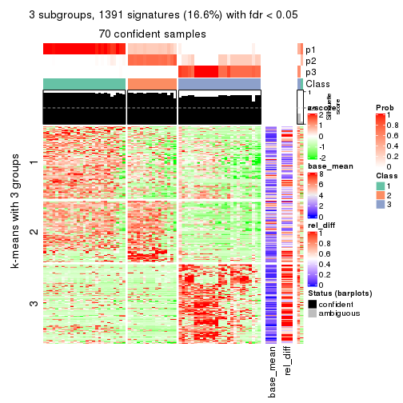
get_signatures(res, k = 4)
get_signatures(res, k = 5)
get_signatures(res, k = 6)
Signature heatmaps where rows are not scaled:
get_signatures(res, k = 2, scale_rows = FALSE)
get_signatures(res, k = 3, scale_rows = FALSE)
get_signatures(res, k = 4, scale_rows = FALSE)
get_signatures(res, k = 5, scale_rows = FALSE)
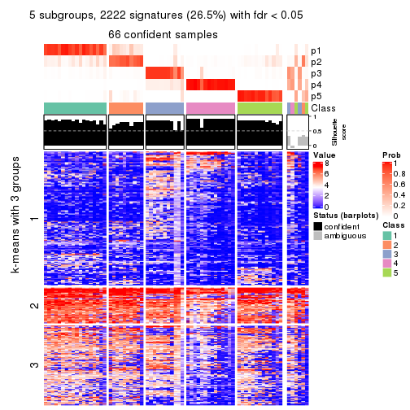
get_signatures(res, k = 6, scale_rows = FALSE)
Compare the overlap of signatures from different k:
compare_signatures(res)
get_signature() returns a data frame invisibly. TO get the list of signatures, the function
call should be assigned to a variable explicitly. In following code, if plot argument is set
to FALSE, no heatmap is plotted while only the differential analysis is performed.
# code only for demonstration
tb = get_signature(res, k = ..., plot = FALSE)
An example of the output of tb is:
#> which_row fdr mean_1 mean_2 scaled_mean_1 scaled_mean_2 km
#> 1 38 0.042760348 8.373488 9.131774 -0.5533452 0.5164555 1
#> 2 40 0.018707592 7.106213 8.469186 -0.6173731 0.5762149 1
#> 3 55 0.019134737 10.221463 11.207825 -0.6159697 0.5749050 1
#> 4 59 0.006059896 5.921854 7.869574 -0.6899429 0.6439467 1
#> 5 60 0.018055526 8.928898 10.211722 -0.6204761 0.5791110 1
#> 6 98 0.009384629 15.714769 14.887706 0.6635654 -0.6193277 2
...
The columns in tb are:
which_row: row indices corresponding to the input matrix.fdr: FDR for the differential test. mean_x: The mean value in group x.scaled_mean_x: The mean value in group x after rows are scaled.km: Row groups if k-means clustering is applied to rows.UMAP plot which shows how samples are separated.
dimension_reduction(res, k = 2, method = "UMAP")
dimension_reduction(res, k = 3, method = "UMAP")
dimension_reduction(res, k = 4, method = "UMAP")
dimension_reduction(res, k = 5, method = "UMAP")
dimension_reduction(res, k = 6, method = "UMAP")
Following heatmap shows how subgroups are split when increasing k:
collect_classes(res)
If matrix rows can be associated to genes, consider to use GO_Enrichment(res,
...) to perform function enrichment for the signature genes.
The object with results only for a single top-value method and a single partition method can be extracted as:
res = res_list["MAD", "hclust"]
# you can also extract it by
# res = res_list["MAD:hclust"]
A summary of res and all the functions that can be applied to it:
res
#> A 'ConsensusPartition' object with k = 2, 3, 4, 5, 6.
#> On a matrix with 8381 rows and 72 columns.
#> Top rows (838, 1676, 2514, 3352, 4190) are extracted by 'MAD' method.
#> Subgroups are detected by 'hclust' method.
#> Performed in total 1250 partitions by row resampling.
#> Best k for subgroups seems to be 3.
#>
#> Following methods can be applied to this 'ConsensusPartition' object:
#> [1] "cola_report" "collect_classes" "collect_plots"
#> [4] "collect_stats" "colnames" "compare_signatures"
#> [7] "consensus_heatmap" "dimension_reduction" "functional_enrichment"
#> [10] "get_anno_col" "get_anno" "get_classes"
#> [13] "get_consensus" "get_matrix" "get_membership"
#> [16] "get_param" "get_signatures" "get_stats"
#> [19] "is_best_k" "is_stable_k" "membership_heatmap"
#> [22] "ncol" "nrow" "plot_ecdf"
#> [25] "rownames" "select_partition_number" "show"
#> [28] "suggest_best_k" "test_to_known_factors"
collect_plots() function collects all the plots made from res for all k (number of partitions)
into one single page to provide an easy and fast comparison between different k.
collect_plots(res)
The plots are:
k and the heatmap of
predicted classes for each k.k.k.k.All the plots in panels can be made by individual functions and they are plotted later in this section.
select_partition_number() produces several plots showing different
statistics for choosing “optimized” k. There are following statistics:
k;k, the area increased is defined as \(A_k - A_{k-1}\).The detailed explanations of these statistics can be found in the cola vignette.
Generally speaking, lower PAC score, higher mean silhouette score or higher
concordance corresponds to better partition. Rand index and Jaccard index
measure how similar the current partition is compared to partition with k-1.
If they are too similar, we won't accept k is better than k-1.
select_partition_number(res)
The numeric values for all these statistics can be obtained by get_stats().
get_stats(res)
#> k 1-PAC mean_silhouette concordance area_increased Rand Jaccard
#> 2 2 0.752 0.811 0.921 0.3529 0.700 0.700
#> 3 3 0.703 0.864 0.916 0.6958 0.682 0.545
#> 4 4 0.664 0.802 0.874 0.0788 0.977 0.939
#> 5 5 0.828 0.833 0.881 0.0579 0.944 0.847
#> 6 6 0.880 0.817 0.886 0.0400 0.968 0.900
suggest_best_k() suggests the best \(k\) based on these statistics. The rules are as follows:
NA.suggest_best_k(res)
#> [1] 3
Following shows the table of the partitions (You need to click the show/hide
code output link to see it). The membership matrix (columns with name p*)
is inferred by
clue::cl_consensus()
function with the SE method. Basically the value in the membership matrix
represents the probability to belong to a certain group. The finall class
label for an item is determined with the group with highest probability it
belongs to.
In get_classes() function, the entropy is calculated from the membership
matrix and the silhouette score is calculated from the consensus matrix.
cbind(get_classes(res, k = 2), get_membership(res, k = 2))
#> class entropy silhouette p1 p2
#> SRR2558111 1 0.0000 0.908 1.000 0.000
#> SRR2558177 2 0.0000 0.918 0.000 1.000
#> SRR2558176 1 0.2948 0.885 0.948 0.052
#> SRR2558175 1 0.0000 0.908 1.000 0.000
#> SRR2558174 1 0.0000 0.908 1.000 0.000
#> SRR2558173 1 0.1843 0.899 0.972 0.028
#> SRR2558172 1 0.3274 0.876 0.940 0.060
#> SRR2558171 1 0.0000 0.908 1.000 0.000
#> SRR2558170 1 0.9954 0.233 0.540 0.460
#> SRR2558169 1 0.8661 0.610 0.712 0.288
#> SRR2558168 1 0.1843 0.900 0.972 0.028
#> SRR2558167 1 0.9286 0.516 0.656 0.344
#> SRR2558166 1 0.9944 0.243 0.544 0.456
#> SRR2558165 2 0.0000 0.918 0.000 1.000
#> SRR2558164 1 0.3584 0.873 0.932 0.068
#> SRR2558163 1 0.8861 0.584 0.696 0.304
#> SRR2558162 1 0.2778 0.888 0.952 0.048
#> SRR2558161 1 0.8608 0.621 0.716 0.284
#> SRR2558160 1 0.4022 0.862 0.920 0.080
#> SRR2558159 1 0.9944 0.243 0.544 0.456
#> SRR2558158 1 0.9944 0.243 0.544 0.456
#> SRR2558157 1 0.9954 0.233 0.540 0.460
#> SRR2558156 2 0.0000 0.918 0.000 1.000
#> SRR2558155 2 0.9850 0.214 0.428 0.572
#> SRR2558154 2 0.0000 0.918 0.000 1.000
#> SRR2558153 1 0.0000 0.908 1.000 0.000
#> SRR2558152 1 0.0000 0.908 1.000 0.000
#> SRR2558151 1 0.0000 0.908 1.000 0.000
#> SRR2558150 1 0.1843 0.900 0.972 0.028
#> SRR2558149 1 0.0000 0.908 1.000 0.000
#> SRR2558148 1 0.0000 0.908 1.000 0.000
#> SRR2558147 1 0.1843 0.900 0.972 0.028
#> SRR2558146 1 0.0000 0.908 1.000 0.000
#> SRR2558145 1 0.0000 0.908 1.000 0.000
#> SRR2558144 1 0.0000 0.908 1.000 0.000
#> SRR2558143 1 0.0000 0.908 1.000 0.000
#> SRR2558142 1 0.0672 0.905 0.992 0.008
#> SRR2558141 2 0.2948 0.876 0.052 0.948
#> SRR2558140 2 0.0000 0.918 0.000 1.000
#> SRR2558139 1 0.1843 0.900 0.972 0.028
#> SRR2558138 1 0.0000 0.908 1.000 0.000
#> SRR2558137 1 0.1843 0.900 0.972 0.028
#> SRR2558136 1 0.0000 0.908 1.000 0.000
#> SRR2558182 1 0.0000 0.908 1.000 0.000
#> SRR2558181 1 0.0000 0.908 1.000 0.000
#> SRR2558180 2 0.0000 0.918 0.000 1.000
#> SRR2558179 1 0.7299 0.718 0.796 0.204
#> SRR2558178 2 0.0672 0.913 0.008 0.992
#> SRR2558134 1 0.1843 0.900 0.972 0.028
#> SRR2558135 1 0.0000 0.908 1.000 0.000
#> SRR2558133 1 0.9954 0.233 0.540 0.460
#> SRR2558132 1 0.1843 0.900 0.972 0.028
#> SRR2558131 1 0.0000 0.908 1.000 0.000
#> SRR2558129 1 0.0000 0.908 1.000 0.000
#> SRR2558127 2 0.0000 0.918 0.000 1.000
#> SRR2558126 1 0.0000 0.908 1.000 0.000
#> SRR2558128 1 0.1843 0.900 0.972 0.028
#> SRR2558125 2 0.0000 0.918 0.000 1.000
#> SRR2558130 1 0.0000 0.908 1.000 0.000
#> SRR2558124 2 0.9686 0.312 0.396 0.604
#> SRR2558123 2 0.0000 0.918 0.000 1.000
#> SRR2558121 1 0.0000 0.908 1.000 0.000
#> SRR2558122 1 0.0000 0.908 1.000 0.000
#> SRR2558120 1 0.1843 0.900 0.972 0.028
#> SRR2558119 1 0.0000 0.908 1.000 0.000
#> SRR2558117 1 0.1843 0.900 0.972 0.028
#> SRR2558118 1 0.0000 0.908 1.000 0.000
#> SRR2558115 1 0.1843 0.900 0.972 0.028
#> SRR2558116 1 0.0000 0.908 1.000 0.000
#> SRR2558114 1 0.0000 0.908 1.000 0.000
#> SRR2558113 1 0.0376 0.907 0.996 0.004
#> SRR2558112 1 0.0000 0.908 1.000 0.000
cbind(get_classes(res, k = 3), get_membership(res, k = 3))
#> class entropy silhouette p1 p2 p3
#> SRR2558111 1 0.0000 0.983 1.000 0.000 0.000
#> SRR2558177 2 0.0000 0.894 0.000 1.000 0.000
#> SRR2558176 1 0.2903 0.923 0.924 0.048 0.028
#> SRR2558175 1 0.0000 0.983 1.000 0.000 0.000
#> SRR2558174 1 0.0000 0.983 1.000 0.000 0.000
#> SRR2558173 1 0.1919 0.951 0.956 0.024 0.020
#> SRR2558172 1 0.2301 0.931 0.936 0.060 0.004
#> SRR2558171 1 0.0000 0.983 1.000 0.000 0.000
#> SRR2558170 3 0.6081 0.576 0.004 0.344 0.652
#> SRR2558169 3 0.5277 0.715 0.024 0.180 0.796
#> SRR2558168 3 0.3752 0.794 0.144 0.000 0.856
#> SRR2558167 3 0.4887 0.677 0.000 0.228 0.772
#> SRR2558166 3 0.6057 0.581 0.004 0.340 0.656
#> SRR2558165 2 0.0000 0.894 0.000 1.000 0.000
#> SRR2558164 3 0.3295 0.781 0.096 0.008 0.896
#> SRR2558163 3 0.4575 0.704 0.004 0.184 0.812
#> SRR2558162 1 0.2918 0.922 0.924 0.044 0.032
#> SRR2558161 3 0.4121 0.710 0.000 0.168 0.832
#> SRR2558160 1 0.2772 0.910 0.916 0.080 0.004
#> SRR2558159 3 0.6057 0.581 0.004 0.340 0.656
#> SRR2558158 3 0.6057 0.581 0.004 0.340 0.656
#> SRR2558157 3 0.6081 0.576 0.004 0.344 0.652
#> SRR2558156 2 0.0000 0.894 0.000 1.000 0.000
#> SRR2558155 2 0.7671 0.379 0.380 0.568 0.052
#> SRR2558154 2 0.0000 0.894 0.000 1.000 0.000
#> SRR2558153 1 0.0000 0.983 1.000 0.000 0.000
#> SRR2558152 1 0.0000 0.983 1.000 0.000 0.000
#> SRR2558151 1 0.0000 0.983 1.000 0.000 0.000
#> SRR2558150 3 0.3752 0.794 0.144 0.000 0.856
#> SRR2558149 1 0.0000 0.983 1.000 0.000 0.000
#> SRR2558148 1 0.0000 0.983 1.000 0.000 0.000
#> SRR2558147 3 0.3752 0.794 0.144 0.000 0.856
#> SRR2558146 1 0.0000 0.983 1.000 0.000 0.000
#> SRR2558145 1 0.0000 0.983 1.000 0.000 0.000
#> SRR2558144 1 0.0000 0.983 1.000 0.000 0.000
#> SRR2558143 1 0.0000 0.983 1.000 0.000 0.000
#> SRR2558142 1 0.0661 0.975 0.988 0.008 0.004
#> SRR2558141 2 0.2096 0.847 0.004 0.944 0.052
#> SRR2558140 2 0.0000 0.894 0.000 1.000 0.000
#> SRR2558139 3 0.3752 0.794 0.144 0.000 0.856
#> SRR2558138 1 0.0000 0.983 1.000 0.000 0.000
#> SRR2558137 3 0.3752 0.794 0.144 0.000 0.856
#> SRR2558136 1 0.0000 0.983 1.000 0.000 0.000
#> SRR2558182 1 0.0000 0.983 1.000 0.000 0.000
#> SRR2558181 1 0.0000 0.983 1.000 0.000 0.000
#> SRR2558180 2 0.0000 0.894 0.000 1.000 0.000
#> SRR2558179 1 0.5778 0.712 0.768 0.200 0.032
#> SRR2558178 2 0.0592 0.888 0.000 0.988 0.012
#> SRR2558134 3 0.3752 0.794 0.144 0.000 0.856
#> SRR2558135 1 0.0000 0.983 1.000 0.000 0.000
#> SRR2558133 3 0.6081 0.576 0.004 0.344 0.652
#> SRR2558132 3 0.3752 0.794 0.144 0.000 0.856
#> SRR2558131 1 0.0000 0.983 1.000 0.000 0.000
#> SRR2558129 1 0.0000 0.983 1.000 0.000 0.000
#> SRR2558127 2 0.0000 0.894 0.000 1.000 0.000
#> SRR2558126 1 0.0000 0.983 1.000 0.000 0.000
#> SRR2558128 3 0.3752 0.794 0.144 0.000 0.856
#> SRR2558125 2 0.0000 0.894 0.000 1.000 0.000
#> SRR2558130 1 0.0000 0.983 1.000 0.000 0.000
#> SRR2558124 2 0.7533 0.423 0.348 0.600 0.052
#> SRR2558123 2 0.0000 0.894 0.000 1.000 0.000
#> SRR2558121 1 0.0000 0.983 1.000 0.000 0.000
#> SRR2558122 1 0.0000 0.983 1.000 0.000 0.000
#> SRR2558120 3 0.3752 0.794 0.144 0.000 0.856
#> SRR2558119 1 0.0237 0.980 0.996 0.000 0.004
#> SRR2558117 3 0.3752 0.794 0.144 0.000 0.856
#> SRR2558118 1 0.0000 0.983 1.000 0.000 0.000
#> SRR2558115 3 0.3752 0.794 0.144 0.000 0.856
#> SRR2558116 1 0.0000 0.983 1.000 0.000 0.000
#> SRR2558114 1 0.0000 0.983 1.000 0.000 0.000
#> SRR2558113 1 0.0475 0.979 0.992 0.004 0.004
#> SRR2558112 1 0.0000 0.983 1.000 0.000 0.000
cbind(get_classes(res, k = 4), get_membership(res, k = 4))
#> class entropy silhouette p1 p2 p3 p4
#> SRR2558111 1 0.0592 0.947 0.984 0.000 0.000 0.016
#> SRR2558177 2 0.0000 0.954 0.000 1.000 0.000 0.000
#> SRR2558176 1 0.4917 0.459 0.656 0.008 0.000 0.336
#> SRR2558175 1 0.0707 0.946 0.980 0.000 0.000 0.020
#> SRR2558174 1 0.0707 0.946 0.980 0.000 0.000 0.020
#> SRR2558173 1 0.3870 0.717 0.788 0.004 0.000 0.208
#> SRR2558172 1 0.3734 0.804 0.848 0.044 0.000 0.108
#> SRR2558171 1 0.0336 0.948 0.992 0.000 0.000 0.008
#> SRR2558170 3 0.7293 0.491 0.000 0.216 0.536 0.248
#> SRR2558169 3 0.6173 0.625 0.020 0.172 0.708 0.100
#> SRR2558168 3 0.2704 0.723 0.124 0.000 0.876 0.000
#> SRR2558167 3 0.5889 0.589 0.000 0.212 0.688 0.100
#> SRR2558166 3 0.7267 0.496 0.000 0.212 0.540 0.248
#> SRR2558165 2 0.0000 0.954 0.000 1.000 0.000 0.000
#> SRR2558164 3 0.2197 0.709 0.080 0.000 0.916 0.004
#> SRR2558163 3 0.5412 0.619 0.000 0.168 0.736 0.096
#> SRR2558162 1 0.5183 0.259 0.584 0.008 0.000 0.408
#> SRR2558161 3 0.5293 0.623 0.000 0.152 0.748 0.100
#> SRR2558160 1 0.3717 0.815 0.860 0.080 0.004 0.056
#> SRR2558159 3 0.7267 0.496 0.000 0.212 0.540 0.248
#> SRR2558158 3 0.7267 0.496 0.000 0.212 0.540 0.248
#> SRR2558157 3 0.7293 0.491 0.000 0.216 0.536 0.248
#> SRR2558156 2 0.0000 0.954 0.000 1.000 0.000 0.000
#> SRR2558155 4 0.7192 0.451 0.120 0.404 0.004 0.472
#> SRR2558154 2 0.0000 0.954 0.000 1.000 0.000 0.000
#> SRR2558153 1 0.0188 0.948 0.996 0.000 0.000 0.004
#> SRR2558152 1 0.0707 0.946 0.980 0.000 0.000 0.020
#> SRR2558151 1 0.0000 0.949 1.000 0.000 0.000 0.000
#> SRR2558150 3 0.2704 0.723 0.124 0.000 0.876 0.000
#> SRR2558149 1 0.0000 0.949 1.000 0.000 0.000 0.000
#> SRR2558148 1 0.0707 0.946 0.980 0.000 0.000 0.020
#> SRR2558147 3 0.2704 0.723 0.124 0.000 0.876 0.000
#> SRR2558146 1 0.0921 0.942 0.972 0.000 0.000 0.028
#> SRR2558145 1 0.0000 0.949 1.000 0.000 0.000 0.000
#> SRR2558144 1 0.0188 0.948 0.996 0.000 0.000 0.004
#> SRR2558143 1 0.0000 0.949 1.000 0.000 0.000 0.000
#> SRR2558142 1 0.1661 0.917 0.944 0.004 0.000 0.052
#> SRR2558141 2 0.3636 0.692 0.000 0.820 0.008 0.172
#> SRR2558140 2 0.0000 0.954 0.000 1.000 0.000 0.000
#> SRR2558139 3 0.2704 0.723 0.124 0.000 0.876 0.000
#> SRR2558138 1 0.0707 0.946 0.980 0.000 0.000 0.020
#> SRR2558137 3 0.2704 0.723 0.124 0.000 0.876 0.000
#> SRR2558136 1 0.0000 0.949 1.000 0.000 0.000 0.000
#> SRR2558182 1 0.0000 0.949 1.000 0.000 0.000 0.000
#> SRR2558181 1 0.0000 0.949 1.000 0.000 0.000 0.000
#> SRR2558180 2 0.0000 0.954 0.000 1.000 0.000 0.000
#> SRR2558179 4 0.6426 0.398 0.272 0.108 0.000 0.620
#> SRR2558178 2 0.2714 0.807 0.000 0.884 0.004 0.112
#> SRR2558134 3 0.2704 0.723 0.124 0.000 0.876 0.000
#> SRR2558135 1 0.0707 0.946 0.980 0.000 0.000 0.020
#> SRR2558133 3 0.7293 0.491 0.000 0.216 0.536 0.248
#> SRR2558132 3 0.2704 0.723 0.124 0.000 0.876 0.000
#> SRR2558131 1 0.0000 0.949 1.000 0.000 0.000 0.000
#> SRR2558129 1 0.0188 0.948 0.996 0.000 0.000 0.004
#> SRR2558127 2 0.0000 0.954 0.000 1.000 0.000 0.000
#> SRR2558126 1 0.0000 0.949 1.000 0.000 0.000 0.000
#> SRR2558128 3 0.2704 0.723 0.124 0.000 0.876 0.000
#> SRR2558125 2 0.0000 0.954 0.000 1.000 0.000 0.000
#> SRR2558130 1 0.0592 0.947 0.984 0.000 0.000 0.016
#> SRR2558124 4 0.6869 0.369 0.088 0.436 0.004 0.472
#> SRR2558123 2 0.0000 0.954 0.000 1.000 0.000 0.000
#> SRR2558121 1 0.0707 0.946 0.980 0.000 0.000 0.020
#> SRR2558122 1 0.0000 0.949 1.000 0.000 0.000 0.000
#> SRR2558120 3 0.2704 0.723 0.124 0.000 0.876 0.000
#> SRR2558119 1 0.0657 0.942 0.984 0.000 0.004 0.012
#> SRR2558117 3 0.2704 0.723 0.124 0.000 0.876 0.000
#> SRR2558118 1 0.0336 0.948 0.992 0.000 0.000 0.008
#> SRR2558115 3 0.2704 0.723 0.124 0.000 0.876 0.000
#> SRR2558116 1 0.0469 0.947 0.988 0.000 0.000 0.012
#> SRR2558114 1 0.0707 0.946 0.980 0.000 0.000 0.020
#> SRR2558113 1 0.1302 0.933 0.956 0.000 0.000 0.044
#> SRR2558112 1 0.0000 0.949 1.000 0.000 0.000 0.000
cbind(get_classes(res, k = 5), get_membership(res, k = 5))
#> class entropy silhouette p1 p2 p3 p4 p5
#> SRR2558111 1 0.0912 0.9138 0.972 0.000 0.000 0.016 0.012
#> SRR2558177 2 0.0000 0.8803 0.000 1.000 0.000 0.000 0.000
#> SRR2558176 1 0.4219 -0.0709 0.584 0.000 0.000 0.000 0.416
#> SRR2558175 1 0.1059 0.9130 0.968 0.000 0.004 0.008 0.020
#> SRR2558174 1 0.1059 0.9130 0.968 0.000 0.004 0.008 0.020
#> SRR2558173 1 0.3910 0.4741 0.720 0.000 0.000 0.008 0.272
#> SRR2558172 1 0.4758 0.6274 0.780 0.040 0.004 0.112 0.064
#> SRR2558171 1 0.0290 0.9184 0.992 0.000 0.000 0.000 0.008
#> SRR2558170 4 0.5125 0.8899 0.000 0.148 0.156 0.696 0.000
#> SRR2558169 4 0.7482 0.8181 0.016 0.100 0.176 0.564 0.144
#> SRR2558168 3 0.1608 0.9942 0.072 0.000 0.928 0.000 0.000
#> SRR2558167 4 0.7019 0.8181 0.000 0.140 0.128 0.588 0.144
#> SRR2558166 4 0.5046 0.8926 0.000 0.140 0.156 0.704 0.000
#> SRR2558165 2 0.0000 0.8803 0.000 1.000 0.000 0.000 0.000
#> SRR2558164 3 0.2221 0.9333 0.052 0.000 0.912 0.036 0.000
#> SRR2558163 4 0.6983 0.8292 0.000 0.096 0.176 0.584 0.144
#> SRR2558162 1 0.4594 -0.3980 0.508 0.000 0.004 0.004 0.484
#> SRR2558161 4 0.6385 0.6967 0.000 0.088 0.116 0.648 0.148
#> SRR2558160 1 0.4384 0.6862 0.808 0.080 0.004 0.072 0.036
#> SRR2558159 4 0.5046 0.8926 0.000 0.140 0.156 0.704 0.000
#> SRR2558158 4 0.5046 0.8926 0.000 0.140 0.156 0.704 0.000
#> SRR2558157 4 0.5125 0.8899 0.000 0.148 0.156 0.696 0.000
#> SRR2558156 2 0.0000 0.8803 0.000 1.000 0.000 0.000 0.000
#> SRR2558155 2 0.8229 0.2386 0.032 0.388 0.048 0.296 0.236
#> SRR2558154 2 0.0000 0.8803 0.000 1.000 0.000 0.000 0.000
#> SRR2558153 1 0.0162 0.9173 0.996 0.000 0.000 0.000 0.004
#> SRR2558152 1 0.1059 0.9130 0.968 0.000 0.004 0.008 0.020
#> SRR2558151 1 0.0000 0.9184 1.000 0.000 0.000 0.000 0.000
#> SRR2558150 3 0.1608 0.9942 0.072 0.000 0.928 0.000 0.000
#> SRR2558149 1 0.0000 0.9184 1.000 0.000 0.000 0.000 0.000
#> SRR2558148 1 0.1059 0.9132 0.968 0.000 0.004 0.008 0.020
#> SRR2558147 3 0.1608 0.9942 0.072 0.000 0.928 0.000 0.000
#> SRR2558146 1 0.1243 0.9093 0.960 0.000 0.004 0.008 0.028
#> SRR2558145 1 0.0000 0.9184 1.000 0.000 0.000 0.000 0.000
#> SRR2558144 1 0.0162 0.9173 0.996 0.000 0.000 0.000 0.004
#> SRR2558143 1 0.0000 0.9184 1.000 0.000 0.000 0.000 0.000
#> SRR2558142 1 0.2264 0.8505 0.912 0.004 0.000 0.060 0.024
#> SRR2558141 2 0.3463 0.7417 0.000 0.820 0.008 0.156 0.016
#> SRR2558140 2 0.0000 0.8803 0.000 1.000 0.000 0.000 0.000
#> SRR2558139 3 0.1608 0.9942 0.072 0.000 0.928 0.000 0.000
#> SRR2558138 1 0.1059 0.9130 0.968 0.000 0.004 0.008 0.020
#> SRR2558137 3 0.1608 0.9942 0.072 0.000 0.928 0.000 0.000
#> SRR2558136 1 0.0000 0.9184 1.000 0.000 0.000 0.000 0.000
#> SRR2558182 1 0.0000 0.9184 1.000 0.000 0.000 0.000 0.000
#> SRR2558181 1 0.0000 0.9184 1.000 0.000 0.000 0.000 0.000
#> SRR2558180 2 0.0000 0.8803 0.000 1.000 0.000 0.000 0.000
#> SRR2558179 5 0.5480 0.0000 0.260 0.040 0.000 0.040 0.660
#> SRR2558178 2 0.2692 0.8041 0.000 0.884 0.008 0.092 0.016
#> SRR2558134 3 0.1608 0.9942 0.072 0.000 0.928 0.000 0.000
#> SRR2558135 1 0.1059 0.9132 0.968 0.000 0.004 0.008 0.020
#> SRR2558133 4 0.5125 0.8899 0.000 0.148 0.156 0.696 0.000
#> SRR2558132 3 0.1608 0.9942 0.072 0.000 0.928 0.000 0.000
#> SRR2558131 1 0.0000 0.9184 1.000 0.000 0.000 0.000 0.000
#> SRR2558129 1 0.0162 0.9173 0.996 0.000 0.000 0.000 0.004
#> SRR2558127 2 0.0000 0.8803 0.000 1.000 0.000 0.000 0.000
#> SRR2558126 1 0.0000 0.9184 1.000 0.000 0.000 0.000 0.000
#> SRR2558128 3 0.1608 0.9942 0.072 0.000 0.928 0.000 0.000
#> SRR2558125 2 0.0000 0.8803 0.000 1.000 0.000 0.000 0.000
#> SRR2558130 1 0.0912 0.9138 0.972 0.000 0.000 0.016 0.012
#> SRR2558124 2 0.7838 0.3130 0.012 0.420 0.048 0.284 0.236
#> SRR2558123 2 0.0000 0.8803 0.000 1.000 0.000 0.000 0.000
#> SRR2558121 1 0.1059 0.9130 0.968 0.000 0.004 0.008 0.020
#> SRR2558122 1 0.0000 0.9184 1.000 0.000 0.000 0.000 0.000
#> SRR2558120 3 0.1608 0.9942 0.072 0.000 0.928 0.000 0.000
#> SRR2558119 1 0.1483 0.8855 0.952 0.000 0.028 0.008 0.012
#> SRR2558117 3 0.1608 0.9942 0.072 0.000 0.928 0.000 0.000
#> SRR2558118 1 0.0566 0.9166 0.984 0.000 0.000 0.012 0.004
#> SRR2558115 3 0.1608 0.9942 0.072 0.000 0.928 0.000 0.000
#> SRR2558116 1 0.0566 0.9171 0.984 0.000 0.000 0.004 0.012
#> SRR2558114 1 0.1059 0.9132 0.968 0.000 0.004 0.008 0.020
#> SRR2558113 1 0.1725 0.8919 0.936 0.000 0.000 0.020 0.044
#> SRR2558112 1 0.0000 0.9184 1.000 0.000 0.000 0.000 0.000
cbind(get_classes(res, k = 6), get_membership(res, k = 6))
#> class entropy silhouette p1 p2 p3 p4 p5 p6
#> SRR2558111 1 0.1398 0.9155 0.940 0.000 0.000 0.000 0.008 0.052
#> SRR2558177 2 0.0000 0.8613 0.000 1.000 0.000 0.000 0.000 0.000
#> SRR2558176 5 0.3728 0.5744 0.344 0.000 0.000 0.000 0.652 0.004
#> SRR2558175 1 0.1321 0.9212 0.952 0.000 0.004 0.000 0.020 0.024
#> SRR2558174 1 0.1321 0.9212 0.952 0.000 0.004 0.000 0.020 0.024
#> SRR2558173 1 0.4355 -0.0607 0.556 0.000 0.000 0.000 0.420 0.024
#> SRR2558172 1 0.4303 0.5967 0.732 0.040 0.000 0.000 0.024 0.204
#> SRR2558171 1 0.0858 0.9226 0.968 0.000 0.000 0.004 0.000 0.028
#> SRR2558170 4 0.3150 0.8510 0.000 0.104 0.064 0.832 0.000 0.000
#> SRR2558169 4 0.5411 0.7698 0.012 0.056 0.088 0.692 0.000 0.152
#> SRR2558168 3 0.1267 0.9953 0.060 0.000 0.940 0.000 0.000 0.000
#> SRR2558167 4 0.4788 0.7669 0.000 0.096 0.032 0.720 0.000 0.152
#> SRR2558166 4 0.3055 0.8542 0.000 0.096 0.064 0.840 0.000 0.000
#> SRR2558165 2 0.0000 0.8613 0.000 1.000 0.000 0.000 0.000 0.000
#> SRR2558164 3 0.2071 0.9467 0.044 0.000 0.916 0.012 0.000 0.028
#> SRR2558163 4 0.4869 0.7849 0.000 0.052 0.076 0.720 0.000 0.152
#> SRR2558162 5 0.3394 0.6378 0.200 0.000 0.000 0.000 0.776 0.024
#> SRR2558161 4 0.7085 0.4110 0.000 0.052 0.084 0.536 0.108 0.220
#> SRR2558160 1 0.5902 0.4006 0.652 0.076 0.000 0.012 0.140 0.120
#> SRR2558159 4 0.3055 0.8542 0.000 0.096 0.064 0.840 0.000 0.000
#> SRR2558158 4 0.3055 0.8542 0.000 0.096 0.064 0.840 0.000 0.000
#> SRR2558157 4 0.3150 0.8510 0.000 0.104 0.064 0.832 0.000 0.000
#> SRR2558156 2 0.0000 0.8613 0.000 1.000 0.000 0.000 0.000 0.000
#> SRR2558155 6 0.6535 0.0000 0.012 0.384 0.000 0.152 0.028 0.424
#> SRR2558154 2 0.0000 0.8613 0.000 1.000 0.000 0.000 0.000 0.000
#> SRR2558153 1 0.0458 0.9274 0.984 0.000 0.000 0.000 0.000 0.016
#> SRR2558152 1 0.1321 0.9212 0.952 0.000 0.004 0.000 0.020 0.024
#> SRR2558151 1 0.0146 0.9282 0.996 0.000 0.000 0.000 0.000 0.004
#> SRR2558150 3 0.1267 0.9953 0.060 0.000 0.940 0.000 0.000 0.000
#> SRR2558149 1 0.0000 0.9285 1.000 0.000 0.000 0.000 0.000 0.000
#> SRR2558148 1 0.1390 0.9212 0.948 0.000 0.004 0.000 0.016 0.032
#> SRR2558147 3 0.1267 0.9953 0.060 0.000 0.940 0.000 0.000 0.000
#> SRR2558146 1 0.1636 0.9140 0.936 0.000 0.004 0.000 0.036 0.024
#> SRR2558145 1 0.0000 0.9285 1.000 0.000 0.000 0.000 0.000 0.000
#> SRR2558144 1 0.0363 0.9268 0.988 0.000 0.000 0.000 0.000 0.012
#> SRR2558143 1 0.0146 0.9282 0.996 0.000 0.000 0.000 0.000 0.004
#> SRR2558142 1 0.2454 0.8435 0.876 0.004 0.000 0.000 0.016 0.104
#> SRR2558141 2 0.3086 0.5263 0.000 0.820 0.000 0.156 0.004 0.020
#> SRR2558140 2 0.0000 0.8613 0.000 1.000 0.000 0.000 0.000 0.000
#> SRR2558139 3 0.1267 0.9953 0.060 0.000 0.940 0.000 0.000 0.000
#> SRR2558138 1 0.1321 0.9212 0.952 0.000 0.004 0.000 0.020 0.024
#> SRR2558137 3 0.1267 0.9953 0.060 0.000 0.940 0.000 0.000 0.000
#> SRR2558136 1 0.0000 0.9285 1.000 0.000 0.000 0.000 0.000 0.000
#> SRR2558182 1 0.0000 0.9285 1.000 0.000 0.000 0.000 0.000 0.000
#> SRR2558181 1 0.0000 0.9285 1.000 0.000 0.000 0.000 0.000 0.000
#> SRR2558180 2 0.0000 0.8613 0.000 1.000 0.000 0.000 0.000 0.000
#> SRR2558179 5 0.5488 0.3789 0.088 0.004 0.000 0.024 0.608 0.276
#> SRR2558178 2 0.2333 0.6824 0.000 0.884 0.000 0.092 0.000 0.024
#> SRR2558134 3 0.1267 0.9953 0.060 0.000 0.940 0.000 0.000 0.000
#> SRR2558135 1 0.1390 0.9212 0.948 0.000 0.004 0.000 0.016 0.032
#> SRR2558133 4 0.3150 0.8510 0.000 0.104 0.064 0.832 0.000 0.000
#> SRR2558132 3 0.1267 0.9953 0.060 0.000 0.940 0.000 0.000 0.000
#> SRR2558131 1 0.0146 0.9282 0.996 0.000 0.000 0.000 0.000 0.004
#> SRR2558129 1 0.0363 0.9282 0.988 0.000 0.000 0.000 0.000 0.012
#> SRR2558127 2 0.0000 0.8613 0.000 1.000 0.000 0.000 0.000 0.000
#> SRR2558126 1 0.0146 0.9282 0.996 0.000 0.000 0.000 0.000 0.004
#> SRR2558128 3 0.1267 0.9953 0.060 0.000 0.940 0.000 0.000 0.000
#> SRR2558125 2 0.0000 0.8613 0.000 1.000 0.000 0.000 0.000 0.000
#> SRR2558130 1 0.1398 0.9155 0.940 0.000 0.000 0.000 0.008 0.052
#> SRR2558124 2 0.6237 -0.9252 0.000 0.416 0.000 0.152 0.028 0.404
#> SRR2558123 2 0.0000 0.8613 0.000 1.000 0.000 0.000 0.000 0.000
#> SRR2558121 1 0.1321 0.9212 0.952 0.000 0.004 0.000 0.020 0.024
#> SRR2558122 1 0.0146 0.9282 0.996 0.000 0.000 0.000 0.000 0.004
#> SRR2558120 3 0.1267 0.9953 0.060 0.000 0.940 0.000 0.000 0.000
#> SRR2558119 1 0.1789 0.8795 0.924 0.000 0.032 0.000 0.000 0.044
#> SRR2558117 3 0.1267 0.9953 0.060 0.000 0.940 0.000 0.000 0.000
#> SRR2558118 1 0.1152 0.9241 0.952 0.000 0.000 0.000 0.004 0.044
#> SRR2558115 3 0.1267 0.9953 0.060 0.000 0.940 0.000 0.000 0.000
#> SRR2558116 1 0.0972 0.9236 0.964 0.000 0.000 0.000 0.008 0.028
#> SRR2558114 1 0.1390 0.9212 0.948 0.000 0.004 0.000 0.016 0.032
#> SRR2558113 1 0.2066 0.8954 0.908 0.000 0.000 0.000 0.040 0.052
#> SRR2558112 1 0.0000 0.9285 1.000 0.000 0.000 0.000 0.000 0.000
Heatmaps for the consensus matrix. It visualizes the probability of two samples to be in a same group.
consensus_heatmap(res, k = 2)
consensus_heatmap(res, k = 3)
consensus_heatmap(res, k = 4)
consensus_heatmap(res, k = 5)
consensus_heatmap(res, k = 6)
Heatmaps for the membership of samples in all partitions to see how consistent they are:
membership_heatmap(res, k = 2)
membership_heatmap(res, k = 3)
membership_heatmap(res, k = 4)
membership_heatmap(res, k = 5)
membership_heatmap(res, k = 6)

As soon as we have had the classes for columns, we can look for signatures which are significantly different between classes which can be candidate marks for certain classes. Following are the heatmaps for signatures.
Signature heatmaps where rows are scaled:
get_signatures(res, k = 2)
get_signatures(res, k = 3)
get_signatures(res, k = 4)
get_signatures(res, k = 5)

get_signatures(res, k = 6)
Signature heatmaps where rows are not scaled:
get_signatures(res, k = 2, scale_rows = FALSE)
get_signatures(res, k = 3, scale_rows = FALSE)
get_signatures(res, k = 4, scale_rows = FALSE)
get_signatures(res, k = 5, scale_rows = FALSE)
get_signatures(res, k = 6, scale_rows = FALSE)
Compare the overlap of signatures from different k:
compare_signatures(res)
get_signature() returns a data frame invisibly. TO get the list of signatures, the function
call should be assigned to a variable explicitly. In following code, if plot argument is set
to FALSE, no heatmap is plotted while only the differential analysis is performed.
# code only for demonstration
tb = get_signature(res, k = ..., plot = FALSE)
An example of the output of tb is:
#> which_row fdr mean_1 mean_2 scaled_mean_1 scaled_mean_2 km
#> 1 38 0.042760348 8.373488 9.131774 -0.5533452 0.5164555 1
#> 2 40 0.018707592 7.106213 8.469186 -0.6173731 0.5762149 1
#> 3 55 0.019134737 10.221463 11.207825 -0.6159697 0.5749050 1
#> 4 59 0.006059896 5.921854 7.869574 -0.6899429 0.6439467 1
#> 5 60 0.018055526 8.928898 10.211722 -0.6204761 0.5791110 1
#> 6 98 0.009384629 15.714769 14.887706 0.6635654 -0.6193277 2
...
The columns in tb are:
which_row: row indices corresponding to the input matrix.fdr: FDR for the differential test. mean_x: The mean value in group x.scaled_mean_x: The mean value in group x after rows are scaled.km: Row groups if k-means clustering is applied to rows.UMAP plot which shows how samples are separated.
dimension_reduction(res, k = 2, method = "UMAP")
dimension_reduction(res, k = 3, method = "UMAP")
dimension_reduction(res, k = 4, method = "UMAP")
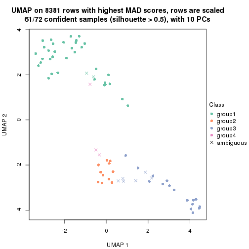
dimension_reduction(res, k = 5, method = "UMAP")

dimension_reduction(res, k = 6, method = "UMAP")
Following heatmap shows how subgroups are split when increasing k:
collect_classes(res)
If matrix rows can be associated to genes, consider to use GO_Enrichment(res,
...) to perform function enrichment for the signature genes.
The object with results only for a single top-value method and a single partition method can be extracted as:
res = res_list["MAD", "kmeans"]
# you can also extract it by
# res = res_list["MAD:kmeans"]
A summary of res and all the functions that can be applied to it:
res
#> A 'ConsensusPartition' object with k = 2, 3, 4, 5, 6.
#> On a matrix with 8381 rows and 72 columns.
#> Top rows (838, 1676, 2514, 3352, 4190) are extracted by 'MAD' method.
#> Subgroups are detected by 'kmeans' method.
#> Performed in total 1250 partitions by row resampling.
#> Best k for subgroups seems to be 2.
#>
#> Following methods can be applied to this 'ConsensusPartition' object:
#> [1] "cola_report" "collect_classes" "collect_plots"
#> [4] "collect_stats" "colnames" "compare_signatures"
#> [7] "consensus_heatmap" "dimension_reduction" "functional_enrichment"
#> [10] "get_anno_col" "get_anno" "get_classes"
#> [13] "get_consensus" "get_matrix" "get_membership"
#> [16] "get_param" "get_signatures" "get_stats"
#> [19] "is_best_k" "is_stable_k" "membership_heatmap"
#> [22] "ncol" "nrow" "plot_ecdf"
#> [25] "rownames" "select_partition_number" "show"
#> [28] "suggest_best_k" "test_to_known_factors"
collect_plots() function collects all the plots made from res for all k (number of partitions)
into one single page to provide an easy and fast comparison between different k.
collect_plots(res)
The plots are:
k and the heatmap of
predicted classes for each k.k.k.k.All the plots in panels can be made by individual functions and they are plotted later in this section.
select_partition_number() produces several plots showing different
statistics for choosing “optimized” k. There are following statistics:
k;k, the area increased is defined as \(A_k - A_{k-1}\).The detailed explanations of these statistics can be found in the cola vignette.
Generally speaking, lower PAC score, higher mean silhouette score or higher
concordance corresponds to better partition. Rand index and Jaccard index
measure how similar the current partition is compared to partition with k-1.
If they are too similar, we won't accept k is better than k-1.
select_partition_number(res)
The numeric values for all these statistics can be obtained by get_stats().
get_stats(res)
#> k 1-PAC mean_silhouette concordance area_increased Rand Jaccard
#> 2 2 0.914 0.920 0.967 0.4184 0.606 0.606
#> 3 3 0.731 0.867 0.915 0.4525 0.768 0.618
#> 4 4 0.782 0.821 0.877 0.1377 0.909 0.761
#> 5 5 0.812 0.821 0.877 0.0709 0.957 0.858
#> 6 6 0.751 0.721 0.844 0.0439 0.987 0.953
suggest_best_k() suggests the best \(k\) based on these statistics. The rules are as follows:
NA.suggest_best_k(res)
#> [1] 2
Following shows the table of the partitions (You need to click the show/hide
code output link to see it). The membership matrix (columns with name p*)
is inferred by
clue::cl_consensus()
function with the SE method. Basically the value in the membership matrix
represents the probability to belong to a certain group. The finall class
label for an item is determined with the group with highest probability it
belongs to.
In get_classes() function, the entropy is calculated from the membership
matrix and the silhouette score is calculated from the consensus matrix.
cbind(get_classes(res, k = 2), get_membership(res, k = 2))
#> class entropy silhouette p1 p2
#> SRR2558111 1 0.0000 0.956 1.000 0.000
#> SRR2558177 2 0.0376 0.994 0.004 0.996
#> SRR2558176 1 0.0000 0.956 1.000 0.000
#> SRR2558175 1 0.0000 0.956 1.000 0.000
#> SRR2558174 1 0.0000 0.956 1.000 0.000
#> SRR2558173 1 0.0000 0.956 1.000 0.000
#> SRR2558172 1 0.0000 0.956 1.000 0.000
#> SRR2558171 1 0.0000 0.956 1.000 0.000
#> SRR2558170 2 0.0000 0.992 0.000 1.000
#> SRR2558169 1 0.9427 0.480 0.640 0.360
#> SRR2558168 1 0.0376 0.954 0.996 0.004
#> SRR2558167 2 0.0000 0.992 0.000 1.000
#> SRR2558166 1 0.9983 0.170 0.524 0.476
#> SRR2558165 2 0.0376 0.994 0.004 0.996
#> SRR2558164 1 0.7219 0.752 0.800 0.200
#> SRR2558163 1 1.0000 0.101 0.504 0.496
#> SRR2558162 1 0.4939 0.859 0.892 0.108
#> SRR2558161 2 0.0000 0.992 0.000 1.000
#> SRR2558160 1 0.0938 0.947 0.988 0.012
#> SRR2558159 1 0.9795 0.344 0.584 0.416
#> SRR2558158 2 0.0000 0.992 0.000 1.000
#> SRR2558157 2 0.0376 0.994 0.004 0.996
#> SRR2558156 2 0.0376 0.994 0.004 0.996
#> SRR2558155 2 0.4161 0.905 0.084 0.916
#> SRR2558154 2 0.0000 0.992 0.000 1.000
#> SRR2558153 1 0.0000 0.956 1.000 0.000
#> SRR2558152 1 0.0000 0.956 1.000 0.000
#> SRR2558151 1 0.0000 0.956 1.000 0.000
#> SRR2558150 1 0.0376 0.954 0.996 0.004
#> SRR2558149 1 0.0000 0.956 1.000 0.000
#> SRR2558148 1 0.0000 0.956 1.000 0.000
#> SRR2558147 1 0.0376 0.954 0.996 0.004
#> SRR2558146 1 0.0000 0.956 1.000 0.000
#> SRR2558145 1 0.0000 0.956 1.000 0.000
#> SRR2558144 1 0.0000 0.956 1.000 0.000
#> SRR2558143 1 0.0000 0.956 1.000 0.000
#> SRR2558142 1 0.0000 0.956 1.000 0.000
#> SRR2558141 2 0.0376 0.994 0.004 0.996
#> SRR2558140 2 0.0376 0.994 0.004 0.996
#> SRR2558139 1 0.0376 0.954 0.996 0.004
#> SRR2558138 1 0.0000 0.956 1.000 0.000
#> SRR2558137 1 0.0376 0.954 0.996 0.004
#> SRR2558136 1 0.0000 0.956 1.000 0.000
#> SRR2558182 1 0.0000 0.956 1.000 0.000
#> SRR2558181 1 0.0000 0.956 1.000 0.000
#> SRR2558180 2 0.0376 0.994 0.004 0.996
#> SRR2558179 1 0.5946 0.820 0.856 0.144
#> SRR2558178 2 0.0376 0.994 0.004 0.996
#> SRR2558134 1 0.0376 0.954 0.996 0.004
#> SRR2558135 1 0.0000 0.956 1.000 0.000
#> SRR2558133 2 0.0376 0.994 0.004 0.996
#> SRR2558132 1 0.0376 0.954 0.996 0.004
#> SRR2558131 1 0.0000 0.956 1.000 0.000
#> SRR2558129 1 0.0000 0.956 1.000 0.000
#> SRR2558127 2 0.0376 0.994 0.004 0.996
#> SRR2558126 1 0.0000 0.956 1.000 0.000
#> SRR2558128 1 0.0376 0.954 0.996 0.004
#> SRR2558125 2 0.0376 0.994 0.004 0.996
#> SRR2558130 1 0.0000 0.956 1.000 0.000
#> SRR2558124 2 0.0376 0.994 0.004 0.996
#> SRR2558123 2 0.0376 0.994 0.004 0.996
#> SRR2558121 1 0.0000 0.956 1.000 0.000
#> SRR2558122 1 0.0000 0.956 1.000 0.000
#> SRR2558120 1 0.0376 0.954 0.996 0.004
#> SRR2558119 1 0.0000 0.956 1.000 0.000
#> SRR2558117 1 0.0376 0.954 0.996 0.004
#> SRR2558118 1 0.0000 0.956 1.000 0.000
#> SRR2558115 1 0.0376 0.954 0.996 0.004
#> SRR2558116 1 0.0000 0.956 1.000 0.000
#> SRR2558114 1 0.0000 0.956 1.000 0.000
#> SRR2558113 1 0.0000 0.956 1.000 0.000
#> SRR2558112 1 0.0000 0.956 1.000 0.000
cbind(get_classes(res, k = 3), get_membership(res, k = 3))
#> class entropy silhouette p1 p2 p3
#> SRR2558111 1 0.0592 0.946 0.988 0.000 0.012
#> SRR2558177 2 0.0000 0.912 0.000 1.000 0.000
#> SRR2558176 1 0.5138 0.675 0.748 0.000 0.252
#> SRR2558175 1 0.0000 0.951 1.000 0.000 0.000
#> SRR2558174 1 0.0000 0.951 1.000 0.000 0.000
#> SRR2558173 1 0.3551 0.827 0.868 0.000 0.132
#> SRR2558172 1 0.2537 0.885 0.920 0.000 0.080
#> SRR2558171 1 0.0424 0.948 0.992 0.000 0.008
#> SRR2558170 2 0.1753 0.893 0.000 0.952 0.048
#> SRR2558169 3 0.0237 0.711 0.004 0.000 0.996
#> SRR2558168 3 0.5254 0.840 0.264 0.000 0.736
#> SRR2558167 2 0.4062 0.822 0.000 0.836 0.164
#> SRR2558166 3 0.0237 0.707 0.000 0.004 0.996
#> SRR2558165 2 0.0000 0.912 0.000 1.000 0.000
#> SRR2558164 3 0.0237 0.711 0.004 0.000 0.996
#> SRR2558163 3 0.0237 0.707 0.000 0.004 0.996
#> SRR2558162 1 0.5254 0.657 0.736 0.000 0.264
#> SRR2558161 2 0.6168 0.550 0.000 0.588 0.412
#> SRR2558160 1 0.4702 0.729 0.788 0.000 0.212
#> SRR2558159 3 0.0237 0.707 0.000 0.004 0.996
#> SRR2558158 2 0.5397 0.726 0.000 0.720 0.280
#> SRR2558157 2 0.3340 0.852 0.000 0.880 0.120
#> SRR2558156 2 0.0000 0.912 0.000 1.000 0.000
#> SRR2558155 2 0.9797 0.250 0.324 0.424 0.252
#> SRR2558154 2 0.0000 0.912 0.000 1.000 0.000
#> SRR2558153 1 0.0424 0.948 0.992 0.000 0.008
#> SRR2558152 1 0.0000 0.951 1.000 0.000 0.000
#> SRR2558151 1 0.0000 0.951 1.000 0.000 0.000
#> SRR2558150 3 0.5591 0.830 0.304 0.000 0.696
#> SRR2558149 1 0.0000 0.951 1.000 0.000 0.000
#> SRR2558148 1 0.0000 0.951 1.000 0.000 0.000
#> SRR2558147 3 0.5591 0.830 0.304 0.000 0.696
#> SRR2558146 1 0.0000 0.951 1.000 0.000 0.000
#> SRR2558145 1 0.0000 0.951 1.000 0.000 0.000
#> SRR2558144 1 0.0000 0.951 1.000 0.000 0.000
#> SRR2558143 1 0.0000 0.951 1.000 0.000 0.000
#> SRR2558142 1 0.0424 0.948 0.992 0.000 0.008
#> SRR2558141 2 0.0000 0.912 0.000 1.000 0.000
#> SRR2558140 2 0.0000 0.912 0.000 1.000 0.000
#> SRR2558139 3 0.5591 0.830 0.304 0.000 0.696
#> SRR2558138 1 0.0000 0.951 1.000 0.000 0.000
#> SRR2558137 3 0.4291 0.821 0.180 0.000 0.820
#> SRR2558136 1 0.0000 0.951 1.000 0.000 0.000
#> SRR2558182 1 0.1289 0.921 0.968 0.000 0.032
#> SRR2558181 1 0.1289 0.921 0.968 0.000 0.032
#> SRR2558180 2 0.0000 0.912 0.000 1.000 0.000
#> SRR2558179 1 0.5254 0.657 0.736 0.000 0.264
#> SRR2558178 2 0.0000 0.912 0.000 1.000 0.000
#> SRR2558134 3 0.5591 0.830 0.304 0.000 0.696
#> SRR2558135 1 0.0000 0.951 1.000 0.000 0.000
#> SRR2558133 2 0.0000 0.912 0.000 1.000 0.000
#> SRR2558132 3 0.5529 0.833 0.296 0.000 0.704
#> SRR2558131 1 0.0000 0.951 1.000 0.000 0.000
#> SRR2558129 1 0.0000 0.951 1.000 0.000 0.000
#> SRR2558127 2 0.0000 0.912 0.000 1.000 0.000
#> SRR2558126 1 0.0424 0.948 0.992 0.000 0.008
#> SRR2558128 3 0.5254 0.840 0.264 0.000 0.736
#> SRR2558125 2 0.0000 0.912 0.000 1.000 0.000
#> SRR2558130 1 0.0592 0.946 0.988 0.000 0.012
#> SRR2558124 2 0.2796 0.870 0.000 0.908 0.092
#> SRR2558123 2 0.0000 0.912 0.000 1.000 0.000
#> SRR2558121 1 0.0000 0.951 1.000 0.000 0.000
#> SRR2558122 1 0.0000 0.951 1.000 0.000 0.000
#> SRR2558120 3 0.5591 0.830 0.304 0.000 0.696
#> SRR2558119 1 0.0000 0.951 1.000 0.000 0.000
#> SRR2558117 3 0.4452 0.826 0.192 0.000 0.808
#> SRR2558118 1 0.0892 0.940 0.980 0.000 0.020
#> SRR2558115 3 0.5591 0.830 0.304 0.000 0.696
#> SRR2558116 1 0.0000 0.951 1.000 0.000 0.000
#> SRR2558114 1 0.0000 0.951 1.000 0.000 0.000
#> SRR2558113 1 0.1163 0.934 0.972 0.000 0.028
#> SRR2558112 1 0.0000 0.951 1.000 0.000 0.000
cbind(get_classes(res, k = 4), get_membership(res, k = 4))
#> class entropy silhouette p1 p2 p3 p4
#> SRR2558111 1 0.2469 0.824 0.892 0.000 0.000 0.108
#> SRR2558177 2 0.0188 0.901 0.000 0.996 0.000 0.004
#> SRR2558176 4 0.4905 0.768 0.364 0.000 0.004 0.632
#> SRR2558175 1 0.0000 0.943 1.000 0.000 0.000 0.000
#> SRR2558174 1 0.0592 0.937 0.984 0.000 0.000 0.016
#> SRR2558173 4 0.4936 0.761 0.372 0.000 0.004 0.624
#> SRR2558172 4 0.5244 0.647 0.436 0.000 0.008 0.556
#> SRR2558171 1 0.0336 0.941 0.992 0.000 0.000 0.008
#> SRR2558170 2 0.4391 0.720 0.000 0.740 0.008 0.252
#> SRR2558169 3 0.5007 0.679 0.008 0.000 0.636 0.356
#> SRR2558168 3 0.0817 0.831 0.024 0.000 0.976 0.000
#> SRR2558167 2 0.6409 0.546 0.000 0.560 0.076 0.364
#> SRR2558166 3 0.5007 0.679 0.008 0.000 0.636 0.356
#> SRR2558165 2 0.0000 0.901 0.000 1.000 0.000 0.000
#> SRR2558164 3 0.4746 0.707 0.008 0.000 0.688 0.304
#> SRR2558163 3 0.5007 0.679 0.008 0.000 0.636 0.356
#> SRR2558162 4 0.4819 0.773 0.344 0.000 0.004 0.652
#> SRR2558161 4 0.6483 -0.282 0.000 0.312 0.096 0.592
#> SRR2558160 4 0.4936 0.763 0.372 0.000 0.004 0.624
#> SRR2558159 3 0.5007 0.679 0.008 0.000 0.636 0.356
#> SRR2558158 2 0.6574 0.530 0.000 0.548 0.088 0.364
#> SRR2558157 2 0.2611 0.844 0.000 0.896 0.008 0.096
#> SRR2558156 2 0.0000 0.901 0.000 1.000 0.000 0.000
#> SRR2558155 4 0.6515 0.559 0.156 0.172 0.008 0.664
#> SRR2558154 2 0.0188 0.901 0.000 0.996 0.000 0.004
#> SRR2558153 1 0.0336 0.941 0.992 0.000 0.000 0.008
#> SRR2558152 1 0.0469 0.939 0.988 0.000 0.000 0.012
#> SRR2558151 1 0.0000 0.943 1.000 0.000 0.000 0.000
#> SRR2558150 3 0.2281 0.828 0.096 0.000 0.904 0.000
#> SRR2558149 1 0.0000 0.943 1.000 0.000 0.000 0.000
#> SRR2558148 1 0.0000 0.943 1.000 0.000 0.000 0.000
#> SRR2558147 3 0.2281 0.828 0.096 0.000 0.904 0.000
#> SRR2558146 1 0.0707 0.933 0.980 0.000 0.000 0.020
#> SRR2558145 1 0.0000 0.943 1.000 0.000 0.000 0.000
#> SRR2558144 1 0.0000 0.943 1.000 0.000 0.000 0.000
#> SRR2558143 1 0.0000 0.943 1.000 0.000 0.000 0.000
#> SRR2558142 1 0.0469 0.939 0.988 0.000 0.000 0.012
#> SRR2558141 2 0.0592 0.897 0.000 0.984 0.000 0.016
#> SRR2558140 2 0.0336 0.900 0.000 0.992 0.000 0.008
#> SRR2558139 3 0.2281 0.828 0.096 0.000 0.904 0.000
#> SRR2558138 1 0.0188 0.942 0.996 0.000 0.000 0.004
#> SRR2558137 3 0.0469 0.826 0.012 0.000 0.988 0.000
#> SRR2558136 1 0.1302 0.893 0.956 0.000 0.044 0.000
#> SRR2558182 1 0.3172 0.709 0.840 0.000 0.160 0.000
#> SRR2558181 1 0.3172 0.709 0.840 0.000 0.160 0.000
#> SRR2558180 2 0.0000 0.901 0.000 1.000 0.000 0.000
#> SRR2558179 4 0.4819 0.773 0.344 0.000 0.004 0.652
#> SRR2558178 2 0.0592 0.897 0.000 0.984 0.000 0.016
#> SRR2558134 3 0.2281 0.828 0.096 0.000 0.904 0.000
#> SRR2558135 1 0.0000 0.943 1.000 0.000 0.000 0.000
#> SRR2558133 2 0.0000 0.901 0.000 1.000 0.000 0.000
#> SRR2558132 3 0.2149 0.829 0.088 0.000 0.912 0.000
#> SRR2558131 1 0.0336 0.941 0.992 0.000 0.000 0.008
#> SRR2558129 1 0.0000 0.943 1.000 0.000 0.000 0.000
#> SRR2558127 2 0.0000 0.901 0.000 1.000 0.000 0.000
#> SRR2558126 1 0.0921 0.923 0.972 0.000 0.000 0.028
#> SRR2558128 3 0.0817 0.831 0.024 0.000 0.976 0.000
#> SRR2558125 2 0.0336 0.900 0.000 0.992 0.000 0.008
#> SRR2558130 1 0.2814 0.786 0.868 0.000 0.000 0.132
#> SRR2558124 2 0.4673 0.611 0.000 0.700 0.008 0.292
#> SRR2558123 2 0.0000 0.901 0.000 1.000 0.000 0.000
#> SRR2558121 1 0.0469 0.939 0.988 0.000 0.000 0.012
#> SRR2558122 1 0.0188 0.942 0.996 0.000 0.000 0.004
#> SRR2558120 3 0.2281 0.828 0.096 0.000 0.904 0.000
#> SRR2558119 1 0.0000 0.943 1.000 0.000 0.000 0.000
#> SRR2558117 3 0.0469 0.826 0.012 0.000 0.988 0.000
#> SRR2558118 1 0.3024 0.759 0.852 0.000 0.000 0.148
#> SRR2558115 3 0.2281 0.828 0.096 0.000 0.904 0.000
#> SRR2558116 1 0.0188 0.942 0.996 0.000 0.000 0.004
#> SRR2558114 1 0.0000 0.943 1.000 0.000 0.000 0.000
#> SRR2558113 1 0.3975 0.541 0.760 0.000 0.000 0.240
#> SRR2558112 1 0.0000 0.943 1.000 0.000 0.000 0.000
cbind(get_classes(res, k = 5), get_membership(res, k = 5))
#> class entropy silhouette p1 p2 p3 p4 p5
#> SRR2558111 1 0.4728 0.759 0.740 0.000 0.164 0.004 0.092
#> SRR2558177 2 0.0290 0.883 0.000 0.992 0.008 0.000 0.000
#> SRR2558176 5 0.1082 0.844 0.028 0.000 0.000 0.008 0.964
#> SRR2558175 1 0.1082 0.912 0.964 0.000 0.008 0.000 0.028
#> SRR2558174 1 0.1894 0.900 0.920 0.000 0.008 0.000 0.072
#> SRR2558173 5 0.0955 0.845 0.028 0.000 0.000 0.004 0.968
#> SRR2558172 5 0.6282 0.580 0.248 0.000 0.192 0.004 0.556
#> SRR2558171 1 0.2450 0.892 0.896 0.000 0.076 0.000 0.028
#> SRR2558170 2 0.4350 0.214 0.000 0.588 0.004 0.408 0.000
#> SRR2558169 4 0.0000 0.705 0.000 0.000 0.000 1.000 0.000
#> SRR2558168 3 0.4697 0.904 0.020 0.000 0.592 0.388 0.000
#> SRR2558167 4 0.4891 0.435 0.000 0.316 0.044 0.640 0.000
#> SRR2558166 4 0.0290 0.701 0.000 0.000 0.008 0.992 0.000
#> SRR2558165 2 0.0000 0.883 0.000 1.000 0.000 0.000 0.000
#> SRR2558164 4 0.2136 0.571 0.000 0.000 0.088 0.904 0.008
#> SRR2558163 4 0.0290 0.701 0.000 0.000 0.008 0.992 0.000
#> SRR2558162 5 0.1369 0.841 0.028 0.000 0.008 0.008 0.956
#> SRR2558161 4 0.6106 0.572 0.000 0.144 0.172 0.648 0.036
#> SRR2558160 5 0.4087 0.806 0.040 0.000 0.168 0.008 0.784
#> SRR2558159 4 0.0000 0.705 0.000 0.000 0.000 1.000 0.000
#> SRR2558158 4 0.4565 0.469 0.000 0.308 0.028 0.664 0.000
#> SRR2558157 2 0.4403 0.445 0.000 0.668 0.004 0.316 0.012
#> SRR2558156 2 0.0000 0.883 0.000 1.000 0.000 0.000 0.000
#> SRR2558155 5 0.5149 0.711 0.008 0.032 0.328 0.004 0.628
#> SRR2558154 2 0.0290 0.883 0.000 0.992 0.008 0.000 0.000
#> SRR2558153 1 0.2172 0.897 0.908 0.000 0.076 0.000 0.016
#> SRR2558152 1 0.1697 0.902 0.932 0.000 0.008 0.000 0.060
#> SRR2558151 1 0.0510 0.917 0.984 0.000 0.016 0.000 0.000
#> SRR2558150 3 0.5490 0.939 0.084 0.000 0.592 0.324 0.000
#> SRR2558149 1 0.0404 0.916 0.988 0.000 0.012 0.000 0.000
#> SRR2558148 1 0.0566 0.916 0.984 0.000 0.012 0.000 0.004
#> SRR2558147 3 0.5490 0.939 0.084 0.000 0.592 0.324 0.000
#> SRR2558146 1 0.1740 0.903 0.932 0.000 0.012 0.000 0.056
#> SRR2558145 1 0.0510 0.917 0.984 0.000 0.016 0.000 0.000
#> SRR2558144 1 0.0703 0.917 0.976 0.000 0.024 0.000 0.000
#> SRR2558143 1 0.0703 0.917 0.976 0.000 0.024 0.000 0.000
#> SRR2558142 1 0.2628 0.878 0.884 0.000 0.088 0.000 0.028
#> SRR2558141 2 0.1877 0.854 0.000 0.924 0.064 0.000 0.012
#> SRR2558140 2 0.1106 0.875 0.000 0.964 0.024 0.000 0.012
#> SRR2558139 3 0.5490 0.939 0.084 0.000 0.592 0.324 0.000
#> SRR2558138 1 0.1484 0.906 0.944 0.000 0.008 0.000 0.048
#> SRR2558137 3 0.4350 0.875 0.004 0.000 0.588 0.408 0.000
#> SRR2558136 1 0.0510 0.916 0.984 0.000 0.016 0.000 0.000
#> SRR2558182 1 0.2230 0.835 0.884 0.000 0.116 0.000 0.000
#> SRR2558181 1 0.2230 0.835 0.884 0.000 0.116 0.000 0.000
#> SRR2558180 2 0.0000 0.883 0.000 1.000 0.000 0.000 0.000
#> SRR2558179 5 0.2409 0.839 0.028 0.000 0.056 0.008 0.908
#> SRR2558178 2 0.2677 0.816 0.000 0.872 0.112 0.000 0.016
#> SRR2558134 3 0.5490 0.939 0.084 0.000 0.592 0.324 0.000
#> SRR2558135 1 0.0566 0.916 0.984 0.000 0.012 0.000 0.004
#> SRR2558133 2 0.0162 0.883 0.000 0.996 0.000 0.000 0.004
#> SRR2558132 3 0.5260 0.931 0.060 0.000 0.592 0.348 0.000
#> SRR2558131 1 0.1740 0.907 0.932 0.000 0.056 0.000 0.012
#> SRR2558129 1 0.0609 0.917 0.980 0.000 0.020 0.000 0.000
#> SRR2558127 2 0.0000 0.883 0.000 1.000 0.000 0.000 0.000
#> SRR2558126 1 0.2448 0.882 0.892 0.000 0.088 0.000 0.020
#> SRR2558128 3 0.4697 0.904 0.020 0.000 0.592 0.388 0.000
#> SRR2558125 2 0.0898 0.878 0.000 0.972 0.020 0.000 0.008
#> SRR2558130 1 0.5033 0.717 0.716 0.000 0.156 0.004 0.124
#> SRR2558124 2 0.6414 0.319 0.000 0.532 0.204 0.004 0.260
#> SRR2558123 2 0.0000 0.883 0.000 1.000 0.000 0.000 0.000
#> SRR2558121 1 0.1697 0.902 0.932 0.000 0.008 0.000 0.060
#> SRR2558122 1 0.1522 0.911 0.944 0.000 0.044 0.000 0.012
#> SRR2558120 3 0.5490 0.939 0.084 0.000 0.592 0.324 0.000
#> SRR2558119 1 0.0771 0.918 0.976 0.000 0.020 0.000 0.004
#> SRR2558117 3 0.4455 0.883 0.008 0.000 0.588 0.404 0.000
#> SRR2558118 1 0.5044 0.718 0.716 0.000 0.140 0.004 0.140
#> SRR2558115 3 0.5490 0.939 0.084 0.000 0.592 0.324 0.000
#> SRR2558116 1 0.1444 0.915 0.948 0.000 0.040 0.000 0.012
#> SRR2558114 1 0.0566 0.916 0.984 0.000 0.012 0.000 0.004
#> SRR2558113 1 0.5677 0.594 0.644 0.000 0.152 0.004 0.200
#> SRR2558112 1 0.0404 0.916 0.988 0.000 0.012 0.000 0.000
cbind(get_classes(res, k = 6), get_membership(res, k = 6))
#> class entropy silhouette p1 p2 p3 p4 p5 p6
#> SRR2558111 1 0.4486 0.3613 0.576 0.000 0.000 0.012 0.016 0.396
#> SRR2558177 2 0.0146 0.8671 0.000 0.996 0.000 0.004 0.000 0.000
#> SRR2558176 5 0.0260 0.8131 0.000 0.000 0.000 0.000 0.992 0.008
#> SRR2558175 1 0.3232 0.7680 0.852 0.000 0.008 0.012 0.056 0.072
#> SRR2558174 1 0.3514 0.7583 0.832 0.000 0.008 0.012 0.068 0.080
#> SRR2558173 5 0.1411 0.7879 0.000 0.000 0.000 0.004 0.936 0.060
#> SRR2558172 6 0.5896 0.1797 0.336 0.000 0.000 0.028 0.116 0.520
#> SRR2558171 1 0.3311 0.7085 0.780 0.000 0.000 0.004 0.012 0.204
#> SRR2558170 4 0.3999 0.0842 0.000 0.496 0.000 0.500 0.000 0.004
#> SRR2558169 4 0.3101 0.7529 0.000 0.000 0.244 0.756 0.000 0.000
#> SRR2558168 3 0.0508 0.9495 0.000 0.000 0.984 0.012 0.000 0.004
#> SRR2558167 4 0.3301 0.6373 0.000 0.216 0.004 0.772 0.000 0.008
#> SRR2558166 4 0.3240 0.7519 0.000 0.000 0.244 0.752 0.000 0.004
#> SRR2558165 2 0.0520 0.8667 0.000 0.984 0.000 0.008 0.000 0.008
#> SRR2558164 4 0.4371 0.5964 0.000 0.000 0.344 0.620 0.000 0.036
#> SRR2558163 4 0.3240 0.7519 0.000 0.000 0.244 0.752 0.000 0.004
#> SRR2558162 5 0.0458 0.8125 0.000 0.000 0.000 0.000 0.984 0.016
#> SRR2558161 4 0.2979 0.6090 0.000 0.056 0.004 0.852 0.000 0.088
#> SRR2558160 5 0.4719 0.3078 0.016 0.000 0.000 0.024 0.564 0.396
#> SRR2558159 4 0.3101 0.7529 0.000 0.000 0.244 0.756 0.000 0.000
#> SRR2558158 4 0.3820 0.6638 0.000 0.204 0.032 0.756 0.000 0.008
#> SRR2558157 2 0.4521 0.1033 0.000 0.568 0.000 0.400 0.004 0.028
#> SRR2558156 2 0.0146 0.8667 0.000 0.996 0.000 0.004 0.000 0.000
#> SRR2558155 6 0.4615 -0.1520 0.000 0.008 0.000 0.116 0.164 0.712
#> SRR2558154 2 0.0291 0.8660 0.000 0.992 0.000 0.004 0.000 0.004
#> SRR2558153 1 0.2933 0.7217 0.796 0.000 0.000 0.004 0.000 0.200
#> SRR2558152 1 0.3569 0.7556 0.828 0.000 0.008 0.012 0.072 0.080
#> SRR2558151 1 0.1364 0.8014 0.944 0.000 0.004 0.004 0.000 0.048
#> SRR2558150 3 0.0790 0.9635 0.032 0.000 0.968 0.000 0.000 0.000
#> SRR2558149 1 0.1080 0.8019 0.960 0.000 0.004 0.004 0.000 0.032
#> SRR2558148 1 0.1628 0.7990 0.940 0.000 0.008 0.012 0.004 0.036
#> SRR2558147 3 0.0790 0.9635 0.032 0.000 0.968 0.000 0.000 0.000
#> SRR2558146 1 0.3623 0.7525 0.824 0.000 0.008 0.012 0.076 0.080
#> SRR2558145 1 0.1010 0.8022 0.960 0.000 0.000 0.004 0.000 0.036
#> SRR2558144 1 0.1644 0.7967 0.920 0.000 0.000 0.004 0.000 0.076
#> SRR2558143 1 0.1531 0.7983 0.928 0.000 0.000 0.004 0.000 0.068
#> SRR2558142 1 0.3426 0.6930 0.764 0.000 0.000 0.012 0.004 0.220
#> SRR2558141 2 0.2868 0.8069 0.000 0.840 0.000 0.028 0.000 0.132
#> SRR2558140 2 0.2178 0.8231 0.000 0.868 0.000 0.000 0.000 0.132
#> SRR2558139 3 0.0790 0.9635 0.032 0.000 0.968 0.000 0.000 0.000
#> SRR2558138 1 0.3350 0.7631 0.844 0.000 0.008 0.012 0.064 0.072
#> SRR2558137 3 0.0935 0.9370 0.000 0.000 0.964 0.032 0.000 0.004
#> SRR2558136 1 0.1080 0.8019 0.960 0.000 0.004 0.004 0.000 0.032
#> SRR2558182 1 0.2633 0.7322 0.864 0.000 0.112 0.004 0.000 0.020
#> SRR2558181 1 0.2633 0.7322 0.864 0.000 0.112 0.004 0.000 0.020
#> SRR2558180 2 0.0000 0.8672 0.000 1.000 0.000 0.000 0.000 0.000
#> SRR2558179 5 0.2480 0.7763 0.000 0.000 0.000 0.024 0.872 0.104
#> SRR2558178 2 0.4411 0.6653 0.000 0.672 0.000 0.048 0.004 0.276
#> SRR2558134 3 0.0790 0.9635 0.032 0.000 0.968 0.000 0.000 0.000
#> SRR2558135 1 0.1340 0.8024 0.948 0.000 0.000 0.008 0.004 0.040
#> SRR2558133 2 0.0777 0.8636 0.000 0.972 0.000 0.004 0.000 0.024
#> SRR2558132 3 0.0520 0.9560 0.008 0.000 0.984 0.008 0.000 0.000
#> SRR2558131 1 0.2402 0.7689 0.856 0.000 0.000 0.004 0.000 0.140
#> SRR2558129 1 0.1349 0.8000 0.940 0.000 0.000 0.004 0.000 0.056
#> SRR2558127 2 0.0000 0.8672 0.000 1.000 0.000 0.000 0.000 0.000
#> SRR2558126 1 0.3437 0.6829 0.752 0.000 0.000 0.004 0.008 0.236
#> SRR2558128 3 0.0508 0.9495 0.000 0.000 0.984 0.012 0.000 0.004
#> SRR2558125 2 0.1267 0.8549 0.000 0.940 0.000 0.000 0.000 0.060
#> SRR2558130 1 0.4940 0.2137 0.520 0.000 0.000 0.012 0.040 0.428
#> SRR2558124 2 0.6136 0.2965 0.000 0.440 0.000 0.104 0.044 0.412
#> SRR2558123 2 0.0000 0.8672 0.000 1.000 0.000 0.000 0.000 0.000
#> SRR2558121 1 0.3514 0.7583 0.832 0.000 0.008 0.012 0.068 0.080
#> SRR2558122 1 0.2191 0.7804 0.876 0.000 0.000 0.004 0.000 0.120
#> SRR2558120 3 0.0790 0.9635 0.032 0.000 0.968 0.000 0.000 0.000
#> SRR2558119 1 0.1901 0.8033 0.912 0.000 0.000 0.008 0.004 0.076
#> SRR2558117 3 0.0935 0.9370 0.000 0.000 0.964 0.032 0.000 0.004
#> SRR2558118 1 0.5088 0.3423 0.548 0.000 0.000 0.012 0.056 0.384
#> SRR2558115 3 0.0790 0.9635 0.032 0.000 0.968 0.000 0.000 0.000
#> SRR2558116 1 0.2162 0.7986 0.896 0.000 0.000 0.012 0.004 0.088
#> SRR2558114 1 0.1628 0.7990 0.940 0.000 0.008 0.012 0.004 0.036
#> SRR2558113 1 0.5301 0.0614 0.476 0.000 0.000 0.012 0.068 0.444
#> SRR2558112 1 0.0935 0.8023 0.964 0.000 0.004 0.000 0.000 0.032
Heatmaps for the consensus matrix. It visualizes the probability of two samples to be in a same group.
consensus_heatmap(res, k = 2)
consensus_heatmap(res, k = 3)
consensus_heatmap(res, k = 4)
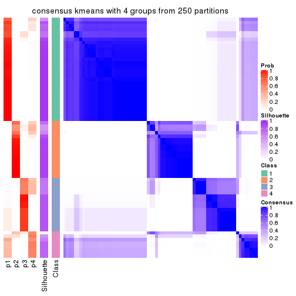
consensus_heatmap(res, k = 5)
consensus_heatmap(res, k = 6)
Heatmaps for the membership of samples in all partitions to see how consistent they are:
membership_heatmap(res, k = 2)
membership_heatmap(res, k = 3)
membership_heatmap(res, k = 4)
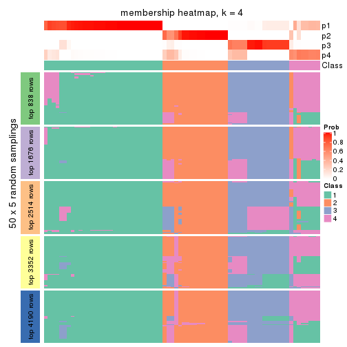
membership_heatmap(res, k = 5)
membership_heatmap(res, k = 6)
As soon as we have had the classes for columns, we can look for signatures which are significantly different between classes which can be candidate marks for certain classes. Following are the heatmaps for signatures.
Signature heatmaps where rows are scaled:
get_signatures(res, k = 2)
get_signatures(res, k = 3)
get_signatures(res, k = 4)
get_signatures(res, k = 5)
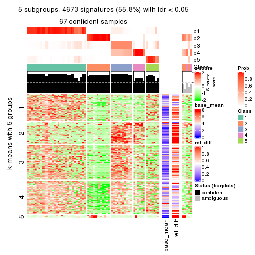
get_signatures(res, k = 6)
Signature heatmaps where rows are not scaled:
get_signatures(res, k = 2, scale_rows = FALSE)

get_signatures(res, k = 3, scale_rows = FALSE)
get_signatures(res, k = 4, scale_rows = FALSE)
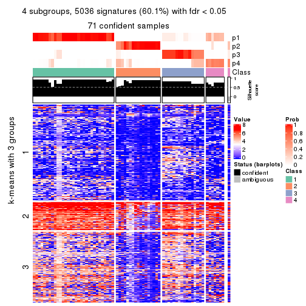
get_signatures(res, k = 5, scale_rows = FALSE)
get_signatures(res, k = 6, scale_rows = FALSE)
Compare the overlap of signatures from different k:
compare_signatures(res)
get_signature() returns a data frame invisibly. TO get the list of signatures, the function
call should be assigned to a variable explicitly. In following code, if plot argument is set
to FALSE, no heatmap is plotted while only the differential analysis is performed.
# code only for demonstration
tb = get_signature(res, k = ..., plot = FALSE)
An example of the output of tb is:
#> which_row fdr mean_1 mean_2 scaled_mean_1 scaled_mean_2 km
#> 1 38 0.042760348 8.373488 9.131774 -0.5533452 0.5164555 1
#> 2 40 0.018707592 7.106213 8.469186 -0.6173731 0.5762149 1
#> 3 55 0.019134737 10.221463 11.207825 -0.6159697 0.5749050 1
#> 4 59 0.006059896 5.921854 7.869574 -0.6899429 0.6439467 1
#> 5 60 0.018055526 8.928898 10.211722 -0.6204761 0.5791110 1
#> 6 98 0.009384629 15.714769 14.887706 0.6635654 -0.6193277 2
...
The columns in tb are:
which_row: row indices corresponding to the input matrix.fdr: FDR for the differential test. mean_x: The mean value in group x.scaled_mean_x: The mean value in group x after rows are scaled.km: Row groups if k-means clustering is applied to rows.UMAP plot which shows how samples are separated.
dimension_reduction(res, k = 2, method = "UMAP")
dimension_reduction(res, k = 3, method = "UMAP")
dimension_reduction(res, k = 4, method = "UMAP")

dimension_reduction(res, k = 5, method = "UMAP")
dimension_reduction(res, k = 6, method = "UMAP")
Following heatmap shows how subgroups are split when increasing k:
collect_classes(res)
If matrix rows can be associated to genes, consider to use GO_Enrichment(res,
...) to perform function enrichment for the signature genes.
The object with results only for a single top-value method and a single partition method can be extracted as:
res = res_list["MAD", "skmeans"]
# you can also extract it by
# res = res_list["MAD:skmeans"]
A summary of res and all the functions that can be applied to it:
res
#> A 'ConsensusPartition' object with k = 2, 3, 4, 5, 6.
#> On a matrix with 8381 rows and 72 columns.
#> Top rows (838, 1676, 2514, 3352, 4190) are extracted by 'MAD' method.
#> Subgroups are detected by 'skmeans' method.
#> Performed in total 1250 partitions by row resampling.
#> Best k for subgroups seems to be 3.
#>
#> Following methods can be applied to this 'ConsensusPartition' object:
#> [1] "cola_report" "collect_classes" "collect_plots"
#> [4] "collect_stats" "colnames" "compare_signatures"
#> [7] "consensus_heatmap" "dimension_reduction" "functional_enrichment"
#> [10] "get_anno_col" "get_anno" "get_classes"
#> [13] "get_consensus" "get_matrix" "get_membership"
#> [16] "get_param" "get_signatures" "get_stats"
#> [19] "is_best_k" "is_stable_k" "membership_heatmap"
#> [22] "ncol" "nrow" "plot_ecdf"
#> [25] "rownames" "select_partition_number" "show"
#> [28] "suggest_best_k" "test_to_known_factors"
collect_plots() function collects all the plots made from res for all k (number of partitions)
into one single page to provide an easy and fast comparison between different k.
collect_plots(res)
The plots are:
k and the heatmap of
predicted classes for each k.k.k.k.All the plots in panels can be made by individual functions and they are plotted later in this section.
select_partition_number() produces several plots showing different
statistics for choosing “optimized” k. There are following statistics:
k;k, the area increased is defined as \(A_k - A_{k-1}\).The detailed explanations of these statistics can be found in the cola vignette.
Generally speaking, lower PAC score, higher mean silhouette score or higher
concordance corresponds to better partition. Rand index and Jaccard index
measure how similar the current partition is compared to partition with k-1.
If they are too similar, we won't accept k is better than k-1.
select_partition_number(res)
The numeric values for all these statistics can be obtained by get_stats().
get_stats(res)
#> k 1-PAC mean_silhouette concordance area_increased Rand Jaccard
#> 2 2 1.000 0.966 0.986 0.4817 0.525 0.525
#> 3 3 0.924 0.941 0.975 0.3331 0.779 0.601
#> 4 4 0.702 0.781 0.876 0.1193 0.933 0.817
#> 5 5 0.659 0.711 0.814 0.0648 0.977 0.925
#> 6 6 0.703 0.519 0.766 0.0479 0.966 0.881
suggest_best_k() suggests the best \(k\) based on these statistics. The rules are as follows:
NA.suggest_best_k(res)
#> [1] 3
#> attr(,"optional")
#> [1] 2
There is also optional best \(k\) = 2 that is worth to check.
Following shows the table of the partitions (You need to click the show/hide
code output link to see it). The membership matrix (columns with name p*)
is inferred by
clue::cl_consensus()
function with the SE method. Basically the value in the membership matrix
represents the probability to belong to a certain group. The finall class
label for an item is determined with the group with highest probability it
belongs to.
In get_classes() function, the entropy is calculated from the membership
matrix and the silhouette score is calculated from the consensus matrix.
cbind(get_classes(res, k = 2), get_membership(res, k = 2))
#> class entropy silhouette p1 p2
#> SRR2558111 1 0.000 0.978 1.000 0.000
#> SRR2558177 2 0.000 0.999 0.000 1.000
#> SRR2558176 2 0.141 0.979 0.020 0.980
#> SRR2558175 1 0.000 0.978 1.000 0.000
#> SRR2558174 1 0.000 0.978 1.000 0.000
#> SRR2558173 1 0.802 0.683 0.756 0.244
#> SRR2558172 1 0.844 0.636 0.728 0.272
#> SRR2558171 1 0.000 0.978 1.000 0.000
#> SRR2558170 2 0.000 0.999 0.000 1.000
#> SRR2558169 2 0.000 0.999 0.000 1.000
#> SRR2558168 1 0.000 0.978 1.000 0.000
#> SRR2558167 2 0.000 0.999 0.000 1.000
#> SRR2558166 2 0.000 0.999 0.000 1.000
#> SRR2558165 2 0.000 0.999 0.000 1.000
#> SRR2558164 2 0.000 0.999 0.000 1.000
#> SRR2558163 2 0.000 0.999 0.000 1.000
#> SRR2558162 2 0.000 0.999 0.000 1.000
#> SRR2558161 2 0.000 0.999 0.000 1.000
#> SRR2558160 1 0.994 0.192 0.544 0.456
#> SRR2558159 2 0.000 0.999 0.000 1.000
#> SRR2558158 2 0.000 0.999 0.000 1.000
#> SRR2558157 2 0.000 0.999 0.000 1.000
#> SRR2558156 2 0.000 0.999 0.000 1.000
#> SRR2558155 2 0.000 0.999 0.000 1.000
#> SRR2558154 2 0.000 0.999 0.000 1.000
#> SRR2558153 1 0.000 0.978 1.000 0.000
#> SRR2558152 1 0.000 0.978 1.000 0.000
#> SRR2558151 1 0.000 0.978 1.000 0.000
#> SRR2558150 1 0.000 0.978 1.000 0.000
#> SRR2558149 1 0.000 0.978 1.000 0.000
#> SRR2558148 1 0.000 0.978 1.000 0.000
#> SRR2558147 1 0.000 0.978 1.000 0.000
#> SRR2558146 1 0.000 0.978 1.000 0.000
#> SRR2558145 1 0.000 0.978 1.000 0.000
#> SRR2558144 1 0.000 0.978 1.000 0.000
#> SRR2558143 1 0.000 0.978 1.000 0.000
#> SRR2558142 1 0.000 0.978 1.000 0.000
#> SRR2558141 2 0.000 0.999 0.000 1.000
#> SRR2558140 2 0.000 0.999 0.000 1.000
#> SRR2558139 1 0.000 0.978 1.000 0.000
#> SRR2558138 1 0.000 0.978 1.000 0.000
#> SRR2558137 1 0.000 0.978 1.000 0.000
#> SRR2558136 1 0.000 0.978 1.000 0.000
#> SRR2558182 1 0.000 0.978 1.000 0.000
#> SRR2558181 1 0.000 0.978 1.000 0.000
#> SRR2558180 2 0.000 0.999 0.000 1.000
#> SRR2558179 2 0.000 0.999 0.000 1.000
#> SRR2558178 2 0.000 0.999 0.000 1.000
#> SRR2558134 1 0.000 0.978 1.000 0.000
#> SRR2558135 1 0.000 0.978 1.000 0.000
#> SRR2558133 2 0.000 0.999 0.000 1.000
#> SRR2558132 1 0.000 0.978 1.000 0.000
#> SRR2558131 1 0.000 0.978 1.000 0.000
#> SRR2558129 1 0.000 0.978 1.000 0.000
#> SRR2558127 2 0.000 0.999 0.000 1.000
#> SRR2558126 1 0.000 0.978 1.000 0.000
#> SRR2558128 1 0.000 0.978 1.000 0.000
#> SRR2558125 2 0.000 0.999 0.000 1.000
#> SRR2558130 1 0.000 0.978 1.000 0.000
#> SRR2558124 2 0.000 0.999 0.000 1.000
#> SRR2558123 2 0.000 0.999 0.000 1.000
#> SRR2558121 1 0.000 0.978 1.000 0.000
#> SRR2558122 1 0.000 0.978 1.000 0.000
#> SRR2558120 1 0.000 0.978 1.000 0.000
#> SRR2558119 1 0.000 0.978 1.000 0.000
#> SRR2558117 1 0.000 0.978 1.000 0.000
#> SRR2558118 1 0.000 0.978 1.000 0.000
#> SRR2558115 1 0.000 0.978 1.000 0.000
#> SRR2558116 1 0.000 0.978 1.000 0.000
#> SRR2558114 1 0.000 0.978 1.000 0.000
#> SRR2558113 1 0.000 0.978 1.000 0.000
#> SRR2558112 1 0.000 0.978 1.000 0.000
cbind(get_classes(res, k = 3), get_membership(res, k = 3))
#> class entropy silhouette p1 p2 p3
#> SRR2558111 1 0.0000 0.966 1.000 0.000 0.000
#> SRR2558177 2 0.0000 0.978 0.000 1.000 0.000
#> SRR2558176 1 0.4605 0.750 0.796 0.204 0.000
#> SRR2558175 1 0.0000 0.966 1.000 0.000 0.000
#> SRR2558174 1 0.0000 0.966 1.000 0.000 0.000
#> SRR2558173 1 0.1163 0.945 0.972 0.028 0.000
#> SRR2558172 1 0.3116 0.869 0.892 0.108 0.000
#> SRR2558171 1 0.0000 0.966 1.000 0.000 0.000
#> SRR2558170 2 0.0000 0.978 0.000 1.000 0.000
#> SRR2558169 3 0.3340 0.873 0.000 0.120 0.880
#> SRR2558168 3 0.0000 0.978 0.000 0.000 1.000
#> SRR2558167 2 0.0000 0.978 0.000 1.000 0.000
#> SRR2558166 3 0.2711 0.910 0.000 0.088 0.912
#> SRR2558165 2 0.0000 0.978 0.000 1.000 0.000
#> SRR2558164 3 0.0424 0.974 0.000 0.008 0.992
#> SRR2558163 3 0.2448 0.922 0.000 0.076 0.924
#> SRR2558162 2 0.0000 0.978 0.000 1.000 0.000
#> SRR2558161 2 0.0000 0.978 0.000 1.000 0.000
#> SRR2558160 1 0.6008 0.432 0.628 0.372 0.000
#> SRR2558159 2 0.6215 0.203 0.000 0.572 0.428
#> SRR2558158 2 0.0000 0.978 0.000 1.000 0.000
#> SRR2558157 2 0.0000 0.978 0.000 1.000 0.000
#> SRR2558156 2 0.0000 0.978 0.000 1.000 0.000
#> SRR2558155 2 0.0000 0.978 0.000 1.000 0.000
#> SRR2558154 2 0.0000 0.978 0.000 1.000 0.000
#> SRR2558153 1 0.0000 0.966 1.000 0.000 0.000
#> SRR2558152 1 0.0000 0.966 1.000 0.000 0.000
#> SRR2558151 1 0.0000 0.966 1.000 0.000 0.000
#> SRR2558150 3 0.0000 0.978 0.000 0.000 1.000
#> SRR2558149 1 0.0000 0.966 1.000 0.000 0.000
#> SRR2558148 1 0.0237 0.964 0.996 0.000 0.004
#> SRR2558147 3 0.0000 0.978 0.000 0.000 1.000
#> SRR2558146 1 0.0237 0.964 0.996 0.000 0.004
#> SRR2558145 1 0.0000 0.966 1.000 0.000 0.000
#> SRR2558144 1 0.0000 0.966 1.000 0.000 0.000
#> SRR2558143 1 0.0000 0.966 1.000 0.000 0.000
#> SRR2558142 1 0.0000 0.966 1.000 0.000 0.000
#> SRR2558141 2 0.0000 0.978 0.000 1.000 0.000
#> SRR2558140 2 0.0000 0.978 0.000 1.000 0.000
#> SRR2558139 3 0.0000 0.978 0.000 0.000 1.000
#> SRR2558138 1 0.0000 0.966 1.000 0.000 0.000
#> SRR2558137 3 0.0000 0.978 0.000 0.000 1.000
#> SRR2558136 1 0.0424 0.962 0.992 0.000 0.008
#> SRR2558182 1 0.4121 0.801 0.832 0.000 0.168
#> SRR2558181 1 0.4121 0.801 0.832 0.000 0.168
#> SRR2558180 2 0.0000 0.978 0.000 1.000 0.000
#> SRR2558179 2 0.0237 0.974 0.004 0.996 0.000
#> SRR2558178 2 0.0000 0.978 0.000 1.000 0.000
#> SRR2558134 3 0.0000 0.978 0.000 0.000 1.000
#> SRR2558135 1 0.0000 0.966 1.000 0.000 0.000
#> SRR2558133 2 0.0000 0.978 0.000 1.000 0.000
#> SRR2558132 3 0.0000 0.978 0.000 0.000 1.000
#> SRR2558131 1 0.0000 0.966 1.000 0.000 0.000
#> SRR2558129 1 0.0424 0.962 0.992 0.000 0.008
#> SRR2558127 2 0.0000 0.978 0.000 1.000 0.000
#> SRR2558126 1 0.0000 0.966 1.000 0.000 0.000
#> SRR2558128 3 0.0000 0.978 0.000 0.000 1.000
#> SRR2558125 2 0.0000 0.978 0.000 1.000 0.000
#> SRR2558130 1 0.0000 0.966 1.000 0.000 0.000
#> SRR2558124 2 0.0000 0.978 0.000 1.000 0.000
#> SRR2558123 2 0.0000 0.978 0.000 1.000 0.000
#> SRR2558121 1 0.0000 0.966 1.000 0.000 0.000
#> SRR2558122 1 0.0000 0.966 1.000 0.000 0.000
#> SRR2558120 3 0.0000 0.978 0.000 0.000 1.000
#> SRR2558119 1 0.0747 0.956 0.984 0.000 0.016
#> SRR2558117 3 0.0000 0.978 0.000 0.000 1.000
#> SRR2558118 1 0.0000 0.966 1.000 0.000 0.000
#> SRR2558115 3 0.0000 0.978 0.000 0.000 1.000
#> SRR2558116 1 0.0000 0.966 1.000 0.000 0.000
#> SRR2558114 1 0.0000 0.966 1.000 0.000 0.000
#> SRR2558113 1 0.0000 0.966 1.000 0.000 0.000
#> SRR2558112 1 0.0000 0.966 1.000 0.000 0.000
cbind(get_classes(res, k = 4), get_membership(res, k = 4))
#> class entropy silhouette p1 p2 p3 p4
#> SRR2558111 1 0.3486 0.753 0.812 0.000 0.000 0.188
#> SRR2558177 2 0.0000 0.930 0.000 1.000 0.000 0.000
#> SRR2558176 4 0.4419 0.704 0.104 0.084 0.000 0.812
#> SRR2558175 1 0.3123 0.790 0.844 0.000 0.000 0.156
#> SRR2558174 1 0.4454 0.641 0.692 0.000 0.000 0.308
#> SRR2558173 4 0.4617 0.615 0.204 0.032 0.000 0.764
#> SRR2558172 4 0.6464 0.354 0.384 0.076 0.000 0.540
#> SRR2558171 1 0.3975 0.663 0.760 0.000 0.000 0.240
#> SRR2558170 2 0.2011 0.878 0.000 0.920 0.000 0.080
#> SRR2558169 3 0.7404 0.316 0.000 0.336 0.484 0.180
#> SRR2558168 3 0.0000 0.882 0.000 0.000 1.000 0.000
#> SRR2558167 2 0.2868 0.835 0.000 0.864 0.000 0.136
#> SRR2558166 3 0.6976 0.525 0.000 0.240 0.580 0.180
#> SRR2558165 2 0.0000 0.930 0.000 1.000 0.000 0.000
#> SRR2558164 3 0.3196 0.799 0.000 0.008 0.856 0.136
#> SRR2558163 3 0.6811 0.558 0.000 0.216 0.604 0.180
#> SRR2558162 4 0.4509 0.616 0.004 0.288 0.000 0.708
#> SRR2558161 2 0.2921 0.832 0.000 0.860 0.000 0.140
#> SRR2558160 4 0.6852 0.674 0.208 0.192 0.000 0.600
#> SRR2558159 2 0.6840 0.459 0.000 0.600 0.220 0.180
#> SRR2558158 2 0.3074 0.820 0.000 0.848 0.000 0.152
#> SRR2558157 2 0.0000 0.930 0.000 1.000 0.000 0.000
#> SRR2558156 2 0.0000 0.930 0.000 1.000 0.000 0.000
#> SRR2558155 2 0.3400 0.711 0.000 0.820 0.000 0.180
#> SRR2558154 2 0.0000 0.930 0.000 1.000 0.000 0.000
#> SRR2558153 1 0.3074 0.775 0.848 0.000 0.000 0.152
#> SRR2558152 1 0.3837 0.738 0.776 0.000 0.000 0.224
#> SRR2558151 1 0.0000 0.830 1.000 0.000 0.000 0.000
#> SRR2558150 3 0.0188 0.883 0.004 0.000 0.996 0.000
#> SRR2558149 1 0.0000 0.830 1.000 0.000 0.000 0.000
#> SRR2558148 1 0.1211 0.831 0.960 0.000 0.000 0.040
#> SRR2558147 3 0.0188 0.883 0.004 0.000 0.996 0.000
#> SRR2558146 1 0.4872 0.545 0.640 0.000 0.004 0.356
#> SRR2558145 1 0.0000 0.830 1.000 0.000 0.000 0.000
#> SRR2558144 1 0.0921 0.832 0.972 0.000 0.000 0.028
#> SRR2558143 1 0.0188 0.830 0.996 0.000 0.000 0.004
#> SRR2558142 1 0.2973 0.790 0.856 0.000 0.000 0.144
#> SRR2558141 2 0.0000 0.930 0.000 1.000 0.000 0.000
#> SRR2558140 2 0.0000 0.930 0.000 1.000 0.000 0.000
#> SRR2558139 3 0.0188 0.883 0.004 0.000 0.996 0.000
#> SRR2558138 1 0.3569 0.762 0.804 0.000 0.000 0.196
#> SRR2558137 3 0.0817 0.874 0.000 0.000 0.976 0.024
#> SRR2558136 1 0.0592 0.829 0.984 0.000 0.016 0.000
#> SRR2558182 1 0.4248 0.621 0.768 0.000 0.220 0.012
#> SRR2558181 1 0.4175 0.633 0.776 0.000 0.212 0.012
#> SRR2558180 2 0.0000 0.930 0.000 1.000 0.000 0.000
#> SRR2558179 4 0.4746 0.500 0.000 0.368 0.000 0.632
#> SRR2558178 2 0.0000 0.930 0.000 1.000 0.000 0.000
#> SRR2558134 3 0.0188 0.883 0.004 0.000 0.996 0.000
#> SRR2558135 1 0.1637 0.832 0.940 0.000 0.000 0.060
#> SRR2558133 2 0.0000 0.930 0.000 1.000 0.000 0.000
#> SRR2558132 3 0.0188 0.883 0.004 0.000 0.996 0.000
#> SRR2558131 1 0.1389 0.829 0.952 0.000 0.000 0.048
#> SRR2558129 1 0.0804 0.832 0.980 0.000 0.008 0.012
#> SRR2558127 2 0.0000 0.930 0.000 1.000 0.000 0.000
#> SRR2558126 1 0.3024 0.799 0.852 0.000 0.000 0.148
#> SRR2558128 3 0.0000 0.882 0.000 0.000 1.000 0.000
#> SRR2558125 2 0.0000 0.930 0.000 1.000 0.000 0.000
#> SRR2558130 1 0.4277 0.680 0.720 0.000 0.000 0.280
#> SRR2558124 2 0.0592 0.918 0.000 0.984 0.000 0.016
#> SRR2558123 2 0.0000 0.930 0.000 1.000 0.000 0.000
#> SRR2558121 1 0.3688 0.750 0.792 0.000 0.000 0.208
#> SRR2558122 1 0.1637 0.829 0.940 0.000 0.000 0.060
#> SRR2558120 3 0.0188 0.883 0.004 0.000 0.996 0.000
#> SRR2558119 1 0.3156 0.805 0.884 0.000 0.048 0.068
#> SRR2558117 3 0.0592 0.877 0.000 0.000 0.984 0.016
#> SRR2558118 1 0.4830 0.476 0.608 0.000 0.000 0.392
#> SRR2558115 3 0.0188 0.883 0.004 0.000 0.996 0.000
#> SRR2558116 1 0.1867 0.833 0.928 0.000 0.000 0.072
#> SRR2558114 1 0.1109 0.834 0.968 0.000 0.004 0.028
#> SRR2558113 1 0.4830 0.463 0.608 0.000 0.000 0.392
#> SRR2558112 1 0.0336 0.831 0.992 0.000 0.000 0.008
cbind(get_classes(res, k = 5), get_membership(res, k = 5))
#> class entropy silhouette p1 p2 p3 p4 p5
#> SRR2558111 1 0.5607 0.5886 0.632 0.000 0.000 0.140 0.228
#> SRR2558177 2 0.0162 0.8802 0.000 0.996 0.000 0.004 0.000
#> SRR2558176 5 0.1885 0.6339 0.012 0.032 0.000 0.020 0.936
#> SRR2558175 1 0.3779 0.7003 0.752 0.000 0.000 0.012 0.236
#> SRR2558174 1 0.5102 0.5521 0.580 0.000 0.000 0.044 0.376
#> SRR2558173 5 0.3036 0.6265 0.064 0.028 0.000 0.028 0.880
#> SRR2558172 5 0.7813 0.3093 0.300 0.100 0.000 0.172 0.428
#> SRR2558171 1 0.5341 0.5939 0.664 0.000 0.000 0.124 0.212
#> SRR2558170 2 0.3480 0.5905 0.000 0.752 0.000 0.248 0.000
#> SRR2558169 4 0.5466 0.8468 0.000 0.152 0.192 0.656 0.000
#> SRR2558168 3 0.0880 0.9029 0.000 0.000 0.968 0.032 0.000
#> SRR2558167 2 0.3774 0.4953 0.000 0.704 0.000 0.296 0.000
#> SRR2558166 4 0.5547 0.8489 0.000 0.148 0.208 0.644 0.000
#> SRR2558165 2 0.0000 0.8819 0.000 1.000 0.000 0.000 0.000
#> SRR2558164 3 0.4703 0.2877 0.000 0.016 0.640 0.336 0.008
#> SRR2558163 4 0.5694 0.8346 0.000 0.136 0.224 0.636 0.004
#> SRR2558162 5 0.5366 0.5572 0.004 0.256 0.000 0.088 0.652
#> SRR2558161 2 0.4218 0.4164 0.000 0.660 0.000 0.332 0.008
#> SRR2558160 5 0.7342 0.5800 0.116 0.152 0.000 0.188 0.544
#> SRR2558159 4 0.4984 0.6640 0.000 0.308 0.052 0.640 0.000
#> SRR2558158 2 0.4287 -0.0594 0.000 0.540 0.000 0.460 0.000
#> SRR2558157 2 0.0510 0.8728 0.000 0.984 0.000 0.016 0.000
#> SRR2558156 2 0.0000 0.8819 0.000 1.000 0.000 0.000 0.000
#> SRR2558155 2 0.4411 0.6117 0.000 0.764 0.000 0.120 0.116
#> SRR2558154 2 0.0162 0.8802 0.000 0.996 0.000 0.004 0.000
#> SRR2558153 1 0.4636 0.6746 0.744 0.000 0.000 0.124 0.132
#> SRR2558152 1 0.4714 0.6304 0.644 0.000 0.000 0.032 0.324
#> SRR2558151 1 0.1082 0.7451 0.964 0.000 0.000 0.028 0.008
#> SRR2558150 3 0.0000 0.9155 0.000 0.000 1.000 0.000 0.000
#> SRR2558149 1 0.0912 0.7459 0.972 0.000 0.000 0.016 0.012
#> SRR2558148 1 0.3132 0.7479 0.864 0.000 0.008 0.036 0.092
#> SRR2558147 3 0.0000 0.9155 0.000 0.000 1.000 0.000 0.000
#> SRR2558146 1 0.6099 0.4469 0.520 0.000 0.040 0.048 0.392
#> SRR2558145 1 0.1364 0.7431 0.952 0.000 0.000 0.036 0.012
#> SRR2558144 1 0.2962 0.7339 0.868 0.000 0.000 0.084 0.048
#> SRR2558143 1 0.2522 0.7514 0.896 0.000 0.000 0.052 0.052
#> SRR2558142 1 0.4700 0.6859 0.728 0.000 0.000 0.088 0.184
#> SRR2558141 2 0.0000 0.8819 0.000 1.000 0.000 0.000 0.000
#> SRR2558140 2 0.0000 0.8819 0.000 1.000 0.000 0.000 0.000
#> SRR2558139 3 0.0000 0.9155 0.000 0.000 1.000 0.000 0.000
#> SRR2558138 1 0.4301 0.6766 0.712 0.000 0.000 0.028 0.260
#> SRR2558137 3 0.2891 0.7747 0.000 0.000 0.824 0.176 0.000
#> SRR2558136 1 0.2339 0.7442 0.912 0.000 0.052 0.028 0.008
#> SRR2558182 1 0.4313 0.5869 0.716 0.000 0.260 0.016 0.008
#> SRR2558181 1 0.4124 0.6226 0.744 0.000 0.232 0.016 0.008
#> SRR2558180 2 0.0000 0.8819 0.000 1.000 0.000 0.000 0.000
#> SRR2558179 5 0.5464 0.4878 0.004 0.332 0.000 0.068 0.596
#> SRR2558178 2 0.0290 0.8780 0.000 0.992 0.000 0.008 0.000
#> SRR2558134 3 0.0000 0.9155 0.000 0.000 1.000 0.000 0.000
#> SRR2558135 1 0.3201 0.7551 0.852 0.000 0.000 0.052 0.096
#> SRR2558133 2 0.0000 0.8819 0.000 1.000 0.000 0.000 0.000
#> SRR2558132 3 0.0000 0.9155 0.000 0.000 1.000 0.000 0.000
#> SRR2558131 1 0.3918 0.7118 0.804 0.000 0.000 0.096 0.100
#> SRR2558129 1 0.3135 0.7410 0.876 0.000 0.036 0.060 0.028
#> SRR2558127 2 0.0000 0.8819 0.000 1.000 0.000 0.000 0.000
#> SRR2558126 1 0.5532 0.5789 0.616 0.000 0.000 0.104 0.280
#> SRR2558128 3 0.1197 0.8933 0.000 0.000 0.952 0.048 0.000
#> SRR2558125 2 0.0000 0.8819 0.000 1.000 0.000 0.000 0.000
#> SRR2558130 1 0.5952 0.5346 0.548 0.000 0.000 0.128 0.324
#> SRR2558124 2 0.1597 0.8363 0.000 0.940 0.000 0.048 0.012
#> SRR2558123 2 0.0000 0.8819 0.000 1.000 0.000 0.000 0.000
#> SRR2558121 1 0.4485 0.6559 0.680 0.000 0.000 0.028 0.292
#> SRR2558122 1 0.3181 0.7453 0.856 0.000 0.000 0.072 0.072
#> SRR2558120 3 0.0000 0.9155 0.000 0.000 1.000 0.000 0.000
#> SRR2558119 1 0.5323 0.6897 0.732 0.000 0.048 0.092 0.128
#> SRR2558117 3 0.2648 0.8023 0.000 0.000 0.848 0.152 0.000
#> SRR2558118 1 0.5861 0.4274 0.500 0.000 0.000 0.100 0.400
#> SRR2558115 3 0.0000 0.9155 0.000 0.000 1.000 0.000 0.000
#> SRR2558116 1 0.4167 0.7397 0.788 0.000 0.004 0.072 0.136
#> SRR2558114 1 0.3965 0.7437 0.824 0.000 0.036 0.040 0.100
#> SRR2558113 1 0.6124 0.3578 0.460 0.000 0.000 0.128 0.412
#> SRR2558112 1 0.0807 0.7488 0.976 0.000 0.000 0.012 0.012
cbind(get_classes(res, k = 6), get_membership(res, k = 6))
#> class entropy silhouette p1 p2 p3 p4 p5 p6
#> SRR2558111 1 0.5788 -0.0906 0.476 0.000 0.000 0.012 0.128 0.384
#> SRR2558177 2 0.0000 0.8898 0.000 1.000 0.000 0.000 0.000 0.000
#> SRR2558176 5 0.2124 0.4791 0.016 0.004 0.000 0.016 0.916 0.048
#> SRR2558175 1 0.4316 0.4194 0.728 0.000 0.000 0.000 0.128 0.144
#> SRR2558174 1 0.6056 -0.0237 0.448 0.000 0.000 0.008 0.348 0.196
#> SRR2558173 5 0.4171 0.3004 0.092 0.000 0.000 0.020 0.772 0.116
#> SRR2558172 6 0.7376 0.0950 0.172 0.036 0.000 0.072 0.264 0.456
#> SRR2558171 1 0.6261 -0.0993 0.460 0.000 0.000 0.024 0.180 0.336
#> SRR2558170 2 0.3428 0.4570 0.000 0.696 0.000 0.304 0.000 0.000
#> SRR2558169 4 0.3076 0.7695 0.000 0.076 0.056 0.856 0.004 0.008
#> SRR2558168 3 0.1398 0.8768 0.000 0.000 0.940 0.052 0.000 0.008
#> SRR2558167 2 0.3907 0.1367 0.000 0.588 0.000 0.408 0.004 0.000
#> SRR2558166 4 0.3264 0.7758 0.000 0.076 0.088 0.832 0.000 0.004
#> SRR2558165 2 0.0000 0.8898 0.000 1.000 0.000 0.000 0.000 0.000
#> SRR2558164 3 0.4899 0.2259 0.000 0.008 0.544 0.412 0.012 0.024
#> SRR2558163 4 0.3466 0.7656 0.000 0.072 0.100 0.820 0.000 0.008
#> SRR2558162 5 0.4653 0.5232 0.004 0.152 0.000 0.036 0.740 0.068
#> SRR2558161 2 0.4435 0.1462 0.000 0.580 0.000 0.392 0.004 0.024
#> SRR2558160 5 0.7154 0.2741 0.056 0.084 0.000 0.072 0.460 0.328
#> SRR2558159 4 0.3074 0.7531 0.000 0.132 0.024 0.836 0.004 0.004
#> SRR2558158 4 0.3860 0.1290 0.000 0.472 0.000 0.528 0.000 0.000
#> SRR2558157 2 0.0632 0.8741 0.000 0.976 0.000 0.024 0.000 0.000
#> SRR2558156 2 0.0000 0.8898 0.000 1.000 0.000 0.000 0.000 0.000
#> SRR2558155 2 0.4848 0.5889 0.000 0.728 0.000 0.052 0.096 0.124
#> SRR2558154 2 0.0146 0.8881 0.000 0.996 0.000 0.004 0.000 0.000
#> SRR2558153 1 0.5540 0.1389 0.556 0.000 0.004 0.012 0.096 0.332
#> SRR2558152 1 0.5655 0.1845 0.548 0.000 0.000 0.004 0.268 0.180
#> SRR2558151 1 0.1950 0.5143 0.912 0.000 0.024 0.000 0.000 0.064
#> SRR2558150 3 0.0291 0.8970 0.004 0.000 0.992 0.000 0.000 0.004
#> SRR2558149 1 0.0862 0.5135 0.972 0.000 0.008 0.000 0.004 0.016
#> SRR2558148 1 0.3655 0.4831 0.804 0.000 0.020 0.004 0.028 0.144
#> SRR2558147 3 0.0146 0.8969 0.004 0.000 0.996 0.000 0.000 0.000
#> SRR2558146 1 0.7081 -0.0279 0.444 0.000 0.052 0.028 0.320 0.156
#> SRR2558145 1 0.1897 0.5115 0.908 0.000 0.004 0.000 0.004 0.084
#> SRR2558144 1 0.3658 0.4524 0.772 0.000 0.000 0.008 0.028 0.192
#> SRR2558143 1 0.3491 0.4798 0.804 0.000 0.000 0.008 0.040 0.148
#> SRR2558142 1 0.5810 0.1623 0.552 0.000 0.004 0.020 0.116 0.308
#> SRR2558141 2 0.0000 0.8898 0.000 1.000 0.000 0.000 0.000 0.000
#> SRR2558140 2 0.0260 0.8867 0.000 0.992 0.000 0.008 0.000 0.000
#> SRR2558139 3 0.0146 0.8969 0.004 0.000 0.996 0.000 0.000 0.000
#> SRR2558138 1 0.4949 0.3306 0.648 0.000 0.000 0.000 0.208 0.144
#> SRR2558137 3 0.3494 0.7049 0.000 0.000 0.736 0.252 0.000 0.012
#> SRR2558136 1 0.2527 0.5066 0.884 0.000 0.064 0.000 0.004 0.048
#> SRR2558182 1 0.5205 0.2210 0.580 0.000 0.336 0.004 0.008 0.072
#> SRR2558181 1 0.5166 0.2390 0.592 0.000 0.324 0.004 0.008 0.072
#> SRR2558180 2 0.0000 0.8898 0.000 1.000 0.000 0.000 0.000 0.000
#> SRR2558179 5 0.5609 0.4247 0.000 0.280 0.000 0.020 0.580 0.120
#> SRR2558178 2 0.0146 0.8886 0.000 0.996 0.000 0.004 0.000 0.000
#> SRR2558134 3 0.0291 0.8970 0.004 0.000 0.992 0.000 0.000 0.004
#> SRR2558135 1 0.4419 0.4237 0.724 0.000 0.004 0.020 0.040 0.212
#> SRR2558133 2 0.0000 0.8898 0.000 1.000 0.000 0.000 0.000 0.000
#> SRR2558132 3 0.0291 0.8970 0.004 0.000 0.992 0.000 0.000 0.004
#> SRR2558131 1 0.4801 0.3352 0.676 0.000 0.004 0.016 0.056 0.248
#> SRR2558129 1 0.3899 0.4842 0.800 0.000 0.040 0.008 0.024 0.128
#> SRR2558127 2 0.0000 0.8898 0.000 1.000 0.000 0.000 0.000 0.000
#> SRR2558126 1 0.5904 0.0911 0.512 0.000 0.000 0.024 0.124 0.340
#> SRR2558128 3 0.2070 0.8500 0.000 0.000 0.892 0.100 0.000 0.008
#> SRR2558125 2 0.0260 0.8867 0.000 0.992 0.000 0.008 0.000 0.000
#> SRR2558130 6 0.6370 0.2186 0.376 0.000 0.000 0.028 0.180 0.416
#> SRR2558124 2 0.1718 0.8449 0.000 0.936 0.000 0.020 0.024 0.020
#> SRR2558123 2 0.0146 0.8886 0.000 0.996 0.000 0.004 0.000 0.000
#> SRR2558121 1 0.5594 0.2454 0.568 0.000 0.000 0.004 0.228 0.200
#> SRR2558122 1 0.4479 0.4006 0.708 0.000 0.004 0.004 0.068 0.216
#> SRR2558120 3 0.0291 0.8970 0.004 0.000 0.992 0.000 0.000 0.004
#> SRR2558119 1 0.6287 0.2092 0.592 0.000 0.056 0.028 0.088 0.236
#> SRR2558117 3 0.2882 0.7891 0.000 0.000 0.812 0.180 0.000 0.008
#> SRR2558118 1 0.6421 -0.3376 0.372 0.000 0.000 0.016 0.256 0.356
#> SRR2558115 3 0.0146 0.8969 0.004 0.000 0.996 0.000 0.000 0.000
#> SRR2558116 1 0.4900 0.3188 0.624 0.000 0.004 0.000 0.080 0.292
#> SRR2558114 1 0.4508 0.4662 0.740 0.000 0.036 0.004 0.044 0.176
#> SRR2558113 6 0.6678 0.3647 0.312 0.000 0.000 0.032 0.276 0.380
#> SRR2558112 1 0.1478 0.5147 0.944 0.000 0.004 0.000 0.020 0.032
Heatmaps for the consensus matrix. It visualizes the probability of two samples to be in a same group.
consensus_heatmap(res, k = 2)
consensus_heatmap(res, k = 3)
consensus_heatmap(res, k = 4)
consensus_heatmap(res, k = 5)

consensus_heatmap(res, k = 6)
Heatmaps for the membership of samples in all partitions to see how consistent they are:
membership_heatmap(res, k = 2)
membership_heatmap(res, k = 3)
membership_heatmap(res, k = 4)
membership_heatmap(res, k = 5)
membership_heatmap(res, k = 6)
As soon as we have had the classes for columns, we can look for signatures which are significantly different between classes which can be candidate marks for certain classes. Following are the heatmaps for signatures.
Signature heatmaps where rows are scaled:
get_signatures(res, k = 2)
get_signatures(res, k = 3)
get_signatures(res, k = 4)
get_signatures(res, k = 5)
get_signatures(res, k = 6)
Signature heatmaps where rows are not scaled:
get_signatures(res, k = 2, scale_rows = FALSE)
get_signatures(res, k = 3, scale_rows = FALSE)
get_signatures(res, k = 4, scale_rows = FALSE)
get_signatures(res, k = 5, scale_rows = FALSE)
get_signatures(res, k = 6, scale_rows = FALSE)
Compare the overlap of signatures from different k:
compare_signatures(res)
get_signature() returns a data frame invisibly. TO get the list of signatures, the function
call should be assigned to a variable explicitly. In following code, if plot argument is set
to FALSE, no heatmap is plotted while only the differential analysis is performed.
# code only for demonstration
tb = get_signature(res, k = ..., plot = FALSE)
An example of the output of tb is:
#> which_row fdr mean_1 mean_2 scaled_mean_1 scaled_mean_2 km
#> 1 38 0.042760348 8.373488 9.131774 -0.5533452 0.5164555 1
#> 2 40 0.018707592 7.106213 8.469186 -0.6173731 0.5762149 1
#> 3 55 0.019134737 10.221463 11.207825 -0.6159697 0.5749050 1
#> 4 59 0.006059896 5.921854 7.869574 -0.6899429 0.6439467 1
#> 5 60 0.018055526 8.928898 10.211722 -0.6204761 0.5791110 1
#> 6 98 0.009384629 15.714769 14.887706 0.6635654 -0.6193277 2
...
The columns in tb are:
which_row: row indices corresponding to the input matrix.fdr: FDR for the differential test. mean_x: The mean value in group x.scaled_mean_x: The mean value in group x after rows are scaled.km: Row groups if k-means clustering is applied to rows.UMAP plot which shows how samples are separated.
dimension_reduction(res, k = 2, method = "UMAP")
dimension_reduction(res, k = 3, method = "UMAP")
dimension_reduction(res, k = 4, method = "UMAP")
dimension_reduction(res, k = 5, method = "UMAP")
dimension_reduction(res, k = 6, method = "UMAP")
Following heatmap shows how subgroups are split when increasing k:
collect_classes(res)
If matrix rows can be associated to genes, consider to use GO_Enrichment(res,
...) to perform function enrichment for the signature genes.
The object with results only for a single top-value method and a single partition method can be extracted as:
res = res_list["MAD", "pam"]
# you can also extract it by
# res = res_list["MAD:pam"]
A summary of res and all the functions that can be applied to it:
res
#> A 'ConsensusPartition' object with k = 2, 3, 4, 5, 6.
#> On a matrix with 8381 rows and 72 columns.
#> Top rows (838, 1676, 2514, 3352, 4190) are extracted by 'MAD' method.
#> Subgroups are detected by 'pam' method.
#> Performed in total 1250 partitions by row resampling.
#> Best k for subgroups seems to be 2.
#>
#> Following methods can be applied to this 'ConsensusPartition' object:
#> [1] "cola_report" "collect_classes" "collect_plots"
#> [4] "collect_stats" "colnames" "compare_signatures"
#> [7] "consensus_heatmap" "dimension_reduction" "functional_enrichment"
#> [10] "get_anno_col" "get_anno" "get_classes"
#> [13] "get_consensus" "get_matrix" "get_membership"
#> [16] "get_param" "get_signatures" "get_stats"
#> [19] "is_best_k" "is_stable_k" "membership_heatmap"
#> [22] "ncol" "nrow" "plot_ecdf"
#> [25] "rownames" "select_partition_number" "show"
#> [28] "suggest_best_k" "test_to_known_factors"
collect_plots() function collects all the plots made from res for all k (number of partitions)
into one single page to provide an easy and fast comparison between different k.
collect_plots(res)
The plots are:
k and the heatmap of
predicted classes for each k.k.k.k.All the plots in panels can be made by individual functions and they are plotted later in this section.
select_partition_number() produces several plots showing different
statistics for choosing “optimized” k. There are following statistics:
k;k, the area increased is defined as \(A_k - A_{k-1}\).The detailed explanations of these statistics can be found in the cola vignette.
Generally speaking, lower PAC score, higher mean silhouette score or higher
concordance corresponds to better partition. Rand index and Jaccard index
measure how similar the current partition is compared to partition with k-1.
If they are too similar, we won't accept k is better than k-1.
select_partition_number(res)
The numeric values for all these statistics can be obtained by get_stats().
get_stats(res)
#> k 1-PAC mean_silhouette concordance area_increased Rand Jaccard
#> 2 2 0.861 0.898 0.962 0.4456 0.549 0.549
#> 3 3 0.838 0.779 0.900 0.1115 0.944 0.898
#> 4 4 0.828 0.779 0.921 0.0251 0.973 0.946
#> 5 5 0.836 0.727 0.915 0.0258 0.959 0.916
#> 6 6 0.835 0.729 0.914 0.0227 0.995 0.989
suggest_best_k() suggests the best \(k\) based on these statistics. The rules are as follows:
NA.suggest_best_k(res)
#> [1] 2
Following shows the table of the partitions (You need to click the show/hide
code output link to see it). The membership matrix (columns with name p*)
is inferred by
clue::cl_consensus()
function with the SE method. Basically the value in the membership matrix
represents the probability to belong to a certain group. The finall class
label for an item is determined with the group with highest probability it
belongs to.
In get_classes() function, the entropy is calculated from the membership
matrix and the silhouette score is calculated from the consensus matrix.
cbind(get_classes(res, k = 2), get_membership(res, k = 2))
#> class entropy silhouette p1 p2
#> SRR2558111 1 0.0000 0.9702 1.000 0.000
#> SRR2558177 2 0.0000 0.9310 0.000 1.000
#> SRR2558176 1 0.4815 0.8585 0.896 0.104
#> SRR2558175 1 0.0000 0.9702 1.000 0.000
#> SRR2558174 1 0.0000 0.9702 1.000 0.000
#> SRR2558173 1 0.1633 0.9478 0.976 0.024
#> SRR2558172 1 0.0938 0.9594 0.988 0.012
#> SRR2558171 1 0.0000 0.9702 1.000 0.000
#> SRR2558170 2 0.0000 0.9310 0.000 1.000
#> SRR2558169 2 0.9732 0.3543 0.404 0.596
#> SRR2558168 1 0.0000 0.9702 1.000 0.000
#> SRR2558167 2 0.0000 0.9310 0.000 1.000
#> SRR2558166 2 0.0376 0.9288 0.004 0.996
#> SRR2558165 2 0.0000 0.9310 0.000 1.000
#> SRR2558164 2 0.9732 0.3543 0.404 0.596
#> SRR2558163 2 0.5842 0.8067 0.140 0.860
#> SRR2558162 1 0.9833 0.1989 0.576 0.424
#> SRR2558161 2 0.0000 0.9310 0.000 1.000
#> SRR2558160 1 0.8144 0.6308 0.748 0.252
#> SRR2558159 2 0.0376 0.9288 0.004 0.996
#> SRR2558158 2 0.0000 0.9310 0.000 1.000
#> SRR2558157 2 0.0000 0.9310 0.000 1.000
#> SRR2558156 2 0.0000 0.9310 0.000 1.000
#> SRR2558155 1 0.9944 0.0854 0.544 0.456
#> SRR2558154 2 0.0000 0.9310 0.000 1.000
#> SRR2558153 1 0.0000 0.9702 1.000 0.000
#> SRR2558152 1 0.0000 0.9702 1.000 0.000
#> SRR2558151 1 0.0000 0.9702 1.000 0.000
#> SRR2558150 1 0.0000 0.9702 1.000 0.000
#> SRR2558149 1 0.0000 0.9702 1.000 0.000
#> SRR2558148 1 0.0000 0.9702 1.000 0.000
#> SRR2558147 1 0.0000 0.9702 1.000 0.000
#> SRR2558146 1 0.0000 0.9702 1.000 0.000
#> SRR2558145 1 0.0000 0.9702 1.000 0.000
#> SRR2558144 1 0.0000 0.9702 1.000 0.000
#> SRR2558143 1 0.0000 0.9702 1.000 0.000
#> SRR2558142 1 0.0000 0.9702 1.000 0.000
#> SRR2558141 2 0.0000 0.9310 0.000 1.000
#> SRR2558140 2 0.0000 0.9310 0.000 1.000
#> SRR2558139 1 0.0000 0.9702 1.000 0.000
#> SRR2558138 1 0.0000 0.9702 1.000 0.000
#> SRR2558137 1 0.0000 0.9702 1.000 0.000
#> SRR2558136 1 0.0000 0.9702 1.000 0.000
#> SRR2558182 1 0.0000 0.9702 1.000 0.000
#> SRR2558181 1 0.0000 0.9702 1.000 0.000
#> SRR2558180 2 0.0000 0.9310 0.000 1.000
#> SRR2558179 2 0.9963 0.1714 0.464 0.536
#> SRR2558178 2 0.0000 0.9310 0.000 1.000
#> SRR2558134 1 0.0000 0.9702 1.000 0.000
#> SRR2558135 1 0.0000 0.9702 1.000 0.000
#> SRR2558133 2 0.0000 0.9310 0.000 1.000
#> SRR2558132 1 0.0000 0.9702 1.000 0.000
#> SRR2558131 1 0.0000 0.9702 1.000 0.000
#> SRR2558129 1 0.0000 0.9702 1.000 0.000
#> SRR2558127 2 0.0000 0.9310 0.000 1.000
#> SRR2558126 1 0.0000 0.9702 1.000 0.000
#> SRR2558128 1 0.0000 0.9702 1.000 0.000
#> SRR2558125 2 0.0000 0.9310 0.000 1.000
#> SRR2558130 1 0.0000 0.9702 1.000 0.000
#> SRR2558124 2 0.3584 0.8788 0.068 0.932
#> SRR2558123 2 0.0000 0.9310 0.000 1.000
#> SRR2558121 1 0.0000 0.9702 1.000 0.000
#> SRR2558122 1 0.0000 0.9702 1.000 0.000
#> SRR2558120 1 0.0000 0.9702 1.000 0.000
#> SRR2558119 1 0.0000 0.9702 1.000 0.000
#> SRR2558117 1 0.0000 0.9702 1.000 0.000
#> SRR2558118 1 0.0000 0.9702 1.000 0.000
#> SRR2558115 1 0.0000 0.9702 1.000 0.000
#> SRR2558116 1 0.0000 0.9702 1.000 0.000
#> SRR2558114 1 0.0000 0.9702 1.000 0.000
#> SRR2558113 1 0.0000 0.9702 1.000 0.000
#> SRR2558112 1 0.0000 0.9702 1.000 0.000
cbind(get_classes(res, k = 3), get_membership(res, k = 3))
#> class entropy silhouette p1 p2 p3
#> SRR2558111 1 0.0000 0.9700 1.000 0.000 0.000
#> SRR2558177 2 0.4002 0.6259 0.000 0.840 0.160
#> SRR2558176 1 0.2796 0.8639 0.908 0.000 0.092
#> SRR2558175 1 0.0000 0.9700 1.000 0.000 0.000
#> SRR2558174 1 0.0000 0.9700 1.000 0.000 0.000
#> SRR2558173 1 0.0000 0.9700 1.000 0.000 0.000
#> SRR2558172 1 0.0000 0.9700 1.000 0.000 0.000
#> SRR2558171 1 0.0000 0.9700 1.000 0.000 0.000
#> SRR2558170 3 0.6302 0.5851 0.000 0.480 0.520
#> SRR2558169 3 0.8271 0.3879 0.400 0.080 0.520
#> SRR2558168 1 0.0000 0.9700 1.000 0.000 0.000
#> SRR2558167 3 0.6302 0.5851 0.000 0.480 0.520
#> SRR2558166 3 0.6302 0.5851 0.000 0.480 0.520
#> SRR2558165 2 0.0592 0.5838 0.000 0.988 0.012
#> SRR2558164 3 0.8271 0.3879 0.400 0.080 0.520
#> SRR2558163 3 0.8906 0.4986 0.136 0.344 0.520
#> SRR2558162 1 0.6950 0.0993 0.572 0.020 0.408
#> SRR2558161 3 0.6302 0.5851 0.000 0.480 0.520
#> SRR2558160 1 0.5178 0.5926 0.744 0.000 0.256
#> SRR2558159 3 0.6302 0.5851 0.000 0.480 0.520
#> SRR2558158 3 0.6302 0.5851 0.000 0.480 0.520
#> SRR2558157 3 0.6302 0.5851 0.000 0.480 0.520
#> SRR2558156 2 0.6302 0.6082 0.000 0.520 0.480
#> SRR2558155 1 0.8842 0.1358 0.548 0.308 0.144
#> SRR2558154 2 0.5948 0.6252 0.000 0.640 0.360
#> SRR2558153 1 0.0000 0.9700 1.000 0.000 0.000
#> SRR2558152 1 0.0000 0.9700 1.000 0.000 0.000
#> SRR2558151 1 0.0000 0.9700 1.000 0.000 0.000
#> SRR2558150 1 0.0000 0.9700 1.000 0.000 0.000
#> SRR2558149 1 0.0000 0.9700 1.000 0.000 0.000
#> SRR2558148 1 0.0000 0.9700 1.000 0.000 0.000
#> SRR2558147 1 0.0000 0.9700 1.000 0.000 0.000
#> SRR2558146 1 0.0000 0.9700 1.000 0.000 0.000
#> SRR2558145 1 0.0000 0.9700 1.000 0.000 0.000
#> SRR2558144 1 0.0000 0.9700 1.000 0.000 0.000
#> SRR2558143 1 0.0000 0.9700 1.000 0.000 0.000
#> SRR2558142 1 0.0000 0.9700 1.000 0.000 0.000
#> SRR2558141 2 0.3412 0.4258 0.000 0.876 0.124
#> SRR2558140 2 0.0000 0.5940 0.000 1.000 0.000
#> SRR2558139 1 0.0000 0.9700 1.000 0.000 0.000
#> SRR2558138 1 0.0000 0.9700 1.000 0.000 0.000
#> SRR2558137 1 0.0000 0.9700 1.000 0.000 0.000
#> SRR2558136 1 0.0000 0.9700 1.000 0.000 0.000
#> SRR2558182 1 0.0000 0.9700 1.000 0.000 0.000
#> SRR2558181 1 0.0000 0.9700 1.000 0.000 0.000
#> SRR2558180 2 0.6302 0.6082 0.000 0.520 0.480
#> SRR2558179 3 0.7996 0.2361 0.464 0.060 0.476
#> SRR2558178 2 0.0000 0.5940 0.000 1.000 0.000
#> SRR2558134 1 0.0000 0.9700 1.000 0.000 0.000
#> SRR2558135 1 0.0000 0.9700 1.000 0.000 0.000
#> SRR2558133 2 0.5621 -0.0998 0.000 0.692 0.308
#> SRR2558132 1 0.0000 0.9700 1.000 0.000 0.000
#> SRR2558131 1 0.0000 0.9700 1.000 0.000 0.000
#> SRR2558129 1 0.0000 0.9700 1.000 0.000 0.000
#> SRR2558127 2 0.6302 0.6082 0.000 0.520 0.480
#> SRR2558126 1 0.0000 0.9700 1.000 0.000 0.000
#> SRR2558128 1 0.0000 0.9700 1.000 0.000 0.000
#> SRR2558125 2 0.0237 0.5911 0.000 0.996 0.004
#> SRR2558130 1 0.0000 0.9700 1.000 0.000 0.000
#> SRR2558124 2 0.7764 -0.2341 0.068 0.604 0.328
#> SRR2558123 2 0.6302 0.6082 0.000 0.520 0.480
#> SRR2558121 1 0.0000 0.9700 1.000 0.000 0.000
#> SRR2558122 1 0.0000 0.9700 1.000 0.000 0.000
#> SRR2558120 1 0.0000 0.9700 1.000 0.000 0.000
#> SRR2558119 1 0.0000 0.9700 1.000 0.000 0.000
#> SRR2558117 1 0.0000 0.9700 1.000 0.000 0.000
#> SRR2558118 1 0.0000 0.9700 1.000 0.000 0.000
#> SRR2558115 1 0.0000 0.9700 1.000 0.000 0.000
#> SRR2558116 1 0.0000 0.9700 1.000 0.000 0.000
#> SRR2558114 1 0.0000 0.9700 1.000 0.000 0.000
#> SRR2558113 1 0.0000 0.9700 1.000 0.000 0.000
#> SRR2558112 1 0.0000 0.9700 1.000 0.000 0.000
cbind(get_classes(res, k = 4), get_membership(res, k = 4))
#> class entropy silhouette p1 p2 p3 p4
#> SRR2558111 1 0.0000 0.969 1.000 0.000 0.000 0.000
#> SRR2558177 2 0.4522 0.623 0.000 0.680 0.000 0.320
#> SRR2558176 1 0.3597 0.795 0.836 0.000 0.148 0.016
#> SRR2558175 1 0.0000 0.969 1.000 0.000 0.000 0.000
#> SRR2558174 1 0.0000 0.969 1.000 0.000 0.000 0.000
#> SRR2558173 1 0.0000 0.969 1.000 0.000 0.000 0.000
#> SRR2558172 1 0.0000 0.969 1.000 0.000 0.000 0.000
#> SRR2558171 1 0.0000 0.969 1.000 0.000 0.000 0.000
#> SRR2558170 4 0.0000 0.680 0.000 0.000 0.000 1.000
#> SRR2558169 4 0.4855 0.139 0.400 0.000 0.000 0.600
#> SRR2558168 1 0.0000 0.969 1.000 0.000 0.000 0.000
#> SRR2558167 4 0.0000 0.680 0.000 0.000 0.000 1.000
#> SRR2558166 4 0.0000 0.680 0.000 0.000 0.000 1.000
#> SRR2558165 2 0.4999 0.484 0.000 0.508 0.000 0.492
#> SRR2558164 4 0.4855 0.139 0.400 0.000 0.000 0.600
#> SRR2558163 4 0.2868 0.499 0.136 0.000 0.000 0.864
#> SRR2558162 1 0.4925 0.204 0.572 0.000 0.000 0.428
#> SRR2558161 4 0.0817 0.663 0.000 0.000 0.024 0.976
#> SRR2558160 1 0.4103 0.626 0.744 0.000 0.000 0.256
#> SRR2558159 4 0.0000 0.680 0.000 0.000 0.000 1.000
#> SRR2558158 4 0.0000 0.680 0.000 0.000 0.000 1.000
#> SRR2558157 4 0.0000 0.680 0.000 0.000 0.000 1.000
#> SRR2558156 2 0.0000 0.592 0.000 1.000 0.000 0.000
#> SRR2558155 1 0.7102 0.194 0.548 0.288 0.000 0.164
#> SRR2558154 2 0.2647 0.625 0.000 0.880 0.000 0.120
#> SRR2558153 1 0.0000 0.969 1.000 0.000 0.000 0.000
#> SRR2558152 1 0.0000 0.969 1.000 0.000 0.000 0.000
#> SRR2558151 1 0.0000 0.969 1.000 0.000 0.000 0.000
#> SRR2558150 1 0.0000 0.969 1.000 0.000 0.000 0.000
#> SRR2558149 1 0.0000 0.969 1.000 0.000 0.000 0.000
#> SRR2558148 1 0.0000 0.969 1.000 0.000 0.000 0.000
#> SRR2558147 1 0.0000 0.969 1.000 0.000 0.000 0.000
#> SRR2558146 1 0.0000 0.969 1.000 0.000 0.000 0.000
#> SRR2558145 1 0.0000 0.969 1.000 0.000 0.000 0.000
#> SRR2558144 1 0.0000 0.969 1.000 0.000 0.000 0.000
#> SRR2558143 1 0.0000 0.969 1.000 0.000 0.000 0.000
#> SRR2558142 1 0.0000 0.969 1.000 0.000 0.000 0.000
#> SRR2558141 4 0.4843 -0.274 0.000 0.396 0.000 0.604
#> SRR2558140 2 0.4994 0.508 0.000 0.520 0.000 0.480
#> SRR2558139 1 0.0000 0.969 1.000 0.000 0.000 0.000
#> SRR2558138 1 0.0000 0.969 1.000 0.000 0.000 0.000
#> SRR2558137 1 0.0000 0.969 1.000 0.000 0.000 0.000
#> SRR2558136 1 0.0000 0.969 1.000 0.000 0.000 0.000
#> SRR2558182 1 0.0000 0.969 1.000 0.000 0.000 0.000
#> SRR2558181 1 0.0000 0.969 1.000 0.000 0.000 0.000
#> SRR2558180 2 0.0000 0.592 0.000 1.000 0.000 0.000
#> SRR2558179 3 0.4045 0.000 0.028 0.004 0.824 0.144
#> SRR2558178 2 0.5161 0.510 0.000 0.520 0.004 0.476
#> SRR2558134 1 0.0000 0.969 1.000 0.000 0.000 0.000
#> SRR2558135 1 0.0000 0.969 1.000 0.000 0.000 0.000
#> SRR2558133 4 0.3726 0.357 0.000 0.212 0.000 0.788
#> SRR2558132 1 0.0000 0.969 1.000 0.000 0.000 0.000
#> SRR2558131 1 0.0000 0.969 1.000 0.000 0.000 0.000
#> SRR2558129 1 0.0000 0.969 1.000 0.000 0.000 0.000
#> SRR2558127 2 0.0000 0.592 0.000 1.000 0.000 0.000
#> SRR2558126 1 0.0000 0.969 1.000 0.000 0.000 0.000
#> SRR2558128 1 0.0000 0.969 1.000 0.000 0.000 0.000
#> SRR2558125 2 0.4996 0.501 0.000 0.516 0.000 0.484
#> SRR2558130 1 0.0000 0.969 1.000 0.000 0.000 0.000
#> SRR2558124 4 0.5212 0.424 0.068 0.192 0.000 0.740
#> SRR2558123 2 0.0000 0.592 0.000 1.000 0.000 0.000
#> SRR2558121 1 0.0000 0.969 1.000 0.000 0.000 0.000
#> SRR2558122 1 0.0000 0.969 1.000 0.000 0.000 0.000
#> SRR2558120 1 0.0000 0.969 1.000 0.000 0.000 0.000
#> SRR2558119 1 0.0000 0.969 1.000 0.000 0.000 0.000
#> SRR2558117 1 0.0000 0.969 1.000 0.000 0.000 0.000
#> SRR2558118 1 0.0000 0.969 1.000 0.000 0.000 0.000
#> SRR2558115 1 0.0000 0.969 1.000 0.000 0.000 0.000
#> SRR2558116 1 0.0000 0.969 1.000 0.000 0.000 0.000
#> SRR2558114 1 0.0000 0.969 1.000 0.000 0.000 0.000
#> SRR2558113 1 0.0000 0.969 1.000 0.000 0.000 0.000
#> SRR2558112 1 0.0000 0.969 1.000 0.000 0.000 0.000
cbind(get_classes(res, k = 5), get_membership(res, k = 5))
#> class entropy silhouette p1 p2 p3 p4 p5
#> SRR2558111 1 0.000 0.970 1.000 0.000 0 0.000 0.000
#> SRR2558177 2 0.389 0.640 0.000 0.680 0 0.320 0.000
#> SRR2558176 5 0.426 0.000 0.436 0.000 0 0.000 0.564
#> SRR2558175 1 0.000 0.970 1.000 0.000 0 0.000 0.000
#> SRR2558174 1 0.000 0.970 1.000 0.000 0 0.000 0.000
#> SRR2558173 1 0.000 0.970 1.000 0.000 0 0.000 0.000
#> SRR2558172 1 0.000 0.970 1.000 0.000 0 0.000 0.000
#> SRR2558171 1 0.000 0.970 1.000 0.000 0 0.000 0.000
#> SRR2558170 4 0.000 0.603 0.000 0.000 0 1.000 0.000
#> SRR2558169 4 0.418 -0.175 0.400 0.000 0 0.600 0.000
#> SRR2558168 1 0.000 0.970 1.000 0.000 0 0.000 0.000
#> SRR2558167 4 0.000 0.603 0.000 0.000 0 1.000 0.000
#> SRR2558166 4 0.000 0.603 0.000 0.000 0 1.000 0.000
#> SRR2558165 2 0.431 0.518 0.000 0.508 0 0.492 0.000
#> SRR2558164 4 0.418 -0.175 0.400 0.000 0 0.600 0.000
#> SRR2558163 4 0.247 0.537 0.136 0.000 0 0.864 0.000
#> SRR2558162 4 0.646 -0.428 0.408 0.000 0 0.412 0.180
#> SRR2558161 4 0.327 0.471 0.000 0.000 0 0.780 0.220
#> SRR2558160 1 0.353 0.200 0.744 0.000 0 0.256 0.000
#> SRR2558159 4 0.000 0.603 0.000 0.000 0 1.000 0.000
#> SRR2558158 4 0.000 0.603 0.000 0.000 0 1.000 0.000
#> SRR2558157 4 0.000 0.603 0.000 0.000 0 1.000 0.000
#> SRR2558156 2 0.000 0.597 0.000 1.000 0 0.000 0.000
#> SRR2558155 1 0.612 -0.476 0.548 0.288 0 0.164 0.000
#> SRR2558154 2 0.228 0.636 0.000 0.880 0 0.120 0.000
#> SRR2558153 1 0.000 0.970 1.000 0.000 0 0.000 0.000
#> SRR2558152 1 0.000 0.970 1.000 0.000 0 0.000 0.000
#> SRR2558151 1 0.000 0.970 1.000 0.000 0 0.000 0.000
#> SRR2558150 1 0.000 0.970 1.000 0.000 0 0.000 0.000
#> SRR2558149 1 0.000 0.970 1.000 0.000 0 0.000 0.000
#> SRR2558148 1 0.000 0.970 1.000 0.000 0 0.000 0.000
#> SRR2558147 1 0.000 0.970 1.000 0.000 0 0.000 0.000
#> SRR2558146 1 0.000 0.970 1.000 0.000 0 0.000 0.000
#> SRR2558145 1 0.000 0.970 1.000 0.000 0 0.000 0.000
#> SRR2558144 1 0.000 0.970 1.000 0.000 0 0.000 0.000
#> SRR2558143 1 0.000 0.970 1.000 0.000 0 0.000 0.000
#> SRR2558142 1 0.000 0.970 1.000 0.000 0 0.000 0.000
#> SRR2558141 4 0.417 -0.331 0.000 0.396 0 0.604 0.000
#> SRR2558140 2 0.430 0.539 0.000 0.520 0 0.480 0.000
#> SRR2558139 1 0.000 0.970 1.000 0.000 0 0.000 0.000
#> SRR2558138 1 0.000 0.970 1.000 0.000 0 0.000 0.000
#> SRR2558137 1 0.000 0.970 1.000 0.000 0 0.000 0.000
#> SRR2558136 1 0.000 0.970 1.000 0.000 0 0.000 0.000
#> SRR2558182 1 0.000 0.970 1.000 0.000 0 0.000 0.000
#> SRR2558181 1 0.000 0.970 1.000 0.000 0 0.000 0.000
#> SRR2558180 2 0.000 0.597 0.000 1.000 0 0.000 0.000
#> SRR2558179 3 0.000 0.000 0.000 0.000 1 0.000 0.000
#> SRR2558178 2 0.474 0.546 0.000 0.520 0 0.464 0.016
#> SRR2558134 1 0.000 0.970 1.000 0.000 0 0.000 0.000
#> SRR2558135 1 0.000 0.970 1.000 0.000 0 0.000 0.000
#> SRR2558133 4 0.321 0.263 0.000 0.212 0 0.788 0.000
#> SRR2558132 1 0.000 0.970 1.000 0.000 0 0.000 0.000
#> SRR2558131 1 0.000 0.970 1.000 0.000 0 0.000 0.000
#> SRR2558129 1 0.000 0.970 1.000 0.000 0 0.000 0.000
#> SRR2558127 2 0.000 0.597 0.000 1.000 0 0.000 0.000
#> SRR2558126 1 0.000 0.970 1.000 0.000 0 0.000 0.000
#> SRR2558128 1 0.000 0.970 1.000 0.000 0 0.000 0.000
#> SRR2558125 2 0.430 0.533 0.000 0.516 0 0.484 0.000
#> SRR2558130 1 0.000 0.970 1.000 0.000 0 0.000 0.000
#> SRR2558124 4 0.500 0.347 0.064 0.192 0 0.724 0.020
#> SRR2558123 2 0.000 0.597 0.000 1.000 0 0.000 0.000
#> SRR2558121 1 0.000 0.970 1.000 0.000 0 0.000 0.000
#> SRR2558122 1 0.000 0.970 1.000 0.000 0 0.000 0.000
#> SRR2558120 1 0.000 0.970 1.000 0.000 0 0.000 0.000
#> SRR2558119 1 0.000 0.970 1.000 0.000 0 0.000 0.000
#> SRR2558117 1 0.000 0.970 1.000 0.000 0 0.000 0.000
#> SRR2558118 1 0.000 0.970 1.000 0.000 0 0.000 0.000
#> SRR2558115 1 0.000 0.970 1.000 0.000 0 0.000 0.000
#> SRR2558116 1 0.000 0.970 1.000 0.000 0 0.000 0.000
#> SRR2558114 1 0.000 0.970 1.000 0.000 0 0.000 0.000
#> SRR2558113 1 0.000 0.970 1.000 0.000 0 0.000 0.000
#> SRR2558112 1 0.000 0.970 1.000 0.000 0 0.000 0.000
cbind(get_classes(res, k = 6), get_membership(res, k = 6))
#> class entropy silhouette p1 p2 p3 p4 p5 p6
#> SRR2558111 1 0.000 0.970 1.000 0.000 0.000 0.000 0.000 0
#> SRR2558177 2 0.350 0.636 0.000 0.680 0.000 0.320 0.000 0
#> SRR2558176 5 0.337 0.000 0.292 0.000 0.000 0.000 0.708 0
#> SRR2558175 1 0.000 0.970 1.000 0.000 0.000 0.000 0.000 0
#> SRR2558174 1 0.000 0.970 1.000 0.000 0.000 0.000 0.000 0
#> SRR2558173 1 0.214 0.773 0.872 0.000 0.128 0.000 0.000 0
#> SRR2558172 1 0.000 0.970 1.000 0.000 0.000 0.000 0.000 0
#> SRR2558171 1 0.000 0.970 1.000 0.000 0.000 0.000 0.000 0
#> SRR2558170 4 0.000 0.638 0.000 0.000 0.000 1.000 0.000 0
#> SRR2558169 4 0.376 -0.357 0.400 0.000 0.000 0.600 0.000 0
#> SRR2558168 1 0.000 0.970 1.000 0.000 0.000 0.000 0.000 0
#> SRR2558167 4 0.000 0.638 0.000 0.000 0.000 1.000 0.000 0
#> SRR2558166 4 0.000 0.638 0.000 0.000 0.000 1.000 0.000 0
#> SRR2558165 2 0.387 0.472 0.000 0.508 0.000 0.492 0.000 0
#> SRR2558164 4 0.376 -0.357 0.400 0.000 0.000 0.600 0.000 0
#> SRR2558163 4 0.222 0.339 0.136 0.000 0.000 0.864 0.000 0
#> SRR2558162 3 0.581 0.000 0.220 0.000 0.492 0.288 0.000 0
#> SRR2558161 4 0.356 0.336 0.000 0.000 0.012 0.724 0.264 0
#> SRR2558160 1 0.477 0.224 0.676 0.000 0.160 0.164 0.000 0
#> SRR2558159 4 0.000 0.638 0.000 0.000 0.000 1.000 0.000 0
#> SRR2558158 4 0.000 0.638 0.000 0.000 0.000 1.000 0.000 0
#> SRR2558157 4 0.000 0.638 0.000 0.000 0.000 1.000 0.000 0
#> SRR2558156 2 0.000 0.620 0.000 1.000 0.000 0.000 0.000 0
#> SRR2558155 1 0.550 -0.261 0.548 0.288 0.000 0.164 0.000 0
#> SRR2558154 2 0.205 0.653 0.000 0.880 0.000 0.120 0.000 0
#> SRR2558153 1 0.000 0.970 1.000 0.000 0.000 0.000 0.000 0
#> SRR2558152 1 0.000 0.970 1.000 0.000 0.000 0.000 0.000 0
#> SRR2558151 1 0.000 0.970 1.000 0.000 0.000 0.000 0.000 0
#> SRR2558150 1 0.000 0.970 1.000 0.000 0.000 0.000 0.000 0
#> SRR2558149 1 0.000 0.970 1.000 0.000 0.000 0.000 0.000 0
#> SRR2558148 1 0.000 0.970 1.000 0.000 0.000 0.000 0.000 0
#> SRR2558147 1 0.000 0.970 1.000 0.000 0.000 0.000 0.000 0
#> SRR2558146 1 0.000 0.970 1.000 0.000 0.000 0.000 0.000 0
#> SRR2558145 1 0.000 0.970 1.000 0.000 0.000 0.000 0.000 0
#> SRR2558144 1 0.000 0.970 1.000 0.000 0.000 0.000 0.000 0
#> SRR2558143 1 0.000 0.970 1.000 0.000 0.000 0.000 0.000 0
#> SRR2558142 1 0.000 0.970 1.000 0.000 0.000 0.000 0.000 0
#> SRR2558141 4 0.375 -0.266 0.000 0.396 0.000 0.604 0.000 0
#> SRR2558140 2 0.386 0.494 0.000 0.520 0.000 0.480 0.000 0
#> SRR2558139 1 0.000 0.970 1.000 0.000 0.000 0.000 0.000 0
#> SRR2558138 1 0.000 0.970 1.000 0.000 0.000 0.000 0.000 0
#> SRR2558137 1 0.000 0.970 1.000 0.000 0.000 0.000 0.000 0
#> SRR2558136 1 0.000 0.970 1.000 0.000 0.000 0.000 0.000 0
#> SRR2558182 1 0.000 0.970 1.000 0.000 0.000 0.000 0.000 0
#> SRR2558181 1 0.000 0.970 1.000 0.000 0.000 0.000 0.000 0
#> SRR2558180 2 0.000 0.620 0.000 1.000 0.000 0.000 0.000 0
#> SRR2558179 6 0.000 0.000 0.000 0.000 0.000 0.000 0.000 1
#> SRR2558178 2 0.560 0.561 0.000 0.520 0.168 0.312 0.000 0
#> SRR2558134 1 0.000 0.970 1.000 0.000 0.000 0.000 0.000 0
#> SRR2558135 1 0.000 0.970 1.000 0.000 0.000 0.000 0.000 0
#> SRR2558133 4 0.288 0.346 0.000 0.212 0.000 0.788 0.000 0
#> SRR2558132 1 0.000 0.970 1.000 0.000 0.000 0.000 0.000 0
#> SRR2558131 1 0.000 0.970 1.000 0.000 0.000 0.000 0.000 0
#> SRR2558129 1 0.000 0.970 1.000 0.000 0.000 0.000 0.000 0
#> SRR2558127 2 0.000 0.620 0.000 1.000 0.000 0.000 0.000 0
#> SRR2558126 1 0.000 0.970 1.000 0.000 0.000 0.000 0.000 0
#> SRR2558128 1 0.000 0.970 1.000 0.000 0.000 0.000 0.000 0
#> SRR2558125 2 0.387 0.488 0.000 0.516 0.000 0.484 0.000 0
#> SRR2558130 1 0.000 0.970 1.000 0.000 0.000 0.000 0.000 0
#> SRR2558124 4 0.545 0.384 0.060 0.192 0.040 0.680 0.028 0
#> SRR2558123 2 0.000 0.620 0.000 1.000 0.000 0.000 0.000 0
#> SRR2558121 1 0.000 0.970 1.000 0.000 0.000 0.000 0.000 0
#> SRR2558122 1 0.000 0.970 1.000 0.000 0.000 0.000 0.000 0
#> SRR2558120 1 0.000 0.970 1.000 0.000 0.000 0.000 0.000 0
#> SRR2558119 1 0.000 0.970 1.000 0.000 0.000 0.000 0.000 0
#> SRR2558117 1 0.000 0.970 1.000 0.000 0.000 0.000 0.000 0
#> SRR2558118 1 0.000 0.970 1.000 0.000 0.000 0.000 0.000 0
#> SRR2558115 1 0.000 0.970 1.000 0.000 0.000 0.000 0.000 0
#> SRR2558116 1 0.000 0.970 1.000 0.000 0.000 0.000 0.000 0
#> SRR2558114 1 0.000 0.970 1.000 0.000 0.000 0.000 0.000 0
#> SRR2558113 1 0.000 0.970 1.000 0.000 0.000 0.000 0.000 0
#> SRR2558112 1 0.000 0.970 1.000 0.000 0.000 0.000 0.000 0
Heatmaps for the consensus matrix. It visualizes the probability of two samples to be in a same group.
consensus_heatmap(res, k = 2)
consensus_heatmap(res, k = 3)
consensus_heatmap(res, k = 4)
consensus_heatmap(res, k = 5)
consensus_heatmap(res, k = 6)
Heatmaps for the membership of samples in all partitions to see how consistent they are:
membership_heatmap(res, k = 2)

membership_heatmap(res, k = 3)
membership_heatmap(res, k = 4)
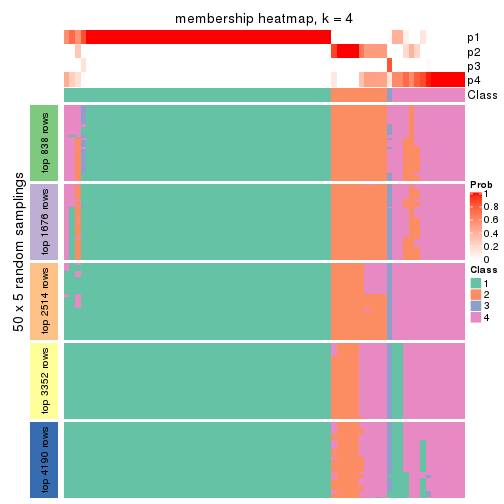
membership_heatmap(res, k = 5)
membership_heatmap(res, k = 6)
As soon as we have had the classes for columns, we can look for signatures which are significantly different between classes which can be candidate marks for certain classes. Following are the heatmaps for signatures.
Signature heatmaps where rows are scaled:
get_signatures(res, k = 2)
get_signatures(res, k = 3)
get_signatures(res, k = 4)
get_signatures(res, k = 5)
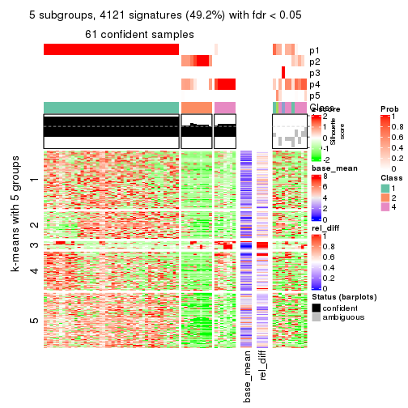
get_signatures(res, k = 6)
Signature heatmaps where rows are not scaled:
get_signatures(res, k = 2, scale_rows = FALSE)
get_signatures(res, k = 3, scale_rows = FALSE)
get_signatures(res, k = 4, scale_rows = FALSE)
get_signatures(res, k = 5, scale_rows = FALSE)
get_signatures(res, k = 6, scale_rows = FALSE)
Compare the overlap of signatures from different k:
compare_signatures(res)
get_signature() returns a data frame invisibly. TO get the list of signatures, the function
call should be assigned to a variable explicitly. In following code, if plot argument is set
to FALSE, no heatmap is plotted while only the differential analysis is performed.
# code only for demonstration
tb = get_signature(res, k = ..., plot = FALSE)
An example of the output of tb is:
#> which_row fdr mean_1 mean_2 scaled_mean_1 scaled_mean_2 km
#> 1 38 0.042760348 8.373488 9.131774 -0.5533452 0.5164555 1
#> 2 40 0.018707592 7.106213 8.469186 -0.6173731 0.5762149 1
#> 3 55 0.019134737 10.221463 11.207825 -0.6159697 0.5749050 1
#> 4 59 0.006059896 5.921854 7.869574 -0.6899429 0.6439467 1
#> 5 60 0.018055526 8.928898 10.211722 -0.6204761 0.5791110 1
#> 6 98 0.009384629 15.714769 14.887706 0.6635654 -0.6193277 2
...
The columns in tb are:
which_row: row indices corresponding to the input matrix.fdr: FDR for the differential test. mean_x: The mean value in group x.scaled_mean_x: The mean value in group x after rows are scaled.km: Row groups if k-means clustering is applied to rows.UMAP plot which shows how samples are separated.
dimension_reduction(res, k = 2, method = "UMAP")
dimension_reduction(res, k = 3, method = "UMAP")

dimension_reduction(res, k = 4, method = "UMAP")
dimension_reduction(res, k = 5, method = "UMAP")
dimension_reduction(res, k = 6, method = "UMAP")
Following heatmap shows how subgroups are split when increasing k:
collect_classes(res)
If matrix rows can be associated to genes, consider to use GO_Enrichment(res,
...) to perform function enrichment for the signature genes.
The object with results only for a single top-value method and a single partition method can be extracted as:
res = res_list["MAD", "mclust"]
# you can also extract it by
# res = res_list["MAD:mclust"]
A summary of res and all the functions that can be applied to it:
res
#> A 'ConsensusPartition' object with k = 2, 3, 4, 5, 6.
#> On a matrix with 8381 rows and 72 columns.
#> Top rows (838, 1676, 2514, 3352, 4190) are extracted by 'MAD' method.
#> Subgroups are detected by 'mclust' method.
#> Performed in total 1250 partitions by row resampling.
#> Best k for subgroups seems to be 2.
#>
#> Following methods can be applied to this 'ConsensusPartition' object:
#> [1] "cola_report" "collect_classes" "collect_plots"
#> [4] "collect_stats" "colnames" "compare_signatures"
#> [7] "consensus_heatmap" "dimension_reduction" "functional_enrichment"
#> [10] "get_anno_col" "get_anno" "get_classes"
#> [13] "get_consensus" "get_matrix" "get_membership"
#> [16] "get_param" "get_signatures" "get_stats"
#> [19] "is_best_k" "is_stable_k" "membership_heatmap"
#> [22] "ncol" "nrow" "plot_ecdf"
#> [25] "rownames" "select_partition_number" "show"
#> [28] "suggest_best_k" "test_to_known_factors"
collect_plots() function collects all the plots made from res for all k (number of partitions)
into one single page to provide an easy and fast comparison between different k.
collect_plots(res)
The plots are:
k and the heatmap of
predicted classes for each k.k.k.k.All the plots in panels can be made by individual functions and they are plotted later in this section.
select_partition_number() produces several plots showing different
statistics for choosing “optimized” k. There are following statistics:
k;k, the area increased is defined as \(A_k - A_{k-1}\).The detailed explanations of these statistics can be found in the cola vignette.
Generally speaking, lower PAC score, higher mean silhouette score or higher
concordance corresponds to better partition. Rand index and Jaccard index
measure how similar the current partition is compared to partition with k-1.
If they are too similar, we won't accept k is better than k-1.
select_partition_number(res)
The numeric values for all these statistics can be obtained by get_stats().
get_stats(res)
#> k 1-PAC mean_silhouette concordance area_increased Rand Jaccard
#> 2 2 0.850 0.926 0.965 0.5018 0.495 0.495
#> 3 3 0.620 0.722 0.871 0.2796 0.799 0.614
#> 4 4 0.629 0.696 0.823 0.1337 0.886 0.683
#> 5 5 0.672 0.694 0.760 0.0348 0.921 0.727
#> 6 6 0.689 0.742 0.789 0.0377 0.971 0.880
suggest_best_k() suggests the best \(k\) based on these statistics. The rules are as follows:
NA.suggest_best_k(res)
#> [1] 2
Following shows the table of the partitions (You need to click the show/hide
code output link to see it). The membership matrix (columns with name p*)
is inferred by
clue::cl_consensus()
function with the SE method. Basically the value in the membership matrix
represents the probability to belong to a certain group. The finall class
label for an item is determined with the group with highest probability it
belongs to.
In get_classes() function, the entropy is calculated from the membership
matrix and the silhouette score is calculated from the consensus matrix.
cbind(get_classes(res, k = 2), get_membership(res, k = 2))
#> class entropy silhouette p1 p2
#> SRR2558111 1 0.0000 0.9578 1.000 0.000
#> SRR2558177 2 0.0000 0.9681 0.000 1.000
#> SRR2558176 1 0.4815 0.8953 0.896 0.104
#> SRR2558175 1 0.0938 0.9567 0.988 0.012
#> SRR2558174 1 0.0938 0.9567 0.988 0.012
#> SRR2558173 1 0.4161 0.9116 0.916 0.084
#> SRR2558172 1 0.1633 0.9523 0.976 0.024
#> SRR2558171 1 0.2236 0.9457 0.964 0.036
#> SRR2558170 2 0.0000 0.9681 0.000 1.000
#> SRR2558169 2 0.0000 0.9681 0.000 1.000
#> SRR2558168 2 0.0000 0.9681 0.000 1.000
#> SRR2558167 2 0.0000 0.9681 0.000 1.000
#> SRR2558166 2 0.0000 0.9681 0.000 1.000
#> SRR2558165 2 0.6048 0.8184 0.148 0.852
#> SRR2558164 2 0.0000 0.9681 0.000 1.000
#> SRR2558163 2 0.0000 0.9681 0.000 1.000
#> SRR2558162 1 0.4815 0.8953 0.896 0.104
#> SRR2558161 2 0.0000 0.9681 0.000 1.000
#> SRR2558160 1 0.2948 0.9368 0.948 0.052
#> SRR2558159 2 0.0000 0.9681 0.000 1.000
#> SRR2558158 2 0.0000 0.9681 0.000 1.000
#> SRR2558157 2 0.0000 0.9681 0.000 1.000
#> SRR2558156 2 0.0000 0.9681 0.000 1.000
#> SRR2558155 1 0.8909 0.5916 0.692 0.308
#> SRR2558154 2 0.0000 0.9681 0.000 1.000
#> SRR2558153 1 0.0000 0.9578 1.000 0.000
#> SRR2558152 1 0.0672 0.9577 0.992 0.008
#> SRR2558151 1 0.0000 0.9578 1.000 0.000
#> SRR2558150 2 0.0000 0.9681 0.000 1.000
#> SRR2558149 1 0.0000 0.9578 1.000 0.000
#> SRR2558148 1 0.0000 0.9578 1.000 0.000
#> SRR2558147 2 0.0000 0.9681 0.000 1.000
#> SRR2558146 1 0.4161 0.9137 0.916 0.084
#> SRR2558145 1 0.0000 0.9578 1.000 0.000
#> SRR2558144 1 0.0000 0.9578 1.000 0.000
#> SRR2558143 1 0.0000 0.9578 1.000 0.000
#> SRR2558142 1 0.0938 0.9567 0.988 0.012
#> SRR2558141 2 0.0000 0.9681 0.000 1.000
#> SRR2558140 2 0.4690 0.8742 0.100 0.900
#> SRR2558139 2 0.0000 0.9681 0.000 1.000
#> SRR2558138 1 0.0672 0.9577 0.992 0.008
#> SRR2558137 2 0.0000 0.9681 0.000 1.000
#> SRR2558136 1 0.2778 0.9391 0.952 0.048
#> SRR2558182 1 0.9087 0.5485 0.676 0.324
#> SRR2558181 1 0.6343 0.8262 0.840 0.160
#> SRR2558180 2 0.0000 0.9681 0.000 1.000
#> SRR2558179 1 0.4815 0.8953 0.896 0.104
#> SRR2558178 2 0.7219 0.7444 0.200 0.800
#> SRR2558134 2 0.0000 0.9681 0.000 1.000
#> SRR2558135 1 0.0000 0.9578 1.000 0.000
#> SRR2558133 2 0.0000 0.9681 0.000 1.000
#> SRR2558132 2 0.0000 0.9681 0.000 1.000
#> SRR2558131 1 0.0000 0.9578 1.000 0.000
#> SRR2558129 1 0.1184 0.9548 0.984 0.016
#> SRR2558127 2 0.0000 0.9681 0.000 1.000
#> SRR2558126 1 0.0672 0.9577 0.992 0.008
#> SRR2558128 2 0.0000 0.9681 0.000 1.000
#> SRR2558125 2 0.3733 0.9044 0.072 0.928
#> SRR2558130 1 0.0000 0.9578 1.000 0.000
#> SRR2558124 2 0.9963 0.0763 0.464 0.536
#> SRR2558123 2 0.0000 0.9681 0.000 1.000
#> SRR2558121 1 0.0672 0.9577 0.992 0.008
#> SRR2558122 1 0.0000 0.9578 1.000 0.000
#> SRR2558120 2 0.0000 0.9681 0.000 1.000
#> SRR2558119 1 0.0938 0.9563 0.988 0.012
#> SRR2558117 2 0.0000 0.9681 0.000 1.000
#> SRR2558118 1 0.0000 0.9578 1.000 0.000
#> SRR2558115 2 0.0000 0.9681 0.000 1.000
#> SRR2558116 1 0.0000 0.9578 1.000 0.000
#> SRR2558114 1 0.0376 0.9577 0.996 0.004
#> SRR2558113 1 0.0000 0.9578 1.000 0.000
#> SRR2558112 1 0.0000 0.9578 1.000 0.000
cbind(get_classes(res, k = 3), get_membership(res, k = 3))
#> class entropy silhouette p1 p2 p3
#> SRR2558111 1 0.0592 0.8429 0.988 0.012 0.000
#> SRR2558177 2 0.2796 0.7575 0.000 0.908 0.092
#> SRR2558176 2 0.6126 0.1543 0.400 0.600 0.000
#> SRR2558175 1 0.5397 0.6412 0.720 0.280 0.000
#> SRR2558174 1 0.5882 0.5241 0.652 0.348 0.000
#> SRR2558173 2 0.6309 -0.1766 0.496 0.504 0.000
#> SRR2558172 1 0.5461 0.6661 0.748 0.244 0.008
#> SRR2558171 1 0.6008 0.4612 0.628 0.372 0.000
#> SRR2558170 3 0.4750 0.8007 0.000 0.216 0.784
#> SRR2558169 3 0.3267 0.8867 0.000 0.116 0.884
#> SRR2558168 3 0.0000 0.9151 0.000 0.000 1.000
#> SRR2558167 3 0.4842 0.7954 0.000 0.224 0.776
#> SRR2558166 3 0.1964 0.9124 0.000 0.056 0.944
#> SRR2558165 2 0.1163 0.7628 0.000 0.972 0.028
#> SRR2558164 3 0.1964 0.9124 0.000 0.056 0.944
#> SRR2558163 3 0.2066 0.9118 0.000 0.060 0.940
#> SRR2558162 2 0.6309 -0.1711 0.496 0.504 0.000
#> SRR2558161 3 0.4842 0.7934 0.000 0.224 0.776
#> SRR2558160 1 0.6192 0.3458 0.580 0.420 0.000
#> SRR2558159 3 0.4452 0.8257 0.000 0.192 0.808
#> SRR2558158 3 0.4399 0.8281 0.000 0.188 0.812
#> SRR2558157 2 0.2625 0.7616 0.000 0.916 0.084
#> SRR2558156 2 0.2711 0.7599 0.000 0.912 0.088
#> SRR2558155 2 0.6869 0.1589 0.424 0.560 0.016
#> SRR2558154 2 0.6274 -0.0225 0.000 0.544 0.456
#> SRR2558153 1 0.0237 0.8414 0.996 0.004 0.000
#> SRR2558152 1 0.5291 0.6579 0.732 0.268 0.000
#> SRR2558151 1 0.0592 0.8422 0.988 0.012 0.000
#> SRR2558150 3 0.0000 0.9151 0.000 0.000 1.000
#> SRR2558149 1 0.0237 0.8430 0.996 0.004 0.000
#> SRR2558148 1 0.0237 0.8429 0.996 0.004 0.000
#> SRR2558147 3 0.0000 0.9151 0.000 0.000 1.000
#> SRR2558146 1 0.6168 0.3692 0.588 0.412 0.000
#> SRR2558145 1 0.0000 0.8426 1.000 0.000 0.000
#> SRR2558144 1 0.0000 0.8426 1.000 0.000 0.000
#> SRR2558143 1 0.0237 0.8430 0.996 0.004 0.000
#> SRR2558142 1 0.4978 0.6983 0.780 0.216 0.004
#> SRR2558141 2 0.2711 0.7599 0.000 0.912 0.088
#> SRR2558140 2 0.1163 0.7628 0.000 0.972 0.028
#> SRR2558139 3 0.2165 0.9077 0.000 0.064 0.936
#> SRR2558138 1 0.5291 0.6579 0.732 0.268 0.000
#> SRR2558137 3 0.0237 0.9158 0.000 0.004 0.996
#> SRR2558136 1 0.4915 0.6699 0.804 0.184 0.012
#> SRR2558182 1 0.6354 0.5990 0.748 0.196 0.056
#> SRR2558181 1 0.6258 0.6059 0.752 0.196 0.052
#> SRR2558180 2 0.2537 0.7626 0.000 0.920 0.080
#> SRR2558179 2 0.6126 0.1543 0.400 0.600 0.000
#> SRR2558178 2 0.1163 0.7628 0.000 0.972 0.028
#> SRR2558134 3 0.0000 0.9151 0.000 0.000 1.000
#> SRR2558135 1 0.0237 0.8429 0.996 0.004 0.000
#> SRR2558133 2 0.2625 0.7616 0.000 0.916 0.084
#> SRR2558132 3 0.2165 0.9077 0.000 0.064 0.936
#> SRR2558131 1 0.0000 0.8426 1.000 0.000 0.000
#> SRR2558129 1 0.2165 0.8105 0.936 0.064 0.000
#> SRR2558127 2 0.4002 0.6945 0.000 0.840 0.160
#> SRR2558126 1 0.0592 0.8424 0.988 0.012 0.000
#> SRR2558128 3 0.0000 0.9151 0.000 0.000 1.000
#> SRR2558125 2 0.1163 0.7628 0.000 0.972 0.028
#> SRR2558130 1 0.1411 0.8393 0.964 0.036 0.000
#> SRR2558124 2 0.2318 0.7591 0.028 0.944 0.028
#> SRR2558123 2 0.2625 0.7619 0.000 0.916 0.084
#> SRR2558121 1 0.5291 0.6579 0.732 0.268 0.000
#> SRR2558122 1 0.0000 0.8426 1.000 0.000 0.000
#> SRR2558120 3 0.0000 0.9151 0.000 0.000 1.000
#> SRR2558119 1 0.1711 0.8371 0.960 0.032 0.008
#> SRR2558117 3 0.0237 0.9158 0.000 0.004 0.996
#> SRR2558118 1 0.1753 0.8342 0.952 0.048 0.000
#> SRR2558115 3 0.0000 0.9151 0.000 0.000 1.000
#> SRR2558116 1 0.0424 0.8421 0.992 0.008 0.000
#> SRR2558114 1 0.0424 0.8421 0.992 0.008 0.000
#> SRR2558113 1 0.1860 0.8323 0.948 0.052 0.000
#> SRR2558112 1 0.0424 0.8427 0.992 0.008 0.000
cbind(get_classes(res, k = 4), get_membership(res, k = 4))
#> class entropy silhouette p1 p2 p3 p4
#> SRR2558111 1 0.4713 0.3384 0.640 0.000 0.000 0.360
#> SRR2558177 2 0.0188 0.8927 0.000 0.996 0.000 0.004
#> SRR2558176 4 0.3047 0.7322 0.116 0.012 0.000 0.872
#> SRR2558175 4 0.4564 0.6543 0.328 0.000 0.000 0.672
#> SRR2558174 4 0.4040 0.7491 0.248 0.000 0.000 0.752
#> SRR2558173 4 0.2888 0.7373 0.124 0.004 0.000 0.872
#> SRR2558172 4 0.7486 0.3386 0.348 0.188 0.000 0.464
#> SRR2558171 4 0.5212 0.4147 0.420 0.008 0.000 0.572
#> SRR2558170 3 0.5150 0.5357 0.000 0.396 0.596 0.008
#> SRR2558169 3 0.4054 0.8206 0.000 0.188 0.796 0.016
#> SRR2558168 3 0.0000 0.8800 0.000 0.000 1.000 0.000
#> SRR2558167 3 0.4630 0.7656 0.000 0.252 0.732 0.016
#> SRR2558166 3 0.3108 0.8591 0.000 0.112 0.872 0.016
#> SRR2558165 2 0.3123 0.8324 0.000 0.844 0.000 0.156
#> SRR2558164 3 0.2928 0.8619 0.000 0.108 0.880 0.012
#> SRR2558163 3 0.3048 0.8605 0.000 0.108 0.876 0.016
#> SRR2558162 4 0.2888 0.7373 0.124 0.004 0.000 0.872
#> SRR2558161 3 0.5055 0.5872 0.000 0.368 0.624 0.008
#> SRR2558160 4 0.5855 0.5222 0.356 0.044 0.000 0.600
#> SRR2558159 3 0.4054 0.8148 0.000 0.188 0.796 0.016
#> SRR2558158 3 0.4857 0.7108 0.000 0.284 0.700 0.016
#> SRR2558157 2 0.1302 0.8875 0.000 0.956 0.000 0.044
#> SRR2558156 2 0.0000 0.8925 0.000 1.000 0.000 0.000
#> SRR2558155 2 0.6994 0.2644 0.116 0.472 0.000 0.412
#> SRR2558154 2 0.3196 0.7510 0.000 0.856 0.136 0.008
#> SRR2558153 1 0.4222 0.5184 0.728 0.000 0.000 0.272
#> SRR2558152 4 0.4103 0.7456 0.256 0.000 0.000 0.744
#> SRR2558151 1 0.1637 0.7119 0.940 0.000 0.000 0.060
#> SRR2558150 3 0.0000 0.8800 0.000 0.000 1.000 0.000
#> SRR2558149 1 0.3024 0.6205 0.852 0.000 0.000 0.148
#> SRR2558148 1 0.1867 0.7144 0.928 0.000 0.000 0.072
#> SRR2558147 3 0.0000 0.8800 0.000 0.000 1.000 0.000
#> SRR2558146 1 0.5399 -0.2004 0.520 0.012 0.000 0.468
#> SRR2558145 1 0.1474 0.7182 0.948 0.000 0.000 0.052
#> SRR2558144 1 0.1118 0.7284 0.964 0.000 0.000 0.036
#> SRR2558143 1 0.2408 0.7186 0.896 0.000 0.000 0.104
#> SRR2558142 1 0.6458 -0.0474 0.520 0.072 0.000 0.408
#> SRR2558141 2 0.0188 0.8927 0.000 0.996 0.000 0.004
#> SRR2558140 2 0.2345 0.8648 0.000 0.900 0.000 0.100
#> SRR2558139 3 0.1557 0.8737 0.000 0.056 0.944 0.000
#> SRR2558138 4 0.4164 0.7412 0.264 0.000 0.000 0.736
#> SRR2558137 3 0.0336 0.8792 0.000 0.000 0.992 0.008
#> SRR2558136 1 0.0657 0.7210 0.984 0.012 0.000 0.004
#> SRR2558182 1 0.1247 0.7208 0.968 0.016 0.004 0.012
#> SRR2558181 1 0.1059 0.7214 0.972 0.016 0.000 0.012
#> SRR2558180 2 0.0000 0.8925 0.000 1.000 0.000 0.000
#> SRR2558179 4 0.4655 0.6613 0.116 0.088 0.000 0.796
#> SRR2558178 2 0.3852 0.8047 0.008 0.800 0.000 0.192
#> SRR2558134 3 0.0000 0.8800 0.000 0.000 1.000 0.000
#> SRR2558135 1 0.2704 0.7072 0.876 0.000 0.000 0.124
#> SRR2558133 2 0.1211 0.8869 0.000 0.960 0.000 0.040
#> SRR2558132 3 0.1940 0.8680 0.000 0.076 0.924 0.000
#> SRR2558131 1 0.2921 0.6836 0.860 0.000 0.000 0.140
#> SRR2558129 1 0.0188 0.7219 0.996 0.004 0.000 0.000
#> SRR2558127 2 0.0336 0.8898 0.000 0.992 0.008 0.000
#> SRR2558126 1 0.5060 0.1574 0.584 0.004 0.000 0.412
#> SRR2558128 3 0.0000 0.8800 0.000 0.000 1.000 0.000
#> SRR2558125 2 0.1867 0.8765 0.000 0.928 0.000 0.072
#> SRR2558130 1 0.4877 0.1973 0.592 0.000 0.000 0.408
#> SRR2558124 2 0.5010 0.7139 0.024 0.700 0.000 0.276
#> SRR2558123 2 0.0188 0.8927 0.000 0.996 0.000 0.004
#> SRR2558121 4 0.4134 0.7438 0.260 0.000 0.000 0.740
#> SRR2558122 1 0.3837 0.5988 0.776 0.000 0.000 0.224
#> SRR2558120 3 0.0000 0.8800 0.000 0.000 1.000 0.000
#> SRR2558119 1 0.2596 0.6954 0.908 0.068 0.000 0.024
#> SRR2558117 3 0.0000 0.8800 0.000 0.000 1.000 0.000
#> SRR2558118 1 0.4790 0.3049 0.620 0.000 0.000 0.380
#> SRR2558115 3 0.0000 0.8800 0.000 0.000 1.000 0.000
#> SRR2558116 1 0.1211 0.7292 0.960 0.000 0.000 0.040
#> SRR2558114 1 0.0707 0.7260 0.980 0.000 0.000 0.020
#> SRR2558113 1 0.4331 0.5081 0.712 0.000 0.000 0.288
#> SRR2558112 1 0.3219 0.6275 0.836 0.000 0.000 0.164
cbind(get_classes(res, k = 5), get_membership(res, k = 5))
#> class entropy silhouette p1 p2 p3 p4 p5
#> SRR2558111 1 0.3039 0.698 0.808 0.000 0.000 0.000 0.192
#> SRR2558177 2 0.1605 0.784 0.000 0.944 0.004 0.040 0.012
#> SRR2558176 5 0.2617 0.635 0.028 0.000 0.036 0.032 0.904
#> SRR2558175 5 0.4722 0.398 0.412 0.000 0.004 0.012 0.572
#> SRR2558174 5 0.4385 0.523 0.312 0.000 0.004 0.012 0.672
#> SRR2558173 5 0.2273 0.641 0.032 0.000 0.024 0.024 0.920
#> SRR2558172 1 0.4205 0.647 0.756 0.008 0.028 0.000 0.208
#> SRR2558171 1 0.4585 0.430 0.592 0.000 0.004 0.008 0.396
#> SRR2558170 4 0.4567 0.634 0.000 0.120 0.116 0.760 0.004
#> SRR2558169 4 0.2576 0.744 0.000 0.056 0.036 0.900 0.008
#> SRR2558168 3 0.4192 0.945 0.000 0.000 0.596 0.404 0.000
#> SRR2558167 4 0.2403 0.754 0.000 0.072 0.012 0.904 0.012
#> SRR2558166 4 0.3477 0.630 0.000 0.040 0.136 0.824 0.000
#> SRR2558165 2 0.6086 0.748 0.000 0.628 0.248 0.048 0.076
#> SRR2558164 4 0.4578 0.301 0.000 0.040 0.244 0.712 0.004
#> SRR2558163 4 0.3731 0.582 0.000 0.040 0.160 0.800 0.000
#> SRR2558162 5 0.2599 0.640 0.044 0.000 0.028 0.024 0.904
#> SRR2558161 4 0.3265 0.722 0.000 0.128 0.012 0.844 0.016
#> SRR2558160 1 0.4294 0.333 0.532 0.000 0.000 0.000 0.468
#> SRR2558159 4 0.3141 0.749 0.000 0.040 0.096 0.860 0.004
#> SRR2558158 4 0.2913 0.740 0.000 0.040 0.080 0.876 0.004
#> SRR2558157 2 0.4915 0.770 0.000 0.700 0.240 0.048 0.012
#> SRR2558156 2 0.4668 0.776 0.000 0.724 0.220 0.048 0.008
#> SRR2558155 2 0.7487 0.180 0.196 0.492 0.076 0.000 0.236
#> SRR2558154 2 0.4567 0.392 0.000 0.628 0.004 0.356 0.012
#> SRR2558153 1 0.3480 0.697 0.752 0.000 0.000 0.000 0.248
#> SRR2558152 5 0.4567 0.502 0.356 0.000 0.004 0.012 0.628
#> SRR2558151 1 0.2886 0.725 0.844 0.000 0.008 0.000 0.148
#> SRR2558150 3 0.4171 0.946 0.000 0.000 0.604 0.396 0.000
#> SRR2558149 1 0.2763 0.725 0.848 0.000 0.004 0.000 0.148
#> SRR2558148 1 0.2920 0.745 0.852 0.000 0.016 0.000 0.132
#> SRR2558147 3 0.4138 0.942 0.000 0.000 0.616 0.384 0.000
#> SRR2558146 1 0.4787 -0.179 0.548 0.000 0.020 0.000 0.432
#> SRR2558145 1 0.2439 0.741 0.876 0.000 0.004 0.000 0.120
#> SRR2558144 1 0.1952 0.755 0.912 0.000 0.004 0.000 0.084
#> SRR2558143 1 0.2471 0.755 0.864 0.000 0.000 0.000 0.136
#> SRR2558142 1 0.3612 0.675 0.764 0.000 0.008 0.000 0.228
#> SRR2558141 2 0.1386 0.784 0.000 0.952 0.000 0.032 0.016
#> SRR2558140 2 0.2403 0.766 0.000 0.904 0.072 0.012 0.012
#> SRR2558139 3 0.4875 0.906 0.000 0.020 0.576 0.400 0.004
#> SRR2558138 5 0.4644 0.471 0.380 0.000 0.004 0.012 0.604
#> SRR2558137 3 0.4306 0.814 0.000 0.000 0.508 0.492 0.000
#> SRR2558136 1 0.1547 0.723 0.948 0.004 0.032 0.000 0.016
#> SRR2558182 1 0.2598 0.715 0.904 0.008 0.040 0.004 0.044
#> SRR2558181 1 0.2519 0.718 0.908 0.008 0.036 0.004 0.044
#> SRR2558180 2 0.3887 0.793 0.000 0.796 0.160 0.040 0.004
#> SRR2558179 5 0.3076 0.613 0.024 0.004 0.040 0.048 0.884
#> SRR2558178 2 0.2770 0.753 0.016 0.888 0.076 0.000 0.020
#> SRR2558134 3 0.4161 0.946 0.000 0.000 0.608 0.392 0.000
#> SRR2558135 1 0.3003 0.744 0.812 0.000 0.000 0.000 0.188
#> SRR2558133 2 0.4714 0.772 0.000 0.712 0.236 0.044 0.008
#> SRR2558132 3 0.5130 0.869 0.000 0.032 0.552 0.412 0.004
#> SRR2558131 1 0.2516 0.760 0.860 0.000 0.000 0.000 0.140
#> SRR2558129 1 0.0807 0.734 0.976 0.000 0.012 0.000 0.012
#> SRR2558127 2 0.4739 0.778 0.000 0.724 0.212 0.056 0.008
#> SRR2558126 1 0.3039 0.700 0.808 0.000 0.000 0.000 0.192
#> SRR2558128 3 0.4182 0.946 0.000 0.000 0.600 0.400 0.000
#> SRR2558125 2 0.4622 0.786 0.000 0.768 0.148 0.024 0.060
#> SRR2558130 1 0.3715 0.651 0.736 0.000 0.004 0.000 0.260
#> SRR2558124 2 0.4354 0.709 0.012 0.788 0.092 0.000 0.108
#> SRR2558123 2 0.1399 0.791 0.000 0.952 0.020 0.028 0.000
#> SRR2558121 5 0.4541 0.441 0.380 0.000 0.004 0.008 0.608
#> SRR2558122 1 0.3395 0.708 0.764 0.000 0.000 0.000 0.236
#> SRR2558120 3 0.4161 0.946 0.000 0.000 0.608 0.392 0.000
#> SRR2558119 1 0.1571 0.761 0.936 0.000 0.004 0.000 0.060
#> SRR2558117 3 0.4235 0.930 0.000 0.000 0.576 0.424 0.000
#> SRR2558118 1 0.3534 0.664 0.744 0.000 0.000 0.000 0.256
#> SRR2558115 3 0.4114 0.935 0.000 0.000 0.624 0.376 0.000
#> SRR2558116 1 0.2233 0.757 0.892 0.000 0.004 0.000 0.104
#> SRR2558114 1 0.1809 0.735 0.928 0.000 0.012 0.000 0.060
#> SRR2558113 1 0.3366 0.692 0.768 0.000 0.000 0.000 0.232
#> SRR2558112 1 0.2890 0.715 0.836 0.000 0.004 0.000 0.160
cbind(get_classes(res, k = 6), get_membership(res, k = 6))
#> class entropy silhouette p1 p2 p3 p4 p5 p6
#> SRR2558111 1 0.1536 0.788 0.940 0.004 0.000 0.000 0.016 0.040
#> SRR2558177 2 0.3074 0.772 0.000 0.792 0.000 0.200 0.004 0.004
#> SRR2558176 5 0.1644 0.887 0.028 0.000 0.000 0.000 0.932 0.040
#> SRR2558175 6 0.4223 0.912 0.236 0.000 0.000 0.000 0.060 0.704
#> SRR2558174 6 0.4931 0.828 0.200 0.000 0.000 0.000 0.148 0.652
#> SRR2558173 5 0.2771 0.896 0.032 0.000 0.000 0.000 0.852 0.116
#> SRR2558172 1 0.4008 0.639 0.796 0.032 0.000 0.032 0.012 0.128
#> SRR2558171 1 0.5092 0.278 0.624 0.000 0.000 0.000 0.144 0.232
#> SRR2558170 4 0.3703 0.680 0.000 0.132 0.064 0.796 0.008 0.000
#> SRR2558169 4 0.2932 0.744 0.000 0.016 0.164 0.820 0.000 0.000
#> SRR2558168 3 0.0260 0.948 0.000 0.000 0.992 0.008 0.000 0.000
#> SRR2558167 4 0.2176 0.757 0.000 0.024 0.080 0.896 0.000 0.000
#> SRR2558166 4 0.3748 0.649 0.000 0.012 0.300 0.688 0.000 0.000
#> SRR2558165 2 0.3516 0.727 0.000 0.788 0.000 0.048 0.164 0.000
#> SRR2558164 4 0.4222 0.306 0.000 0.008 0.472 0.516 0.000 0.004
#> SRR2558163 4 0.3819 0.592 0.000 0.008 0.340 0.652 0.000 0.000
#> SRR2558162 5 0.3213 0.841 0.048 0.000 0.000 0.000 0.820 0.132
#> SRR2558161 4 0.2563 0.749 0.000 0.040 0.076 0.880 0.000 0.004
#> SRR2558160 1 0.4591 -0.102 0.500 0.000 0.000 0.000 0.036 0.464
#> SRR2558159 4 0.2716 0.761 0.000 0.028 0.096 0.868 0.008 0.000
#> SRR2558158 4 0.2763 0.756 0.000 0.036 0.088 0.868 0.008 0.000
#> SRR2558157 2 0.3010 0.782 0.000 0.836 0.004 0.132 0.028 0.000
#> SRR2558156 2 0.2826 0.785 0.000 0.844 0.000 0.128 0.028 0.000
#> SRR2558155 2 0.7595 0.228 0.164 0.412 0.000 0.108 0.028 0.288
#> SRR2558154 4 0.4242 -0.262 0.000 0.456 0.004 0.532 0.004 0.004
#> SRR2558153 1 0.2257 0.780 0.876 0.000 0.000 0.000 0.008 0.116
#> SRR2558152 6 0.4380 0.914 0.220 0.000 0.000 0.000 0.080 0.700
#> SRR2558151 1 0.1610 0.794 0.916 0.000 0.000 0.000 0.000 0.084
#> SRR2558150 3 0.0000 0.950 0.000 0.000 1.000 0.000 0.000 0.000
#> SRR2558149 1 0.2092 0.784 0.876 0.000 0.000 0.000 0.000 0.124
#> SRR2558148 1 0.3198 0.671 0.740 0.000 0.000 0.000 0.000 0.260
#> SRR2558147 3 0.0000 0.950 0.000 0.000 1.000 0.000 0.000 0.000
#> SRR2558146 6 0.5442 0.756 0.336 0.000 0.000 0.000 0.136 0.528
#> SRR2558145 1 0.2092 0.784 0.876 0.000 0.000 0.000 0.000 0.124
#> SRR2558144 1 0.1610 0.791 0.916 0.000 0.000 0.000 0.000 0.084
#> SRR2558143 1 0.1814 0.785 0.900 0.000 0.000 0.000 0.000 0.100
#> SRR2558142 1 0.1672 0.785 0.940 0.004 0.000 0.012 0.016 0.028
#> SRR2558141 2 0.3577 0.768 0.000 0.772 0.000 0.200 0.012 0.016
#> SRR2558140 2 0.4277 0.707 0.000 0.764 0.000 0.128 0.024 0.084
#> SRR2558139 3 0.2288 0.859 0.000 0.004 0.876 0.116 0.000 0.004
#> SRR2558138 6 0.4406 0.914 0.224 0.000 0.000 0.000 0.080 0.696
#> SRR2558137 3 0.1958 0.872 0.000 0.004 0.896 0.100 0.000 0.000
#> SRR2558136 1 0.2737 0.750 0.884 0.004 0.012 0.008 0.020 0.072
#> SRR2558182 1 0.4555 0.689 0.760 0.004 0.012 0.068 0.020 0.136
#> SRR2558181 1 0.4500 0.692 0.764 0.004 0.012 0.064 0.020 0.136
#> SRR2558180 2 0.2261 0.794 0.000 0.884 0.000 0.104 0.008 0.004
#> SRR2558179 5 0.2510 0.885 0.028 0.000 0.000 0.000 0.872 0.100
#> SRR2558178 2 0.5258 0.639 0.040 0.716 0.000 0.100 0.024 0.120
#> SRR2558134 3 0.0000 0.950 0.000 0.000 1.000 0.000 0.000 0.000
#> SRR2558135 1 0.2793 0.708 0.800 0.000 0.000 0.000 0.000 0.200
#> SRR2558133 2 0.2826 0.785 0.000 0.844 0.000 0.128 0.028 0.000
#> SRR2558132 3 0.2531 0.842 0.000 0.008 0.860 0.128 0.000 0.004
#> SRR2558131 1 0.1863 0.786 0.896 0.000 0.000 0.000 0.000 0.104
#> SRR2558129 1 0.1983 0.761 0.908 0.000 0.000 0.000 0.020 0.072
#> SRR2558127 2 0.2618 0.790 0.000 0.860 0.000 0.116 0.024 0.000
#> SRR2558126 1 0.1967 0.786 0.904 0.000 0.000 0.000 0.012 0.084
#> SRR2558128 3 0.0146 0.949 0.000 0.000 0.996 0.004 0.000 0.000
#> SRR2558125 2 0.3329 0.792 0.000 0.828 0.000 0.120 0.036 0.016
#> SRR2558130 1 0.3296 0.701 0.796 0.004 0.000 0.000 0.020 0.180
#> SRR2558124 2 0.6363 0.515 0.048 0.580 0.000 0.116 0.024 0.232
#> SRR2558123 2 0.3056 0.782 0.000 0.820 0.000 0.160 0.012 0.008
#> SRR2558121 6 0.4330 0.915 0.236 0.000 0.000 0.000 0.068 0.696
#> SRR2558122 1 0.2234 0.776 0.872 0.000 0.000 0.000 0.004 0.124
#> SRR2558120 3 0.0000 0.950 0.000 0.000 1.000 0.000 0.000 0.000
#> SRR2558119 1 0.0777 0.795 0.972 0.000 0.000 0.004 0.000 0.024
#> SRR2558117 3 0.1075 0.927 0.000 0.000 0.952 0.048 0.000 0.000
#> SRR2558118 1 0.3053 0.712 0.812 0.000 0.000 0.000 0.020 0.168
#> SRR2558115 3 0.0000 0.950 0.000 0.000 1.000 0.000 0.000 0.000
#> SRR2558116 1 0.2378 0.752 0.848 0.000 0.000 0.000 0.000 0.152
#> SRR2558114 1 0.2994 0.696 0.788 0.000 0.000 0.000 0.004 0.208
#> SRR2558113 1 0.3073 0.725 0.816 0.004 0.000 0.000 0.016 0.164
#> SRR2558112 1 0.2092 0.784 0.876 0.000 0.000 0.000 0.000 0.124
Heatmaps for the consensus matrix. It visualizes the probability of two samples to be in a same group.
consensus_heatmap(res, k = 2)
consensus_heatmap(res, k = 3)
consensus_heatmap(res, k = 4)
consensus_heatmap(res, k = 5)
consensus_heatmap(res, k = 6)
Heatmaps for the membership of samples in all partitions to see how consistent they are:
membership_heatmap(res, k = 2)
membership_heatmap(res, k = 3)
membership_heatmap(res, k = 4)
membership_heatmap(res, k = 5)
membership_heatmap(res, k = 6)
As soon as we have had the classes for columns, we can look for signatures which are significantly different between classes which can be candidate marks for certain classes. Following are the heatmaps for signatures.
Signature heatmaps where rows are scaled:
get_signatures(res, k = 2)
get_signatures(res, k = 3)
get_signatures(res, k = 4)
get_signatures(res, k = 5)
get_signatures(res, k = 6)
Signature heatmaps where rows are not scaled:
get_signatures(res, k = 2, scale_rows = FALSE)

get_signatures(res, k = 3, scale_rows = FALSE)
get_signatures(res, k = 4, scale_rows = FALSE)
get_signatures(res, k = 5, scale_rows = FALSE)
get_signatures(res, k = 6, scale_rows = FALSE)
Compare the overlap of signatures from different k:
compare_signatures(res)
get_signature() returns a data frame invisibly. TO get the list of signatures, the function
call should be assigned to a variable explicitly. In following code, if plot argument is set
to FALSE, no heatmap is plotted while only the differential analysis is performed.
# code only for demonstration
tb = get_signature(res, k = ..., plot = FALSE)
An example of the output of tb is:
#> which_row fdr mean_1 mean_2 scaled_mean_1 scaled_mean_2 km
#> 1 38 0.042760348 8.373488 9.131774 -0.5533452 0.5164555 1
#> 2 40 0.018707592 7.106213 8.469186 -0.6173731 0.5762149 1
#> 3 55 0.019134737 10.221463 11.207825 -0.6159697 0.5749050 1
#> 4 59 0.006059896 5.921854 7.869574 -0.6899429 0.6439467 1
#> 5 60 0.018055526 8.928898 10.211722 -0.6204761 0.5791110 1
#> 6 98 0.009384629 15.714769 14.887706 0.6635654 -0.6193277 2
...
The columns in tb are:
which_row: row indices corresponding to the input matrix.fdr: FDR for the differential test. mean_x: The mean value in group x.scaled_mean_x: The mean value in group x after rows are scaled.km: Row groups if k-means clustering is applied to rows.UMAP plot which shows how samples are separated.
dimension_reduction(res, k = 2, method = "UMAP")
dimension_reduction(res, k = 3, method = "UMAP")
dimension_reduction(res, k = 4, method = "UMAP")
dimension_reduction(res, k = 5, method = "UMAP")
dimension_reduction(res, k = 6, method = "UMAP")
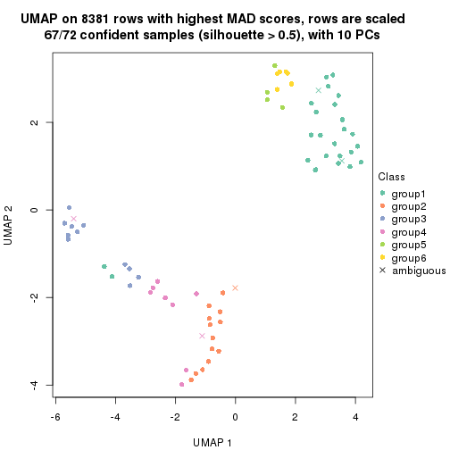
Following heatmap shows how subgroups are split when increasing k:
collect_classes(res)
If matrix rows can be associated to genes, consider to use GO_Enrichment(res,
...) to perform function enrichment for the signature genes.
The object with results only for a single top-value method and a single partition method can be extracted as:
res = res_list["MAD", "NMF"]
# you can also extract it by
# res = res_list["MAD:NMF"]
A summary of res and all the functions that can be applied to it:
res
#> A 'ConsensusPartition' object with k = 2, 3, 4, 5, 6.
#> On a matrix with 8381 rows and 72 columns.
#> Top rows (838, 1676, 2514, 3352, 4190) are extracted by 'MAD' method.
#> Subgroups are detected by 'NMF' method.
#> Performed in total 1250 partitions by row resampling.
#> Best k for subgroups seems to be 2.
#>
#> Following methods can be applied to this 'ConsensusPartition' object:
#> [1] "cola_report" "collect_classes" "collect_plots"
#> [4] "collect_stats" "colnames" "compare_signatures"
#> [7] "consensus_heatmap" "dimension_reduction" "functional_enrichment"
#> [10] "get_anno_col" "get_anno" "get_classes"
#> [13] "get_consensus" "get_matrix" "get_membership"
#> [16] "get_param" "get_signatures" "get_stats"
#> [19] "is_best_k" "is_stable_k" "membership_heatmap"
#> [22] "ncol" "nrow" "plot_ecdf"
#> [25] "rownames" "select_partition_number" "show"
#> [28] "suggest_best_k" "test_to_known_factors"
collect_plots() function collects all the plots made from res for all k (number of partitions)
into one single page to provide an easy and fast comparison between different k.
collect_plots(res)
The plots are:
k and the heatmap of
predicted classes for each k.k.k.k.All the plots in panels can be made by individual functions and they are plotted later in this section.
select_partition_number() produces several plots showing different
statistics for choosing “optimized” k. There are following statistics:
k;k, the area increased is defined as \(A_k - A_{k-1}\).The detailed explanations of these statistics can be found in the cola vignette.
Generally speaking, lower PAC score, higher mean silhouette score or higher
concordance corresponds to better partition. Rand index and Jaccard index
measure how similar the current partition is compared to partition with k-1.
If they are too similar, we won't accept k is better than k-1.
select_partition_number(res)
The numeric values for all these statistics can be obtained by get_stats().
get_stats(res)
#> k 1-PAC mean_silhouette concordance area_increased Rand Jaccard
#> 2 2 0.999 0.949 0.980 0.4798 0.518 0.518
#> 3 3 0.403 0.613 0.780 0.2978 0.626 0.404
#> 4 4 0.369 0.515 0.727 0.1149 0.868 0.666
#> 5 5 0.433 0.452 0.695 0.0710 0.950 0.841
#> 6 6 0.454 0.369 0.606 0.0434 0.871 0.574
suggest_best_k() suggests the best \(k\) based on these statistics. The rules are as follows:
NA.suggest_best_k(res)
#> [1] 2
Following shows the table of the partitions (You need to click the show/hide
code output link to see it). The membership matrix (columns with name p*)
is inferred by
clue::cl_consensus()
function with the SE method. Basically the value in the membership matrix
represents the probability to belong to a certain group. The finall class
label for an item is determined with the group with highest probability it
belongs to.
In get_classes() function, the entropy is calculated from the membership
matrix and the silhouette score is calculated from the consensus matrix.
cbind(get_classes(res, k = 2), get_membership(res, k = 2))
#> class entropy silhouette p1 p2
#> SRR2558111 1 0.0000 0.986 1.000 0.000
#> SRR2558177 2 0.0000 0.966 0.000 1.000
#> SRR2558176 1 0.0000 0.986 1.000 0.000
#> SRR2558175 1 0.0000 0.986 1.000 0.000
#> SRR2558174 1 0.0000 0.986 1.000 0.000
#> SRR2558173 1 0.0000 0.986 1.000 0.000
#> SRR2558172 1 0.0000 0.986 1.000 0.000
#> SRR2558171 1 0.0000 0.986 1.000 0.000
#> SRR2558170 2 0.0000 0.966 0.000 1.000
#> SRR2558169 2 0.0000 0.966 0.000 1.000
#> SRR2558168 2 0.0000 0.966 0.000 1.000
#> SRR2558167 2 0.0000 0.966 0.000 1.000
#> SRR2558166 2 0.0000 0.966 0.000 1.000
#> SRR2558165 1 0.0000 0.986 1.000 0.000
#> SRR2558164 2 0.0000 0.966 0.000 1.000
#> SRR2558163 2 0.0000 0.966 0.000 1.000
#> SRR2558162 1 0.0000 0.986 1.000 0.000
#> SRR2558161 2 0.0000 0.966 0.000 1.000
#> SRR2558160 1 0.0000 0.986 1.000 0.000
#> SRR2558159 2 0.0000 0.966 0.000 1.000
#> SRR2558158 2 0.0000 0.966 0.000 1.000
#> SRR2558157 2 0.9833 0.270 0.424 0.576
#> SRR2558156 2 0.2603 0.928 0.044 0.956
#> SRR2558155 1 0.0000 0.986 1.000 0.000
#> SRR2558154 2 0.0000 0.966 0.000 1.000
#> SRR2558153 1 0.0000 0.986 1.000 0.000
#> SRR2558152 1 0.0000 0.986 1.000 0.000
#> SRR2558151 1 0.0000 0.986 1.000 0.000
#> SRR2558150 2 0.0000 0.966 0.000 1.000
#> SRR2558149 1 0.0000 0.986 1.000 0.000
#> SRR2558148 1 0.0000 0.986 1.000 0.000
#> SRR2558147 2 0.0000 0.966 0.000 1.000
#> SRR2558146 1 0.0000 0.986 1.000 0.000
#> SRR2558145 1 0.0000 0.986 1.000 0.000
#> SRR2558144 1 0.0000 0.986 1.000 0.000
#> SRR2558143 1 0.0000 0.986 1.000 0.000
#> SRR2558142 1 0.0000 0.986 1.000 0.000
#> SRR2558141 2 0.0672 0.960 0.008 0.992
#> SRR2558140 1 0.0000 0.986 1.000 0.000
#> SRR2558139 2 0.0000 0.966 0.000 1.000
#> SRR2558138 1 0.0000 0.986 1.000 0.000
#> SRR2558137 2 0.0000 0.966 0.000 1.000
#> SRR2558136 1 0.7950 0.677 0.760 0.240
#> SRR2558182 2 0.1184 0.953 0.016 0.984
#> SRR2558181 2 0.9754 0.316 0.408 0.592
#> SRR2558180 1 0.0000 0.986 1.000 0.000
#> SRR2558179 1 0.0000 0.986 1.000 0.000
#> SRR2558178 1 0.0000 0.986 1.000 0.000
#> SRR2558134 2 0.0000 0.966 0.000 1.000
#> SRR2558135 1 0.0000 0.986 1.000 0.000
#> SRR2558133 1 0.6973 0.763 0.812 0.188
#> SRR2558132 2 0.0000 0.966 0.000 1.000
#> SRR2558131 1 0.0000 0.986 1.000 0.000
#> SRR2558129 1 0.4431 0.892 0.908 0.092
#> SRR2558127 2 0.0000 0.966 0.000 1.000
#> SRR2558126 1 0.0000 0.986 1.000 0.000
#> SRR2558128 2 0.0000 0.966 0.000 1.000
#> SRR2558125 1 0.0000 0.986 1.000 0.000
#> SRR2558130 1 0.0000 0.986 1.000 0.000
#> SRR2558124 1 0.0000 0.986 1.000 0.000
#> SRR2558123 1 0.2948 0.937 0.948 0.052
#> SRR2558121 1 0.0000 0.986 1.000 0.000
#> SRR2558122 1 0.0000 0.986 1.000 0.000
#> SRR2558120 2 0.0000 0.966 0.000 1.000
#> SRR2558119 1 0.0000 0.986 1.000 0.000
#> SRR2558117 2 0.0000 0.966 0.000 1.000
#> SRR2558118 1 0.0000 0.986 1.000 0.000
#> SRR2558115 2 0.0000 0.966 0.000 1.000
#> SRR2558116 1 0.0000 0.986 1.000 0.000
#> SRR2558114 1 0.0000 0.986 1.000 0.000
#> SRR2558113 1 0.0000 0.986 1.000 0.000
#> SRR2558112 1 0.0000 0.986 1.000 0.000
cbind(get_classes(res, k = 3), get_membership(res, k = 3))
#> class entropy silhouette p1 p2 p3
#> SRR2558111 1 0.5178 0.789 0.744 0.000 0.256
#> SRR2558177 2 0.5201 0.676 0.236 0.760 0.004
#> SRR2558176 1 0.6045 0.686 0.620 0.000 0.380
#> SRR2558175 3 0.4178 0.551 0.172 0.000 0.828
#> SRR2558174 1 0.6286 0.550 0.536 0.000 0.464
#> SRR2558173 1 0.6280 0.557 0.540 0.000 0.460
#> SRR2558172 1 0.5291 0.779 0.732 0.000 0.268
#> SRR2558171 3 0.4178 0.552 0.172 0.000 0.828
#> SRR2558170 2 0.0237 0.786 0.004 0.996 0.000
#> SRR2558169 2 0.1129 0.784 0.004 0.976 0.020
#> SRR2558168 3 0.5810 0.504 0.000 0.336 0.664
#> SRR2558167 2 0.0000 0.785 0.000 1.000 0.000
#> SRR2558166 2 0.4504 0.641 0.000 0.804 0.196
#> SRR2558165 1 0.1289 0.692 0.968 0.000 0.032
#> SRR2558164 3 0.6008 0.436 0.000 0.372 0.628
#> SRR2558163 2 0.4887 0.591 0.000 0.772 0.228
#> SRR2558162 1 0.5216 0.786 0.740 0.000 0.260
#> SRR2558161 2 0.5988 0.302 0.000 0.632 0.368
#> SRR2558160 1 0.5098 0.789 0.752 0.000 0.248
#> SRR2558159 2 0.0424 0.785 0.000 0.992 0.008
#> SRR2558158 2 0.2537 0.750 0.000 0.920 0.080
#> SRR2558157 2 0.7049 0.336 0.452 0.528 0.020
#> SRR2558156 2 0.4931 0.699 0.212 0.784 0.004
#> SRR2558155 1 0.3686 0.773 0.860 0.000 0.140
#> SRR2558154 2 0.1529 0.783 0.040 0.960 0.000
#> SRR2558153 3 0.4842 0.465 0.224 0.000 0.776
#> SRR2558152 1 0.6045 0.699 0.620 0.000 0.380
#> SRR2558151 3 0.1411 0.696 0.036 0.000 0.964
#> SRR2558150 3 0.5327 0.588 0.000 0.272 0.728
#> SRR2558149 3 0.1411 0.687 0.036 0.000 0.964
#> SRR2558148 3 0.0892 0.692 0.020 0.000 0.980
#> SRR2558147 3 0.5327 0.587 0.000 0.272 0.728
#> SRR2558146 3 0.2448 0.664 0.076 0.000 0.924
#> SRR2558145 3 0.0892 0.697 0.020 0.000 0.980
#> SRR2558144 3 0.1529 0.682 0.040 0.000 0.960
#> SRR2558143 3 0.5216 0.372 0.260 0.000 0.740
#> SRR2558142 1 0.5138 0.787 0.748 0.000 0.252
#> SRR2558141 2 0.9117 0.445 0.160 0.512 0.328
#> SRR2558140 1 0.0424 0.675 0.992 0.000 0.008
#> SRR2558139 3 0.5291 0.591 0.000 0.268 0.732
#> SRR2558138 3 0.5810 0.110 0.336 0.000 0.664
#> SRR2558137 3 0.6095 0.410 0.000 0.392 0.608
#> SRR2558136 3 0.1753 0.706 0.000 0.048 0.952
#> SRR2558182 3 0.5138 0.603 0.000 0.252 0.748
#> SRR2558181 3 0.3918 0.669 0.004 0.140 0.856
#> SRR2558180 1 0.2902 0.615 0.920 0.064 0.016
#> SRR2558179 1 0.5098 0.789 0.752 0.000 0.248
#> SRR2558178 1 0.1860 0.720 0.948 0.000 0.052
#> SRR2558134 3 0.5363 0.583 0.000 0.276 0.724
#> SRR2558135 3 0.4702 0.488 0.212 0.000 0.788
#> SRR2558133 1 0.4873 0.518 0.824 0.152 0.024
#> SRR2558132 3 0.5397 0.579 0.000 0.280 0.720
#> SRR2558131 3 0.4555 0.523 0.200 0.000 0.800
#> SRR2558129 3 0.0892 0.702 0.000 0.020 0.980
#> SRR2558127 2 0.4235 0.727 0.176 0.824 0.000
#> SRR2558126 1 0.5216 0.787 0.740 0.000 0.260
#> SRR2558128 3 0.5733 0.522 0.000 0.324 0.676
#> SRR2558125 1 0.3573 0.758 0.876 0.004 0.120
#> SRR2558130 1 0.5397 0.783 0.720 0.000 0.280
#> SRR2558124 1 0.2165 0.726 0.936 0.000 0.064
#> SRR2558123 1 0.5450 0.348 0.760 0.228 0.012
#> SRR2558121 1 0.6308 0.500 0.508 0.000 0.492
#> SRR2558122 3 0.5560 0.255 0.300 0.000 0.700
#> SRR2558120 3 0.5397 0.579 0.000 0.280 0.720
#> SRR2558119 3 0.1753 0.695 0.048 0.000 0.952
#> SRR2558117 3 0.6008 0.443 0.000 0.372 0.628
#> SRR2558118 1 0.5621 0.765 0.692 0.000 0.308
#> SRR2558115 3 0.5327 0.588 0.000 0.272 0.728
#> SRR2558116 3 0.5760 0.174 0.328 0.000 0.672
#> SRR2558114 3 0.2066 0.677 0.060 0.000 0.940
#> SRR2558113 1 0.6309 0.473 0.504 0.000 0.496
#> SRR2558112 3 0.3192 0.624 0.112 0.000 0.888
cbind(get_classes(res, k = 4), get_membership(res, k = 4))
#> class entropy silhouette p1 p2 p3 p4
#> SRR2558111 1 0.592 0.10561 0.624 0.320 0.056 0.000
#> SRR2558177 4 0.344 0.70515 0.000 0.184 0.000 0.816
#> SRR2558176 1 0.418 0.55326 0.820 0.052 0.128 0.000
#> SRR2558175 1 0.498 0.47935 0.680 0.016 0.304 0.000
#> SRR2558174 1 0.274 0.61521 0.892 0.012 0.096 0.000
#> SRR2558173 1 0.348 0.59637 0.856 0.028 0.116 0.000
#> SRR2558172 2 0.724 0.34304 0.376 0.476 0.148 0.000
#> SRR2558171 3 0.628 -0.00544 0.464 0.056 0.480 0.000
#> SRR2558170 4 0.194 0.79570 0.000 0.028 0.032 0.940
#> SRR2558169 4 0.179 0.78785 0.000 0.000 0.068 0.932
#> SRR2558168 3 0.521 0.58321 0.000 0.052 0.724 0.224
#> SRR2558167 4 0.171 0.79309 0.000 0.016 0.036 0.948
#> SRR2558166 4 0.458 0.61720 0.000 0.020 0.232 0.748
#> SRR2558165 1 0.460 0.29704 0.760 0.212 0.000 0.028
#> SRR2558164 3 0.613 0.55008 0.000 0.116 0.668 0.216
#> SRR2558163 4 0.505 0.54891 0.000 0.028 0.268 0.704
#> SRR2558162 1 0.223 0.55941 0.928 0.036 0.036 0.000
#> SRR2558161 3 0.766 -0.06649 0.000 0.212 0.412 0.376
#> SRR2558160 1 0.287 0.56796 0.896 0.072 0.032 0.000
#> SRR2558159 4 0.211 0.79646 0.000 0.024 0.044 0.932
#> SRR2558158 4 0.322 0.75404 0.000 0.012 0.128 0.860
#> SRR2558157 4 0.741 0.09407 0.100 0.396 0.020 0.484
#> SRR2558156 4 0.422 0.63479 0.004 0.248 0.000 0.748
#> SRR2558155 2 0.557 0.58416 0.368 0.604 0.028 0.000
#> SRR2558154 4 0.118 0.79102 0.000 0.016 0.016 0.968
#> SRR2558153 3 0.610 0.47162 0.292 0.076 0.632 0.000
#> SRR2558152 1 0.371 0.60547 0.848 0.040 0.112 0.000
#> SRR2558151 3 0.396 0.67557 0.112 0.052 0.836 0.000
#> SRR2558150 3 0.311 0.69521 0.000 0.036 0.884 0.080
#> SRR2558149 3 0.459 0.64222 0.176 0.044 0.780 0.000
#> SRR2558148 3 0.406 0.66941 0.152 0.032 0.816 0.000
#> SRR2558147 3 0.351 0.69291 0.000 0.048 0.864 0.088
#> SRR2558146 1 0.600 0.07332 0.504 0.040 0.456 0.000
#> SRR2558145 3 0.353 0.68198 0.100 0.040 0.860 0.000
#> SRR2558144 3 0.482 0.62135 0.216 0.036 0.748 0.000
#> SRR2558143 3 0.670 0.21139 0.396 0.092 0.512 0.000
#> SRR2558142 2 0.693 0.37492 0.396 0.492 0.112 0.000
#> SRR2558141 2 0.683 0.23708 0.016 0.600 0.296 0.088
#> SRR2558140 2 0.552 0.62949 0.316 0.648 0.000 0.036
#> SRR2558139 3 0.337 0.69595 0.000 0.048 0.872 0.080
#> SRR2558138 1 0.363 0.59495 0.812 0.004 0.184 0.000
#> SRR2558137 3 0.542 0.43658 0.000 0.024 0.624 0.352
#> SRR2558136 3 0.246 0.70214 0.032 0.036 0.924 0.008
#> SRR2558182 3 0.219 0.70598 0.020 0.012 0.936 0.032
#> SRR2558181 3 0.310 0.70282 0.060 0.032 0.896 0.012
#> SRR2558180 2 0.599 0.62022 0.284 0.644 0.000 0.072
#> SRR2558179 1 0.233 0.53194 0.908 0.088 0.004 0.000
#> SRR2558178 2 0.565 0.61773 0.324 0.640 0.032 0.004
#> SRR2558134 3 0.301 0.69607 0.000 0.032 0.888 0.080
#> SRR2558135 3 0.630 0.28230 0.388 0.064 0.548 0.000
#> SRR2558133 2 0.685 0.58943 0.260 0.600 0.004 0.136
#> SRR2558132 3 0.496 0.65820 0.000 0.116 0.776 0.108
#> SRR2558131 3 0.632 0.47256 0.272 0.100 0.628 0.000
#> SRR2558129 3 0.270 0.69616 0.068 0.028 0.904 0.000
#> SRR2558127 4 0.344 0.69521 0.000 0.184 0.000 0.816
#> SRR2558126 1 0.683 -0.23764 0.484 0.416 0.100 0.000
#> SRR2558128 3 0.468 0.62689 0.000 0.040 0.768 0.192
#> SRR2558125 1 0.518 0.21421 0.692 0.284 0.012 0.012
#> SRR2558130 1 0.681 -0.20744 0.516 0.380 0.104 0.000
#> SRR2558124 2 0.576 0.62202 0.304 0.644 0.052 0.000
#> SRR2558123 2 0.624 0.56719 0.172 0.668 0.000 0.160
#> SRR2558121 1 0.381 0.59924 0.812 0.012 0.176 0.000
#> SRR2558122 3 0.660 0.11676 0.436 0.080 0.484 0.000
#> SRR2558120 3 0.355 0.68646 0.000 0.044 0.860 0.096
#> SRR2558119 3 0.448 0.66672 0.088 0.104 0.808 0.000
#> SRR2558117 3 0.505 0.49434 0.000 0.016 0.668 0.316
#> SRR2558118 1 0.509 0.51502 0.764 0.140 0.096 0.000
#> SRR2558115 3 0.287 0.69712 0.000 0.032 0.896 0.072
#> SRR2558116 3 0.679 0.19344 0.372 0.104 0.524 0.000
#> SRR2558114 3 0.472 0.62758 0.196 0.040 0.764 0.000
#> SRR2558113 1 0.707 0.29987 0.552 0.160 0.288 0.000
#> SRR2558112 3 0.554 0.54488 0.256 0.056 0.688 0.000
cbind(get_classes(res, k = 5), get_membership(res, k = 5))
#> class entropy silhouette p1 p2 p3 p4 p5
#> SRR2558111 2 0.5057 0.36013 0.332 0.628 0.016 0.000 0.024
#> SRR2558177 4 0.5243 0.54031 0.000 0.088 0.004 0.672 0.236
#> SRR2558176 1 0.2446 0.62028 0.900 0.000 0.044 0.000 0.056
#> SRR2558175 1 0.4914 0.50779 0.672 0.040 0.280 0.000 0.008
#> SRR2558174 1 0.3868 0.65759 0.824 0.056 0.104 0.000 0.016
#> SRR2558173 1 0.3255 0.65163 0.868 0.024 0.068 0.000 0.040
#> SRR2558172 2 0.4897 0.54270 0.116 0.760 0.092 0.000 0.032
#> SRR2558171 3 0.6900 0.07884 0.396 0.120 0.444 0.000 0.040
#> SRR2558170 4 0.1670 0.69258 0.000 0.000 0.012 0.936 0.052
#> SRR2558169 4 0.1522 0.67439 0.000 0.000 0.044 0.944 0.012
#> SRR2558168 3 0.4866 0.34859 0.008 0.000 0.740 0.120 0.132
#> SRR2558167 4 0.1605 0.67396 0.004 0.000 0.012 0.944 0.040
#> SRR2558166 4 0.3997 0.43475 0.004 0.000 0.188 0.776 0.032
#> SRR2558165 1 0.5956 0.33790 0.632 0.136 0.000 0.016 0.216
#> SRR2558164 3 0.5995 -0.21595 0.008 0.004 0.536 0.080 0.372
#> SRR2558163 4 0.5186 0.04718 0.004 0.000 0.320 0.624 0.052
#> SRR2558162 1 0.2520 0.60203 0.896 0.048 0.000 0.000 0.056
#> SRR2558161 5 0.6989 0.00000 0.016 0.008 0.244 0.220 0.512
#> SRR2558160 1 0.5585 0.53928 0.696 0.184 0.048 0.000 0.072
#> SRR2558159 4 0.2529 0.68840 0.000 0.004 0.040 0.900 0.056
#> SRR2558158 4 0.2787 0.61788 0.004 0.000 0.088 0.880 0.028
#> SRR2558157 4 0.6329 0.44677 0.004 0.224 0.008 0.584 0.180
#> SRR2558156 4 0.5072 0.57186 0.000 0.116 0.000 0.696 0.188
#> SRR2558155 2 0.2673 0.62138 0.060 0.892 0.004 0.000 0.044
#> SRR2558154 4 0.0727 0.68731 0.000 0.004 0.012 0.980 0.004
#> SRR2558153 3 0.6913 0.41123 0.180 0.288 0.504 0.000 0.028
#> SRR2558152 1 0.4519 0.62230 0.760 0.148 0.088 0.000 0.004
#> SRR2558151 3 0.5096 0.58639 0.084 0.152 0.736 0.000 0.028
#> SRR2558150 3 0.3527 0.43363 0.004 0.000 0.820 0.028 0.148
#> SRR2558149 3 0.5567 0.58132 0.152 0.116 0.700 0.000 0.032
#> SRR2558148 3 0.5437 0.57768 0.148 0.080 0.720 0.000 0.052
#> SRR2558147 3 0.4163 0.37818 0.008 0.000 0.776 0.040 0.176
#> SRR2558146 1 0.5088 0.31750 0.596 0.012 0.368 0.000 0.024
#> SRR2558145 3 0.4512 0.59387 0.080 0.136 0.772 0.000 0.012
#> SRR2558144 3 0.6137 0.56197 0.180 0.120 0.652 0.000 0.048
#> SRR2558143 3 0.6951 0.32423 0.236 0.280 0.468 0.000 0.016
#> SRR2558142 2 0.4558 0.56140 0.136 0.776 0.064 0.000 0.024
#> SRR2558141 2 0.7161 0.06389 0.008 0.468 0.136 0.036 0.352
#> SRR2558140 2 0.4549 0.57905 0.044 0.752 0.000 0.016 0.188
#> SRR2558139 3 0.3715 0.41771 0.008 0.004 0.812 0.020 0.156
#> SRR2558138 1 0.4028 0.63295 0.776 0.048 0.176 0.000 0.000
#> SRR2558137 3 0.4655 0.13645 0.000 0.000 0.644 0.328 0.028
#> SRR2558136 3 0.2590 0.56386 0.060 0.012 0.900 0.000 0.028
#> SRR2558182 3 0.3069 0.54517 0.004 0.044 0.880 0.012 0.060
#> SRR2558181 3 0.3861 0.56624 0.020 0.112 0.828 0.004 0.036
#> SRR2558180 2 0.6131 0.51540 0.096 0.620 0.000 0.036 0.248
#> SRR2558179 1 0.4347 0.57193 0.784 0.112 0.008 0.000 0.096
#> SRR2558178 2 0.4735 0.59872 0.100 0.756 0.012 0.000 0.132
#> SRR2558134 3 0.3304 0.45321 0.000 0.004 0.840 0.028 0.128
#> SRR2558135 3 0.7139 0.20777 0.328 0.188 0.452 0.000 0.032
#> SRR2558133 2 0.7284 0.37922 0.052 0.520 0.004 0.196 0.228
#> SRR2558132 3 0.4880 0.22685 0.008 0.004 0.692 0.036 0.260
#> SRR2558131 3 0.6854 0.44883 0.156 0.280 0.528 0.000 0.036
#> SRR2558129 3 0.4163 0.57656 0.088 0.040 0.816 0.000 0.056
#> SRR2558127 4 0.4630 0.60231 0.000 0.088 0.000 0.736 0.176
#> SRR2558126 2 0.4873 0.51645 0.204 0.728 0.040 0.000 0.028
#> SRR2558128 3 0.3664 0.43474 0.004 0.000 0.824 0.120 0.052
#> SRR2558125 1 0.6900 0.15635 0.500 0.244 0.008 0.008 0.240
#> SRR2558130 2 0.5354 0.50553 0.208 0.696 0.068 0.000 0.028
#> SRR2558124 2 0.2965 0.62200 0.028 0.876 0.012 0.000 0.084
#> SRR2558123 2 0.5676 0.52857 0.044 0.672 0.000 0.064 0.220
#> SRR2558121 1 0.5580 0.53610 0.632 0.132 0.236 0.000 0.000
#> SRR2558122 3 0.6822 0.33656 0.268 0.236 0.484 0.000 0.012
#> SRR2558120 3 0.3968 0.40939 0.004 0.004 0.796 0.036 0.160
#> SRR2558119 3 0.5952 0.51301 0.056 0.252 0.636 0.000 0.056
#> SRR2558117 3 0.4083 0.32626 0.000 0.000 0.744 0.228 0.028
#> SRR2558118 1 0.6588 0.12706 0.436 0.416 0.132 0.000 0.016
#> SRR2558115 3 0.3441 0.43815 0.000 0.004 0.824 0.024 0.148
#> SRR2558116 3 0.7170 0.24435 0.176 0.348 0.440 0.000 0.036
#> SRR2558114 3 0.5472 0.56808 0.092 0.192 0.692 0.000 0.024
#> SRR2558113 2 0.7354 -0.00121 0.284 0.420 0.264 0.000 0.032
#> SRR2558112 3 0.6165 0.52181 0.180 0.192 0.612 0.000 0.016
cbind(get_classes(res, k = 6), get_membership(res, k = 6))
#> class entropy silhouette p1 p2 p3 p4 p5 p6
#> SRR2558111 2 0.6938 0.3252 0.332 0.460 0.024 0.000 0.120 0.064
#> SRR2558177 4 0.5948 0.0836 0.000 0.088 0.044 0.500 0.000 0.368
#> SRR2558176 5 0.2779 0.6239 0.100 0.012 0.008 0.000 0.868 0.012
#> SRR2558175 5 0.4773 0.4911 0.392 0.024 0.008 0.000 0.568 0.008
#> SRR2558174 5 0.4062 0.6585 0.236 0.028 0.000 0.000 0.724 0.012
#> SRR2558173 5 0.3197 0.6588 0.184 0.008 0.004 0.000 0.800 0.004
#> SRR2558172 2 0.5076 0.4060 0.332 0.604 0.012 0.000 0.036 0.016
#> SRR2558171 1 0.5839 0.2445 0.624 0.032 0.040 0.000 0.244 0.060
#> SRR2558170 4 0.2263 0.6051 0.000 0.000 0.016 0.884 0.000 0.100
#> SRR2558169 4 0.2125 0.6337 0.016 0.000 0.068 0.908 0.004 0.004
#> SRR2558168 3 0.6271 0.5816 0.360 0.000 0.452 0.164 0.004 0.020
#> SRR2558167 4 0.2653 0.5987 0.000 0.000 0.064 0.876 0.004 0.056
#> SRR2558166 4 0.4344 0.5639 0.072 0.000 0.164 0.748 0.004 0.012
#> SRR2558165 5 0.6282 0.0794 0.012 0.128 0.028 0.000 0.508 0.324
#> SRR2558164 3 0.4704 0.5846 0.168 0.004 0.736 0.036 0.004 0.052
#> SRR2558163 4 0.5766 0.3895 0.128 0.000 0.216 0.620 0.012 0.024
#> SRR2558162 5 0.3512 0.5970 0.064 0.020 0.020 0.000 0.844 0.052
#> SRR2558161 3 0.7637 -0.1018 0.036 0.028 0.460 0.200 0.040 0.236
#> SRR2558160 5 0.6876 0.4973 0.264 0.096 0.040 0.000 0.528 0.072
#> SRR2558159 4 0.3138 0.6190 0.000 0.000 0.060 0.832 0.000 0.108
#> SRR2558158 4 0.3838 0.6085 0.048 0.000 0.128 0.800 0.004 0.020
#> SRR2558157 4 0.5983 0.0569 0.020 0.148 0.000 0.504 0.000 0.328
#> SRR2558156 4 0.4961 0.2364 0.000 0.080 0.000 0.572 0.000 0.348
#> SRR2558155 2 0.3018 0.2635 0.064 0.868 0.004 0.000 0.036 0.028
#> SRR2558154 4 0.0909 0.6225 0.000 0.000 0.012 0.968 0.000 0.020
#> SRR2558153 1 0.5047 0.5440 0.744 0.092 0.028 0.000 0.076 0.060
#> SRR2558152 5 0.5499 0.6138 0.260 0.092 0.012 0.000 0.620 0.016
#> SRR2558151 1 0.2177 0.5496 0.908 0.032 0.052 0.000 0.000 0.008
#> SRR2558150 3 0.4276 0.7060 0.416 0.000 0.564 0.020 0.000 0.000
#> SRR2558149 1 0.1767 0.5819 0.932 0.012 0.020 0.000 0.036 0.000
#> SRR2558148 1 0.5134 0.5550 0.740 0.072 0.072 0.000 0.084 0.032
#> SRR2558147 3 0.4266 0.7249 0.348 0.000 0.628 0.016 0.000 0.008
#> SRR2558146 5 0.4663 0.5602 0.320 0.020 0.016 0.000 0.636 0.008
#> SRR2558145 1 0.1970 0.5535 0.912 0.028 0.060 0.000 0.000 0.000
#> SRR2558144 1 0.4119 0.5760 0.808 0.040 0.020 0.000 0.064 0.068
#> SRR2558143 1 0.5350 0.4632 0.688 0.160 0.012 0.000 0.104 0.036
#> SRR2558142 2 0.4822 0.4310 0.336 0.608 0.000 0.000 0.040 0.016
#> SRR2558141 2 0.8109 -0.1594 0.100 0.396 0.248 0.036 0.016 0.204
#> SRR2558140 2 0.5105 -0.5715 0.044 0.576 0.000 0.008 0.012 0.360
#> SRR2558139 3 0.4346 0.6996 0.392 0.008 0.588 0.008 0.000 0.004
#> SRR2558138 5 0.4762 0.6021 0.308 0.028 0.008 0.000 0.640 0.016
#> SRR2558137 4 0.6614 -0.1790 0.296 0.000 0.256 0.420 0.004 0.024
#> SRR2558136 1 0.3133 0.3341 0.804 0.008 0.180 0.000 0.000 0.008
#> SRR2558182 1 0.5199 -0.1821 0.632 0.032 0.296 0.016 0.008 0.016
#> SRR2558181 1 0.5614 0.1765 0.636 0.124 0.212 0.008 0.008 0.012
#> SRR2558180 6 0.6340 0.6264 0.060 0.392 0.008 0.024 0.036 0.480
#> SRR2558179 5 0.6313 0.5007 0.092 0.092 0.032 0.000 0.628 0.156
#> SRR2558178 2 0.5842 -0.0850 0.100 0.592 0.012 0.000 0.028 0.268
#> SRR2558134 3 0.4471 0.6805 0.444 0.000 0.532 0.016 0.000 0.008
#> SRR2558135 1 0.5284 0.4701 0.656 0.164 0.008 0.000 0.164 0.008
#> SRR2558133 6 0.6802 0.6624 0.036 0.364 0.000 0.144 0.024 0.432
#> SRR2558132 3 0.4335 0.6774 0.292 0.004 0.672 0.008 0.000 0.024
#> SRR2558131 1 0.5145 0.4714 0.708 0.168 0.016 0.000 0.040 0.068
#> SRR2558129 1 0.2548 0.5010 0.888 0.004 0.080 0.004 0.008 0.016
#> SRR2558127 4 0.4196 0.3591 0.000 0.028 0.000 0.640 0.000 0.332
#> SRR2558126 2 0.6387 0.3537 0.364 0.484 0.012 0.000 0.068 0.072
#> SRR2558128 1 0.6533 -0.4991 0.428 0.000 0.356 0.184 0.008 0.024
#> SRR2558125 5 0.7238 -0.0277 0.072 0.092 0.036 0.008 0.436 0.356
#> SRR2558130 2 0.5801 0.3760 0.320 0.548 0.008 0.000 0.108 0.016
#> SRR2558124 2 0.3053 0.1816 0.044 0.872 0.020 0.000 0.016 0.048
#> SRR2558123 2 0.5943 -0.7463 0.020 0.444 0.000 0.096 0.008 0.432
#> SRR2558121 5 0.5537 0.3906 0.404 0.080 0.008 0.000 0.500 0.008
#> SRR2558122 1 0.5017 0.5144 0.724 0.100 0.008 0.000 0.124 0.044
#> SRR2558120 3 0.4630 0.7102 0.404 0.000 0.560 0.028 0.000 0.008
#> SRR2558119 1 0.5264 0.4868 0.664 0.204 0.104 0.000 0.004 0.024
#> SRR2558117 1 0.6515 -0.4270 0.372 0.000 0.296 0.316 0.004 0.012
#> SRR2558118 1 0.6139 -0.1131 0.420 0.256 0.000 0.000 0.320 0.004
#> SRR2558115 3 0.4599 0.7084 0.412 0.000 0.556 0.016 0.000 0.016
#> SRR2558116 1 0.5823 0.2696 0.540 0.336 0.016 0.000 0.096 0.012
#> SRR2558114 1 0.4830 0.5052 0.724 0.144 0.100 0.000 0.028 0.004
#> SRR2558113 1 0.6385 -0.0706 0.420 0.372 0.020 0.000 0.184 0.004
#> SRR2558112 1 0.3841 0.5792 0.804 0.112 0.008 0.000 0.064 0.012
Heatmaps for the consensus matrix. It visualizes the probability of two samples to be in a same group.
consensus_heatmap(res, k = 2)
consensus_heatmap(res, k = 3)
consensus_heatmap(res, k = 4)
consensus_heatmap(res, k = 5)

consensus_heatmap(res, k = 6)
Heatmaps for the membership of samples in all partitions to see how consistent they are:
membership_heatmap(res, k = 2)
membership_heatmap(res, k = 3)
membership_heatmap(res, k = 4)

membership_heatmap(res, k = 5)
membership_heatmap(res, k = 6)
As soon as we have had the classes for columns, we can look for signatures which are significantly different between classes which can be candidate marks for certain classes. Following are the heatmaps for signatures.
Signature heatmaps where rows are scaled:
get_signatures(res, k = 2)
get_signatures(res, k = 3)
get_signatures(res, k = 4)
get_signatures(res, k = 5)
get_signatures(res, k = 6)
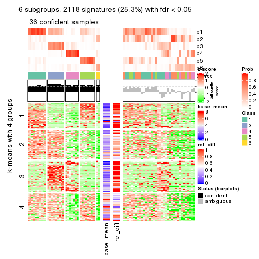
Signature heatmaps where rows are not scaled:
get_signatures(res, k = 2, scale_rows = FALSE)
get_signatures(res, k = 3, scale_rows = FALSE)
get_signatures(res, k = 4, scale_rows = FALSE)
get_signatures(res, k = 5, scale_rows = FALSE)
get_signatures(res, k = 6, scale_rows = FALSE)
Compare the overlap of signatures from different k:
compare_signatures(res)

get_signature() returns a data frame invisibly. TO get the list of signatures, the function
call should be assigned to a variable explicitly. In following code, if plot argument is set
to FALSE, no heatmap is plotted while only the differential analysis is performed.
# code only for demonstration
tb = get_signature(res, k = ..., plot = FALSE)
An example of the output of tb is:
#> which_row fdr mean_1 mean_2 scaled_mean_1 scaled_mean_2 km
#> 1 38 0.042760348 8.373488 9.131774 -0.5533452 0.5164555 1
#> 2 40 0.018707592 7.106213 8.469186 -0.6173731 0.5762149 1
#> 3 55 0.019134737 10.221463 11.207825 -0.6159697 0.5749050 1
#> 4 59 0.006059896 5.921854 7.869574 -0.6899429 0.6439467 1
#> 5 60 0.018055526 8.928898 10.211722 -0.6204761 0.5791110 1
#> 6 98 0.009384629 15.714769 14.887706 0.6635654 -0.6193277 2
...
The columns in tb are:
which_row: row indices corresponding to the input matrix.fdr: FDR for the differential test. mean_x: The mean value in group x.scaled_mean_x: The mean value in group x after rows are scaled.km: Row groups if k-means clustering is applied to rows.UMAP plot which shows how samples are separated.
dimension_reduction(res, k = 2, method = "UMAP")
dimension_reduction(res, k = 3, method = "UMAP")
dimension_reduction(res, k = 4, method = "UMAP")
dimension_reduction(res, k = 5, method = "UMAP")
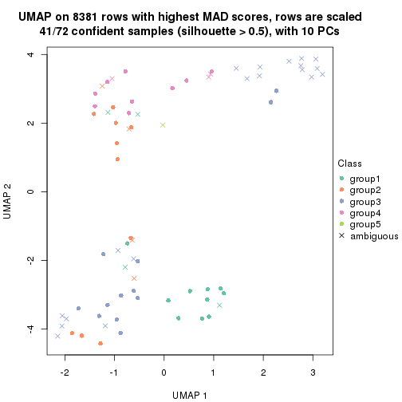
dimension_reduction(res, k = 6, method = "UMAP")
Following heatmap shows how subgroups are split when increasing k:
collect_classes(res)
If matrix rows can be associated to genes, consider to use GO_Enrichment(res,
...) to perform function enrichment for the signature genes.
The object with results only for a single top-value method and a single partition method can be extracted as:
res = res_list["ATC", "hclust"]
# you can also extract it by
# res = res_list["ATC:hclust"]
A summary of res and all the functions that can be applied to it:
res
#> A 'ConsensusPartition' object with k = 2, 3, 4, 5, 6.
#> On a matrix with 8381 rows and 72 columns.
#> Top rows (838, 1676, 2514, 3352, 4190) are extracted by 'ATC' method.
#> Subgroups are detected by 'hclust' method.
#> Performed in total 1250 partitions by row resampling.
#> Best k for subgroups seems to be 2.
#>
#> Following methods can be applied to this 'ConsensusPartition' object:
#> [1] "cola_report" "collect_classes" "collect_plots"
#> [4] "collect_stats" "colnames" "compare_signatures"
#> [7] "consensus_heatmap" "dimension_reduction" "functional_enrichment"
#> [10] "get_anno_col" "get_anno" "get_classes"
#> [13] "get_consensus" "get_matrix" "get_membership"
#> [16] "get_param" "get_signatures" "get_stats"
#> [19] "is_best_k" "is_stable_k" "membership_heatmap"
#> [22] "ncol" "nrow" "plot_ecdf"
#> [25] "rownames" "select_partition_number" "show"
#> [28] "suggest_best_k" "test_to_known_factors"
collect_plots() function collects all the plots made from res for all k (number of partitions)
into one single page to provide an easy and fast comparison between different k.
collect_plots(res)
The plots are:
k and the heatmap of
predicted classes for each k.k.k.k.All the plots in panels can be made by individual functions and they are plotted later in this section.
select_partition_number() produces several plots showing different
statistics for choosing “optimized” k. There are following statistics:
k;k, the area increased is defined as \(A_k - A_{k-1}\).The detailed explanations of these statistics can be found in the cola vignette.
Generally speaking, lower PAC score, higher mean silhouette score or higher
concordance corresponds to better partition. Rand index and Jaccard index
measure how similar the current partition is compared to partition with k-1.
If they are too similar, we won't accept k is better than k-1.
select_partition_number(res)
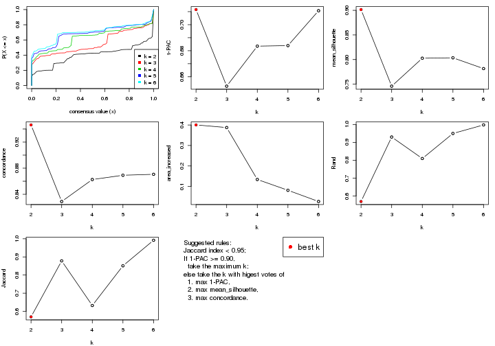
The numeric values for all these statistics can be obtained by get_stats().
get_stats(res)
#> k 1-PAC mean_silhouette concordance area_increased Rand Jaccard
#> 2 2 0.712 0.902 0.946 0.4004 0.570 0.570
#> 3 3 0.653 0.746 0.829 0.3875 0.930 0.878
#> 4 4 0.683 0.803 0.863 0.1340 0.810 0.632
#> 5 5 0.684 0.804 0.869 0.0813 0.950 0.851
#> 6 6 0.711 0.782 0.871 0.0264 0.998 0.992
suggest_best_k() suggests the best \(k\) based on these statistics. The rules are as follows:
NA.suggest_best_k(res)
#> [1] 2
Following shows the table of the partitions (You need to click the show/hide
code output link to see it). The membership matrix (columns with name p*)
is inferred by
clue::cl_consensus()
function with the SE method. Basically the value in the membership matrix
represents the probability to belong to a certain group. The finall class
label for an item is determined with the group with highest probability it
belongs to.
In get_classes() function, the entropy is calculated from the membership
matrix and the silhouette score is calculated from the consensus matrix.
cbind(get_classes(res, k = 2), get_membership(res, k = 2))
#> class entropy silhouette p1 p2
#> SRR2558111 1 0.0000 0.9735 1.000 0.000
#> SRR2558177 2 0.0000 0.8586 0.000 1.000
#> SRR2558176 1 0.4815 0.8607 0.896 0.104
#> SRR2558175 1 0.0000 0.9735 1.000 0.000
#> SRR2558174 1 0.0000 0.9735 1.000 0.000
#> SRR2558173 1 0.3114 0.9189 0.944 0.056
#> SRR2558172 1 0.2603 0.9326 0.956 0.044
#> SRR2558171 1 0.1184 0.9593 0.984 0.016
#> SRR2558170 2 0.6801 0.8364 0.180 0.820
#> SRR2558169 2 0.9087 0.6896 0.324 0.676
#> SRR2558168 1 0.0000 0.9735 1.000 0.000
#> SRR2558167 2 0.6801 0.8322 0.180 0.820
#> SRR2558166 2 0.8499 0.7564 0.276 0.724
#> SRR2558165 2 0.0000 0.8586 0.000 1.000
#> SRR2558164 1 0.0000 0.9735 1.000 0.000
#> SRR2558163 2 0.8861 0.7209 0.304 0.696
#> SRR2558162 1 0.6623 0.7597 0.828 0.172
#> SRR2558161 2 0.8713 0.7368 0.292 0.708
#> SRR2558160 1 0.4161 0.8861 0.916 0.084
#> SRR2558159 2 0.6801 0.8364 0.180 0.820
#> SRR2558158 2 0.8327 0.7691 0.264 0.736
#> SRR2558157 2 0.6801 0.8364 0.180 0.820
#> SRR2558156 2 0.0000 0.8586 0.000 1.000
#> SRR2558155 1 0.9896 -0.0107 0.560 0.440
#> SRR2558154 2 0.0000 0.8586 0.000 1.000
#> SRR2558153 1 0.0000 0.9735 1.000 0.000
#> SRR2558152 1 0.0000 0.9735 1.000 0.000
#> SRR2558151 1 0.0000 0.9735 1.000 0.000
#> SRR2558150 1 0.0000 0.9735 1.000 0.000
#> SRR2558149 1 0.0000 0.9735 1.000 0.000
#> SRR2558148 1 0.0000 0.9735 1.000 0.000
#> SRR2558147 1 0.0000 0.9735 1.000 0.000
#> SRR2558146 1 0.0000 0.9735 1.000 0.000
#> SRR2558145 1 0.0000 0.9735 1.000 0.000
#> SRR2558144 1 0.0000 0.9735 1.000 0.000
#> SRR2558143 1 0.0000 0.9735 1.000 0.000
#> SRR2558142 1 0.0000 0.9735 1.000 0.000
#> SRR2558141 2 0.2043 0.8617 0.032 0.968
#> SRR2558140 2 0.0672 0.8605 0.008 0.992
#> SRR2558139 1 0.0000 0.9735 1.000 0.000
#> SRR2558138 1 0.0000 0.9735 1.000 0.000
#> SRR2558137 1 0.0000 0.9735 1.000 0.000
#> SRR2558136 1 0.0000 0.9735 1.000 0.000
#> SRR2558182 1 0.0000 0.9735 1.000 0.000
#> SRR2558181 1 0.0000 0.9735 1.000 0.000
#> SRR2558180 2 0.0000 0.8586 0.000 1.000
#> SRR2558179 1 0.6712 0.7532 0.824 0.176
#> SRR2558178 2 0.1843 0.8619 0.028 0.972
#> SRR2558134 1 0.0000 0.9735 1.000 0.000
#> SRR2558135 1 0.0000 0.9735 1.000 0.000
#> SRR2558133 2 0.6801 0.8364 0.180 0.820
#> SRR2558132 1 0.0000 0.9735 1.000 0.000
#> SRR2558131 1 0.0000 0.9735 1.000 0.000
#> SRR2558129 1 0.0000 0.9735 1.000 0.000
#> SRR2558127 2 0.0000 0.8586 0.000 1.000
#> SRR2558126 1 0.0000 0.9735 1.000 0.000
#> SRR2558128 1 0.0000 0.9735 1.000 0.000
#> SRR2558125 2 0.0672 0.8605 0.008 0.992
#> SRR2558130 1 0.0000 0.9735 1.000 0.000
#> SRR2558124 2 0.9248 0.6575 0.340 0.660
#> SRR2558123 2 0.0000 0.8586 0.000 1.000
#> SRR2558121 1 0.0000 0.9735 1.000 0.000
#> SRR2558122 1 0.0000 0.9735 1.000 0.000
#> SRR2558120 1 0.0000 0.9735 1.000 0.000
#> SRR2558119 1 0.0000 0.9735 1.000 0.000
#> SRR2558117 1 0.0000 0.9735 1.000 0.000
#> SRR2558118 1 0.0000 0.9735 1.000 0.000
#> SRR2558115 1 0.0000 0.9735 1.000 0.000
#> SRR2558116 1 0.0000 0.9735 1.000 0.000
#> SRR2558114 1 0.0000 0.9735 1.000 0.000
#> SRR2558113 1 0.0000 0.9735 1.000 0.000
#> SRR2558112 1 0.0000 0.9735 1.000 0.000
cbind(get_classes(res, k = 3), get_membership(res, k = 3))
#> class entropy silhouette p1 p2 p3
#> SRR2558111 1 0.0000 0.8557 1.000 0.000 0.000
#> SRR2558177 2 0.6180 0.9730 0.000 0.584 0.416
#> SRR2558176 1 0.5493 0.6097 0.756 0.012 0.232
#> SRR2558175 1 0.0000 0.8557 1.000 0.000 0.000
#> SRR2558174 1 0.0000 0.8557 1.000 0.000 0.000
#> SRR2558173 1 0.2590 0.8022 0.924 0.004 0.072
#> SRR2558172 1 0.1964 0.8226 0.944 0.000 0.056
#> SRR2558171 1 0.1289 0.8360 0.968 0.000 0.032
#> SRR2558170 3 0.2878 0.6566 0.000 0.096 0.904
#> SRR2558169 3 0.4291 0.5327 0.152 0.008 0.840
#> SRR2558168 1 0.6045 0.6621 0.620 0.380 0.000
#> SRR2558167 3 0.2796 0.6354 0.000 0.092 0.908
#> SRR2558166 3 0.1525 0.7001 0.032 0.004 0.964
#> SRR2558165 2 0.6180 0.9730 0.000 0.584 0.416
#> SRR2558164 1 0.6584 0.6514 0.608 0.380 0.012
#> SRR2558163 3 0.2680 0.6694 0.068 0.008 0.924
#> SRR2558162 1 0.7325 0.2480 0.576 0.036 0.388
#> SRR2558161 3 0.2050 0.6950 0.028 0.020 0.952
#> SRR2558160 1 0.4233 0.7148 0.836 0.004 0.160
#> SRR2558159 3 0.2878 0.6566 0.000 0.096 0.904
#> SRR2558158 3 0.0829 0.6959 0.012 0.004 0.984
#> SRR2558157 3 0.2878 0.6566 0.000 0.096 0.904
#> SRR2558156 2 0.6180 0.9730 0.000 0.584 0.416
#> SRR2558155 3 0.6698 0.3640 0.280 0.036 0.684
#> SRR2558154 2 0.6180 0.9730 0.000 0.584 0.416
#> SRR2558153 1 0.0237 0.8535 0.996 0.000 0.004
#> SRR2558152 1 0.0000 0.8557 1.000 0.000 0.000
#> SRR2558151 1 0.0000 0.8557 1.000 0.000 0.000
#> SRR2558150 1 0.6045 0.6621 0.620 0.380 0.000
#> SRR2558149 1 0.0000 0.8557 1.000 0.000 0.000
#> SRR2558148 1 0.0000 0.8557 1.000 0.000 0.000
#> SRR2558147 1 0.6045 0.6621 0.620 0.380 0.000
#> SRR2558146 1 0.0000 0.8557 1.000 0.000 0.000
#> SRR2558145 1 0.0000 0.8557 1.000 0.000 0.000
#> SRR2558144 1 0.0000 0.8557 1.000 0.000 0.000
#> SRR2558143 1 0.0000 0.8557 1.000 0.000 0.000
#> SRR2558142 1 0.0000 0.8557 1.000 0.000 0.000
#> SRR2558141 3 0.5650 -0.1232 0.000 0.312 0.688
#> SRR2558140 2 0.6308 0.8307 0.000 0.508 0.492
#> SRR2558139 1 0.6045 0.6621 0.620 0.380 0.000
#> SRR2558138 1 0.0000 0.8557 1.000 0.000 0.000
#> SRR2558137 1 0.6045 0.6621 0.620 0.380 0.000
#> SRR2558136 1 0.0000 0.8557 1.000 0.000 0.000
#> SRR2558182 1 0.5497 0.7149 0.708 0.292 0.000
#> SRR2558181 1 0.5497 0.7149 0.708 0.292 0.000
#> SRR2558180 2 0.6180 0.9730 0.000 0.584 0.416
#> SRR2558179 1 0.7339 0.2377 0.572 0.036 0.392
#> SRR2558178 3 0.5327 0.0906 0.000 0.272 0.728
#> SRR2558134 1 0.6045 0.6621 0.620 0.380 0.000
#> SRR2558135 1 0.0000 0.8557 1.000 0.000 0.000
#> SRR2558133 3 0.2878 0.6566 0.000 0.096 0.904
#> SRR2558132 1 0.6045 0.6621 0.620 0.380 0.000
#> SRR2558131 1 0.0000 0.8557 1.000 0.000 0.000
#> SRR2558129 1 0.0000 0.8557 1.000 0.000 0.000
#> SRR2558127 2 0.6180 0.9730 0.000 0.584 0.416
#> SRR2558126 1 0.0000 0.8557 1.000 0.000 0.000
#> SRR2558128 1 0.6045 0.6621 0.620 0.380 0.000
#> SRR2558125 2 0.6260 0.9288 0.000 0.552 0.448
#> SRR2558130 1 0.0000 0.8557 1.000 0.000 0.000
#> SRR2558124 3 0.3456 0.6534 0.060 0.036 0.904
#> SRR2558123 2 0.6180 0.9730 0.000 0.584 0.416
#> SRR2558121 1 0.0000 0.8557 1.000 0.000 0.000
#> SRR2558122 1 0.0000 0.8557 1.000 0.000 0.000
#> SRR2558120 1 0.6045 0.6621 0.620 0.380 0.000
#> SRR2558119 1 0.0000 0.8557 1.000 0.000 0.000
#> SRR2558117 1 0.6045 0.6621 0.620 0.380 0.000
#> SRR2558118 1 0.0000 0.8557 1.000 0.000 0.000
#> SRR2558115 1 0.6045 0.6621 0.620 0.380 0.000
#> SRR2558116 1 0.0000 0.8557 1.000 0.000 0.000
#> SRR2558114 1 0.0000 0.8557 1.000 0.000 0.000
#> SRR2558113 1 0.0000 0.8557 1.000 0.000 0.000
#> SRR2558112 1 0.0000 0.8557 1.000 0.000 0.000
cbind(get_classes(res, k = 4), get_membership(res, k = 4))
#> class entropy silhouette p1 p2 p3 p4
#> SRR2558111 1 0.0000 0.905 1.000 0.000 0.000 0.000
#> SRR2558177 2 0.0000 0.902 0.000 1.000 0.000 0.000
#> SRR2558176 1 0.5515 0.592 0.732 0.000 0.116 0.152
#> SRR2558175 1 0.0000 0.905 1.000 0.000 0.000 0.000
#> SRR2558174 1 0.0000 0.905 1.000 0.000 0.000 0.000
#> SRR2558173 1 0.2542 0.814 0.904 0.000 0.012 0.084
#> SRR2558172 1 0.2101 0.843 0.928 0.000 0.012 0.060
#> SRR2558171 1 0.1452 0.869 0.956 0.000 0.008 0.036
#> SRR2558170 4 0.4599 0.707 0.000 0.212 0.028 0.760
#> SRR2558169 4 0.3880 0.644 0.136 0.020 0.008 0.836
#> SRR2558168 3 0.4564 0.998 0.328 0.000 0.672 0.000
#> SRR2558167 4 0.3591 0.715 0.000 0.168 0.008 0.824
#> SRR2558166 4 0.2111 0.747 0.024 0.044 0.000 0.932
#> SRR2558165 2 0.0000 0.902 0.000 1.000 0.000 0.000
#> SRR2558164 3 0.4914 0.974 0.312 0.000 0.676 0.012
#> SRR2558163 4 0.2335 0.726 0.060 0.020 0.000 0.920
#> SRR2558162 1 0.7146 0.307 0.548 0.000 0.276 0.176
#> SRR2558161 4 0.1820 0.731 0.000 0.020 0.036 0.944
#> SRR2558160 1 0.4374 0.703 0.812 0.000 0.068 0.120
#> SRR2558159 4 0.4599 0.707 0.000 0.212 0.028 0.760
#> SRR2558158 4 0.1743 0.745 0.004 0.056 0.000 0.940
#> SRR2558157 4 0.4599 0.707 0.000 0.212 0.028 0.760
#> SRR2558156 2 0.0000 0.902 0.000 1.000 0.000 0.000
#> SRR2558155 4 0.8673 0.340 0.256 0.040 0.292 0.412
#> SRR2558154 2 0.0000 0.902 0.000 1.000 0.000 0.000
#> SRR2558153 1 0.0376 0.900 0.992 0.000 0.004 0.004
#> SRR2558152 1 0.0000 0.905 1.000 0.000 0.000 0.000
#> SRR2558151 1 0.0000 0.905 1.000 0.000 0.000 0.000
#> SRR2558150 3 0.4564 0.998 0.328 0.000 0.672 0.000
#> SRR2558149 1 0.0000 0.905 1.000 0.000 0.000 0.000
#> SRR2558148 1 0.0000 0.905 1.000 0.000 0.000 0.000
#> SRR2558147 3 0.4564 0.998 0.328 0.000 0.672 0.000
#> SRR2558146 1 0.0000 0.905 1.000 0.000 0.000 0.000
#> SRR2558145 1 0.0000 0.905 1.000 0.000 0.000 0.000
#> SRR2558144 1 0.0188 0.902 0.996 0.000 0.004 0.000
#> SRR2558143 1 0.0188 0.902 0.996 0.000 0.004 0.000
#> SRR2558142 1 0.0188 0.903 0.996 0.000 0.000 0.004
#> SRR2558141 2 0.5334 0.482 0.000 0.680 0.036 0.284
#> SRR2558140 2 0.2179 0.849 0.000 0.924 0.012 0.064
#> SRR2558139 3 0.4564 0.998 0.328 0.000 0.672 0.000
#> SRR2558138 1 0.0000 0.905 1.000 0.000 0.000 0.000
#> SRR2558137 3 0.4564 0.998 0.328 0.000 0.672 0.000
#> SRR2558136 1 0.0000 0.905 1.000 0.000 0.000 0.000
#> SRR2558182 1 0.4855 -0.281 0.600 0.000 0.400 0.000
#> SRR2558181 1 0.4855 -0.281 0.600 0.000 0.400 0.000
#> SRR2558180 2 0.0000 0.902 0.000 1.000 0.000 0.000
#> SRR2558179 1 0.7179 0.299 0.544 0.000 0.276 0.180
#> SRR2558178 2 0.5754 0.401 0.000 0.636 0.048 0.316
#> SRR2558134 3 0.4564 0.998 0.328 0.000 0.672 0.000
#> SRR2558135 1 0.0188 0.902 0.996 0.000 0.004 0.000
#> SRR2558133 4 0.4599 0.707 0.000 0.212 0.028 0.760
#> SRR2558132 3 0.4564 0.998 0.328 0.000 0.672 0.000
#> SRR2558131 1 0.0000 0.905 1.000 0.000 0.000 0.000
#> SRR2558129 1 0.0188 0.902 0.996 0.000 0.004 0.000
#> SRR2558127 2 0.0000 0.902 0.000 1.000 0.000 0.000
#> SRR2558126 1 0.0000 0.905 1.000 0.000 0.000 0.000
#> SRR2558128 3 0.4564 0.998 0.328 0.000 0.672 0.000
#> SRR2558125 2 0.1022 0.885 0.000 0.968 0.000 0.032
#> SRR2558130 1 0.0000 0.905 1.000 0.000 0.000 0.000
#> SRR2558124 4 0.8618 0.252 0.036 0.260 0.292 0.412
#> SRR2558123 2 0.0000 0.902 0.000 1.000 0.000 0.000
#> SRR2558121 1 0.0000 0.905 1.000 0.000 0.000 0.000
#> SRR2558122 1 0.0000 0.905 1.000 0.000 0.000 0.000
#> SRR2558120 3 0.4564 0.998 0.328 0.000 0.672 0.000
#> SRR2558119 1 0.0000 0.905 1.000 0.000 0.000 0.000
#> SRR2558117 3 0.4564 0.998 0.328 0.000 0.672 0.000
#> SRR2558118 1 0.0000 0.905 1.000 0.000 0.000 0.000
#> SRR2558115 3 0.4564 0.998 0.328 0.000 0.672 0.000
#> SRR2558116 1 0.0000 0.905 1.000 0.000 0.000 0.000
#> SRR2558114 1 0.0000 0.905 1.000 0.000 0.000 0.000
#> SRR2558113 1 0.0000 0.905 1.000 0.000 0.000 0.000
#> SRR2558112 1 0.0000 0.905 1.000 0.000 0.000 0.000
cbind(get_classes(res, k = 5), get_membership(res, k = 5))
#> class entropy silhouette p1 p2 p3 p4 p5
#> SRR2558111 1 0.0162 0.9214 0.996 0.000 0.000 0.000 0.004
#> SRR2558177 2 0.0992 0.8735 0.000 0.968 0.024 0.008 0.000
#> SRR2558176 5 0.4294 0.1804 0.468 0.000 0.000 0.000 0.532
#> SRR2558175 1 0.0162 0.9216 0.996 0.000 0.000 0.000 0.004
#> SRR2558174 1 0.0162 0.9216 0.996 0.000 0.000 0.000 0.004
#> SRR2558173 1 0.3452 0.6229 0.756 0.000 0.000 0.000 0.244
#> SRR2558172 1 0.3395 0.6513 0.764 0.000 0.000 0.000 0.236
#> SRR2558171 1 0.1478 0.8761 0.936 0.000 0.000 0.000 0.064
#> SRR2558170 4 0.5598 0.7094 0.000 0.164 0.004 0.656 0.176
#> SRR2558169 4 0.2873 0.5912 0.128 0.000 0.016 0.856 0.000
#> SRR2558168 3 0.3242 0.9969 0.216 0.000 0.784 0.000 0.000
#> SRR2558167 4 0.3275 0.7528 0.000 0.068 0.064 0.860 0.008
#> SRR2558166 4 0.1871 0.7647 0.020 0.012 0.004 0.940 0.024
#> SRR2558165 2 0.0000 0.8818 0.000 1.000 0.000 0.000 0.000
#> SRR2558164 3 0.3462 0.9651 0.196 0.000 0.792 0.012 0.000
#> SRR2558163 4 0.1557 0.7239 0.052 0.000 0.008 0.940 0.000
#> SRR2558162 5 0.4061 0.6099 0.240 0.000 0.016 0.004 0.740
#> SRR2558161 4 0.2351 0.7151 0.000 0.000 0.088 0.896 0.016
#> SRR2558160 1 0.4171 0.1889 0.604 0.000 0.000 0.000 0.396
#> SRR2558159 4 0.5598 0.7094 0.000 0.164 0.004 0.656 0.176
#> SRR2558158 4 0.1372 0.7670 0.000 0.016 0.004 0.956 0.024
#> SRR2558157 4 0.5598 0.7094 0.000 0.164 0.004 0.656 0.176
#> SRR2558156 2 0.0000 0.8818 0.000 1.000 0.000 0.000 0.000
#> SRR2558155 5 0.3050 0.3369 0.008 0.040 0.012 0.056 0.884
#> SRR2558154 2 0.0000 0.8818 0.000 1.000 0.000 0.000 0.000
#> SRR2558153 1 0.0609 0.9148 0.980 0.000 0.000 0.000 0.020
#> SRR2558152 1 0.0162 0.9216 0.996 0.000 0.000 0.000 0.004
#> SRR2558151 1 0.0162 0.9213 0.996 0.000 0.000 0.000 0.004
#> SRR2558150 3 0.3242 0.9969 0.216 0.000 0.784 0.000 0.000
#> SRR2558149 1 0.0162 0.9213 0.996 0.000 0.000 0.000 0.004
#> SRR2558148 1 0.0162 0.9213 0.996 0.000 0.000 0.000 0.004
#> SRR2558147 3 0.3242 0.9969 0.216 0.000 0.784 0.000 0.000
#> SRR2558146 1 0.1197 0.8935 0.952 0.000 0.000 0.000 0.048
#> SRR2558145 1 0.0162 0.9213 0.996 0.000 0.000 0.000 0.004
#> SRR2558144 1 0.0404 0.9194 0.988 0.000 0.000 0.000 0.012
#> SRR2558143 1 0.0404 0.9191 0.988 0.000 0.000 0.000 0.012
#> SRR2558142 1 0.1341 0.8866 0.944 0.000 0.000 0.000 0.056
#> SRR2558141 2 0.7079 0.5018 0.000 0.556 0.092 0.120 0.232
#> SRR2558140 2 0.3574 0.8208 0.000 0.852 0.048 0.032 0.068
#> SRR2558139 3 0.3242 0.9969 0.216 0.000 0.784 0.000 0.000
#> SRR2558138 1 0.0162 0.9216 0.996 0.000 0.000 0.000 0.004
#> SRR2558137 3 0.3242 0.9969 0.216 0.000 0.784 0.000 0.000
#> SRR2558136 1 0.0162 0.9213 0.996 0.000 0.000 0.000 0.004
#> SRR2558182 1 0.4182 0.0737 0.600 0.000 0.400 0.000 0.000
#> SRR2558181 1 0.4182 0.0737 0.600 0.000 0.400 0.000 0.000
#> SRR2558180 2 0.0000 0.8818 0.000 1.000 0.000 0.000 0.000
#> SRR2558179 5 0.4033 0.6102 0.236 0.000 0.016 0.004 0.744
#> SRR2558178 2 0.7044 0.4840 0.000 0.512 0.092 0.084 0.312
#> SRR2558134 3 0.3242 0.9969 0.216 0.000 0.784 0.000 0.000
#> SRR2558135 1 0.0290 0.9210 0.992 0.000 0.000 0.000 0.008
#> SRR2558133 4 0.5598 0.7094 0.000 0.164 0.004 0.656 0.176
#> SRR2558132 3 0.3242 0.9969 0.216 0.000 0.784 0.000 0.000
#> SRR2558131 1 0.0290 0.9206 0.992 0.000 0.000 0.000 0.008
#> SRR2558129 1 0.0290 0.9210 0.992 0.000 0.000 0.000 0.008
#> SRR2558127 2 0.0000 0.8818 0.000 1.000 0.000 0.000 0.000
#> SRR2558126 1 0.0290 0.9206 0.992 0.000 0.000 0.000 0.008
#> SRR2558128 3 0.3242 0.9969 0.216 0.000 0.784 0.000 0.000
#> SRR2558125 2 0.3470 0.8213 0.000 0.852 0.080 0.052 0.016
#> SRR2558130 1 0.0404 0.9193 0.988 0.000 0.000 0.000 0.012
#> SRR2558124 5 0.5169 0.0445 0.000 0.260 0.012 0.056 0.672
#> SRR2558123 2 0.0000 0.8818 0.000 1.000 0.000 0.000 0.000
#> SRR2558121 1 0.0162 0.9216 0.996 0.000 0.000 0.000 0.004
#> SRR2558122 1 0.0290 0.9206 0.992 0.000 0.000 0.000 0.008
#> SRR2558120 3 0.3242 0.9969 0.216 0.000 0.784 0.000 0.000
#> SRR2558119 1 0.0510 0.9161 0.984 0.000 0.000 0.000 0.016
#> SRR2558117 3 0.3242 0.9969 0.216 0.000 0.784 0.000 0.000
#> SRR2558118 1 0.0404 0.9193 0.988 0.000 0.000 0.000 0.012
#> SRR2558115 3 0.3242 0.9969 0.216 0.000 0.784 0.000 0.000
#> SRR2558116 1 0.0162 0.9213 0.996 0.000 0.000 0.000 0.004
#> SRR2558114 1 0.0162 0.9213 0.996 0.000 0.000 0.000 0.004
#> SRR2558113 1 0.0510 0.9173 0.984 0.000 0.000 0.000 0.016
#> SRR2558112 1 0.0162 0.9213 0.996 0.000 0.000 0.000 0.004
cbind(get_classes(res, k = 6), get_membership(res, k = 6))
#> class entropy silhouette p1 p2 p3 p4 p5 p6
#> SRR2558111 1 0.0146 0.9198 0.996 0.000 0.000 0.000 0.004 0.000
#> SRR2558177 2 0.0891 0.8277 0.000 0.968 0.024 0.008 0.000 0.000
#> SRR2558176 5 0.3101 0.3976 0.244 0.000 0.000 0.000 0.756 0.000
#> SRR2558175 1 0.0146 0.9201 0.996 0.000 0.000 0.000 0.004 0.000
#> SRR2558174 1 0.0146 0.9201 0.996 0.000 0.000 0.000 0.004 0.000
#> SRR2558173 1 0.3852 0.5126 0.664 0.000 0.000 0.000 0.324 0.012
#> SRR2558172 1 0.4002 0.6646 0.744 0.000 0.000 0.000 0.068 0.188
#> SRR2558171 1 0.1812 0.8637 0.912 0.000 0.000 0.000 0.080 0.008
#> SRR2558170 4 0.5124 0.6207 0.000 0.152 0.008 0.652 0.000 0.188
#> SRR2558169 4 0.2581 0.5463 0.120 0.000 0.020 0.860 0.000 0.000
#> SRR2558168 3 0.2854 0.9955 0.208 0.000 0.792 0.000 0.000 0.000
#> SRR2558167 4 0.3070 0.6722 0.000 0.056 0.072 0.856 0.000 0.016
#> SRR2558166 4 0.1515 0.7021 0.020 0.008 0.000 0.944 0.000 0.028
#> SRR2558165 2 0.0000 0.8386 0.000 1.000 0.000 0.000 0.000 0.000
#> SRR2558164 3 0.2980 0.9494 0.180 0.000 0.808 0.012 0.000 0.000
#> SRR2558163 4 0.1333 0.6662 0.048 0.000 0.008 0.944 0.000 0.000
#> SRR2558162 5 0.3171 0.4895 0.012 0.000 0.000 0.000 0.784 0.204
#> SRR2558161 4 0.3327 0.6104 0.000 0.000 0.112 0.832 0.036 0.020
#> SRR2558160 1 0.5353 -0.1215 0.472 0.000 0.000 0.000 0.420 0.108
#> SRR2558159 4 0.5124 0.6207 0.000 0.152 0.008 0.652 0.000 0.188
#> SRR2558158 4 0.0972 0.7003 0.000 0.008 0.000 0.964 0.000 0.028
#> SRR2558157 4 0.5124 0.6207 0.000 0.152 0.008 0.652 0.000 0.188
#> SRR2558156 2 0.0000 0.8386 0.000 1.000 0.000 0.000 0.000 0.000
#> SRR2558155 6 0.2662 0.5771 0.004 0.008 0.000 0.048 0.056 0.884
#> SRR2558154 2 0.0000 0.8386 0.000 1.000 0.000 0.000 0.000 0.000
#> SRR2558153 1 0.0632 0.9119 0.976 0.000 0.000 0.000 0.024 0.000
#> SRR2558152 1 0.0146 0.9201 0.996 0.000 0.000 0.000 0.004 0.000
#> SRR2558151 1 0.0146 0.9198 0.996 0.000 0.000 0.000 0.000 0.004
#> SRR2558150 3 0.2854 0.9955 0.208 0.000 0.792 0.000 0.000 0.000
#> SRR2558149 1 0.0146 0.9198 0.996 0.000 0.000 0.000 0.000 0.004
#> SRR2558148 1 0.0146 0.9198 0.996 0.000 0.000 0.000 0.000 0.004
#> SRR2558147 3 0.2854 0.9955 0.208 0.000 0.792 0.000 0.000 0.000
#> SRR2558146 1 0.1584 0.8771 0.928 0.000 0.000 0.000 0.064 0.008
#> SRR2558145 1 0.0146 0.9198 0.996 0.000 0.000 0.000 0.000 0.004
#> SRR2558144 1 0.0363 0.9182 0.988 0.000 0.000 0.000 0.012 0.000
#> SRR2558143 1 0.0363 0.9180 0.988 0.000 0.000 0.000 0.012 0.000
#> SRR2558142 1 0.1461 0.8883 0.940 0.000 0.000 0.000 0.016 0.044
#> SRR2558141 2 0.6449 0.2305 0.000 0.520 0.084 0.096 0.004 0.296
#> SRR2558140 2 0.3374 0.7447 0.000 0.836 0.048 0.024 0.000 0.092
#> SRR2558139 3 0.2854 0.9955 0.208 0.000 0.792 0.000 0.000 0.000
#> SRR2558138 1 0.0146 0.9201 0.996 0.000 0.000 0.000 0.004 0.000
#> SRR2558137 3 0.2854 0.9955 0.208 0.000 0.792 0.000 0.000 0.000
#> SRR2558136 1 0.0146 0.9198 0.996 0.000 0.000 0.000 0.000 0.004
#> SRR2558182 1 0.3756 0.0895 0.600 0.000 0.400 0.000 0.000 0.000
#> SRR2558181 1 0.3756 0.0895 0.600 0.000 0.400 0.000 0.000 0.000
#> SRR2558180 2 0.0000 0.8386 0.000 1.000 0.000 0.000 0.000 0.000
#> SRR2558179 5 0.1866 0.5357 0.008 0.000 0.000 0.000 0.908 0.084
#> SRR2558178 2 0.6194 0.0541 0.000 0.464 0.076 0.060 0.004 0.396
#> SRR2558134 3 0.2854 0.9955 0.208 0.000 0.792 0.000 0.000 0.000
#> SRR2558135 1 0.0291 0.9196 0.992 0.000 0.000 0.000 0.004 0.004
#> SRR2558133 4 0.5124 0.6207 0.000 0.152 0.008 0.652 0.000 0.188
#> SRR2558132 3 0.2854 0.9955 0.208 0.000 0.792 0.000 0.000 0.000
#> SRR2558131 1 0.0260 0.9191 0.992 0.000 0.000 0.000 0.008 0.000
#> SRR2558129 1 0.0291 0.9196 0.992 0.000 0.000 0.000 0.004 0.004
#> SRR2558127 2 0.0000 0.8386 0.000 1.000 0.000 0.000 0.000 0.000
#> SRR2558126 1 0.0260 0.9191 0.992 0.000 0.000 0.000 0.008 0.000
#> SRR2558128 3 0.2854 0.9955 0.208 0.000 0.792 0.000 0.000 0.000
#> SRR2558125 2 0.3581 0.7438 0.000 0.828 0.068 0.036 0.000 0.068
#> SRR2558130 1 0.0363 0.9178 0.988 0.000 0.000 0.000 0.000 0.012
#> SRR2558124 6 0.4950 0.6149 0.000 0.232 0.000 0.048 0.044 0.676
#> SRR2558123 2 0.0000 0.8386 0.000 1.000 0.000 0.000 0.000 0.000
#> SRR2558121 1 0.0146 0.9201 0.996 0.000 0.000 0.000 0.004 0.000
#> SRR2558122 1 0.0260 0.9191 0.992 0.000 0.000 0.000 0.008 0.000
#> SRR2558120 3 0.2854 0.9955 0.208 0.000 0.792 0.000 0.000 0.000
#> SRR2558119 1 0.0790 0.9072 0.968 0.000 0.000 0.000 0.000 0.032
#> SRR2558117 3 0.2854 0.9955 0.208 0.000 0.792 0.000 0.000 0.000
#> SRR2558118 1 0.0363 0.9178 0.988 0.000 0.000 0.000 0.000 0.012
#> SRR2558115 3 0.2854 0.9955 0.208 0.000 0.792 0.000 0.000 0.000
#> SRR2558116 1 0.0146 0.9198 0.996 0.000 0.000 0.000 0.000 0.004
#> SRR2558114 1 0.0146 0.9198 0.996 0.000 0.000 0.000 0.000 0.004
#> SRR2558113 1 0.0458 0.9164 0.984 0.000 0.000 0.000 0.000 0.016
#> SRR2558112 1 0.0146 0.9198 0.996 0.000 0.000 0.000 0.000 0.004
Heatmaps for the consensus matrix. It visualizes the probability of two samples to be in a same group.
consensus_heatmap(res, k = 2)
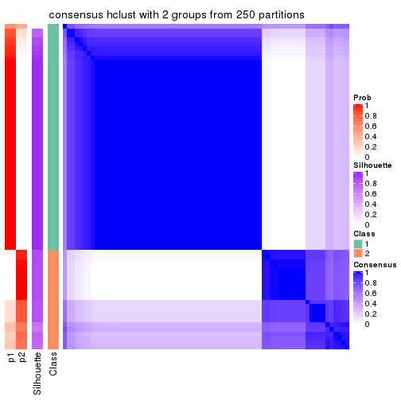
consensus_heatmap(res, k = 3)
consensus_heatmap(res, k = 4)
consensus_heatmap(res, k = 5)
consensus_heatmap(res, k = 6)
Heatmaps for the membership of samples in all partitions to see how consistent they are:
membership_heatmap(res, k = 2)
membership_heatmap(res, k = 3)
membership_heatmap(res, k = 4)
membership_heatmap(res, k = 5)
membership_heatmap(res, k = 6)
As soon as we have had the classes for columns, we can look for signatures which are significantly different between classes which can be candidate marks for certain classes. Following are the heatmaps for signatures.
Signature heatmaps where rows are scaled:
get_signatures(res, k = 2)
get_signatures(res, k = 3)
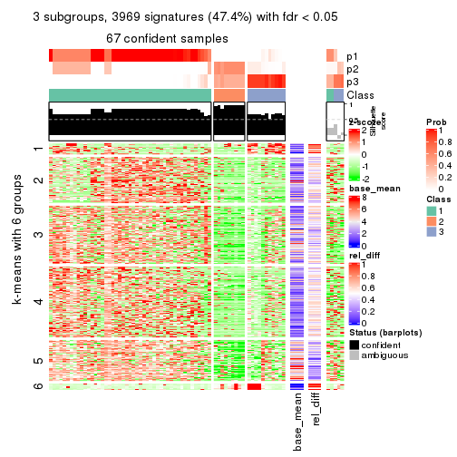
get_signatures(res, k = 4)
get_signatures(res, k = 5)
get_signatures(res, k = 6)
Signature heatmaps where rows are not scaled:
get_signatures(res, k = 2, scale_rows = FALSE)
get_signatures(res, k = 3, scale_rows = FALSE)
get_signatures(res, k = 4, scale_rows = FALSE)
get_signatures(res, k = 5, scale_rows = FALSE)
get_signatures(res, k = 6, scale_rows = FALSE)
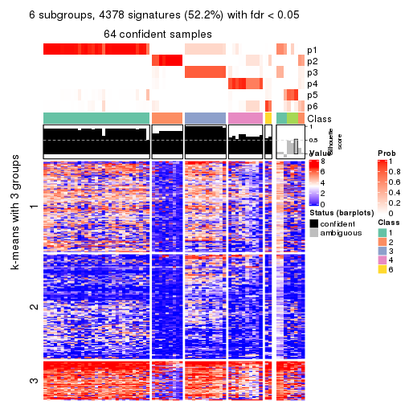
Compare the overlap of signatures from different k:
compare_signatures(res)
get_signature() returns a data frame invisibly. TO get the list of signatures, the function
call should be assigned to a variable explicitly. In following code, if plot argument is set
to FALSE, no heatmap is plotted while only the differential analysis is performed.
# code only for demonstration
tb = get_signature(res, k = ..., plot = FALSE)
An example of the output of tb is:
#> which_row fdr mean_1 mean_2 scaled_mean_1 scaled_mean_2 km
#> 1 38 0.042760348 8.373488 9.131774 -0.5533452 0.5164555 1
#> 2 40 0.018707592 7.106213 8.469186 -0.6173731 0.5762149 1
#> 3 55 0.019134737 10.221463 11.207825 -0.6159697 0.5749050 1
#> 4 59 0.006059896 5.921854 7.869574 -0.6899429 0.6439467 1
#> 5 60 0.018055526 8.928898 10.211722 -0.6204761 0.5791110 1
#> 6 98 0.009384629 15.714769 14.887706 0.6635654 -0.6193277 2
...
The columns in tb are:
which_row: row indices corresponding to the input matrix.fdr: FDR for the differential test. mean_x: The mean value in group x.scaled_mean_x: The mean value in group x after rows are scaled.km: Row groups if k-means clustering is applied to rows.UMAP plot which shows how samples are separated.
dimension_reduction(res, k = 2, method = "UMAP")

dimension_reduction(res, k = 3, method = "UMAP")

dimension_reduction(res, k = 4, method = "UMAP")
dimension_reduction(res, k = 5, method = "UMAP")
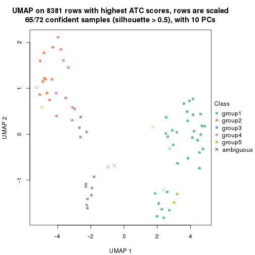
dimension_reduction(res, k = 6, method = "UMAP")
Following heatmap shows how subgroups are split when increasing k:
collect_classes(res)
If matrix rows can be associated to genes, consider to use GO_Enrichment(res,
...) to perform function enrichment for the signature genes.
The object with results only for a single top-value method and a single partition method can be extracted as:
res = res_list["ATC", "kmeans"]
# you can also extract it by
# res = res_list["ATC:kmeans"]
A summary of res and all the functions that can be applied to it:
res
#> A 'ConsensusPartition' object with k = 2, 3, 4, 5, 6.
#> On a matrix with 8381 rows and 72 columns.
#> Top rows (838, 1676, 2514, 3352, 4190) are extracted by 'ATC' method.
#> Subgroups are detected by 'kmeans' method.
#> Performed in total 1250 partitions by row resampling.
#> Best k for subgroups seems to be 5.
#>
#> Following methods can be applied to this 'ConsensusPartition' object:
#> [1] "cola_report" "collect_classes" "collect_plots"
#> [4] "collect_stats" "colnames" "compare_signatures"
#> [7] "consensus_heatmap" "dimension_reduction" "functional_enrichment"
#> [10] "get_anno_col" "get_anno" "get_classes"
#> [13] "get_consensus" "get_matrix" "get_membership"
#> [16] "get_param" "get_signatures" "get_stats"
#> [19] "is_best_k" "is_stable_k" "membership_heatmap"
#> [22] "ncol" "nrow" "plot_ecdf"
#> [25] "rownames" "select_partition_number" "show"
#> [28] "suggest_best_k" "test_to_known_factors"
collect_plots() function collects all the plots made from res for all k (number of partitions)
into one single page to provide an easy and fast comparison between different k.
collect_plots(res)
The plots are:
k and the heatmap of
predicted classes for each k.k.k.k.All the plots in panels can be made by individual functions and they are plotted later in this section.
select_partition_number() produces several plots showing different
statistics for choosing “optimized” k. There are following statistics:
k;k, the area increased is defined as \(A_k - A_{k-1}\).The detailed explanations of these statistics can be found in the cola vignette.
Generally speaking, lower PAC score, higher mean silhouette score or higher
concordance corresponds to better partition. Rand index and Jaccard index
measure how similar the current partition is compared to partition with k-1.
If they are too similar, we won't accept k is better than k-1.
select_partition_number(res)
The numeric values for all these statistics can be obtained by get_stats().
get_stats(res)
#> k 1-PAC mean_silhouette concordance area_increased Rand Jaccard
#> 2 2 1.000 0.978 0.990 0.4368 0.570 0.570
#> 3 3 0.668 0.642 0.833 0.3767 0.763 0.599
#> 4 4 0.677 0.838 0.877 0.1367 0.873 0.683
#> 5 5 0.952 0.921 0.944 0.0849 0.936 0.789
#> 6 6 0.812 0.787 0.882 0.0431 0.995 0.979
suggest_best_k() suggests the best \(k\) based on these statistics. The rules are as follows:
NA.suggest_best_k(res)
#> [1] 5
#> attr(,"optional")
#> [1] 2
There is also optional best \(k\) = 2 that is worth to check.
Following shows the table of the partitions (You need to click the show/hide
code output link to see it). The membership matrix (columns with name p*)
is inferred by
clue::cl_consensus()
function with the SE method. Basically the value in the membership matrix
represents the probability to belong to a certain group. The finall class
label for an item is determined with the group with highest probability it
belongs to.
In get_classes() function, the entropy is calculated from the membership
matrix and the silhouette score is calculated from the consensus matrix.
cbind(get_classes(res, k = 2), get_membership(res, k = 2))
#> class entropy silhouette p1 p2
#> SRR2558111 1 0.000 0.987 1.000 0.000
#> SRR2558177 2 0.000 0.997 0.000 1.000
#> SRR2558176 1 0.000 0.987 1.000 0.000
#> SRR2558175 1 0.000 0.987 1.000 0.000
#> SRR2558174 1 0.000 0.987 1.000 0.000
#> SRR2558173 1 0.000 0.987 1.000 0.000
#> SRR2558172 1 0.000 0.987 1.000 0.000
#> SRR2558171 1 0.000 0.987 1.000 0.000
#> SRR2558170 2 0.000 0.997 0.000 1.000
#> SRR2558169 1 0.494 0.876 0.892 0.108
#> SRR2558168 1 0.000 0.987 1.000 0.000
#> SRR2558167 2 0.000 0.997 0.000 1.000
#> SRR2558166 2 0.000 0.997 0.000 1.000
#> SRR2558165 2 0.000 0.997 0.000 1.000
#> SRR2558164 1 0.000 0.987 1.000 0.000
#> SRR2558163 2 0.000 0.997 0.000 1.000
#> SRR2558162 1 0.844 0.637 0.728 0.272
#> SRR2558161 2 0.000 0.997 0.000 1.000
#> SRR2558160 1 0.000 0.987 1.000 0.000
#> SRR2558159 2 0.000 0.997 0.000 1.000
#> SRR2558158 2 0.000 0.997 0.000 1.000
#> SRR2558157 2 0.000 0.997 0.000 1.000
#> SRR2558156 2 0.000 0.997 0.000 1.000
#> SRR2558155 2 0.327 0.934 0.060 0.940
#> SRR2558154 2 0.000 0.997 0.000 1.000
#> SRR2558153 1 0.000 0.987 1.000 0.000
#> SRR2558152 1 0.000 0.987 1.000 0.000
#> SRR2558151 1 0.000 0.987 1.000 0.000
#> SRR2558150 1 0.000 0.987 1.000 0.000
#> SRR2558149 1 0.000 0.987 1.000 0.000
#> SRR2558148 1 0.000 0.987 1.000 0.000
#> SRR2558147 1 0.000 0.987 1.000 0.000
#> SRR2558146 1 0.000 0.987 1.000 0.000
#> SRR2558145 1 0.000 0.987 1.000 0.000
#> SRR2558144 1 0.000 0.987 1.000 0.000
#> SRR2558143 1 0.000 0.987 1.000 0.000
#> SRR2558142 1 0.000 0.987 1.000 0.000
#> SRR2558141 2 0.000 0.997 0.000 1.000
#> SRR2558140 2 0.000 0.997 0.000 1.000
#> SRR2558139 1 0.000 0.987 1.000 0.000
#> SRR2558138 1 0.000 0.987 1.000 0.000
#> SRR2558137 1 0.000 0.987 1.000 0.000
#> SRR2558136 1 0.000 0.987 1.000 0.000
#> SRR2558182 1 0.000 0.987 1.000 0.000
#> SRR2558181 1 0.000 0.987 1.000 0.000
#> SRR2558180 2 0.000 0.997 0.000 1.000
#> SRR2558179 1 0.839 0.644 0.732 0.268
#> SRR2558178 2 0.000 0.997 0.000 1.000
#> SRR2558134 1 0.000 0.987 1.000 0.000
#> SRR2558135 1 0.000 0.987 1.000 0.000
#> SRR2558133 2 0.000 0.997 0.000 1.000
#> SRR2558132 1 0.000 0.987 1.000 0.000
#> SRR2558131 1 0.000 0.987 1.000 0.000
#> SRR2558129 1 0.000 0.987 1.000 0.000
#> SRR2558127 2 0.000 0.997 0.000 1.000
#> SRR2558126 1 0.000 0.987 1.000 0.000
#> SRR2558128 1 0.000 0.987 1.000 0.000
#> SRR2558125 2 0.000 0.997 0.000 1.000
#> SRR2558130 1 0.000 0.987 1.000 0.000
#> SRR2558124 2 0.000 0.997 0.000 1.000
#> SRR2558123 2 0.000 0.997 0.000 1.000
#> SRR2558121 1 0.000 0.987 1.000 0.000
#> SRR2558122 1 0.000 0.987 1.000 0.000
#> SRR2558120 1 0.000 0.987 1.000 0.000
#> SRR2558119 1 0.000 0.987 1.000 0.000
#> SRR2558117 1 0.000 0.987 1.000 0.000
#> SRR2558118 1 0.000 0.987 1.000 0.000
#> SRR2558115 1 0.000 0.987 1.000 0.000
#> SRR2558116 1 0.000 0.987 1.000 0.000
#> SRR2558114 1 0.000 0.987 1.000 0.000
#> SRR2558113 1 0.000 0.987 1.000 0.000
#> SRR2558112 1 0.000 0.987 1.000 0.000
cbind(get_classes(res, k = 3), get_membership(res, k = 3))
#> class entropy silhouette p1 p2 p3
#> SRR2558111 1 0.1163 0.828 0.972 0.000 0.028
#> SRR2558177 2 0.0000 0.894 0.000 1.000 0.000
#> SRR2558176 1 0.6299 0.189 0.524 0.000 0.476
#> SRR2558175 1 0.0000 0.845 1.000 0.000 0.000
#> SRR2558174 1 0.0000 0.845 1.000 0.000 0.000
#> SRR2558173 1 0.4178 0.646 0.828 0.000 0.172
#> SRR2558172 1 0.4555 0.606 0.800 0.000 0.200
#> SRR2558171 1 0.0892 0.835 0.980 0.000 0.020
#> SRR2558170 2 0.0424 0.894 0.000 0.992 0.008
#> SRR2558169 3 0.0475 0.286 0.004 0.004 0.992
#> SRR2558168 3 0.6307 0.543 0.488 0.000 0.512
#> SRR2558167 2 0.5497 0.700 0.000 0.708 0.292
#> SRR2558166 3 0.5291 -0.143 0.000 0.268 0.732
#> SRR2558165 2 0.0000 0.894 0.000 1.000 0.000
#> SRR2558164 3 0.0424 0.301 0.008 0.000 0.992
#> SRR2558163 3 0.5291 -0.143 0.000 0.268 0.732
#> SRR2558162 1 0.6307 0.172 0.512 0.000 0.488
#> SRR2558161 2 0.6307 0.504 0.000 0.512 0.488
#> SRR2558160 1 0.6204 0.265 0.576 0.000 0.424
#> SRR2558159 3 0.6180 -0.416 0.000 0.416 0.584
#> SRR2558158 2 0.6225 0.568 0.000 0.568 0.432
#> SRR2558157 2 0.1031 0.889 0.000 0.976 0.024
#> SRR2558156 2 0.0000 0.894 0.000 1.000 0.000
#> SRR2558155 3 0.9201 0.020 0.352 0.160 0.488
#> SRR2558154 2 0.0000 0.894 0.000 1.000 0.000
#> SRR2558153 1 0.0892 0.835 0.980 0.000 0.020
#> SRR2558152 1 0.0000 0.845 1.000 0.000 0.000
#> SRR2558151 1 0.0237 0.843 0.996 0.000 0.004
#> SRR2558150 3 0.6307 0.543 0.488 0.000 0.512
#> SRR2558149 1 0.0237 0.843 0.996 0.000 0.004
#> SRR2558148 1 0.0237 0.843 0.996 0.000 0.004
#> SRR2558147 3 0.6307 0.543 0.488 0.000 0.512
#> SRR2558146 1 0.0000 0.845 1.000 0.000 0.000
#> SRR2558145 1 0.0237 0.843 0.996 0.000 0.004
#> SRR2558144 1 0.0000 0.845 1.000 0.000 0.000
#> SRR2558143 1 0.0000 0.845 1.000 0.000 0.000
#> SRR2558142 1 0.0237 0.844 0.996 0.000 0.004
#> SRR2558141 2 0.0592 0.893 0.000 0.988 0.012
#> SRR2558140 2 0.0424 0.894 0.000 0.992 0.008
#> SRR2558139 3 0.6307 0.543 0.488 0.000 0.512
#> SRR2558138 1 0.0000 0.845 1.000 0.000 0.000
#> SRR2558137 3 0.6280 0.536 0.460 0.000 0.540
#> SRR2558136 1 0.0237 0.843 0.996 0.000 0.004
#> SRR2558182 1 0.6286 -0.468 0.536 0.000 0.464
#> SRR2558181 1 0.6252 -0.414 0.556 0.000 0.444
#> SRR2558180 2 0.0000 0.894 0.000 1.000 0.000
#> SRR2558179 1 0.6307 0.172 0.512 0.000 0.488
#> SRR2558178 2 0.2711 0.854 0.000 0.912 0.088
#> SRR2558134 3 0.6307 0.543 0.488 0.000 0.512
#> SRR2558135 1 0.0000 0.845 1.000 0.000 0.000
#> SRR2558133 2 0.0424 0.894 0.000 0.992 0.008
#> SRR2558132 3 0.6307 0.543 0.488 0.000 0.512
#> SRR2558131 1 0.0000 0.845 1.000 0.000 0.000
#> SRR2558129 1 0.0237 0.843 0.996 0.000 0.004
#> SRR2558127 2 0.0000 0.894 0.000 1.000 0.000
#> SRR2558126 1 0.1031 0.832 0.976 0.000 0.024
#> SRR2558128 3 0.6307 0.543 0.488 0.000 0.512
#> SRR2558125 2 0.0237 0.894 0.000 0.996 0.004
#> SRR2558130 1 0.0592 0.840 0.988 0.000 0.012
#> SRR2558124 2 0.6305 0.509 0.000 0.516 0.484
#> SRR2558123 2 0.0000 0.894 0.000 1.000 0.000
#> SRR2558121 1 0.0000 0.845 1.000 0.000 0.000
#> SRR2558122 1 0.0000 0.845 1.000 0.000 0.000
#> SRR2558120 3 0.6307 0.543 0.488 0.000 0.512
#> SRR2558119 1 0.0000 0.845 1.000 0.000 0.000
#> SRR2558117 3 0.6307 0.543 0.488 0.000 0.512
#> SRR2558118 1 0.0892 0.835 0.980 0.000 0.020
#> SRR2558115 3 0.6307 0.543 0.488 0.000 0.512
#> SRR2558116 1 0.0000 0.845 1.000 0.000 0.000
#> SRR2558114 1 0.0000 0.845 1.000 0.000 0.000
#> SRR2558113 1 0.1643 0.811 0.956 0.000 0.044
#> SRR2558112 1 0.0000 0.845 1.000 0.000 0.000
cbind(get_classes(res, k = 4), get_membership(res, k = 4))
#> class entropy silhouette p1 p2 p3 p4
#> SRR2558111 1 0.3051 0.8545 0.884 0.000 0.088 0.028
#> SRR2558177 2 0.0592 0.9700 0.000 0.984 0.016 0.000
#> SRR2558176 1 0.7476 -0.0887 0.412 0.000 0.176 0.412
#> SRR2558175 1 0.0000 0.9063 1.000 0.000 0.000 0.000
#> SRR2558174 1 0.0000 0.9063 1.000 0.000 0.000 0.000
#> SRR2558173 1 0.6080 0.6361 0.684 0.000 0.156 0.160
#> SRR2558172 1 0.6080 0.6361 0.684 0.000 0.156 0.160
#> SRR2558171 1 0.2845 0.8630 0.896 0.000 0.076 0.028
#> SRR2558170 2 0.0376 0.9668 0.000 0.992 0.004 0.004
#> SRR2558169 4 0.2921 0.6896 0.000 0.000 0.140 0.860
#> SRR2558168 3 0.3764 0.9631 0.216 0.000 0.784 0.000
#> SRR2558167 4 0.4387 0.6241 0.000 0.200 0.024 0.776
#> SRR2558166 4 0.3611 0.7246 0.000 0.060 0.080 0.860
#> SRR2558165 2 0.0592 0.9700 0.000 0.984 0.016 0.000
#> SRR2558164 4 0.3726 0.6314 0.000 0.000 0.212 0.788
#> SRR2558163 4 0.3611 0.7246 0.000 0.060 0.080 0.860
#> SRR2558162 4 0.7062 0.4502 0.260 0.000 0.176 0.564
#> SRR2558161 4 0.2198 0.7114 0.000 0.072 0.008 0.920
#> SRR2558160 1 0.6805 0.4891 0.604 0.000 0.176 0.220
#> SRR2558159 4 0.3764 0.7212 0.000 0.072 0.076 0.852
#> SRR2558158 4 0.3448 0.6637 0.000 0.168 0.004 0.828
#> SRR2558157 2 0.2124 0.9154 0.000 0.924 0.008 0.068
#> SRR2558156 2 0.0592 0.9700 0.000 0.984 0.016 0.000
#> SRR2558155 4 0.7190 0.4483 0.260 0.000 0.192 0.548
#> SRR2558154 2 0.0592 0.9700 0.000 0.984 0.016 0.000
#> SRR2558153 1 0.2623 0.8700 0.908 0.000 0.064 0.028
#> SRR2558152 1 0.0000 0.9063 1.000 0.000 0.000 0.000
#> SRR2558151 1 0.0000 0.9063 1.000 0.000 0.000 0.000
#> SRR2558150 3 0.3801 0.9643 0.220 0.000 0.780 0.000
#> SRR2558149 1 0.0000 0.9063 1.000 0.000 0.000 0.000
#> SRR2558148 1 0.0000 0.9063 1.000 0.000 0.000 0.000
#> SRR2558147 3 0.3801 0.9643 0.220 0.000 0.780 0.000
#> SRR2558146 1 0.0000 0.9063 1.000 0.000 0.000 0.000
#> SRR2558145 1 0.0000 0.9063 1.000 0.000 0.000 0.000
#> SRR2558144 1 0.0000 0.9063 1.000 0.000 0.000 0.000
#> SRR2558143 1 0.0000 0.9063 1.000 0.000 0.000 0.000
#> SRR2558142 1 0.1890 0.8818 0.936 0.000 0.056 0.008
#> SRR2558141 2 0.1411 0.9508 0.000 0.960 0.020 0.020
#> SRR2558140 2 0.0779 0.9625 0.000 0.980 0.016 0.004
#> SRR2558139 3 0.3801 0.9643 0.220 0.000 0.780 0.000
#> SRR2558138 1 0.0000 0.9063 1.000 0.000 0.000 0.000
#> SRR2558137 3 0.4365 0.9231 0.188 0.000 0.784 0.028
#> SRR2558136 1 0.0817 0.8856 0.976 0.000 0.024 0.000
#> SRR2558182 3 0.4543 0.8432 0.324 0.000 0.676 0.000
#> SRR2558181 3 0.4661 0.8121 0.348 0.000 0.652 0.000
#> SRR2558180 2 0.0592 0.9700 0.000 0.984 0.016 0.000
#> SRR2558179 4 0.7062 0.4502 0.260 0.000 0.176 0.564
#> SRR2558178 2 0.3674 0.8364 0.000 0.852 0.044 0.104
#> SRR2558134 3 0.3801 0.9643 0.220 0.000 0.780 0.000
#> SRR2558135 1 0.0000 0.9063 1.000 0.000 0.000 0.000
#> SRR2558133 2 0.0376 0.9668 0.000 0.992 0.004 0.004
#> SRR2558132 3 0.3764 0.9631 0.216 0.000 0.784 0.000
#> SRR2558131 1 0.0921 0.8966 0.972 0.000 0.028 0.000
#> SRR2558129 1 0.0000 0.9063 1.000 0.000 0.000 0.000
#> SRR2558127 2 0.0592 0.9700 0.000 0.984 0.016 0.000
#> SRR2558126 1 0.3300 0.8174 0.848 0.000 0.144 0.008
#> SRR2558128 3 0.3764 0.9631 0.216 0.000 0.784 0.000
#> SRR2558125 2 0.0188 0.9677 0.000 0.996 0.000 0.004
#> SRR2558130 1 0.2546 0.8719 0.912 0.000 0.060 0.028
#> SRR2558124 4 0.7155 0.3661 0.000 0.300 0.164 0.536
#> SRR2558123 2 0.0592 0.9700 0.000 0.984 0.016 0.000
#> SRR2558121 1 0.0000 0.9063 1.000 0.000 0.000 0.000
#> SRR2558122 1 0.0000 0.9063 1.000 0.000 0.000 0.000
#> SRR2558120 3 0.3801 0.9643 0.220 0.000 0.780 0.000
#> SRR2558119 1 0.0000 0.9063 1.000 0.000 0.000 0.000
#> SRR2558117 3 0.3764 0.9631 0.216 0.000 0.784 0.000
#> SRR2558118 1 0.2845 0.8633 0.896 0.000 0.076 0.028
#> SRR2558115 3 0.3801 0.9643 0.220 0.000 0.780 0.000
#> SRR2558116 1 0.0000 0.9063 1.000 0.000 0.000 0.000
#> SRR2558114 1 0.0000 0.9063 1.000 0.000 0.000 0.000
#> SRR2558113 1 0.3404 0.8392 0.864 0.000 0.104 0.032
#> SRR2558112 1 0.0000 0.9063 1.000 0.000 0.000 0.000
cbind(get_classes(res, k = 5), get_membership(res, k = 5))
#> class entropy silhouette p1 p2 p3 p4 p5
#> SRR2558111 1 0.1725 0.944 0.936 0.000 0.000 0.020 0.044
#> SRR2558177 2 0.0000 0.963 0.000 1.000 0.000 0.000 0.000
#> SRR2558176 5 0.1918 0.850 0.036 0.000 0.000 0.036 0.928
#> SRR2558175 1 0.0000 0.977 1.000 0.000 0.000 0.000 0.000
#> SRR2558174 1 0.0000 0.977 1.000 0.000 0.000 0.000 0.000
#> SRR2558173 5 0.3582 0.723 0.224 0.000 0.000 0.008 0.768
#> SRR2558172 5 0.3596 0.749 0.200 0.000 0.000 0.016 0.784
#> SRR2558171 1 0.1741 0.950 0.936 0.000 0.000 0.024 0.040
#> SRR2558170 2 0.1299 0.959 0.000 0.960 0.012 0.008 0.020
#> SRR2558169 4 0.1408 0.950 0.000 0.000 0.044 0.948 0.008
#> SRR2558168 3 0.1484 0.915 0.048 0.000 0.944 0.000 0.008
#> SRR2558167 4 0.2818 0.893 0.000 0.052 0.036 0.892 0.020
#> SRR2558166 4 0.1538 0.956 0.000 0.008 0.036 0.948 0.008
#> SRR2558165 2 0.0000 0.963 0.000 1.000 0.000 0.000 0.000
#> SRR2558164 4 0.2390 0.916 0.000 0.000 0.084 0.896 0.020
#> SRR2558163 4 0.1538 0.956 0.000 0.008 0.036 0.948 0.008
#> SRR2558162 5 0.1774 0.844 0.016 0.000 0.000 0.052 0.932
#> SRR2558161 4 0.1267 0.939 0.000 0.012 0.004 0.960 0.024
#> SRR2558160 5 0.2777 0.819 0.120 0.000 0.000 0.016 0.864
#> SRR2558159 4 0.1682 0.956 0.000 0.012 0.032 0.944 0.012
#> SRR2558158 4 0.1282 0.932 0.000 0.044 0.000 0.952 0.004
#> SRR2558157 2 0.2640 0.929 0.000 0.900 0.016 0.052 0.032
#> SRR2558156 2 0.0162 0.962 0.000 0.996 0.000 0.000 0.004
#> SRR2558155 5 0.1934 0.829 0.008 0.000 0.020 0.040 0.932
#> SRR2558154 2 0.0000 0.963 0.000 1.000 0.000 0.000 0.000
#> SRR2558153 1 0.1399 0.964 0.952 0.000 0.000 0.028 0.020
#> SRR2558152 1 0.0000 0.977 1.000 0.000 0.000 0.000 0.000
#> SRR2558151 1 0.0290 0.977 0.992 0.000 0.000 0.008 0.000
#> SRR2558150 3 0.1197 0.917 0.048 0.000 0.952 0.000 0.000
#> SRR2558149 1 0.0290 0.977 0.992 0.000 0.000 0.008 0.000
#> SRR2558148 1 0.0000 0.977 1.000 0.000 0.000 0.000 0.000
#> SRR2558147 3 0.1197 0.917 0.048 0.000 0.952 0.000 0.000
#> SRR2558146 1 0.0000 0.977 1.000 0.000 0.000 0.000 0.000
#> SRR2558145 1 0.0290 0.977 0.992 0.000 0.000 0.008 0.000
#> SRR2558144 1 0.0609 0.976 0.980 0.000 0.000 0.020 0.000
#> SRR2558143 1 0.0290 0.977 0.992 0.000 0.000 0.008 0.000
#> SRR2558142 1 0.0992 0.972 0.968 0.000 0.000 0.024 0.008
#> SRR2558141 2 0.2149 0.946 0.000 0.924 0.028 0.012 0.036
#> SRR2558140 2 0.2036 0.948 0.000 0.928 0.028 0.008 0.036
#> SRR2558139 3 0.1197 0.917 0.048 0.000 0.952 0.000 0.000
#> SRR2558138 1 0.0000 0.977 1.000 0.000 0.000 0.000 0.000
#> SRR2558137 3 0.1690 0.885 0.024 0.000 0.944 0.024 0.008
#> SRR2558136 1 0.1557 0.928 0.940 0.000 0.052 0.008 0.000
#> SRR2558182 3 0.4218 0.551 0.332 0.000 0.660 0.000 0.008
#> SRR2558181 3 0.4392 0.484 0.380 0.000 0.612 0.000 0.008
#> SRR2558180 2 0.0000 0.963 0.000 1.000 0.000 0.000 0.000
#> SRR2558179 5 0.1774 0.844 0.016 0.000 0.000 0.052 0.932
#> SRR2558178 2 0.4571 0.817 0.000 0.780 0.040 0.048 0.132
#> SRR2558134 3 0.1197 0.917 0.048 0.000 0.952 0.000 0.000
#> SRR2558135 1 0.0000 0.977 1.000 0.000 0.000 0.000 0.000
#> SRR2558133 2 0.1393 0.959 0.000 0.956 0.012 0.008 0.024
#> SRR2558132 3 0.1197 0.917 0.048 0.000 0.952 0.000 0.000
#> SRR2558131 1 0.0898 0.973 0.972 0.000 0.000 0.020 0.008
#> SRR2558129 1 0.0290 0.977 0.992 0.000 0.000 0.008 0.000
#> SRR2558127 2 0.0000 0.963 0.000 1.000 0.000 0.000 0.000
#> SRR2558126 1 0.1774 0.938 0.932 0.000 0.000 0.016 0.052
#> SRR2558128 3 0.1484 0.915 0.048 0.000 0.944 0.000 0.008
#> SRR2558125 2 0.1503 0.957 0.000 0.952 0.020 0.008 0.020
#> SRR2558130 1 0.1216 0.964 0.960 0.000 0.000 0.020 0.020
#> SRR2558124 5 0.2917 0.787 0.000 0.024 0.040 0.048 0.888
#> SRR2558123 2 0.0000 0.963 0.000 1.000 0.000 0.000 0.000
#> SRR2558121 1 0.0000 0.977 1.000 0.000 0.000 0.000 0.000
#> SRR2558122 1 0.0609 0.976 0.980 0.000 0.000 0.020 0.000
#> SRR2558120 3 0.1197 0.917 0.048 0.000 0.952 0.000 0.000
#> SRR2558119 1 0.0771 0.974 0.976 0.000 0.000 0.020 0.004
#> SRR2558117 3 0.1484 0.915 0.048 0.000 0.944 0.000 0.008
#> SRR2558118 1 0.1399 0.958 0.952 0.000 0.000 0.020 0.028
#> SRR2558115 3 0.1197 0.917 0.048 0.000 0.952 0.000 0.000
#> SRR2558116 1 0.0404 0.976 0.988 0.000 0.000 0.012 0.000
#> SRR2558114 1 0.0000 0.977 1.000 0.000 0.000 0.000 0.000
#> SRR2558113 1 0.2505 0.893 0.888 0.000 0.000 0.020 0.092
#> SRR2558112 1 0.0290 0.977 0.992 0.000 0.000 0.008 0.000
cbind(get_classes(res, k = 6), get_membership(res, k = 6))
#> class entropy silhouette p1 p2 p3 p4 p5 p6
#> SRR2558111 1 0.4127 0.7266 0.680 0.000 0.000 0.000 0.036 0.284
#> SRR2558177 2 0.0713 0.8771 0.000 0.972 0.000 0.000 0.000 0.028
#> SRR2558176 5 0.2734 0.6021 0.004 0.000 0.000 0.008 0.840 0.148
#> SRR2558175 1 0.0914 0.8853 0.968 0.000 0.000 0.016 0.000 0.016
#> SRR2558174 1 0.1176 0.8846 0.956 0.000 0.000 0.024 0.000 0.020
#> SRR2558173 5 0.4819 0.5451 0.124 0.000 0.000 0.008 0.688 0.180
#> SRR2558172 5 0.5922 0.3588 0.252 0.000 0.000 0.000 0.464 0.284
#> SRR2558171 1 0.4462 0.7045 0.660 0.000 0.000 0.000 0.060 0.280
#> SRR2558170 2 0.2357 0.8509 0.000 0.872 0.000 0.012 0.000 0.116
#> SRR2558169 4 0.1003 0.9400 0.000 0.000 0.028 0.964 0.004 0.004
#> SRR2558168 3 0.1074 0.8779 0.012 0.000 0.960 0.000 0.000 0.028
#> SRR2558167 4 0.2740 0.8369 0.000 0.028 0.000 0.852 0.000 0.120
#> SRR2558166 4 0.0922 0.9426 0.000 0.004 0.024 0.968 0.004 0.000
#> SRR2558165 2 0.0146 0.8827 0.000 0.996 0.000 0.000 0.000 0.004
#> SRR2558164 4 0.2882 0.8762 0.000 0.000 0.060 0.860 0.004 0.076
#> SRR2558163 4 0.0922 0.9426 0.000 0.004 0.024 0.968 0.004 0.000
#> SRR2558162 5 0.0000 0.5628 0.000 0.000 0.000 0.000 1.000 0.000
#> SRR2558161 4 0.1950 0.9140 0.000 0.004 0.008 0.924 0.020 0.044
#> SRR2558160 5 0.3261 0.5940 0.016 0.000 0.000 0.000 0.780 0.204
#> SRR2558159 4 0.1377 0.9417 0.000 0.004 0.024 0.952 0.004 0.016
#> SRR2558158 4 0.1168 0.9234 0.000 0.028 0.000 0.956 0.000 0.016
#> SRR2558157 2 0.3276 0.7939 0.000 0.816 0.000 0.052 0.000 0.132
#> SRR2558156 2 0.0458 0.8806 0.000 0.984 0.000 0.000 0.000 0.016
#> SRR2558155 5 0.4033 0.1715 0.000 0.000 0.004 0.004 0.588 0.404
#> SRR2558154 2 0.0000 0.8844 0.000 1.000 0.000 0.000 0.000 0.000
#> SRR2558153 1 0.3859 0.7500 0.692 0.000 0.000 0.000 0.020 0.288
#> SRR2558152 1 0.1261 0.8843 0.952 0.000 0.000 0.024 0.000 0.024
#> SRR2558151 1 0.0547 0.8854 0.980 0.000 0.000 0.000 0.000 0.020
#> SRR2558150 3 0.0363 0.8854 0.012 0.000 0.988 0.000 0.000 0.000
#> SRR2558149 1 0.0547 0.8854 0.980 0.000 0.000 0.000 0.000 0.020
#> SRR2558148 1 0.0260 0.8865 0.992 0.000 0.000 0.000 0.000 0.008
#> SRR2558147 3 0.0363 0.8854 0.012 0.000 0.988 0.000 0.000 0.000
#> SRR2558146 1 0.1492 0.8845 0.940 0.000 0.000 0.024 0.000 0.036
#> SRR2558145 1 0.0547 0.8854 0.980 0.000 0.000 0.000 0.000 0.020
#> SRR2558144 1 0.1863 0.8760 0.896 0.000 0.000 0.000 0.000 0.104
#> SRR2558143 1 0.0937 0.8880 0.960 0.000 0.000 0.000 0.000 0.040
#> SRR2558142 1 0.2631 0.8406 0.820 0.000 0.000 0.000 0.000 0.180
#> SRR2558141 2 0.2871 0.7771 0.000 0.804 0.000 0.004 0.000 0.192
#> SRR2558140 2 0.2697 0.7864 0.000 0.812 0.000 0.000 0.000 0.188
#> SRR2558139 3 0.0363 0.8854 0.012 0.000 0.988 0.000 0.000 0.000
#> SRR2558138 1 0.1088 0.8847 0.960 0.000 0.000 0.024 0.000 0.016
#> SRR2558137 3 0.1341 0.8602 0.000 0.000 0.948 0.024 0.000 0.028
#> SRR2558136 1 0.1176 0.8747 0.956 0.000 0.024 0.000 0.000 0.020
#> SRR2558182 3 0.3955 0.3786 0.384 0.000 0.608 0.000 0.000 0.008
#> SRR2558181 3 0.4010 0.3208 0.408 0.000 0.584 0.000 0.000 0.008
#> SRR2558180 2 0.0000 0.8844 0.000 1.000 0.000 0.000 0.000 0.000
#> SRR2558179 5 0.0000 0.5628 0.000 0.000 0.000 0.000 1.000 0.000
#> SRR2558178 6 0.5666 0.0000 0.000 0.308 0.000 0.004 0.160 0.528
#> SRR2558134 3 0.0363 0.8854 0.012 0.000 0.988 0.000 0.000 0.000
#> SRR2558135 1 0.0146 0.8875 0.996 0.000 0.000 0.000 0.000 0.004
#> SRR2558133 2 0.2212 0.8549 0.000 0.880 0.000 0.008 0.000 0.112
#> SRR2558132 3 0.0363 0.8854 0.012 0.000 0.988 0.000 0.000 0.000
#> SRR2558131 1 0.2730 0.8371 0.808 0.000 0.000 0.000 0.000 0.192
#> SRR2558129 1 0.0790 0.8871 0.968 0.000 0.000 0.000 0.000 0.032
#> SRR2558127 2 0.0000 0.8844 0.000 1.000 0.000 0.000 0.000 0.000
#> SRR2558126 1 0.3592 0.7823 0.740 0.000 0.000 0.000 0.020 0.240
#> SRR2558128 3 0.1074 0.8779 0.012 0.000 0.960 0.000 0.000 0.028
#> SRR2558125 2 0.2219 0.8412 0.000 0.864 0.000 0.000 0.000 0.136
#> SRR2558130 1 0.3894 0.7574 0.708 0.000 0.000 0.004 0.020 0.268
#> SRR2558124 5 0.4258 -0.0724 0.000 0.004 0.004 0.004 0.500 0.488
#> SRR2558123 2 0.0000 0.8844 0.000 1.000 0.000 0.000 0.000 0.000
#> SRR2558121 1 0.1261 0.8843 0.952 0.000 0.000 0.024 0.000 0.024
#> SRR2558122 1 0.2092 0.8699 0.876 0.000 0.000 0.000 0.000 0.124
#> SRR2558120 3 0.0363 0.8854 0.012 0.000 0.988 0.000 0.000 0.000
#> SRR2558119 1 0.2163 0.8803 0.892 0.000 0.000 0.016 0.000 0.092
#> SRR2558117 3 0.1401 0.8649 0.004 0.000 0.948 0.020 0.000 0.028
#> SRR2558118 1 0.3894 0.7533 0.708 0.000 0.000 0.004 0.020 0.268
#> SRR2558115 3 0.0363 0.8854 0.012 0.000 0.988 0.000 0.000 0.000
#> SRR2558116 1 0.1333 0.8889 0.944 0.000 0.000 0.008 0.000 0.048
#> SRR2558114 1 0.0363 0.8865 0.988 0.000 0.000 0.000 0.000 0.012
#> SRR2558113 1 0.4310 0.7276 0.684 0.000 0.000 0.004 0.044 0.268
#> SRR2558112 1 0.0547 0.8854 0.980 0.000 0.000 0.000 0.000 0.020
Heatmaps for the consensus matrix. It visualizes the probability of two samples to be in a same group.
consensus_heatmap(res, k = 2)
consensus_heatmap(res, k = 3)
consensus_heatmap(res, k = 4)
consensus_heatmap(res, k = 5)
consensus_heatmap(res, k = 6)
Heatmaps for the membership of samples in all partitions to see how consistent they are:
membership_heatmap(res, k = 2)
membership_heatmap(res, k = 3)
membership_heatmap(res, k = 4)

membership_heatmap(res, k = 5)

membership_heatmap(res, k = 6)
As soon as we have had the classes for columns, we can look for signatures which are significantly different between classes which can be candidate marks for certain classes. Following are the heatmaps for signatures.
Signature heatmaps where rows are scaled:
get_signatures(res, k = 2)
get_signatures(res, k = 3)
get_signatures(res, k = 4)
get_signatures(res, k = 5)
get_signatures(res, k = 6)
Signature heatmaps where rows are not scaled:
get_signatures(res, k = 2, scale_rows = FALSE)
get_signatures(res, k = 3, scale_rows = FALSE)
get_signatures(res, k = 4, scale_rows = FALSE)
get_signatures(res, k = 5, scale_rows = FALSE)
get_signatures(res, k = 6, scale_rows = FALSE)
Compare the overlap of signatures from different k:
compare_signatures(res)
get_signature() returns a data frame invisibly. TO get the list of signatures, the function
call should be assigned to a variable explicitly. In following code, if plot argument is set
to FALSE, no heatmap is plotted while only the differential analysis is performed.
# code only for demonstration
tb = get_signature(res, k = ..., plot = FALSE)
An example of the output of tb is:
#> which_row fdr mean_1 mean_2 scaled_mean_1 scaled_mean_2 km
#> 1 38 0.042760348 8.373488 9.131774 -0.5533452 0.5164555 1
#> 2 40 0.018707592 7.106213 8.469186 -0.6173731 0.5762149 1
#> 3 55 0.019134737 10.221463 11.207825 -0.6159697 0.5749050 1
#> 4 59 0.006059896 5.921854 7.869574 -0.6899429 0.6439467 1
#> 5 60 0.018055526 8.928898 10.211722 -0.6204761 0.5791110 1
#> 6 98 0.009384629 15.714769 14.887706 0.6635654 -0.6193277 2
...
The columns in tb are:
which_row: row indices corresponding to the input matrix.fdr: FDR for the differential test. mean_x: The mean value in group x.scaled_mean_x: The mean value in group x after rows are scaled.km: Row groups if k-means clustering is applied to rows.UMAP plot which shows how samples are separated.
dimension_reduction(res, k = 2, method = "UMAP")
dimension_reduction(res, k = 3, method = "UMAP")
dimension_reduction(res, k = 4, method = "UMAP")
dimension_reduction(res, k = 5, method = "UMAP")
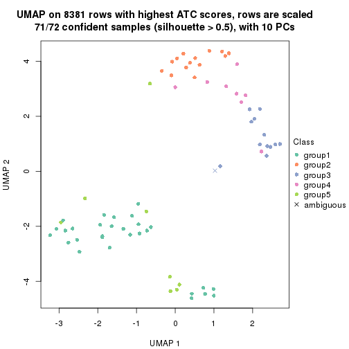
dimension_reduction(res, k = 6, method = "UMAP")
Following heatmap shows how subgroups are split when increasing k:
collect_classes(res)
If matrix rows can be associated to genes, consider to use GO_Enrichment(res,
...) to perform function enrichment for the signature genes.
The object with results only for a single top-value method and a single partition method can be extracted as:
res = res_list["ATC", "skmeans"]
# you can also extract it by
# res = res_list["ATC:skmeans"]
A summary of res and all the functions that can be applied to it:
res
#> A 'ConsensusPartition' object with k = 2, 3, 4, 5, 6.
#> On a matrix with 8381 rows and 72 columns.
#> Top rows (838, 1676, 2514, 3352, 4190) are extracted by 'ATC' method.
#> Subgroups are detected by 'skmeans' method.
#> Performed in total 1250 partitions by row resampling.
#> Best k for subgroups seems to be 3.
#>
#> Following methods can be applied to this 'ConsensusPartition' object:
#> [1] "cola_report" "collect_classes" "collect_plots"
#> [4] "collect_stats" "colnames" "compare_signatures"
#> [7] "consensus_heatmap" "dimension_reduction" "functional_enrichment"
#> [10] "get_anno_col" "get_anno" "get_classes"
#> [13] "get_consensus" "get_matrix" "get_membership"
#> [16] "get_param" "get_signatures" "get_stats"
#> [19] "is_best_k" "is_stable_k" "membership_heatmap"
#> [22] "ncol" "nrow" "plot_ecdf"
#> [25] "rownames" "select_partition_number" "show"
#> [28] "suggest_best_k" "test_to_known_factors"
collect_plots() function collects all the plots made from res for all k (number of partitions)
into one single page to provide an easy and fast comparison between different k.
collect_plots(res)
The plots are:
k and the heatmap of
predicted classes for each k.k.k.k.All the plots in panels can be made by individual functions and they are plotted later in this section.
select_partition_number() produces several plots showing different
statistics for choosing “optimized” k. There are following statistics:
k;k, the area increased is defined as \(A_k - A_{k-1}\).The detailed explanations of these statistics can be found in the cola vignette.
Generally speaking, lower PAC score, higher mean silhouette score or higher
concordance corresponds to better partition. Rand index and Jaccard index
measure how similar the current partition is compared to partition with k-1.
If they are too similar, we won't accept k is better than k-1.
select_partition_number(res)
The numeric values for all these statistics can be obtained by get_stats().
get_stats(res)
#> k 1-PAC mean_silhouette concordance area_increased Rand Jaccard
#> 2 2 1.000 0.979 0.992 0.4807 0.518 0.518
#> 3 3 1.000 0.960 0.980 0.3308 0.783 0.603
#> 4 4 0.823 0.861 0.931 0.1022 0.933 0.817
#> 5 5 0.737 0.732 0.863 0.0612 0.977 0.922
#> 6 6 0.710 0.641 0.814 0.0440 0.989 0.962
suggest_best_k() suggests the best \(k\) based on these statistics. The rules are as follows:
NA.suggest_best_k(res)
#> [1] 3
#> attr(,"optional")
#> [1] 2
There is also optional best \(k\) = 2 that is worth to check.
Following shows the table of the partitions (You need to click the show/hide
code output link to see it). The membership matrix (columns with name p*)
is inferred by
clue::cl_consensus()
function with the SE method. Basically the value in the membership matrix
represents the probability to belong to a certain group. The finall class
label for an item is determined with the group with highest probability it
belongs to.
In get_classes() function, the entropy is calculated from the membership
matrix and the silhouette score is calculated from the consensus matrix.
cbind(get_classes(res, k = 2), get_membership(res, k = 2))
#> class entropy silhouette p1 p2
#> SRR2558111 1 0.0000 0.996 1.000 0.000
#> SRR2558177 2 0.0000 0.984 0.000 1.000
#> SRR2558176 2 0.0376 0.980 0.004 0.996
#> SRR2558175 1 0.0000 0.996 1.000 0.000
#> SRR2558174 1 0.0000 0.996 1.000 0.000
#> SRR2558173 1 0.1184 0.980 0.984 0.016
#> SRR2558172 1 0.6148 0.817 0.848 0.152
#> SRR2558171 1 0.0000 0.996 1.000 0.000
#> SRR2558170 2 0.0000 0.984 0.000 1.000
#> SRR2558169 2 0.0000 0.984 0.000 1.000
#> SRR2558168 1 0.0000 0.996 1.000 0.000
#> SRR2558167 2 0.0000 0.984 0.000 1.000
#> SRR2558166 2 0.0000 0.984 0.000 1.000
#> SRR2558165 2 0.0000 0.984 0.000 1.000
#> SRR2558164 2 0.0000 0.984 0.000 1.000
#> SRR2558163 2 0.0000 0.984 0.000 1.000
#> SRR2558162 2 0.0000 0.984 0.000 1.000
#> SRR2558161 2 0.0000 0.984 0.000 1.000
#> SRR2558160 2 0.9815 0.267 0.420 0.580
#> SRR2558159 2 0.0000 0.984 0.000 1.000
#> SRR2558158 2 0.0000 0.984 0.000 1.000
#> SRR2558157 2 0.0000 0.984 0.000 1.000
#> SRR2558156 2 0.0000 0.984 0.000 1.000
#> SRR2558155 2 0.0000 0.984 0.000 1.000
#> SRR2558154 2 0.0000 0.984 0.000 1.000
#> SRR2558153 1 0.0000 0.996 1.000 0.000
#> SRR2558152 1 0.0000 0.996 1.000 0.000
#> SRR2558151 1 0.0000 0.996 1.000 0.000
#> SRR2558150 1 0.0000 0.996 1.000 0.000
#> SRR2558149 1 0.0000 0.996 1.000 0.000
#> SRR2558148 1 0.0000 0.996 1.000 0.000
#> SRR2558147 1 0.0000 0.996 1.000 0.000
#> SRR2558146 1 0.0000 0.996 1.000 0.000
#> SRR2558145 1 0.0000 0.996 1.000 0.000
#> SRR2558144 1 0.0000 0.996 1.000 0.000
#> SRR2558143 1 0.0000 0.996 1.000 0.000
#> SRR2558142 1 0.0000 0.996 1.000 0.000
#> SRR2558141 2 0.0000 0.984 0.000 1.000
#> SRR2558140 2 0.0000 0.984 0.000 1.000
#> SRR2558139 1 0.0000 0.996 1.000 0.000
#> SRR2558138 1 0.0000 0.996 1.000 0.000
#> SRR2558137 1 0.0000 0.996 1.000 0.000
#> SRR2558136 1 0.0000 0.996 1.000 0.000
#> SRR2558182 1 0.0000 0.996 1.000 0.000
#> SRR2558181 1 0.0000 0.996 1.000 0.000
#> SRR2558180 2 0.0000 0.984 0.000 1.000
#> SRR2558179 2 0.0000 0.984 0.000 1.000
#> SRR2558178 2 0.0000 0.984 0.000 1.000
#> SRR2558134 1 0.0000 0.996 1.000 0.000
#> SRR2558135 1 0.0000 0.996 1.000 0.000
#> SRR2558133 2 0.0000 0.984 0.000 1.000
#> SRR2558132 1 0.0000 0.996 1.000 0.000
#> SRR2558131 1 0.0000 0.996 1.000 0.000
#> SRR2558129 1 0.0000 0.996 1.000 0.000
#> SRR2558127 2 0.0000 0.984 0.000 1.000
#> SRR2558126 1 0.0000 0.996 1.000 0.000
#> SRR2558128 1 0.0000 0.996 1.000 0.000
#> SRR2558125 2 0.0000 0.984 0.000 1.000
#> SRR2558130 1 0.0000 0.996 1.000 0.000
#> SRR2558124 2 0.0000 0.984 0.000 1.000
#> SRR2558123 2 0.0000 0.984 0.000 1.000
#> SRR2558121 1 0.0000 0.996 1.000 0.000
#> SRR2558122 1 0.0000 0.996 1.000 0.000
#> SRR2558120 1 0.0000 0.996 1.000 0.000
#> SRR2558119 1 0.0000 0.996 1.000 0.000
#> SRR2558117 1 0.0000 0.996 1.000 0.000
#> SRR2558118 1 0.0000 0.996 1.000 0.000
#> SRR2558115 1 0.0000 0.996 1.000 0.000
#> SRR2558116 1 0.0000 0.996 1.000 0.000
#> SRR2558114 1 0.0000 0.996 1.000 0.000
#> SRR2558113 1 0.0000 0.996 1.000 0.000
#> SRR2558112 1 0.0000 0.996 1.000 0.000
cbind(get_classes(res, k = 3), get_membership(res, k = 3))
#> class entropy silhouette p1 p2 p3
#> SRR2558111 1 0.0424 0.980 0.992 0.000 0.008
#> SRR2558177 2 0.0000 0.982 0.000 1.000 0.000
#> SRR2558176 1 0.6396 0.507 0.664 0.320 0.016
#> SRR2558175 1 0.0000 0.985 1.000 0.000 0.000
#> SRR2558174 1 0.0000 0.985 1.000 0.000 0.000
#> SRR2558173 1 0.0424 0.980 0.992 0.000 0.008
#> SRR2558172 1 0.0747 0.974 0.984 0.000 0.016
#> SRR2558171 1 0.0237 0.983 0.996 0.000 0.004
#> SRR2558170 2 0.0000 0.982 0.000 1.000 0.000
#> SRR2558169 2 0.6079 0.356 0.000 0.612 0.388
#> SRR2558168 3 0.0747 0.970 0.016 0.000 0.984
#> SRR2558167 2 0.0000 0.982 0.000 1.000 0.000
#> SRR2558166 2 0.0000 0.982 0.000 1.000 0.000
#> SRR2558165 2 0.0000 0.982 0.000 1.000 0.000
#> SRR2558164 3 0.0848 0.961 0.008 0.008 0.984
#> SRR2558163 2 0.0000 0.982 0.000 1.000 0.000
#> SRR2558162 2 0.0747 0.971 0.000 0.984 0.016
#> SRR2558161 2 0.0000 0.982 0.000 1.000 0.000
#> SRR2558160 1 0.0747 0.974 0.984 0.000 0.016
#> SRR2558159 2 0.0000 0.982 0.000 1.000 0.000
#> SRR2558158 2 0.0000 0.982 0.000 1.000 0.000
#> SRR2558157 2 0.0000 0.982 0.000 1.000 0.000
#> SRR2558156 2 0.0000 0.982 0.000 1.000 0.000
#> SRR2558155 2 0.0592 0.974 0.000 0.988 0.012
#> SRR2558154 2 0.0000 0.982 0.000 1.000 0.000
#> SRR2558153 1 0.0000 0.985 1.000 0.000 0.000
#> SRR2558152 1 0.0000 0.985 1.000 0.000 0.000
#> SRR2558151 1 0.0237 0.983 0.996 0.000 0.004
#> SRR2558150 3 0.0747 0.970 0.016 0.000 0.984
#> SRR2558149 1 0.0000 0.985 1.000 0.000 0.000
#> SRR2558148 1 0.0000 0.985 1.000 0.000 0.000
#> SRR2558147 3 0.0747 0.970 0.016 0.000 0.984
#> SRR2558146 1 0.0000 0.985 1.000 0.000 0.000
#> SRR2558145 1 0.0237 0.983 0.996 0.000 0.004
#> SRR2558144 1 0.0000 0.985 1.000 0.000 0.000
#> SRR2558143 1 0.0000 0.985 1.000 0.000 0.000
#> SRR2558142 1 0.0000 0.985 1.000 0.000 0.000
#> SRR2558141 2 0.0000 0.982 0.000 1.000 0.000
#> SRR2558140 2 0.0000 0.982 0.000 1.000 0.000
#> SRR2558139 3 0.0747 0.970 0.016 0.000 0.984
#> SRR2558138 1 0.0000 0.985 1.000 0.000 0.000
#> SRR2558137 3 0.0747 0.970 0.016 0.000 0.984
#> SRR2558136 1 0.0424 0.979 0.992 0.000 0.008
#> SRR2558182 3 0.4235 0.819 0.176 0.000 0.824
#> SRR2558181 3 0.4452 0.798 0.192 0.000 0.808
#> SRR2558180 2 0.0000 0.982 0.000 1.000 0.000
#> SRR2558179 2 0.0747 0.971 0.000 0.984 0.016
#> SRR2558178 2 0.0000 0.982 0.000 1.000 0.000
#> SRR2558134 3 0.0747 0.970 0.016 0.000 0.984
#> SRR2558135 1 0.0000 0.985 1.000 0.000 0.000
#> SRR2558133 2 0.0000 0.982 0.000 1.000 0.000
#> SRR2558132 3 0.0747 0.970 0.016 0.000 0.984
#> SRR2558131 1 0.0000 0.985 1.000 0.000 0.000
#> SRR2558129 1 0.0237 0.983 0.996 0.000 0.004
#> SRR2558127 2 0.0000 0.982 0.000 1.000 0.000
#> SRR2558126 1 0.0592 0.977 0.988 0.000 0.012
#> SRR2558128 3 0.0747 0.970 0.016 0.000 0.984
#> SRR2558125 2 0.0000 0.982 0.000 1.000 0.000
#> SRR2558130 1 0.0000 0.985 1.000 0.000 0.000
#> SRR2558124 2 0.0000 0.982 0.000 1.000 0.000
#> SRR2558123 2 0.0000 0.982 0.000 1.000 0.000
#> SRR2558121 1 0.0000 0.985 1.000 0.000 0.000
#> SRR2558122 1 0.0000 0.985 1.000 0.000 0.000
#> SRR2558120 3 0.0747 0.970 0.016 0.000 0.984
#> SRR2558119 1 0.0237 0.983 0.996 0.000 0.004
#> SRR2558117 3 0.0747 0.970 0.016 0.000 0.984
#> SRR2558118 1 0.0000 0.985 1.000 0.000 0.000
#> SRR2558115 3 0.0747 0.970 0.016 0.000 0.984
#> SRR2558116 1 0.0000 0.985 1.000 0.000 0.000
#> SRR2558114 1 0.0237 0.983 0.996 0.000 0.004
#> SRR2558113 1 0.0592 0.977 0.988 0.000 0.012
#> SRR2558112 1 0.0000 0.985 1.000 0.000 0.000
cbind(get_classes(res, k = 4), get_membership(res, k = 4))
#> class entropy silhouette p1 p2 p3 p4
#> SRR2558111 1 0.3074 0.8259 0.848 0.000 0.000 0.152
#> SRR2558177 2 0.0000 0.9179 0.000 1.000 0.000 0.000
#> SRR2558176 4 0.3533 0.7315 0.056 0.080 0.000 0.864
#> SRR2558175 1 0.0000 0.9511 1.000 0.000 0.000 0.000
#> SRR2558174 1 0.0592 0.9462 0.984 0.000 0.000 0.016
#> SRR2558173 4 0.4477 0.5792 0.312 0.000 0.000 0.688
#> SRR2558172 4 0.4605 0.5520 0.336 0.000 0.000 0.664
#> SRR2558171 1 0.3975 0.6818 0.760 0.000 0.000 0.240
#> SRR2558170 2 0.0469 0.9140 0.000 0.988 0.000 0.012
#> SRR2558169 2 0.6404 0.5599 0.000 0.644 0.220 0.136
#> SRR2558168 3 0.0000 0.9314 0.000 0.000 1.000 0.000
#> SRR2558167 2 0.2216 0.8801 0.000 0.908 0.000 0.092
#> SRR2558166 2 0.2760 0.8576 0.000 0.872 0.000 0.128
#> SRR2558165 2 0.0000 0.9179 0.000 1.000 0.000 0.000
#> SRR2558164 3 0.2868 0.8164 0.000 0.000 0.864 0.136
#> SRR2558163 2 0.2999 0.8517 0.000 0.864 0.004 0.132
#> SRR2558162 4 0.4331 0.5702 0.000 0.288 0.000 0.712
#> SRR2558161 2 0.2469 0.8714 0.000 0.892 0.000 0.108
#> SRR2558160 4 0.3447 0.7345 0.128 0.020 0.000 0.852
#> SRR2558159 2 0.2760 0.8576 0.000 0.872 0.000 0.128
#> SRR2558158 2 0.2345 0.8759 0.000 0.900 0.000 0.100
#> SRR2558157 2 0.0000 0.9179 0.000 1.000 0.000 0.000
#> SRR2558156 2 0.0000 0.9179 0.000 1.000 0.000 0.000
#> SRR2558155 2 0.4989 -0.0425 0.000 0.528 0.000 0.472
#> SRR2558154 2 0.0000 0.9179 0.000 1.000 0.000 0.000
#> SRR2558153 1 0.2589 0.8664 0.884 0.000 0.000 0.116
#> SRR2558152 1 0.0000 0.9511 1.000 0.000 0.000 0.000
#> SRR2558151 1 0.0000 0.9511 1.000 0.000 0.000 0.000
#> SRR2558150 3 0.0188 0.9333 0.004 0.000 0.996 0.000
#> SRR2558149 1 0.0000 0.9511 1.000 0.000 0.000 0.000
#> SRR2558148 1 0.0000 0.9511 1.000 0.000 0.000 0.000
#> SRR2558147 3 0.0188 0.9333 0.004 0.000 0.996 0.000
#> SRR2558146 1 0.1042 0.9403 0.972 0.000 0.008 0.020
#> SRR2558145 1 0.0000 0.9511 1.000 0.000 0.000 0.000
#> SRR2558144 1 0.0000 0.9511 1.000 0.000 0.000 0.000
#> SRR2558143 1 0.0000 0.9511 1.000 0.000 0.000 0.000
#> SRR2558142 1 0.0817 0.9441 0.976 0.000 0.000 0.024
#> SRR2558141 2 0.0000 0.9179 0.000 1.000 0.000 0.000
#> SRR2558140 2 0.0000 0.9179 0.000 1.000 0.000 0.000
#> SRR2558139 3 0.0188 0.9333 0.004 0.000 0.996 0.000
#> SRR2558138 1 0.0000 0.9511 1.000 0.000 0.000 0.000
#> SRR2558137 3 0.0000 0.9314 0.000 0.000 1.000 0.000
#> SRR2558136 1 0.0000 0.9511 1.000 0.000 0.000 0.000
#> SRR2558182 3 0.3486 0.6962 0.188 0.000 0.812 0.000
#> SRR2558181 3 0.4382 0.5048 0.296 0.000 0.704 0.000
#> SRR2558180 2 0.0000 0.9179 0.000 1.000 0.000 0.000
#> SRR2558179 4 0.4040 0.6289 0.000 0.248 0.000 0.752
#> SRR2558178 2 0.0000 0.9179 0.000 1.000 0.000 0.000
#> SRR2558134 3 0.0188 0.9333 0.004 0.000 0.996 0.000
#> SRR2558135 1 0.0000 0.9511 1.000 0.000 0.000 0.000
#> SRR2558133 2 0.0000 0.9179 0.000 1.000 0.000 0.000
#> SRR2558132 3 0.0188 0.9333 0.004 0.000 0.996 0.000
#> SRR2558131 1 0.1474 0.9255 0.948 0.000 0.000 0.052
#> SRR2558129 1 0.0000 0.9511 1.000 0.000 0.000 0.000
#> SRR2558127 2 0.0000 0.9179 0.000 1.000 0.000 0.000
#> SRR2558126 1 0.3123 0.8003 0.844 0.000 0.000 0.156
#> SRR2558128 3 0.0000 0.9314 0.000 0.000 1.000 0.000
#> SRR2558125 2 0.0000 0.9179 0.000 1.000 0.000 0.000
#> SRR2558130 1 0.2081 0.8976 0.916 0.000 0.000 0.084
#> SRR2558124 2 0.2345 0.8302 0.000 0.900 0.000 0.100
#> SRR2558123 2 0.0000 0.9179 0.000 1.000 0.000 0.000
#> SRR2558121 1 0.0000 0.9511 1.000 0.000 0.000 0.000
#> SRR2558122 1 0.0817 0.9431 0.976 0.000 0.000 0.024
#> SRR2558120 3 0.0188 0.9333 0.004 0.000 0.996 0.000
#> SRR2558119 1 0.0921 0.9425 0.972 0.000 0.000 0.028
#> SRR2558117 3 0.0000 0.9314 0.000 0.000 1.000 0.000
#> SRR2558118 1 0.1389 0.9309 0.952 0.000 0.000 0.048
#> SRR2558115 3 0.0188 0.9333 0.004 0.000 0.996 0.000
#> SRR2558116 1 0.0469 0.9480 0.988 0.000 0.000 0.012
#> SRR2558114 1 0.0000 0.9511 1.000 0.000 0.000 0.000
#> SRR2558113 1 0.3975 0.6700 0.760 0.000 0.000 0.240
#> SRR2558112 1 0.0000 0.9511 1.000 0.000 0.000 0.000
cbind(get_classes(res, k = 5), get_membership(res, k = 5))
#> class entropy silhouette p1 p2 p3 p4 p5
#> SRR2558111 1 0.5210 0.6797 0.684 0.000 0.000 0.132 0.184
#> SRR2558177 2 0.0000 0.8135 0.000 1.000 0.000 0.000 0.000
#> SRR2558176 5 0.1996 0.6585 0.012 0.012 0.000 0.048 0.928
#> SRR2558175 1 0.1403 0.8720 0.952 0.000 0.000 0.024 0.024
#> SRR2558174 1 0.2074 0.8686 0.920 0.000 0.000 0.036 0.044
#> SRR2558173 5 0.5004 0.5599 0.216 0.000 0.000 0.092 0.692
#> SRR2558172 5 0.6203 0.5469 0.224 0.000 0.000 0.224 0.552
#> SRR2558171 1 0.6049 0.4030 0.564 0.000 0.000 0.164 0.272
#> SRR2558170 2 0.0880 0.7857 0.000 0.968 0.000 0.032 0.000
#> SRR2558169 4 0.5316 0.7715 0.000 0.348 0.064 0.588 0.000
#> SRR2558168 3 0.0162 0.9108 0.004 0.000 0.996 0.000 0.000
#> SRR2558167 2 0.3210 0.4120 0.000 0.788 0.000 0.212 0.000
#> SRR2558166 4 0.4446 0.8188 0.000 0.476 0.000 0.520 0.004
#> SRR2558165 2 0.0000 0.8135 0.000 1.000 0.000 0.000 0.000
#> SRR2558164 3 0.4531 0.3883 0.000 0.004 0.568 0.424 0.004
#> SRR2558163 4 0.4538 0.8500 0.000 0.452 0.008 0.540 0.000
#> SRR2558162 5 0.5379 0.4540 0.000 0.268 0.000 0.096 0.636
#> SRR2558161 2 0.3928 0.0321 0.000 0.700 0.000 0.296 0.004
#> SRR2558160 5 0.2871 0.6619 0.032 0.004 0.000 0.088 0.876
#> SRR2558159 2 0.4305 -0.7781 0.000 0.512 0.000 0.488 0.000
#> SRR2558158 2 0.3305 0.3584 0.000 0.776 0.000 0.224 0.000
#> SRR2558157 2 0.0162 0.8120 0.000 0.996 0.000 0.004 0.000
#> SRR2558156 2 0.0162 0.8120 0.000 0.996 0.000 0.004 0.000
#> SRR2558155 2 0.6009 0.1042 0.000 0.544 0.000 0.136 0.320
#> SRR2558154 2 0.0000 0.8135 0.000 1.000 0.000 0.000 0.000
#> SRR2558153 1 0.5190 0.6704 0.688 0.000 0.000 0.140 0.172
#> SRR2558152 1 0.1992 0.8703 0.924 0.000 0.000 0.044 0.032
#> SRR2558151 1 0.0290 0.8731 0.992 0.000 0.000 0.008 0.000
#> SRR2558150 3 0.0162 0.9108 0.004 0.000 0.996 0.000 0.000
#> SRR2558149 1 0.0451 0.8722 0.988 0.000 0.000 0.008 0.004
#> SRR2558148 1 0.0865 0.8746 0.972 0.000 0.000 0.024 0.004
#> SRR2558147 3 0.0162 0.9108 0.004 0.000 0.996 0.000 0.000
#> SRR2558146 1 0.3855 0.8142 0.816 0.000 0.008 0.056 0.120
#> SRR2558145 1 0.0898 0.8731 0.972 0.000 0.000 0.020 0.008
#> SRR2558144 1 0.1300 0.8727 0.956 0.000 0.000 0.028 0.016
#> SRR2558143 1 0.1741 0.8711 0.936 0.000 0.000 0.040 0.024
#> SRR2558142 1 0.3055 0.8436 0.864 0.000 0.000 0.064 0.072
#> SRR2558141 2 0.0162 0.8116 0.000 0.996 0.000 0.004 0.000
#> SRR2558140 2 0.0162 0.8116 0.000 0.996 0.000 0.004 0.000
#> SRR2558139 3 0.0162 0.9108 0.004 0.000 0.996 0.000 0.000
#> SRR2558138 1 0.1493 0.8718 0.948 0.000 0.000 0.028 0.024
#> SRR2558137 3 0.1121 0.8844 0.000 0.000 0.956 0.044 0.000
#> SRR2558136 1 0.0960 0.8744 0.972 0.000 0.004 0.008 0.016
#> SRR2558182 3 0.2929 0.6982 0.180 0.000 0.820 0.000 0.000
#> SRR2558181 3 0.3561 0.5654 0.260 0.000 0.740 0.000 0.000
#> SRR2558180 2 0.0000 0.8135 0.000 1.000 0.000 0.000 0.000
#> SRR2558179 5 0.5144 0.4338 0.000 0.292 0.000 0.068 0.640
#> SRR2558178 2 0.1836 0.7444 0.000 0.932 0.000 0.036 0.032
#> SRR2558134 3 0.0162 0.9108 0.004 0.000 0.996 0.000 0.000
#> SRR2558135 1 0.1117 0.8756 0.964 0.000 0.000 0.016 0.020
#> SRR2558133 2 0.0162 0.8120 0.000 0.996 0.000 0.004 0.000
#> SRR2558132 3 0.0162 0.9108 0.004 0.000 0.996 0.000 0.000
#> SRR2558131 1 0.3464 0.8285 0.836 0.000 0.000 0.096 0.068
#> SRR2558129 1 0.1018 0.8746 0.968 0.000 0.000 0.016 0.016
#> SRR2558127 2 0.0000 0.8135 0.000 1.000 0.000 0.000 0.000
#> SRR2558126 1 0.5680 0.5640 0.628 0.000 0.000 0.160 0.212
#> SRR2558128 3 0.0000 0.9075 0.000 0.000 1.000 0.000 0.000
#> SRR2558125 2 0.0000 0.8135 0.000 1.000 0.000 0.000 0.000
#> SRR2558130 1 0.4170 0.7905 0.780 0.000 0.000 0.080 0.140
#> SRR2558124 2 0.3579 0.5936 0.000 0.828 0.000 0.072 0.100
#> SRR2558123 2 0.0000 0.8135 0.000 1.000 0.000 0.000 0.000
#> SRR2558121 1 0.1661 0.8709 0.940 0.000 0.000 0.036 0.024
#> SRR2558122 1 0.3075 0.8341 0.860 0.000 0.000 0.092 0.048
#> SRR2558120 3 0.0162 0.9108 0.004 0.000 0.996 0.000 0.000
#> SRR2558119 1 0.3180 0.8392 0.856 0.000 0.000 0.076 0.068
#> SRR2558117 3 0.0609 0.8993 0.000 0.000 0.980 0.020 0.000
#> SRR2558118 1 0.4835 0.7327 0.724 0.000 0.000 0.120 0.156
#> SRR2558115 3 0.0162 0.9108 0.004 0.000 0.996 0.000 0.000
#> SRR2558116 1 0.2520 0.8634 0.896 0.000 0.000 0.048 0.056
#> SRR2558114 1 0.0771 0.8739 0.976 0.000 0.000 0.020 0.004
#> SRR2558113 1 0.5905 0.4796 0.580 0.000 0.000 0.144 0.276
#> SRR2558112 1 0.0324 0.8731 0.992 0.000 0.000 0.004 0.004
cbind(get_classes(res, k = 6), get_membership(res, k = 6))
#> class entropy silhouette p1 p2 p3 p4 p5 p6
#> SRR2558111 1 0.6363 0.2372 0.496 0.000 0.000 0.052 0.140 0.312
#> SRR2558177 2 0.0000 0.8482 0.000 1.000 0.000 0.000 0.000 0.000
#> SRR2558176 5 0.2601 0.2871 0.008 0.028 0.000 0.028 0.896 0.040
#> SRR2558175 1 0.1838 0.7504 0.916 0.000 0.000 0.000 0.016 0.068
#> SRR2558174 1 0.3796 0.7159 0.764 0.000 0.000 0.000 0.060 0.176
#> SRR2558173 5 0.6031 -0.2054 0.136 0.000 0.000 0.032 0.528 0.304
#> SRR2558172 6 0.7327 0.0000 0.152 0.000 0.000 0.168 0.292 0.388
#> SRR2558171 1 0.6182 -0.0419 0.416 0.000 0.000 0.012 0.200 0.372
#> SRR2558170 2 0.1340 0.8116 0.000 0.948 0.000 0.040 0.004 0.008
#> SRR2558169 4 0.4133 0.7545 0.000 0.236 0.032 0.720 0.000 0.012
#> SRR2558168 3 0.0405 0.8933 0.000 0.000 0.988 0.004 0.000 0.008
#> SRR2558167 2 0.3103 0.5309 0.000 0.784 0.000 0.208 0.000 0.008
#> SRR2558166 4 0.3728 0.8502 0.000 0.344 0.000 0.652 0.000 0.004
#> SRR2558165 2 0.0146 0.8471 0.000 0.996 0.000 0.004 0.000 0.000
#> SRR2558164 3 0.4475 0.2967 0.000 0.000 0.528 0.448 0.008 0.016
#> SRR2558163 4 0.3805 0.8534 0.000 0.328 0.000 0.664 0.004 0.004
#> SRR2558162 5 0.5771 0.2785 0.000 0.260 0.000 0.056 0.596 0.088
#> SRR2558161 2 0.4116 0.2261 0.000 0.684 0.000 0.288 0.016 0.012
#> SRR2558160 5 0.4720 0.1458 0.040 0.004 0.000 0.040 0.712 0.204
#> SRR2558159 4 0.4293 0.6804 0.000 0.448 0.000 0.536 0.004 0.012
#> SRR2558158 2 0.3266 0.3580 0.000 0.728 0.000 0.272 0.000 0.000
#> SRR2558157 2 0.0951 0.8320 0.000 0.968 0.000 0.020 0.004 0.008
#> SRR2558156 2 0.0405 0.8439 0.000 0.988 0.000 0.000 0.004 0.008
#> SRR2558155 2 0.7081 -0.0433 0.000 0.468 0.000 0.168 0.216 0.148
#> SRR2558154 2 0.0000 0.8482 0.000 1.000 0.000 0.000 0.000 0.000
#> SRR2558153 1 0.5875 0.3244 0.520 0.000 0.000 0.032 0.104 0.344
#> SRR2558152 1 0.3086 0.7367 0.820 0.000 0.000 0.004 0.020 0.156
#> SRR2558151 1 0.0865 0.7508 0.964 0.000 0.000 0.000 0.000 0.036
#> SRR2558150 3 0.0000 0.8964 0.000 0.000 1.000 0.000 0.000 0.000
#> SRR2558149 1 0.0632 0.7488 0.976 0.000 0.000 0.000 0.000 0.024
#> SRR2558148 1 0.1075 0.7513 0.952 0.000 0.000 0.000 0.000 0.048
#> SRR2558147 3 0.0000 0.8964 0.000 0.000 1.000 0.000 0.000 0.000
#> SRR2558146 1 0.4924 0.6279 0.696 0.000 0.004 0.016 0.100 0.184
#> SRR2558145 1 0.1349 0.7533 0.940 0.000 0.000 0.000 0.004 0.056
#> SRR2558144 1 0.3245 0.7208 0.796 0.000 0.000 0.004 0.016 0.184
#> SRR2558143 1 0.2553 0.7478 0.848 0.000 0.000 0.000 0.008 0.144
#> SRR2558142 1 0.4051 0.6949 0.756 0.000 0.000 0.028 0.028 0.188
#> SRR2558141 2 0.0000 0.8482 0.000 1.000 0.000 0.000 0.000 0.000
#> SRR2558140 2 0.0146 0.8472 0.000 0.996 0.000 0.004 0.000 0.000
#> SRR2558139 3 0.0000 0.8964 0.000 0.000 1.000 0.000 0.000 0.000
#> SRR2558138 1 0.2494 0.7431 0.864 0.000 0.000 0.000 0.016 0.120
#> SRR2558137 3 0.2112 0.8385 0.000 0.000 0.896 0.088 0.000 0.016
#> SRR2558136 1 0.1245 0.7517 0.952 0.000 0.016 0.000 0.000 0.032
#> SRR2558182 3 0.2772 0.6762 0.180 0.000 0.816 0.000 0.000 0.004
#> SRR2558181 3 0.3360 0.5198 0.264 0.000 0.732 0.000 0.000 0.004
#> SRR2558180 2 0.0000 0.8482 0.000 1.000 0.000 0.000 0.000 0.000
#> SRR2558179 5 0.5836 0.2927 0.000 0.232 0.000 0.080 0.608 0.080
#> SRR2558178 2 0.2084 0.7771 0.000 0.916 0.000 0.044 0.024 0.016
#> SRR2558134 3 0.0000 0.8964 0.000 0.000 1.000 0.000 0.000 0.000
#> SRR2558135 1 0.2361 0.7534 0.880 0.000 0.000 0.012 0.004 0.104
#> SRR2558133 2 0.0551 0.8418 0.000 0.984 0.000 0.004 0.004 0.008
#> SRR2558132 3 0.0000 0.8964 0.000 0.000 1.000 0.000 0.000 0.000
#> SRR2558131 1 0.4632 0.6118 0.680 0.000 0.000 0.012 0.060 0.248
#> SRR2558129 1 0.2825 0.7391 0.844 0.000 0.000 0.012 0.008 0.136
#> SRR2558127 2 0.0000 0.8482 0.000 1.000 0.000 0.000 0.000 0.000
#> SRR2558126 1 0.5962 0.3884 0.552 0.000 0.000 0.036 0.128 0.284
#> SRR2558128 3 0.0622 0.8905 0.000 0.000 0.980 0.008 0.000 0.012
#> SRR2558125 2 0.0260 0.8451 0.000 0.992 0.000 0.008 0.000 0.000
#> SRR2558130 1 0.5257 0.5305 0.592 0.000 0.000 0.016 0.080 0.312
#> SRR2558124 2 0.4496 0.5548 0.000 0.756 0.000 0.108 0.096 0.040
#> SRR2558123 2 0.0000 0.8482 0.000 1.000 0.000 0.000 0.000 0.000
#> SRR2558121 1 0.3017 0.7371 0.816 0.000 0.000 0.000 0.020 0.164
#> SRR2558122 1 0.3901 0.6909 0.764 0.000 0.000 0.012 0.040 0.184
#> SRR2558120 3 0.0000 0.8964 0.000 0.000 1.000 0.000 0.000 0.000
#> SRR2558119 1 0.5045 0.6188 0.696 0.000 0.004 0.032 0.084 0.184
#> SRR2558117 3 0.1528 0.8671 0.000 0.000 0.936 0.048 0.000 0.016
#> SRR2558118 1 0.6200 0.3761 0.520 0.000 0.000 0.048 0.128 0.304
#> SRR2558115 3 0.0000 0.8964 0.000 0.000 1.000 0.000 0.000 0.000
#> SRR2558116 1 0.3461 0.7302 0.804 0.000 0.000 0.008 0.036 0.152
#> SRR2558114 1 0.1866 0.7562 0.908 0.000 0.000 0.000 0.008 0.084
#> SRR2558113 1 0.6589 -0.1175 0.396 0.000 0.000 0.044 0.180 0.380
#> SRR2558112 1 0.0692 0.7501 0.976 0.000 0.000 0.000 0.004 0.020
Heatmaps for the consensus matrix. It visualizes the probability of two samples to be in a same group.
consensus_heatmap(res, k = 2)
consensus_heatmap(res, k = 3)
consensus_heatmap(res, k = 4)
consensus_heatmap(res, k = 5)
consensus_heatmap(res, k = 6)
Heatmaps for the membership of samples in all partitions to see how consistent they are:
membership_heatmap(res, k = 2)
membership_heatmap(res, k = 3)
membership_heatmap(res, k = 4)

membership_heatmap(res, k = 5)
membership_heatmap(res, k = 6)
As soon as we have had the classes for columns, we can look for signatures which are significantly different between classes which can be candidate marks for certain classes. Following are the heatmaps for signatures.
Signature heatmaps where rows are scaled:
get_signatures(res, k = 2)
get_signatures(res, k = 3)
get_signatures(res, k = 4)
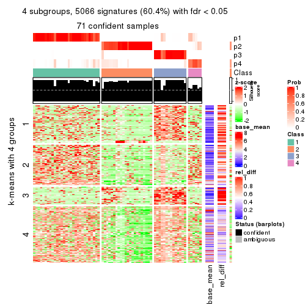
get_signatures(res, k = 5)
get_signatures(res, k = 6)

Signature heatmaps where rows are not scaled:
get_signatures(res, k = 2, scale_rows = FALSE)
get_signatures(res, k = 3, scale_rows = FALSE)
get_signatures(res, k = 4, scale_rows = FALSE)
get_signatures(res, k = 5, scale_rows = FALSE)
get_signatures(res, k = 6, scale_rows = FALSE)
Compare the overlap of signatures from different k:
compare_signatures(res)

get_signature() returns a data frame invisibly. TO get the list of signatures, the function
call should be assigned to a variable explicitly. In following code, if plot argument is set
to FALSE, no heatmap is plotted while only the differential analysis is performed.
# code only for demonstration
tb = get_signature(res, k = ..., plot = FALSE)
An example of the output of tb is:
#> which_row fdr mean_1 mean_2 scaled_mean_1 scaled_mean_2 km
#> 1 38 0.042760348 8.373488 9.131774 -0.5533452 0.5164555 1
#> 2 40 0.018707592 7.106213 8.469186 -0.6173731 0.5762149 1
#> 3 55 0.019134737 10.221463 11.207825 -0.6159697 0.5749050 1
#> 4 59 0.006059896 5.921854 7.869574 -0.6899429 0.6439467 1
#> 5 60 0.018055526 8.928898 10.211722 -0.6204761 0.5791110 1
#> 6 98 0.009384629 15.714769 14.887706 0.6635654 -0.6193277 2
...
The columns in tb are:
which_row: row indices corresponding to the input matrix.fdr: FDR for the differential test. mean_x: The mean value in group x.scaled_mean_x: The mean value in group x after rows are scaled.km: Row groups if k-means clustering is applied to rows.UMAP plot which shows how samples are separated.
dimension_reduction(res, k = 2, method = "UMAP")
dimension_reduction(res, k = 3, method = "UMAP")
dimension_reduction(res, k = 4, method = "UMAP")
dimension_reduction(res, k = 5, method = "UMAP")
dimension_reduction(res, k = 6, method = "UMAP")
Following heatmap shows how subgroups are split when increasing k:
collect_classes(res)
If matrix rows can be associated to genes, consider to use GO_Enrichment(res,
...) to perform function enrichment for the signature genes.
The object with results only for a single top-value method and a single partition method can be extracted as:
res = res_list["ATC", "pam"]
# you can also extract it by
# res = res_list["ATC:pam"]
A summary of res and all the functions that can be applied to it:
res
#> A 'ConsensusPartition' object with k = 2, 3, 4, 5, 6.
#> On a matrix with 8381 rows and 72 columns.
#> Top rows (838, 1676, 2514, 3352, 4190) are extracted by 'ATC' method.
#> Subgroups are detected by 'pam' method.
#> Performed in total 1250 partitions by row resampling.
#> Best k for subgroups seems to be 3.
#>
#> Following methods can be applied to this 'ConsensusPartition' object:
#> [1] "cola_report" "collect_classes" "collect_plots"
#> [4] "collect_stats" "colnames" "compare_signatures"
#> [7] "consensus_heatmap" "dimension_reduction" "functional_enrichment"
#> [10] "get_anno_col" "get_anno" "get_classes"
#> [13] "get_consensus" "get_matrix" "get_membership"
#> [16] "get_param" "get_signatures" "get_stats"
#> [19] "is_best_k" "is_stable_k" "membership_heatmap"
#> [22] "ncol" "nrow" "plot_ecdf"
#> [25] "rownames" "select_partition_number" "show"
#> [28] "suggest_best_k" "test_to_known_factors"
collect_plots() function collects all the plots made from res for all k (number of partitions)
into one single page to provide an easy and fast comparison between different k.
collect_plots(res)
The plots are:
k and the heatmap of
predicted classes for each k.k.k.k.All the plots in panels can be made by individual functions and they are plotted later in this section.
select_partition_number() produces several plots showing different
statistics for choosing “optimized” k. There are following statistics:
k;k, the area increased is defined as \(A_k - A_{k-1}\).The detailed explanations of these statistics can be found in the cola vignette.
Generally speaking, lower PAC score, higher mean silhouette score or higher
concordance corresponds to better partition. Rand index and Jaccard index
measure how similar the current partition is compared to partition with k-1.
If they are too similar, we won't accept k is better than k-1.
select_partition_number(res)

The numeric values for all these statistics can be obtained by get_stats().
get_stats(res)
#> k 1-PAC mean_silhouette concordance area_increased Rand Jaccard
#> 2 2 1.000 0.961 0.984 0.4283 0.581 0.581
#> 3 3 0.950 0.933 0.973 0.0881 0.965 0.939
#> 4 4 0.922 0.898 0.964 0.0249 0.980 0.964
#> 5 5 0.931 0.876 0.956 0.0266 1.000 1.000
#> 6 6 0.911 0.847 0.947 0.0246 1.000 1.000
suggest_best_k() suggests the best \(k\) based on these statistics. The rules are as follows:
NA.suggest_best_k(res)
#> [1] 3
#> attr(,"optional")
#> [1] 2
There is also optional best \(k\) = 2 that is worth to check.
Following shows the table of the partitions (You need to click the show/hide
code output link to see it). The membership matrix (columns with name p*)
is inferred by
clue::cl_consensus()
function with the SE method. Basically the value in the membership matrix
represents the probability to belong to a certain group. The finall class
label for an item is determined with the group with highest probability it
belongs to.
In get_classes() function, the entropy is calculated from the membership
matrix and the silhouette score is calculated from the consensus matrix.
cbind(get_classes(res, k = 2), get_membership(res, k = 2))
#> class entropy silhouette p1 p2
#> SRR2558111 1 0.0000 0.980 1.000 0.000
#> SRR2558177 2 0.0000 0.992 0.000 1.000
#> SRR2558176 1 0.0000 0.980 1.000 0.000
#> SRR2558175 1 0.0000 0.980 1.000 0.000
#> SRR2558174 1 0.0000 0.980 1.000 0.000
#> SRR2558173 1 0.0000 0.980 1.000 0.000
#> SRR2558172 1 0.0000 0.980 1.000 0.000
#> SRR2558171 1 0.0000 0.980 1.000 0.000
#> SRR2558170 2 0.0000 0.992 0.000 1.000
#> SRR2558169 1 0.0376 0.976 0.996 0.004
#> SRR2558168 1 0.0000 0.980 1.000 0.000
#> SRR2558167 2 0.0000 0.992 0.000 1.000
#> SRR2558166 2 0.0000 0.992 0.000 1.000
#> SRR2558165 2 0.0000 0.992 0.000 1.000
#> SRR2558164 1 0.0376 0.976 0.996 0.004
#> SRR2558163 2 0.4690 0.887 0.100 0.900
#> SRR2558162 1 0.9661 0.369 0.608 0.392
#> SRR2558161 2 0.0000 0.992 0.000 1.000
#> SRR2558160 1 0.0000 0.980 1.000 0.000
#> SRR2558159 2 0.0000 0.992 0.000 1.000
#> SRR2558158 2 0.0000 0.992 0.000 1.000
#> SRR2558157 2 0.0000 0.992 0.000 1.000
#> SRR2558156 2 0.0000 0.992 0.000 1.000
#> SRR2558155 1 0.7602 0.715 0.780 0.220
#> SRR2558154 2 0.0000 0.992 0.000 1.000
#> SRR2558153 1 0.0000 0.980 1.000 0.000
#> SRR2558152 1 0.0000 0.980 1.000 0.000
#> SRR2558151 1 0.0000 0.980 1.000 0.000
#> SRR2558150 1 0.0000 0.980 1.000 0.000
#> SRR2558149 1 0.0000 0.980 1.000 0.000
#> SRR2558148 1 0.0000 0.980 1.000 0.000
#> SRR2558147 1 0.0000 0.980 1.000 0.000
#> SRR2558146 1 0.0000 0.980 1.000 0.000
#> SRR2558145 1 0.0000 0.980 1.000 0.000
#> SRR2558144 1 0.0000 0.980 1.000 0.000
#> SRR2558143 1 0.0000 0.980 1.000 0.000
#> SRR2558142 1 0.0000 0.980 1.000 0.000
#> SRR2558141 2 0.0000 0.992 0.000 1.000
#> SRR2558140 2 0.0000 0.992 0.000 1.000
#> SRR2558139 1 0.0000 0.980 1.000 0.000
#> SRR2558138 1 0.0000 0.980 1.000 0.000
#> SRR2558137 1 0.0000 0.980 1.000 0.000
#> SRR2558136 1 0.0000 0.980 1.000 0.000
#> SRR2558182 1 0.0000 0.980 1.000 0.000
#> SRR2558181 1 0.0000 0.980 1.000 0.000
#> SRR2558180 2 0.0000 0.992 0.000 1.000
#> SRR2558179 1 0.9491 0.430 0.632 0.368
#> SRR2558178 2 0.0000 0.992 0.000 1.000
#> SRR2558134 1 0.0000 0.980 1.000 0.000
#> SRR2558135 1 0.0000 0.980 1.000 0.000
#> SRR2558133 2 0.0000 0.992 0.000 1.000
#> SRR2558132 1 0.0000 0.980 1.000 0.000
#> SRR2558131 1 0.0000 0.980 1.000 0.000
#> SRR2558129 1 0.0000 0.980 1.000 0.000
#> SRR2558127 2 0.0000 0.992 0.000 1.000
#> SRR2558126 1 0.0000 0.980 1.000 0.000
#> SRR2558128 1 0.0000 0.980 1.000 0.000
#> SRR2558125 2 0.0000 0.992 0.000 1.000
#> SRR2558130 1 0.0000 0.980 1.000 0.000
#> SRR2558124 2 0.2948 0.943 0.052 0.948
#> SRR2558123 2 0.0000 0.992 0.000 1.000
#> SRR2558121 1 0.0000 0.980 1.000 0.000
#> SRR2558122 1 0.0000 0.980 1.000 0.000
#> SRR2558120 1 0.0000 0.980 1.000 0.000
#> SRR2558119 1 0.0000 0.980 1.000 0.000
#> SRR2558117 1 0.0000 0.980 1.000 0.000
#> SRR2558118 1 0.0000 0.980 1.000 0.000
#> SRR2558115 1 0.0000 0.980 1.000 0.000
#> SRR2558116 1 0.0000 0.980 1.000 0.000
#> SRR2558114 1 0.0000 0.980 1.000 0.000
#> SRR2558113 1 0.0000 0.980 1.000 0.000
#> SRR2558112 1 0.0000 0.980 1.000 0.000
cbind(get_classes(res, k = 3), get_membership(res, k = 3))
#> class entropy silhouette p1 p2 p3
#> SRR2558111 1 0.0000 0.979 1.000 0.000 0.000
#> SRR2558177 3 0.4555 0.767 0.000 0.200 0.800
#> SRR2558176 1 0.0000 0.979 1.000 0.000 0.000
#> SRR2558175 1 0.0000 0.979 1.000 0.000 0.000
#> SRR2558174 1 0.0000 0.979 1.000 0.000 0.000
#> SRR2558173 1 0.0000 0.979 1.000 0.000 0.000
#> SRR2558172 1 0.0000 0.979 1.000 0.000 0.000
#> SRR2558171 1 0.0000 0.979 1.000 0.000 0.000
#> SRR2558170 2 0.0000 0.939 0.000 1.000 0.000
#> SRR2558169 1 0.0237 0.975 0.996 0.004 0.000
#> SRR2558168 1 0.0000 0.979 1.000 0.000 0.000
#> SRR2558167 2 0.0000 0.939 0.000 1.000 0.000
#> SRR2558166 2 0.0000 0.939 0.000 1.000 0.000
#> SRR2558165 2 0.5497 0.550 0.000 0.708 0.292
#> SRR2558164 1 0.0237 0.975 0.996 0.004 0.000
#> SRR2558163 2 0.2959 0.786 0.100 0.900 0.000
#> SRR2558162 1 0.6095 0.374 0.608 0.392 0.000
#> SRR2558161 2 0.0000 0.939 0.000 1.000 0.000
#> SRR2558160 1 0.0000 0.979 1.000 0.000 0.000
#> SRR2558159 2 0.0000 0.939 0.000 1.000 0.000
#> SRR2558158 2 0.0000 0.939 0.000 1.000 0.000
#> SRR2558157 2 0.0000 0.939 0.000 1.000 0.000
#> SRR2558156 3 0.3340 0.864 0.000 0.120 0.880
#> SRR2558155 1 0.4796 0.715 0.780 0.220 0.000
#> SRR2558154 3 0.0237 0.931 0.000 0.004 0.996
#> SRR2558153 1 0.0000 0.979 1.000 0.000 0.000
#> SRR2558152 1 0.0000 0.979 1.000 0.000 0.000
#> SRR2558151 1 0.0000 0.979 1.000 0.000 0.000
#> SRR2558150 1 0.0000 0.979 1.000 0.000 0.000
#> SRR2558149 1 0.0000 0.979 1.000 0.000 0.000
#> SRR2558148 1 0.0000 0.979 1.000 0.000 0.000
#> SRR2558147 1 0.0000 0.979 1.000 0.000 0.000
#> SRR2558146 1 0.0000 0.979 1.000 0.000 0.000
#> SRR2558145 1 0.0000 0.979 1.000 0.000 0.000
#> SRR2558144 1 0.0000 0.979 1.000 0.000 0.000
#> SRR2558143 1 0.0000 0.979 1.000 0.000 0.000
#> SRR2558142 1 0.0000 0.979 1.000 0.000 0.000
#> SRR2558141 2 0.0000 0.939 0.000 1.000 0.000
#> SRR2558140 2 0.0000 0.939 0.000 1.000 0.000
#> SRR2558139 1 0.0000 0.979 1.000 0.000 0.000
#> SRR2558138 1 0.0000 0.979 1.000 0.000 0.000
#> SRR2558137 1 0.0000 0.979 1.000 0.000 0.000
#> SRR2558136 1 0.0000 0.979 1.000 0.000 0.000
#> SRR2558182 1 0.0000 0.979 1.000 0.000 0.000
#> SRR2558181 1 0.0000 0.979 1.000 0.000 0.000
#> SRR2558180 3 0.0000 0.932 0.000 0.000 1.000
#> SRR2558179 1 0.5988 0.433 0.632 0.368 0.000
#> SRR2558178 2 0.1964 0.898 0.000 0.944 0.056
#> SRR2558134 1 0.0000 0.979 1.000 0.000 0.000
#> SRR2558135 1 0.0000 0.979 1.000 0.000 0.000
#> SRR2558133 2 0.0000 0.939 0.000 1.000 0.000
#> SRR2558132 1 0.0000 0.979 1.000 0.000 0.000
#> SRR2558131 1 0.0000 0.979 1.000 0.000 0.000
#> SRR2558129 1 0.0000 0.979 1.000 0.000 0.000
#> SRR2558127 3 0.0000 0.932 0.000 0.000 1.000
#> SRR2558126 1 0.0000 0.979 1.000 0.000 0.000
#> SRR2558128 1 0.0000 0.979 1.000 0.000 0.000
#> SRR2558125 2 0.3686 0.808 0.000 0.860 0.140
#> SRR2558130 1 0.0000 0.979 1.000 0.000 0.000
#> SRR2558124 2 0.1860 0.871 0.052 0.948 0.000
#> SRR2558123 3 0.0000 0.932 0.000 0.000 1.000
#> SRR2558121 1 0.0000 0.979 1.000 0.000 0.000
#> SRR2558122 1 0.0000 0.979 1.000 0.000 0.000
#> SRR2558120 1 0.0000 0.979 1.000 0.000 0.000
#> SRR2558119 1 0.0000 0.979 1.000 0.000 0.000
#> SRR2558117 1 0.0000 0.979 1.000 0.000 0.000
#> SRR2558118 1 0.0000 0.979 1.000 0.000 0.000
#> SRR2558115 1 0.0000 0.979 1.000 0.000 0.000
#> SRR2558116 1 0.0000 0.979 1.000 0.000 0.000
#> SRR2558114 1 0.0000 0.979 1.000 0.000 0.000
#> SRR2558113 1 0.0000 0.979 1.000 0.000 0.000
#> SRR2558112 1 0.0000 0.979 1.000 0.000 0.000
cbind(get_classes(res, k = 4), get_membership(res, k = 4))
#> class entropy silhouette p1 p2 p3 p4
#> SRR2558111 1 0.0000 0.973 1.000 0.000 0.000 0.000
#> SRR2558177 3 0.3610 0.767 0.000 0.200 0.800 0.000
#> SRR2558176 1 0.2814 0.732 0.868 0.000 0.000 0.132
#> SRR2558175 1 0.0000 0.973 1.000 0.000 0.000 0.000
#> SRR2558174 1 0.0000 0.973 1.000 0.000 0.000 0.000
#> SRR2558173 1 0.0000 0.973 1.000 0.000 0.000 0.000
#> SRR2558172 1 0.0000 0.973 1.000 0.000 0.000 0.000
#> SRR2558171 1 0.0000 0.973 1.000 0.000 0.000 0.000
#> SRR2558170 2 0.0000 0.918 0.000 1.000 0.000 0.000
#> SRR2558169 1 0.0336 0.961 0.992 0.008 0.000 0.000
#> SRR2558168 1 0.0000 0.973 1.000 0.000 0.000 0.000
#> SRR2558167 2 0.0000 0.918 0.000 1.000 0.000 0.000
#> SRR2558166 2 0.0188 0.915 0.004 0.996 0.000 0.000
#> SRR2558165 2 0.4356 0.555 0.000 0.708 0.292 0.000
#> SRR2558164 1 0.0336 0.961 0.992 0.008 0.000 0.000
#> SRR2558163 2 0.2408 0.743 0.104 0.896 0.000 0.000
#> SRR2558162 1 0.4830 -0.331 0.608 0.392 0.000 0.000
#> SRR2558161 2 0.2921 0.833 0.000 0.860 0.000 0.140
#> SRR2558160 1 0.0000 0.973 1.000 0.000 0.000 0.000
#> SRR2558159 2 0.0000 0.918 0.000 1.000 0.000 0.000
#> SRR2558158 2 0.0000 0.918 0.000 1.000 0.000 0.000
#> SRR2558157 2 0.0000 0.918 0.000 1.000 0.000 0.000
#> SRR2558156 3 0.2647 0.864 0.000 0.120 0.880 0.000
#> SRR2558155 1 0.3801 0.414 0.780 0.220 0.000 0.000
#> SRR2558154 3 0.0188 0.926 0.000 0.004 0.996 0.000
#> SRR2558153 1 0.0000 0.973 1.000 0.000 0.000 0.000
#> SRR2558152 1 0.0000 0.973 1.000 0.000 0.000 0.000
#> SRR2558151 1 0.0000 0.973 1.000 0.000 0.000 0.000
#> SRR2558150 1 0.0000 0.973 1.000 0.000 0.000 0.000
#> SRR2558149 1 0.0000 0.973 1.000 0.000 0.000 0.000
#> SRR2558148 1 0.0000 0.973 1.000 0.000 0.000 0.000
#> SRR2558147 1 0.0000 0.973 1.000 0.000 0.000 0.000
#> SRR2558146 1 0.0000 0.973 1.000 0.000 0.000 0.000
#> SRR2558145 1 0.0000 0.973 1.000 0.000 0.000 0.000
#> SRR2558144 1 0.0000 0.973 1.000 0.000 0.000 0.000
#> SRR2558143 1 0.0000 0.973 1.000 0.000 0.000 0.000
#> SRR2558142 1 0.0000 0.973 1.000 0.000 0.000 0.000
#> SRR2558141 2 0.0000 0.918 0.000 1.000 0.000 0.000
#> SRR2558140 2 0.0000 0.918 0.000 1.000 0.000 0.000
#> SRR2558139 1 0.0000 0.973 1.000 0.000 0.000 0.000
#> SRR2558138 1 0.0000 0.973 1.000 0.000 0.000 0.000
#> SRR2558137 1 0.0000 0.973 1.000 0.000 0.000 0.000
#> SRR2558136 1 0.0000 0.973 1.000 0.000 0.000 0.000
#> SRR2558182 1 0.0000 0.973 1.000 0.000 0.000 0.000
#> SRR2558181 1 0.0000 0.973 1.000 0.000 0.000 0.000
#> SRR2558180 3 0.0000 0.927 0.000 0.000 1.000 0.000
#> SRR2558179 4 0.7098 0.000 0.376 0.132 0.000 0.492
#> SRR2558178 2 0.2021 0.881 0.000 0.932 0.056 0.012
#> SRR2558134 1 0.0000 0.973 1.000 0.000 0.000 0.000
#> SRR2558135 1 0.0000 0.973 1.000 0.000 0.000 0.000
#> SRR2558133 2 0.0000 0.918 0.000 1.000 0.000 0.000
#> SRR2558132 1 0.0000 0.973 1.000 0.000 0.000 0.000
#> SRR2558131 1 0.0000 0.973 1.000 0.000 0.000 0.000
#> SRR2558129 1 0.0000 0.973 1.000 0.000 0.000 0.000
#> SRR2558127 3 0.0000 0.927 0.000 0.000 1.000 0.000
#> SRR2558126 1 0.0000 0.973 1.000 0.000 0.000 0.000
#> SRR2558128 1 0.0000 0.973 1.000 0.000 0.000 0.000
#> SRR2558125 2 0.2921 0.803 0.000 0.860 0.140 0.000
#> SRR2558130 1 0.0000 0.973 1.000 0.000 0.000 0.000
#> SRR2558124 2 0.4353 0.732 0.012 0.756 0.000 0.232
#> SRR2558123 3 0.0000 0.927 0.000 0.000 1.000 0.000
#> SRR2558121 1 0.0000 0.973 1.000 0.000 0.000 0.000
#> SRR2558122 1 0.0000 0.973 1.000 0.000 0.000 0.000
#> SRR2558120 1 0.0000 0.973 1.000 0.000 0.000 0.000
#> SRR2558119 1 0.0000 0.973 1.000 0.000 0.000 0.000
#> SRR2558117 1 0.0000 0.973 1.000 0.000 0.000 0.000
#> SRR2558118 1 0.0000 0.973 1.000 0.000 0.000 0.000
#> SRR2558115 1 0.0000 0.973 1.000 0.000 0.000 0.000
#> SRR2558116 1 0.0000 0.973 1.000 0.000 0.000 0.000
#> SRR2558114 1 0.0000 0.973 1.000 0.000 0.000 0.000
#> SRR2558113 1 0.0000 0.973 1.000 0.000 0.000 0.000
#> SRR2558112 1 0.0000 0.973 1.000 0.000 0.000 0.000
cbind(get_classes(res, k = 5), get_membership(res, k = 5))
#> class entropy silhouette p1 p2 p3 p4 p5
#> SRR2558111 1 0.0000 0.965 1.000 0.000 NA 0.000 0.000
#> SRR2558177 2 0.3109 0.765 0.000 0.800 NA 0.200 0.000
#> SRR2558176 1 0.4030 0.113 0.648 0.000 NA 0.000 0.000
#> SRR2558175 1 0.0000 0.965 1.000 0.000 NA 0.000 0.000
#> SRR2558174 1 0.0000 0.965 1.000 0.000 NA 0.000 0.000
#> SRR2558173 1 0.0000 0.965 1.000 0.000 NA 0.000 0.000
#> SRR2558172 1 0.0000 0.965 1.000 0.000 NA 0.000 0.000
#> SRR2558171 1 0.0000 0.965 1.000 0.000 NA 0.000 0.000
#> SRR2558170 4 0.0000 0.900 0.000 0.000 NA 1.000 0.000
#> SRR2558169 1 0.0290 0.954 0.992 0.000 NA 0.008 0.000
#> SRR2558168 1 0.0000 0.965 1.000 0.000 NA 0.000 0.000
#> SRR2558167 4 0.0000 0.900 0.000 0.000 NA 1.000 0.000
#> SRR2558166 4 0.0000 0.900 0.000 0.000 NA 1.000 0.000
#> SRR2558165 4 0.3752 0.547 0.000 0.292 NA 0.708 0.000
#> SRR2558164 1 0.0290 0.954 0.992 0.000 NA 0.008 0.000
#> SRR2558163 4 0.2020 0.750 0.100 0.000 NA 0.900 0.000
#> SRR2558162 1 0.6709 -0.567 0.400 0.000 NA 0.352 0.248
#> SRR2558161 4 0.3612 0.713 0.000 0.000 NA 0.732 0.000
#> SRR2558160 1 0.0000 0.965 1.000 0.000 NA 0.000 0.000
#> SRR2558159 4 0.0000 0.900 0.000 0.000 NA 1.000 0.000
#> SRR2558158 4 0.0000 0.900 0.000 0.000 NA 1.000 0.000
#> SRR2558157 4 0.0000 0.900 0.000 0.000 NA 1.000 0.000
#> SRR2558156 2 0.2280 0.850 0.000 0.880 NA 0.120 0.000
#> SRR2558155 1 0.3242 0.537 0.784 0.000 NA 0.216 0.000
#> SRR2558154 2 0.0162 0.917 0.000 0.996 NA 0.004 0.000
#> SRR2558153 1 0.0000 0.965 1.000 0.000 NA 0.000 0.000
#> SRR2558152 1 0.0000 0.965 1.000 0.000 NA 0.000 0.000
#> SRR2558151 1 0.0000 0.965 1.000 0.000 NA 0.000 0.000
#> SRR2558150 1 0.0000 0.965 1.000 0.000 NA 0.000 0.000
#> SRR2558149 1 0.0000 0.965 1.000 0.000 NA 0.000 0.000
#> SRR2558148 1 0.0000 0.965 1.000 0.000 NA 0.000 0.000
#> SRR2558147 1 0.0000 0.965 1.000 0.000 NA 0.000 0.000
#> SRR2558146 1 0.0000 0.965 1.000 0.000 NA 0.000 0.000
#> SRR2558145 1 0.0000 0.965 1.000 0.000 NA 0.000 0.000
#> SRR2558144 1 0.0000 0.965 1.000 0.000 NA 0.000 0.000
#> SRR2558143 1 0.0000 0.965 1.000 0.000 NA 0.000 0.000
#> SRR2558142 1 0.0000 0.965 1.000 0.000 NA 0.000 0.000
#> SRR2558141 4 0.0000 0.900 0.000 0.000 NA 1.000 0.000
#> SRR2558140 4 0.0000 0.900 0.000 0.000 NA 1.000 0.000
#> SRR2558139 1 0.0000 0.965 1.000 0.000 NA 0.000 0.000
#> SRR2558138 1 0.0000 0.965 1.000 0.000 NA 0.000 0.000
#> SRR2558137 1 0.0000 0.965 1.000 0.000 NA 0.000 0.000
#> SRR2558136 1 0.0000 0.965 1.000 0.000 NA 0.000 0.000
#> SRR2558182 1 0.0000 0.965 1.000 0.000 NA 0.000 0.000
#> SRR2558181 1 0.0000 0.965 1.000 0.000 NA 0.000 0.000
#> SRR2558180 2 0.0000 0.917 0.000 1.000 NA 0.000 0.000
#> SRR2558179 5 0.6779 0.000 0.284 0.000 NA 0.000 0.384
#> SRR2558178 4 0.3115 0.838 0.000 0.056 NA 0.876 0.020
#> SRR2558134 1 0.0000 0.965 1.000 0.000 NA 0.000 0.000
#> SRR2558135 1 0.0000 0.965 1.000 0.000 NA 0.000 0.000
#> SRR2558133 4 0.0000 0.900 0.000 0.000 NA 1.000 0.000
#> SRR2558132 1 0.0000 0.965 1.000 0.000 NA 0.000 0.000
#> SRR2558131 1 0.0000 0.965 1.000 0.000 NA 0.000 0.000
#> SRR2558129 1 0.0000 0.965 1.000 0.000 NA 0.000 0.000
#> SRR2558127 2 0.0000 0.917 0.000 1.000 NA 0.000 0.000
#> SRR2558126 1 0.0000 0.965 1.000 0.000 NA 0.000 0.000
#> SRR2558128 1 0.0000 0.965 1.000 0.000 NA 0.000 0.000
#> SRR2558125 4 0.2516 0.789 0.000 0.140 NA 0.860 0.000
#> SRR2558130 1 0.0000 0.965 1.000 0.000 NA 0.000 0.000
#> SRR2558124 4 0.4196 0.611 0.004 0.000 NA 0.640 0.356
#> SRR2558123 2 0.0000 0.917 0.000 1.000 NA 0.000 0.000
#> SRR2558121 1 0.0000 0.965 1.000 0.000 NA 0.000 0.000
#> SRR2558122 1 0.0000 0.965 1.000 0.000 NA 0.000 0.000
#> SRR2558120 1 0.0000 0.965 1.000 0.000 NA 0.000 0.000
#> SRR2558119 1 0.0000 0.965 1.000 0.000 NA 0.000 0.000
#> SRR2558117 1 0.0000 0.965 1.000 0.000 NA 0.000 0.000
#> SRR2558118 1 0.0000 0.965 1.000 0.000 NA 0.000 0.000
#> SRR2558115 1 0.0000 0.965 1.000 0.000 NA 0.000 0.000
#> SRR2558116 1 0.0000 0.965 1.000 0.000 NA 0.000 0.000
#> SRR2558114 1 0.0000 0.965 1.000 0.000 NA 0.000 0.000
#> SRR2558113 1 0.0000 0.965 1.000 0.000 NA 0.000 0.000
#> SRR2558112 1 0.0000 0.965 1.000 0.000 NA 0.000 0.000
cbind(get_classes(res, k = 6), get_membership(res, k = 6))
#> class entropy silhouette p1 p2 p3 p4 p5 p6
#> SRR2558111 1 0.0000 0.956 1.000 0.000 NA 0.000 0.000 NA
#> SRR2558177 2 0.2793 0.750 0.000 0.800 NA 0.200 0.000 NA
#> SRR2558176 1 0.3847 -0.207 0.544 0.000 NA 0.000 0.000 NA
#> SRR2558175 1 0.0000 0.956 1.000 0.000 NA 0.000 0.000 NA
#> SRR2558174 1 0.0000 0.956 1.000 0.000 NA 0.000 0.000 NA
#> SRR2558173 1 0.0000 0.956 1.000 0.000 NA 0.000 0.000 NA
#> SRR2558172 1 0.0000 0.956 1.000 0.000 NA 0.000 0.000 NA
#> SRR2558171 1 0.0000 0.956 1.000 0.000 NA 0.000 0.000 NA
#> SRR2558170 4 0.0000 0.877 0.000 0.000 NA 1.000 0.000 NA
#> SRR2558169 1 0.0260 0.946 0.992 0.000 NA 0.008 0.000 NA
#> SRR2558168 1 0.0000 0.956 1.000 0.000 NA 0.000 0.000 NA
#> SRR2558167 4 0.0000 0.877 0.000 0.000 NA 1.000 0.000 NA
#> SRR2558166 4 0.0000 0.877 0.000 0.000 NA 1.000 0.000 NA
#> SRR2558165 4 0.3371 0.532 0.000 0.292 NA 0.708 0.000 NA
#> SRR2558164 1 0.0858 0.919 0.968 0.000 NA 0.004 0.000 NA
#> SRR2558163 4 0.1814 0.724 0.100 0.000 NA 0.900 0.000 NA
#> SRR2558162 1 0.7347 -0.545 0.400 0.000 NA 0.248 0.000 NA
#> SRR2558161 4 0.3756 0.559 0.000 0.000 NA 0.600 0.000 NA
#> SRR2558160 1 0.2697 0.675 0.812 0.000 NA 0.000 0.000 NA
#> SRR2558159 4 0.0000 0.877 0.000 0.000 NA 1.000 0.000 NA
#> SRR2558158 4 0.0000 0.877 0.000 0.000 NA 1.000 0.000 NA
#> SRR2558157 4 0.0000 0.877 0.000 0.000 NA 1.000 0.000 NA
#> SRR2558156 2 0.2048 0.842 0.000 0.880 NA 0.120 0.000 NA
#> SRR2558155 1 0.5105 0.205 0.644 0.000 NA 0.196 0.000 NA
#> SRR2558154 2 0.0146 0.913 0.000 0.996 NA 0.004 0.000 NA
#> SRR2558153 1 0.0000 0.956 1.000 0.000 NA 0.000 0.000 NA
#> SRR2558152 1 0.0000 0.956 1.000 0.000 NA 0.000 0.000 NA
#> SRR2558151 1 0.0000 0.956 1.000 0.000 NA 0.000 0.000 NA
#> SRR2558150 1 0.0000 0.956 1.000 0.000 NA 0.000 0.000 NA
#> SRR2558149 1 0.0000 0.956 1.000 0.000 NA 0.000 0.000 NA
#> SRR2558148 1 0.0000 0.956 1.000 0.000 NA 0.000 0.000 NA
#> SRR2558147 1 0.0000 0.956 1.000 0.000 NA 0.000 0.000 NA
#> SRR2558146 1 0.0000 0.956 1.000 0.000 NA 0.000 0.000 NA
#> SRR2558145 1 0.0000 0.956 1.000 0.000 NA 0.000 0.000 NA
#> SRR2558144 1 0.0000 0.956 1.000 0.000 NA 0.000 0.000 NA
#> SRR2558143 1 0.0000 0.956 1.000 0.000 NA 0.000 0.000 NA
#> SRR2558142 1 0.0000 0.956 1.000 0.000 NA 0.000 0.000 NA
#> SRR2558141 4 0.0000 0.877 0.000 0.000 NA 1.000 0.000 NA
#> SRR2558140 4 0.0000 0.877 0.000 0.000 NA 1.000 0.000 NA
#> SRR2558139 1 0.0000 0.956 1.000 0.000 NA 0.000 0.000 NA
#> SRR2558138 1 0.0000 0.956 1.000 0.000 NA 0.000 0.000 NA
#> SRR2558137 1 0.0000 0.956 1.000 0.000 NA 0.000 0.000 NA
#> SRR2558136 1 0.0000 0.956 1.000 0.000 NA 0.000 0.000 NA
#> SRR2558182 1 0.0000 0.956 1.000 0.000 NA 0.000 0.000 NA
#> SRR2558181 1 0.0000 0.956 1.000 0.000 NA 0.000 0.000 NA
#> SRR2558180 2 0.0000 0.913 0.000 1.000 NA 0.000 0.000 NA
#> SRR2558179 5 0.3023 0.000 0.232 0.000 NA 0.000 0.768 NA
#> SRR2558178 4 0.4284 0.677 0.000 0.056 NA 0.688 0.000 NA
#> SRR2558134 1 0.0000 0.956 1.000 0.000 NA 0.000 0.000 NA
#> SRR2558135 1 0.0000 0.956 1.000 0.000 NA 0.000 0.000 NA
#> SRR2558133 4 0.0000 0.877 0.000 0.000 NA 1.000 0.000 NA
#> SRR2558132 1 0.0000 0.956 1.000 0.000 NA 0.000 0.000 NA
#> SRR2558131 1 0.0000 0.956 1.000 0.000 NA 0.000 0.000 NA
#> SRR2558129 1 0.0000 0.956 1.000 0.000 NA 0.000 0.000 NA
#> SRR2558127 2 0.0000 0.913 0.000 1.000 NA 0.000 0.000 NA
#> SRR2558126 1 0.0000 0.956 1.000 0.000 NA 0.000 0.000 NA
#> SRR2558128 1 0.0000 0.956 1.000 0.000 NA 0.000 0.000 NA
#> SRR2558125 4 0.2260 0.765 0.000 0.140 NA 0.860 0.000 NA
#> SRR2558130 1 0.0000 0.956 1.000 0.000 NA 0.000 0.000 NA
#> SRR2558124 4 0.5600 0.556 0.000 0.000 NA 0.596 0.232 NA
#> SRR2558123 2 0.0000 0.913 0.000 1.000 NA 0.000 0.000 NA
#> SRR2558121 1 0.0000 0.956 1.000 0.000 NA 0.000 0.000 NA
#> SRR2558122 1 0.0000 0.956 1.000 0.000 NA 0.000 0.000 NA
#> SRR2558120 1 0.0000 0.956 1.000 0.000 NA 0.000 0.000 NA
#> SRR2558119 1 0.0000 0.956 1.000 0.000 NA 0.000 0.000 NA
#> SRR2558117 1 0.0000 0.956 1.000 0.000 NA 0.000 0.000 NA
#> SRR2558118 1 0.0000 0.956 1.000 0.000 NA 0.000 0.000 NA
#> SRR2558115 1 0.0000 0.956 1.000 0.000 NA 0.000 0.000 NA
#> SRR2558116 1 0.0000 0.956 1.000 0.000 NA 0.000 0.000 NA
#> SRR2558114 1 0.0000 0.956 1.000 0.000 NA 0.000 0.000 NA
#> SRR2558113 1 0.0000 0.956 1.000 0.000 NA 0.000 0.000 NA
#> SRR2558112 1 0.0000 0.956 1.000 0.000 NA 0.000 0.000 NA
Heatmaps for the consensus matrix. It visualizes the probability of two samples to be in a same group.
consensus_heatmap(res, k = 2)
consensus_heatmap(res, k = 3)
consensus_heatmap(res, k = 4)
consensus_heatmap(res, k = 5)
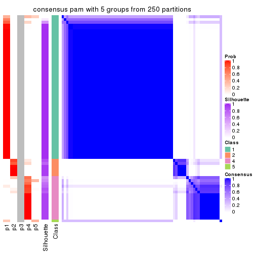
consensus_heatmap(res, k = 6)
Heatmaps for the membership of samples in all partitions to see how consistent they are:
membership_heatmap(res, k = 2)
membership_heatmap(res, k = 3)
membership_heatmap(res, k = 4)
membership_heatmap(res, k = 5)
membership_heatmap(res, k = 6)
As soon as we have had the classes for columns, we can look for signatures which are significantly different between classes which can be candidate marks for certain classes. Following are the heatmaps for signatures.
Signature heatmaps where rows are scaled:
get_signatures(res, k = 2)
get_signatures(res, k = 3)
get_signatures(res, k = 4)
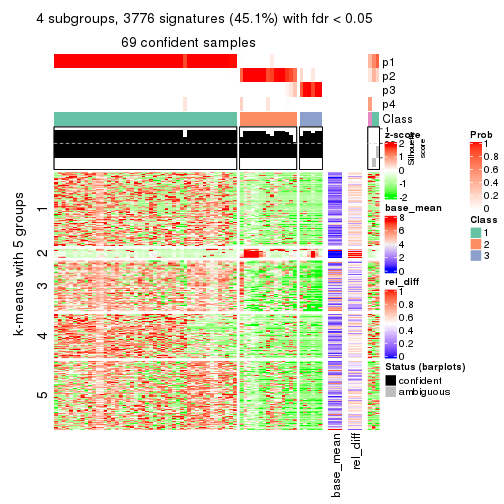
get_signatures(res, k = 5)
get_signatures(res, k = 6)
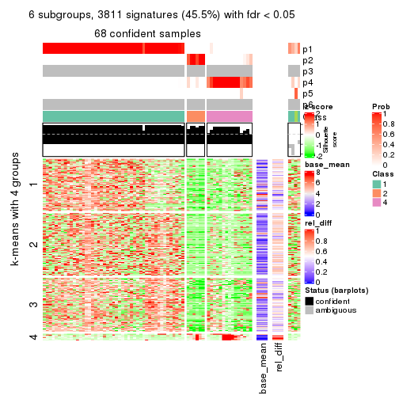
Signature heatmaps where rows are not scaled:
get_signatures(res, k = 2, scale_rows = FALSE)
get_signatures(res, k = 3, scale_rows = FALSE)
get_signatures(res, k = 4, scale_rows = FALSE)
get_signatures(res, k = 5, scale_rows = FALSE)
get_signatures(res, k = 6, scale_rows = FALSE)
Compare the overlap of signatures from different k:
compare_signatures(res)
get_signature() returns a data frame invisibly. TO get the list of signatures, the function
call should be assigned to a variable explicitly. In following code, if plot argument is set
to FALSE, no heatmap is plotted while only the differential analysis is performed.
# code only for demonstration
tb = get_signature(res, k = ..., plot = FALSE)
An example of the output of tb is:
#> which_row fdr mean_1 mean_2 scaled_mean_1 scaled_mean_2 km
#> 1 38 0.042760348 8.373488 9.131774 -0.5533452 0.5164555 1
#> 2 40 0.018707592 7.106213 8.469186 -0.6173731 0.5762149 1
#> 3 55 0.019134737 10.221463 11.207825 -0.6159697 0.5749050 1
#> 4 59 0.006059896 5.921854 7.869574 -0.6899429 0.6439467 1
#> 5 60 0.018055526 8.928898 10.211722 -0.6204761 0.5791110 1
#> 6 98 0.009384629 15.714769 14.887706 0.6635654 -0.6193277 2
...
The columns in tb are:
which_row: row indices corresponding to the input matrix.fdr: FDR for the differential test. mean_x: The mean value in group x.scaled_mean_x: The mean value in group x after rows are scaled.km: Row groups if k-means clustering is applied to rows.UMAP plot which shows how samples are separated.
dimension_reduction(res, k = 2, method = "UMAP")
dimension_reduction(res, k = 3, method = "UMAP")
dimension_reduction(res, k = 4, method = "UMAP")
dimension_reduction(res, k = 5, method = "UMAP")
dimension_reduction(res, k = 6, method = "UMAP")

Following heatmap shows how subgroups are split when increasing k:
collect_classes(res)
If matrix rows can be associated to genes, consider to use GO_Enrichment(res,
...) to perform function enrichment for the signature genes.
The object with results only for a single top-value method and a single partition method can be extracted as:
res = res_list["ATC", "mclust"]
# you can also extract it by
# res = res_list["ATC:mclust"]
A summary of res and all the functions that can be applied to it:
res
#> A 'ConsensusPartition' object with k = 2, 3, 4, 5, 6.
#> On a matrix with 8381 rows and 72 columns.
#> Top rows (838, 1676, 2514, 3352, 4190) are extracted by 'ATC' method.
#> Subgroups are detected by 'mclust' method.
#> Performed in total 1250 partitions by row resampling.
#> Best k for subgroups seems to be 2.
#>
#> Following methods can be applied to this 'ConsensusPartition' object:
#> [1] "cola_report" "collect_classes" "collect_plots"
#> [4] "collect_stats" "colnames" "compare_signatures"
#> [7] "consensus_heatmap" "dimension_reduction" "functional_enrichment"
#> [10] "get_anno_col" "get_anno" "get_classes"
#> [13] "get_consensus" "get_matrix" "get_membership"
#> [16] "get_param" "get_signatures" "get_stats"
#> [19] "is_best_k" "is_stable_k" "membership_heatmap"
#> [22] "ncol" "nrow" "plot_ecdf"
#> [25] "rownames" "select_partition_number" "show"
#> [28] "suggest_best_k" "test_to_known_factors"
collect_plots() function collects all the plots made from res for all k (number of partitions)
into one single page to provide an easy and fast comparison between different k.
collect_plots(res)
The plots are:
k and the heatmap of
predicted classes for each k.k.k.k.All the plots in panels can be made by individual functions and they are plotted later in this section.
select_partition_number() produces several plots showing different
statistics for choosing “optimized” k. There are following statistics:
k;k, the area increased is defined as \(A_k - A_{k-1}\).The detailed explanations of these statistics can be found in the cola vignette.
Generally speaking, lower PAC score, higher mean silhouette score or higher
concordance corresponds to better partition. Rand index and Jaccard index
measure how similar the current partition is compared to partition with k-1.
If they are too similar, we won't accept k is better than k-1.
select_partition_number(res)
The numeric values for all these statistics can be obtained by get_stats().
get_stats(res)
#> k 1-PAC mean_silhouette concordance area_increased Rand Jaccard
#> 2 2 1.000 0.985 0.993 0.5071 0.493 0.493
#> 3 3 0.856 0.867 0.926 0.2091 0.894 0.786
#> 4 4 0.707 0.746 0.817 0.1104 0.986 0.964
#> 5 5 0.610 0.486 0.739 0.1092 0.818 0.540
#> 6 6 0.628 0.533 0.732 0.0455 0.957 0.819
suggest_best_k() suggests the best \(k\) based on these statistics. The rules are as follows:
NA.suggest_best_k(res)
#> [1] 2
Following shows the table of the partitions (You need to click the show/hide
code output link to see it). The membership matrix (columns with name p*)
is inferred by
clue::cl_consensus()
function with the SE method. Basically the value in the membership matrix
represents the probability to belong to a certain group. The finall class
label for an item is determined with the group with highest probability it
belongs to.
In get_classes() function, the entropy is calculated from the membership
matrix and the silhouette score is calculated from the consensus matrix.
cbind(get_classes(res, k = 2), get_membership(res, k = 2))
#> class entropy silhouette p1 p2
#> SRR2558111 1 0.0000 0.999 1.000 0.000
#> SRR2558177 2 0.0000 0.987 0.000 1.000
#> SRR2558176 1 0.0376 0.996 0.996 0.004
#> SRR2558175 1 0.0000 0.999 1.000 0.000
#> SRR2558174 1 0.0000 0.999 1.000 0.000
#> SRR2558173 1 0.0000 0.999 1.000 0.000
#> SRR2558172 1 0.0000 0.999 1.000 0.000
#> SRR2558171 1 0.0000 0.999 1.000 0.000
#> SRR2558170 2 0.0000 0.987 0.000 1.000
#> SRR2558169 2 0.0000 0.987 0.000 1.000
#> SRR2558168 2 0.0000 0.987 0.000 1.000
#> SRR2558167 2 0.0000 0.987 0.000 1.000
#> SRR2558166 2 0.0000 0.987 0.000 1.000
#> SRR2558165 2 0.0000 0.987 0.000 1.000
#> SRR2558164 2 0.0000 0.987 0.000 1.000
#> SRR2558163 2 0.0000 0.987 0.000 1.000
#> SRR2558162 1 0.0376 0.996 0.996 0.004
#> SRR2558161 2 0.0000 0.987 0.000 1.000
#> SRR2558160 1 0.0000 0.999 1.000 0.000
#> SRR2558159 2 0.0000 0.987 0.000 1.000
#> SRR2558158 2 0.0000 0.987 0.000 1.000
#> SRR2558157 2 0.0000 0.987 0.000 1.000
#> SRR2558156 2 0.0000 0.987 0.000 1.000
#> SRR2558155 2 0.6148 0.829 0.152 0.848
#> SRR2558154 2 0.0000 0.987 0.000 1.000
#> SRR2558153 1 0.0000 0.999 1.000 0.000
#> SRR2558152 1 0.0000 0.999 1.000 0.000
#> SRR2558151 1 0.0000 0.999 1.000 0.000
#> SRR2558150 2 0.0000 0.987 0.000 1.000
#> SRR2558149 1 0.0000 0.999 1.000 0.000
#> SRR2558148 1 0.0000 0.999 1.000 0.000
#> SRR2558147 2 0.0000 0.987 0.000 1.000
#> SRR2558146 1 0.0376 0.996 0.996 0.004
#> SRR2558145 1 0.0000 0.999 1.000 0.000
#> SRR2558144 1 0.0000 0.999 1.000 0.000
#> SRR2558143 1 0.0000 0.999 1.000 0.000
#> SRR2558142 1 0.0000 0.999 1.000 0.000
#> SRR2558141 2 0.0000 0.987 0.000 1.000
#> SRR2558140 2 0.0000 0.987 0.000 1.000
#> SRR2558139 2 0.0000 0.987 0.000 1.000
#> SRR2558138 1 0.0000 0.999 1.000 0.000
#> SRR2558137 2 0.0000 0.987 0.000 1.000
#> SRR2558136 1 0.0376 0.996 0.996 0.004
#> SRR2558182 2 0.4022 0.913 0.080 0.920
#> SRR2558181 2 0.7139 0.766 0.196 0.804
#> SRR2558180 2 0.0000 0.987 0.000 1.000
#> SRR2558179 1 0.0376 0.996 0.996 0.004
#> SRR2558178 2 0.1633 0.967 0.024 0.976
#> SRR2558134 2 0.0000 0.987 0.000 1.000
#> SRR2558135 1 0.0000 0.999 1.000 0.000
#> SRR2558133 2 0.0000 0.987 0.000 1.000
#> SRR2558132 2 0.0000 0.987 0.000 1.000
#> SRR2558131 1 0.0000 0.999 1.000 0.000
#> SRR2558129 1 0.0376 0.996 0.996 0.004
#> SRR2558127 2 0.0000 0.987 0.000 1.000
#> SRR2558126 1 0.0000 0.999 1.000 0.000
#> SRR2558128 2 0.0000 0.987 0.000 1.000
#> SRR2558125 2 0.0000 0.987 0.000 1.000
#> SRR2558130 1 0.0000 0.999 1.000 0.000
#> SRR2558124 2 0.2043 0.961 0.032 0.968
#> SRR2558123 2 0.0000 0.987 0.000 1.000
#> SRR2558121 1 0.0000 0.999 1.000 0.000
#> SRR2558122 1 0.0000 0.999 1.000 0.000
#> SRR2558120 2 0.0000 0.987 0.000 1.000
#> SRR2558119 1 0.0376 0.996 0.996 0.004
#> SRR2558117 2 0.0000 0.987 0.000 1.000
#> SRR2558118 1 0.0000 0.999 1.000 0.000
#> SRR2558115 2 0.0000 0.987 0.000 1.000
#> SRR2558116 1 0.0000 0.999 1.000 0.000
#> SRR2558114 1 0.0376 0.996 0.996 0.004
#> SRR2558113 1 0.0000 0.999 1.000 0.000
#> SRR2558112 1 0.0000 0.999 1.000 0.000
cbind(get_classes(res, k = 3), get_membership(res, k = 3))
#> class entropy silhouette p1 p2 p3
#> SRR2558111 1 0.1163 0.9772 0.972 0.000 0.028
#> SRR2558177 2 0.0000 0.8598 0.000 1.000 0.000
#> SRR2558176 1 0.3148 0.9370 0.916 0.048 0.036
#> SRR2558175 1 0.0000 0.9820 1.000 0.000 0.000
#> SRR2558174 1 0.0000 0.9820 1.000 0.000 0.000
#> SRR2558173 1 0.2434 0.9581 0.940 0.024 0.036
#> SRR2558172 1 0.1015 0.9779 0.980 0.008 0.012
#> SRR2558171 1 0.2569 0.9530 0.936 0.032 0.032
#> SRR2558170 2 0.2356 0.8361 0.000 0.928 0.072
#> SRR2558169 2 0.4887 0.7076 0.000 0.772 0.228
#> SRR2558168 3 0.4399 0.7846 0.000 0.188 0.812
#> SRR2558167 2 0.3752 0.7956 0.000 0.856 0.144
#> SRR2558166 2 0.4291 0.7633 0.000 0.820 0.180
#> SRR2558165 2 0.0000 0.8598 0.000 1.000 0.000
#> SRR2558164 2 0.5926 0.4826 0.000 0.644 0.356
#> SRR2558163 2 0.4887 0.7076 0.000 0.772 0.228
#> SRR2558162 1 0.3155 0.9395 0.916 0.044 0.040
#> SRR2558161 2 0.3116 0.8192 0.000 0.892 0.108
#> SRR2558160 1 0.2806 0.9505 0.928 0.032 0.040
#> SRR2558159 2 0.3752 0.7951 0.000 0.856 0.144
#> SRR2558158 2 0.3619 0.8012 0.000 0.864 0.136
#> SRR2558157 2 0.0237 0.8589 0.000 0.996 0.004
#> SRR2558156 2 0.0000 0.8598 0.000 1.000 0.000
#> SRR2558155 2 0.3272 0.7444 0.104 0.892 0.004
#> SRR2558154 2 0.0000 0.8598 0.000 1.000 0.000
#> SRR2558153 1 0.1529 0.9721 0.960 0.000 0.040
#> SRR2558152 1 0.0000 0.9820 1.000 0.000 0.000
#> SRR2558151 1 0.0000 0.9820 1.000 0.000 0.000
#> SRR2558150 3 0.1529 0.8805 0.000 0.040 0.960
#> SRR2558149 1 0.0000 0.9820 1.000 0.000 0.000
#> SRR2558148 1 0.0000 0.9820 1.000 0.000 0.000
#> SRR2558147 3 0.1529 0.8805 0.000 0.040 0.960
#> SRR2558146 1 0.0892 0.9784 0.980 0.000 0.020
#> SRR2558145 1 0.0000 0.9820 1.000 0.000 0.000
#> SRR2558144 1 0.0892 0.9787 0.980 0.000 0.020
#> SRR2558143 1 0.0000 0.9820 1.000 0.000 0.000
#> SRR2558142 1 0.0424 0.9806 0.992 0.000 0.008
#> SRR2558141 2 0.0000 0.8598 0.000 1.000 0.000
#> SRR2558140 2 0.0000 0.8598 0.000 1.000 0.000
#> SRR2558139 3 0.1860 0.8779 0.000 0.052 0.948
#> SRR2558138 1 0.0000 0.9820 1.000 0.000 0.000
#> SRR2558137 2 0.6302 0.0428 0.000 0.520 0.480
#> SRR2558136 1 0.1905 0.9644 0.956 0.028 0.016
#> SRR2558182 2 0.8608 0.4386 0.204 0.604 0.192
#> SRR2558181 2 0.8608 0.4386 0.204 0.604 0.192
#> SRR2558180 2 0.0000 0.8598 0.000 1.000 0.000
#> SRR2558179 1 0.3148 0.9370 0.916 0.048 0.036
#> SRR2558178 2 0.0000 0.8598 0.000 1.000 0.000
#> SRR2558134 3 0.1529 0.8805 0.000 0.040 0.960
#> SRR2558135 1 0.0000 0.9820 1.000 0.000 0.000
#> SRR2558133 2 0.0000 0.8598 0.000 1.000 0.000
#> SRR2558132 3 0.3816 0.8158 0.000 0.148 0.852
#> SRR2558131 1 0.0892 0.9787 0.980 0.000 0.020
#> SRR2558129 1 0.1031 0.9773 0.976 0.000 0.024
#> SRR2558127 2 0.0000 0.8598 0.000 1.000 0.000
#> SRR2558126 1 0.0000 0.9820 1.000 0.000 0.000
#> SRR2558128 3 0.5138 0.7010 0.000 0.252 0.748
#> SRR2558125 2 0.0000 0.8598 0.000 1.000 0.000
#> SRR2558130 1 0.0592 0.9802 0.988 0.000 0.012
#> SRR2558124 2 0.0000 0.8598 0.000 1.000 0.000
#> SRR2558123 2 0.0000 0.8598 0.000 1.000 0.000
#> SRR2558121 1 0.0000 0.9820 1.000 0.000 0.000
#> SRR2558122 1 0.0000 0.9820 1.000 0.000 0.000
#> SRR2558120 3 0.1529 0.8805 0.000 0.040 0.960
#> SRR2558119 1 0.0747 0.9795 0.984 0.000 0.016
#> SRR2558117 3 0.6140 0.3335 0.000 0.404 0.596
#> SRR2558118 1 0.0424 0.9806 0.992 0.000 0.008
#> SRR2558115 3 0.1529 0.8805 0.000 0.040 0.960
#> SRR2558116 1 0.0000 0.9820 1.000 0.000 0.000
#> SRR2558114 1 0.0747 0.9795 0.984 0.000 0.016
#> SRR2558113 1 0.0424 0.9806 0.992 0.000 0.008
#> SRR2558112 1 0.0000 0.9820 1.000 0.000 0.000
cbind(get_classes(res, k = 4), get_membership(res, k = 4))
#> class entropy silhouette p1 p2 p3 p4
#> SRR2558111 1 0.3649 0.8624 0.796 0.000 0.000 NA
#> SRR2558177 2 0.3024 0.7055 0.000 0.852 0.000 NA
#> SRR2558176 1 0.5074 0.7991 0.724 0.040 0.000 NA
#> SRR2558175 1 0.0817 0.9205 0.976 0.000 0.000 NA
#> SRR2558174 1 0.0817 0.9205 0.976 0.000 0.000 NA
#> SRR2558173 1 0.3610 0.8594 0.800 0.000 0.000 NA
#> SRR2558172 1 0.4644 0.8246 0.748 0.024 0.000 NA
#> SRR2558171 1 0.3539 0.8771 0.820 0.004 0.000 NA
#> SRR2558170 2 0.4399 0.6426 0.000 0.768 0.020 NA
#> SRR2558169 2 0.7182 0.4362 0.000 0.452 0.136 NA
#> SRR2558168 3 0.4059 0.7292 0.000 0.012 0.788 NA
#> SRR2558167 2 0.6143 0.5404 0.000 0.496 0.048 NA
#> SRR2558166 2 0.7053 0.4616 0.000 0.512 0.132 NA
#> SRR2558165 2 0.3402 0.6979 0.004 0.832 0.000 NA
#> SRR2558164 2 0.7860 0.2373 0.000 0.396 0.312 NA
#> SRR2558163 2 0.7165 0.4443 0.000 0.500 0.144 NA
#> SRR2558162 1 0.5256 0.7861 0.700 0.040 0.000 NA
#> SRR2558161 2 0.5383 0.6593 0.000 0.672 0.036 NA
#> SRR2558160 1 0.4807 0.8090 0.728 0.024 0.000 NA
#> SRR2558159 2 0.5943 0.5413 0.000 0.592 0.048 NA
#> SRR2558158 2 0.5821 0.5568 0.000 0.592 0.040 NA
#> SRR2558157 2 0.1474 0.7044 0.000 0.948 0.000 NA
#> SRR2558156 2 0.1792 0.6860 0.000 0.932 0.000 NA
#> SRR2558155 2 0.5872 0.5755 0.040 0.576 0.000 NA
#> SRR2558154 2 0.1389 0.7065 0.000 0.952 0.000 NA
#> SRR2558153 1 0.3649 0.8606 0.796 0.000 0.000 NA
#> SRR2558152 1 0.0817 0.9205 0.976 0.000 0.000 NA
#> SRR2558151 1 0.0469 0.9226 0.988 0.000 0.000 NA
#> SRR2558150 3 0.0469 0.8061 0.000 0.000 0.988 NA
#> SRR2558149 1 0.0707 0.9212 0.980 0.000 0.000 NA
#> SRR2558148 1 0.0336 0.9228 0.992 0.000 0.000 NA
#> SRR2558147 3 0.0469 0.8021 0.000 0.000 0.988 NA
#> SRR2558146 1 0.1022 0.9228 0.968 0.000 0.000 NA
#> SRR2558145 1 0.0817 0.9205 0.976 0.000 0.000 NA
#> SRR2558144 1 0.0921 0.9236 0.972 0.000 0.000 NA
#> SRR2558143 1 0.0592 0.9220 0.984 0.000 0.000 NA
#> SRR2558142 1 0.2530 0.9026 0.888 0.000 0.000 NA
#> SRR2558141 2 0.2589 0.7084 0.000 0.884 0.000 NA
#> SRR2558140 2 0.4222 0.6689 0.000 0.728 0.000 NA
#> SRR2558139 3 0.1284 0.8008 0.000 0.024 0.964 NA
#> SRR2558138 1 0.0817 0.9205 0.976 0.000 0.000 NA
#> SRR2558137 3 0.7874 0.0508 0.000 0.284 0.380 NA
#> SRR2558136 1 0.2484 0.9052 0.924 0.024 0.012 NA
#> SRR2558182 2 0.9918 0.1975 0.204 0.304 0.228 NA
#> SRR2558181 2 0.9932 0.1849 0.208 0.296 0.228 NA
#> SRR2558180 2 0.1716 0.6873 0.000 0.936 0.000 NA
#> SRR2558179 1 0.5188 0.7923 0.716 0.044 0.000 NA
#> SRR2558178 2 0.4585 0.6369 0.000 0.668 0.000 NA
#> SRR2558134 3 0.0469 0.8021 0.000 0.000 0.988 NA
#> SRR2558135 1 0.0469 0.9231 0.988 0.000 0.000 NA
#> SRR2558133 2 0.1022 0.6988 0.000 0.968 0.000 NA
#> SRR2558132 3 0.2892 0.7646 0.000 0.068 0.896 NA
#> SRR2558131 1 0.1792 0.9178 0.932 0.000 0.000 NA
#> SRR2558129 1 0.1211 0.9219 0.960 0.000 0.000 NA
#> SRR2558127 2 0.1792 0.6860 0.000 0.932 0.000 NA
#> SRR2558126 1 0.2281 0.9078 0.904 0.000 0.000 NA
#> SRR2558128 3 0.5471 0.6573 0.000 0.048 0.684 NA
#> SRR2558125 2 0.3908 0.6953 0.004 0.784 0.000 NA
#> SRR2558130 1 0.2704 0.8987 0.876 0.000 0.000 NA
#> SRR2558124 2 0.5038 0.6307 0.012 0.652 0.000 NA
#> SRR2558123 2 0.1389 0.6918 0.000 0.952 0.000 NA
#> SRR2558121 1 0.0817 0.9205 0.976 0.000 0.000 NA
#> SRR2558122 1 0.0336 0.9235 0.992 0.000 0.000 NA
#> SRR2558120 3 0.0336 0.8060 0.000 0.000 0.992 NA
#> SRR2558119 1 0.0817 0.9236 0.976 0.000 0.000 NA
#> SRR2558117 3 0.7553 0.2943 0.000 0.208 0.468 NA
#> SRR2558118 1 0.2408 0.9052 0.896 0.000 0.000 NA
#> SRR2558115 3 0.0469 0.8021 0.000 0.000 0.988 NA
#> SRR2558116 1 0.0817 0.9220 0.976 0.000 0.000 NA
#> SRR2558114 1 0.0817 0.9231 0.976 0.000 0.000 NA
#> SRR2558113 1 0.2647 0.9000 0.880 0.000 0.000 NA
#> SRR2558112 1 0.0469 0.9225 0.988 0.000 0.000 NA
cbind(get_classes(res, k = 5), get_membership(res, k = 5))
#> class entropy silhouette p1 p2 p3 p4 p5
#> SRR2558111 5 0.4201 0.62917 0.408 0.000 0.000 0.000 0.592
#> SRR2558177 2 0.3700 0.49235 0.000 0.752 0.000 0.240 0.008
#> SRR2558176 5 0.5321 0.59049 0.392 0.016 0.000 0.028 0.564
#> SRR2558175 1 0.1270 0.71587 0.948 0.000 0.000 0.000 0.052
#> SRR2558174 1 0.1341 0.71555 0.944 0.000 0.000 0.000 0.056
#> SRR2558173 5 0.4397 0.57927 0.432 0.000 0.000 0.004 0.564
#> SRR2558172 5 0.4674 0.61726 0.416 0.000 0.000 0.016 0.568
#> SRR2558171 1 0.4440 -0.36087 0.528 0.000 0.000 0.004 0.468
#> SRR2558170 2 0.3913 0.17843 0.000 0.676 0.000 0.324 0.000
#> SRR2558169 4 0.5058 0.57798 0.000 0.224 0.080 0.692 0.004
#> SRR2558168 3 0.3123 0.66189 0.000 0.012 0.828 0.160 0.000
#> SRR2558167 4 0.4244 0.56554 0.000 0.268 0.016 0.712 0.004
#> SRR2558166 4 0.5470 0.57672 0.000 0.364 0.072 0.564 0.000
#> SRR2558165 2 0.3844 0.58199 0.000 0.792 0.000 0.164 0.044
#> SRR2558164 3 0.6686 -0.09515 0.000 0.200 0.420 0.376 0.004
#> SRR2558163 4 0.5630 0.57505 0.000 0.352 0.088 0.560 0.000
#> SRR2558162 5 0.4993 0.66724 0.340 0.012 0.000 0.024 0.624
#> SRR2558161 4 0.4816 0.12954 0.000 0.484 0.008 0.500 0.008
#> SRR2558160 5 0.4101 0.67399 0.332 0.000 0.000 0.004 0.664
#> SRR2558159 2 0.5599 -0.34896 0.000 0.484 0.072 0.444 0.000
#> SRR2558158 4 0.4774 0.51702 0.000 0.424 0.020 0.556 0.000
#> SRR2558157 2 0.2329 0.57558 0.000 0.876 0.000 0.124 0.000
#> SRR2558156 2 0.1851 0.56494 0.000 0.912 0.000 0.088 0.000
#> SRR2558155 4 0.7393 -0.22026 0.032 0.336 0.000 0.384 0.248
#> SRR2558154 2 0.2011 0.60501 0.000 0.908 0.000 0.088 0.004
#> SRR2558153 5 0.4278 0.62976 0.452 0.000 0.000 0.000 0.548
#> SRR2558152 1 0.1341 0.71148 0.944 0.000 0.000 0.000 0.056
#> SRR2558151 1 0.2127 0.67779 0.892 0.000 0.000 0.000 0.108
#> SRR2558150 3 0.0609 0.70977 0.000 0.000 0.980 0.020 0.000
#> SRR2558149 1 0.1341 0.71987 0.944 0.000 0.000 0.000 0.056
#> SRR2558148 1 0.0794 0.72529 0.972 0.000 0.000 0.000 0.028
#> SRR2558147 3 0.0000 0.70762 0.000 0.000 1.000 0.000 0.000
#> SRR2558146 1 0.2929 0.59934 0.820 0.000 0.000 0.000 0.180
#> SRR2558145 1 0.0404 0.72607 0.988 0.000 0.000 0.000 0.012
#> SRR2558144 1 0.1908 0.70199 0.908 0.000 0.000 0.000 0.092
#> SRR2558143 1 0.0703 0.72503 0.976 0.000 0.000 0.000 0.024
#> SRR2558142 5 0.4449 0.51688 0.484 0.000 0.000 0.004 0.512
#> SRR2558141 2 0.3359 0.55851 0.000 0.816 0.000 0.164 0.020
#> SRR2558140 2 0.6012 0.35756 0.000 0.536 0.000 0.332 0.132
#> SRR2558139 3 0.1492 0.70829 0.000 0.004 0.948 0.040 0.008
#> SRR2558138 1 0.1197 0.71459 0.952 0.000 0.000 0.000 0.048
#> SRR2558137 3 0.5591 0.23569 0.000 0.072 0.496 0.432 0.000
#> SRR2558136 1 0.3976 0.51214 0.760 0.020 0.000 0.004 0.216
#> SRR2558182 3 0.9554 -0.00371 0.148 0.228 0.328 0.192 0.104
#> SRR2558181 3 0.9567 -0.00779 0.148 0.228 0.324 0.196 0.104
#> SRR2558180 2 0.1043 0.61106 0.000 0.960 0.000 0.040 0.000
#> SRR2558179 5 0.5050 0.62898 0.356 0.012 0.000 0.024 0.608
#> SRR2558178 2 0.6274 0.24219 0.000 0.432 0.000 0.420 0.148
#> SRR2558134 3 0.0000 0.70762 0.000 0.000 1.000 0.000 0.000
#> SRR2558135 1 0.1608 0.70631 0.928 0.000 0.000 0.000 0.072
#> SRR2558133 2 0.2127 0.57312 0.000 0.892 0.000 0.108 0.000
#> SRR2558132 3 0.4086 0.63094 0.000 0.080 0.808 0.100 0.012
#> SRR2558131 1 0.3636 0.27976 0.728 0.000 0.000 0.000 0.272
#> SRR2558129 1 0.3684 0.43925 0.720 0.000 0.000 0.000 0.280
#> SRR2558127 2 0.0510 0.60576 0.000 0.984 0.000 0.016 0.000
#> SRR2558126 1 0.4126 -0.20939 0.620 0.000 0.000 0.000 0.380
#> SRR2558128 3 0.3628 0.62892 0.000 0.012 0.772 0.216 0.000
#> SRR2558125 2 0.4136 0.56694 0.000 0.764 0.000 0.188 0.048
#> SRR2558130 5 0.4307 0.49727 0.496 0.000 0.000 0.000 0.504
#> SRR2558124 2 0.6300 0.23656 0.000 0.428 0.000 0.420 0.152
#> SRR2558123 2 0.1809 0.61209 0.000 0.928 0.000 0.060 0.012
#> SRR2558121 1 0.1270 0.71305 0.948 0.000 0.000 0.000 0.052
#> SRR2558122 1 0.1851 0.69582 0.912 0.000 0.000 0.000 0.088
#> SRR2558120 3 0.0880 0.70939 0.000 0.000 0.968 0.032 0.000
#> SRR2558119 1 0.2719 0.66026 0.852 0.000 0.000 0.004 0.144
#> SRR2558117 3 0.4763 0.48618 0.000 0.032 0.632 0.336 0.000
#> SRR2558118 1 0.4262 -0.41093 0.560 0.000 0.000 0.000 0.440
#> SRR2558115 3 0.0000 0.70762 0.000 0.000 1.000 0.000 0.000
#> SRR2558116 1 0.2020 0.67965 0.900 0.000 0.000 0.000 0.100
#> SRR2558114 1 0.2329 0.67141 0.876 0.000 0.000 0.000 0.124
#> SRR2558113 1 0.4256 -0.37731 0.564 0.000 0.000 0.000 0.436
#> SRR2558112 1 0.1270 0.72145 0.948 0.000 0.000 0.000 0.052
cbind(get_classes(res, k = 6), get_membership(res, k = 6))
#> class entropy silhouette p1 p2 p3 p4 p5 p6
#> SRR2558111 5 0.6318 0.5188 0.300 0.000 0.004 0.032 0.504 0.160
#> SRR2558177 2 0.5719 0.2961 0.000 0.584 0.000 0.156 0.020 0.240
#> SRR2558176 5 0.5000 0.5746 0.228 0.012 0.000 0.048 0.684 0.028
#> SRR2558175 1 0.1313 0.7401 0.952 0.000 0.000 0.016 0.028 0.004
#> SRR2558174 1 0.1923 0.7328 0.916 0.000 0.004 0.016 0.064 0.000
#> SRR2558173 5 0.3916 0.5659 0.300 0.000 0.000 0.020 0.680 0.000
#> SRR2558172 5 0.6445 0.4988 0.292 0.000 0.000 0.032 0.464 0.212
#> SRR2558171 5 0.4189 0.4291 0.376 0.000 0.000 0.020 0.604 0.000
#> SRR2558170 2 0.4532 0.3580 0.000 0.660 0.000 0.292 0.020 0.028
#> SRR2558169 4 0.4953 0.6310 0.000 0.048 0.084 0.744 0.020 0.104
#> SRR2558168 3 0.3073 0.6403 0.000 0.000 0.816 0.164 0.004 0.016
#> SRR2558167 4 0.4955 0.5658 0.000 0.112 0.008 0.716 0.024 0.140
#> SRR2558166 4 0.3424 0.6702 0.000 0.092 0.096 0.812 0.000 0.000
#> SRR2558165 2 0.4052 0.5808 0.000 0.752 0.000 0.040 0.016 0.192
#> SRR2558164 3 0.6383 0.0700 0.000 0.040 0.468 0.384 0.020 0.088
#> SRR2558163 4 0.3469 0.6649 0.000 0.088 0.104 0.808 0.000 0.000
#> SRR2558162 5 0.4661 0.6150 0.196 0.012 0.000 0.028 0.724 0.040
#> SRR2558161 4 0.6212 0.0108 0.000 0.352 0.004 0.468 0.020 0.156
#> SRR2558160 5 0.3109 0.6227 0.224 0.000 0.000 0.000 0.772 0.004
#> SRR2558159 4 0.5938 0.5185 0.000 0.276 0.084 0.588 0.020 0.032
#> SRR2558158 4 0.3974 0.6328 0.000 0.212 0.032 0.744 0.000 0.012
#> SRR2558157 2 0.2672 0.6468 0.000 0.884 0.000 0.048 0.020 0.048
#> SRR2558156 2 0.2032 0.6505 0.000 0.920 0.000 0.036 0.020 0.024
#> SRR2558155 6 0.5678 0.8741 0.020 0.232 0.000 0.060 0.048 0.640
#> SRR2558154 2 0.3364 0.6537 0.000 0.828 0.000 0.096 0.008 0.068
#> SRR2558153 5 0.4393 0.3109 0.480 0.000 0.000 0.004 0.500 0.016
#> SRR2558152 1 0.2042 0.7308 0.920 0.000 0.008 0.016 0.048 0.008
#> SRR2558151 1 0.2350 0.7190 0.900 0.000 0.004 0.008 0.064 0.024
#> SRR2558150 3 0.0458 0.7158 0.000 0.000 0.984 0.016 0.000 0.000
#> SRR2558149 1 0.0976 0.7468 0.968 0.000 0.000 0.008 0.016 0.008
#> SRR2558148 1 0.0909 0.7460 0.968 0.000 0.000 0.000 0.020 0.012
#> SRR2558147 3 0.0000 0.7141 0.000 0.000 1.000 0.000 0.000 0.000
#> SRR2558146 1 0.4114 0.4626 0.688 0.000 0.004 0.020 0.284 0.004
#> SRR2558145 1 0.0912 0.7460 0.972 0.000 0.008 0.004 0.012 0.004
#> SRR2558144 1 0.1668 0.7298 0.928 0.000 0.000 0.004 0.060 0.008
#> SRR2558143 1 0.0405 0.7466 0.988 0.000 0.000 0.004 0.008 0.000
#> SRR2558142 5 0.6709 0.4098 0.360 0.000 0.008 0.032 0.404 0.196
#> SRR2558141 2 0.4992 0.4644 0.000 0.668 0.000 0.112 0.012 0.208
#> SRR2558140 2 0.5423 -0.3422 0.000 0.460 0.000 0.072 0.016 0.452
#> SRR2558139 3 0.2601 0.6959 0.004 0.008 0.884 0.084 0.016 0.004
#> SRR2558138 1 0.1245 0.7378 0.952 0.000 0.000 0.016 0.032 0.000
#> SRR2558137 4 0.4310 0.0396 0.000 0.004 0.404 0.576 0.000 0.016
#> SRR2558136 1 0.5686 0.2913 0.584 0.008 0.016 0.048 0.320 0.024
#> SRR2558182 3 0.8631 0.2426 0.144 0.040 0.428 0.160 0.076 0.152
#> SRR2558181 3 0.8700 0.2270 0.156 0.040 0.416 0.160 0.076 0.152
#> SRR2558180 2 0.2344 0.6781 0.000 0.896 0.000 0.028 0.008 0.068
#> SRR2558179 5 0.4778 0.5871 0.176 0.012 0.000 0.044 0.728 0.040
#> SRR2558178 6 0.4722 0.9175 0.000 0.236 0.000 0.080 0.008 0.676
#> SRR2558134 3 0.0260 0.7152 0.000 0.000 0.992 0.008 0.000 0.000
#> SRR2558135 1 0.1526 0.7421 0.944 0.000 0.008 0.004 0.036 0.008
#> SRR2558133 2 0.2672 0.6468 0.000 0.884 0.000 0.048 0.020 0.048
#> SRR2558132 3 0.4146 0.6132 0.000 0.012 0.764 0.168 0.008 0.048
#> SRR2558131 1 0.3454 0.5318 0.760 0.000 0.000 0.004 0.224 0.012
#> SRR2558129 1 0.4944 0.3450 0.612 0.000 0.016 0.012 0.332 0.028
#> SRR2558127 2 0.2116 0.6778 0.000 0.916 0.000 0.036 0.024 0.024
#> SRR2558126 1 0.6282 -0.3207 0.464 0.000 0.000 0.028 0.336 0.172
#> SRR2558128 3 0.3320 0.6063 0.000 0.000 0.772 0.212 0.000 0.016
#> SRR2558125 2 0.4316 0.5573 0.000 0.728 0.000 0.044 0.020 0.208
#> SRR2558130 5 0.6617 0.4129 0.364 0.000 0.004 0.032 0.404 0.196
#> SRR2558124 6 0.4792 0.9232 0.000 0.240 0.000 0.076 0.012 0.672
#> SRR2558123 2 0.2778 0.6732 0.000 0.872 0.000 0.032 0.016 0.080
#> SRR2558121 1 0.1570 0.7370 0.944 0.000 0.004 0.016 0.028 0.008
#> SRR2558122 1 0.1410 0.7372 0.944 0.000 0.000 0.004 0.044 0.008
#> SRR2558120 3 0.0790 0.7138 0.000 0.000 0.968 0.032 0.000 0.000
#> SRR2558119 1 0.3613 0.6219 0.772 0.000 0.000 0.008 0.196 0.024
#> SRR2558117 3 0.4238 0.2540 0.000 0.000 0.540 0.444 0.000 0.016
#> SRR2558118 1 0.6236 -0.3803 0.432 0.000 0.000 0.020 0.368 0.180
#> SRR2558115 3 0.0000 0.7141 0.000 0.000 1.000 0.000 0.000 0.000
#> SRR2558116 1 0.2322 0.7123 0.896 0.000 0.000 0.008 0.072 0.024
#> SRR2558114 1 0.3494 0.6573 0.804 0.000 0.008 0.004 0.156 0.028
#> SRR2558113 1 0.6368 -0.3545 0.444 0.000 0.000 0.032 0.352 0.172
#> SRR2558112 1 0.0665 0.7458 0.980 0.000 0.000 0.008 0.008 0.004
Heatmaps for the consensus matrix. It visualizes the probability of two samples to be in a same group.
consensus_heatmap(res, k = 2)
consensus_heatmap(res, k = 3)
consensus_heatmap(res, k = 4)
consensus_heatmap(res, k = 5)
consensus_heatmap(res, k = 6)
Heatmaps for the membership of samples in all partitions to see how consistent they are:
membership_heatmap(res, k = 2)
membership_heatmap(res, k = 3)
membership_heatmap(res, k = 4)
membership_heatmap(res, k = 5)
membership_heatmap(res, k = 6)
As soon as we have had the classes for columns, we can look for signatures which are significantly different between classes which can be candidate marks for certain classes. Following are the heatmaps for signatures.
Signature heatmaps where rows are scaled:
get_signatures(res, k = 2)
get_signatures(res, k = 3)
get_signatures(res, k = 4)
get_signatures(res, k = 5)
get_signatures(res, k = 6)
Signature heatmaps where rows are not scaled:
get_signatures(res, k = 2, scale_rows = FALSE)
get_signatures(res, k = 3, scale_rows = FALSE)

get_signatures(res, k = 4, scale_rows = FALSE)
get_signatures(res, k = 5, scale_rows = FALSE)
get_signatures(res, k = 6, scale_rows = FALSE)
Compare the overlap of signatures from different k:
compare_signatures(res)
get_signature() returns a data frame invisibly. TO get the list of signatures, the function
call should be assigned to a variable explicitly. In following code, if plot argument is set
to FALSE, no heatmap is plotted while only the differential analysis is performed.
# code only for demonstration
tb = get_signature(res, k = ..., plot = FALSE)
An example of the output of tb is:
#> which_row fdr mean_1 mean_2 scaled_mean_1 scaled_mean_2 km
#> 1 38 0.042760348 8.373488 9.131774 -0.5533452 0.5164555 1
#> 2 40 0.018707592 7.106213 8.469186 -0.6173731 0.5762149 1
#> 3 55 0.019134737 10.221463 11.207825 -0.6159697 0.5749050 1
#> 4 59 0.006059896 5.921854 7.869574 -0.6899429 0.6439467 1
#> 5 60 0.018055526 8.928898 10.211722 -0.6204761 0.5791110 1
#> 6 98 0.009384629 15.714769 14.887706 0.6635654 -0.6193277 2
...
The columns in tb are:
which_row: row indices corresponding to the input matrix.fdr: FDR for the differential test. mean_x: The mean value in group x.scaled_mean_x: The mean value in group x after rows are scaled.km: Row groups if k-means clustering is applied to rows.UMAP plot which shows how samples are separated.
dimension_reduction(res, k = 2, method = "UMAP")
dimension_reduction(res, k = 3, method = "UMAP")
dimension_reduction(res, k = 4, method = "UMAP")
dimension_reduction(res, k = 5, method = "UMAP")
dimension_reduction(res, k = 6, method = "UMAP")
Following heatmap shows how subgroups are split when increasing k:
collect_classes(res)
If matrix rows can be associated to genes, consider to use GO_Enrichment(res,
...) to perform function enrichment for the signature genes.
The object with results only for a single top-value method and a single partition method can be extracted as:
res = res_list["ATC", "NMF"]
# you can also extract it by
# res = res_list["ATC:NMF"]
A summary of res and all the functions that can be applied to it:
res
#> A 'ConsensusPartition' object with k = 2, 3, 4, 5, 6.
#> On a matrix with 8381 rows and 72 columns.
#> Top rows (838, 1676, 2514, 3352, 4190) are extracted by 'ATC' method.
#> Subgroups are detected by 'NMF' method.
#> Performed in total 1250 partitions by row resampling.
#> Best k for subgroups seems to be 2.
#>
#> Following methods can be applied to this 'ConsensusPartition' object:
#> [1] "cola_report" "collect_classes" "collect_plots"
#> [4] "collect_stats" "colnames" "compare_signatures"
#> [7] "consensus_heatmap" "dimension_reduction" "functional_enrichment"
#> [10] "get_anno_col" "get_anno" "get_classes"
#> [13] "get_consensus" "get_matrix" "get_membership"
#> [16] "get_param" "get_signatures" "get_stats"
#> [19] "is_best_k" "is_stable_k" "membership_heatmap"
#> [22] "ncol" "nrow" "plot_ecdf"
#> [25] "rownames" "select_partition_number" "show"
#> [28] "suggest_best_k" "test_to_known_factors"
collect_plots() function collects all the plots made from res for all k (number of partitions)
into one single page to provide an easy and fast comparison between different k.
collect_plots(res)
The plots are:
k and the heatmap of
predicted classes for each k.k.k.k.All the plots in panels can be made by individual functions and they are plotted later in this section.
select_partition_number() produces several plots showing different
statistics for choosing “optimized” k. There are following statistics:
k;k, the area increased is defined as \(A_k - A_{k-1}\).The detailed explanations of these statistics can be found in the cola vignette.
Generally speaking, lower PAC score, higher mean silhouette score or higher
concordance corresponds to better partition. Rand index and Jaccard index
measure how similar the current partition is compared to partition with k-1.
If they are too similar, we won't accept k is better than k-1.
select_partition_number(res)
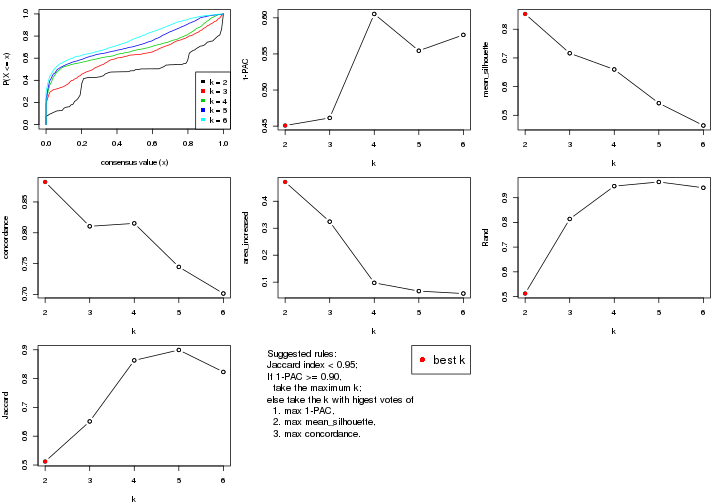
The numeric values for all these statistics can be obtained by get_stats().
get_stats(res)
#> k 1-PAC mean_silhouette concordance area_increased Rand Jaccard
#> 2 2 0.451 0.853 0.882 0.4716 0.512 0.512
#> 3 3 0.461 0.716 0.810 0.3244 0.814 0.651
#> 4 4 0.605 0.660 0.815 0.0974 0.947 0.863
#> 5 5 0.554 0.542 0.745 0.0667 0.964 0.899
#> 6 6 0.576 0.464 0.702 0.0578 0.940 0.823
suggest_best_k() suggests the best \(k\) based on these statistics. The rules are as follows:
NA.suggest_best_k(res)
#> [1] 2
Following shows the table of the partitions (You need to click the show/hide
code output link to see it). The membership matrix (columns with name p*)
is inferred by
clue::cl_consensus()
function with the SE method. Basically the value in the membership matrix
represents the probability to belong to a certain group. The finall class
label for an item is determined with the group with highest probability it
belongs to.
In get_classes() function, the entropy is calculated from the membership
matrix and the silhouette score is calculated from the consensus matrix.
cbind(get_classes(res, k = 2), get_membership(res, k = 2))
#> class entropy silhouette p1 p2
#> SRR2558111 1 0.5842 0.859 0.860 0.140
#> SRR2558177 2 0.9248 0.320 0.340 0.660
#> SRR2558176 1 0.4161 0.885 0.916 0.084
#> SRR2558175 1 0.0672 0.906 0.992 0.008
#> SRR2558174 1 0.0376 0.907 0.996 0.004
#> SRR2558173 1 0.0938 0.907 0.988 0.012
#> SRR2558172 1 0.6343 0.848 0.840 0.160
#> SRR2558171 1 0.0672 0.907 0.992 0.008
#> SRR2558170 2 0.5946 0.871 0.144 0.856
#> SRR2558169 2 0.7056 0.895 0.192 0.808
#> SRR2558168 2 0.7056 0.895 0.192 0.808
#> SRR2558167 2 0.0672 0.772 0.008 0.992
#> SRR2558166 2 0.7056 0.895 0.192 0.808
#> SRR2558165 1 0.7056 0.830 0.808 0.192
#> SRR2558164 2 0.7056 0.895 0.192 0.808
#> SRR2558163 2 0.7056 0.895 0.192 0.808
#> SRR2558162 1 0.7056 0.830 0.808 0.192
#> SRR2558161 2 0.4431 0.842 0.092 0.908
#> SRR2558160 1 0.6973 0.832 0.812 0.188
#> SRR2558159 2 0.6712 0.887 0.176 0.824
#> SRR2558158 2 0.7056 0.895 0.192 0.808
#> SRR2558157 2 0.6887 0.691 0.184 0.816
#> SRR2558156 2 0.6343 0.675 0.160 0.840
#> SRR2558155 1 0.7056 0.830 0.808 0.192
#> SRR2558154 2 0.2043 0.765 0.032 0.968
#> SRR2558153 1 0.0376 0.907 0.996 0.004
#> SRR2558152 1 0.0376 0.907 0.996 0.004
#> SRR2558151 1 0.1414 0.897 0.980 0.020
#> SRR2558150 2 0.7056 0.895 0.192 0.808
#> SRR2558149 1 0.1414 0.897 0.980 0.020
#> SRR2558148 1 0.0938 0.903 0.988 0.012
#> SRR2558147 2 0.7056 0.895 0.192 0.808
#> SRR2558146 1 0.0672 0.906 0.992 0.008
#> SRR2558145 1 0.1414 0.897 0.980 0.020
#> SRR2558144 1 0.0376 0.907 0.996 0.004
#> SRR2558143 1 0.0672 0.906 0.992 0.008
#> SRR2558142 1 0.4690 0.878 0.900 0.100
#> SRR2558141 2 0.8955 0.397 0.312 0.688
#> SRR2558140 1 0.7056 0.830 0.808 0.192
#> SRR2558139 2 0.7056 0.895 0.192 0.808
#> SRR2558138 1 0.0672 0.906 0.992 0.008
#> SRR2558137 2 0.7056 0.895 0.192 0.808
#> SRR2558136 1 0.5842 0.735 0.860 0.140
#> SRR2558182 2 0.7056 0.895 0.192 0.808
#> SRR2558181 2 0.7056 0.895 0.192 0.808
#> SRR2558180 1 0.7056 0.830 0.808 0.192
#> SRR2558179 1 0.7056 0.830 0.808 0.192
#> SRR2558178 1 0.7056 0.830 0.808 0.192
#> SRR2558134 2 0.7056 0.895 0.192 0.808
#> SRR2558135 1 0.0672 0.906 0.992 0.008
#> SRR2558133 2 0.6623 0.669 0.172 0.828
#> SRR2558132 2 0.7056 0.895 0.192 0.808
#> SRR2558131 1 0.0376 0.907 0.996 0.004
#> SRR2558129 1 0.1414 0.897 0.980 0.020
#> SRR2558127 2 0.5946 0.692 0.144 0.856
#> SRR2558126 1 0.0672 0.907 0.992 0.008
#> SRR2558128 2 0.7056 0.895 0.192 0.808
#> SRR2558125 1 0.7056 0.830 0.808 0.192
#> SRR2558130 1 0.2423 0.901 0.960 0.040
#> SRR2558124 1 0.7056 0.830 0.808 0.192
#> SRR2558123 1 0.7056 0.830 0.808 0.192
#> SRR2558121 1 0.0376 0.907 0.996 0.004
#> SRR2558122 1 0.0376 0.907 0.996 0.004
#> SRR2558120 2 0.7056 0.895 0.192 0.808
#> SRR2558119 1 0.0672 0.906 0.992 0.008
#> SRR2558117 2 0.7056 0.895 0.192 0.808
#> SRR2558118 1 0.2948 0.897 0.948 0.052
#> SRR2558115 2 0.7056 0.895 0.192 0.808
#> SRR2558116 1 0.0672 0.906 0.992 0.008
#> SRR2558114 1 0.0938 0.903 0.988 0.012
#> SRR2558113 1 0.2043 0.903 0.968 0.032
#> SRR2558112 1 0.0672 0.906 0.992 0.008
cbind(get_classes(res, k = 3), get_membership(res, k = 3))
#> class entropy silhouette p1 p2 p3
#> SRR2558111 1 0.0424 0.803 0.992 0.008 0.000
#> SRR2558177 2 0.5580 0.614 0.008 0.736 0.256
#> SRR2558176 1 0.0424 0.803 0.992 0.008 0.000
#> SRR2558175 1 0.8042 0.742 0.652 0.148 0.200
#> SRR2558174 1 0.3031 0.830 0.912 0.012 0.076
#> SRR2558173 1 0.1453 0.816 0.968 0.008 0.024
#> SRR2558172 1 0.0424 0.803 0.992 0.008 0.000
#> SRR2558171 1 0.0892 0.818 0.980 0.000 0.020
#> SRR2558170 3 0.6267 0.106 0.000 0.452 0.548
#> SRR2558169 3 0.4062 0.718 0.000 0.164 0.836
#> SRR2558168 3 0.1860 0.824 0.000 0.052 0.948
#> SRR2558167 2 0.6026 0.407 0.000 0.624 0.376
#> SRR2558166 3 0.2261 0.819 0.000 0.068 0.932
#> SRR2558165 2 0.5835 0.632 0.340 0.660 0.000
#> SRR2558164 3 0.2711 0.804 0.000 0.088 0.912
#> SRR2558163 3 0.2625 0.808 0.000 0.084 0.916
#> SRR2558162 1 0.0892 0.795 0.980 0.020 0.000
#> SRR2558161 3 0.6180 0.224 0.000 0.416 0.584
#> SRR2558160 1 0.0424 0.803 0.992 0.008 0.000
#> SRR2558159 3 0.5621 0.493 0.000 0.308 0.692
#> SRR2558158 3 0.2261 0.819 0.000 0.068 0.932
#> SRR2558157 2 0.5497 0.591 0.000 0.708 0.292
#> SRR2558156 2 0.5553 0.608 0.004 0.724 0.272
#> SRR2558155 1 0.5465 0.297 0.712 0.288 0.000
#> SRR2558154 2 0.5363 0.600 0.000 0.724 0.276
#> SRR2558153 1 0.1950 0.821 0.952 0.008 0.040
#> SRR2558152 1 0.2356 0.828 0.928 0.000 0.072
#> SRR2558151 1 0.8069 0.725 0.636 0.120 0.244
#> SRR2558150 3 0.2173 0.802 0.008 0.048 0.944
#> SRR2558149 1 0.8457 0.711 0.616 0.168 0.216
#> SRR2558148 1 0.7252 0.777 0.704 0.100 0.196
#> SRR2558147 3 0.1163 0.827 0.000 0.028 0.972
#> SRR2558146 1 0.5524 0.818 0.796 0.040 0.164
#> SRR2558145 1 0.8590 0.694 0.600 0.164 0.236
#> SRR2558144 1 0.4840 0.821 0.816 0.016 0.168
#> SRR2558143 1 0.4228 0.827 0.844 0.008 0.148
#> SRR2558142 1 0.0424 0.803 0.992 0.008 0.000
#> SRR2558141 2 0.5728 0.610 0.008 0.720 0.272
#> SRR2558140 2 0.5905 0.626 0.352 0.648 0.000
#> SRR2558139 3 0.1031 0.827 0.000 0.024 0.976
#> SRR2558138 1 0.6543 0.800 0.748 0.076 0.176
#> SRR2558137 3 0.2680 0.788 0.008 0.068 0.924
#> SRR2558136 1 0.9582 0.524 0.480 0.264 0.256
#> SRR2558182 3 0.5656 0.620 0.008 0.264 0.728
#> SRR2558181 3 0.6869 0.577 0.048 0.264 0.688
#> SRR2558180 2 0.6079 0.599 0.388 0.612 0.000
#> SRR2558179 1 0.0424 0.803 0.992 0.008 0.000
#> SRR2558178 2 0.6267 0.509 0.452 0.548 0.000
#> SRR2558134 3 0.1453 0.814 0.008 0.024 0.968
#> SRR2558135 1 0.5455 0.806 0.776 0.020 0.204
#> SRR2558133 2 0.5588 0.606 0.004 0.720 0.276
#> SRR2558132 3 0.2261 0.819 0.000 0.068 0.932
#> SRR2558131 1 0.3482 0.828 0.872 0.000 0.128
#> SRR2558129 1 0.7124 0.779 0.708 0.088 0.204
#> SRR2558127 2 0.5327 0.605 0.000 0.728 0.272
#> SRR2558126 1 0.0661 0.806 0.988 0.008 0.004
#> SRR2558128 3 0.4033 0.737 0.008 0.136 0.856
#> SRR2558125 2 0.6267 0.519 0.452 0.548 0.000
#> SRR2558130 1 0.1315 0.815 0.972 0.008 0.020
#> SRR2558124 2 0.6062 0.602 0.384 0.616 0.000
#> SRR2558123 2 0.5902 0.644 0.316 0.680 0.004
#> SRR2558121 1 0.3845 0.831 0.872 0.012 0.116
#> SRR2558122 1 0.4840 0.821 0.816 0.016 0.168
#> SRR2558120 3 0.0424 0.827 0.000 0.008 0.992
#> SRR2558119 1 0.7221 0.781 0.716 0.136 0.148
#> SRR2558117 3 0.1170 0.820 0.008 0.016 0.976
#> SRR2558118 1 0.1315 0.814 0.972 0.008 0.020
#> SRR2558115 3 0.0000 0.825 0.000 0.000 1.000
#> SRR2558116 1 0.3551 0.829 0.868 0.000 0.132
#> SRR2558114 1 0.8241 0.730 0.636 0.160 0.204
#> SRR2558113 1 0.1170 0.813 0.976 0.008 0.016
#> SRR2558112 1 0.7085 0.785 0.716 0.096 0.188
cbind(get_classes(res, k = 4), get_membership(res, k = 4))
#> class entropy silhouette p1 p2 p3 p4
#> SRR2558111 1 0.3925 0.7769 0.808 0.016 0.000 0.176
#> SRR2558177 2 0.5281 0.6219 0.016 0.756 0.048 0.180
#> SRR2558176 1 0.3591 0.7993 0.824 0.008 0.000 0.168
#> SRR2558175 1 0.3821 0.7917 0.840 0.000 0.040 0.120
#> SRR2558174 1 0.1489 0.8488 0.952 0.000 0.004 0.044
#> SRR2558173 1 0.2737 0.8325 0.888 0.008 0.000 0.104
#> SRR2558172 1 0.3390 0.8119 0.852 0.016 0.000 0.132
#> SRR2558171 1 0.2831 0.8354 0.876 0.004 0.000 0.120
#> SRR2558170 2 0.6222 -0.0561 0.000 0.532 0.412 0.056
#> SRR2558169 3 0.3821 0.6565 0.000 0.040 0.840 0.120
#> SRR2558168 3 0.0844 0.7265 0.012 0.004 0.980 0.004
#> SRR2558167 3 0.7436 0.1692 0.000 0.384 0.444 0.172
#> SRR2558166 3 0.3571 0.6851 0.008 0.036 0.868 0.088
#> SRR2558165 2 0.7443 0.4329 0.312 0.492 0.000 0.196
#> SRR2558164 3 0.2256 0.7077 0.000 0.020 0.924 0.056
#> SRR2558163 3 0.3668 0.6695 0.004 0.028 0.852 0.116
#> SRR2558162 1 0.5312 0.6842 0.712 0.052 0.000 0.236
#> SRR2558161 3 0.7260 0.2712 0.000 0.280 0.532 0.188
#> SRR2558160 1 0.4059 0.7673 0.788 0.012 0.000 0.200
#> SRR2558159 3 0.5657 0.3760 0.000 0.312 0.644 0.044
#> SRR2558158 3 0.4001 0.6656 0.008 0.036 0.840 0.116
#> SRR2558157 2 0.0779 0.6861 0.004 0.980 0.016 0.000
#> SRR2558156 2 0.0592 0.6858 0.000 0.984 0.016 0.000
#> SRR2558155 2 0.7328 0.3144 0.392 0.452 0.000 0.156
#> SRR2558154 2 0.6828 0.3052 0.000 0.588 0.264 0.148
#> SRR2558153 1 0.2586 0.8392 0.912 0.008 0.012 0.068
#> SRR2558152 1 0.1109 0.8481 0.968 0.000 0.004 0.028
#> SRR2558151 1 0.5234 0.7152 0.752 0.000 0.096 0.152
#> SRR2558150 3 0.1913 0.6993 0.020 0.000 0.940 0.040
#> SRR2558149 1 0.4713 0.7374 0.776 0.000 0.052 0.172
#> SRR2558148 1 0.3764 0.8010 0.844 0.000 0.040 0.116
#> SRR2558147 3 0.1509 0.7236 0.020 0.008 0.960 0.012
#> SRR2558146 1 0.3279 0.8325 0.872 0.000 0.032 0.096
#> SRR2558145 1 0.4907 0.7253 0.764 0.000 0.060 0.176
#> SRR2558144 1 0.2884 0.8401 0.900 0.004 0.028 0.068
#> SRR2558143 1 0.1584 0.8428 0.952 0.000 0.012 0.036
#> SRR2558142 1 0.2867 0.8252 0.884 0.012 0.000 0.104
#> SRR2558141 2 0.3312 0.6792 0.008 0.884 0.040 0.068
#> SRR2558140 2 0.3828 0.6808 0.068 0.848 0.000 0.084
#> SRR2558139 3 0.1297 0.7160 0.020 0.000 0.964 0.016
#> SRR2558138 1 0.2699 0.8259 0.904 0.000 0.028 0.068
#> SRR2558137 3 0.1816 0.7184 0.024 0.004 0.948 0.024
#> SRR2558136 1 0.6797 0.2941 0.536 0.000 0.108 0.356
#> SRR2558182 3 0.6574 -0.7377 0.088 0.000 0.548 0.364
#> SRR2558181 4 0.7008 0.0000 0.116 0.000 0.436 0.448
#> SRR2558180 2 0.3734 0.6843 0.044 0.848 0.000 0.108
#> SRR2558179 1 0.4957 0.7202 0.748 0.048 0.000 0.204
#> SRR2558178 2 0.7110 0.5420 0.236 0.564 0.000 0.200
#> SRR2558134 3 0.2089 0.6916 0.020 0.000 0.932 0.048
#> SRR2558135 1 0.2586 0.8315 0.912 0.000 0.048 0.040
#> SRR2558133 2 0.0779 0.6861 0.004 0.980 0.016 0.000
#> SRR2558132 3 0.1339 0.7224 0.004 0.008 0.964 0.024
#> SRR2558131 1 0.1854 0.8492 0.940 0.000 0.012 0.048
#> SRR2558129 1 0.3958 0.7917 0.836 0.000 0.052 0.112
#> SRR2558127 2 0.0779 0.6861 0.004 0.980 0.016 0.000
#> SRR2558126 1 0.2179 0.8396 0.924 0.012 0.000 0.064
#> SRR2558128 3 0.2207 0.7009 0.024 0.004 0.932 0.040
#> SRR2558125 2 0.7267 0.5191 0.248 0.540 0.000 0.212
#> SRR2558130 1 0.3324 0.8108 0.852 0.012 0.000 0.136
#> SRR2558124 2 0.6723 0.5483 0.260 0.600 0.000 0.140
#> SRR2558123 2 0.1767 0.6924 0.012 0.944 0.000 0.044
#> SRR2558121 1 0.1151 0.8484 0.968 0.000 0.008 0.024
#> SRR2558122 1 0.1724 0.8407 0.948 0.000 0.020 0.032
#> SRR2558120 3 0.1182 0.7204 0.016 0.000 0.968 0.016
#> SRR2558119 1 0.4748 0.6676 0.716 0.000 0.016 0.268
#> SRR2558117 3 0.1629 0.7128 0.024 0.000 0.952 0.024
#> SRR2558118 1 0.1854 0.8425 0.940 0.012 0.000 0.048
#> SRR2558115 3 0.1820 0.7023 0.020 0.000 0.944 0.036
#> SRR2558116 1 0.1863 0.8488 0.944 0.004 0.012 0.040
#> SRR2558114 1 0.4920 0.7241 0.756 0.000 0.052 0.192
#> SRR2558113 1 0.2987 0.8268 0.880 0.016 0.000 0.104
#> SRR2558112 1 0.3999 0.7814 0.824 0.000 0.036 0.140
cbind(get_classes(res, k = 5), get_membership(res, k = 5))
#> class entropy silhouette p1 p2 p3 p4 p5
#> SRR2558111 1 0.4355 0.6501 0.732 0.000 0.000 0.044 0.224
#> SRR2558177 2 0.6741 0.3252 0.016 0.596 0.032 0.228 0.128
#> SRR2558176 1 0.5822 0.5157 0.624 0.016 0.000 0.096 0.264
#> SRR2558175 1 0.3766 0.7588 0.840 0.000 0.032 0.052 0.076
#> SRR2558174 1 0.2570 0.7536 0.888 0.000 0.000 0.028 0.084
#> SRR2558173 1 0.4801 0.6578 0.732 0.004 0.000 0.092 0.172
#> SRR2558172 1 0.4166 0.4851 0.648 0.000 0.000 0.004 0.348
#> SRR2558171 1 0.4155 0.6972 0.780 0.000 0.000 0.076 0.144
#> SRR2558170 2 0.5896 -0.3258 0.000 0.600 0.216 0.184 0.000
#> SRR2558169 3 0.4503 0.3910 0.000 0.036 0.696 0.268 0.000
#> SRR2558168 3 0.1408 0.7105 0.008 0.000 0.948 0.044 0.000
#> SRR2558167 4 0.7073 0.7120 0.000 0.276 0.312 0.400 0.012
#> SRR2558166 3 0.4637 0.3780 0.000 0.028 0.676 0.292 0.004
#> SRR2558165 2 0.7795 -0.2347 0.196 0.460 0.000 0.104 0.240
#> SRR2558164 3 0.2795 0.6255 0.000 0.028 0.872 0.100 0.000
#> SRR2558163 3 0.4674 0.4034 0.000 0.024 0.676 0.292 0.008
#> SRR2558162 1 0.6689 0.3839 0.556 0.056 0.000 0.100 0.288
#> SRR2558161 4 0.7787 0.7184 0.008 0.220 0.284 0.432 0.056
#> SRR2558160 1 0.5744 0.5598 0.652 0.020 0.000 0.100 0.228
#> SRR2558159 3 0.6173 -0.4364 0.000 0.396 0.468 0.136 0.000
#> SRR2558158 3 0.5071 0.2932 0.000 0.036 0.628 0.328 0.008
#> SRR2558157 2 0.0000 0.5598 0.000 1.000 0.000 0.000 0.000
#> SRR2558156 2 0.0000 0.5598 0.000 1.000 0.000 0.000 0.000
#> SRR2558155 5 0.6586 0.6397 0.292 0.244 0.000 0.000 0.464
#> SRR2558154 2 0.7221 -0.7034 0.000 0.380 0.228 0.368 0.024
#> SRR2558153 1 0.2568 0.7600 0.888 0.000 0.004 0.016 0.092
#> SRR2558152 1 0.2300 0.7622 0.904 0.000 0.000 0.024 0.072
#> SRR2558151 1 0.5594 0.6723 0.720 0.000 0.088 0.096 0.096
#> SRR2558150 3 0.1405 0.7112 0.020 0.000 0.956 0.016 0.008
#> SRR2558149 1 0.4957 0.7034 0.764 0.000 0.052 0.100 0.084
#> SRR2558148 1 0.4453 0.7357 0.796 0.000 0.036 0.092 0.076
#> SRR2558147 3 0.0671 0.7154 0.016 0.000 0.980 0.004 0.000
#> SRR2558146 1 0.4078 0.7556 0.816 0.000 0.024 0.064 0.096
#> SRR2558145 1 0.5325 0.6848 0.740 0.000 0.076 0.100 0.084
#> SRR2558144 1 0.2494 0.7736 0.904 0.000 0.008 0.032 0.056
#> SRR2558143 1 0.1630 0.7711 0.944 0.000 0.004 0.016 0.036
#> SRR2558142 1 0.3809 0.6307 0.736 0.000 0.000 0.008 0.256
#> SRR2558141 2 0.5442 0.2062 0.024 0.644 0.012 0.024 0.296
#> SRR2558140 2 0.4033 0.3491 0.024 0.760 0.000 0.004 0.212
#> SRR2558139 3 0.0932 0.7161 0.020 0.000 0.972 0.004 0.004
#> SRR2558138 1 0.2800 0.7684 0.888 0.000 0.016 0.024 0.072
#> SRR2558137 3 0.2968 0.6849 0.012 0.000 0.864 0.112 0.012
#> SRR2558136 1 0.7550 0.3695 0.508 0.000 0.108 0.216 0.168
#> SRR2558182 3 0.6644 0.3178 0.068 0.000 0.592 0.236 0.104
#> SRR2558181 3 0.8012 0.0424 0.108 0.000 0.380 0.320 0.192
#> SRR2558180 2 0.4942 0.2704 0.024 0.680 0.000 0.024 0.272
#> SRR2558179 1 0.6598 0.3475 0.560 0.060 0.000 0.084 0.296
#> SRR2558178 5 0.6211 0.5601 0.128 0.368 0.000 0.004 0.500
#> SRR2558134 3 0.1518 0.7099 0.016 0.000 0.952 0.020 0.012
#> SRR2558135 1 0.3309 0.7667 0.868 0.000 0.048 0.032 0.052
#> SRR2558133 2 0.0000 0.5598 0.000 1.000 0.000 0.000 0.000
#> SRR2558132 3 0.1202 0.7026 0.004 0.004 0.960 0.032 0.000
#> SRR2558131 1 0.3191 0.7736 0.872 0.000 0.040 0.024 0.064
#> SRR2558129 1 0.4651 0.7327 0.788 0.000 0.064 0.080 0.068
#> SRR2558127 2 0.0000 0.5598 0.000 1.000 0.000 0.000 0.000
#> SRR2558126 1 0.2969 0.7401 0.852 0.000 0.000 0.020 0.128
#> SRR2558128 3 0.2967 0.6915 0.012 0.000 0.868 0.104 0.016
#> SRR2558125 2 0.7057 -0.3236 0.112 0.432 0.000 0.056 0.400
#> SRR2558130 1 0.4219 0.6446 0.716 0.000 0.004 0.016 0.264
#> SRR2558124 5 0.6742 0.6915 0.180 0.344 0.000 0.012 0.464
#> SRR2558123 2 0.2798 0.4877 0.000 0.852 0.000 0.008 0.140
#> SRR2558121 1 0.2395 0.7603 0.904 0.000 0.008 0.016 0.072
#> SRR2558122 1 0.2253 0.7711 0.920 0.000 0.016 0.036 0.028
#> SRR2558120 3 0.0960 0.7165 0.016 0.000 0.972 0.008 0.004
#> SRR2558119 1 0.5772 0.5996 0.664 0.000 0.020 0.132 0.184
#> SRR2558117 3 0.2507 0.7055 0.016 0.000 0.900 0.072 0.012
#> SRR2558118 1 0.2818 0.7502 0.860 0.000 0.004 0.008 0.128
#> SRR2558115 3 0.0960 0.7149 0.016 0.000 0.972 0.008 0.004
#> SRR2558116 1 0.2981 0.7704 0.876 0.000 0.024 0.016 0.084
#> SRR2558114 1 0.5294 0.6948 0.736 0.000 0.048 0.108 0.108
#> SRR2558113 1 0.3829 0.6886 0.776 0.000 0.000 0.028 0.196
#> SRR2558112 1 0.3517 0.7513 0.856 0.000 0.032 0.056 0.056
cbind(get_classes(res, k = 6), get_membership(res, k = 6))
#> class entropy silhouette p1 p2 p3 p4 p5 p6
#> SRR2558111 1 0.5758 0.3183 0.576 0.000 0.000 0.016 0.192 0.216
#> SRR2558177 2 0.7261 0.1563 0.000 0.480 0.036 0.232 0.064 0.188
#> SRR2558176 5 0.4929 0.4493 0.364 0.004 0.000 0.024 0.584 0.024
#> SRR2558175 1 0.3787 0.6248 0.796 0.000 0.016 0.016 0.152 0.020
#> SRR2558174 1 0.4471 0.5254 0.688 0.000 0.000 0.016 0.256 0.040
#> SRR2558173 1 0.4996 -0.0158 0.516 0.000 0.000 0.012 0.428 0.044
#> SRR2558172 1 0.5364 0.2511 0.488 0.000 0.000 0.008 0.084 0.420
#> SRR2558171 1 0.4195 0.3676 0.648 0.000 0.000 0.008 0.328 0.016
#> SRR2558170 2 0.4844 -0.1178 0.000 0.672 0.120 0.204 0.004 0.000
#> SRR2558169 3 0.4593 0.3186 0.000 0.044 0.576 0.380 0.000 0.000
#> SRR2558168 3 0.2113 0.6878 0.004 0.000 0.896 0.092 0.008 0.000
#> SRR2558167 4 0.7011 0.6757 0.000 0.284 0.176 0.468 0.028 0.044
#> SRR2558166 3 0.4963 0.2798 0.000 0.060 0.544 0.392 0.004 0.000
#> SRR2558165 5 0.7360 -0.0909 0.064 0.344 0.000 0.056 0.420 0.116
#> SRR2558164 3 0.1913 0.6638 0.000 0.016 0.924 0.044 0.016 0.000
#> SRR2558163 3 0.4853 0.2917 0.000 0.044 0.556 0.392 0.008 0.000
#> SRR2558162 5 0.6564 0.5670 0.276 0.024 0.000 0.028 0.516 0.156
#> SRR2558161 4 0.6724 0.5384 0.000 0.148 0.236 0.536 0.020 0.060
#> SRR2558160 1 0.6237 -0.2891 0.448 0.012 0.004 0.032 0.420 0.084
#> SRR2558159 2 0.5854 -0.4280 0.000 0.464 0.360 0.172 0.004 0.000
#> SRR2558158 3 0.5336 0.1416 0.000 0.060 0.488 0.436 0.012 0.004
#> SRR2558157 2 0.0146 0.5650 0.000 0.996 0.000 0.000 0.004 0.000
#> SRR2558156 2 0.0000 0.5658 0.000 1.000 0.000 0.000 0.000 0.000
#> SRR2558155 6 0.5737 0.6784 0.136 0.200 0.000 0.012 0.024 0.628
#> SRR2558154 4 0.6525 0.6026 0.000 0.364 0.124 0.456 0.008 0.048
#> SRR2558153 1 0.3845 0.6140 0.792 0.000 0.004 0.012 0.140 0.052
#> SRR2558152 1 0.4180 0.6265 0.768 0.000 0.000 0.016 0.116 0.100
#> SRR2558151 1 0.3610 0.6208 0.828 0.000 0.044 0.008 0.096 0.024
#> SRR2558150 3 0.1749 0.6955 0.016 0.000 0.932 0.044 0.004 0.004
#> SRR2558149 1 0.3243 0.6418 0.860 0.000 0.036 0.016 0.064 0.024
#> SRR2558148 1 0.3942 0.6499 0.812 0.000 0.028 0.012 0.084 0.064
#> SRR2558147 3 0.0862 0.6980 0.016 0.000 0.972 0.004 0.008 0.000
#> SRR2558146 1 0.4831 0.4453 0.652 0.000 0.008 0.028 0.288 0.024
#> SRR2558145 1 0.3096 0.6385 0.864 0.000 0.036 0.012 0.072 0.016
#> SRR2558144 1 0.2569 0.6556 0.880 0.000 0.004 0.012 0.092 0.012
#> SRR2558143 1 0.1938 0.6623 0.920 0.000 0.000 0.008 0.052 0.020
#> SRR2558142 1 0.5083 0.4155 0.580 0.000 0.000 0.008 0.072 0.340
#> SRR2558141 2 0.5754 -0.2241 0.024 0.520 0.016 0.048 0.004 0.388
#> SRR2558140 2 0.4035 0.2558 0.000 0.700 0.000 0.012 0.016 0.272
#> SRR2558139 3 0.1003 0.6981 0.020 0.000 0.964 0.016 0.000 0.000
#> SRR2558138 1 0.3732 0.5943 0.776 0.000 0.000 0.012 0.180 0.032
#> SRR2558137 3 0.4353 0.6039 0.008 0.000 0.720 0.228 0.020 0.024
#> SRR2558136 1 0.6129 0.4203 0.648 0.000 0.064 0.048 0.160 0.080
#> SRR2558182 3 0.7783 0.2779 0.156 0.000 0.488 0.100 0.144 0.112
#> SRR2558181 3 0.8615 0.0907 0.216 0.000 0.336 0.132 0.184 0.132
#> SRR2558180 2 0.5326 0.2000 0.004 0.612 0.000 0.016 0.084 0.284
#> SRR2558179 5 0.5831 0.5441 0.292 0.012 0.000 0.024 0.576 0.096
#> SRR2558178 6 0.6344 0.4858 0.040 0.288 0.000 0.024 0.100 0.548
#> SRR2558134 3 0.1549 0.6909 0.024 0.000 0.944 0.024 0.004 0.004
#> SRR2558135 1 0.3131 0.6686 0.860 0.000 0.036 0.004 0.072 0.028
#> SRR2558133 2 0.0146 0.5649 0.000 0.996 0.000 0.000 0.000 0.004
#> SRR2558132 3 0.1138 0.6892 0.004 0.000 0.960 0.024 0.012 0.000
#> SRR2558131 1 0.3101 0.6655 0.852 0.000 0.024 0.000 0.092 0.032
#> SRR2558129 1 0.3947 0.6200 0.820 0.000 0.040 0.028 0.076 0.036
#> SRR2558127 2 0.0000 0.5658 0.000 1.000 0.000 0.000 0.000 0.000
#> SRR2558126 1 0.4264 0.5936 0.732 0.000 0.000 0.004 0.080 0.184
#> SRR2558128 3 0.4914 0.6355 0.020 0.000 0.736 0.144 0.040 0.060
#> SRR2558125 2 0.7517 -0.1610 0.032 0.332 0.000 0.052 0.316 0.268
#> SRR2558130 1 0.5248 0.2798 0.512 0.000 0.000 0.000 0.100 0.388
#> SRR2558124 6 0.5326 0.7076 0.076 0.264 0.000 0.008 0.020 0.632
#> SRR2558123 2 0.2809 0.4813 0.000 0.848 0.000 0.004 0.020 0.128
#> SRR2558121 1 0.4238 0.5643 0.724 0.000 0.004 0.016 0.228 0.028
#> SRR2558122 1 0.2164 0.6649 0.908 0.000 0.000 0.012 0.060 0.020
#> SRR2558120 3 0.1065 0.7018 0.008 0.000 0.964 0.020 0.000 0.008
#> SRR2558119 1 0.5660 0.5146 0.660 0.000 0.008 0.064 0.176 0.092
#> SRR2558117 3 0.4059 0.6574 0.016 0.000 0.776 0.164 0.020 0.024
#> SRR2558118 1 0.3785 0.6186 0.780 0.000 0.000 0.004 0.064 0.152
#> SRR2558115 3 0.1346 0.6953 0.024 0.000 0.952 0.016 0.008 0.000
#> SRR2558116 1 0.4010 0.6294 0.772 0.000 0.000 0.012 0.068 0.148
#> SRR2558114 1 0.4816 0.6293 0.760 0.000 0.032 0.040 0.076 0.092
#> SRR2558113 1 0.5285 0.4598 0.612 0.000 0.000 0.016 0.096 0.276
#> SRR2558112 1 0.1647 0.6618 0.940 0.000 0.016 0.008 0.032 0.004
Heatmaps for the consensus matrix. It visualizes the probability of two samples to be in a same group.
consensus_heatmap(res, k = 2)
consensus_heatmap(res, k = 3)
consensus_heatmap(res, k = 4)
consensus_heatmap(res, k = 5)
consensus_heatmap(res, k = 6)
Heatmaps for the membership of samples in all partitions to see how consistent they are:
membership_heatmap(res, k = 2)
membership_heatmap(res, k = 3)
membership_heatmap(res, k = 4)
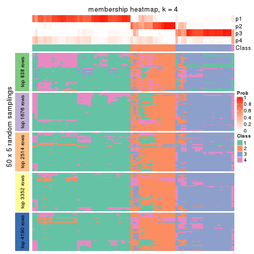
membership_heatmap(res, k = 5)
membership_heatmap(res, k = 6)
As soon as we have had the classes for columns, we can look for signatures which are significantly different between classes which can be candidate marks for certain classes. Following are the heatmaps for signatures.
Signature heatmaps where rows are scaled:
get_signatures(res, k = 2)

get_signatures(res, k = 3)

get_signatures(res, k = 4)
get_signatures(res, k = 5)
get_signatures(res, k = 6)
Signature heatmaps where rows are not scaled:
get_signatures(res, k = 2, scale_rows = FALSE)
get_signatures(res, k = 3, scale_rows = FALSE)
get_signatures(res, k = 4, scale_rows = FALSE)
get_signatures(res, k = 5, scale_rows = FALSE)
get_signatures(res, k = 6, scale_rows = FALSE)
Compare the overlap of signatures from different k:
compare_signatures(res)
get_signature() returns a data frame invisibly. TO get the list of signatures, the function
call should be assigned to a variable explicitly. In following code, if plot argument is set
to FALSE, no heatmap is plotted while only the differential analysis is performed.
# code only for demonstration
tb = get_signature(res, k = ..., plot = FALSE)
An example of the output of tb is:
#> which_row fdr mean_1 mean_2 scaled_mean_1 scaled_mean_2 km
#> 1 38 0.042760348 8.373488 9.131774 -0.5533452 0.5164555 1
#> 2 40 0.018707592 7.106213 8.469186 -0.6173731 0.5762149 1
#> 3 55 0.019134737 10.221463 11.207825 -0.6159697 0.5749050 1
#> 4 59 0.006059896 5.921854 7.869574 -0.6899429 0.6439467 1
#> 5 60 0.018055526 8.928898 10.211722 -0.6204761 0.5791110 1
#> 6 98 0.009384629 15.714769 14.887706 0.6635654 -0.6193277 2
...
The columns in tb are:
which_row: row indices corresponding to the input matrix.fdr: FDR for the differential test. mean_x: The mean value in group x.scaled_mean_x: The mean value in group x after rows are scaled.km: Row groups if k-means clustering is applied to rows.UMAP plot which shows how samples are separated.
dimension_reduction(res, k = 2, method = "UMAP")
dimension_reduction(res, k = 3, method = "UMAP")
dimension_reduction(res, k = 4, method = "UMAP")
dimension_reduction(res, k = 5, method = "UMAP")
dimension_reduction(res, k = 6, method = "UMAP")
Following heatmap shows how subgroups are split when increasing k:
collect_classes(res)
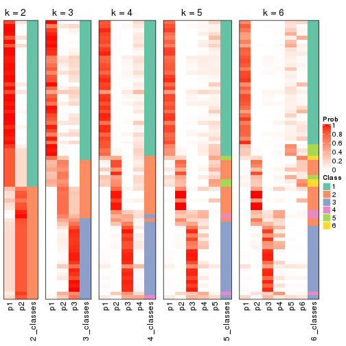
If matrix rows can be associated to genes, consider to use GO_Enrichment(res,
...) to perform function enrichment for the signature genes.
sessionInfo()
#> R version 3.6.0 (2019-04-26)
#> Platform: x86_64-pc-linux-gnu (64-bit)
#> Running under: CentOS Linux 7 (Core)
#>
#> Matrix products: default
#> BLAS: /usr/lib64/libblas.so.3.4.2
#> LAPACK: /usr/lib64/liblapack.so.3.4.2
#>
#> locale:
#> [1] LC_CTYPE=en_GB.UTF-8 LC_NUMERIC=C LC_TIME=en_GB.UTF-8
#> [4] LC_COLLATE=en_GB.UTF-8 LC_MONETARY=en_GB.UTF-8 LC_MESSAGES=en_GB.UTF-8
#> [7] LC_PAPER=en_GB.UTF-8 LC_NAME=C LC_ADDRESS=C
#> [10] LC_TELEPHONE=C LC_MEASUREMENT=en_GB.UTF-8 LC_IDENTIFICATION=C
#>
#> attached base packages:
#> [1] grid parallel stats4 stats graphics grDevices utils datasets methods
#> [10] base
#>
#> other attached packages:
#> [1] genefilter_1.66.0 ComplexHeatmap_2.1.1 markdown_1.1
#> [4] knitr_1.26 cola_1.3.2 SummarizedExperiment_1.14.1
#> [7] DelayedArray_0.10.0 BiocParallel_1.18.1 matrixStats_0.55.0
#> [10] Biobase_2.44.0 GenomicRanges_1.36.1 GenomeInfoDb_1.20.0
#> [13] IRanges_2.18.3 S4Vectors_0.22.1 BiocGenerics_0.30.0
#> [16] GetoptLong_0.1.7
#>
#> loaded via a namespace (and not attached):
#> [1] bitops_1.0-6 bit64_0.9-7 doParallel_1.0.15 RColorBrewer_1.1-2
#> [5] httr_1.4.1 backports_1.1.5 tools_3.6.0 R6_2.4.1
#> [9] DBI_1.0.0 lazyeval_0.2.2 colorspace_1.4-1 withr_2.1.2
#> [13] tidyselect_0.2.5 gridExtra_2.3 bit_1.1-14 compiler_3.6.0
#> [17] xml2_1.2.2 microbenchmark_1.4-7 pkgmaker_0.28 slam_0.1-46
#> [21] scales_1.1.0 NMF_0.23.6 stringr_1.4.0 digest_0.6.23
#> [25] XVector_0.24.0 pkgconfig_2.0.3 bibtex_0.4.2 highr_0.8
#> [29] rlang_0.4.2 GlobalOptions_0.1.1 RSQLite_2.1.2 impute_1.58.0
#> [33] shape_1.4.4 mclust_5.4.5 dendextend_1.12.0 dplyr_0.8.3
#> [37] RCurl_1.95-4.12 magrittr_1.5 GenomeInfoDbData_1.2.1 Matrix_1.2-17
#> [41] Rcpp_1.0.3 munsell_0.5.0 viridis_0.5.1 lifecycle_0.1.0
#> [45] stringi_1.4.3 zlibbioc_1.30.0 plyr_1.8.4 blob_1.2.0
#> [49] crayon_1.3.4 lattice_0.20-38 splines_3.6.0 annotate_1.62.0
#> [53] circlize_0.4.9 zeallot_0.1.0 pillar_1.4.2 rjson_0.2.20
#> [57] rngtools_1.4 reshape2_1.4.3 codetools_0.2-16 XML_3.98-1.20
#> [61] glue_1.3.1 evaluate_0.14 vctrs_0.2.0 png_0.1-7
#> [65] foreach_1.4.7 polyclip_1.10-0 gtable_0.3.0 purrr_0.3.3
#> [69] clue_0.3-57 assertthat_0.2.1 ggplot2_3.2.1 xfun_0.11
#> [73] gridBase_0.4-7 eulerr_6.0.0 xtable_1.8-4 skmeans_0.2-11
#> [77] survival_2.44-1.1 viridisLite_0.3.0 tibble_2.1.3 iterators_1.0.12
#> [81] memoise_1.1.0 AnnotationDbi_1.46.1 registry_0.5-1 GTF_0.0.1
#> [85] cluster_2.1.0 brew_1.0-6